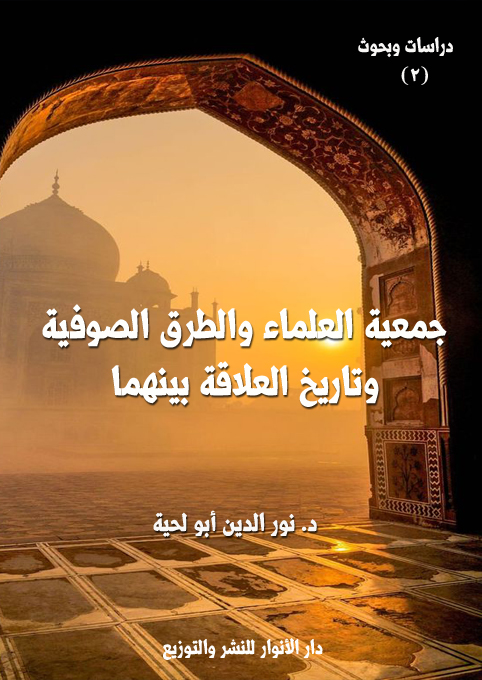

الكتاب: جمعية العلماء المسلمين الجزائريين والطرق الصوفية وتاريخ العلاقة بينهما
المؤلف: أ.د. نور الدين أبو لحية
الناشر: دار الأنوار للنشر والتوزيع
الطبعة: الثانية، 1437 هـ
عدد الصفحات: 392
ISBN: 978-3-330-97184-4
لمطالعة الكتاب من تطبيق مؤلفاتي المجاني وهو أحسن وأيسر: هنا

التعريف بالكتاب
يتناول هذا الكتاب تاريخ العلاقة بين جمعية العلماء المسلمين الجزائريين، والطرق الصوفية.. وهو ليس بحثا تاريخيا مجردا، بل هو نموذج عن الصراع التاريخي الطويل بين التيارات السلفية والتيارات الصوفية.. أو هو صراع بين القراءة الحرفية الظاهرية للإسلام، والقراءة العميقة له.
وقد حاولت هذه الدراسة وما يليها من الدراسات أن ننصف الطرق الصوفية التي أوذيت كثيرا من طرف الجمعية في عهد الاستعمار الفرنسي، وأوذيت بعد الاستقلال من طرف ورثتها من أبناء الحركات الإسلامية..
جمعية العلماء والطرق الصوفية والعلاقة بينهما (11)
لا شك أن الباحث في الواقع الديني والثقافي والاجتماعي للجزائر في عهد الاستعمار الفرنسي، يجد فصيلين مهمين متميزين كان لكيلهما أثره في الحياة الجزائرية:
أما الأول: فيمثله مشايخ الطرق الصوفية ومريدوهم وزواياهم وأوقافهم التي لم تكن تخلو منها مدينة ولا قرية في جميع القطر الجزائري، وهم – لذلك- متغلغلون في جميع الحياة الجزائرية اجتماعية كانت أو تربوية أو ثقافية أو حتى ما ارتبط منها بالجانب السياسي والعسكري.
وأما الثاني: فهم العلماء أو طلبة العلم الذين تبنوا الفكر الإصلاحي التنويري أو الوهابي الذي كان في ذلك الحين في أوج نشاطه في المشرق العربي، وقد تسنى لهذا الفريق أيضا أن يقيم بعض المؤسسات التربوية والإعلامية التي ينشر من خلالها آراءه ومشاريعه الإصلاحية، وقد تجلى هذا الفصيل في أجلى صوره في (جمعية العلماء المسلمين الجزائريين)
ومن الطبيعي أن يحصل بين فصيلين كبيرين كهذين الفصيلين أنواع من العلاقة والتعامل المبنية على أساس التوجهات الفكرية المختلفة، وعلى أساس المشاريع الإصلاحية التي قد تختلف التصورات حولها.
بناء على هذا، وبناء على أهمية ما حصل في تلك الفترة الخطيرة من التاريخ الجزائري، والتي انبنى عليها الواقع الجزائري بعد الاستقلال تثار إشكالات كثيرة يمكن صياغتها كما يلي:
الأول: لقد كان كلا التيارين يحملان أفكارا مختلفة، تصل أحيانا إلى درجة التناقص، وكان لهما في نفس الوقت مشاريع يشتركان فيها كبغض الاستعمار وحب التخلص منه، والحرص على الهوية العربية الإسلامية، والحرص على تحقيق العدالة والتخلص من الجور والتمييز العنصري الذي فرضه الاستعمار.
وهذا يستدعي التساؤل عن تعامل هذين الفصيلين مع هذين الجانبين، وهل غلب كلاهما
جمعية العلماء والطرق الصوفية والعلاقة بينهما (12)
الاتجاه الفكري، وما يفرزه من اختلافات تصل إلى حد التناقض، أم أنهما ترفعا على هذا، وعلما أن الواقع الجزائري لا يسمح بطرح تلك الخلافات، وأن الأولى هو العمل في المتفق عليه، وترك الخلاف لمحله.
الثاني: هو أنه من المتفق عليه، بل من البديهي أن التيار الإصلاحي في الجزائر، كما هو في العالم الإسلامي أجمع، ينطلق من خلافه التام مع التيار التقليدي المحافظ المتمثل في الطرق الصوفية ومؤسساتها، بل إنه لم يسم إصلاحيا إلا لثورته على التيار التقليدي، وهذا يستدعي التساؤل عن الأسباب المحركة لذلك الخلاف، ومدى أهميتها، وموضوعيتها.. وهل كان ما حدث من خلاف خطأ استراتيجيا وقع فيه كلا الطرفين المختلفين حين غفلا عن القضايا الكبرى التي كان يمكن أن يتوجها لها.. أم أن ما حصل كان ضرورة لابد منها، ولم يكن هناك بد من إعلان الحرب على المخالف، فالجسم المريض لا يمكنه أن يتحرر خارجيا إلا إذا تحرر داخليا؟
الثالث: وهو بعد إقرارنا بوجود الخلاف الفكري بين كلا الفصيلين، وهو مما لا يجادل فيه أحد، هل كان هناك فرص لتخفيف بعض مظاهر الخلاف، أو الحد منه نهائيا، أم أنه لم يكن لهما مناص من ذلك.. أي أن ما حصل هو ما ينبغي أن يحصل، فلم يكن أمام الجمعية، ولا أمام الطرق الصوفية إلا تلك الأساليب والوسائل التي استعملاها؟
الرابع: هو عن آثار ذلك التعامل، وما حصل فيه من وفاق أو خلاف، هل بقي محصورا في المحال التي كان فيها، أم أنه تعداها إلى نواح أخرى كالسياسة والمجتمع والثقافة والدين وغيرها؟
وفي هذه الحالة، هل يمكن أن نستفيد من الأخطاء التي وقعت، ونتدارك ما لم يمكن تداركه في المرحلة السابقة، أم أن ذلك كله مستحيل؟
وهل تستفيد التيارات العلمانية المختلفة مما يحدث اليوم من خلاف بين التجديديين أو
جمعية العلماء والطرق الصوفية والعلاقة بينهما (13)
الحركيين أو السلفيين، وبين الطرقيين أو المحافظين؟
وهل استغلت الحكومات المتعاقبة على الجزائر ذلك الخلاف القديم، والذي اكتسى كل حين ثيابا جديدة، في صرف الإسلاميين عن التأثير الاجتماعي، وعن المناصب السياسية؟
هذه الأسئلة وغيرها نحاول الإجابة عنها في هذه السلسلة من الدراسات التي نتقدم بها للباحثين وطلبة العلم لإعادة قراءة التاريخ بدقة وموضوعية بعيدا عن أي مؤثرات، وقد عنونا السلسلة بـ (دراسات حول جمعية العلماء والطرق الصوفية في الجزائر)
وقد دفعنا إلى اختيار البحث في هذا الموضوع دوافع كثيرة يمكن حصرها في:
دافع علمي: وهو أني رأيت أكثر الباحثين في هذا الموضوع يقفون مع أحد طرفي التعامل، بل نراهم في أحيان كثيرة يعتبرون الطرف الآخر هو أساس المشكلة وسببها.. وهذا يؤثر كثيرا على المنهج العلمي، فهو يتطلب التعامل مع الطرفين من زاوية موضوعية واحدة.
وكمثال على ذلك كتاب (صراع بين السنة والبدعة) للشيخ أحمد حماني - رحمه الله – فهو مع أهميته البالغة في الموضوع إلا أن مؤلفه يمثل فيه طرفا من أطراف النزاع، وبالتالي صار أقرب إلى الوثيقة أو المصدر منه إلى البحث الموضوعي.
وهكذا نجد الكثير من المراجع في هذا الباب تنظر من زاوية واحدة لهذا الموضوع الخطير، وبالتالي تعلن حربها على الطرف الآخر، لتصبح هي الأخرى فردا من أفراد الخلاف.. ولهذا رأينا الحاجة إلى استعمال الحيدة المطلقة حتى نصل إلى الحقيقة من بابها الصحيح.
دافع عملي: وهو ناشئ من اعتقادنا أن الحاضر صدى للماضي، وما يحصل اليوم ربما يكون قد حصل مثله من قبل، والعاقل هو الذي يستفيد من صواب غيره وخطئه، حتى لا يفوته الصواب، وحتى لا يكرر الخطأ.
والدعوة الإسلامية خصوصا بحاجة إلى الكثير من التجارب في هذا المجال، فهي تخوض كما خاض سلفها حروبا عديدة مع تيارات مختلفة، وهي تحتاج إلى نوع من النضج في هذا الباب
جمعية العلماء والطرق الصوفية والعلاقة بينهما (14)
لتستفيد من حسنات التجارب السابقة، وتعتبر بسيئاتها.
وللأسف نجد الكثير من الدعاة في الجزائر على إلمام مفصل وواسع بكثير من الحركات الإسلامية الشرقية، وأنواع التعامل التي حصلت لها مع مختلف التيارات، بينما تغيب عنهم الحركة الإسلامية الجزائرية، بل يعتبرونها من تاريخ المواجهة للاستعمار، وكأنها لم يكن لها هدف إلا مواجهة الاستعمار، وبما أن الاستعمار قد ذهب، فقد انتهى دورها.
دافع شخصي: وهو أنه أتيح لي أن أطلع عن كثب على من يمثل جمعية العلماء والطرق الصوفية في واقعنا المعاصر.
فقد صحبت بعض الطرق الصوفية، وتتلمذت في بعض الزوايا التي كان لها علاقة بمشائخ الجمعية، ودرَّست فيها، وقد أتيح لي أن أتعرف على مواقفها المختلفة سواء من جمعية العلماء كرجال يمثلونها، أو على الأفكار التي بثتها جمعية العلماء، أو لا يزال ورثتها يبثونها.
ومثلما صحبت هذه الطرق انخرطت في بعض الحركات الإسلامية، ورأيت مواقفها المختلفة، بل والمتناقضة أحيانا من التصوف، ومن الطرق الصوفية.
وقد كان لكلا الأمرين أثره في نفسي: فقد شعرت بنوع من الصراع بين ذلك الانتماء المحافظ، وبين ذلك التجديد الذي أتت به جمعية العلماء، والذي مثله بعد ذلك ورثتها.. وقد كنت أتساءل كل حين بيني وبين نفسي عن إمكانية التوفيق بين كلا التيارين: التيار التقليدي المحافظ المتسغرق في محافظته، وبين التيار التجديدي أو السلفي الذي مثلته الجمعية، ومثله بعد ذلك ورثتها.
وقد آلمني أكثر من ذلك أن الحركات الإسلامية مع ما أثبتته من قدرة على اختراق كثير من المواقع إلا أنها لم تفكر في اختراق الطرق والزوايا، فتركتها ساحة مباحة لغيرها يتحكمون فيها، بل قد تدبر لهم المكايد من خلالها.
وقد رأيت أن سر ذلك الخوف من التقدم لتلك الجهات لتوجيهها التوجيه الصحيح هو
جمعية العلماء والطرق الصوفية والعلاقة بينهما (15)
النظرة التي لا تزال وليدة الماضي، والتي هي أثر من آثار خلاف جمعية العلماء مع هذه المحال، وهي تحتاج لذلك إلى جرأة في البحث بعيدة عن كل تعصب، وهو ما نفتقر إلى كثير منه للأسف.
ولهذا، فأنا أحاول من خلال هذه الرسالة أن أكون جسرا واصلا بين الحركات الإسلامية التي تمثل في حقيقتها ودورها جميعة العلماء، وبين الزوايا والطرق الصوفية.. ليعملا جميعا في المتفق عليه، وما أكثر المتفق عليه.
أما المختلف فيه، وهو في أكثره فروع من المسائل الاعتقادية والسلوكية، فله نظيره في العالم الإسلامي أجمع، بل له نظيره في الكتب المتداولة.. فيمكن البحث فيه على طاولات البحث.. لتخفيف آثار الخلاف إلى أقل حدودها الممكنة.
بناء على موضوع هذه السلسلة، فإننا نعتمد المناهج التالية:
المنهج الوصفي التاريخي: وهو منهج ضروري لوصف واستعراض الأحداث التاريخية والظواهر الاجتماعية والثقافية والسياسية.. فللبحث كما هو – ظاهر – علاقته بالتاريخ السياسي والحضاري.
المنهج التحليلي النقدي: ونحاول من خلاله دراسة الأسباب والظواهر والآثار، ومناقشتها، وربط بعضها ببعض، واستنباط الأحكام منها جزئية كانت أو كلية، نسبية كانت أو نهائية، مع الدراسة النقدية للوثائق والنصوص لاستخلاص الحقائق من مصادرها الأولى، وبكل موضوعية.
المنهج المقارن: فالدراسة مقارنة بين جهتين، وأسلوبهما في إدارة التعامل، وذلك يحتاج منا إلى عقد المقارنات المختلفة، بالإضافة إلى أنا نحتاج إلى هذا المنهج في بعض الأحيان لمقارنة هذا التعامل المحلي بأنواع أخرى من التعامل حصلت في نواح أخرى من العالم.
جمعية العلماء والطرق الصوفية والعلاقة بينهما (16)
وهي كثيرة يمكن تصنيفها إلى ما يلي:
1 ـ الصحف الصادرة من كلا الطرفين:
أما الطرف الأول، وهو جمعية العلماء، فمن صحفها التي نعتبرها مصادر أساسية (المنتقد)، و(الشهاب)، و(الإصلاح)، و(البرق)، و(صدى الصحراء) و(السنّة)، و(الشريعة)، و(الصراط)، و(البصائر)
وتعتبر (الشهاب)، و(البصائر) من أهم المصادر، حيث استمرتا بالصدور مدة طويلة، بينما توقفت الجرائد الأخرى بعد صدور كل منها بفترة قليلة.
أما صحف الطرق الصوفية، فأهمها جريدة (البلاغ الجزائري)، ومجلة (المرشد) التي كانت تصدرهما الطريقة العليوية، وقد كانت هذه الطريقة من أهم أطراف الخلاف مع الجمعية.
2 ـ التقارير والمنشورات الصادرة من كلا الطرفين: باعتبارها وثائق رسمية، وقد حاولنا الرجوع لمنشورات كلا الطرفين في المسائل المختلفة:
فمن التقارير الصادرة عن جمعية العلماء (سجل مؤتمر الجمعية) المنعقد عام 1935 في العاصمة الجزائرية والمتألف من 238 صفحة، ويشتمل على تقرير أعده البشير الإبراهيمي نائب رئيس الجمعية، وفيه يبين منجزات الجمعية منذ تأسيسها حتى عام 1935، كما يحدد الخطط المستقبلية للجمعية، ويضم أيضا كلمات وقصائد لبعض أعضاء الجمعية، ويعتبر تقرير الإبراهيمي أهم ما في هذا السجل.
ومنها (القانون الأساسي لجمعية العلماء الجزائريين)
أما المنشورات المرتبطة بالطرق الصوفية، فأكثرها مذكور في جرائدها ومجلاتها المختلفة كجريدة (البلاغ الجزائري)، ومجلة (المرشد)
3 ـ الكتب والرسائل:
جمعية العلماء والطرق الصوفية والعلاقة بينهما (17)
فمن الكتب الخاصة التي ألفت لتأييد خط الجمعية (رسالة الشرك ومظاهره)، للشيخ مبارك الميلي، و(بدعة الطرائق في الإسلام) للشيخ العربي التبسي، و(الصراع بين السنة والبدعة) للشيخ أحمد حماني.
بالإضافة إلى مجموعة أعمال ابن باديس في تفسير القرآن والموضوعات العامة، وقد جمعت هذه الأعمال من قبل بعض تلاميذ ابن باديس في مصنفين يتعلق الأول بتفسير القرآن نشر عام 1964، ويعتبر الثاني أشمل وأعم من الأول لأنه يتضمن كامل آثار ابن باديس التي عثر عليها جامعها، وضمنها كتابه (ابن باديس حياته وآثاره)
ومنها مجموعة مقالات البشير الإبراهيمي التي كتبها في افتتاحيات جريدة البصائر، في سلسلتها الثانية، وقد جمعت أيضا بعد وفاته.
ومنها الكتاب الجامع لآثار الشيخ العربي التبسي، من تأليف تلميذه الأستاذ أحمد الرفاعي الشرفي، والذي عنوانه: (مقالات في الدعوة إلى النهضة الإسلامية في الجزائر بقسميه الأول والثاني)
بالإضافة إلى كتب الدكتور أحمد عيساوي الكثيرة المرتبطة بالجمعية عموما، وبالشيخ العربي التبسي وأعلام مدينة تبسة خصوصا.
ومن الكتب التي ألفت لتأييد خط الطرق الصوفية كتب ورسائل (أحمد بن مصطفى بن عليوة المستغانمي)، وهو من أكبر من توجه له النقد من طرف رجال الجمعية، ومن تلك الكتب والرسائل (رسالة القول المعروف في الرد على من أنكر التصوّف)، وهي رسالة للرد على الفقيه الشيخ عثمان بن مكي صاحب (المرآة لإظهار الضلالات)
ومنها (مظهر البينات في التمهيد بالمقدمات)، و(القول المقبول فيما تتوصل إليه العقول)، و(القول المعتمد في مشروعية الذكر بالإسم المفرد)، و(البحر المسجور في تفسير القرآن بمحض النور)، و(المواد الغيثية الناشئة عن الحكم الغوثية)، و(المنح القدوسية في شرح المرشد المعين
جمعية العلماء والطرق الصوفية والعلاقة بينهما (18)
بطريق الصوفية)، و(ديوان الشيخ أحمد بن مصطفى العلاوي)، و(الأبحاث العلوية في الفلسفة الإسلامية)، و(رسالة الناصر معروف في الذب عن مجد التصوف)، و(أعذب المناهل في الأجوبة والرسائل).. وغيرها، وهي في جلها مناقشات علمية لما كان يطرح في ذلك الحين من مسائل في المحال المختلفة.
ونحب أن ننبه هنا إلى أن بعض المصادر المرتبطة بالطريقة العلاوية تكاد تكون مفقودة، ولهذا فقد رجعت فيما يخصها إلى مرجعين:
الأول: كتاب (صفحات مطويّة في التصوّف الإسلاميّ) لشيخ الطريقة الدرقاوية في الأردن الشيخ أحمد حسن شحاذة الردايدة والذي نقل جزءا كبيرا من كتب الشيخ ابن عليوة في كتابه هذا، وخاصة أهم كتاب من كتب الشيخ وهو (أعذب المناهل) الذي صار في حكم المفقود، لأني لم أجده بعد البحث الطويل، ولهذا فإني في التوثيق أنقل من هذا الكتاب مع الإشارة إلى المصدر الأصلي.
الثاني: رسالة علمية جادة بعنوان (الطريقة العلاوية في الجزائر ومكانتها الدينية والاجتماعية 1909 – 1934) للباحثة غزالة بوغانم، وهي رسالة مقدمة لنيل شهادة الماجستير في التاريخ الحديث والمعاصر من جامعة منتوري بقسنطينة، قسم التاريخ والآثار، وميزة هذه الرسالة أن صاحبتها قامت بإجراء مقابلات مع شخصيات مهمة في الطريقة العلاوية لم يتسن لي اللقاء معها، بالإضافة إلى اطلاعها على بعض الكتب التي صارت في حكم المفقود.
وهي كثيرة جدا:
منها ما يرجع لدراسة الواقع الجزائري إبان الاستعمار، وخاصة في تلك الفترة التي تأسست فيها الجمعية ومارست فيها نشاطاتها، وهي كثيرة لعل أهمها كتابات أبي القاسم سعد الله حول الحركة الوطنية الجزائرية، وحول التاريخ الثقافي الجزائري.
جمعية العلماء والطرق الصوفية والعلاقة بينهما (19)
ومنها مؤلفات أحمد توفيق المدني كـ (كتاب الجزائر)، و(هذه هي الجزائر) و(حياة كفاح) باعتبار مؤلفها عاصر الحركة، فكان لسانا معبرا عنها وعن مواقفها في هذا المجال.
ومنها كتابات يحي بوعزيز، وخاصة منها كتابه (كفاح الجزائر من خلال الوثائق)
ومنها الكتابات التي تؤرخ للجمعية أو الطرق الصوفية وتحلل نشاطاتها، ومنها كتاب (جمعية العلماء المسلمين الجزائريين وأثرها الإصلاحي في الجزائر) لأحمد الخطيب.
ومنها ما يرجع إلى دراسة الشخصيات التي تمثل الجمعية أو تمثل رجال الطرق الصوفية:
وأهمها – بالنسبة للتأريخ لرجال الجمعية - مؤلفات الدكتور تركي رابح عمامرة الكثيرة في هذا المجال، وخاصة كتابه (الشيخ عبد الحميد بن باديس والشيخ محمد بن عبد الوهاب في طريق الإصلاح والسلفية، دراسة مقارنة)، وكتابه (الشيخ عبد الحميد بن بايس فلسفته وجهوده في التعليم)، و(الشيخ عبد الحميد بن باديس رائد الإصلاح الإسلامي والتربية في الجزائر)، و(الشيخ عبد الحميد بن باديس باعث النهضة الإسلامية العربية في الجزائر الحديثة)، و(الشيخ عبد الحميد بن باديس شيخ المربين وشيخ المصلحين في الجزائر)، و(جمعية العلماء المسلمين الجزائريين التاريخية 1931 – 1956 ورؤساؤها الثلاثة: ابن باديس – والإبراهيمي – والشهيد الشيخ العربي التبسي)
ومنها كتاب (الإمام عبد الحميد بن باديس: الزعيم الروحي لحرب التحرير الجزائرية) للدكتور محمود قاسم، وكتاب (ابن باديس وعروبة الجزائر) لمحمد الميلي، وكتاب (عبد الحميد بن باديس وبناء قاعدة الثورة الجزائرية) لبسام العسلي.. وغيرها كثير.
أما الكتب التي تؤرخ لرجال الطرق الصوفية، فمن أهمها كتاب (الروضة السنية في ذكر المآثر العلوية) للشيخ عدة بن تونس، ويتناول فيه حياة الشيخ العلوي بالتفصيل، والخلاف الذي جرى بينه وبين رجال جمعية العلماء، ويذكر أهم مريديه في القطر الجزائري وخارجه، ويعتبر الكتاب من أهم الوثائق التي تتناول شخصية الشيخ.
جمعية العلماء والطرق الصوفية والعلاقة بينهما (20)
ومنها (ذكريات الدكتور مارسيل كاريه)، وهي ذكريات أو مذكرات طبيب فرنسي كان قد باشر معالجة الشيخ أحمد بن مصطفى العلاوي في السنوات الأخيرة من حياته، وقد نشرها في طنجة سنة 1942، وهي تكتسي أهمية كبرى باعتبارها شهادات حية من مصادر أجنبية على سيرتهم، وخصوصا الجانب التفصيلي فيها.
الثالث: كتب اهتمت بدراسة الخلاف بين المدرستين اللتين تمثلان الجمعية والطرق الصوفية، وهي المدرسة السلفية والمدرسة الصوفية، وهي كتب كثيرة جدا، منها كتاب (جهود علماء السلف في القرن السادس الهجري في الرد على الصوفية)، للدكتور محمد بن أحمد بن علي الجوير، وأصل الكتاب رسالة علمية تقدم بها الباحث لنيل درجة الدكتوراة في العقيدة والمذاهب المعاصرة، ومنها كتاب (الردود العلمية في دحض حجج وأباطيل الصوفية: ردود طائفة من علماء القرن السادس) للكاتب السابق، وكتاب (جهود علماء الحنفية في دحض عقائد القبورية) للشيخ العلامة شمس الدين السلفي، وكتاب (الطريقة الشاذلية: عرض ونقد)، وهو رسالة علمية من تأليف الدكتور خالد بن ناصر العتيبي، وكتاب (عقيدة الصوفية وحدة الوجود الخفية) للدكتور أحمد بن عبدالعزيز القصير، وغيرها كثير.
بالإضافة إلى كتب الطرق الصوفية الكثيرة في هذا المجال.
وأخيرا، من الصعوبات التي واجهتني أثناء القيام بالبحث هو المواجهة مع من ينظرون إلى التاريخ الجزائري ورجاله بنوع من التقديس الذي يحول بينهم وبين النظرة العلمية الموضوعية.
والحمد لله، فهذه النظرة التقديسية ربما تكون في مصيرها إلى الزوال، وخاصة بين الباحثين والأكاديميين الصادقين الذين يجعلون من الماضي موضع عبرة لا موضع تقليد.
والثانية هي ذلك الخوف من الذين يتصورون أن كل بحث له علاقة بالطرق الصوفية لا يعدو أن يكون تشجيعا للخرافة أو الشعوذة أو الدجل.. وهذه النظرة القاصرة للأسف لازلنا نعاني منها، وهي التي تحول بيننا وبين استثمار كثير من الطاقات الإسلامية، بل وتصرف جهودنا
جمعية العلماء والطرق الصوفية والعلاقة بينهما (21)
إلى كثير من الجزئيات التي تشتت جهودنا، وتترك الفرصة للمغرضين ليندسوا إلينا من خلالها.
وأما الثالثة، فإنا مع محاولتنا أن نكون موضوعيين في بحثنا ووجهنا بفقد بعض ما نحتاجه من وثائق، وقد اضطرنا هذا إلى نوع من التحليل الذي قد يفتقد الموضوعية العلمية.. فلذلك نحن نستغفر الله مسبقا لأي خطأ يمنعنا من التحقيق العلمي الجاد.. والحمد لله أولا وأخيرا.
جمعية العلماء والطرق الصوفية والعلاقة بينهما (22)
نبذة تاريخية عن جمعية العلماء والطرق الصوفية
مع الشهرة التي حظيت بها جمعية العلماء المسلمين الجزائريين ومثلها الطرق الصوفية، ومع كثرة البحوث المعرفة بهما والمؤرخة لهما إلا أن المنهج العلمي يتطلب منا التقديم بالتعريف بكليهما، وذلك لسببين:
الأول: أن هذا من ضروريات المنهج العلمي، فالتصديقات فرع عن التصورات، والحكم على الشيء فرع عن تصوره.
الثاني: أن التعاريف والتواريخ المرتبطة بالجمعية قد تختلف من جهة إلى أخرى، وقد تتدخل في بعضها الذاتية والأحكام الجزافية، وهذا يقتضي منا التحقيق للوصول إلى الحقيقة بعيدا عن التقليد.
وبناء على هذا قسمنا هذا الفصل إلى مبحثين:
المبحث الأول: نبذة تاريخية عن جمعية العلماء المسلمين الجزائريين.
المبحث الثاني: نبذة تاريخية عن الطرق الصوفية المعاصرة لجمعية العلماء.
جمعية العلماء والطرق الصوفية والعلاقة بينهما (23)
نبذة تاريخية عن جمعية العلماء المسلمين الجزائريين
تعتبر جمعية العلماء المسلمين الجزائريين من أكثر الجمعيات الدينية والثقافية الجزائرية شهرة، ذلك أن سمعتها في تاريخ الإصلاح والثقافة تعدت الجزائر لتشمل العالم كله.
ولذلك أسباب كثيرة لعل أهمها هو اجتماع الكثير من العمالقة الكبار في الفكر والأدب والنشاط في وقت واحد، وفي جمعية واحدة.
ومنها الأهداف الكثيرة التي حملتها الجمعية في ظل واقع استعماري مليء بأصناف المعوقات والمثبطات.
ومنها الأعمال الكثيرة التي استطاعت أن تقوم بها - بغض النظر عن المواقف حولها - إلا أنه لا يمكن لأحد من الناس أن ينكرها، وكيف ينكرها، ونحن لا نزال نرى آثارها في الواقع الجزائري إلى الآن.
وأسباب كثيرة أخرى جعلت من جمعية العلماء عند الكثير من الباحثين أكبر حركة إصلاحية عرفتها الجزائر في تاريخها الحديث.
انطلاقا من هذا نحاول في هذا المبحث أن نتعرف على تاريخها، والعوامل المؤثرة فيه، والتي أتاحت لها كل ذلك التأثير، وقد قسمنا المبحث إلى ثلاثة مطالب بحسب المراحل التي مرت بها:
المطلب الأول: المرحلة التأسيسية للجمعية
المطلب الثاني: جمعية العلماء في عهد ابن باديس وأهم منجزاتها
المطلب الثالث: جمعية العلماء في عهد الإبراهيمي وأهم منجزاتها
المطلب الرابع: دور الشيخ العربي التبسي في جمعية العلماء
جمعية العلماء والطرق الصوفية والعلاقة بينهما (24)
أما ما يرتبط بتوجهها الفكري، ومشاريعها الإصلاحية، ووسائلها في تحقيقها، فسنتحدث عنها بتفصيل في فصل خاص في الباب الثاني من هذه الرسالة.
المطلب الأول المرحلة التأسيسية للجمعية
تعتبر المرحلة التأسيسية لجمعية العلماء المسلمين الجزائريين من أدق مراحلها التاريخية حساسية، باعتبار الظروف الاستعمارية التي كانت تمر بها الجزائر حينئذ، وباعتبار الواقع الديني الذي كان يشكل فيه المحافظون نسبة أكبر بكثير من نسبة الإصلاحين، وباعتبارات أخرى كثيرة.
ومع ذلك، فلم يكن تأسيسها عجيبا، فقد كانت هناك عوامل كثيرة خففت من وطأة تلك الظروف القاسية، وقد أشار إلى بعض تلك العوامل الشيخ الإبراهيمي، الذي عزاها إلى أربعة عوامل (1):
أولها: آثار دعوة الإمام محمد عبده التي تأثر بها المصلحون الجزائريون، وكذا مؤلفات تلميذه الشيخ رشيد رضا التي كان لها الأثر القوي في إذكاء الحركة الإصلاحية في الجزائر، ومن ثم توحيد جهودهم تحت جمعية واحدة.
ثانيها: الثورة التعليمية التي أحدثها الشيخ عبد الحميد ابن باديس بدروسه حيث كون عقولهم وشحذ عزائمهم وربى نفوسهم على وجه تتشوف به إلى كل دعوة تغيير في المستقبل بقائد الدين وشعار الإصلاح.
ثالثها: التطور الفكري الذي طرأ على عقول الناس من مخلفات وآثار الحرب العالمية الأولى.
رابعها: رجوع طائفة من المثقفين الجزائريين الذين كانوا يعيشون في المشرق العربي ولا سيما في الحجاز والشام والذين من أبرزهم الإبراهيمي والعقبي.
__________
(1) سجل مؤتمر جمعية العلماء المسلمين الجزائريين، المنعقد بمركزها العام، نادي الترقي بالجزائر، دار الكتب، 1982، ص 46، وما بعدها، وانظر: آثار الإبراهيمي: 1/ 181.
جمعية العلماء والطرق الصوفية والعلاقة بينهما (25)
وقد وقعت في التأريخ لهذه الفترة خصوصا كثير من الخلافات بين المؤرخين للجمعية سواء كانوا من الموالين لها، أو من المناوئين، وهي مهمة جدا من حيث دورها في إعطائنا الصورة للوضع حينذاك، وخاصة ما يرتبط منه بالتعامل بين الجمعية والطرق الصوفية.
وانطلاقا من هذا، فسنبحث في هذه الفترة خصوصا انطلاقا من وجهات النظر المختلفة محترمين لها جميعا، تاركين الحكم بعد ذلك للقارئ، أو للباحث المنصف لمزيد من البحث للاطلاع على الحقيقة من جميع جوانبها.
ونحب أن ننبه هنا إلى أننا لن نطرق في هذا المطلب الخلاف الذي حصل بين الجمعية والطرق الصوفية في مرحلتها التأسيسية لأننا سنذكره بتفصيل من وجهات النظر المختلفة مع نتائجه وأسبابه في الفصل التالي لهذا الفصل.
ولهذا سنكتفي بالحديث عن ثلاثة أمور:
الأول: المؤسس الحقيقي للجمعية
الثاني: جلسات التأسيس، وكيف تمت.
الثالث: قانون الجمعية.
اختلف المؤرخون للجمعية حول البداية الحقيقية للتفكير في تأسيس جمعية العلماء المسلمين الجزائريين، وبناء على ذلك اختلفوا في المؤسس الحقيقي لها (1)، ونحب أن نطرح هنا هذا الخلاف، لغايتين:
الأولى: ما نراه من ضرورة مراجعة الأحداث التاريخية، وعدم التسليم لكل ما يذكره
__________
(1) لعل من أسباب الخلاف في هذا أن النداء الذي نشرته الشهاب في شهر فيفري 1931 (إلى كافة الشعب الجزائري)، والذي جاء فيه: (هل من حازم يوفق لتأسيس جمعية العلماء فينال جائزة مالية مع تخليد اسمه)، لم يذكر فيه اسم الداعي، بل اكتفت جريدة الشهاب بقولها (والداعي إلى إعادة بحث هذا الموضوع الهام هو أحد الفضلاء الممتازين)
جمعية العلماء والطرق الصوفية والعلاقة بينهما (26)
المؤرخون، وكأنه حقيقة مقدسة لا يجوز المساس بها، وخاصة إذا استلم زمام كتابة التاريخ طرف واحد له صلة بالجهة التي يكتب عنها.
ثانيا: ــ أن الحكم على ما حصل بين الجمعية والطرق الصوفية من أحداث وتأثير يرجع بدرجة كبيرة إلى البداية التأسيسية للجمعية، ولهذا فإنه من المهم التعرف على المؤسس الحقيقي ودوافعه.
انطلاقا من هذا نذكر أهم الشخصيات التي دار الجدل حول كونها مؤسسة للجمعية، وهي – كما نرى – أربع شخصيات، كل شخصية منها تمثل توجها فكريا وإصلاحيا خاصا، سنعرفه في في هذه الرسالة عند عرض التوجهات الفكرية لجمعية العلماء.
يعتبر (أحمد توفيق المدني) (1) من الشخصيات المهمة التي ظهرت إبان تأسيس جمعية العلماء، وكان لها دور بارز فيها، وهو يمثل شخصية الإداري المحنك الناجح الذي يستطيع أن يتأقلم مع كل التوجهات، ولذلك اعتبره البعض مؤسسا حقيقيا للجمعية، بل كان هو نفسه يقول بذلك، ويرى أنه صاحب الفكرة (2).
ويرجع تاريخ نشأة الجمعية على حسب هذا المصدر إلى التقاء مجموعة من العلماء (3) بنادي الترقي لمناقشة الأوضاع التي آلت إليها الجزائر خاصة بعد الاحتفالات المئوية، وكذلك دراسة
__________
(1) أحمد توفيق المدني (1899 - 1984) من مواليد مدينة تونس وهو من عائلة جزائرية، زعيم سياسي قدير درس بالزيتونة وشارك في النضال الوطني بتونس ضمن الحزب الدستوري، سجن عدة مرات، له عدة مؤلفات منها كتاب الجزائر 1931، وكتاب هذه هي الجزائر 1957، وكتاب حياة كفاح في ثلاثة أجزاء، عرف بنشاطه السياسي والصحافي انظر في ترجمته: محمد الطاهر العدواني، مجلة التاريخ، العدد 18 (م. و. ف. م، الجزائر،1985) ص 169.
(2) أحمد توفيق المدني، حياة كفاح، ج 2،، الشركة الوطنية للنشر والتوزيع، الجزائر، 1977، ص 174.175.
(3) وهم: محمد العاصمي ومحمد عبابسة وعمر إسماعيل.
جمعية العلماء والطرق الصوفية والعلاقة بينهما (27)
موضوع تأسيس حركة تمثل الشعب الجزائري، ولكن لا تكون في الإطار السياسي، فاهتدوا في الأخير إلى تكوين جمعية إسلامية تجمع شمل العلماء، وغايتها الأمر بالمعروف والنهي عن المنكر، وكانت مبادرة العاصمي بأن يطلق عليها اسم (جمعية العلماء المسلمين الجزائريين) (1)
وقامت هذه الجماعة بتشكيل لجنة تحضيرية لتأسيس جمعية العلماء، وكان منهم - على حسب رواية المدني: محمد بن المرابط، ومحمود بن ونيش، ومحمد الزميرلي، والحاج ماماد المانصالي، ومحمد بن الباي، ومحمد علي عباس التركي، وقدور بن مراد الرودوسي، ومحمد بن الحفاف، بالإضافة إلى العاصمي، وعمر إسماعيل، وعبابسة، والمدني، وخرجوا بالقرارات التالية:
• السير إلى الأمام دون تردد وتواني إلى أن تجتمع هذه الجمعية.
• أن النادي سيكون مقرها الرسمي إلى أن تقيم الجمعية لنفسها مقرا خاصا.
• أن رجال النادي وراء الفكرة أدبيا وماديا وقانونيا (2).
ويذكر المدني بأن الأعضاء المجتمعين كلفوه بتحضير (قانون أساسي للجمعية)، وأنه تمكن خلال ثلاثة أيام من إعداد مشروع القانون فوافق عليه أعضاء النادي (3).
وبعد مراسلة أعضاء النادي الاجتماع كان أول إجتماع يوم 05 ماي 1931 م في نادي الترقي.
ولعل ما يؤيد هذا الرأي أن نادي الترقي الذي كان الحاضن الأكبر لجمعية العلماء بدأ نشاطه، بل تأسس عند عودة أحمد توفيق المدني إلى الجزائر أثناء صيف سنة 1926.
وقد وصف أحمد توفيق المدني كيفية التأسيس، فذكر أنه أثناء حفل عشاء أقيم بمنزل السيد محمد بن المرابط -أكبر التجار الجزائريين- على شرفه بعودته إلى الجزائر، وضم هذا الحفل 32
__________
(1) المدني، حياة كفاح، ج 2، ص ص.175. 176.
(2) المدني، حياة كفاح، ج 2، ص 177.
(3) أحمد الخطيب: جمعية العلماء المسلمين الجزائريين، المؤسسة الوطنية للكتاب، الجزائر، 1983، ص 107.
جمعية العلماء والطرق الصوفية والعلاقة بينهما (28)
رجلا من أعيان الجزائر وفضلائها، وأخذ الحديث مجراه حول وضعية الجزائر وحول حاضرها ومستقبلها، وقام السيد الحاج ماماد المانصالي، وشكر المدني بخطبه الواعظة الهادفة في حفل التكريم، وكذا جمعية الشبيبة وما أثاره في نفوس الجزائريين، واقترح على المدني بأن يكمل عمله بإنشاء جمعية أو ناد على أن يعينوه ويؤيدوه، وصادق جمع كبير على ماقاله المانصالي، فاقترح المدني إنشاء ناد ضخم كبير يقع في أحسن حي، ويؤثث أحسن تأثيث يلم الشمل، وفيه يجمع الناس كل يوم، وفي هذا النادي تتكون الأفكار وتظهر الآراء وتناقش المشاريع وتبدو الحركات الصالحة، فمن أراد النهضة الاقتصادية وجد حوله رجال الاقتصاد، ومن أراد الإصلاح الاجتماعي وجد من يبحث في الإصلاح، إلى غير ذلك من مواضيع النهضة والحياة.
فرد عليه السيد يوسف بن المرابط بأن الفكرة حسنة جدا لكنها مثل كل الأفكار تطفو على السطح حينا ثم ترسب ولا يبقى لها من أثر فما كان على المدني إلا أن قال: (إن الفكرة سهلة التنفيذ وقريبة الإدراك، ويلزمها ثلاثة أمور: المال وعندكم والحمد لله، والرجال وأنتم عصبة قوية من الرجال، والعزيمة وفيكم العزيمة الصادقة، فلو أردتم ولو عزمتم لكان لكم النادي في أقرب وقت)
وهنا أخذ الحاضرون يتناقشون وطال الحديث وتشعبت وتشاكست الآراء وتصادمت الغايات إلى أن هدأت الثائرة وخفت الحدة بعد ساعة فقال المدني: (الآن حسب رأيي عليكم أن تجربوا ليتكلف ثلاثة منكم بالبحث عن محل لائق محترم وفسيح وليتعهد جماعة منكم أو كلكم ببذل المال الكافي من أجل الإيجار والتأثيث ودفع التكاليف الأولى ثم لتعينّ لجنة لتحرير قانون أساسي يعرض على الاجتماع العام عند عقده) (1)
وهكذا تأسس النادي، وكان خير مثال على الإصلاح الشامل الذي استطاع أن يجمع
__________
(1) أحمد توفيق المدني، مذكرات حياة كفاح 1925/ 1954 م، ج 2 (ش. و. ن. ت، الجزائر 1977) ص 111.
جمعية العلماء والطرق الصوفية والعلاقة بينهما (29)
الجزائريين بمختلف مشاربهم وتوجهاتهم الفكرية، ولو أن الأمر استمر على ذلك النهج لكان واقع جمعية العلماء المسلمين الجزائريين مختلفا كثيرا عن الواقع الذي آلت إليه، والذي أدخلها في صراعات داخلية كثيرة شغلتها عن دورها الإصلاحي الأساسي الذي هو الحفاظ على الهوية، والوقوف في وجه المستعمر.
لاشك في اعتبار الشيخ عبد الحميد بن باديس هو صاحب الفكرة الحقيقي عند أكثر المؤرخين، وخاصة من الموالين للجمعية، أو من الذين اقتصروا في مصادرهم على ما تورده الجمعية متلقين له تلقي المسلِّم.
ولعل خير من دافع عن هذا الرأي وأكده (محمد خير الدين)، وهو من أشد المقربين إلى الشيخين عبد الحميد بن باديس والبشير الإبراهيمي (1)، فهو ينفي بقوة أن تكون فكرة تأسيس الجمعية لغير عبد الحميد بن باديس حيث يذكر أنه هو والشيخ مبارك الميلي كانا حاضرين حين دعا ابن باديس محمد عبابسة بقسنطينة، وأوكل إليه مهمة الدعوة إلى تأسيس جمعية العلماء المسلمين بالعاصمة مع مراعاة العناصر التي لا تثير أسماؤها الشبهات والشكوك لدى الإدارة الفرنسية أو مخاوف أصحاب الزوايا، وأن يوجه الدعوات إلى العلماء بنادي الترقي مع الحرص
__________
(1) لقد كان الإمام ابن باديس يعتز كثيرا بالشيخ خير الدين، فأثناء تجديد المجلس الإداري عام 1938 م، وأثناء التعريف بأعضائها قال: (و ثالثهم الشيخ محمد خير الدين عميد الحركة الإصلاحية في بسكرة وضواحيها وهو- من بين إخوانه - ممتاز بحسن التدبير التجاري والفلاحي، الذي قلّ أن لا يعود عليه بالأرباح لكنه كثيرا ما ترك ذلك في سبيل خدمة الجمعية بذلك التدبير، وهو مراقب الجمعية العام) (محمد خير الدين، المذكرات، ص 294. أنظر أيضا: عبد الحميد بن باديس: (المجلس الإداري لجمعية العلماء المسلمين الجزائريين)،جريدة البصائر، العدد 28،137 أكتوبر 1938،ص 2)، ومثله الشيخ الإبراهيمي الرجل الثاني، فقد كان يعتمد عليه كثيرا، وكان ينشد دائما قوله:
الدين خير كله وأنا أرى =من خير هذا الدين (خير الدين)
(محمد خير الدين: المصدر نفسه، ص 231)
جمعية العلماء والطرق الصوفية والعلاقة بينهما (30)
أن يكون ذلك سرا حتى يكتب للموضوع النجاح.
وحسب خير الدين فإن محمد عبابسة وجه الدعوة لكل من عمر بن إسماعيل الدلسي والشيخ محمد العاصمي، وأحمد توفيق المدني الذي كان صديقا لمبارك الميلي.
كما يذكر أن ابن باديس أفضى لهم بالسر وطلب كتمانه، كما أخبرهم بأنه لن يحضر الاجتماع في يومه الأول حتى يستدعى رسميا لحضور الاجتماع العام، وكان هدفه تجنب ردود فعل الإدارة وأصحاب الزوايا الذين يتحرجون بكل عمل يقوم به عبد الحميد ابن باديس (1).
بل يذكر محمد خير الدين التحضيرات التي قام بها عبد الحميد بن باديس قبل التأسيس، وأهمها الاجتماع الذي دعا إليه عام 1928، وكانت الدعوة موجهه إلى العلماء والطلاب العائدين من جامع الزيتونة والمشرق العربي الذين تفرس فيهم الشيخ المؤهلات العلمية والعملية والقدرة القوية والاستعداد التام للعمل في إنجاز هذا المشروع.
وكان الاجتماع - كما يرويه الشيخ محمد خير الدين (2) - في مكتب ابن باديس المجاور لمسجد الأربعين شريفا بقسنطينة، حيث ساد الحماس الفياض والعزيمة الصادقة في العلماء والطلاب، وأبدوا فيه الاستعداد لبداية عهد التضحية في سبيل الله ودينه والنهوض بالوطن، وافتتح ابن باديس الجلسة بخطبة عرض فيها على وجه الإجمال والإيجاز، خطوات فرنسا في طمس دين ولغة وهوية وقومية وشخصية الجزائريين، وذكرهم بتلك القوانين الجائرة التي تدرج المستعمر الفرنسي في إصدارها، حنكة منه في طور التغيير واقتلاع الجذور، وامتصاصا لردود الفعل المنتظرة من جراء كل قانون ابتداءًا من قانون تقسيم الجزائر وإلحاقها بالعمالات الفرنسية.. وذكر الشيخ العلماء بتلك المجاعة والجفاف التي عانت الجزائر منها سنة 1879 واستغلتها فرنسا في استمالة وتحويل المسلمين عن دينهم إلى الديانة النصرانية بقيادة الزعيم الروحي
__________
(1) رابح تركي، المرجع السابق: ص 66 - 67.
(2) مذكرات الشيخ محمد خير الدين: 1/ 83.
جمعية العلماء والطرق الصوفية والعلاقة بينهما (31)
للمبشرين (الكاردينال لافيجري)
ويذكر خير الدين أن العلماء أجابوا كلهم باستعدادهم التام وشوقهم للتضحية في سبيل دينهم ووطنهم، وعرض الرئيس في الاجتماع خطة العمل الإدارية والعملية مسلطا الضوء فيها على وسائل وجبهات التضحية التي تفرضها الظروف والأحوال في الغالب، ونص على الدروس والوعظ لعامة المسلمين والكتابة في الصحف والمجلات للتوعية، وإنشاء النوادي للاجتماعات، وإلقاء الخطب والمحاضرات والاعتماد على الكشافة الإسلامية لعنصر الشباب، وتنمية روح النضال في الجزائريين، وهذه الوسائل هي عين الوسائل المعلن عنها بعد تأسيس الجمعية رسميا ما يؤكد قدم فكرة التأسيس للجمعية قبل موعدها الرسمي (1).
ومن المؤيدين لهذا الشيخ محمد البشير الإبراهيمي، بل إنه ذكر تاريخا أسبق من التاريخ الذي ذكره محمد خير الدين، ولا بأس أن ننقل بتصرف بعض ما ذكره هنا لنرى من خلاله الدوافع الحقيقية لتأسيس الجمعية، قال: (كنا نؤدّي فريضة العشاء الأخيرة كل ليلة في المسجد النبوي، ونخرج إلى منزلي، فنسمر مع الشيخ ابن باديس، منفردين إلى آخر الليل حين يفتح المسجد فندخل مع أول داخل لصلاة الصبح، ثم نفترق إلى الليلة الثانية، إلى نهاية ثلاثة الأشهر التي أقامها بالمدينة المنوّرة.. كانت هذه الأسمار المتواصلة كلها تدبيرًا للوسائل التي تنهض بها الجزائر، ووضع البرامج المفصّلة لتلك النهضات الشاملة التي كانت كلها صورًا ذهنية تتراءى في مخيلتينا، وصحبها من حسن النيّة وتوفيق الله ما حقّقها في الخارج بعد بضع عشرة سنة، وأشهد الله على أن تلك الليالي من سنة 1913 ميلادية هي التي وضعت فيها الأسس الأولى لجمعية العلماء المسلمين الجزائريين التي لم تبرز للوجود إلا في سنة 1931) (2)
ثم يذكر الشيخ محمد البشير الإبراهيمي كيف رجع الشيخ عبد الحميد بن باديس إلى
__________
(1) مذكرات الشيخ محمد خير الدين: 1/ 83.
(2) آثار الإبراهيمي: (5/ 278.
جمعية العلماء والطرق الصوفية والعلاقة بينهما (32)
الجزائر، والخطوات التي قام بها لتنفيذ ما اتفقا عليه، فقال: (وشرع الشيخ بعد رجوعه من أول يوم في تنفيذ الخطوة الأولى من البرنامج الذي اتفقنا عليه، ففتح صفوفًا لتعليم العلم، واحتكر مسجدًا جامعًا من مساجد قسنطينة لإلقاء دروس التفسير، وكان إمامًا فيه، دقيق الفهم لأسرار كتاب الله، فما كاد يشرع في ذلك ويتسامع الناس به حتى انهال عليه طلاب العلم من الجبال والسهول إلى أن ضاقت بهم المدينة، وأعانه على تنظيمهم وإيوائهم وإطعام المحاويج منهم جماعة من أهل الخير ومحبّي العلم، فقويت بهم عزيمته) (1)
ثم يذكر الثمار التي جناها الشيخ عبد الحميد بن باديس بعد سنوات من ذلك الجهد التعليمي والتربوي، والذي كان نواة لتحقيق ما اتفقا عليه، فقال: (ورأيت بعيني النتائج التي حصل عليها أبناء الشعب الجزائري في بضع سنوات من تعليم ابن باديس، واعتقدت من ذلك اليوم أن هذه الحركة العلمية المباركة لها ما بعدها، وأن هذه الخطوة المسدّدة التي خطاها ابن باديس هي حجر الأساس في نهضة عربية في الجزائر، وأن هذه المجموعة من التلاميذ التي تناهز الألف هي الكتيبة الأولى من جند الجزائر، ولمست بيدي آثار الإخلاص في أعمال الرجال، ورأيت شبانًا ممن تخرّجوا على يد هذا الرجل وقد أصبحوا ينظمون الشعر العربي بلغة فصيحة وتركيب عربي حرّ، ومعان بليغة، وموضوعات منتزعة من صميم حياة الأمّة، وأوصاف رائعة في المجتمع الجزائري، وتشريح لأدوائه، ورأيت جماعة أخرى من أولئك التلامذة وقد أصبحوا يحبرون المقالات البديعة في الصحف، فلا يقصرون عن أمثالهم من إخوانهم في الشرق العربي، وآخرون يعتلون المنابر فيحاضرون في الموضوعات الدينية والاجتماعية، فيرتجلون القول المؤثّر، والوصف الجامع، ويصفون الدواء الشافي بالقول البليغ) (2)
ثم يذكر مؤازرته لابن باديس في التحضير لتأسيس الجمعية، فقال: (وحللت بلدي وبدأت
__________
(1) آثار الإبراهيمي: (5/ 279)
(2) آثار الإبراهيمي: (5/ 279)
جمعية العلماء والطرق الصوفية والعلاقة بينهما (33)
من أول يوم في العمل الذي يؤازر عمل أخي ابن باديس... بدأت أولًا بعقد الندوات العلمية للطلبة، والدروس الدينية للجماعات القليلة، فلما تهيّأت الفرصة انتقلت إلى إلقاء الدروس المنظّمة للتلامذة الملازمين، ثم تدرّجت لإلقاء المحاضرات التاريخية والعلمية على الجماهير الحاشدة في المدن العامرة والقرى الآهلة، وإلقاء دروس في الوعظ والإرشاد الديني كل جمعة في بلد، ثم لما تمّ استعداد الجمهور الذي هزّته صيحاتي إلى العلم، أسّست مدرسة صغيرة لتنشئة طائفة من الشبان نشأة خاصة وتمرينهم على الخطابة والكتابة وقيادة الجماهير بعد تزويدهم بالغذاء الضروري من العلم) (1)
بهذا التأريخ الذي ذكره الإبراهيمي يتبين لنا أن التاريخ الحقيقي لتأسيس جمعية العلماء المسلمين الجزائريين انطلق من الفترة التي كان فيها ابن باديس والإبراهيمي بأرض الحجاز، وكان للفكرة ما بعدها من الجهد العام والخاص لتوفير الأرضية الصالحة لاستقبال الجمعية ورعايتها.
وهذا لا يعني أننا نرجح أن ابن باديس والإبراهيمي هما المؤسسان الحقيقيان للجمعية، وإنما نرجح أن هناك شعورا بين طبقات من المثقفين الجزائريين من أصحاب الاتجاه الإسلامي بضرورة تنظيم أنفسهم مثلما حصل بين تيارات أخرى في الجزائر.. أو مثلما حصل خارج الجزائر من تنظيمات إسلامية.
يعتبر الطيب العقبي من أكثر الأعضاء البارزين في الجمعية قبل تأسيسها، بما كان يملكه من قدرات خطابية عالية، وبما كان يملكه من شخصية قوية استطاع بها أن يقتحم محال كان من الصعب على العلماء اقتحامها، وهو يمثل – كما سنرى في محله – شخصية الداعية النجدي
__________
(1) آثار الإبراهيمي: (5/ 279)
جمعية العلماء والطرق الصوفية والعلاقة بينهما (34)
الوهابي، بكل ما تحمله هذه الكلمة من معان، في مقابل ابن باديس الذي كان يمثل دور محمد عبده ورشيد رضا وغيرهم من أصحاب المدرسة التنويرية.
وقد أشار إلى هذا مالك بن نبي عندما ذكر عن نفسه تأثره الشديد بالشيخ العقبي وتفضيله عليه في شبابه على الشيخ عبد الحميد بن باديس، فقال: (كان الشيخ العقبي يبدو في ناظري بدويا بينما يبدو الشيخ ابن باديس بلديا، وحين بدأت فيما بعد معركة الإصلاح وكنت أحد المشتركين فيها، بقيت أحمل في أعماقي شيئا من التحفظ تجاه ابن باديس وبعض الأسى لكون الشيخ العقبي لا يقود تلك الحركة ولا يرأس جمعية العلماء) (1)
وإلى اعتبار الطيب العقبي هو المؤسس الحقيقي للجمعية ذهب بعض الباحثين في تاريخ الجمعية (2)، ولعل ما يدل لهذا الرأى الوجيه الدور الكبير الذي لعبه الشيخ العقبي في نادي الترقي قبل تأسيس الجمعية.
فقد ذكر المؤرخون للنادي وللجمعية التغيير الذي أحدثه الطيب العقبي للنادي بعد انتقاله إليه بدعوة من أعضاء هيئة النادي التي أعجبت بفصاحته الراقية في اللغة العربية على اثر تأبينية ناصر الدين ديني (3) ببوسعادة (4).
بعد هذا التف أعيان الجزائر المصلحون حوله وأكرموه وجعلوا له مرتبا من صندوق النادي
__________
(1) مالك بن نبي، مذكرات شاهد للقرن، دار الفكر، دمشق، سورية، 1984، 132.
(2) انظر: أحمد مريوش ;الشيخ الطيب العقبي ودوره في الحركة الوطنية الجزائرية، مطبعة دار هومة الجزائر،2007، ص 143.
(3) إتيان دينيه (1861/ 1929) ولد بباريس، والداه محاميان، وهو رسام فرنسي مشهور أعلن إسلامه بالجزائر وأتخذ اسم ناصر الدين سنة 1927 م برع في التصوير وله لوحات معروفة، ألف بالفرنسية كتاب محمد بالاشتراك مع سليمان الجزائري وحلاه برسوم من ريشته، له بالفرنسية: حياة الصحراء، أشعة من نور الإسلام، توفي بفرنسا بنوبة قلبية وأوصى بنقل جثمانه إلى بوسعادة للمزيد أنظر: سعد الله، تاريخ الجزائر الثقافي، ج 8، ص 415.
(4) مريوش، الطيب العقبي، ص. ص.124. 125.
جمعية العلماء والطرق الصوفية والعلاقة بينهما (35)
يكفيه، ثم اشتروا له دارا حسنة في حي (سانتوجين) (1)
في هذه الأجواء بدأ العقبي نشاطه بنادي الترقي، وقد قدرت محاضراته الأسبوعية فيه بأكثر من خمس محاضرات، هذا علاوة عن الحلقات والندوات التي كان يعقدها من حين لآخر مع جماعة النادي وبعض الأعيان من مختلف الولايات الأخرى وكلها تعالج الطرح الجديد للإصلاح (2).
وقد لقيت دعوة العقبي الإصلاحية الإقبال الكبير وعمرت دروسه بالمؤمنين بها، كما استقطبت حركته عنصر الشباب وكذلك عمال الميناء الذين واضبوا على الاستماع إليه وأصبحوا الجند الواقي لحركته حتى أسماهم العقبي بـ (الجيش الأزرق) (3)
بل حتى الحركة الكشفية استطاع العقبي أن يستقطبها من خلال تدعيمه وتوجيهاته لها، ومن خلال توافد شبابها على نادي الترقي، وقد ذكر محمد بوراس زعيم الكشافة الإسلامية أنه كانت له علاقة بالعقبي، وكان من مناصريه سواء بالنادي أو بالخارج، واتضح ذلك في حضور بوراس لنشاطات العقبي سنة 1936 م أثناء تحضيراته للمؤتمر الإسلامي (4).
وقد ذكر مالك بن نبي تأثير العقبي على العاصمة، فقال: (... حتى وصلنا تحت لافتة (نادي الترقي) وربما كانت أول لافتة بالخط العربي في العاصمة كما قال له الدليل أنه من مريدي
__________
(1) محمد علي دبوز، نهضة الجزائر وثورتها المباركة، ج 2،ط 1 (المطبعة العربية، الجزائر، 1971) ص 115.
(2) مريوش، الطيب العقبي، ص. ص 129. 130.
(3) عرف محمد الطاهر فضلاء هذا الجيش بأنه: منظمة تشبه الفدائيين مكونة من الشباب المصلحين المتأثرين بالحركة الإصلاحية الجديدة والمبهورين بشخصية الطيب العقبي، تأثروا بدروسه ومحاضراته واهتدوا إلى الإقلاع عن الدنايا والتكفير عن السيئات بالرجوع إلى الله والاهتداء بهديه، ثم استعمال العنف أحيانا للدفاع عن الحركة الإصلاحية ومحركها الشيخ الطيب العقبي وكانوا حرسا له أينما كان وحيثما حل. انظر: محمد الطاهر فضلاء، الطيب العقبي رائد الإصلاح الديني بالجزائر (م. و. ف. م، الجزائر، 1985) ص 57، وقد ذكر لي الدكتور أحمد عيساوي أن هذا غير صحيح.
(4) انظر: مريوش، الطيب العقبي، ص 132.
جمعية العلماء والطرق الصوفية والعلاقة بينهما (36)
العقبي في هذا النادي حيث يعطي درسه كل مساء... ولم تكن ظاهرة التغير التي شهدتها العاصمة على وجه رجل الشارع وفي هيئته وكلامه وفي هذه اللافتة المكتوبة بالخط العريض، لم تكن تعني لي إلا شيئا واحدا هو أن موجة الإصلاح قد وصلت إلى هنا) (1)
4 ــ عمر إسماعيل:
قد يستغرب البعض طرح اسم (عمر إسماعيل) (2) هنا، خاصة وهو اسم غير معروف للكثير، ولكنا مع ذلك نطرحه باعتبارين:
الأول: أنه - مع كونه محسوبا على الجناح الصوفي – تولى مناصب حساسة في إدارة الجمعية في أول تأسيسها، فقد ترأس اللجنة التأسيسية، وترأس لجنة العمل الدائم في السنة الأولى من تأسيس الجمعية، وكان يمكن لو استمر في هذه الوظائف الخطيرة أن يحمي الجمعية من كثير من التقلبات التي حصلت فيها، فقد كان يجمع بين التوجه الصوفي والتوجه الإصلاحي، وبالتالي كان أكثر أعضاء الجمعية قدرة على استيعاب كل أطياف التوجهات الفكرية الجزائرية.
الثاني: أن هناك من الباحثين المحترمين وشهود العيان من أخبر بهذا، بل صار يطالب به، فقد نشرت جريدة ليبرتي (Libert)) الصادرة باللغة الفرنسية، في عدديها الصادرين يومي الجمعة 4 والسبت 5 ماي 2012، وكذلك يومي الجمعة 11 والسبت 12 ماي 2012، مقالا في حلقتين من تأليف الكاتب (عبد الحكيم مزياني)، الذي يشغل منصب نائب رئيس مؤسسة القصبة.
والمقال عبارة عن تغطية للنشاط الذي نظمه المقهى الأدبي لمؤسسة قصبة الجزائر، الذي عقد
__________
(1) بن نبي، مذكرات شاهد للقرن – الطالب – ص 256.
(2) عمر إسماعيل: أحد أعيان العاصمة وأثريائها قام بدور كبير في تأسيس نادي الترقي ماديا، تولى رئاسة اللجنة الدائمة التي وضعت لتأسيس الجمعية وساعده في ذلك محمد المهدي (كاتب)، وآيت سي أحمد عبد العزيز (أمين المال)، ومحمد الزمرلي والحاج عمر العنق (عضوان) (انظر: مريوش، الطيب العقبي، ص 144)
جمعية العلماء والطرق الصوفية والعلاقة بينهما (37)
بمناسبة إحياء الذكرى الواحدة والثمانين لتأسيس جمعية العلماء المسلمين الجزائريين، وقد كان عنوان المقال (تكريم القصبة لجمعية العلماء ومؤسسها الشيخ عمر إسماعيل)
ولم يكن هذا العنوان خطأ من الكاتب أو الناشر، وإنما هو عنوان مقصود، وقد ذكر فيه إجماع الشهود من أصدقاء وأقارب (عمر إسماعيل) على أن فكرة تأسيس الجمعية تعود لعمر إسماعيل مشددين على ضرورة استعادة حقوقه التاريخية.
وقد ذهب الكاتب إلى أكثر من ذلك حين ذكر أن الإدارة الاستعمارية تعمدت إبعاد العناصر الصوفية، وقربت الإصلاحيين من ذوي التوجه السلفي لتمنحهم تسيير مراكز العبادة تطبيقا لقانون 1905 الذي يفصل بين الدين والدولة، منحازة بذلك لجانب الجناح الإصلاحي على حساب الجناح الصوفي في الجمعية.
ونحن مع احترامنا لهذا الرأي إلا أنا لا نرى ما ذكره من الأدلة كافيا، بل القضية تحتاج إلى المزيد من البحث والأدلة بعيدا عن التحيز والتعصب.
ونأسف في نفس الوقت كثيرا لما قوبل به هذا الرأي المحترم الوجيه من طرف جمعية العلماء الجديدة، فقد حملت في موقعها على الإنترنت حملة شنيعة على الكاتب وعلى الجمعية، وعنونت حملتها بعنوان (ماذا وراء محاولة اختطاف جمعية العلماء؟!) (1) وهو ناشئ للأسف من النظرة التقديسية للتاريخ، والتي لا تتيح لنا مراجعة الحقائق بعيدا عن كل تعصب.
وكل ما ذكره الكاتب من أدلة هو مجموعة خطابات تعودنا عليها لا تحمل أي طابع علمي، فهو ينتقل ــ مثلا ــ من مناقشة الفكرة إلى الحديث عن صاحبها، فيقول: (الاستغراب يأتي من كون أن الحقيقة التي يعرفها العرب والعجم، ويعتقد بصحتها جل المؤرخين لحركة الإصلاح الوطني وتاريخ جمعية العلماء المسلمين الجزائريين، هي أن الإمام الشيخ عبد الحميد بن باديس
__________
(1) انظر: الموقع الرسمي لجمعية العلماء المسلمين الجزائريين على الرابط التالي (http://www.oulama.dz/)
جمعية العلماء والطرق الصوفية والعلاقة بينهما (38)
– عليه رحمة الله- هو مؤسس جمعية العلماء المسلمين، فهل يكفي مقال لكاتب لامع وصحفي مخضرم ومقتدر في القضايا الثقافية ينصب اهتمامه -حسب ما قرأنا له- على شؤون الفن والسينما، والقضايا الأدبية أن يقلب حقائق معروفة وموثقة منذ 80 سنة؟!)
وهو - ثانيا- يرجع في مصادره إلى المصادر التي لا يمكن الاعتماد عليها وحدها، باعتبارها طرفا من الأطراف، فهو يذكر مثلا (الشيخ محمد البشير الإبراهيمي الرئيس الثاني لجمعية العلماء المسلمين الجزائريين، ومذكرات الشيخ محمد خير الدين، أحد مؤسسي جمعية العلماء وأعضائها القياديين، والدكتور أبو القاسم سعد الله، المؤرخ الجزائري المعروف، وكل هؤلاء مشهود لهم باستقامتهم الدينية، وأمانتهم العلمية، وسعة إطلاعهم على قضايا وخفايا جمعية العلماء المسلمين الجزائريين)
ونحن لا ننكر هنا ما ذكره هذا الكاتب، وما ذكرته تلك المصادر، ولكنا في نفس الوقت لا نستطيع أن ننكر ما ذكره غيرهم، ولذلك نرى أن المنهج العلمي يجعلنا نحترم كل الآراء، ولا نقدس أحدا منها مهما كان، ولا نعتبر من خالفنا مختطفا مهما كانت صفته، ما دام يعتمد في ذلك على المنهج العلمي.
بغض النظر عن صاحب الفكرة فإنه بعد أقل من سنة على مرور الاحتفالات المئوية للاستعمار الفرنسي، والتي كانت بمثابة الشرارة التي ساعدت في إخراج الفكرة إلى الوجود (1)، عقدت الجلسة التمهيدية لوضع أسس وهيئات الجمعية صبيحة يوم الثلاثاء على الساعة الثامنة صباحا الموافق لـ 5 ماي 1931 م.
وقد حضر حفل التأسيس 702 عالما وطالب علم من مختلف أنحاء القطر الجزائري بدعوة
__________
(1) الشهاب، ج 5، م 7، المطبعة الجزائرية الإسلامية قسنطينة، محرم 1350 هـ، ص 341.
جمعية العلماء والطرق الصوفية والعلاقة بينهما (39)
من اللجنة التأسيسية، وعلى رأسها عمر إسماعيل، وكان الاجتماع يهدف إلى وضع القانون الأساسي للجمعية، فعينوا للرئاسة المؤقتة أبا يعلي الزواوي، وللكتابة محمد الأمين العمودي الذي تلى القانون فأقرته الجمعية بالإجماع.
وفي المساء من نفس اليوم أعيد الاجتماع لانتخاب الهيئات الإدارية، طبقا للقسم الثالث والفصل السابع من القانون الأساسي وقد اعتمدت طريقة الاقتراع لاختيار الأعضاء وهم: عبد الحميد بن باديس، ومحمد البشير الإبراهيمي، والطيب العقبي، ومحمد الأمين العمودي، ومبارك الميلي، وابراهيم بيوض، ومولود الحافظي، ومولاي بن شريف، والطيب المهاجي، والسعيد الياجوري، وحسن الطرابلسي، وعبد القادر القاسمي، ومحمد الفضيل الورتيلاني، وحددت لهؤلاء مهمة اختيار المهام فيما بينهم.
وتم سن القانون الأساسي للجمعية وانتخاب الهيئة الإدارية وانتخب ابن باديس غيابيا (1) للرئاسة والإبراهيمي نائب له وللكتابة العامة محمد الأمين العمودي ولمساعدته العقبي والأمانة المالية للميلي والأستاذ إبراهيم بيوض مساعد له (2).
وقد ضمت الجمعية في عضويتها اتجاهات مختلفة كان بعضها إصلاحيا مجددا، وكان البعض الآخر يمثل المحافظين (كان رؤساء زوايا 06 طرق صوفية هامة في البلاد أعضاء مساعدين في
__________
(1) يفسر المؤرخون للجمعية سر تغيب ابن باديس عن الاجتماع هو أنه رأى في غيابه حكمة لتدعيم الجمعية وأن غيابه كان بأمر من المجتمعين حتى لا تتفطن الإدارة لأبعاد جمعية العلماء (مريوش، الطيب العقبي، ص 145)، وهذا ما أكده محمد بن خير الدين الذي يذكر أن ابن باديس ذكر له أنه لن يلبي دعوة الاجتماع، ولن يحضر في يومه الأول حتى يقرر المجتمعون استدعاءه بصفة رسمية، فيكون بذلك مدعوا لا داعيا، وبذلك يتجنب ما يكون من ردود فعل تقوم بها السلطة الفرنسية في البلاد وأصحاب الزوايا ومن سار في ركابها، وبهذا الرأي السديد نجحت الخطة (محمد خير الدين، مذكرات، ج 1، ط 1 (مؤسسة الضحى، الجزائر،2002) ص 89)
(2) عبد الكريم بو صفصاف، جمعية العلماء المسلمين الجزائريين وعلاقاتها بالحركات الجزائرية الأخرى (1931 - 1945)، المؤسسة الوطنية للكتاب، الجزائر، ص 101 - 102.
جمعية العلماء والطرق الصوفية والعلاقة بينهما (40)
المجلس الإداري للجمعية)
يقول الإبراهيمي: (فانتخب المجلس الإداري من رجال أكفاء جمعتهم وحدة المشرب ووحدة الفكرة) (1)
وفي اليوم الثاني الموافق لـ 06 ماي 1931 م عقدت الهيئة الإدارية أول جلسة بنادي الترقي برئاسة محمد البشير الإبراهيمي، وقد حضر الاجتماع كل الأعضاء ما عدا الأستاذين، عبد الحميد بن باديس، وحسن الطرابلسي، وتم خلال الجلسة إعادة النظر في القانون الأساسي، وأقر بالإجماع، وقرر ترجمته للغة الفرنسية للمصادقة عليه (2)، وفي اليوم الثالث عقدت الهيئة الإدارية بحضور عبد الحميد بن باديس، وعرضت عليه لائحة الأعمال السابقة (3).
لقد ذكرنا أن هناك اختلافا في واضع قانون الجمعية، فالكثير يذكر أنّه من انجاز الإبراهيمي بطلب من ابن باديس، أما أحمد توفيق المدني فيذكر في مذكراته بأنّه هو من كّلف شخصيا بوضع هذا القانون، وبطلب من أعضاء نادي الترقي، ويقول في ذلك: (كلفتني الجماعة بإيجاد قانون
__________
(1) آثار الإبراهيمي، ج 5، ص 281.
(2) وأهم ما جاء فيه في القسم الأول والفصل الأول: (أنه تأسست بالجزائر جمعية ثقافية تحت اسم (جمعية العلماء المسلمين)، مركزها نادي الترقي. كما نص القانون في نفس الفصل، وفي الفصل الثالث أنه لا يسوغ للجمعية الخوض في المسائل السياسية، وكان هذا المبدأ كضمان أول وشرط أساسي لكي توافق الحكومة الاستعمارية لقيام هذه الجمعية (الفضيل الورتيلاني، الجزائر الثائرة، دار الهدى- عين مليلة، الجزائر، ص 149)، كما حدد القانون أهداف الجمعية في الفصل الرابع، ولكي تباشر الجمعية في أعمالها وتحقق مقاصدها، كان لا بد لها من ترخيص من طرف الإدارة الفرنسية، وتم تقديم طلب الموافقة على تأسيس الجمعية نظرا لضمها أعضاء مصلحين ورجال دين، وبفضل هذه المرونة والتكتيك سارعت الإدارة الفرنسية للاعتراف بها والموافقة على قادتها في مدة وجيزة لا تتعدى 15 يوما (أبوالقاسم سعد الله: الحركة الوطنية 1930 - 1945،ط 2، الشركة الوطنية للنشر والتوزيع، الجزائر، ج 3،ص 83)
(3) الشهاب، ص 341..
جمعية العلماء والطرق الصوفية والعلاقة بينهما (41)
أساسي بسيط للجمعية، أعرضه عليهم بعد أيام)، ثم يضيف: (أما أنا، فقد اعتكفت في مكتبتي ثلاثة أيام سطرت فيها للجمعية قانونها الأساسي بما لا يخرج عن نطاق القوانين المعروفة الأخرى) (1)
بغض النظر عمن كتب القانون، فقد تمت صياغته تبعًا لنظام وقواعد الجمعيات المبينة بالقانون الفرنسي المؤرخ بأول جويلية سنة 1901 م، وقد كان مقسما إلى 5 أقسام و23 فصلا، حدّد في القسم الأول اسم الجمعية ومقرها، أما القسم الثاني فحدّدت مقاصد هذه الجمعية وغاياتها وأهدافها، والقسم الثالث تطرق إلى أعضاء الجمعية، والقسم الرابع تطرق إلى مالية الجمعية وكيفية إدارتها، أما القسم الأخير فوضّح فيه الاجتماعات الإدارية والعامة، وكيفية تسييرها (2).
وقد وصف الشيخ الإبراهيمي هذا القانون، وكيف سهر على إنجازه وتأثيره على أعضاء الجمعية وغيرهم بعد تقديمه لهم، فقال: (كلّفني إخواني أعضاء المجلس الإداري في أول جلسة أن أضع للجمعية لائحة داخلية نشرح أعمالها كما هي في أذهاننا لا كما تتصوّرها الحكومة وأعوانها المضلّلون منا، فانتبذت ناحية ووصلت طرفي ليلة في سبكها وترتيبها، فجاءت في مائة وسبع وأربعين مادة، وتلوتها على المجلس لمناقشتها في ثماني جلسات من أربعة أيام، وكان يحضر الجلسات طائفة كبيرة من المحامين والصحافيين العرب المثقفين بالفرنسية، فأعلنوا في نهاية عرض اللائحة إيمانهم بأن العربية أوسع اللغات، وأنها أصلح لغة لصوغ القوانين ومرافعات المحامين، وكأنما دخلوا في الإسلام من ذلك اليوم، وخطب الرئيس عند تمام مناقشة اللائحة وإقرارها بالإجماع خطبة مؤثّرة أطراني فيها بما أبكاني من الخجل، وكان مما قال: عجبت لشعب
__________
(1) انظر: أحمد توفيق المدني: حياة كفاح، مذكرات، في الجزائر 1954 - 1925)، المؤسسة الوطنية للكتاب، الجزائر 1988، ص 177 - 178.
(2) انظر: علي حشلاف، المرجع السابق، ص 12.
جمعية العلماء والطرق الصوفية والعلاقة بينهما (42)
أنجب مثل فلان أن يضلّ في دين أو يخزى في دنيا، أو يذلّ لاستعمار. ثم خاطبني بقوله: وري بك زناد هذه الجمعية) (1)
المطلب الثاني جمعية العلماء في عهد ابن باديس وأهم منجزاتها
يذكر تلميذ ابن باديس الشيخ محمد الطاهر فضلاء محاولات الاستعمار الفرنسي الساعية لنزع الرئاسة عن ابن باديس، وما قام به في هذا الصديد من إغراءات، وكيف قاوم ابن باديس كل تلك الإغراءات بقوة وشجاعة (2)، فذكر أنه بعد تأسيس الجمعية رسمياً، وبروز خطها الإصلاحي الجهادي، استدعى الوالي العام (ميرانت) بقسنطينة الشيخ ابن باديس ووالده مصطفى بن باديس، وعرض على الشيخ أن يختار لنفسه أية وظيفة يرغب فيها (مفتي أكبر.. أو قاضي قضاة مثلا) على شرط واحد هو أن يتخلى عن رئاسة جمعية العلماء، قائلا له: (يا شيخ اترك عنك هذا العارـ اخرج من هذه الحشومة، ودع هذه الجماعة المسكينة التي جمعها عدو فرنسا بالنادي، فليس هؤلاء الرجال رجالك، وليست هذه الحثالة من الطلبة ممن يفتخر العالم بالانتساب لهم، أو أن يكون رئيسًا عليهم) وأمام هذا الاقتراح تأجج شعور الإمام ضد الوالي، وحاول الرد عليه، لولا وقوف والده وبكائه وإلحاحه عليه بقبول العرض بسبب أن الأسرة مقبلة على الإفلاس وأنه بقبوله تعلن الحكومة الفرنسية استعدادها لعملية الإنقاذ، بإضافة مساعدة مالية قصد تحسين الأوضاع الفلاحية والاقتصادية.
واقتضت حكمة الإمام ابن باديس، أن طلب فرصة قصيرة للتفكير والاستخارة حتى الصباح الموالي.. وخرج الإمام دار الولاية العامة، متأثرًا منفعلاً باكيًا مدركًا السر الإلهي في يتم الرسول صلى الله عليه وآله وسلم منذ صباه الأول، يقول: (اليوم فقط عرفت السر، وعرفت معه كيف يكون الابتلاء
__________
(1) آثار الإبراهيمي: 5/ 281.
(2) انظر: محمد الطاهر فضلاء: دعائم النهضة الوطنية الجزائرية، ط 1، دار البعث، قسنطينة، الجزائر 1968 م، ص: 102 - 104.
جمعية العلماء والطرق الصوفية والعلاقة بينهما (43)
بالنعمة وبالنقمة معًا، وبالخير والشر معًا وصدق الله القائل: (وَنَبلُوكُم بِالشَرِّ والخَيرِ فِتْنَة وَإلَيْنَا تُرجَعُونَ)
وفي اليوم الموال كتب ابن باديس جوابه إلى ميرانت قال له فيه: (اقتل أسيرك يا ميرانت، أما أنا فمانع جاري! اقتل يا ميرانت مصطفى بن باديس، واقتل معه عبد الحميد بن باديس، واقض على كل أسرة ابن باديس، إن منحك الله هذه القدرة، ولكنك لن تصل ابدًا إلى قتل جمعية العلماء بيدي، لأن جمعية العلماء ليست جمعية عبد الحميد بن باديس، وإنما هي جمعية الأمة الجزائرية المسلمة، وما أنا فيها إلا واحد، أتصرف باسم الأمة كلها. ومحال أن أتصرف تصرفًا أو أقف موقفًا يكون فيه قتل الجمعية على يدي. أقول هذا، وحسبي الله ونعم الوكيل) (1)
ونحن لا ننكر هذه الرواية، ولكنا في نفس الوقت نرى أن الاستعمار الذي أباد ملايين الجزائريين، واستطاع بحيله ومكره أن يغتال من يشاء وكيف يشاء لم يكن محتاجا إلى أي إغراء ليحقق مقاصده ما دامت لديه تلك الأسلحة التي أباد بها الملايين.
بالإضافة إلى هذا، فإن جمعية العلماء كانت بحاجة إلى رجال أقوياء لتولي تلك المناصب الرفيعة، وكان يمكن حينها من باب الحنكة والسياسة أن يقبل بها ابن باديس، ثم يفوض رئاسة الجمعية لأي عضو من أعضاء الجمعية المقتدرين وما أكثرهم، وبالتالي تكسب الجمعية طابعا رسميا بالإضافة إلى طابعها الحر.
لكن مع ذلك، فإن الرواية التي ذكرها فضلاء ترسم صورة لشخصية ابن باديس القوية، والتي استطاعت أن تجعل من الجمعية في فترة رئاسته لها جمعية لها سمعتها في الجزائر جميعا، بل وصلت سمعتها إلى غيرها من البلاد العربية.
بالإضافة إلى هذه الصورة الممتلئة بالقوة نجد صورة أخرى ممتلئة بالتسامح وضحها في
__________
(1) محمد الطاهر فضلاء: دعائم النهضة الوطنية الجزائرية، ص 102 - 104.
جمعية العلماء والطرق الصوفية والعلاقة بينهما (44)
خطبة له قالها بعد انتخابه رئيسا للجمعية، ومما جاء فيها: (إخواني، كنت أعد نفسي ملكاً للجزائر أما اليوم فقد زدتم في عنقي ملكية أخرى، فاللهَ أسأل أن يقدرني على القيام بالحق الواجب.. إخواني إنني أراكم في علمكم واستقامة تفكيركم لم تنتخبوني لشخصي، وإنما أردتم أن تشيروا بانتخابي إلى وصفين عرف بهما أخوكم الضعيف هذا: الأول إنني قَصَرْتُ وقتي على التعليم فلا شغل لي سواه فأردتم أن ترمزوا إلى تكريم التعليم إظهاراً لمقصد من أعظم مقاصد الجمعية وحثاً لجميع الأعضاء على العناية به كل بجهده، الثاني: أن هذا العبد له فكرة معروفة، وهو لن يحيد عنها ولكنها يبلغها بالتي هي أحسن، فمن قبلها فهو أخ في الله، ومن ردها فهو أخ في الله، فالأخوّة في الله فوق ما يقبل وما يرد، فأردتم أن ترمزوا بانتخابي إلى هذا الأصل، وهو أن الاختلاف في الشيء الخاص لا يمس روح الأخوة في الأمر العام) (1)
انطلاقا من هاتين الصفتين في شخصية ابن باديس نحاول في هذا المطلب أن نذكر ثلاث مواقف مهمة للجمعية في عهده (2)، كنماذج عن أنواع الحركة التي
__________
(1) الشهاب: ج 6، م 7، غرة صفر 1350 هـ جوان 1931.
(2) من أهم ما يذكره المؤرخون للجمعية عند ذكرهم لمنجزات الجمعية في عهد ابن باديس:
-... دوره في إخماد نار الفتنة بين اليهود والمسلمين (فاجعة قسنطينة) صيف 1934 م.
-... الدعوة إلى عقد مؤتمر إسلامي والمساهمة فيه شهر جوان 1936 م.
-... مشاركته ضمن وفد المؤتمر إلى باريس في شهر جويلية 1936 م.
-... موقفه السّياسيّ من وعود حكومة فرنسا.
-... محاورة لجنة البحث في البرلمان الفرنسي في شهر أبريل 1937 م.
-... دعوة النواب إلى مقاطعة المجالس النيابية في شهر أوت عام 1937 م.
-... نداءه لمقاطعة الاحتفالات القرنية لاحتلال مدينة قسنطينة خريف 1937 م.
-... موقفه من قانون 8 مارس 1938 م.
-... موقفه من إرسال برقية التضامن مع فرنسا ضد التهديد الألماني.
-... مقاومة سياسة الاندماج والتجنيس.
-... الوقوف في وجه المحاولات الهادفة إلى زعزعة الوحدة الوطنية.
جمعية العلماء والطرق الصوفية والعلاقة بينهما (45)
كانت تتحرك بها الجمعية (1)، باعتبار أن الكثير من المؤرخين يعرضها باعتبارات من الإنجازات الكبرى إما للجمعية جميعا، أو لابن باديس خصوصا، ونحب أن نعرضها هنا كما هي، وبوجهات النظر المختلفة:
أما أولهما، فيتعلق بعلاقة الجمعية مع الطرق الصوفية.
وأما الثاني، فيتعلق بالمطالب السياسية للجزائريين، وهي تتعامل في هذا الحالة مع المستعمر الفرنسي.
وأما الثالث، فيتعلق برفض الجمعية لبرقية التأييد لفرنسا في حربها مع ألمانيا.
وسنذكر الكثير من المنجزات والمواقف الأخرى في الميادين المختلفة عند الحديث عن مشروع جمعية العلماء المسلمين الجزائريين الإصلاحي في الباب الثاني من هذه الرسالة.
أولا ــ استبعاد المحافظين من الجمعية
لقد كان من أولى منجزات الفترة التي ولي فيها ابن باديس قيادة جمعية العلماء استبعاد المحافظين من الجمعية، والذين يشملون خصوصا على رجال الطرق الصوفية، والذين كانوا يشكلون جزءا مهما من الجمعية عند تأسيسها.
وبما أنا سنذكر هذا الموقف ونتائجه وأسبابه بتفصيل في الفصل التالي لهذا الفصل عند ذكر العلاقة الرسمية بين الجمعية والطرق الصوفية، فإنا سنكتفي هنا بسرد الحادثة كما ذكرها محمد
__________
(1) وهذا لا يعني اختزال المنجزات في هذا، فالجمعية في هذه الفترة كانت في أنشط عهودها، فقد قامت بالتعريف بمبادئها من خلال صحفها، وتأسيس عدد من المدارس والمساجد، كما قامت بإنجاز ثقافي امتد إلى فرنسا من خلال جهود الفضيل الورثلاني للجالية العمالية الجزائرية بتلقين أبنائها مبادئ القراءة، والكتابة بالعربية، ومبادئ الدين الإسلامي، وتاريخ الإسلام، وجغرافية الجزائر، حتى يرتبط الصغار الجزائريون في المهجر بالحضارة العربية الإسلامية، وبوطنهم الأصلي الجزائر.. وغيرها كثير.
جمعية العلماء والطرق الصوفية والعلاقة بينهما (46)
الصالح آيت علجت فقد ذكر مختصرا ما حدث في ذلك اليوم وأسبابه، فقال: (كانت جمعية العلماء المسلمين الجزائريين تضم اتجاهين في تشكيلتها: المحافظون والإصلاحيون، فالمحافظون هم المنتمون إلى شيوخ الزوايا والمرابطين والعلماء الذين لم يتأثروا بالحركة النجدية الوهابية التي كان للكثير من علماء الاتجاه الإصلاحي اتصالٌ بها حين وجودهم في الحجاز كالشيوخ السادة: ابن باديس والعقبي والإبراهيمي، زعماء حركة التجديد الذي لم يقبله العلماء المحافظون، فكانت بين الاتجاهين هجومات متبادلة عبر التجمعات والندوات وفي الصحف. وبإنشاء جمعية العلماء المسلمين الجزائريين عام 1931، التزم الفريقان بالكف عن النزاع والمجادلة في المسائل الخلافية وإحلال الوئام والصفاء اللذان لم يستمرا أكثر من سنة لتعود تلك الصراعات المذهبية والخوض في الجزئيات والبحث عن الأسباب المثيرة للجدل بين الفريقين، ما جعل الخلاف بينهما يستفحل، ويليه استدعاء الشيخ عبد الحميد بن باديس للشرطة للتدخل على أثر الانقسام العلني الذي حدث في جلسة الجمعية بتاريخ 24 - 05 - 1932، ليخرج المحافظون (الطرقيون) على أثر هذا الاجتماع من الجمعية) (1)
وقد اعتبر الشيخ الإبراهيمي بأن هذا الانشقاق الذي حصل في أوساط الجمعية تمحيصا لها من رجال الطرق الصوفية الذين أرادوا اختراقها، فقال: (ولما جاء أجل الانتخاب للدورة الثانية هجم العليويون ومن شايعهم على ضلالهم تلك الهجمة الفاشلة بعد مكائد دبروها، وغايتهم استخلاص الجمعية من أيدي المصلحين، وجعلها طرقية عليوية واستخدامهم هذا الاسم الجليل في مقاصدهم الخاطئة كما هي عادتهم في إِلباس باطلهم لباس الحق، ووقف المصلحون لتلك الهجمة وقفة حازمة أنقذت الجمعية من السقوط ومحصتها من كل مذبذب الرأي مضطرب المبدأ، وتألف المجلس الإداري من زعماء الإصلاح وصفوة أنصاره، ورأى
__________
(1) آيت علجت، محمد الصالح: الشيخ المولود الحافظي حياته وآثاره، تقديم الدكتور محمد الشريف قاهر، الجزائر، منشورات دار الكتب، 1998، ص 63 - 75.
جمعية العلماء والطرق الصوفية والعلاقة بينهما (47)
الناس عجيب صنع الله في نصر الحق على الباطل) (1)
وقد كان لهذه الحادثة تأثيرها الكبير على العلاقة بين الجمعية والطرق الصوفية - كما سنرى ذلك في الفصل الثالث من هذا الباب - ومما زاد في آثارها سوءا استدعاء ابن باديس للشرطة عند وقوع الهرج في نادي الترقي للمحافظة على الأمن، وقد انتقد في ذلك نقدا لاذعا وليم على استدعاء الشرطة (الفرنسية طبعا) لفض تنازع العلماء، لكن ابن باديس دافع عن الشرطة بحرارة (2).
وكان من ضمن ما قال في دفاعه: (ارتباط الجزائر بفرنسا اليوم صار من الأمور الضرورية عند جميع الطبقات فلا يفكر الناس اليوم إلا في الدائرة الفرنسية، ولا يعلقون آمالهم إلا على فرنسا مثل سائر أبنائها ورغبتهم الوحيدة كلهم هي أن يكونوا مثل جميع أبناء الراية المثلثة في الحقوق كما هم مثلهم في الواجبات، وهم إلى هذا كله يشعرون بما يأتيهم من دولتهم مما يشكرونه، ومما قد ينتقدونه، وقد كنا نؤكد لهم هذا التعلق ونبين لهم فوائده ونبين لهم في المناسبات أن فرنسا العظيمة لا بد أن تعطيهم يوما- ولا يكون بعيداً- جميع ما لهم من حقوق وكنا لا نرى منهم لهذا إلا قبولا حسنا وآمالاً طيبة) (3)
وقد دافع سعد الله عن هذا الموقف الحرج الذي وقع فيه ابن باديس والجمعية، فقال: (ومن هنا يتضح أن موقف العلماء لم يكن سهلا، فقد كانوا يمشون على البيض كما يقول المثل الأجنبي، فهم من جهة كانوا يريدون تحقيق مبادئهم وأهدافهم بأية وسيلة مشروعة، ومن جهة أخرى كانوا واقعين تحت طائلة إجراءات استثنائية مستعدة لعرقلة سيرهم، بل وضعهم في
__________
(1) آثار الإمام محمد البشير الإبراهيمي (1/ 188)
(2) انظر: الشهاب: ج 8، م 8، ص 401 - 409 غرة ربيع الأول 1351 ه - أوت 1632 م، وانظر: آثار ابن باديس: 4/ 321.
(3) الشهاب: ج 8، م 8، ص 401 - 409 غرة ربيع الأول 1351 ه - أوت 1632 م، وانظر: آثار ابن باديس: 4/ 321.
جمعية العلماء والطرق الصوفية والعلاقة بينهما (48)
قفص الاتهام، لذلك كانوا يناورون ما وسعتهم الحيلة والمناورة ويجاملون ولكنهم لا يتنازلون عن مبادئهم، ومن أجل ذلك اصطدموا مرات بالإدارة) (1)
ولسنا ندري ما هي الضرورة الداعية لاستعداء المستعمر على علماء أو طلبة علم وقع الخلاف بينهم، وكان يمكن أن يرفعوه بالحكمة واللين من غير أن يشوهوا سمعتهم بتدخل الشرطة الاستعمارية، بل بدعوتها للتدخل؟
هذا بعض ما حصل في ذلك اليوم التاريخي الذي صارت فيه الجمعية شيئا واحدا، وتمثل طرفا واحدا بعد أن كانت تمثل الجزائر جميعا، وسنعود إلى تفاصيل الحادثة كما يراها الطرفان، وخلفياتها ونتائجها في الفصل التالي لهذا الفصل باعتبارها حادثة مفصلية في تاريخ العلاقة بين الجمعية والطرق الصوفية.
ثانيا ــ حضور المؤتمر الإسلامي
يعتبر حضور الجمعية في عهد ابن باديس للمؤتمر الإسلامي في شهر جوان 1936 من أهم الأنشطة السياسية التي قامت بها الجمعية، والتي لقيت في نفس الوقت جدلا في مدى جدواها وتأثيرها.
وقصة هذا المؤتمر – باختصار – هي أنه في عام 1936 م لوّحت فرنسا للجزائريين بمشروع (بلوم- فيوليت) (2) الذي ينتقد السياسة الفرنسية السابقة، وفي مقترحات المشروع: إصلاح مستوى التعليم، تأمين نفس الحقوق التي للفرنسيين لبعض الجزائريين، إلغاء المحاكم الخاصة بالجزائريين.
وقد وقف الجزائريون مواقف مختلفة متباينة من هذا المشروع:
__________
(1) سعد الله، الحركة الوطنية: 3/ 93.
(2) بلوم هو رئيس الوزراء في حكومة الجبهة الشعبية و(فيوليت) كان حاكمًا للجزائر في العشرينات، وقد عين في هذه الحكومة مختصًا بالشؤون الجزائرية.
جمعية العلماء والطرق الصوفية والعلاقة بينهما (49)
فبينما عارض المستوطنون معارضة شديدة هذه الإصلاحات، بل رفضوا مجرد التفكير في منح الشعب الجزائري أبسط الحقوق، ذهب أعضاء النخبة الجزائرية في اتجاه المطالبة بالمساواة في بعض الحقوق (كالتمثيل والانتخاب)
وفي مقابل هؤلاء تحفظ أعضاء حزب النجم على سياسة الجبهة الشعبية، وأبدوا مخاوفهم من نتائجها على مستقبل الجزائر (1).
بين هذه المواقف رأت جمعية العلماء المسلمين الجزائريين أن تقف موقفا وسطا، فلم تجار السلطة في مزاعمها، وفي نفس الوقت لم ترفض التعامل معها، وبناء على هذا دعت إلى انعقاد هذا المؤتمر (2)، لجمع كلمة الأمة وتوحيد صفوفها حول المسألة الوطنية، والتصدي لما يخطط له المحتلون، ويقوم به بعض الجزائريين تنفيذا لمخططات السلطة من ترويج لسياسة التغريب، ونشر أفكار الاندماج، والتساهل في شأن الذاتية (3).
بعد هذا عقد المؤتمر الإسلامي بباريس، واجتمع هناك العلماء (الإبراهيمي، ابن باديس، والطيب العقبي) برجال دولة فرنسا، وبالصحافة الفرنسية، وبرجال نجم شمال إفريقيا، وكانت هذه فرصة للعلماء لإطلاع الساسة الفرنسيين على ما يجري بالجزائر.
وكان غالبية من حضر المؤتمر من دعاة الاندماج وأنصار مشروع (بلوم فيوليت)، ولذلك رأى المناصرون لحضور الجمعية لهذا المؤتمر أنه كان له أثر فعال في تعطيل الاندماج وإبراز
__________
(1) ينظر ابن باديس حياته وآثاره 3: 370..
(2) وقد ذكر أحمد ابن ذياب وحمزة بوكوشة أن صاحب الفكرة في الأصل هو الأمين العمودي الذي أشار بها على ابن باديس، وطلب منه أن تكون الدعوة صادرة باسمه انظر: أحمد ابن ذياب (جوانب نضالية من حياة الشهيد محمد الأمين العمودي)، مجلة الثقافة، السنة الخامسة عشر، عدد 86، مارس أفريل 1985، ص 235، وانظر: حمزة بوكوشة: مجلة الثقافة، عدد 06، جانفي 1972، ص 59.
(3) انظر: آثار الإمام 4: 118..
جمعية العلماء والطرق الصوفية والعلاقة بينهما (50)
الذاتية الإسلامية العربية الجزائرية، حيث جاء في مطالب المؤتمر ما يلي (1):
1 ــ رفع جميع الأوضاع الخاصة مثل المتصرفيات ومجالس (الكريمينال) (2) والمعاملات الخاصة مثل الانديجينه وأعطيات الجندية وزيادة مدة الخدمة العسكرية، والبرنامج الخاص بالتعلّم في المكاتب الابتدائية وغيرها، وحرمان عمّال الجزائر من كثير مما يتمتع به العمّال الفرنسيون.
2 ــ تسوية نواب الجزائريين بالنّواب الفرنسيين في جميع المجالس، مع توحيد النيابة البرلمانية بكلا المجلسين بحيث يشارك في انتخاب النوّاب البرلمانيين مشاركة فعلية جميع سكّان الجزائر على اختلاف أجناسهم وعقائدهم مع بقاء المسلمين على جميع ذاتياتهم الإسلامية.
3 ــ اعتبار اللغة العربية رسمية مثل اللغة الفرنسية، وتكتب بها مع الفرنسية جميع المناشير الرسمية، وتعامل صحافتها مثل الصحافة الفرنسية، وتعطى الحرية في تعليمها في المدارس الحرة مثل اللغة الفرنسية.
4 - تسليم المساجد للمسلمين مع تعيين مقدار من ميزانية الجزائر لها يتناسب مع أوقافها. وتتولّى أمرها جمعيات دينية مؤسسة على منوال القوانين المتعلقة بفصل الدين عن الحكومة.
5 ــ تأسيس كلية لتعليم الدين ولسانه العربي لتخريج موظفي المساجد من أئمة وخطباء ومدرسين ومؤذنين وقيّمين وغيرهم.
6 ــ تنظيم القضاء بوضع مجلة أحكام شرعية على يد هيئة إسلامية، يكون انتخابها تحت إشراف الجمعيات الدينية، وإدخال إصلاحات على المدارس التي يتخرّج منها رجال القضاء، منها تدريس تلك المجلة والتحقق بالعلوم الشرعية الإسلامية، وطبع التعليم بطابعها لتكوين رجال يكونون من أصدق الممثلين لها.
__________
(1) آثار الإبراهيمي: (1/ 256) وما بعدها، وانظر: حمزة بوكوشة: مجلة الثقافة، عدد 06، جانفي 1972، ص 59.
(2) كلمة فرنسية معناها الجرائم، الجنايات.
جمعية العلماء والطرق الصوفية والعلاقة بينهما (51)
وقد ذكر حمزة بوكوشة أنه عند مقابلة ابن باديس لوزير الحربية الفرنسي آنذاك، وتصريحه له بأنه لا يمكنه أن يوافق على إعطاء المسلمين الجزائريين النيابة في البرلمان مع محافظتهم على الشريعة الإسلامية في الحقوق الشخصية، وقال لهم: (إن فرنسا معها مدافع)، فقال له عبد الحميد: (والجزائر معها الله) (1)
وكتب عبد الحميد حينها مقالاً في الشهاب وصف فيه تلك المقابلات ختمه بذكر أهم نتيجتين تمخض عنها، وهي:
1 – أن الوفد أدى مطالب مؤتمر الأمة الجزائرية المسلمة بصدق وأمانة وشرف.
2 – أن فرنسا بحكومتها وأحزابها وصحافتها عرفت أن وراء البحر أمة جزائرية إسلامية تطالب فرنسا بحقوقها وتحافط تمام المحافظة على شخصيتها ومقومات شخصيتها (2).
رغم عدم نجاح المؤتمر في تحقيق مطالبه إلا أنّ الجمعية ظلت حريصة عليه، وقد كان من أوائل ما أصيبت به الجمعية من الخيبة بعد الخيبة التي رجعت بها من المؤتمر هو ذلك الموقف الذي وقفه (ابن جلول) بسبب حادثة مقتل مفتي الجزائر (محمود بن دالي) (3)، المعروف
__________
(1) مع ذكر ابن باديس للقائه مع وزير الحربية إلا أنه لم يذكر هذا (انظر: آثار ابن باديس: 3/ 340)، وانظر: حمزة بوكوشة: مجلة الثقافة، عدد 06، جانفي 1972، ص 61.
(2) آثار ابن باديس: 3/ 340.
(3) وقد أثرت هذه الحادثة كثيرا في مسيرة الجمعية، ولعلها من الآثار السلبية لدخول المؤتمر، وقصتها هي أن رجلا معروفا بالإجرام يقال له عكاشة، نفذ جريمته يوم 2 أوت 1936 م بقتل المفتي في الوقت الذي كان فيه العقبي وسائر ممثلي المؤتمر مجتمعين بالملعب البلدي [20 أوت حاليا] يشرحون للأمة المطالب التي تقدموا بها إلى الحكومة الفرنسية، فلما ألقي عليه القبض ادعى الجاني أنه تسلم من العقبي خنجرا من صنع بوسعادة ومبلغ 30000 فرنكا، فاعتقل العقبي ورفيق له وزج بهما في السجن، وأغلق نادي الترقي، وضيق على أعضاء الجمعية في العاصمة، واحتشدت الجماهير وتجمعت تلقائيا احتجاجا على اعتقال الشيخ وصاحبه فكادت تحدث فتنة عمياء لولا أن توجه إليهم ابن باديس والإبراهيمي بأن يقابلوا الصدمة بالصبر والتزام الهدوء والسكينة، فقضى الشيخ في السجن سبعة أيام، ثم تراجع عكاشة عن تصريحاته بعد ذلك وأنكر أن تكون له علاقة بالعقبي وصاحبه، فأفرج عنهما بصفة مؤقتة، ووضعا تحت المراقبة مع إمكانية التوقيف عند الضرورة، ثم لم يُفصل في القضية إلا بعد ثلاث سنوات، حيث حكم ببراءة العقبي وصاحبه بتاريخ 28 جوان 1939، ويرى البعض أن الحادثة قد أثرت كثيرا على العقبي ومواقفه، ولعلها من أسباب استقالته بعد ذلك من الجمعية، لكن الإبراهيمي يذهب إلى عكس ذلك، فيقول في (الآثار (1/ 279): (ومن آثار هذه الحادثة على الأستاذ العقبي أنها طارت باسمه كل مطار ووسعت له دائرة الشهرة حتى فيما وراء البحار، وكان يوم اعتقاله يوما اجتمعت فيه القلوب على الألم والامتعاض، وكان يوم خروجه يوما اجتمعت فيه النفوس على الابتهاج والسرور) (انظر: الحادثة بتفصيل في: أحمد حماني، صراع بين السنة والبدعة، ج 2، ص 177)
جمعية العلماء والطرق الصوفية والعلاقة بينهما (52)
بكحول، الذي كان ضمن وفد المؤتمر إلى فرنسا، وقد اتهم في قتله الشيخ الطيب العقبي.
ولم يكتف ابن جلول بخروجه من المؤتمر، بل ذهب بعيدا في خصومته للجمعية، إذ التجأ إلى الطرق الصوفية وأقام لهم في قسنطينة حفلا كبيرا.
ولما جاءت سنة 1937 م كان المؤتمر الإسلامي ما زال متماسكا، رغم الحملة التي شنّت عليه من طرف ابن جلول ومن معه، وبقيت مطالب المؤتمر الأولى كما هي لم تتغيّر، وأضيف إليها مطالب أخرى، ولكنّ شيئا من هذا كلّه لم يتحقّق، فعقد اجتماع اللجنة التنفيذية للمؤتمر سنة 1937 م، وتمخّض هذا الاجتماع عن قرارات مهمة منها: استقالة جميع النواب المسلمين وعدم مشاركتهم في المجالس المنتخبة اعتبارا من تاريخ الاجتماع، كما جدّدت اللجنة مطالبتها بحرية تعليم اللغة العربية وإيجاد المدارس الكافية للتعليم العام، والحرية المطلقة للوعظ والإرشاد، والتعليم في سائر المساجد.
وتكوّن وفد ضمّ الشيخ ابن باديس وفرحات عباس للذهاب إلى فرنسا، لعرض هذه المطالب على الحكومة الفرنسية، لكن فرنسا أجابت بالرفض، عندها أضربت الجمعية وصحفها عن الاهتمام بهذا المؤتمر، حيث لم تحقق من ورائه أي شيء.
وقد كانت هذه الأحداث محل مناقشة كثيرة بين مؤيد لهذا العمل الذي قامت به الجمعية، ورافض له يعتبر أن آثاره السلبية أخطر بكثير من آثاره الإيجابية، ولغل خير من يمثل هذا
جمعية العلماء والطرق الصوفية والعلاقة بينهما (53)
التوجه هو الأستاذ الكبير مالك بن نبي، الذي انتقد بشدة ما آلت إليه الأمور في المؤتمر الجزائري، وانتقد سير الجمعية مع القافلة السياسية.
ومهمة هذا النقد هو ما أبرزه من تصوير للواقع الجزائري في تلك الفترة، والذي صار (أكثر جدباً وأفشى قحطاً، لم تبق فيه تلك الرابطة التي كان المرء يشعر بها بين القلوب والعقول المجتمعة حول قضية في جو يضفي عليها القداسة... بل هذه القضية نفسها أصبحت كأنها ذابت وتبخرت في طوفان من كلام، إذ أصبح كل مقهى سوق عكاظ، وكل مائدة فيها أصبحت منصة يخطب من حولها بما شاء ولمن شاء وكيفما شاء) (1)
ويعزو ابن نبي سبب هذا التحول إلى تسليم (القيادة (المعمَّمة) زمام الأمر للقيادة (المطربشة (2)، حتى على رأس المؤتمر الجزائري الإسلامي، الذي ذهب أول ضحية لهذا التسليم، وبدأ ظهور (الجبهة الشعبية) بفرنسا يضيف مفعوله الخاص إلى الانهيار الذي حدث بالجزائر، فأصبح كل جزائري ذا اهتمام سياسي يعلن عضويته في الحزب الاشتراكي الفرنسي، حتى بعض هيئة أركان حزب الإصلاح) (3)
ويذكر بقاء تأثير هذا الحدث على الجزائريين لعقود، فيقول: (وإنني لأرى، وأنا أحرر هذه السطور بعد مضي ثلث قرن، نتائج هذا الانحراف في المظاهرة الطلابية التي تمر هذه اللحظة في الشارع تحت نافذتي، منادية بسقوط شخصية عربية أعلنت اليوم استقالتها من الحكم بعد الهزيمة النكراء، بينما لم أر همة هذا الشباب تتحرك قبل أسبوع لينادي بسقوط (موشي دايان)..
__________
(1) مذكرات شاهد القرن، ص 384.
(2) (المطربشة) كناية عن الزعماء السياسيين خريجي الجامعات، وهذه المصطلحات كانت قد ظهرت في مصر أثناء الصراع بين قيادات الأخوان المسلمين أصحاب العمائم الأزهريين وبين خريجي الجامعات من (الأفندية) كما كانوا يسمون.
(3) مذكرات شاهد القرن، ص 384.
جمعية العلماء والطرق الصوفية والعلاقة بينهما (54)
إن هذا الظرف يكشف عن ظاهرة الفرار من الواجب بالتظاهر والمظاهرات، تلك الظاهرة التي لم تكن بعد نتائجها واضحة في الميدان السياسي ولكنها أصبحت في منتهى الوضوح في الحقل النفسي) (1)
ويذكر مالك بن نبي أن الشيخ العربي التبسي، وهو من شيوخ الجمعية، كان يدافع عن ابن جلول باعتباره زعيماً سياسياً لا بد منه (وكان الرجل (بن جلول) يقوم علانية بدور من ينقض الغزل كلما غزله الشعب منذ ربع قرن) (2)
والخلاصة التي يصل إليها مالك هي أن العلماء وهم الأمناء على مصلحة الشعب سلموا الأمانة لغيرهم، سلموها لمن يضعها تحت قدميه لتكون سلماً يصعد عليه للمناصب السياسية، سلموها للجناح القومي البرجوازي (فرحات عباس وأمثاله) الذي تقبلها منهم بكل سرور!
ويعتقد مالك أن العلماء لم يكن في استطاعتهم مواجهة هذا التيار لأنهم لا يشعرون به (3) (ولأنهم لم يكونوا على جانب من الخبرة بوسائل الاستعمار في مجال الصراع الفكري حتى يفطنوا إلى هذا الانحراف، وربما كان هذا سبب فتور علاقاتي بهم خاصة مع الشيخ العربي التبسي) (4)
ويرى مالك أن الحركة الإصلاحية كان عليها أن تتعالى على أوحال السياسة والمطامع الانتخابية وأن من أسباب انجرارهم لهذه الأحوال هو شعورهم بمركب النقص إزاء قادة السياسة (5).
__________
(1) مذكرات شاهد القرن، ص 384.
(2) مذكرات (386)، وانظر: د. محمد العبدة، مالك بن نبي وجمعيّة العلماء المسلمين الجزائريين، مقال بموقع ابن باديس على هذا الرابط: (http://www.binbadis.net)
(3) مذكرات (386).
(4) مذكرات (386).
(5) مذكرات (386).
جمعية العلماء والطرق الصوفية والعلاقة بينهما (55)
وقد صدقت فراسة مالك بن نبي في ابن جلول، فقد كتب بعدئذ الشيخ الإبراهيمي يقول: (ولكن الرجل – ابن جلول- تملّكه الغرور، وتكشف عن خِلال كلها غميزة في وطنيّة السياسيّ، وكان أقوى الأسباب في سقوطه اصطدامه بجمعية العلماء، وهي التي كونته وأذاعت اسمه، وعبّدت له الطريق إلى النيابات، فأرادت الجمعية أن تستصلحه فلم ينصلح، فنبذت إليه على سواء) (1)
وما ذكره مالك بن نبي حول انزلاق الجزائر إلى أوحال التهريج السياسي عاد الإبراهيمي عام 1954 ليقر به وينتقده، يقول في ذلك: (وكأن الحكومة الاستعمارية التي تدرس نفسية الشعوب عرفت مواطن الضعف في النفسيّة الجزائرية، فرأت أن الانتخابات هي الفتنة الكبرى للزعماء وأتباعهم، فنَصَبَتها صنماً يصطرعون حوله، والغالب على الشعوب البدائيّة في السياسة أن تكون على بقيّة من وثنيّة، أصنامها الشخصيات، فيكون إحساسها تبعاً لإحساسهم ولو إلى الضياع والشر، وهذه هي الحالة السائدة في شرقنا) (2)
ونرى أن ما حدث للجمعية وما ذكره مالك بن نبي من آثار هو نفس ما تقع فيه حركات الإسلام السياسي حين تنصرف عن مهمتها الأساسية في تشكيل الأمة وتحصينها إلى ما يسميه مالك بن نبي بالزردات (3) السياسية التي لا تقل خطرا عن الزردات الصوفية.
ثالثا ــ رفض برقية التأييد لفرنسا
وقصتها كما يذكرها حمزة بوكوشة (4) هي أنه سنة 1937 ظن الناسُ أن الحرب بين فرنسا
__________
(1) آثار الإبراهيمي: 5/ 132.
(2) الآثار الكاملة 3/ 69.
(3) يسمى هكذا النذر الذي يقام كل سنة قبل قيام الحركة الإصلاحية في المدن الجزائرية، انظر حديث مالك بن نبي عن هذا في (مذكرات شاهد القرن)، ص 386.
(4) انظر: حمزة بوكوشة: مجلة الثقافة، عدد 06، جانفي 1972، ص 60، وما بعدها.
جمعية العلماء والطرق الصوفية والعلاقة بينهما (56)
وألمانيا على الأبواب، فبعثت جمعية الميعاد الخيري (هيئة متكونة من الأغوات والقياد)، وبعثت جماعة اتحاد الزوايا وغيرها من الهيئات برقية ولاء وتأييد للحكومة الفرنسية، وشذت جمعية العلماء عن ذلك، فكبر ذاك على الفرنسيين.
فطلبوا من الشيخ الطيب العقبي أن ترسل جمعية العلماء برقية ولاء ليُظهر المسلمون الجزائريون مظهر اتحاد ووفاق في موالاة فرنسا، فعرض القضية على الشيخ عبد الحميد بن باديس، فقال: (سينعقد الاجتماع العام للجمعية في هذه الأيام، وطبعاً يتقدم ذلك اجتماع المجلس الإدراي، وسأضع هذا الاقتراح في اجتماعه ليقول الأعضاء الإداريون كلمتهم)
وفي الاجتماع الإداري في 23 سبتمبر 1938 طرح عبد الحميد القضية بهدوء، وطلب من الأعضاء إبداء آرائهم، فكانت غالبية الآراء ضد كتابة البرقية، واستصوب العقبي إرسالها، وقال في تبريره لذلك: (الحرب على الأبواب، وإرسال البرقية يخفف من حدة الفرنسيين، فتسلم مدارسنا ونوادينا ومشاريعنا الخيرية، ونبقى على اتصال بأمتنا ولو في زمن الحرب)، وأخذ يدافع عن نظريته، فعارضه كثير من الأعضاء، وعبد الحميد معتصم بالسكوت.
ولما طالت المناقشة طلب عبد الحميد من الأعضاء التصويت برفع الأيدي، فكانت النتيجة أربعة أصوات منهم العقبي يقولون بإرسالها، واثني عشر يقولون بعدم إرسالها، واحتفظ عبد الحميد بصوته، ولما انتهت المناقشة حمد الله وأثنى عليه، وكان مما قاله: (لو كانت أغلبيتكم تؤيد إرسال البرقية ما كنتم ترونني في مجلسكم هذا بعد اليوم)
وانتقلت القضية من الاجتماع الإداري الخاص بالأعضاء الإداريين إلى الاجتماع العام الذي تحضره الجماهير، فقال عبد الحميد على رؤوس الملأ: (أقول صراحة – واجتماعنا هذا لا يخلو من جواسيس رسميين أو غير رسميين- إني لن أمضي البرقية ولن أرسلها ولو قطعوا رأسي، وماذا تستطيع فرنسا أن تعمل؟ إن لنا حياتين حياة مادية وحياة أدبية روحية، فتستطيع القضاء على حياتنا المادية بقتلنا ونفينا وسجننا وتشريدنا، ولن تستطيع القضاء على عقيدتنا وسمعتنا
جمعية العلماء والطرق الصوفية والعلاقة بينهما (57)
وشرفنا فتحشرنا في زمرة المتملقين، إننا قررنا السكوت)
وقد برر هذا الموقف بأن الحرب بين فرنسا وألمانيا (حقد الاستعمار بعضه على بعض، ورغبة بعضه في إثارة مستعبدي بعضه عليه، واستمالتهم إلى نفسه، لأنّ تلك الأمم المستضعفة، هي مادة حياته وأساس قوته، فهو يتقاتل من أجلها تنافسا عليها، لا رحمة بها، وإن تظاهر بالعطف والشفقة) (1)
وقد نتج عن هذه الحادثة آثار سلبية كثيرة على الجمعية، كان أولها استعفاء الشيخ الطيب العقبي من العضوية الإدارية لجمعية العلماء، واضطرار الجمعية إلى توقيف جريدة البصائر لكي لا ترغم على نشر ما لا ترضاه، فأعاد العقبي إصدار جريدته (الإصلاح) في 28 ديسمبر 1939 والتي استمرت إلى العدد 73 الصادر في 3 مارس 1948.
المطلب الثالث جمعية العلماء في عهد الإبراهيمي
بعد وفاة ابن باديس لم يكن هناك شخص أولى وأقدر من الإبراهيمي على تولى ذلك المنصب الحساس، زيادة على أن القانون الأساسي للجمعية يقضي بتولية النائب في حالة وفاة الرئيس (2).
وقد كان الإبراهيمي في تلك الأثناء منفيا بآفلو (3)، ولم ترفع عليه الإقامة الجبرية إلا سنة
__________
(1) البصائر، العدد 165، 22 ربيع الأول، 1358 هـ ـ 12 مايو، 1939 م.
(2) وقد ذكرت بعض المصادر أنه عند وفاة ابن باديس حضر ممثل الوالي العام الفرنسي الكومندان شال، واقترح عليهم تعيين العقبي مقابل تقديم العون، بالرغم من أ ن هذا الأخير قد استقال من عضوية الجمعية منذ سبتمبر 1938، بسبب الخلاف الذي وقع بينه وبين ابن باديس نتيجة رسالة الولاء والتأييد التي كان سيبعثها العقبي للحكومة الفرنسية في حربها ضد ألمانيا.
(CH-R-Ageron:.Histoire de L'Alg)rie Contemporaine، Op-Cit، p 579.(
(3) يذكر المناصرون للإبراهيم في سبب اعتقاله أن فرنسا عرضت عليه في بداية الحرب العالمية الثانية أن يقبل بمنصب شيخ الإسلام في الجزائر إن هو قال أو كتب ما يؤيّدها في حربها ضد ألمانيا، فرفض ذلك بإباء وشموخ، فكان أن نفي إلى الصحراء. (انظر: الدكتور عبد العزيز الصغير الدخان، جمعية العلماء ـ ابن باديس ـ البشير الإبراهيمي: المصابيح المشرقة في ليل مظلم طويل، على موقعه بالانترنت (http://dr-dakhane.com/main/textshow-27.html))
جمعية العلماء والطرق الصوفية والعلاقة بينهما (58)
1943، فانتخب كرئيس للجمعية غيابيا، وظل يشغل هذا المنصب إلى غاية اندلاع الثورة، رغم بعده عن الساحة.
ويمكن من خلال استقراء الأحداث والمواقف التي وقفتها الجمعية في عهد إلى مرحلتين:
مع قيام الحرب العالمية الثانية، طالبت فرنسا كافة الهيئات الجزائرية بتأييد موقف فرنسا، لكن الجمعية رفضت، وكانت المواجهة مع السلطة الفرنسية مباشرة، ولهذا أصدرت السلطات قرارًا بإلغاء الجمعية عام 1940، وتوفي ابن باديس في نفس العام، وخلفه محمد البشير الإبراهيمي في رئاسة الجمعية، ولكنه اعتقل وعُذِّب في عام 1941، ثم قامت سلطات الاحتلال بنفيه إلى الصحراء، وفي عام 1946 عادت الجمعية إلى النشاط بعد الإفراج عن رئيسها.
وتتميز هذه الفترة بتجمد نشاط الجمعية فيها مثل سائر الأحزاب الجزائرية نتيجة الحرب العالمية الثانية، حيث خضعت إلى الأحكام العرفية.
ونحب أن ننقل هنا بتصرف تصوير الشيخ الإبراهيمي لتلك الفترة وما حصل فيها من أحداث، لأنها – بالإضافة إلى تصويرها الواقع الجزائري في ذلك الحين بدقة – تصور كذلك الفكر الثوري الذي كان يحمله الإبراهيمي، وكان يقود الجمعية على أساسه.
يقول ذاكرا الفترة التي كان فيها في الغرب الجزائري: (بلغت إدارة الجمعية وهي في مستهل حياتها من النظام والقوة مبلغًا قويًّا بديعًا فأصبحنا لا نتعب إلّا في التنقل والحديث، أما الحكومة الاستعمارية فإننا بنينا أمرنا من أول خطوة على الاستخفاف بها وبقوانينها، وقد كنا نعلن في جرائدنا كل أسبوع بأن القوانين الظالمة لا تستحق الاحترام من الرجال الأحرار، ونحن أحرار
جمعية العلماء والطرق الصوفية والعلاقة بينهما (59)
فلتفعل فرنسا ما شاءت، وكان هذا الكلام ومثله أنكى عليها من وقع السهام لأنها لم تألف سماعه، وقد اطمأنت إلى أن الشعب الجزائري قد مات كما صرح بذلك أحد ساستها الكبار في خطبة ألقاها على ممثلي الأمم في المهرجان الذي أقامته في عيدها المئوي لاحتلال الجزائر، وكان مما قال: (لا تظنوا أن هذه المهرجانات من أجل بلوغنا مائة سنة في هذا الوطن، فقد أقام الرومان قبلنا فيه ثلاثة قرون، ومع ذلك خرجوا منه، ألا فلتعلموا أن مغزى هذه المهرجانات هو تشييع جنازة الإسلام بهذه الديار) (1)
ثم يذكر تأثير ذلك السلوك الثوري عليه وعلى الجمعية، فيقول: (ولما ضاقت فرنسا ذرعًا بأعمالي ونفد صبرها على التحديات الصارخة لها، وأيقنت أن عاقبة سكوتها عنا هو زوال نفوذها وخاتمة استعمارها، اغتنمت فرصة نشوب الحرب العالمية الثانية، وأصدر رئيس وزرائها إذ ذاك "دالاديى" (Daladier) قرارًا يقضي بإبعادي إلى الصحراء الوهرانية إبعادًا عسكريًا لا هوادة فيه، لأن في بقائي طليقًا حرًا خطرًا على الدولة، كما هي عبارته في حيثيات القرار، ووكل تنفيذ قراره للسلطة العسكرية فنقلوني للمنفى في عاشر أفريل سنة 1940، وبعد استقراري في المنفى بأسبوع تلقيت الخبر بموت الشيخ عبد الحميد بن باديس- رحمه الله- بداره في قسنطينة بسرطان في الأمعاء، كان يحس به من سنوات ويمنعه انهماكه في التعليم وخدمة الشعب من التفكير فيه وعلاجه، وقد شيع جنازته عشرات الألوف من الأمة رغمًا عن قسوة الأحكام العسكرية وقت الحرب) (2)
ثم يذكر انتخاب الجمعية له بإجماع، فيقول: (واجتمع المجلس الإداري للجمعية ورؤساء الشُّعَب يوم موته وانتخبوني رئيسًا لجمعية العلماء بالاجماع، وأبلغوني الخبر وأنا في المنفى فأصبحت أدير الجمعية وأصرف أعمالها من المنفى بالرسائل المتبادلة بيني وبين اخواني بواسطة
__________
(1) آثار الإبراهيمي: (5/ 284)
(2) آثار الإبراهيمي: (5/ 284)
جمعية العلماء والطرق الصوفية والعلاقة بينهما (60)
رسل ثقات) (1)
وتعتبر فترة نشاط واسع بالنسبة للجمعية، وخاصة في نشر رسالتها التعليمية من خلال مدارسها، ومساجدها رغم احتياجها للمال.
وقد ذكر الشيخ الإبراهيمي منجزاته فيها، فقال: (بقيت في المنفى ثلاث سنين تقريبًا، ولما أطلق سراحي من المنفى أول سنة ثلاث وأربعين كانت فاتحة أعمالي تنشيط حركة إنشاء المدارس، فأنشأت في سنة واحدة ثلاثًا وسبعين مدرسة في مدن وقرى القطر كله، كلها بأموال الأمة وأيديها، واخترت لتصميمها مهندسًا عربيّا مسلمًا فجاءت كلها على طراز واحد لتشهد للأجيال القادمة أنها نتاج فكرة واحدة) (2)
ويذكر النشاط الكبير الذي بذلته الجمعية في بناء المدارس في ذلك الوقت، فقال: (وتهافتت الأمة على بذل الأموال لتشييد المدارس حتى أربت على الأربعمائة مدرسة، ولم أتخل بعد رئاستي للجمعية وخروجي من المنفى عن دروسي العلمية للطلبة وللعامة) (3)
ثم يذكر موقف المستعمر من هذا النشاط، فيقول: (ولما رأت فرنسا أن عقابها لي بالتغريب ثلاث سنوات لم يكف لكسر شوكتي، وأنني عدت من المنفى أمضى لسانًا وقلبًا وعزيمة مما كنت، وأن الحركة التي أقودها لم تزدد إلّا اتساعًا ورسوخًا، انتهزت فرصة نهاية الحرب ودبرت للجزائر ثورة مفتعلة فقتلت من الشعب الجزائري المسلم ستين ألفًا، وساقت إلى المعتقلات سبعين ألفًا معظمهم من أتباع جمعية العلماء، وألقت بي في السجن العسكري المضيق تمهيدًا لمحاكمتي بتهمة التدبير لتلك الثورة، فلبثت في السجن سنة إلّا قليل، ثم أخرجوني بدعوى
__________
(1) آثار الإبراهيمي: (5/ 284)
(2) آثار الإبراهيمي: (5/ 285)
(3) آثار الإبراهيمي: (5/ 285)
جمعية العلماء والطرق الصوفية والعلاقة بينهما (61)
صدور عفو عام على مدبري الثورة ومجرميها وكان من "زملائي" في السجن الدكتور شريف سعدان- رحمه الله-، والصيدلي فرحات عباس والمحامي شريف حاج سعيد وغيرهم) (1)
ثم يذكر النشاط المتزايد الذي قام به بعد خروجه من السجن، فقال: (ولما خرجت من السجن عدت إلى أعمالي أقوى عزيمة مما كنت، وأصلب عودًا وأقوى عنادًا، وعادت المدارس التي عطلتها الحكومة زمن الحرب، وأحييت جميع الاجتماعات التي كانت معطلة بسبب الحرب، ومنها الاجتماع السنوي العام، وأحييت جريدة (البصائر) التي عطلناها من أول الحرب باختيارنا باتفاق بيني وبين ابن باديس لحكمة، وهي أننا لا نستطيع تحت القوانين الحربية أن نكتب ما نريد، ولا يرضى لنا ديننا، وهمتنا، وشرف العلم، وسمعة الجمعية في العالم، أن نكتب حرفًا مما يراد منا، فحكمنا عليها بالتعطيل وقلنا: بيدي لا بيد عمرو، وحسنًا فعلنا، كذلك عطلنا مجلة (الشهاب) الناشرة لأفكار الجمعية) (2)
ويذكر الإبراهيمي النشاطات الكثيرة التي كان يقوم بها في الجمعية، فيقول: (كنت أقوم للجمعية بكل واجباتها، وأقوم للجريدة بكل شيء حتى تصحيح النماذج، وأكتب الافتتاحيات بقلمي، وقد تمر الليالي ذوات العدد من غير أن أطعم النوم، وقد أقطع الألف ميل بالسيارة في الليلة الواحدة، وما من مدرسة تفتح إلّا وأحضر افتتاحها وأخطب فيه، وما من عداوة تقع بين قبيلتين أو فردين إلّا وأحضر بنفسي وأبرم الصلح بينهما، وأرغم الاستعمار الذي من همه بث الفتن، وإغراء العداوة والبغضاء بين الناس، فكنت معطلًا لتدبيراته في جميع الميادين) (3)
ثم يذكر النشاط المتزايد الذي قام به في مجال التعليم، فيقول: (بلغ عدد المدارس الابتدائية العربية أربعمائة وزيادة، وبلغ عدد تلامذتها إلى اليوم الذي سافرت فيه إلى الشرق مئات الآلاف
__________
(1) آثار الإبراهيمي: (5/ 285)
(2) آثار الإبراهيمي: (5/ 285)
(3) آثار الإبراهيمي: (5/ 285)
جمعية العلماء والطرق الصوفية والعلاقة بينهما (62)
بين بنين وبنات، وبلغ عدد معلميها ألفًا وبضع مئات، وبلغت ميزانيتها الخاصة (وهي فرع من الميزانية العامة لجمعية العلماء) مائة مليون فرنك وزيادة إلى نهاية خروجي من الجزائر سنة 1952. ولما بلغ عدد المتخرجين من مدارسنا بالشهادة الابتدائية عشرات الآلاف، وجدت نفسي أمام معضلة يتعسر حلها، ذلك أن حاملي هذه الشهادة ذاقوا حلاوة العلم فطلبوا المزيد، وأرهقوني من أمري عسرًا، وألحوا عليَّ أن أتقدم بهم خطوة إلى الأمام، وحرام علي- على حد تعبيرهم- أن أقف بهم دون غاياته، فكان واجبًا علي أن أخطو بهم إلى التعليم الثانوي، وأهبت بالأمة أن تعينني بقوة أبلغ بها غرض أبنائها، فاستجابت فكان ذلك مشجعًا على إنشاء معهد ثانوي بمدينة قسنطينة نسبناه إلى إمام النهضة ابن باديس..، وكانت نيتي معقودة على إنشاء معهدين ثانويين آخرين، أحدهما بمدينة الجزائر، والثاني بمدينة تلمسان، وقد بلغ تلامذة المعهد الباديسي في السنة الأولى ألفًا أو يزيدون، وكلهم منتخبون من مدارسنا الابتدائية من جميع القطر) (1)
هذه هي الأحداث كما صورها الإبراهيمي بنفسه، وهي في مجملها تدل على الاهتمام المتزايد في عهده بالمجال التربوي والتعليمي وتأسيس المدارس.
ويضم إلى هذا جهوده السياسية الكثيرة، ومن أهمها محاولة جمع الأحزاب والشخصيات الوطنية في (هيئة أحباب البيان)، وقد خرج من تلك المحاولات أكثر اقتناعا بفساد أغلب تلك الأحزاب وتناحرها على المناصب والألقاب (2).
ومن الأعمال السياسية التي قامت بها جمعية العلماء في عهده أنّها كانت وراء تشكيل اتحاد أحزاب الشمال الإفريقي، الذي شارك فيه من الجزائر: حزبُ البيان الجزائري، وحزبُ حركة انتصار الحريات الديمقراطية، ومن المغرب: حزبُ الاستقلال، وحزب الإصلاح، وحزبُ
__________
(1) آثار الإبراهيمي: (5/ 285)
(2) انظر: آثار الإبراهيمي 2/ 257. وقد كتب هذا الكلام بالبصائر، العدد 52، 11 أكتوبر 1948..
جمعية العلماء والطرق الصوفية والعلاقة بينهما (63)
الشورى والاستقلال، وحزب الوحدة، ومن تونس: الحزبُ الحرّ الدستوري الجديد، والحزب الدستوري التونسي (1).
وأسوأ ما حصل في هذه الفترة – وهو ما كان مقدمة لانتهاء نشاط الجمعية - هو سفر كل من رئيس الجمعية البشير الإبراهيمي، ونائبه أحمد المدني إلى مصر في عام 1951، واستقرارهما بها منذ عام 1952، وإن كان عذرهما هو حشد التأييد السياسي والمادي القضية الجزائرية، وخشية الاعتقال عند العودة، ونجاحهما في المشاركة في تأسيس مكتب المغرب العربي بالقاهرة، وافتتاح إذاعة صوت الجزائر من الإذاعة المصرية، وقد كان أول صوت يصدر من هذه الإذاعة صوت البشير الإبراهيمي مناديًا الثوار: (لا نسمع عنكم أنكم تراجعتم، أو تخاذلتم) (2)
المطلب الرابع دور الشيخ العربي التبسي في جمعية العلماء
من الشخصيات المهمة التي كان لها الدور الكبير في الجمعية ابتداء من تأسيسها، وانتهاء بحلها الشيخ العربي التبسي، ولهذا لا يمكننا أن نؤرخ للجمعية دون أن نمر عليه، وعلى منجزاته فيها.
وبما أن رسالة دكتوراه أستاذي الفاضل الدكتور أحمد عيساوي مرتبطة بالشيخ العربي التبسي، بالإضافة إلى ما جمعه من آثاره، بالإضافة إلى كونه ابن بلده، ويعرف الكثير من العلاقات المرتبطة به، فسيكون مرجعي في هذا المطلب ما كتبه في رسالته حوله، لا باعتباره مرجعا فقط، بل باعتباره مصدرا أيضا، فقد تسنى له أن يلتقي بالكثير من معارف الشيخ الذين وفروا له من الشهادات ما يمكن الاستئناس به والاستفادة منه.
__________
(1) انظر: عبد العزيز الصغير دخان، جمعية العلماء ـ ابن باديس ـ البشير الإبراهيمي: المصابيح المشرقة في ليل مظلم طويل، على هذا الموقع: (http://dr-dakhane.com/main/textshow-27.html)، ولم أجد الكتاب مع أهميته مطبوعا.
(2) المصدر السابق.
جمعية العلماء والطرق الصوفية والعلاقة بينهما (64)
ومن خلال ما ذكره الدكتور عيساوي عنه، يمكن تقسيم مراحل علاقة الشيخ العربي التبسي بالجمعية إلى أربعة مراحل:
ذكر الدكتور أحمد أن علاقة الشيخ العربي بالجمعية كانت علاقة مبكرة ابتدأت من عضويته في جماعة الرواد (1928 - 1931) الذين ذكرهم الشيخ محمد خير الدين في مذكراته، فقال: (.. اجتماع الرواد، في عام 1928 م تحقق عزم ابن باديس ووجه دعوته إلى الطلاب العائدين من جامع الزيتونة والمشرق العربي، الذين رأى فيهم مقدرة واستعدادا للعمل في سبيل الدين والوطن.. وقد لبى دعوته: الشيخ محمد البشير الإبراهيمي والشيخ مبارك بن محمد الميلي والشيخ الطيب العقبي والشيخ العربي التبسي والشيخ السعيد الزاهري، وكاتب هذه المذكرات الشيخ محمد بن خير الدين) (1)
وقد عرض الشيخ ابن باديس خطته على هذه الجماعة، وهي – كما يلخصها الدكتور عيساوي-:
1 - تكوين لجنة منكم للتسيير والتنفيذ.
2 - الشروع فورا في إنشاء المدارس الحرة لتعليم اللغة العربية والتربية الإسلامية.
3 - الالتزام بإلقاء دروس الوعظ لعامة المسلمين في المساجد الحرة، والجولان في كافة أنحاء الوطن لتبليغ الدعوة الإصلاحية لجميع الناس.
4 - الكتابة في الصحف، والمجلات لتوعية طبقات الشعب.
5 - إنشاء النوادي العربية للاجتماعات، وإلقاء الخطب والمحاضرات.
6 - إنشاء فرق الكشافة الإسلامية للشباب في كافة أنحاء البلاد.
__________
(1) محمد خير الدين. المذكرات. ج 1. ص 83، نقلا عن الدكتور أحمد عيساوي، جهود الشيخ العربي التبسي الإصلاحية، ص 120.
جمعية العلماء والطرق الصوفية والعلاقة بينهما (65)
7 - العمل على إذكاء روح النضال في أوساط الشعب لتحرير البلاد من العبودية والحكم الأجنبي، لأن مبدأنا الذي يجب أن نسير عليه هو اتباع هدي رسول الله صلى الله عليه وآله وسلم (1).
بعد ذلك عين ابن باديس جماعة الرواد، وحدد لهم أماكن نشاطهم.. وجعل نشاط الشيخ العربي التبسي لإلقاء الدروس بتبسة وما جاورها.
حيث أنه كان من الحضور في جلسات الاجتماع التأسيسي لجمعية العلماء المسلمين الجزائريين المنعقد بنادي الترقي بالجزائر العاصمة يوم الثلاثاء 05/ 05/1931 م الموافق 17/ذي الحجة/ 1349 هـ (2).
وقد ذكر الدكتور أحمد عيساوي السبب في عدم ترشيح الشيخ العربي التبسي نفسه لعضوية المجلس الإداري لجمعية العلماء في جلستها التأسيسية ناقلا ذلك عن أقرب تلامذته ومساعديه (3)، وهي:
1 - رغبته في إفساح الفرصة للعلماء الآخرين.
2 - زهده في طلب المناصب.
3 - تفويت الفرصة على الأعداء، والمتربصين بنجاح تأسيس الجمعية.
3 ــ مرحلة العضوية في المجلس الإداري لجمعية العلماء
__________
(1) محمد خير الدين. المذكرات. ج 1. ص 83.. 122، نقلا عن الدكتور أحمد عيساوي، جهود الشيخ العربي التبسي الإصلاحية، ص 121.
(2) محمد البشير الإبراهيمي. الجلسة التمهيدية لجمعية العلماء. مجلة الشهاب. ج 6. المجلد 7. قسنطينة غرة صفر 1350 هـ. الموافق لـ جوان 1931 م. ص 341..
(3) ذكر الدكتور أحمد عيساوي أنه استفاد ذلك من حوار مع الشيخ العيد والشيخ عيسى سلطاني بالقرب من منزلهما بتبسة شهر جوان 1991 م، نقلا عن: الدكتور أحمد عيساوي، جهود الشيخ العربي التبسي الإصلاحية، ص 122.
جمعية العلماء والطرق الصوفية والعلاقة بينهما (66)
وهي تمتد من سنة 1932 إلى سنة 1956، وتبدأ من ترشيح الشيخ العربي نفسه لعضوية المجلس الإداري للجمعية بطلب من العلماء الحاضرين في جلساتها المنعقدة يومي الاثنين والثلاثاء 18/ 19/محرم 1350 هـ 27/ 28/09/ 1932 م، وانتخب الشيخ في عضوية المجلس الإداري للجمعية في عامها الثاني للمرة الأولى التي يترشح فيها، وعين نائبا للكاتب العام محمد الأمين العمودي (1).
وقد ذكر الدكتور أحمد عيساوي أن الشيخ العربي التبسي كان يرشح نفسه لعضوية المجلس الإداري لجمعية العلماء كل سنة إلى أن انتخب كاتبا عاما للجمعية في جلساتها الاعتيادية أيام الأحد والاثنين 11/ 12/رجب/ 1355 هـ 27/ 28/09/ 1936 م، بعد أن حاز على 178 صوتا من المصوتين كبقية زملائه الأعلام المترشحين وهم: ابن باديس والإبراهيمي والعقبي والميلي (2).
وقد ظل الشيخ العربي – كما يذكر الدكتور أحمد عيساوي- يشغل منصب الكاتب العام للجمعية إلى أواخر شهر سبتمبر 1946 م تاريخ انعقاد الجلسة العادية للجمعية، حيث تم تجديد المجلس الإداري للجمعية وفيه نال منصب نائب الرئيس، وفي فترة جمود نشاط الجمعية أثناء الحرب العالمية الثانية كان الشيخ مبارك الميلي يشغل منصب نائب الرئيس، وقد أقعده المرضه العضال، فنابه في مهامه (3).
__________
(1) محمد خير الدين. المذكرات. ج 1. ص 111.. 119، نقلا عن الدكتور أحمد عيساوي، جهود الشيخ العربي التبسي الإصلاحية، ص 122.
(2) اجتماع الجمعية. جريدة البصائر. السلسلة الأولى. السنة الأولى. عدد 37. الجمعة 16/رجب/1355 هـ الموافق 02/... 10/ 1936 م. ص 1. 5. 8، نقلا عن الدكتور أحمد عيساوي، جهود الشيخ العربي التبسي الإصلاحية، ص 124.
(3) الدكتور أحمد عيساوي، جهود الشيخ العربي التبسي الإصلاحية، ص 123..
جمعية العلماء والطرق الصوفية والعلاقة بينهما (67)
وقد تعمق في هذه المرحلة (1939 - 1945) – كما يذكر الدكتور أحمد عيساوي- نشاط الشيخ في مجالات الجهاد السياسي بالإضافة إلى اضطلاعه أيضا بالعمل الدعوي والإصلاحي والتعليمي.
ومن نشاطاته التي غطتها تقارير الإدارة الاستعمارية (S. L.N. A) كراسة المطالب التي تقدمت بها جمعية العلماء المسلمين الجزائريين للحلفاء، حيث يورد التقرير
أنه (اجتمع العلماء بقسنطينة يوم 07/ 07/1944 م برئاسة الشيخ العربي التبسي في غياب الإبراهيمي الذي كان معتقلا في آفلو، رغم قرار الحظر الصادر عن الحاكم العام بسبب ظروف الحرب العالمية الثانية الاستثنائية، وكان موضوع الاجتماع منصبا حول العراقيل الإدارية التي تعترض رجال الجمعية ومؤسساتها، واقترح تقديم كراسة المطالب إلى الحكومة الفرنسية حول القضايا الرئيسية التالية:
1 - المساجد وموظفوها وأوقافها.
2 - التعليم العربي ومدارسه ومعلموه.
3 - القضاء الإسلامي وتعليمه ورجاله..) (1)
بعد هذا ترقى الشيخ العربي إلى منصب نائب رئيس الجمعية وذلك عند انعقاد اجتماع أعضاء الجمعية في دورتهم العادية أيام بقسنطينة في 27/ 28/29/سبتمبر/1946 م، حيث انتخبوا مجلسا إداريا جديدا للجمعية.
وقد ظل الشيخ العربي في هذا المنصب إلى أن رحل البشير الإبراهيمي إلى المشرق العربي يوم 07/ 03/1952 م (2).
4 ــ مرحلة الرئاسة الفعلية لجمعية العلماء
__________
(1) الدكتور أحمد عيساوي، جهود الشيخ العربي التبسي الإصلاحية، ص 124.
(2) الدكتور أحمد عيساوي، جهود الشيخ العربي التبسي الإصلاحية، ص 124.
جمعية العلماء والطرق الصوفية والعلاقة بينهما (68)
وهي تمتد من (1952 - 1956)، وقد ذكر الدكتور أحمد عيساوي أن الشيخ العربي ظل يشغل منصب نائب رئيس الجمعية حتى بعد جلستها الإدارية المنعقدة بالجزائر العاصمة أيام 27/ 28/29/سبتمبر 1954 م لاعتبارات إصلاحية لها صلة بتماسك الجمعية أثناء غيابه في موسم الحج إلى غاية حل الجمعية.
وذكر أن الشيخ تحمل في هذه المرحلة بالذات ما تنوء الجبال بحمله، وذلك باعتراف كل رجال الجمعية بما فيهم الشيخ البشير الإبراهيمي نفسه، إلى أن أوصل الجمعية إلى حل نفسها يوم 07/ 01/1956 م كي لا تتورط مع الإدارة الاستعمارية في الدخول في المفاوضات والطروحات الاستسلامية (1).
ومن الملاحظات التي أوردها الدكتور أحمد عيساوي حول هذه المرحلة (2):
1 - وضوح وثبات إطاره المرجعي في كافة مراحله الدعوية والإصلاحية.
2 - وضوح خطه، وممارساته، وغاياته، وأهدافه.
3 - تنوع أساليبه، وممارساته، ووسائله.
4 - استمراره بين خطي التربية والتعليم من جهة، والعمل في إطار جمعية العلماء من جهة أخرى.
5 - تطوير آلياته وتقنياته الدعوية والإصلاحية حسب ماتقتضيه كل مرحلة.
6 - عزوفه عن الترشح للمناصب الدنيوية، وتجنبه المنافسة فيما لايرضي الله تعالى.
7 - صدقه، وإخلاصه، وتقواه، ووفاؤه لرسالة الإسلام، التي تفانى في خدمتها إلى يوم استشهاده.
8 - حزمه، وانضباطه المهني.
__________
(1) الدكتور أحمد عيساوي، جهود الشيخ العربي التبسي الإصلاحية، ص 124.
(2) الدكتور أحمد عيساوي، جهود الشيخ العربي التبسي الإصلاحية، ص 125.
جمعية العلماء والطرق الصوفية والعلاقة بينهما (69)
9 - تفانيه في خدمة الإسلام، والجزائر، والشعب الجزائري.
جمعية العلماء والطرق الصوفية والعلاقة بينهما (70)
نبذة تاريخية عن الطرق الصوفية المعاصرة لجمعية العلماء
تعتبر الطرق الصوفية – بغض النظر عن توجهاتها الفكرية والسلوكية المختلفة- من أهم مكونات المجتمع الجزائري لفترة طويلة من الزمن، فالمؤرخون يتفقون على أنها بدأت في الانتشار في الجزائر، وكسب نفوذ اجتماعي لها فيها، بل أحيانا تعدى إلى النفوذ السياسي ابتداءا من القرن السادس عشر، ثم أخذت تنمو وتتسع حتى انتشرت على نطاق واسع في النصف الثاني من القرن الثامن عشر والربع الأول من القرن التاسع عشر (1).
وهي بذلك تشكل جزءا مهما من تاريخ الجزائر الديني والثقافي والاجتماعي، بل والسياسي، ولهذا نجد المستعمر الفرنسي قد أولاها أهمية كبرى، فأرشيفه يحتوي على تفاصيل كثيرة عن أعدادها وزواياها ومشايخها، بل حتى توجهاتها الروحية والفكرية.
وبما أن دراستنا هذه مرتبطة خصوصا بالتعامل بين الطرق الصوفية وجمعية العلماء، فإننا سنكتفي بالتعريف بالطرق الكبرى (2) التي حصل بينها وبين الجمعية أي نوع من أنواع التعامل الذي سنراه في الفصول القادمة.
والثاني أننا سنقتصر من التأريخ لهذه الطرق بما يرتبط بتلك الفترة إلا إذا دعت الحاجة إلى
__________
(1) فيلالي مختار الطاهر، نشأة المرابطين والطرق الصوفية وأثرهما في الجزائر خلال العهد العثماني، دار الفن القرافيكي، باتنة، ط 1، ص 34.
(2) ناهز عدد الطرق الصوفية في الجزائر ستة وعشرين طريقة، منها أربعة أنشئت في العهد الاستعماري كالسنوسية والعليوية، والباقي كان موجودا منذ العهد العثماني، وبعضها مؤسس بالجزائر كالرحمانية والتيجانية، والبعض الآخر في المغرب كالطيبية والعيسوية والدرقاوية، ومنها ما هو مؤسس في المشرق كالقادرية، وأهم الطرق الصوفية التي ذاع صيتها في الجزائر: القادرية، الشاذلية، الدرقاوية، الرحمانية، التيجانية، السنوسية (مقلاتي عبد الله: الطرق الصوفية في الجزائر أمام جدلية فاعلية حضورها الاجتماعي والسياسي، الموقف من الاحتلال الفرنسي نموذجا، الملتقى الدولي الحادي عشر (التصوف في الإسلام والتحديات المعاصرة)، جامعة أدرار، أيام 09/ 10/11 نوفمبر 2008، ص 511)
جمعية العلماء والطرق الصوفية والعلاقة بينهما (71)
الرجوع للأحداث السابقة أو التالية.
وقبل أن نبحث في تاريخ هذه الطرق في تلك الفترة نحب أن ننبه هنا إلى أمرين:
الأول: أنه من الصعب ضبط العلاقة بين أي طريقة صوفية وأي دولة من الدول، ذلك أن الطرق الصوفية لا تعترف بالحدود الجغرافية، فلهذا، قد نجد بعض مشايخ الطرق من خارج الجزائر، بينما لهم تواجد فاعل في الجزائر، ويتدخلون بمواقفهم أو آرائهم فيما يحصل فيها من أحداث (1)، ولهذا سنستند عند الحديث عن المناقشات الفكرية بين الجمعية والطرق الصوفية إلى مشايخ من خارج الجزائر، باعتبار أن امتدادهم الروحي والفكري يسري إلى الطرق الموجودة في الجزائر (2).
ولعل نفس الأمر يقال بالنسبة لجمعية العلماء المسلمين الجزائريين، فقد تبنت هي أيضا جماعة من العلماء من خارج الجزائر، وضمتهم إلى الجمعية (3).
__________
(1) وكمثال على ذلك الشيخ عبد الحي الكتاني المغربي، فقد كانت له صلات كبيرة بالطرق الصوفية الجزائرية إلى درجة أن جمعية العلماء شنت حملة شديدة عليه، وكان على رأسها البشير الإبراهيمي في مقال مطول له بعنوان (أفي كل حي... عبد الحي)، وقد كتبه بمناسبة مؤتمر الزوايا، الذي قاده الشيخ عبد الحي الكتاني. (انظر: آثار الإمام محمد البشير الإبراهيمي (3/ 391)
(2) وفي هذا يقول الباحث عبد القادر خليفي: (الطرق الصوفية ظاهرة إسلامية لا تعترف بالحدود السياسية بين الدول والشعوب ولا بالقوميات والإثنيات، وهي أوسع مجالا من الوطنية الضيقة، بل هي أفسح ميدان يعبر فيه المريد عن شجونه ويتحرر بها من خصوصياته الضيقة في سبيل خصوصيات جماعية هادفة، إذ من أهدافها الجمع لا الفرقة والألفة لا التشرذم، والطرق الصوفية هي إحدى عوامل التوحد بين الشعوب المغاربية التي لن تتأثر بالمسارات السياسية والتغيرات الآنية) انظر: عبد القادر خليفي: الشيخية والقادرية بين الجنوب الغربي الجزائري وشرقي المغرب، الملتقى الدولي الحادي عشر (التصوف في الإسلام والتحديات المعاصرة)، جامعة أدرار، أيام 09/ 10/11 نوفمبر 2008، ص 533.
(3) قرر المجلس الإداري لجمعية العلماء المسلمين الجزائريين في اجتماعه يوم 4 أكتوبر 1951 منح لقب "الرئيس الشرفي" لهذه الجمعية لبعض العلماء الأجانب الذين يشتركون معها في الفكر والمنهج والهدف، وهم: محمد بهجت البيطار (سوريا)، محمد تقي الدين الهلالي (العراق)، محمد عبد اللطيف دراز (مصر)، محمد أمين الحسيني (فلسطين)، محمد بن العربي العلوي (المغرب)، عبد القادر المغربي (سوريا)، عبد العزيز جعيط (تونس)، مسعود الندوي (باكستان)، أحمد بن محمد التيجاني (المغرب)، محمد نصيف (الحجاز).
ووكل المجلس إلى رئيسه الشيخ محمد البشير الإبراهيمي تنفيذ هذا القرار بمراسلة هؤلاء العلماء لإبلاغهم به. وتمثل هذه الخطوة إستراتيجية جديدة لتوسيع نشاطها خارج البلاد وكسب منابر جديدة للتعريف بأعمالها، واستقطاب شخصيات علمية مشهورة لمناصرة دعوتها، وفك الحصار الذي فرضته عليها سلطة الاحتلال الفرنسية. (انظر: أ. د مولود عويمر، الشيخ محمد بهجت البيطار وصلته بجمعية العلماء المسلمين الجزائريين، مقال منشور بـ (رابطة أدباء الشام على هذا الموقع الالكتروني (http://www.odabasham.net/show.php?sid=52591)
جمعية العلماء والطرق الصوفية والعلاقة بينهما (72)
الثاني: أنا لا نتحدث هنا عن التفاصيل المرتبطة بالتوجه الروحي والفكري للطرق الصوفية، لأنا سنتحدث عنه بتفصيل عند ذكر الاتجاه الفكري للطرق الصوفية، بالإضافة إلى ذكره في الباب المخصص لجوانب الخلاف بين الجمعية والطرق الصوفية.
ولهذا سيقصر حديثنا في هذا المبحث عند كل طريقة على أمرين:
1 - التعريف المختصر بمؤسس الطريقة وشيوخها الكبار، وخاصة من الذين سيرد لهم ذكر في الرسالة، أو كانت لهم علاقة مع جمعية العلماء.
2 – تاريخ الطريقة في الجزائر، ومواطن انتشارها، وما يتبع ذلك من البحث عن عوامل الانتشار ونحوها.
أما علاقة هذه الطرق بجمعية العلماء المسلمين الجزائريين، والتي هي الهدف الأساسي من البحث، فسنتعرف عليها بتفصيل في الفصل التالي لهذا الفصل.
بعد هذه المقدمات والتنبيهات، فإننا - باستقراء الطرق التي تتوفر فيها الخصائص التي ذكرناها - نجد أنها أربعة طرق كبرى، وهي بحسب تسلسلها التاريخي (القادرية، والرحمانية، والتيجانية، والعلاوية)، وقد خصصنا كل واحدة منها بمطلب خاص.
ثم أضفنا مطلبا بذكر طرق أخرى كانت لها بعض العلاقة مع الجمعية، وهي مع ذلك أقل
جمعية العلماء والطرق الصوفية والعلاقة بينهما (73)
شأنا من هذه الطرق الكبرى، وقد اكتفينا فيها بتعريف موجز عنها.
تعد الطريقة القادرية من أقدم الطرق الصوفية التي دخلت إلى الجزائر عن طريق بجاية، ثم انتشرت في الغرب الجزائري والجنوب الغربي من الصحراء وباقي مناطق الجزائر وغرب تونس.
وفروعها كانت موجودة في مختلف المدن ولها زوايا وأضرحة ومساجد في الجزائر وتلمسان وغيرها، ولها أوقاف كثيرة، كانت ترسل مع الحجاج إلى الزاوية الأم في بغداد، وبقي الحال كذلك في العهد الفرنسي ولكن في ظل إجراءات مغايرة متضمنة قيودا عديدة.
وتعتبر القادرية أساس ومنطلق كل الطرق الصوفية في الجزائر، فالمدينية (نسبة إلى أبي مدين شعيب بن الحسين) تفرعت عن القادرية، وتفرعت عن المدينية الطريقة الشاذلية، وعن الشاذلية تفرعت طرق كثيرة كالدرقاوية والجزولية واليوسيفية والعيساوية والشيخية والطيبية والحنصالية، وإن كانت الشاذلية قد تفرعت عن القادرية إلا أنها أخذت منحى صوفيا يختلف عن المنحى الصوفي القادري (1).
ويقدر الفرنسيون عدد أتباع الطريقة القادرية في الجزائر سنة 1882 بـ (14.574) إخوانيا، 268 مقدما، 29 زاوية.
وفي سنة 1897 بـ 24.578 إخوانيا، 558 مقدما، 33 زاوية، ومن ضمن الإخوان هناك 2.695 إمرأة أو خونية.
وفي سنة 1906 قدر عددهم بـ 25.000 إخوانيا (منهم 2.800 من النساء) و33 زاوية (2).
__________
(1) خير الدين شترة، الصلات الروحية بين الطرق الصوفية في المغرب العربي (الجزائر وتونس أنوذجا)، الملتقى الدولي الحادي عشر (التصوف في الإسلام والتحديات المعاصرة)، جامعة أدرار، أيام 09/ 10/11 نوفمبر 2008، ص 405.
(2) أبو القاسم سعد الله، تاريخ الجزائر الثقافي، ج. 4، ص 58.
جمعية العلماء والطرق الصوفية والعلاقة بينهما (74)
وقد كان لهذه الطريقة تاريخ مشرف في الجزائر، فهي من أوائل الطرق التي قاومت الاستعمار الفرنسي بقيادة شيخها الكبير الأمير عبد القادر، وكان لها في نفس الوقت علاقة طيبة مع جمعية العلماء، وخاصة في منطقة الوادي التي كانت تتزعم في ذلك الحين هذه الطريقة.
بناء على هذا سنتحدث في هذا المطلب عن كبار مشايخ هذه الطريقة في الجزائر، وبعض فروعها فيها، وبعض الأحداث التاريخية التي كان لها علاقة بجمعية العلماء المسلمين الجزائريين، وقبل ذلك نتحدث باختصار عن مؤسس الطريقة الشيخ عبد القادر الجيلاني.
مؤسس الطريقة القادرية هو الشيخ عبد القادر أبو محمد محي الدين بن أبي صالح عبد الله، وقيل ابن أبي موسى جنكي دوست الجيلاني، نسبة إلى مدينة جيلان (وراء طبرستان)، ولد بجيلان عام 1077 م وجاء إلى بغداد عام 488 هـ / 1095 م حيث درس الفقه الحنبلي، ويقال أنه لم يهتم بالصوفية حتى حضر مجلس الشيخ أبو الخير حمد الدباسي.
في عام 521 هـ 1127 م أي عندما جاوز الخمسين من العمر أصبح من أشهر علماء بغداد في الفقه الحنبلي، ثم لبس لباس الصوفية وبنى لنفسه مدرسة عام 528 هـ / 1135 م، لم ينضم أحد إلى طريقته خلال حياته، وبعد وفاته بدأ الناس يسيرون على نهجه، وقد أخذ المريدون بنشر الطريقة فكان لها مواقع كثيرة في العالم الإسلامي ومنه شمال إفريقيا، توفي الشيخ عبد القادر سنة 561 هـ ودفن في مدرسته ببغداد (1).
ثانيا ــ شيوخ الطريقة في الجزائر
من أهم شيوخ وأعلام الطريقة القادرية بالجزائر:
1 ـــ الشيخ محمد الهاشمي بن إبراهيم
__________
(1) ممدوح الزوبي: الطرق الصوفية، ظروف النشأة وطبيعة الدور، الأهالي للتوزيع، دمشق، ط 1، 2004 م، ص 111، 112.
جمعية العلماء والطرق الصوفية والعلاقة بينهما (75)
يعتبر الشيخ محمد الهاشمي الشريف بن إبراهيم بن أحمد الذي ولد سنة 1853 م في نفطة بتونس (1) من أكثر مشايخ الطريقة القادرية نشاطا، وقد تلقى تعليمه الديني على يد والده الذي كان شيخ الطريقة القادرية على منطقة الجريد التونسي، وبتوجيه منه انتقل إلى ناحية الوادي وأسس بها زاوية قادرية، واستمر في نضاله إلى أن توفي عام 1923 م وهو دفين مدينة البياضة بالوادي.
وقد واجه في بداية تأسيسه للطريقة منافسة شديدة مع الزاوية التيجانية المجاورة له في البياضة، وكانت السلطات الفرنسية تزكي هذا التنافس، بل تثير النعرات والفتن بين الطريقتين – كما ذكرنا سابقا- ضمن سياية (فرّق تسد)
2 ـــ الشيخ عبد العزيز بن الهاشمي
وقد خلف والده في مشيخة الطريقة القادرية بعد وفاة أخيه، بعد أن توفر فيه الشرط الذي شرطه والده، فقد حفظ القرآن الكريم في سن مبكرة، ثم التحق بجامع الزيتونة بتونس، وكان أول الناجحين ضمن أقرانه وإخوانه إذ تحصل على شهادة التطويع في حياة والده بامتياز، وبذلك أصبح المؤهل الوحيد لمشيخة الزاوية باعتباره المتخرج الأول من جامع الزيتونة.
وقد تم الإجماع على أن يتولى مشيخة الزاوية القادرية في سوف مع ملحقاتها في كل من تقرت
__________
(1) معظم زوايا الشرق الجزائري والجنوب ذات صلة بزاوية نفطة والكاف القادريتين، ومؤسس زاوية نفطة هو أبو بكر بن أحمد الشريف، وهو تلميذ الشيخ المنزلي (نسبة إلى منزل بوزلفة بتونس) وقد تطورت الزواية بفضل جهود الشيخ إبراهيم بن أحمد الشريف النفطي حتى قال بعضهم أن تأثيره سنة 1897 م وصل إلى غدامس وغات والجزائر وعين صالح وتوات وتيديكلت وله أتباع في بلاد الطوارق وعلى رأسهم الشيخ عابدين، وكان هذا الأخير هو مقدم الشيخ محمد بن إبراهيم وقد ترك إبراهيم أولادا تقاسموا برَكة والدهم على النحو الآتي: الأكبر منهم وهو محمد تولى الزاوية الأم بنفطة وأسس الهاشمي زاوية في عميش بوادي سوف وأصبح نائبا لأخيه، ونشط الهاشمي في تجنيد الأتباع ونشر الطريقة إلى أقصى الجنوب وربط علاقات مع السودان وغات. انظر: موسى بن موسى، الحركة الإصلاحية بوادي سوف نشأتها وتطورها (1900 - 1930)، رسالة ماجستير، 2005، ص 100.
جمعية العلماء والطرق الصوفية والعلاقة بينهما (76)
وبسكرة وسكيكدة والجزائر العاصمة، كما يقوم بالإشراف على شؤون العائلة وعلى إخوانه الذين يزاولون تعليمهم بجامع الزيتونة بالإضافة إلى العمل المستمر في تطوير أملاك الزاوية وخاصة في غابات النخيل، واستثمار تجارة التمور المزدهرة والمربحة عبر مناطق الجنوب حتى أصبح الشيخ عبد العزيز يعرف بـ (ملك التمور)، وهذا ما أثار غيظ المحتكرين الأجانب الذين عزموا على إبعاده من هذا الميدان والسطو وحدهم على تجارة التمور واحتكارها لأنفسهم، وهذا ما تم لهم فعلا فيما بعد.
وقد سارت حياة الشيخ بصورة عادية لمدة 12 سنة، ولكنه بعد أن قام بأداء فريضة الحج سنة 1936، عاد إلى الجزائر أخذ يقترب من أفكار جمعية العلماء المسلمين الجزائريين التي طفحت على سطح الأحداث الجزائرية خاصة بعد انعقاد المؤتمر الإسلامي الجزائري العام في شهر جوان 1936، وذهاب الوفد الإسلامي بمطالب الأمة الجزائرية إلى باريس لعرضها على الحكومة الفرنسية، وما تلا ذلك من أحداث (1).
وبناء على هذا راسل الشيخ عبد الحميد بن باديس في شهر أكتوبر 1937 ببرقية يفصح له فيها عن رغبته في الانخراط في جمعية العلماء المسلمين الجزائريين (2)، فبادر الشيخ عبد الحميد بن باديس بالإسراع في الرد عليه بالمثل معينا إياه عضوا فاعلا في مكتب الجمعية مكلفا بمناطق وادي سوف وما جاورها.
نتيجة لهذا التحول وجدت جمعية العلماء المسلمين الجزائريين نفسها بوادي سوف تنتشر انتشارا واسعا نتيجة السعي المكثف من طرف الشيخ عبد العزيز الشريف، والذي تمثل في
__________
(1) انظر: موسى بن موسى، الحركة الإصلاحية بوادي سوف نشأتها وتطورها (1900 - 1930)، رسالة ماجستير، 2005، ص 106.
(2) عمار هلال: أبحاث ودر سات في تاريخ الجز المعاصرة (1830 - 1962)، ديوان المطبوعات الجامعية، 1995،، ص 321.
جمعية العلماء والطرق الصوفية والعلاقة بينهما (77)
تحويل جزء من زاوية عميش إلى مدرسة عصرية على طراز مدارس جمعية العلماء المسلمين (1).
وقد انتدب للتدريس فيها الشيخين عبد القادر الياجوري والشيخ علي بن سعد خران (2)، كما قام الشيخ عبد العزيز الشريف بفتح مدرسة بالوادي وانتدب لها من الشيوخ ما يحولها إلى معهد إسلامي يتوفر على الشروط الضرورية، وعلى إثر هذه المساعي التعليمية طالبت الإدارة الفرنسية من الشيخ عبد العزيز الشريف رخصة التعليم، فرد عليها الشيخ بأن الزاوية تقوم بدور التعليم من قديم الزمان بدون رخصة (3).
وقد تدعمت الصلة بين الشيخ عبد العزيز وجمعية العلماء بعد حضوره المؤتمر السنوي العام لجمعية العلماء المسلمين الجزائريين الذي بدأ أعماله يوم 24 سبتمبر 1937 بنادي الترقي بالعاصمة، حيث قدم الشيخ ابن باديس بعض كبار الرجال الذين لهم أكبر الأثر في بعث النهضة الجزائرية من جمعية العلماء، وذكر منهم الشيخ الفضيل الورتلاني والشيخ سعيد صالحي، ثم تقدم هو بنفسه، وألقى خطابه الرسمي مقترحا أن يسمى هذا الاجتماع بعيد النهضة الجزائرية، ثم طلب إلى زميله الطيب العقبي أن يقدم الشيخ عبد العزيز بن الشيخ الهاشمي إلى الحاضرين، وكان لهذا التقديم مغزاه العميق، فقد كان الشيخ عبد الحميد بن باديس يدرك الشدة التي كان يحملها العقبي على الطرقيين.
ثم أحيلت الكلمة إلى الشيخ عبد العزيز الذي أبدى تأسفه لتأخره عن الانضواء تحت لواء الجمعية، ووعد بأنه سيبذل كل مجهوداته في خدمة الإصلاح وتبرع لهم بمبلغ خمسة وعشرين
__________
(1) عمار هلال: أبحاث ودراسات، ص 326.
(2) انظر: محمد الصالح بكوش: (الشيخ علي بن سعد خيران القماري)، الندوة الفكرية الثالثة للشيخ عبد القادر الياجوري، الجمعية الثقافية للمركز الثقافي بقمار، الوادي، أيام 04 - 5 - 6 جوان 2002، ص 2.
(3) وقد ذكر الشيخ عبد الحميد بن باديس هذا في مقاله السابق: البصائر: عدد 123، السنة الثالثة، الجمعة 24 جمادي الثانية 1357 ه - 22 جوليت 1938 م.
جمعية العلماء والطرق الصوفية والعلاقة بينهما (78)
ألف فرنك، وهو مبلغ هام في ذلك الوقت.
بعدها رتب الشيخ عبد العزيز زيارة لوفد من جمعية العلماء بقيادة الشيخ عبد الحميد بن بادسي إلى الوادي في شهر ديسمبر 1937 م (1).
وفي أواخر جانفي 1938 م أعد الشيخ عبد العزيز الشريف زيارة للشيخ الفضيل الورتلاني إلى وادي سوف، وهذا ردا على الزيارة التي قام بها الشيخ محمد الحافظ التيجاني المصري قصد إلقاء دروس بمنطقة سوف بدعوة من شيوخ الطريقة التيجانية كرد فعل على زيارة وفد جمعية العلماء المسلمين الجزائريين للمنطقة، وقد كانت الزيارة التي قام بها الشيخ الورتلاني بعد زيارته لبسكرة، حيث كانت يوم الثلاثاء 23 ذي القعدة 1356 ه / 25 جانفي 1938 م، ليبقى مدة يومين في ضيافة الشيخ عبد العزيز الشريف (2).
وقد كان الشيخ الورتلاني يتقد حماسا بمواقفه الصريحة ونقده اللاذع، فكان لهذه الزيارة الصدى الواسع عند الناس لما طرحته من مواضيع ساخنة أغضبت الحاكم العام الفرنسي الذي بدأ يترصد خطوات الشيخ عبد العزيز.
و رغم ملاحظات السلطات المحلية، فإن الشيخ عبد العزيز لم يتوقف عن نشاطه، بل واصل مشروعه التعليمي، ولم يعترف بمرسوم 10 أكتوبر 1892 واعتمد بمرسوم 8 مارس 1938 الذي يراقب التعليم في المدارس القرآنية، لأن الشيخ يعتقد أن التعليم في الزوايا غير مراقب.
وقد كان هذا السلوك بالإضافة إلى مواقف أخرى كثيرة جعلت من الإدارة الفرنسية تشيد في ضغوطها عليه، وقد كان
وقد اشتد هذا الصراع خلال زيارة مدير الشؤون الأهلية وأقاليم الجنوب (لويس مييو)
__________
(1) عمار هلال: أبحاث ودراسات، ص 326.
(2) أحمد صاري: عبد العزيز الهاشمي والإصلاح، ص 569.
جمعية العلماء والطرق الصوفية والعلاقة بينهما (79)
للوادي، حيث صرح له الشيخ عبد العزيز الشريف بموقفه المعارض لمرسوم 08 مارس 1938 ويفصح عن الحالة الاقتصادية السيئة التي يعيشها أهالي المنطقة (1).
ومن مواقف أسرة الهاشمي الشريف الكبرى بعد هذه المواقف وقوفهم لصالح الثورة التحريرية وتزويدها بما تحتاجه من ثروة وما قام به أحد أبناء القادرية يعد إثباتا على نضالها إذ تبرع بقصر الباي بتونس الذي اشتراه عام 1946 للثورة التحريرية ورفع فيه علم الجزائر ونصبت فيه أول حكومة مؤقتة للجمهورية الجزائرية (2).
و استمر الشيخ في تدعيم الثورة حتى تحصلت الجزائر على استقلالها غير أن الشيخ لم يرجع إلى الجزائر، بل بقي بتونس، ولازم داره ولم يقم بأي عمل سياسي أو ثقافي يذكر، وكانت وفاته في تونس سنة 1965.
هو الشيخ الفقيه أبو بكر شعيب بن علي بن فضل الله بن محمد بن عبد الله الجليلي، ولد بتلمسان وحفظ القرآن الكريم وشرع في طلب العلم على يد علماء تلمسان منهم: أحمد المختار بن البشير، محمد بن دحمان العبادي، بن عبد الله بن العيدوني، وهو الذي لازمه طويلا واشتد ساعده به، كما روى عن ابن الحفاف وعبد الكبير الكتاني، وكان من أتباع الطريقة القادرية التي أخذها عن الشيخ بن سليمان.
بالإضافة إلى هذا، فقد درس بالمدرسة الشرعية الفرنسية، وتولى الإمامة ثم القضاء، برع في الفقه والتصوف ونظم الشعر، تولى القضاء لمدة أربعين سنة من 1869 إلى 1909، وقد مثَّل الجزائر في مؤتمر المستشرقين باستوكهولم عام 1889 م.
__________
(1) أحمد صاري: عبد العزيز الهاشمي والإصلاح، ص 569.
(2) عميراوي احميده، رسالة الطريقة القادرية في الجزائر، دار الهدى للطباعة والنشر والتوزيع، عين مليلة، 2003، ص 68.
جمعية العلماء والطرق الصوفية والعلاقة بينهما (80)
توفي بتلمسان سنة 1928 م، ودفن بضريح سيدي أبي مدين بالعباد. تاركا خلفه عدة رسائل في التوحيد وقصائد منها: (الرمز الكفيل في عقائد أهل الدليل)، شرحه محمد بن عبد الرحمن الديسي، وقرظه الشيخ محمد عبده، و(المعلومات الحسان في مصنوعات تلمسان)، و(زهرة الريحان في علم الألحان)، وغيرها (1).
المطلب الثاني الطريقة الرحمانية
تعتبر الطريقة الرحمانية من أوسع الطرق انتشارًا في عموم الجزائر إبان القرن التاسع عشر؛ حيث كانت تستحوذ وحدها على أكثر من 50% من عدد الزوايا في الجزائر، وحسب إحصائية عام 1892 للمستشرق (رين) بلغ عدد زوايا الطريقة الرحمانية 177 زاوية، وأتباعها 156214 خونيا (2).
وتنتشر هذه الزوايا خصوصا في الشرق والوسط والجنوب حتى في تونس، ومن هذه الزوايا (زاوية صدوق، برج بن عزوز، طولقة، أولاد جلال، خنقة سيدي ناجي، قسنطينة) (3)
ومن أهم مراكز الطريقة في العهد العثماني الأخير: الحامّة قرب العاصمة، وآيت إسماعيل ببلاد القبائل، وزاوية صدوق بناحية سطيف، وقسنطينة، والبرج قرب طولقة، وأولاد جلال، وخنقة سيدي ناجي، ووادي سوف، وتقع المراكز الأربعة الأخيرة بالواحات (4).
__________
(1) انظر: مركز القاسمي للأبحاث والدراسات الصوفية على هذا الرابط: (http://kacimisoufisme.org)
(2) صلاح مؤيد العقبي، الزوايا والطرق الصوفية بالجزائر تاريخها ونشاطها، بيروت، لبنان، دار البراق، 2002 م، ص 158.
(3) صلاح مؤيد العقبي، الطرق الصوفية والزوايا، ص 162، وانظر: أبو القاسم سعد الله، تاريخ الجزائر الثقافي، 1/ 515.
(4) فيلالي مختار الطاهر: نشأة المرابطين والطرق الصوفية وأثرهما في الجزائر خلال العهد العثماني، ص 44، 45، وعبد الباقي مفتاح: أضواء على الطريقة الرحمانية الخلوتية، الوليد للنشر، الوادي، طبعة 2004، ص 61، 62، 63، ص 144، 167، 232.
جمعية العلماء والطرق الصوفية والعلاقة بينهما (81)
ويذكر للطريقة الرحمانية التي صعدت سلطتها في منطقة الشرق الجزائري وخاصة الريف القسنطيني، يذكر لها أنها قامت بدور محوري في نشر التضامن بين سكان المنطقة ونشر العلم والتآخي (1).
وقد كانت هذه الطريقة محل احترام من بعض مشايخ الجمعية، وخصوصا الشيخ عبد الحميد بن باديس الذي كانت له علاقة مع بعض مشايخها كما سنرى.
ولكن ذلك ليس عاما، فقد شن عليها الشيخ مبارك الميلي في كتابه (رسالة الشرك ومظاهره) حملة شعواء خاصة على فرعها في الزاوية الحملاوية.
انطلاقا من هذا، فسنتحدث في هدا المطلب باختصار عن مؤسس الطريقة، وكبار مشايخها في الجزائر إبان العهد الاستعماري.
مُؤسِّسُ الطريقة هو محمد بن عبد الرحمان القشتولي الجرجري الأزهري (2)، المولود حوالي سنة 1720 م في قبيلة آيت إسماعيل التي كانت جزءًا من حلف قشتولة في قبائل جرجرة، الواقعة على بعد 15 كلم، شرق ذراع الميزان.
__________
(1) محمد الأمين بلغيث: السلطة في الجزائر وتونس في القرن 17 م من خلال تاريخ العدواني، الندوة الفكرية الخامسة للشيخ محمد العدواني، الزقم / الوادي / 01، 02، 03 نوفمبر 2000 م، ص 6، 7.
(2) استفدنا هذه الترجمة من عدة مصادر أبرزها ما كتبه الحفناوي في كتاب (تعريف الخلف برجال السلف، مطبعة بيير فونتانة الشرقية في الجزائر/1324 هـ - 1906 م، ص (450) وما بعدها)، بالإضافة إلى مقاليْن للأستاذ عبد المنعم القاسمي عن الطريقة الرحمانية ومؤسسها (كلاهما منشور على موقعه المشار إليه آنفًا)، فضلًا عن مقال ثالث بعنوان (تعريف الطريقة الرحمانيّة الخلوتيّة والزاويّة القاسميّة) من إعداد محمّد فؤاد، منشور على مدونة (دار الخليل القاسمي للنشر والتوزيع) ن بالإضافة إلى ترجمة وافية في (عبد الباقي مفتاح، أضواء على الطريقة الرحمانية، ص 63 - 76)
جمعية العلماء والطرق الصوفية والعلاقة بينهما (82)
ويلقب بـ (الزواوي) نسبة إلى بلاد زواوة التي نشأ بها، كما يلقب بالأزهري نسبةً إلى أزهر مصر حيث جاوره مدة طويلةً من سني حياته.
زاول دراسته الأولى في مسقط رأسه، ثم واصل تعلمه في الجزائر العاصمة، في عام 1739 م توجه لأداء فريضة الحج، وفي عودته استقر بالجامع الأزهر فترة طويلة مترددًا على العلماء وشيوخ التصوف كمحمد بن سالم الحفناوي، حيث أصبح محمد بن عبد الرحمان مريدًا وتلميذًا له حيث أدخله الطريقة الخلوتية.
وبعد غياب طويل دام أكثر من ثلاثين سنة عاد إلى الجزائر بعدما تلقى الأمر من شيخه في مصر محمّد بن سالم الحفناوي الخلوتيّ (ت 1181 هـ) بالعودة إلى بلده ونشر الطريقة الخلوتية، وكان ذلك سنة 1177 هـ = 1758 م.
التزم التلميذُ أمرَ شيخِه وعاد إلى موطنه الجزائر حيث أسس زاوية بمسقط رأسه (آيت إسماعيل) وشرع في الوعظ والتعليم، وقد التف حوله جموع الناس من سكان جرجرة المستقلين عن السلطة العثمانية (1).
انتقل إلى الحامة إحدى ضواحي العاصمة، ومن المحتمل أنه فعل ذلك فرارًا من خصومه المرابطين الذين عادوه لما حققه من نجاح هدد نفوذهم في المنطقة، أو لأنه تأكد من رسوخ تعاليمه وانتشارها في المنطقة فرأى أن يستقر بالقرب من العاصمة ليوسع دائرة دعوته، أسس في الحامة زاوية وأخذ في نشر تعاليم الطريقة الخلوتية، ولكن سرعان ما أثار سخط المرابطين والعلماء للأسباب التالية:
1 – ابن عبد الرحمان من أبناء الريف، لذا لابد أن يلقى معارضة من أهل الحضر المرابطين
__________
(1) فيلالي مختار الطاهر: نشأة المرابطين والطرق الصوفية وأثرهما في الجزائر خلال العهد العثماني، ص 40، وعبد الباقي مفتاح: أضواء على الطريقة الرحمانية الخلوتية، ومحمد نسيب: زوايا العلم والقرآن بالجزائر، دار الفكر، الجزائر، ص 151.
جمعية العلماء والطرق الصوفية والعلاقة بينهما (83)
والعلماء خوفًا على نفوذهم.
2 – خوف الأتراك منه لأن قبيلته تنتمي إلى حلف قشتولة وبالتالي فهي لا تخضع لحكمهم بل معادية لهم، ولهذا الغرض أثار الأتراك العلماء والمرابطين ضده.
3 – دعوته الدينية تبعث على إحياء الوحدة الروحية والوطنية التي طالما عمل الأتراك من أجل عدم تحققها طوال حكمهم حتى لا تكون خطرًا على سلطانهم (1).
رأى ابن عبد الرحمان أن الحكمة تقتضي منه العودة إلى مسقط رأسه فعاد سريعًا إلى زاويته ببلدة آيت إسماعيل، وبعد ستة أشهر من عودته جمع مريديه وأخبرهم بقرب أجله وعين من يخلفه في منصبه وهو علي بن عيسى المغربي (2).
لم يحصر ابن عبد الرحمان نشاطه في نشر دعوته الدينية الصوفية على منطقة القبائل والعاصمة فحسب، وإنما مدّ نشاطه أيضًا إلى إقليم الشرق الجزائري حيث قام بتعيين خليفة له من أبناء قسنطينة وهو مصطفى بن عبد الرحمان بن الباش تارزي الكرغلي، فقام هذا الأخير بنشر تعاليم الطريقة في الإقليم الشرقي حيث نصّب عدة مقاديم أشهرهم الشيخ محمد بن عزوز في واحة البرج قرب بلدة طولقة (3).
بعد وفاته (1208 هـ/1793 م) ازدادت الطريقة نجاحًا واتسعت دائرة نفوذها مما زاد في هياج الأتراك وحنقهم، لذا فقد قاموا بمحاولة لوضع حد لتدفق الزوار من كل مكان على الزاوية الأم بآيت إسماعيل فدفعوا بثلاث مجموعات استطاعت إحداها نقل جثمانه إلى الحامة حيث دفن في احتفال مهيب، ثم بنوا عليه مسجدًا وقبة، على أن سكان قرية آيت إسماعيل حينما
__________
(1) فيلالي مختار الطاهر: نشأة المرابطين والطرق الصوفية وأثرهما في الجزائر خلال العهد العثماني، ص 41، 42..
(2) فيلالي مختار الطاهر: نشأة المرابطين والطرق الصوفية وأثرهما في الجزائر خلال العهد العثماني،، ص 43.
(3) فيلالي مختار الطاهر: نشأة المرابطين والطرق الصوفية وأثرهما في الجزائر خلال العهد العثماني، ص 43، وعبد الباقي مفتاح: أضواء على الطريقة الرحمانية الخلوتية، ص 98، 118، 146.
جمعية العلماء والطرق الصوفية والعلاقة بينهما (84)
تحققوا أن الجثة لم تفارق قبرها الأصلي - وكانوا قد نبشوا القبر - اعتقدوا أن جثة شيخهم قد ازدوجت ومنذ ذلك الحين لُقب محمد بن عبد الرحمان بـ (بو قبرين) (1)
وقد استطاع خليفته - علي بن عيسى - الذي بقي مدة 43 عامًا في منصبه 1208 هـ /1251 هـ أن يدير الزاوية الأم بكل حكمة ونجاح، مما أكسب الطريقة انتشارًا واتساعًا في النفوذ سواء في وسط البلاد أو في شرقها وجنوبها، إلا أن موته أفقد إدارة الزاوية الالتحام والوحدة حيث إن خلفاءه لم يستطيعوا بسط هيمنتهم على مقاديم الزوايا البعيدة التي أعلنت استقلالها عن الزاوية الأم، وذلك نتيجة لضعف شخصية هؤلاء الخلفاء من جهة، وسياسة الاحتلال الفرنسي التي عملت على تمزيق وحدتها من جهة أخرى (2).
ثانيا ــ شيوخ الطريقة الرحمانية وأعلامها
اشتهرت الطريقة الرحمانية بكثرة مشايخها وعلمائها، وسنحاول هنا أن نذكر - باختصار - بعضهم:
ويعتبر من أشهر رجال الطريقة الرحمانية، وناشرها بالناحية الشرقية من الجزائر، وهو مؤسس أسرة باش تارزي العلمية الطرقية المجاهدة الشهيرة بالشرق الجزائري، وقد وصف بكونه أحد أركان التصوف علما وعملا وزهدا وتحقيقا ورئاسة وجلالة، كان وحيد دهره علما وحكمة واتقانا وإصلاحا.
تفقه على المذهب الحنفي، وألمّ بالمذهب المالكي، وسلك التصوف على يدي الشيخ
__________
(1) فيلالي مختار الطاهر: نشأة المرابطين والطرق الصوفية وأثرهما في الجزائر خلال العهد العثماني، ص 43، 44، وعبد الباقي مفتاح، أضواء على الطريقة الرحمانية الخلوتية، ص 62.
(2) فيلالي مختار الطاهر: نشأة المرابطين والطرق الصوفية وأثرهما في الجزائر خلال العهد العثماني، ص 44، وعبد الباقي مفتاح، أضواء على الطريقة الرحمانية الخلوتية، ص 74.
جمعية العلماء والطرق الصوفية والعلاقة بينهما (85)
الأزهري، ومن مؤلفاته: (عمدة المريد في بيان الطريقة)، و(غنية المريد في شرح كلمة التوحيد)، و(المنظومة الرحمانية).. وغيرها من المؤلفات والرسائل.
وقد تخرج على يديه جمع كبير من التلاميذ منهم: الشيخ محمد بن عزوز البرجي ناشر الطريق في الجنوب الجزائري، والشيخ محمد بن الحبيب القسنطيني، والشيخ محمد السياري القسنطيني.
توفي الشيخ باش تارزي عام 1807 م، بقسنطينة ودفن بها (1).
الشيخ مصطفى بن عبد الرحمن باش تارزي
بعد وفاة الشيخ عبد الرحمن خلفه ابنه العلاّمة الشيخ مصطفى بن عبد الرحمن باش تارزي (ت 1836 م). وهو من كبار رجال الطريقة الرحمانية، وشارح (المنظومة الرحمانية) لوالده الشيخ عبد الرحمن باش تارزي. ومما جاء في وصفه: (هو الشيخ الإمام العلامة نخبة الفضلاء وواسطة عقد النبلاء وواحد العلماء الأعلام...) تولى الفتوى الحنفية ثم القضاء، ثم الخطابة بجامع سوق الغزل ثم بجامع القصبة ثم بالكتاني.
ومن آثاره العلمية: (المنح الربانية في بيان المنظومة الرحمانية)، و(رسالة تحفة الناظرين) في الوقف... وغيرها من المؤلفات. توفي الشيخ مصطفى عام 1836 م بقسنطينة ودفن في المقبرة العليا بسوق الغزل، ويسمى الممر باسمه (ممر باش تارزي)
وجاء بعده ابنه الشيخ محمود. ثم خلفه ابن عمه الشيخ محمد بن محمد بن عبد الرحمن، ثم جاء بعده الشيخ الحاج السعيد بن أحمد باش تارزي (ت 1911 م). وخلفه على رئاسة الزاوية الحاج أحمد باش تارزي (ت 1917 م). ويتولى مشيختها حاليا الأستاذ الفاضل محمد الشريف باش تارزي من سلالة العلامة الشيخ عبد الرحمن باش تارزي (2).
__________
(1) انظر: عبد المنعم القاسمي الحسني، (زاوية الشيخ عبد الرحمن باش تارزي بقسنطينة: معقل العلم والقضاء والطريقة والجهاد)، مقال منشور بجريدة الشروق اليومي: 25 - 08 - 2010.
(2) انظر: الشيخ عبد القادر عثماني، الطريقة الخلوتية الرحمانية طريقة قرآن وعلم وجهاد، د. ط،.ت، ص 4.
جمعية العلماء والطرق الصوفية والعلاقة بينهما (86)
ونحب أن نذكر هنا بمناسبة علاقة جمعية العلماء بالطريقة الرحمانية أن الشيخ عبد الحميد ابن باديس قد اشرف على تصحيح الطبعة الثانية لـ (المنظومة الرحمانية في الأسباب الشرعية المتعلقة بالطريقة الخلوتية) التي ألفها الشيخ عبد الرحمن باش تارزي.
وقد قال الشيخ عبد الحميد في آخر تصحيحه للطبعة: (ندبني الشيخ المذكور مصطفى باش تارزي إلى إعانته على نشر المنظومة الرحمانية بالوقوف على تصحيحها فلبيت طلبه راجيا من وراء ذلك أن يتذكر الإخوان ما عليهم في هذا الطريق الشرعي من الأدب العملي والعلمي، ويعلموا أنهم لا يكفيهم في ترقية نفوسهم مجرد الانتساب الإسمي، فيدعوهم ذلك إلى العلم والتعلم اللذين لا سعادة في الدارين بدونهما ولا تقدم، فيفقهوا حينئذ حقيقة الدين وينتفعوا بنصائح المرشدين، ويكونوا يوم ذلك إن شاء الله تعالى من المهتدين، والله المسؤول أن يهب التوفيق والنفع والثواب لكل ساع في خير المسلمين آمين، وسلام على المرسلين والحمد لله رب العالمين) (1)
و تحت عنوان خاتمة الطبع بقلم المصحح، قال الشيخ عبد الحميد بن باديس: (الحمد لله رب العالمين والصلاة والسلام على سيدنا محمد وعلى جميع الأنبياء والمرسلين والآل والصحابة أجمعين وجميع التابعين بإحسان إلى يوم الدين. أما بعد: فقد تم طبع المنظومة الرحمانية ذات الأسرار الربانية الجامعة لأصول الطريقة الخلوتية، وآداب التربية الشرعية الدالة على علم ناظمها وبركته بما نفع الله بها من أتباعه وتلامذته، حتى نفدت طبعتها الأولى مع شرحها، فكثرت الرغبات، وتوالت الطلبات في إعادة طبعها لتعميم نفعها، فقام بذلك على نفقته العالم البركة الخير الثقة شيخ شيوخ الطريقة الخلوتية بقسنطينة اليوم المتحلى من أخلاق أسلافه بالنفائس الغالية السوم الشيخ سيدي مصطفى ابن الشيخ سيدي محمود ابن الشيخ سيدي
__________
(1) نقلا عن: الشيخ عبد القادر عثماني، الطريقة الخلوتية الرحمانية طريقة قرآن وعلم وجهاد، د. ط،.ت، ص 5.
جمعية العلماء والطرق الصوفية والعلاقة بينهما (87)
الحاج محمد ابن الشيخ سيدي محمود ابن الشيخ الأكبر سيدي الحاج عبد الرحمن باش تارزي زاده الله من بره وتوفيقه وسدده في سلوك طريقه بمنه آمين.
و لنحل هذه الخاتمة بكلمات وجيزة في ترجمته فنقول: لا زال هذا الرجل معروفا من شبابه بجمال العفة، وحسن السمت، ومكارم الأخلاق، والحياء التام، والتواضع الفطري مع جميع الناس.
اعتنى بتربيته أبوه الشيخ سيدي محمود، ثم ابن عم جده الشيخ سيدي الحاج السعيد، فحفظ القرآن الكريم، وقرأ العلم وتأدب بآداب الطريق وشبّ على الأخلاق الكريمة اللائقة بمثله، في كرم مجده وشريف تربيته، وما هو مترشح له من الجلوس على سجادة الطريق، وتهذيب الإخوان حتى نال بذلك المنزلة الرفيعة من قلوب عارفيه عموما، وأهل الطريقة خصوصا.
و في رجب عام 1329 هـ ولي خطة الخطابة والإمامة بالجامع الأخضر الحنفي، بعد وفاة الشيخ سيدي السعيد الذي كان إماما خطيبا بالجامع الكتاني الحنفي.
و في شوال 1335 هـ جلس على سجادة الطريقة الخلوتية بعد وفاة عمه الشيخ البركة سيدي الحاج أحمد عليه الرحمة والرضوان، وله في الإذن بتلقين ذكر الطريقة الخلوتية إجازتان تتصلان بالقطب الأكبر والغوث الأشهر الشيخ سيدي محمد بن عبد الرحمن القشطولي الأزهري دفين الجزائر، الذي أتى بالطريقة الخلوتية إلى وطن الجزائر من ديار مصر) (1)
ونحب أن نذكر هنا كذلك أن الزاوية الرحمانية التي أسسها الشيخ باش تارزي في قسنطينة كانت مركزا لاجتماع علماء الحنفية والأتراك منهم خصوصا، ومقرا لنشر الطريقة الرحمانية لدى قسنطينة والضواحي، كما كانت حلقة وصل بين بلاد القبائل والزوايا الجنوبية، ونشرت الطريقة بالشرق الجزائري.
__________
(1) انظر: الشيخ عبد القادر عثماني، الطريقة الخلوتية الرحمانية طريقة قرآن وعلم وجهاد، د. ط،.ت، ص 5.
جمعية العلماء والطرق الصوفية والعلاقة بينهما (88)
وكان للزاوية فروع ومقدمون، وحسب إحصاء (ديبون وكوبولاني) فإن أتباع الزاوية بلغوا في آخر القرن التاسع عشر: أكثر من عشرة آلاف مريد، ولها ثماني زوايا، ووكيل واحد و25 أستاذا، وشيخ واحد و85 مقدما، و104 من الشواش، ومعظم هؤلاء الإخوان كانوا في إقليم قسنطينة. وبعضهم كان في إقليم الجزائر.
وقد ساهمت الزواية في ثورة الرحمانيين سنة 1864 م، حيث هاجم أتباعها قوات الجنرال (بري?و) حاكم مقاطعة قسنطينة بالوادي الكبير، واستمرت الثورة إلى غاية 1865. كما شاركت في ثورة التحرير الكبرى عن طريق أبناء الأسرة الذين التحق عدد كبير منهم بالثورة (1).
هو مؤسّس زاوية الهامل، ولد في 1823 م ببادية الحامديّة، بولاية الجلفة، رحل في طلب العلم إلى جبال القبائل، فحلَّ بزاوية سيّدي أبي داود بتاسلينت ناحية أقبو، وأخذ من شيخها أحمد بن أبي داود، علوم الفقه، والنحو، وعلم الكلام والفلك، والفرائض، والمنطق.
وفي عام 1844 م جلس للتدريس بالهامل، فتوافد عليه الطلاب من المناطق المجاورة، وفي هذه الفترة ذهب لزيارة الأمير عبد القادر، الذي كان غير بعيد عن البيرين، بجبل البيضاء، وفي نيّته أن يكون مجاهدا في صفوف جيش الأمير، غير أنّه طلب منه أن يبقى مدرّسا، ومن هنا توطّدت العلاقة، فكانت بينهما مراسلات من الجزائر ومن الشام، وما تزال بالزاوية قطع من أسلحة أهداها الأمير للشيخ محمّد بن أبي القاسم، وازدادت العلاقة بعائلة الأمير متانة بتعاقب شيوخ الزاوية.
وقد تتلمذ في التصوف على يدي الشيخ المختار بن عبد الرّحمن بن خليفة الجلاّلي، فلازمه من بداية سنة 1273 هـ إلى أول سنة 1278 هـ، حيث أَذِن له في إعطاء ورد الطريقة الرحمانية،
__________
(1) انظر: عبد المنعم القاسمي الحسني، (زاوية الشيخ عبد الرحمن باش تارزي بقسنطينة: معقل العلم والقضاء والطريقة والجهاد)، مقال منشور بجريدة الشروق اليومي: 25 - 08 - 2010.
جمعية العلماء والطرق الصوفية والعلاقة بينهما (89)
وخلفه على رأس زاويته قريبا من سنة.
عاد بعدها إلى الهامل فبنى زاويته التي كانت من أهم زوايا العلم في الجزائر بالإضافة إلى دورها التربوي والروحي والاجتماعي والذي لا يزال قائما إلى الآن.
وقد كان لهذه الزاوية علاقة طيبة بجمعية العلماء المسلمين الجزائريين، فقد حاضر فيها الشيخ عبد الحميد بن باديس، والشيخ محمّد البشير الإبراهيمي، وأحمد توفيق المدني، والشيخ إبراهيم بيوض، وغيرهم ممّا يطول عدّهم (1).
السيدة زينب بن محمد بن أبي القاسم
ولدت في بلدة الهامل، عام (1287 هـ/1872 م). حفظت القرآن الكريم، وتفقّهت على يد والدها. تولت إدارة الزاوية بعد وفاة مؤسسها، فأحسنت تسييرها. كتب عنها بعض المستشرقين الذين رأوا فيها مثالا للمرأة العربية المسلمة التي أثبتت جدارتها في حسن الإدارة والسياسة، ولا سيما في تلك الفترة التي كانت المرأة في المجتمعات الإسلامية محجرا عليها. توفيت رحمها الله في الزاوية بتاريخ: (1323 هـ/1905 م) ودفنت بجنب والدها (2).
الشيخ محمد بن الحاج محمد بن أبي القاسم
ولد في بلدة الهامل، عام 1859 م أخذ عن الشيخ محمد بن عبد الرحمن الديسي، والشيخ عاشور الخنقي، والشيخ محمد المكي بن عزوز، وغيرهم من العلماء. درّس بالزاوية، وتولّى مشيختها بعد وفاة ابنة عمّه السيدة زينب عام 1905 م، فنهض بها نهضة علميّة استرعت اهتمام العلماء في المشرق والمغرب، فكاتبوه وزاروه، واستجازوه وأجازوه، وكوّن علاقات علميّة
__________
(1) انظر ترجمته المفصلة في: الشيخ محمد بن محمد القاسمي: الزهر الباسم في ترجمة الشيخ سيدي محمد بن أبي القاسم، المطبعة الرسمية، تونس، ط 1، 1308 هـ.
(2) انظر ترجمتها المفصلة في: لالا زينب القاسمية ودور الطريقة الرحمانية في المقاومة الشعبية والثورة التحريرية الكبرى، على هذا الموقع: (http://ouledsidi.com)
جمعية العلماء والطرق الصوفية والعلاقة بينهما (90)
وأدبيّة واسعة في شتى الأقطار الإسلاميّة، توفّي عام 1913 م في الزاوية ودفن فيها. من تآليفه (الزهر الباسم) وهو مطبوع، و(المطلب الأسنى) وهو مطبوع، و(تحفة الأفاضل) ورسائل أخرى مخطوطة (1).
الشيخ محمد بن عبد الرحمن الديسي
ولد سنة 1270 هـ- 1854 م بقرية الديس، وتوفي عام 1339 هـ- 1921 م، تلقي المبادئ العلمية على يد الشيخ ابن أبي القاسم بن إبراهيم، ثم انتقل إلى زاوية الشيخ السعيد بن أبي داود، وأخذ عن رجالها الفقه والنحو والتوحيد والفلك، ثم عاد إلى قريته ولازم حفظ المتون بها فحفظ نحو الخمسين متنا، ومنها قصد زاوية الشيخ سيدي محمد بن أبي القاسم بالهامل، فأخذ فيها علوم التفسير والحديث والتصوف وبعض علوم العربية، ولقنه الأستاذ الأكبر الورد وكلفه لما رأى فيه من النبوغ بمجاورة الزاوية لإفادة الطلبة بمعلوماته وللاستفادة من العلماء الوافدين على الزاوية في ذلك العهد.
كان شغوفا بالمجالس العلمية والبحوث، وقد أقر له بالرسوخ في العلم من عاصره من أفاضل العلماء كالشيخ محمد المكي بن عزوز، والشيخ أحمد الأمين، والشيخ عبد الحي الكتاني، وكان الشيخ الحفناوي يلقبه بـ (الشمس)
من مؤلفاته: (فوز الغانم، في شرح ورد الشيخ سيدي محمد بن أبي القاسم)، و(الزهرة المقتطفة)، و(عقد الجيد)، ومنظومة في العقائد وشرحها بشرح سماه (الموجز المفيد))، و(المشرب الراوي على منظومة الشبراوي في النحو)، و(سلم الوصول)، و(وهو نظم الورقات في الأصول)، وشرحه بشرح سماه (النصح المبذول)، و(توهين القول المتين، في الرد على الشماخي الإباضي)، وغيرها من المؤلفات (2).
__________
(1) انظر في ترجمته الشيخ أبو القاسم الحفناوي في كتابه (تعريف الخلف برجال السلف)، ص 336.
(2). انظر في ترجمته الشيخ أبو القاسم الحفناوي في كتابه (تعريف الخلف برجال السلف)، ص 399.
جمعية العلماء والطرق الصوفية والعلاقة بينهما (91)
مفتي المالكية بالجزائر، ولد بقرية الديس سنة 1269 هـ- 1852 م، تعلم على يد والده بمسقط رأسه ثم توجه إلى زاوية طولقة، ثم زاوية ابن أبي داود وأكمل تعليمه العالي بزاوية الهامل، ثم توجه إلى العاصمة سنة 1301 هـ- 1883 م، وتولى الكتابة بجريدة المبشر إلى أن توقفت سنة 1344 هـ- 1927 م، كما تولى التدريس بالجامع الكبير بالعاصمة منذ سنة 1315 هـ- 1897 م، عين للفتوى سنة 1927.
كان واسع المعارف جماعا للكتب والوثائق، وهو صاحب الكتاب الشهير (تعريف الخلف برجال السلف)، توفي بمسقط رأسه سنة 1360 هـ- 1943 م (1).
يعتبر محمد بن عزوز البرجي (برج طولقة) شيخ الطريقة الرحمانية الذي ورث عن شيخه مصطفى بن محمد باش تارزي الذي لم يكن مقدما للرحمانية في الجنوب فقط، ولكن في الجريد التونسي أيضا، كما أنه ولشهرته وكثرة أتباعه أصبح وكأنه مؤسس لطريقة جديدة تسمى العزوزية – الرحمانية، كما كان احتلال فرنسا لبسكرة وتطور أحداث الجزائر وتونس سببا آخر في تفريعات الطريقة الرحمانية، فعند احتلال بسكرة (1843 - 1844 م) هاجر مصطفى بن محمد بن عزوز إلى نفطة وأسس بها زاوية رحمانية أصبحت ذات شهرة واسعة سيما قبل احتلال تونس سنة 1881 م، حيث كان ولاء شيوخ الطريقة في فروع (طولقة، أولاد جلال، الأوراس، خنقة سيدي ناجي، الهامل، وادي سوف) لمصطفى بن محمد بن عزوز.
وزاوية نفطة التي أنشأها مصطفى بن عزوز والتي انفصلت عن الطريقة الرحمانية بالجزائر، أنشأها لنشر الطريقة بتونس، وقد كان صاحب شخصية جذابة بما له من فصاحة وبيان وتمكن
__________
(1) الزير سيف الإسلام؛ تاريخ الصحافة في الجزائر، ج 5، المؤسسة الوطنية للكتاب، 1985، ص؛144
جمعية العلماء والطرق الصوفية والعلاقة بينهما (92)
في العلم وذوق صوفي وصدق في ممارسة الشعائر.
ومن تلامذة بن عزوز عبد الحفيظ الخنقي مقدم الرحمانية في خنقة سيدي ناجي ونواحيها، عمل على نشر التعليم والأذكار الصوفية، وبقي على ولائه لفرع الرحمانية بنفطة العزوزية، وكان لمصطفى بن عزوز أولاد منهم من بقي في الجزائر ومنهم من انتقل إلى تونس وأنشأ بها زوايا، وهم: الحفناوي الذي خلفه على زاوية نفطة، ومحمد الذي أسس زاوية بالقيروان، والمكي الذي اشتهر بالعلم والورع حيث هاجر إلى المشرق وعمل في نطاق الجامعة الإسلامية، وكان المكي قد تزوج من نواحي بوسعادة.
وكان أبناء عبد الحفيظ الخنقي على صلة بزاوية نفطة الرحمانية، حتى أن الأذكار هنا وهناك واحدة، وكانت فرنسا تشجع على التفرق بين الزوايا والشيوخ لأجل تسهيل التحكم فيها.
وترجع شهرة زاوية نفطة إلى كونها أصبحت مدرسة للتعليم بالإضافة إلى الدور الديني والاجتماعي، وكان رجالها يكملون تعليمهم بجامع الزيتونة، ويتولون الوظائف الدينية كالقضاء والتعليم، ومنهم الجزائريان المكي بن عزوز والخضر بن الحسين، وذهب إلى هذه الزاوية عدد من طلبة الجزائر للدراسة مثل عاشور الخنقي، كما هرب إليها بعض الثوار أمثال ناصر بن شهرة وشريف ورقلة ونزل فيها محي الدين بن الأمير عبد القادر سنة (1870 - 1871 م) حين عاد إلى الجهاد، فأهل بسكرة وتبسة والوادي وتقرت كانوا يقصدون زاوية نفطة للتعلم والتصوف معا.
وبعد ثورة 1871 م اضطهدت الطريقة الرحمانية، وهُدمت زواياها الواقعة في المناطق الثائرة وتفرعت إلى فروع وفقدت مركزيتها بعد هدم زاوية (صدوق) التي تزعمها الشيخ الحداد ونفي زعمائها إلى خارج الجزائر.
كما تذكر بعض المصادر أن الجنوب بصفة عامة كان تحت تأثير الزاوية العزوزية خصوصا عن طريق خريجيها أمثال مولود الزريبي المدرس بزاوية الهامل، وسيدي حامد العبيدي النفطي
جمعية العلماء والطرق الصوفية والعلاقة بينهما (93)
مدرس التجويد والقراءات، أو عن طريق معاهدها وزواياها المنتشرة في القطرين مثل زوايا طولقة والهامل والخنقة ووادي سوف (1).
كان قاضياً وفقيهاً، باحثاً بالإضافة إلى توجهه الصوفي الرحماني المختلف فيه، وقد هاجر أبوه من الجزائر لاجئا إلى تونس، ولد في مدينة نفطة بأرض الجريد في الجنوب التونسي سنة 1270 هـ، وتعلم بتونس، وولي الإفتاء بنفطة سنة 1297 هـ ثم قضاءها، وفي سنة 1313 هـ رحل إلى الآستانة إسطنبول، فتولى بها تدريس الحديث في دار الفنون ومدرسة الواعظين، واستمر إلى أن توفي بها.
من مؤلفاته (رسالة في أصول الحديث)، و(مغانم السعادة في فضل الإفادة على العبادة)، و(نظم الجغرافية التي لا تتحول بمغالبة الدول)، و(تعديل الحركة في عمران المملكة)، و(عمدة الإثبات في رجال الحديث)، و(إرشاد الحيران في خلاف القالون لعثمان في القراءةـ الجوهر المرتب في العمل بالربع المجيب)، و(إسعاف الإخوان في جواب السؤال الوارد من داغستان)، و(أصول الطرق وفروعها وسلاسلها)، و(إقناع العاتب في آفات المكاتب)، و(انتهاز الفرصة في مذاكرة متفنن قفصة)، و(الأجوبة المكية عن الأسئلة الحجازية)، وغيرها.
و لما توفي رثاه الشيخ الطيب العقبي بقصيدة تشمل على خمسين بيتا قدم لها بقوله: (وهذه قصيدة قلتها بالمدينة المنورة أرثي بها العلامة الشيخ محمد المكي بن عزوز دفين دار السعادة لما بلغني خبر وفاته، وكان مما يعز علي كثيرا لما بيني وبينه من المؤانسة وعظيم الوداد، ولم أرث أحدا قبله فهي أول مرثية لي، قال في مطلعها:
هي الدار في أحداثها تتجرم... سرور فأحزان فعرس فمأتم
إلى أن يقول:
بكت سنة من بعده وتألمت... فقد كان إن مست لها يتألم
و يختمها بقوله:
عليك سلام الله حيا وميتا... فآخر عهدي أنني بك مغرم
وقد وقع الخلاف في انتسابه للطريقة الرحمانية، بل للتصوف أصلا، فبينما يذكر باحثو الطريقة الرحمانية أنه كان صوفيا رحمانيا، وأنه ظل على هذا طول حياته، ومما يدل على هذا كتابه (السيف الرباني في عنق المعترض على الغوث الجيلاني) يرد فيه على من أنكر كرامات الشيخ الشهير عبدالقادر الجيلاني وما نُسب إليه من خرافات، وقد تهجم فيه على دعوة الشيخ محمد بن عبدالوهاب، وجوّز الاستغاثة بالأموات (2).
وله – بالإضافة إلى هذا- منظومة سماها (وسيلة الأمان في مناقب الشيخ علي بن عثمان)، مطلعها:
حمدا لباسط الأنام في الورى... ما دامت الأشراف في الدنيا ترى
إلى أن يقول:
كشيخنا طود الأسانيد علي... هو ابن عثمان زكي العمل...
محي طريق: جده التهامي... صلى عليه خالق الأنام
كما أنه قام بالرد على الشيخ رشيد رضا لما أنكر كرامات الأولياء ومما جاء في رده قوله: (أنتم تعلمون أن الكرامة ثابتة عند أهل السنة قاطبة حتى الإسفرايني والقشيري المروي عنهما البحث في شأن الكرامة ما أنكراها، وإنما قالا أنها لا تبلغ مبلغ المعجزة، وبعضهم اشترط أن
__________
(1) خير الدين شترة، الصلات الروحية بين الطرق الصوفية في المغرب العربي (الجزائر وتونس أنوذجا)، الملتقى الدولي الحادي عشر (التصوف في الإسلام والتحديات المعاصرة)، جامعة أدرار، أيام 09/ 10/11 نوفمبر 2008، ص 408.
(2) انظر: المكي بن عزوز، السيف الرباني في عنق المعترض على الغوث الجيلاني، دط. دت. ص 35.
جمعية العلماء والطرق الصوفية والعلاقة بينهما (94)
لا تتوالى ولا تترادف ترادفا يجعلها عادة وفيه نظر، وكلاهما الآن في جواز وقوعها إمكانا وسنة لا في عوارضها، وإرشاداتكم على طريقة السلف الصالحين في الاعتقاد، وهل نطق بذلك أحد من أهل القرون الثلاثة؟ فتأملوا المسألة فإن خطرها كبير، والماديون والطبيعيون بالمرصاد، فإذا سمعوا علماء الملة يقولون بعدم خرق العادة، فيا بشراهم يبنون على هذا الأساس الموهوم ما شاءوا لأن مذاهبهم انعزال الخالق جل جلاله عن التصرف في العالم استغناء بالطبيعة، أعاذنا الله وإياكم من الضلالة وبالله التوفيق)
في مقابل هذا الرأي نجد من ينكر هذا (1)، بل يعتبر الشيخ وهابيا سلفيا، ويذكر قصة لذلك، وهي أنه لما كتب كتابه (السيف الرباني في عنق المعترض على الغوث الجيلاني) والذي اعترض فيه على من أنكر كرامات الشيخ عبدالقادر الجيلاني حرص على توزيع كتابه هذا في أنحاء البلاد الإسلامية، فوقعت نسخة منه بيد علامة العراق الشيخ السلفي محمود شكري الألوسي الذي بادر بعد قراءته للكتاب إلى مناصحة صاحبه بإرسال خطاب وعظي رفيق، دون أن يكتب اسمه عليه، مرفقٌ به أحد كتب علماء الدعوة السلفية.
ويذكرون أن هذه الهدية قد أثرت فيه، حيث تغيرت أحواله بعد انتقاله من تونس إلى الأستانة بتركيا.
ويذكرون أن جمال القاسمي كتب رسالة إلى الألوسي - ولم يدرِ برسالة الألوسي السابقة لابن عزوز – يقول فيها: (إن حضرة العالم النحرير، سليل العلماء الأفاضل السيد محمد المكي بن عزوز التونسي نزيل الأستانة كان من أشداء المتعصبين للجهميين والقبوريين، ثم بصّره الله تعالى الحق فاعتنقه، وأصبح يدافع عنه) (2)، ثم ذكر بتفصيل قصة تحوله إلى المذهب السلفي.
فأجاب الألوسي على رسالة القاسمي السابقة يذكر فيها رسالته له: (سرّني ما كان من
__________
(1) انظر: مجلة الكويت، الجزء 10 العدد الأول، ورسالة: المكي بن عزوز - حياته وآثاره، للأستاذ على الرضا الحسيني.
(2) انظر: الرسائل المتبادلة بين القاسمي والألوسي، للأستاذ محمد العجمي، ص 101 - 110.
جمعية العلماء والطرق الصوفية والعلاقة بينهما (95)
المراسلة بين السيد محمد المكي وبين السلفيين في دمشق. وهذا الرجل أعرفه منذ عدة سنين؛ فإن كتابه (السيف الرباني) لما طُبع في حضرة تونس أرسل منه لنقيب بغداد عدداً كثيراً من نسخه، فأعطاني النقيب يومئذ نسخة منه، فطالعتها فرأيت الرجل من الأفاضل، غير أنه لم يقف على الحقائق، فلذلك استحكمت الخرافات في ذهنه فتكلم على السلفيين، وصحح بعض الأكاذيب التي يتعلق بها مبتدعة الصوفية، وغير ذلك من تجويز الاستغاثة، والتوسل بغير الله، وإثبات التصرف لمن يعتقد فيهم الولاية، والاستدلال بهذيان ابن دحلان ونحوه... كما ترى بعضاً من ذلك في الورقة المنقولة عن كتابه. فأرسلت له كتاب "منهاج التأسيس" مع التتمة المسماة "بفتح الرحمن"، وذلك سنة اثنتي عشرة وثلاثمائة وألف، وكان إذ ذاك في تونس لم يهاجر بعد، ولم أعلمه بالمرسل، ويخطر لي أني كتبت له كتاباً أيضاً التمست منه أن يطالع الكتاب كله مع التمسك بالإنصاف، ولم أذكر أسمي ولا ختمته بختمي، وأرسلت كل ذلك إليه مع البريد الإنكليزي. وبعد ذلك بمدة هاجر إلى القسطنطينية، وكان يجتمع كثيراً مع ابن العم علي أفندي ويسأله عن كتب الشيخين ويتشوق إليها.. وقد اجتمع به ابن العم في هذا السفر الأخير وأخبرني عنه أنه الآن تمذهب بمذهب السلف قولاً وفعلاً وأصبح يجادل أعداءه، ويخاصم عنه. ولم يزل يتحفني بسلامه، ويتفضل علي بالتفاته) (1)
ويذكرون أن ابن عزوز - بعد هدايته للسلفية – كتب رسالة إلى الشيخ الكويتي عبدالعزيز الرشيد صاحب مجلة (الكويت) قال فيها: (دخل علي السرور ما الله به عليم في التعرف بكم وظفري بصاحب مثلكم، وذلك أن قلبي موجع من غربة العلم والدين وأهله وقلة أنصاره. وإيضاح هذا: أني لست أعني بالدين الدين الذي قنع به أكثر طلبة العصر والمنتسبين إلى العلم في الشرق والغرب من كل مذهب من مذاهب أهل السنة.
__________
(1) المرجع السابق، ص 113 - 115.
جمعية العلماء والطرق الصوفية والعلاقة بينهما (96)
سارت مشرِّقة وسرت مغرباً شتان بين مُشرِّق ومغرِّب
ولكني أعني بالعلم والدين علم السنة، وما الدين إلا اتباعها وإيثارها على عصارات الآراء وهجومة المتفقهة، وما التوحيد إلا توحيد السلف الصالح، وأما غيره فأشبه بالضلالات وزلقات الهفوات.. ومن اللطائف أن في الشهر الأول والثاني من انفتاح البصيرة، ألقي إلي في مبشرة منامية قوله تعالى {سَيَقُولُ السُّفَهَاءُ مِنَ النَّاسِ مَا وَلَّاهُمْ عَنْ قِبْلَتِهِمُ الَّتِي كَانُوا عَلَيْهَا قُلْ لِلَّهِ الْمَشْرِقُ وَالْمَغْرِبُ يَهْدِي مَنْ يَشَاءُ إِلَى صِرَاطٍ مُسْتَقِيمٍ} [البقرة: 142] والحاصل فما ذكر لكم من تلك المناقب لم ألبس منها ثوباً قط، وإنما أنا محب لأهلها، وذاب عنهم، وناصر لهم، ولعله يشملني حديث (المرء مع من أحب) (1) فمن وصفني بما زاد على ذلك، فقد استسمن ذا ورم، ونفخ في غير ضرم) (2)
هو الشيخ عبد الكريم بن التارزي بن محمد بن عزوز البرجي (ت بعد 1344 هـ - 1926 م)، من الأسرة العزوزية الشهيرة بالجنوب الجزائري والجنوب التونسي، وقد كان عالما فاضلا فقيها محدثا صوفيا، ولد بنفطة وأخذ العلم عن والده العالم الفاضل الولي الكامل الشيخ التارزي بن عزوز، وعن الشيخ محمد المكي بن عزوز، وعن شيوخ زاوية نفطة وتولى التدريس بها فترة، قرظ كتاب (السيف الرباني في عنق المعترض على الغوث الجيلاني)، سنة 1309 هـ.
انتقل مع والده إلى المدينة المنورة، وأخذ عن شيوخها منهم: الشيخ محمد بن سليمان حسب الله (ت 1335 هـ)، تولى التدريس بالحرم المدني في بداية القرن العشرين، كان على علاقة علمية متينة مع الأسرة القاسمية، أجاز أيضا الشيخ مصطفى القاسمي في جميع تآليف الشيخ يوسف النبهاني، وفي إعطاء ورد الطريقة الرحمانية، وذلك في صفر 1343 هـ= 1925 م. توفي بعد
__________
(1) صحيح البخاري (8/ 48)
(2) مجلة الكويت، الجزء 10 العدد الأول، ورسالة: المكي بن عزوز - حياته وآثاره، للأستاذ على الرضا الحسيني.
جمعية العلماء والطرق الصوفية والعلاقة بينهما (97)
1344 هـ = 1926 م.
هو الطاهر بن علي بن أبي القاسم بن العبيدي (1) (1885 - 1968 م) أحد علماء وادي سوف المشهورين، بل أحد كبار علماء الجزائر، ومن علماء الطريقة الرحمانية، وله فيها رسالة منظومة في الدعوة إلى الطريقة العزوزية الرحمانية المعروفة بـ (النصيحة العزوزية في نصرة الأولياء والصوفية)،
يقول في مطلعها (2):
إن ترد عزة وفضل مزيه... فتلق الطريقة العزوزية
بالإضافة إلى منظومة أخرى بعنوان (نصيحة الشباب المريحة للسحب والضباب)، و(منظومة جريان المدد في الاعتصام برجال السند) في 856 بيت، و(رسالة الستر)، و(رسالة في الرد على الطبيعيين)، و(رفع الإبهام عن مسائل الصيام)، وتفسيره للقرآن الكريم الذي كتب منه بعض تلامذته اجزاء لا تزال مخطوطة في كراريس، والكثير من الفتاوي والبحوث الاصولية لكنها مع الأسف مبعثرة عند تلامذته وحفدته والكثير منها ضاع.
ولد بمدينة الوادي، وتعلم بكتاتيبها، ثم أخذ عن عبد الرحمن العمودي ومحمد العربي بن موسى، أجازه الشيخ محمد المكي بن عزوز من الآستانة، انتقل إلى جامع الزيتونة بتونس
__________
(1) انظر في ترجمته الدكتور سعد الله، تجارب في الأدب والرحلة، ص 100، ومقال بعنوان (العلامة الشيخ الطاهر العبيدي الفقيه الصوفي) منشورة بجريدة العقيدة عدد 76: الأربعاء 1 شعبان 1412 هـ / الموافق ل 8 فيفري 1992 م بقلم الاستاذ أحمد بن السائح، ومحاضرة مطبوعة بعنوان: ( الشيخ العبيدي بمناسبة يوم العلم " ألقيت يوم الجمعة 14 افريل 1983 م بالمسجد الكبير بتقرت، من إعداد حفيده (ابن بنته) الأستاذ سليماني عبد السلام.
(2) انظر: الشيخ عبد القادر عثماني، الطريقة الخلوتية الرحمانية طريقة قرآن وعلم وجهاد، د. ط،.ت، ص 6.
جمعية العلماء والطرق الصوفية والعلاقة بينهما (98)
ومكث فيه ثلاث سنوات، رجع إلى بلاده واستقر بتقرت أين تولى التدريس بالجامع الكبير بها لسنوات طويلة، وكان يتنقل هنا وهناك في زوايا وادي ريغ وطولقة والهامل وغيرها، واعظا ومدرسا، تخرج عليه المئات من طلبة العلم الشريف.
و من ابرز العلماء الذين أخذ عنهم من الجامع الأعظم الإمام محمد بن الطاهر بن عاشور، والعلامة محمد الخضر حسين، والشيخ أحمد بن مراد والشيخ حسن بن يوسف، وفضيلة الأستاذ محمد النجار، والشيخ أحمد البنزرتي والأستاذ الكبير صالح الهواري، والشيخ خليفة بن عروس، والشيخ بن محمود، والشيخ النخلي وغيرهم مكن الشيوخ.
و يعتبر الشيخ العبيدي عالم منطقة ورقلة وفقيهها المجتهد ومثقفها الأكبر لا يشاركه في ذلك مشاركة طيلة ستين سنة، وفي خلال هذه المدة استطاع أن يفسر القرآن الكريم، وفي العاشر من محرم سنة 1353 هـ الموافق ل 17 ابريل 1934 هـ ختم تفسيره للقرآن الكريم، وعاشت تقرت مهرجانا عظيما بالمناسبة.
و قد ذكر الدكتور سعد الله أنه كان بين الشيخ العبيدي صحبة مع الشيخ عبد الحميد بن باديس أيام طلبه للعلم بالزيتونة، يقول في ذلك: (و هناك أوجه شبه واختلاف بين ابن باديس والشيخ العبيدي، من ذلك صداقتهما أيام الطلب في تونس، وهو ما يشير اليه ابن باديس في رسالته بعبارة (قديم التذكار) رغم أنها عبارة غير صريحة في هذا المعنى) (1)
وقد ذكر الدكتور عبد الله حمادي في كتابه (دراسات في الأدب العربي القديم) رسائل من الشيخ عبد الحميد بن باديس إلى الشيخ الطاهر العبيدي (2)، وهي رسائل خطيرة في موضوعها، وربما تكون محل شك في صحتها، وسنتعرض لها بتفصيل في الفصل التالي لهذا الفصل عند الحديث عن العلاقة بين الجمعية والطرق الصوفية.
__________
(1) تجارب في الأدب والرحلة، ص 101.
(2) انظر: الشيخ عبد القادر عثماني، الطريقة الخلوتية الرحمانية طريقة قرآن وعلم وجهاد، د. ط،.ت، ص 6.
جمعية العلماء والطرق الصوفية والعلاقة بينهما (99)
وما يهمنا منها هنا هو ذلك الثناء الذي أثنى به ابن باديس على الشيخ الطاهر العبيدي فمما جاء فيها قوله: (إلى حضرة علم العلم والفضل، ومعلم الكرم والنبل، التقي الطاهر، الأثواب السري البارع للأدب، مستحق الشكر منا بما له علينا من سابق الأيدي العلامة الشيخ سيدي أبي الطيب الطاهر العبيدي، أدامه الله بدرا طالعا في هالة درسه، وغيثا هامعا في ربع العلم، من بعد طمسه حتى وحشة قطره بأنسه، ويحقق من بساتين تلاميذه ثمرات غرسه آمين) (1)
المطلب الثالث الطريقة التيجانية
هي طريقة صوفية ظهرت في أواخر القرن الثامن عشر على يد مؤسسها الشيخ أحمد التيجاني المكنى بابي العباس أحمد محمد التيجاني الشريف، وقد تواجدت مراكزها في الجزائر في العهد العثماني في: عين ماضي وتيماسين والأغواط وتوقرت وورقلة ووادي سوف (2).
تنسب التيجانية إلى صاحبها الشيخ أبي العباس احمد بن محمد التيجاني الحسيني، ولد سنة 1737 م، بدائرة عين ماضي بولاية الاغواط الجزائرية، لقب بالتيجاني نسبة للقبيلة التي تنتمي لها والدته وأخواله (بنو توجين)، نشأ في بيت صلاح وتقوى ووسط عائلي محافظ، حفظ القرآن الكريم برواية نافع عن أستاذه أبي عبد الله محمد بن حمو التيجاني المضاوي وعمره لم يتعد سبع سنوات، ثم اشتغل بطلب العلوم الأصولية والفرعية حتى تفرس فيها على يد الأستاذ الخبير والمرشد البصير الشيخ البركة المبروك ابن أبي عافية التيجاني المضاوي (3).
وبعد وفاة والده غادر عين ماضي وراح يتنقل بين مناطق عدة منها (بوسمغول-توات-لبيض سيد الشيخ-تلمسان...) وفيها كان يتصل بالعلماء والفقهاء يأخذ عنهم ويستفيد منهم
__________
(1) انظر: الشيخ عبد القادر عثماني، الطريقة الخلوتية الرحمانية طريقة قرآن وعلم وجهاد، ص 6.
(2) فيلالي مختار الطاهر: نشأة المرابطين والطرق الصوفية وأثرهما في الجزائر خلال العهد العثماني، ص 51.
(3) سالم الحبيب التيجاني، نبذة عن حياة الشيخ سيدي احمد التيجاني، 1999 م، ص ص 2 - 3.
جمعية العلماء والطرق الصوفية والعلاقة بينهما (100)
ثم انتقل إلى المغرب الأقصى ونزل بمدينة فاس، التي كانت ولا تزال حاضرة العلم، وهناك التقى بأعلام التصوف، فاجتمع بهم وتحاور معهم واخذ عنهم تعاليم التصوف ومبادئ التربية الروحية.
وكان من أول أساتذته الشيخ أحمد بن حسان القادري من مدينة فاس ثم تتلمذ على يد الشيخ مولاي الطيب الوزاني شيخ الطريقة الطيبية، وقد دام مكوث الشيخ التيجاني بمدينة فاس حوالي 18 سنة كان خلالها يدرس ويتفقه في شتى العلوم الدينية والشرعية (1).
وفي سنة 1773 م بدأ الشيخ التيجاني في رحلته إلى الحج مواصلا تتبعه للطرق الصوفية، ولما بلغ قرية آيت إسماعيل ببلاد القبائل نزل عند الشيخ أبي عبد الله محمد بن عبد الرحمن الأزهري وأخذ عنه الطريقة الرحمانية الخلوتية، ثم واصل رحلته إلى أن بلغ مقصده في شهر يناير سنة 1188 هـ/1774 م، هناك اتصل بشيخ هندي يدعى أحمد بن عبد الله وهو صوفي ورع وتقي زاهد فجالسه مدة شهرين أثنائها توفي الشيخ الهندي، وخلف للتيجاني عمله ومعارفه في الطريقة الصوفية.
وفي رحلة العودة مر التيجاني بالقاهرة وهناك التقى الشيخ محمد الخيضري الذي فوضه لنشر تعاليم الخلواتية في شمال إفريقيا، فانطلق مباشرة إلى مدينة فاس حيث مكث مدة يتعلم ويعلم علوم الدين وأسس الطريقة الصوفية الخلواتية، ثم انتقل إلى مدينة تلمسان ومنها توجه إلى قصري بوسمغون والشلالة بالصحراء الشرقية وهناك بنى خلوة له وانقطع للعبادة فقضى له الله بالفتح الأكبر، حيث رأى الرسول صلى الله عليه وآله وسلم يقظة لا مناما فلقنه الورد الشريف الذي أصبح أسس الطريقة التيجانية ويشتمل على: (مائة من الاستغفار ومائة من الصلاة على النبي المختار
__________
(1) صلاح مؤيد العقبي، الزوايا والطرق الصوفية بالجزائر تاريخها ونشاطها، بيروت، لبنان، دار البراق، 2002 م، ص 175.
جمعية العلماء والطرق الصوفية والعلاقة بينهما (101)
صلى الله عليه وآله وسلم، ثم أمر بتلقينه لكل من طلبه من المسلمين والمسلمات (1).
مكث الشيخ التيجاني في زاويته بقصر بوسمغون ما يقارب ثمانية عشر سنة داعياً إلى مذهبه، ثم اخذ ينتقل بين المناطق الصحراوية الفاصلة بين توات والسودان الغربي وتونس يدعو إلى الإسلام وينشر تعاليم طريقته الصوفية، فكان كلما نزل بمكان استأنسه أهله أطال المكوث عندهم مربيا ومرشدا ويؤسس هناك زاوية له يعين عليها مقدم يكلفه بتلقين طريقته (2).
واستمر الشيخ التيجاني ينشر دعوته إلى أن وافته المنية سنة 1815 م بمدينة فاس المغربية، وكان قد استقر بها بعد مطاردة باي وهران (محمد الكبير) له واستلائه على قرية عين ماضي، وترك ذخرا كبيرا من المؤلفات الدينية أهمها: (الإرشادات الربانية بالفتوحات الإلهية من فيض الحضرة الأحمدية التيجانية)، وهي شرح لقصيدة الهمزية للبوصيري في مدح الرسول عليه الصلاة والسلام، و(جواهر الحقائق في شرح الصلاة المسماة ياقوتة الحقائق والتعريف بحقيقة سيد الخلائق)
وقد خلف ولدان باران تقيان زاهدان وهما (محمد الكبير) و(محمد الحبيب) الذي واصل نشر مذهب والده وجمع حوله العديد من المريدين والأتباع (3).
ثانيا ــ مشايخ الطريقة التيجانية
تشتهر الطريقة التيجانية بكثرة علمائها ومشايخها، وكثرة مؤلفاتهم (4)، ولكن مع ذلك فإنه
__________
(1) عبد الله الحاج مكي التيجاني، اليواقيت والجواهر المضيئة، مخطوط بمكتبة الشيخ محمد السالم المغيلي، الحي الغربي، ادرار، ص 11.
(2) عمار هلال، الموسوعة التاريخية للشباب (الطرق الصوفية ونشر الإسلام والثقافة العربية في غرب إفريقيا السمراء)، ط 1، الجزائر، منشورات وزارة السياحية والثقافة، مديرية الدراسات التاريخية وإحياء التراث، 1984 م، ص 112.
(3) صلاح مؤيد العقبي، المرجع السابق، ص 178.
(4) من العلماء الذين يعتبرهم التيجانيوون من أتباع الطريقة: الشيخ محمد بن احمد بن محمد حمدان لونيسي شيخ عبد الحميد بن باديس، والشيخ عبد القادر بن الشيخ عبد الله الملقب بالمجار، والشاعر محمد العيد آل خليفة، وغيرهم كثير (انظر: كتاب (دليلُ الحَائِر إلى صور ومواقف من جهاد التيجانيين في الجزائر) للباحث في الطرق الصوفية: الأستاذ ديدي السعيد)
جمعية العلماء والطرق الصوفية والعلاقة بينهما (102)
لاشك أن أكثرهم تأثيرا في التيجانيين الجزائريين إبان عهد الجمعية شخصيتان مهمتان لازال تأثيرهما في الطريقة ساريا، وكلاهما من غير الجزائر، أما أحدهما فمن المغرب، وهو الشيخ أحمد سكيرج العياشي، والثاني هو الشيخ محمد الحافظ، وقد كان لكليهما زيارات للجزائر، وكان لكليهما – كذلك - بعض الردود على الجمعية، وهذه ترجمة مختصرة لهما:
هو العلامة، الفقيه، القاضي سيدي أحمد بن الحاج العياشي سكيرج، ولد بفاس سنة 1259 هـ، وقرأ القرآن على الفقيه محمد بن الهاشمي الكتامي، ثم التحق بدروس العلم بمسجد القرويين بفاس، برع في الفقه والنحو واللغة والسيرة والحديث والتصوف والأدب والحساب والشعر، تقلد مناصب مختلفة أهمها نظارة الأحباس والقضاء، خاصة بمدينة سطات أخذ الإذن بالأوراد عن محمد قنون بمحراب زاوية التيجاني، وقرأ الفتوحات المكية والإنسان الكامل، كانت بمراكش سنة 1363 هـ، ويعتبر من أكثر أتباع التيجاني كتابة وتأليفا إذ بلغت مؤلفاته أكثر من مائتي تأليف غالبها في الطريقة التيجانية، وفي مدح المصطفى عليه الصلاة والسلام في قصائد تناهز إحداها العشرين ألف بيت.
من أهم مؤلفاته: كشف الحجاب عمن تلاقى مع التيجاني من الأصحاب، ورفع النقاب (في أربع مجلدات)، وتطييب النفوس بما كتبته من بعض الدروس والطروس، والكوكب الوهاج، والذخيرة للآخرة (ديوان قصائد تقارب السبعين في مدح الرسول صلى الله عليه وآله وسلم) (تجاوز 2000 بيت)، والقصيدة الكافية بتضمين الهمزية في كاملية كافية (456 بيتا)، والوصية الشافية (وهي منظومة طويلة في الحكم والعلوم) (أبياتها 3042)، والذهب الخالص في محاذاة كبرى الخصائص (وهو نظم الخصائص الكبرى للحافظ جلال الدين السيوطي، في نحو 19150
جمعية العلماء والطرق الصوفية والعلاقة بينهما (103)
بيتا، وقف في نظمها عشية يوم الخميس 22 رجب 1363 وتوفي بعد ذلك رحمه الله بشهر، وقد أتم نظمها أخوه الفقيه سيدي محمد سكيرج رحمه الله (1).
هو الشيخ محمد الحافظ بن عبد اللطيف بن سالم التيجاني المصري المالكي الحسيني (2)، ولد عام 1315 هـ في ربيعٍ الثاني، في بلدة (كفر قورص) مركز (أشمون) بـ (المنوفية) في مصر، قرأ القرآن الكريم، واللغة، والتفسير، والفقه، والحديث، والأصول... وغيرها، على كبار علماء عصره، وصحب الكثيرين من العلماء، وكان يلازم العالمَ حتى يحصل على كل ما معه من العلم، ويدخل مكتبته فلا يخرج منها إلا بعد أن يقرأ جميع ما فيها مما لم يَسبق له قراءته.
وقد كان له دور كبير في توضيح الحقائق الصوفية وتقريبها بالإضافة إلى دفاعه الشديد عن كل ما ينسب للطريقة التيجانية، ولذلك سنستعين بردوده وتوضيحاته في بعض مناقشات الجمعية مع الطرق الصوفية.
ولقد كان للشيخ علاقة طيبة بجماعة الإخوان المسلمين في بادئ الأمر، فإنه كان يرى أن تكون هناك دعوة عامة للإسلام بصرف النظر عن الدعوات الخاصة، وكانت للأستاذ حسن البنا صلة قوية بالشيخ من قبل أن يبدأ نشاط الجماعة، ثم قامت الجماعة وأنشئت، وكان الشيخ يرى أن لا تشتغل الجماعة بالسياسة الحزبية، بل تدعو للعمل بالكتاب والسنة بين جماهير الأمة، وتترك كلًّا على مذهبه السياسي الذي يعتنقه، فإذا اقتنعت جماهير الأمة برأي وانضمت إليه، فإنهم في الانتخابات سينتخبون الأقرب للعمل بمبادئهم من نفس حزبهم السياسي. وبالتدريج
__________
(1) انظر ترجمته وجميع كتبه في موقعه على الإنترنت: (http://www.cheikh-skiredj.com)
(2) انظر ترجمته في: لمجلس الأعلى للشؤون الإسلامية، موسوعة أعلام الفكر الإسلامي، دار السلام، ص (928 – 929)
جمعية العلماء والطرق الصوفية والعلاقة بينهما (104)
سيكون في المجلس النيابي أعضاء من جميع الأحزاب، إما من الجماعة، أو من المقتنعين برأيها، أو من مؤيديها، وهكذا سيأتي اليوم الذي يصبح فيه أغلبية النواب من سائر الِأحزاب من أنصار الجماعة، وسيأتي اليوم الذي يطلب فيه البرلمان العمل بالكتاب والسنة، ويضع التشريعات اللازمة لذلك.
بالإضافة إلى هذا، فقد كان الشيخ أحد القادة في ثورة سنة 1919 م في مصر ضد الإنجليز، وحاربهم بشدة، وكان من قواد إحدى المعارك في أسيوط ضدهم، وقد قبض عليه الإنجليز وأودعوه أحد السجون.
من مؤلفاته: ترتيب وتقريب (مسند الإمام أحمد)، وترتيب (ذخائر المواريث) للنابلسي، وترتيب تخريج أحاديث (الإحياء) على حروف المعجم، وأمام كل حديث تعليق السيد مرتضى الزبيدي، وتخريج أحاديث (جواهر المعاني)، وتخريج أحاديث كتاب (اللمع) لأبي نصر الطوسي، وتحقيق الأحاديث الضعيفة في (سنن الترمذي)، و(أهل الحق العارفون بالله السادة الصوفية)، و(سلطان الدولة التيجانية بغرب إفريقيا: الحاج عمر بن سعيد الفوتي، وجهاده مع الكفار)، و(علماء التزكية هم أعلم الناس بالكتاب والسنة والصحبة الروحية لرسول الله r)، وهو عبارة عن ثلاث رسائل في الرد على المنكرين على أهل الحق، و(رؤية النبي صلى الله عليه وآله وسلم في اليقظة)، و(الإنصاف في رد الإنكار على الطريق)، و(التعليق على الإفادة الأحمدية)، و(قصد السبيل في الطريقة التيجانية)، و(أصفى مناهل الصفاء في مشرب خاتم الأولياء)، و(فصل المقال فيما يرفع الإذن في الحال)، و(شروط الطريقة التيجانية)، و(مجموع الأوراد في الطريقة التيجانية)، و(الإسراء يقظة بالروح والجسد)، و(التوفيق بين الطوائف الإسلامية المعاصرة في الأصول)، ومعنى قوله صلى الله عليه وآله وسلم: (تفترق أمتي على ثلاث وسبعين فرقة) (1)
__________
(1) سنن الترمذي (5/ 26)
جمعية العلماء والطرق الصوفية والعلاقة بينهما (105)
توفي منتصف ليلة الاثنين 29 جمادى الآخر 1398 هـ، الموافق 5 يونيه سنة 1879 م.
المطلب الرابع الطريقة العلاوية
وهي من أشهر الطرق الصوفية الجزائرية المعاصرة، ومن أكثرها علاقة مع جمعية العلماء المسلمين الجزائريين، بل يكاد يحصر التعامل بين الجمعية والطرق الصوفية في هذه الطريقة، ولهذا سنرجع إليها كثيرا عند مناقشة المسائل المختلفة.
وسنتحدث هنا باختصار عن مؤسس الطريقة وكبار مشايخها ممن كانت لهم علاقة بالجمعية، أما التفاصيل المرتبطة بتوجهها الفكري والسلوكي ومواقفها المختلفة، فسنتحدث عنها بتفصيل في أكثر المحال في هذه الرسالة.
هو الشيخ أبو العباس أحمد بن مصطفى بن عليوة المعروف بالعلاوي المستغانمي (1) مولدا ونشأة، ولد بمستغانم عام 1869، وتوفي بها سنة 1934، تعلم مبادئ الكتابة والقرآن الكريم على يد والده الحاج مصطفى الذي كان معلما للقرآن الكريم، فانتهى به الحفظ إلى سورة الرحمن، ثم اضطر إلى ممارسة التجارة ليعول عائلته خاصة بعد وفاة والده، وهو في سن مبكرة، إلا أن ذلك لم يمنعه من الانكباب على ملازمة الدروس ليلا رفقة جماعة من الطلبة في الفقه، والتوحيد، والتفسير على يد جماعة من مشايخ المدينة، إلى أن التقى بأستاذه الروحي الشيخ سيدي محمد بن الحبيب البوزيدي، فلازمه إلى أن وافته المنية سنة 1909، وكان قد قضى في صحبته نحو خمس عشرة سنة، فبويع بعده بالخلافة على رأس الطريقة الدرقاوية بمستغانم ونواحيها، حوالي عام 1909، وخلال بداية العقد الثاني من القرن العشرين، أسس الطريقة العلاوية، معلنا بذلك عن ميلاد طريقة روحية جديدة في أساليبها.
__________
(1) انظر ترجمته المفصلة في موقع (جمعية الشيخ العلاوي للتربية والثقافة الصوفية) على هذا الرابط (http://ar.asso-alawi.org)
جمعية العلماء والطرق الصوفية والعلاقة بينهما (106)
وقد اشترى ابن عليوة مطبعة للزاوية، وأسس صحفا كانت تنشر نشاطه كما كانت ترافع عن الزاوية ضد مخالفيها ومن أشهر صحفه أسبوعية (لسان الدين) و(البلاغ الجزائري)، حيث كان لهما آراء صريحة لتأييد الجامعة الإسلامية واليقظة الوطنية، وقد وقفت ضد الاندماج وأنصاره وضد التجنيس ودافعت بشدة عن اللغة العربية.
وقد عمل الشيخ على إبراز الزاوية في شكل يتلاءم ومستجدات العصر الحديث مع الحفاظ على دورها التربوي الروحي، فسارع إلى بناء زاوية جديدة تجمع جملة من المرافق من أجل تبليغ رسالته التربوية والاجتماعية كأقسام الدراسة والمطبعة والمخبزة، واستقطب إليها نخبة من العلماء في التفسير، والحديث، وأحكام الفقه، واللغة العربية.
من مؤلفاته: الرسالة العلاوية في البعض من المسائل الشرعية، ومبادئ التأييد في بعض ما يحتاج إليه المريد، وقواعد الإسلام بالفرنسية، ونقد وردود ورسائل، ورسالة الناصر معروف في الذب عن مجد التصوف، والقول المقبول فيما تتوصل إليه العقول، والقول المعتمد في مشروعية الذكر بالإسم المفرد، وأعذب المناهل في الأجوبة والرسائل، ورسالة القول المعروف في الرد على من أنكر التصوف، ومنهل العرفان في تفسير البسملة وسور من القرآن، ويتضمن كتبا ثلاثة هي: 1) النموذج الفريد المشير لخاص التوحيد، 2) لباب العلم في سورة (والنجم)، 3) مفتاح علوم السر، في تفسير سورة (والعصر)، والبحر المسجور في تفسير القرآن بمحض النور (جزآن)، والمواد الغيثية الناشئة عن الحكم الغوثية (جزآن)، والمنح القدوسية في شرح المرشد المعين بطريق الصوفية، والنور الضاوي في حكم ومناجاة الشيخ العلاوي، ودوحة الأسرار في معنى الصلاة على النبي المختار، ونور الأثمد في سنة وضع اليد على اليد في الصلاة، ومنهاج التصوف والتعرف إلى حقيقة التصوف، ومعراج السالكين ونهاية الواصلين، ومفتاح الشهود في مظاهر الوجود، والأبحاث العلاوية في الفلسفة الإسلامية، ومظهر البينات في التمهيد بالمقدمات.
جمعية العلماء والطرق الصوفية والعلاقة بينهما (107)
ثانيا ــ مشايخ الطريقة العلاوية
مع أن الطريقة العلاوية من الطرق المعاصرة إلا أنها بسبب انتشارها الواسع في كثير من الدول العربية وغيرها حظيت بالكثير من الباحثين والمثقفين بالإضافة إلى مشايخ الطريقة الذين خلفوا الشيخ العلاوي.
وسنذكر هنا باختصار بعض النماذج عن الشخصيات الكبرى في الطريقة العلاوية.
هو الشيخ عدة بن تونس ابن (بن عودة) ولد بحي تجديت بمدينة مستغانم (الجزائر) عام 1898، تعلم وسلك في شبابه بالزاوية العلاوية الكبرى، على يد الشيخ أحمد بن مصطفى العلاوي، الذي أذن له في الرحيل إلى جامع الزيتونة، فمكث هناك نحو العامين ثم عاد إلى مستغانم فلازم شيخه ملازمة مكنته من المعرفة التامة بأحوال الشيخ العلاوي ونشاطه الديني والروحي حتى وفاته عام 1934 بعد أن أوصى بالخلافة ورعاية شؤون الزاوية الكبرى للشيخ عدة بن تونس، فقام بمهام الطريقة العلاوية وفق المنهج الذي رسمه أستاذه أحسن قيام، حيث عمل على نشر الطريق والدعوة إلى الله، وأنشأ عددا من الزوايا في الجزائر وخارجها، من أجل التربية والتعليم، والتوجيه والإرشاد، رغم الظروف القاسية التي شلت كل نشاط ديني واجتماعي، أثناء الحرب العالمية وبعدها.
من أهم ما قام من أعمال إصداره عدة جرائد منها: جريدة لسان الدين الثانية من 1937 إلى 1939 (حيث أصدرت جريدة لسان الدين الأولى في عهد الشيخ العلاوي)، ومجلة المرشد الشهرية باللغتين (العربية والفرنسية) من 1946 إلى 1952 للدفاع عن تعاليم الإسلام، وتبليغ مبادئه لغير المسلمين إلى جانب مجلة أحباب الإسلام الناطقة بالفرنسية التي أسسها لنفس الغرض.
إلى جانب ذلك قام الشيخ بإنشاء مؤسسة لإعادة تأهيل الشباب المنحرفين (1940) تحتوي
جمعية العلماء والطرق الصوفية والعلاقة بينهما (108)
على أربع ورشات للتكوين: الميكانيكا، النجارة، الطباعة والمخبزة.
من مؤلفات الشيخ: الروضة السنية في المآثر العلاوية، وتنبيه القراء إلى كفاح مجلة المرشد الغراء، وهي مجموع مقالاته الصحفية صدرت تحت هذا العنوان، والدرة البهية في أوراد وسند الطريقة العلاوية، ووقاية الذاكرين من غواية الغافلين، ومجالس التذكير في تهذيب الروح وتربية الضمير، وفك العقال عن تصرف الأفعال.
وقد أسهم في نشر معظم التراث المخطوط الذي خلفه الشيخ العلاوي، وأشرف بنفسه على تحقيقه وطبعه.
ومن الجمعيات التي أسسها الشيخ: (جمعية الشبيبة العلاوية)، و(جمعية التنوير)، و(جمعية أحباب الإسلام) التي تنشط حتى اليوم بأروبا.
توفي سنة 1952 وهو في الرابعة والخمسين، وعهد بالخلافة لولده الشيخ بن تونس محمد المهدي (1).
ولد الشيخ محمد المدني بن خليفة بن حسين بن الحاج عمر خلف الله بقصيبة المديوني ولاية المنستير عام 1888 ميلادية، درس في جامع الزيتونة، ومن مشايخه فيها الشيخ محمد بن يوسف وشيخ الإسلام المالكي بلحسن النجار والعلامة محمد طاهر بن عاشور.
عندما حلّ الشيخ ابن عليوة بتونس ليطبع له كتاب (المنح القدسية في شيخ المرشد المعين بالطريقة الصوفية) أعجب به الشيخ (محمد بن خليفة المدني، وأصرّ أن يسافر مع شيخه إلى الجزائر، وهناك تفانى في خدمته وقرّبه وأدناه، حتى صار من أعزّ الخواص وقد اقتضى نظره إلى
__________
(1) انظر ترجمته المفصلة عنه في كتاب: (الشيخ سيدى عدة بن تونس عبر مؤلفاته ومآثره وشهادات حية لمجموعة من الكتاب والشخصيات الادارية، وبعض معاصريه من الاتباع والمحبين)، نشر جمعية الشيخ العلاوي للتربية والثقافة الصوفية.
جمعية العلماء والطرق الصوفية والعلاقة بينهما (109)
أن يوجهه إلى نشر الطريقة في 11 ذي الحجة 1329 هـ، وبقي في خدمة شيخه نحو ثلاث سنوات استكتبه فيها لتأليف رسائله، ثم أجازه في تلقين الورد العام والاسم الخاص والمفرد، وتلقين أسرار التوحيد وأذنه في نشر الطريقة بالقطر التونسي.
وقد ذكر الشيخ المدني صحبته للشيخ ابن عليوة، فقال: (أما إجتماعنا بالأستاذ رضي الله عنه وأرضاه فقد كان في أول زيارة تشرفت به حاضرة تونس في سنة 1328 هجرة من بعث على أكمل وصف، وكنت أظن أن الأستاذ كغيره من مشائخ زماننا المدعين، ولكن ما لبثت بعد إستماع تذكيره ولطيف تعبيره وصولة كلامه وسطوة معانيه وأفهامه أن قلت كما قال ابن عبد السلام مع الشاذلي: (هذا الكلام قريب العهد من رب العالمين)، فعند ذلك تشرفت بالتسليم عليه والمثول بين يديه، فلقنني ورد طريقته العام بطريق المصافحة، ثم لقنني الإسم المفرد وأذنني في ذكره بكيفية خاصة بعد أن أدخلني الخلوة، ولكن ما لبثت في الذكر زمنا يسيرا حتى فتح الله على عين قلبي فحصلت على الفتح المبين ببركة الاستاذ رضي الله عنه والمنة لله، وقد بقيت في خدمته بعد الذكر نحو الثلاث سنين متفرقة منها سنة متصلة استكتبني في تلك المدة لتآليفه ورسائله، فكنت أستفيد منه في كل وقت وحين من أسرار التوحيد ودقائق تفسيره في القرآن العظيم ورقائق شرحه للحديث الشريف، وما سمعت منه مدة إقامتي عنده كلمة إلا فيما يعود بالنفع ظاهرا وباطنا، ثم أجازني في تلقين الورد العام والاسم المفرد الخاص لمن فيه أهلية للمزيد وتلقي أسرار التوحيد ففتح الله على كثير من الفقراء ببركة إذنه المبارك والله يزيدنا من فضله فإن الفضل بيده يؤتيه من يشاء من عباده وهو على كل شيء قدير)
وقد امتثل الشيخ للإذن ونشر الطريق في عدة بقاع، وقضى 49 سنة في التذكير إلى أن توفي بأحد مستشفيات سوسة، وذلك في 14 ماي 1959 م (1).
__________
(1) انظر ترجمته المفصلة في الموقع الرسمي للطريقة المدنية على هذا الرابط: (http://www.madaniyya.com)
جمعية العلماء والطرق الصوفية والعلاقة بينهما (110)
من النتائج المهمة التي يمكننا استخلاصها من هذا الفصل:
1 ــ أن تأسيس جمعية العلماء المسلمين الجزائريين يعتبر من من أدق المنجزات التاريخية في الجزائر، باعتبار الظروف الاستعمارية التي كانت تمر بها الجزائر حينئذ، وباعتبار الواقع الديني الذي كان يشكل فيه المحافظون نسبة أكبر بكثير من نسبة الإصلاحين، وباعتبارات أخرى كثيرة، ومع ذلك، فقد كانت هناك عوامل كثيرة ساعدت على تأسيسها من آثار دعوة الإمام محمد عبده التي تأثر بها المصلحون الجزائريون، ومنها الثورة التعليمية التي أحدثها الشيخ عبد الحميد ابن باديس بدروسه، ومنها التطور الفكري الطي مان من مخلفات وآثار الحرب العالمية الأولى، ومنها رجوع طائفة من المثقفين الجزائريين الذين كانوا يعيشون في المشرق العربي ولا سيما في الحجاز والشام والذين من أبرزهم الإبراهيمي والعقبي.
2 ــ أن المؤرخين للجمعية اختلفوا حول البداية الحقيقية للتفكير في تأسيسها، وبناء على ذلك اختلفوا في المؤسس الحقيقي لها، ولو أن أكثرهم يميل إلى اعتبار الشيخ ابن باديس هو أول من فكر في ذلك، وأسس له.
3 ــ من أهم منجزات المرحلة الباديسية، وهي الفترة التي ولي فيها ابن باديس قيادة جمعية العلماء استبعاد المحافظين من الجمعية، والذين يشملون خصوصا على رجال الطرق الصوفية، والذين كانوا يشكلون جزءا مهما من الجمعية عند تأسيسها.
4 ــ يعتبر حضور الجمعية في عهد ابن باديس للمؤتمر الإسلامي في شهر جوان 1936 من أهم الأنشطة السياسية التي قامت بها الجمعية، والتي لقيت في نفس الوقت جدلا في مدى جدواها وتأثيرها.
5 ــ بعد وفاة ابن باديس تولى الإبراهيمي رئاسة الجمعية بناء على أن القانون الأساسي
جمعية العلماء والطرق الصوفية والعلاقة بينهما (111)
للجمعية يقضي بتولية النائب في حالة وفاة الرئيس، وقد اشتد الصراع في عهده بينه وبين رجال الطرق الصوفية، بالإضافة إلى مساهمته في بناء المدارس.
6 ــ يعتبر الشيخ العربي التبسي من الشخصيات المهمة التي كان لها الدور الكبير في الجمعية ابتداء من تأسيسها، وانتهاء بحلها، وقد تولى الرئاسة الفعلية لجمعية العلماء من (1952 - 1956)، وقد تحمل في هذه المرحلة ما تنوء الجبال بحمله، وذلك باعتراف كل رجال الجمعية بما فيهم الشيخ البشير الإبراهيمي نفسه، إلى أن أوصل الجمعية إلى حل نفسها يوم 07/ 01/1956 م كي لا تتورط مع الإدارة الاستعمارية في الدخول في المفاوضات والطروحات الاستسلامية (1).
7 ــ تشكل الطرق الصوفية جزءا مهما من تاريخ الجزائر الديني والثقافي والاجتماعي، بل والسياسي، ولهذا نجد المستعمر الفرنسي قد أولاها أهمية كبرى، فأرشيفه يحتوي على تفاصيل كثيرة عن أعدادها وزواياها ومشايخها، بل حتى توجهاتها الروحية والفكرية.
8 ــ أن هناك أربعة طرق كبرى، هي (القادرية، والرحمانية، والتيجانية، والعلاوية) كان لها دور فاعل في التاريخ السياسي والثقافي الجزائري، وكان لها جميعا صلات خاصة مع جمعية العلماء المسلمين الجزائريين.
9 ــ أن الطريقة العلاوية من أشهر الطرق الصوفية الجزائرية المعاصرة، ومن أكثرها علاقة مع جمعية العلماء المسلمين الجزائريين، بل يكاد يحصر التعامل بين الجمعية والطرق الصوفية في هذه الطريقة.
__________
(1) الدكتور أحمد عيساوي، جهود الشيخ العربي التبسي الإصلاحية، ص 124.
جمعية العلماء والطرق الصوفية والعلاقة بينهما (112)
العلاقة بين جمعية العلماء المسلمين الجزائريين والطرق الصوفية
لقد تبين لنا مما سبق أن من الأهداف الكبرى التي تأسست جمعية العلماء المسلمين الجزائريين لأجلها مواجهة الطرق الصوفية، بل محاربتها، واستئصالها، بل تقديم استئصالها على استئصال الاستعمار نفسها، باعتبارها أخطر تأثيرا منه.
ولكن هذا الهدف مع وضوحه وشهرته لا يمكن أن نستنبط منه العداء المطلق للطرق الصوفية من ناحيتين:
الناحية الرسمية: ذلك أنه حصل بين الجمعية والطرق الصوفية –كما عرفنا سابقا- نوع من الوفاق بينهما عند أول تأسيس الجمعية، وبسببه تأسست الجمعية، وانتشر صيتها، ثم حصل بعد ذلك، وبعد سنة واحدة الانقلاب، ولسنا ندري من المنقلب، ومن المنقلب عليه، وهذا يحوجنا إلى التحقيق التاريخي في ذلك بالإضافة إلى التحقيق في النتائج التي ترتبت على ذلك الفصام، والأسباب التي دعت إليه.
الناحية الشخصية: ذلك أن جمعية العلماء المسلمين الجزائريين ضمت أعضاء مختلفي المشارب، وقد جعلهم ذلك يختلفون في سلوكهم مع الطرق الصوفية بين معتدل ومتشدد، بل ومتسامح، وقد عبرنا عنه بكونه شخصيا لأنا رأينا أعضاء الجمعية يختلفون كثيرا في سلوكاتهم ومواقفهم من الطرق الصوفية، وهذا ما جعلنا نبحث عن تصنيف المواقف، ثم تصنيف أعضاء الجمعية على أساسها.
ونحب أن ننبه هنا إلى أن البحث في كلا الأمرين يعتمد على التاريخ أكثر من اعتماده على تحليل الأفكار ودراستها باعتبار أنا سنخص الباب التالي لهذا الباب لدراسة التوجهات الفكرية وأثرها في التعامل بين الجمعية والطرق الصوفية.
جمعية العلماء والطرق الصوفية والعلاقة بينهما (113)
بناء على هذا، فقد قسمنا هذا الفصل إلى مبحثين:
المبحث الأول: العلاقة الرسمية بين جمعية العلماء والطرق الصوفية
المبحث الثاني: العلاقة الشخصية بين جمعية العلماء والطرق الصوفية
المبحث الأول العلاقة الرسمية بين جمعية العلماء والطرق الصوفية
على الرغم من أن جمعية العلماء المسلمين الجزائريين أعلنت قبل تأسيسها وبعده معاداتها للطرق الصوفية، بل حربها لها، بل تقديمها لحربها لها على حرب الاستعمار نفسه - كما يذكر الإبراهيمي - ويعلله بأن استعمار الطرق أخطر (1)، ومع ذلك فقد رأينا في الفصل السابق أن الجمعية ضمت في أول تأسيسها كثيرا من رجال الطرق الصوفية، فما سر ذلك؟
وما سر ذلك الشقاق الذي دب إلى الجمعية بعد أول سنة من تأسيسها؟
وهل كانت الطرق الصوفية تريد أن تستلب الجمعية من رجالها لتحولها إلى مؤسسة لتسويق البدع والدعوة لها – كما يرى رجال الجمعية والموالون لهم-؟
أم أن الأمر على عكس ذلك، وهو أن رجال الجمعية استخدموا رجال الطرق الصوفية واحتالوا عليهم ليصلوا بهم إلى أغراضهم، ثم يطردوهم بعد ذلك شر طردة، ـ كما يرى رجال الطرق الصوفية، والموالون لهم؟
ثم ما كان نتائج ذلك الفصام النكد الذي حصل بين الجمعية والطرق الصوفية؟ وما
__________
(1) وقد علل ذلك بقوله: (ولقد تفرسنا فيهم فصحت الفراسة، وبلوناهم فصدق الابتلاء، وجربناهم فكشفت التجربة على أنهم لا يعرفون الأمة إلا في مواقف الاستعباد وابتزاز الأموال، فإذا مسها الضر وتنكر لها الدهر تنكروا لها وتجاهلوها، وإن علاقتهم بالأمة علاقة السيد بعبده والمالك لمملوكه لا علاقة المسلم بأخيه المسلم، يحب له ما يحب لنفسه، وأنهم مطايا الاستعمار الذلل وأيديه الباطشة؛ بل القنطرة التي هونت عليه العبور، وانهم كانوا ولا زالوا على خلاف ما وصف الله به عباده المؤمنين أعزة على الأمة أذلة على المستعمرين والحكام المستبدين، وأن ليس في صحائفهم السوداء موقف يعز الإسلام أو يرفع المسلمين) (آثار الإمام محمد البشير الإبراهيمي (1/ 297))
جمعية العلماء والطرق الصوفية والعلاقة بينهما (114)
أسبابه؟ وهل كانت هناك محاولات لرأب الصدع، أم الأمر بقي كما هو؟
هذه أسئلة كثيرة تفرض نفسها، ولا يمكننا أن نعرف العلاقة الرسمية بين الجمعية والطرق الصوفية دون الإجابة عليها.
وقد حاولنا ذلك عبر ثلاثة مطالب:
المطلب الأول: مرحلة التوافق وأسبابها
المطلب الثاني: مرحلة الاختلاف وأسبابها
المطلب الثالث: نتائج الاختلاف
المطلب الأول مرحلة التوافق وأسبابها
ربما يكون تعبيرنا عن الفترة القصيرة التي سادت فيها بعض الألفة المحتشمة بين الجمعية والطرق الصوفية بكونها (مرحلة) نوعا من المجاز، أو نوعا من التجني على الحقيقة، فلم يحمل أعضاء الجمعية وخصوصا المتشددون منهم – كما سنرى- في أي يوم من الأيام أي نية صادقة للتوافق مع الطرق الصوفية، وكيف يفعلون ذلك، وهم يعتبرونها شرا محضا، في نفس الوقت الذي يعتبرون فيه أنفسهم خيرا وصلاحا وإصلاحا محضا، ولا يمكن للخير والشر أن يتوافقا أبدا.
ومع ذلك فقد حصل نوع من التوافق المصلحي للجانبين، فقد كانت الجمعية بحاجة إلى الطرق لتعبر من خلالها إلى السلطات من جهة، وإلى كثير من أفراد المجتمع المتشبث بالطرق الصوفية من جهة أخرى.
وفي نفس الوقت كانت الطرق الصوفية بحاجة إلى هذا التوافق لتكف تلك الحرب التي أعلنت عليها منذ دخول ما يسمونهم بـ (الوهابية) أو (العبداوية) (1) إلى الأرض التي كانت
__________
(1) يقصد بهذا المصطلح أتباع (محمد عبده)، وقد ذكره الإبراهيمي في معرض ذكره للحرب التي ووجهت بها الجمعية (انظر: آثار الإبراهيمي: 1/ 123)
جمعية العلماء والطرق الصوفية والعلاقة بينهما (115)
خالصة لهم في فترات تاريخية كثيرة.
بناء على هذا نحاول في هذا المطلب أن نتعرف على تلك الفترة القصيرة التي ساد فيها هذا التوافق المحتشم، ثم نتعرف على أسبابه وخلفياته الفكرية والتاريخية.
في سنة 1925، وبعد أن أدرك ابن باديس صعوبة تأسيس ما كان يصبو إليه من إصلاح من خلال النخبة القليلة التي كانت تشاركه آراءه وتوجهاته الإصلاحية من العلماء الأحرار الذين تخرجوا في المدارس والمعاهد الحرة، ومن الجامعات الإسلامية في وقتها مثل الزيتونة، والأزهر، والقرويين أو درسوا بالحجاز.
ورأى أن جمعا كبير من العلماء لا يتوافق معه في هذا السبيل، أو لا يفكر معه هذا التفكير، وهم إما من الذين تتلمذوا في المدارس الرسمية الحكومية التي تكون وتخرج الموظفين في القضاء والإفتاء والإمامة، والذين كان جلهم يظهرون ولاءً كبيرًا وطاعة عمياء لإدارة الاحتلال.
أو من الذين تتلمذوا في مدرسة الزوايا التي تخرج شيوخاً يعلمون بالزوايا، ويتفرغون لخدماتها، مع جمود على طرائقها وحالتها، التي هي عليها منذ أمد بعيد (1).
بعد أن رأى هذا وأدرك صعوبة تحقيق ذلك الغرض الإصلاحي الذي يصبو إليه مع نفر قليل من المصلحين تخلى عن بعض الحدة التي كان يخاطب بها المخالفين له خصوصا من رجال الطرق الصوفية، ونشر– عبر جريدة الشهاب- نداء إلى العلماء الراغبين في الإصلاح من كل الجهات والتوجهات يقول فيه:: (أيها السادة الأدباء المؤيدين للإصلاح، المتواجدين في مناطق متفرقة مختلفة في الجزائر، هلموا، اتّحدوا وتعاونوا، وأسسوا حزبا وثيقا (حزب ديني محض)،
__________
(1) عبد رشيد زروقة، جهاد ابن باديس ضد الاستعمار الفرنسي في الجزائر (1913 ـ 1940)، دار الشهاب، بيروت، ط 1، 1420 هـ / 1999 م، ص 126
جمعية العلماء والطرق الصوفية والعلاقة بينهما (116)
من أجل تنقية الدين من الشوائب والبدع التي لحقت به من السذج والجاهلين، وذلك بالرجوع إلى المصادر القرآنية، وأحاديث الرسول، وتقاليد القرون الثلاثة الأولى، نحن نتمنى أن يقبل كل شخص هذا الاقتراح، وأن يلبي نداء العلماء ومؤيدي الإصلاح الذين يؤيدون هذه الصحيفة، وأن يغادروا أفكارهم القديمة، وإذا حصلنا على شهادة استحسان وقبول من عدد كاف، سنشرع في تكوين الحزب، والله الموفق) (1)
وهذا النداء من خلال عباراته لا يدل على اختصاص الإصلاحيين به، فالطرقيون – كما سنرى عند الحديث عن توجههم الفكري- ينكرون البدع ويحاربونها على حسب تصورهم لحقيقتها، ومثلهم الإباضيون، وغيرهم، فالكل يتفق على إنكار البدع، ويحمل في نفس الوقت تصوره الخاص بها، فلذلك لقي هذا النداء قبولا من الجميع.
وبعد أن نضج ذلك التوافق، قرر ابن باديس ومن معه ممن يحمل فكره وتوجهه إنشاء هذا الحزب الديني الإصلاحي، وقد أعلن ذلك في مارس 1931 م حيث خرجت الشهاب ببيان تضمن دعوة عامة إلى تكوين جمعية العلماء، ويصرح الإبراهيمي بأنها كانت دعوة عامة لجميع العلماء الجزائريين بمختلف مذاهبهم وتوجهاتهم، فيقول: (دعونا فقهاء الوطن كلهم، وكانت الدعوة التي وجهناها إليهم صادرة باسم الأمة كلها ليس فيها اسمي ولا اسم بن باديس، لأن أولئك الفقهاء كانوا يخافوننا لما سبق من الحملات الصادقة على جمودهم، ووصفنا إياهم بأنهم بلاء على الأمة، وعلى الدين لسكوتهم على المنكرات الدينية، وبأنهم مطايا الاستعمار، يذل الأمة ويستعبدها باسمهم) (2)
فالإبراهيمي يصرح هنا بأن عبارات النداء كانت عامة تشمل الجميع، وذكر في نفس الوقت أنه والشيخ ابن باديس كانا يقصدان ذلك بدليل أنهما لم يذكرا اسميهما في النداء، مخافة أن لا
__________
(1) عبد الحميد بن باديس: نداء إلى العلماء الإصلاحيين (جريدة الشهاب، العدد (3)، 26 نوفمبر 1925)
(2) مجلة مجمع اللغة العربية، ج 21 سنة 1966، ص: 143.
جمعية العلماء والطرق الصوفية والعلاقة بينهما (117)
يلبي الدعوة الكثير من الجهات.
وإلى هنا فإن القصد – كما هو ظاهر - نبيل، واللغة التي عبر بها عن المقصد كانت واضحة غاية الوضوح، ولذا نجحت في أن تجذب إليها أكبر كم من العلماء بمختلف مذاهبهم ومشاربهم، من (مالكيين وإباضيين، ومصلحين وطرقيين، وموظفين وغير موظفين، كما حضر الاجتماع طلبة العلم من مختلف جهات الوطن)
ولم يكن ذلك من أثر تلك النداءات الموجهة عبر الشهاب فقط، بل كانت هناك مراسلات خاصة شملت أغلب العلماء ورجال الدين الذين كانوا من خريجي المعاهد العليا، أو أن يكونوا من المشهود لهم بالعلم أو من الذين يتبوؤون مركزا دينيا مهما بغض النظر عن انتماءاتهم السياسية أو الطرقية أو الإصلاحية (1).
وقد وصف الشيخ الإبراهيمي نجاحه مع رفيقه ابن باديس في هذه المهمة، فقال: (فاستجابوا جميعًا للدعوة واجتمعوا في يومها المقررـ ودام اجتماعنا في نادي الترقي بالجزائر أربعة أيام) (2)
بل فوق ذلك يذكر الإبراهيمي، كيف أن أصحاب الطرق مع علمهم بشدته وشدة ابن باديس عليهم لم يجدوا إلا التسليم لهم، بل الموافقة على إدارتهم للجمعية، وقد علل ذلك بتمكنه العلمي وتمكن المصلحين معه مقارنة بمشايخ الطرق وعلمائها الذين وجدوا أنفسهم كالتلاميذ بالنسبة لهم، يقول في ذلك: (ولما تراءت الوجوه، وتعالت أصوات الحق أيقن أولئك الفقهاء أنهم مازالوا في دور التلمذة، وخضعوا خضوع المسلم للحق، فأسلموا القيادة لنا فانتخب المجلس الإداري من رجال أكفاء، جمعتهم وحدة المشرب ووحدة الفكرة... ووحدة المناهضين للاستعمار. وقد وكل المجتمعون ترشيحهم إلينا فانتخبوهم بالإجماع وانتخبوا بن باديس
__________
(1) أحمد الخطيب، جمعية العلماء المسلمين الجزائريين وأثرها الإصلاحي في الجزائر، ص 108.
(2) آثار الإمام محمد البشير الإبراهيمي (5/ 281)
جمعية العلماء والطرق الصوفية والعلاقة بينهما (118)
رئيسًا.. وأصبحت الآن الجمعية حقيقة واقعة قانونية، وجاء دور العمل) (1)
هذه أول العلاقة الرسمية بين الجمعية والطرق الصوفية، وهي علاقة - كما رأينا- لم تؤسس على أساس صحيح، ولذلك سرعان ما انهارت، فالتوجهات الفكرية كانت مختلفة، بل متناقضة، ولهذا لم لم تستمر العلاقة إلا قليلا، يقول سعد الله: (وكان تأسيس الجمعية على هذا النحو يعتبر (شهر عسل) بالنسبة لرجال الدين عامة، وهو الشهر الذي استمر عاما فقط، لأن أهداف الجميع لم تكن واحدة) (2)
من خلال العرض السابق للفترة التي ساد فيها بعض التوافق بين الجمعية والطرق الصوفية، ولو شكلا، نحاول هنا باختصار أن نتعرف على أسباب ذلك التوافق، وهل هو تنازل من الجمعية، واستسلام من الطرق الصوفية، أم أن الأمر كان فيه مصلحة لكلا الجانبين؟
أم أن كلا الطرفين أو أحدهما كان صادقا في نيته، ولم يكن له من مقصد سوى الاهتمام بخدمة البلد الذي كان في أمس الحاجة إلى اتحاد جميع أبنائه بمختلف توجهاتهم ومذاهبهم؟
سنحاول هنا - باختصار - أن نجيب على هذه الأسئلة من خلال طرح المصالح المترتبة على ذلك التوافق للأطراف جميعا.
1 ـــ مصالح الجمعية المتعلقة بالتوافق
يكاد يتفق أكثر الباحثين في ذلك التوافق الذي حصل بين الجمعية والطرق الصوفية في تلك السنة القصيرة على اعتباره نوعا من التوافق المؤقت المحدود - كما يعبر الدكتور أبو القاسم سعد الله - بدليل المناصب الهامة التي تولاها المصلحون (3).
__________
(1) مجلة مجمع اللغة العربية، ج 21 سنة 1966، ص: 143.
(2) سعد الله، الحركة الوطنية الجزائرية، ج 3، ص 84.
(3) سعد الله، الحركة الوطنية الجزائرية، ج 3، ص 83..
جمعية العلماء والطرق الصوفية والعلاقة بينهما (119)
وبرر ذلك بأن الواقع المحرج الذي كان يعيشه أعضاء الجمعية لا يسمح لهم بتحقيق أهدافهم الإصلاحية إلا باستعمال بعض الطرق والأساليب الخاصة، فقال: (ومن هنا يتضح أن موقف العلماء لم يكن سهلا، فقد كانوا يمشون على البيض كما يقول المثل الأجنبي، فهم من جهة كانوا يريدون تحقيق مبادئهم وأهدافهم بأية وسيلة مشروعة، ومن جهة أخرى كانوا واقعين تحت طائلة إجراءات استثنائية مستعدة لعرقلة سيرهم، بل وضعهم في قفص الاتهام، لذلك كانوا يناورون ما وسعتهم الحيلة والمناورة ويجاملون ولكنهم لا يتنازلون عن مبادئهم، ومن أجل ذلك اصطدموا مرات بالإدارة) (1)
وقد ذكر محمد الأخضر السائحي الطريقة التي قامت بها الجمعية لإخراج الطرق الصوفية من الجمعية، أو لعدم تمكينهم من أي موضع فيها، وذلك أنهم دبروا خطة تتمثل في تغيير أوراق الانتساب إلى الجمعية، وذلك بناء على امتحان يقوم به شيخان من العلماء لإثبات علمية المتتسب أو جهله.
وقام الشيخ أبو اليقظان بطيع الأوراق الجديدة ذات اللون الأزرق عوضا عن الأوراق القديمة ذات اللون الأصفر، وخاف الطرقيون من الامتحان، وبذلك فشلت محاولتهم بصورة قانونية (2).
وهذا هو الواقع الذي مارسته الجمعية في كثير من مراحلها، فهي تشتد مع المخالفين إذا أتيحت لها الفرصة لذلك التشدد، وتلين كلما وجدت نفسها في مواقف حرجة لا تستطيع أن تحقق أهدافها الإصلاحية إلا من خلالها.
وكمثال على ذلك موقف رجال الجمعية بوادي سوف – باعتبارها من المناطق التي تنتشر
__________
(1) الحركة الوطنية: 3/ 93.
(2) محمد الأخضر السائحي، محمد الأمين العمودي الشخصية المتعددة الجوانب، ط 2،دار هومه للطباعة والنشر. بوزريعة، الجزائر: 2001 م، ص 32
جمعية العلماء والطرق الصوفية والعلاقة بينهما (120)
فيها الطرق الصوفية بكثرة من قادرية وتيجانية ورحمانية (عزوزية)، وشابية وعلوية - وهذا ما جعل الشيوخ يتخذون مواقف مختلفة: إما التسامح مع الجميع دون إبداء التعصب لطريقة دون أخرى مثلما فعل الشيخ إبراهيم بن عامر، أو الالتزام بطريقة معينة مثلما كان يقوم به شيوخ بلدة قمار مثل الشيخ محمد بن البرية ومحمد الصالح بن الخوصى من خلال انتمائهم للطريقة التيجانية.
كما كان هناك طائفة أخرى من العلماء الذين حاولوا تجنب الطرق الصوفية في السعي والتحرك على مستوى التعليم والوعظ، والإرشاد، وهم علماء عديدون أهم علماء حاضرة الزقم، حيث كانت الطرق الصوفية أقل عنفوانا، بالإضافة إلى عمار بن الأزعر الذي كان صاحب موقف واضح من الطرق الصوفية التي كان يعدها من بين الأسباب الرئيسية في تكريس التخلف بالمنطقة، كما كانت بينه وبين محمد بن البرية مشاحنات، حيث كان محمد بن البرية مدافعا عن الطرق الصوفية، وهذا من خلال ما كتبه هذا الأخير من مقالات في الجرائد كجريدة (البلاغ الجزائري) وجريدة (النجاح) معاديا الشيخ عمار بن الأزعر (1).
بل إن الاستاذ حمزة بوكوشه يذكر أنه كان من رجال الجمعية من (ينتسب إلى طريقة من الطرق الصوفية يحتمي بها، وتحتمي به، وينتسب إليها وتنتسب إليه سواء كان ذلك منه عن إيمان وإعتقاد أو عن تقية أو مجاراة للعوام الذين من أصول اعتقادهم أن من لا شيخ له فالشيطان شيخه) (2)
2 ــ مصالح الطرق الصوفية المتعلقة بالتوافق
وقد عبر عن هذه المصالح الشيخ الإبراهيمي، فقال: (لم يكن تأسيس جمعية العلماء المسلمين
__________
(1) محمد الطاهر تليلي: من تاريخ وادي سوف، ص 77، نقلا عن: (الحركة الإصلاحية بوادي سوف نشأتها وتطورها (1900 - 1930)، إعداد الطالب: موسى بن موسى، 2005)
(2) علي غنابزية، العلامة إبراهيم العوامر، ص 11.
جمعية العلماء والطرق الصوفية والعلاقة بينهما (121)
خفيف الوقع على الجماعات التي ألفت استغلال جهل الأمة وسذاجتها وعاشت على موتها، ولكن التيار كان جارفًا لا يقوم له شيء، فما كان من تلك الجماعات إلّا أن سايرت الجمعية في الظاهر وأسرت لها الكيد في الباطن، وكان المجلس الإداري الذي تألف بالاختيار في السنة الأولى غير منقح ولا منسجم لمكان العجلة والتسامح، فكان من بين أعضائه أولو بقية يخضعون للزوايا وأصحابها رغبًا ورهبًا، وكان وجودهم في مجلس الإدارة مسليًا لشيوخ الطرق ومخففًا من تشاؤمهم بالجمعية لسهولة استخدامهم لهم عند الحاجة، فإما أن يتخذوهم أدوات لإفساد الجمعية وإسقاطها، وإما أن يتذرعوا بهم لتصريفها في مصالحهم وأهوائهم) (1)
ومن خلال هذا النص يتبين لنا أن الطرق الصوفية لم تكن راضية عن تلك الشحناء التي كانت منصبة عليها، ولذلك كانت تلتمس كل السبل لتتقي هجومات الإصلاحيين عليها، ومن أدلة ذلك ما سنراه من دعوات للإصلاح بين الطرفين.
3 ــ مصالح الجزائر المتعلقة بالتوافق
لقد عرفنا في الفصل الأول أن المجتمع الجزائري منذ قرون طويلة كان مرتبطا في نواحيه جميعا الدينية والاجتماعية والثقافية بل حتى السياسية بالطرق الصوفية ارتباطا شديدا، ولذلك استطاع رجال الطرق أن يجندوا بسهولة أتباعهم لمحاربة المستعمر، وكان لها السبق في ذلك.
بالإضافة إلى سبقها في الحفاظ على الهوية العربية الإسلامية للجزائريين، وقد أقر الإبراهيمي بهذا ناقد له، فقال: (ولكن أنّى للأمة الجزائرية باجتماع العلماء وتآخيهم في العلم، وإن الطائفة التي يطلق عليها هذا الاسم حقيقة أو ادعاء بهذا القطر هي طائفة متنافرة متنابذة، كأن من كمال العلم عند بعضها أن يبغض العالم العالم، وبجفو العالم العالم، شنشنة مُعْظَم الشر فيها آت من الزوايا الطرقية التي تعلم فيها أولئك العلماء أو علَّموا فيها، والكثرة الغالبة في
__________
(1) آثار الإبراهيمي: 1/ 188.
جمعية العلماء والطرق الصوفية والعلاقة بينهما (122)
علماء الجزائر قبل اليوم تعلمت بالزوايا أو علمت العلم في الزوايا، فمن الزوايا المبدأ وإليها المصير. وزوايا الطرق في باب العلم كمدارس الحكومات هذه معامل لتخريج الموظفين، وتلك معامل لتخريج المسبحين بحمد الزوايا والمقدسين) (1)
وما ذكره الإبراهيمي كان يدعوه في الأصل كما يدعو الجمعية جميعا إلى استغلال هذه الطاقات في الطرق الصوفية لتوجيهها لمصلحة البلد الجاثم تحت الاستعمار، ثم تترك مسائل الخلاف بعدها لمحلها الخاص بعد التخلص من العدو المشترك الأكبر.
لكن الجمعية لم تكن ترضى بهذا، فقد كانت تتصور أن الاستعمار الطرقي أخطر من الاستعمار الفرنسي، بل إن الشيخ الطيب العقبي – وهو أكثر الأعضاء تشددا في الجمعية - عارض المطالبة بالاستقلال قبل التحرر من الاستعمار الطرقي، فقد ورد في البصائر تلخيص لخطاب ألقاه الشيخ العقبي سنة 1937 م يوضح هذا المعنى، يقول كاتبه: (وبين أنه لا يوافق السيد مصالي الحاج ومن معه من الإخوان على فكرة الاستقلال الذي هو بعيد عن الأمة الجزائرية، وهي بعيدة عنه ما دامت لم تستقل في أفكارها وكل مقومات حياتها، وما دامت لا تقدر أن تحرر نفسها من ربقة بعض المرابطين واستعبادهم لها باسم الدين فكيف يطير من لا جناح له ولا ريش) (2)
بل إن بعض كتاب الجمعية كتب في جريدة (الشريعة النبوية) يفضل المستشرقين على أصحاب الطرق، ففي مقال تحت عنوان (الدّين الإسلامي بين المبشرين والمبتدعين) (3) لكاتب يدعى (محمد جير فودة) يقول فيه: (لست أذيع سرا إذا ما جاهرت عن يقين ثابت وعقيدة
__________
(1) آثار الإبراهيمي: 1/ 186.
(2) البصائر: 1/ ع 31 / ص 1.
(3) جريدة الشريعة النّبويّة في عددها السّادس ، الصّادر يوم الاثنين 29 ربيع الثاني 1352 للهجرة الموافق ل 21 أوت 1933.
جمعية العلماء والطرق الصوفية والعلاقة بينهما (123)
راسخة بأن المسلمين الآن بين شقي الرحى، تضغطهم أعمال المبشرين التي ذاع أمرها واستفاض خبرها، وتصرفات المبتدعين الذين يدخلون في الدين ما ليس منه، ولئن حمدت للأمة اهتمامها بأمر المبشرين وانتهاج الوسائل المؤدية إلى الحد من طغيانهم والقضاء على أغراضهم، فإنه لا يزال عالقا بنفسي أثر سيء مما يأتيه المبتدعون هادما لبنيان الدين، وناقضا لتعاليمه من أساسها، ولو أحسنت الحكومة صنعا لعملت على تحرير الدين مما علق به بفعل جماعة من المسلمين لا يعنيهم من أمر دينهم غير أن تشبع بطونهم وتمتلئ جيوبهم، أولئك على الدين أشد ضررا وأكثر خطرا من المبشرين) (1)
ثم بين وجه تفضيله للمبشرين على الطرقيين بقوله: (ذلك لأن جماعة المبشرين إنما يدعون إلى الخروج على الدين إطلاقا ويروجون لاعتناق دين غيره، وتلك دعوة ينبني على مجرد الجهر بها النفور عنها اللهم إلا عند نفر قليل تدفعهم الحاجة إلى الاستسلام وتغريهم الفاقة بالاستكانة، وهؤلاء لا يلبثون أن يصدوا عن الدعوة ويرجعوا إلى الهدى عندما يرون بأعينهم أن المنشآت التي أعدت لهم بين أهل دينهم ستغنيهم عن التردد على أماكن المبشرين فتكتب لهم النجاة من المهاوي السحيقة التي كانوا على وشك التردي فيها، ولكن ما ظنك بجماعة ليسوا من المبشرين حتى نجتنبهم، ولا يدعون للخروج على الإسلام حتى نتحاشاهم، وإنما هم مسلمون أولا، يلبسون لباس الإسلام، ويتزيون بزيه وجاءوا تحت ستار لباسهم الزائف يجتذبون نفرا من المسلمين، ينفثون فيهم سموم خرافات وأوهام ما أنزل الله بها من سلطان بدعوى أن تلك الخرافات من الدين وأن من لم يتبعها وينسج على منوالهم فيها يبوء بغضب من الله ورسوله ويكون من الكافرين.. لا شك أن هؤلاء أشد ضررا على الإسلام من المبشرين الذين قدمنا أن معالجة أمرهم باتت وشيكة النجاح، وأن دعوتهم عند الكثيرين لا تصادف ما قدر لها من رواج)
__________
(1) جريدة الشريعة النّبويّة في عددها السّادس ، الصّادر يوم الاثنين 29 ربيع الثاني 1352 للهجرة الموافق ل 21 أوت 1933، ص 6.
جمعية العلماء والطرق الصوفية والعلاقة بينهما (124)
(1)
هذا هو التصور الذي طرحته الجمعية وبموجبه كانت ترفض أي دعوة للصلح أو تخفيف الحدة مع الطرقيين، بل ترفض حتى الجلوس معهم في طاولة الحوار، أو العمل معهم في المتفق عليه.
ونحب أن نذكر هنا دعوة ملحة قامت بها الطريقة العلاوية التي لاقت حربا شديدة من الجمعية، فقد تكررت دعواتها للمصلحين بالاجتماع معها على الأهداف المشتركة، وترك الخلاف لمحله الخاص به، سواء قبل تأسيس الجمعية أو بعدها.
ومن الأمثلة على ذلك البلاغ الذي نشرته صحيفة البلاغ الجزائري، والذي تدعو فيه إلى (رفض الطعن في أي طبقة من طبقات الأمة وفي أي مذهب من مذاهبها، ما دام لا أحد يمكنه نيل إجماع الأمة، فيكون محل ثقتها ومرجعيتها الوحيدة، والكل في دعواه ومذهبه يدعي الاستناد إلى القرآن والسنة وإجماع الأمة، وعليه فلم يبق إلا أن نحسن الظن ببعضنا بعضا مراعاة لمصالح الأمة فمن صلاح الأمة وإصلاحها أن لا يتساهل في تنقيص سلفها ولا يمس بسوء أي مذهب من مذاهبها ما دام الجميع متحدا على كلمة الإخلاص وإقام الصلاة وإيتاء الزكاة وصوم رمضان وحج البيت وإن اختلفوا فيما عدا ذلك من الفروع) (2)
وفي محل آخر كتبت نفس الصحيفة تتساءل: (ما الذي يمنع الناس من الاتفاق والتعاهد على تأسيس الأندية والتعاضد على تأسيس الأندية للاجتماع والمدارس الخصوصية لتعليم العربية وآدابها الراقية ونشر الفضيلة ومحاربة الرذيلة.. كما تساءلت عن ما يمنع الناس من صرف أموال الولائم والمآتم والموائد والزوائد في تعليم أبنائهم القراءة والكتابة والحساب وفق
__________
(1) المصدر السابق، ص 6.
(2) الإدارة: البلاغ، البلاغ الجزائري، ع: 19، مستغانم: 4 ذي القعدة 1345، الموافق لـ 6 ماي 1927، نقلا عن أضاميم المد الساري، ج 1، ص 60.
جمعية العلماء والطرق الصوفية والعلاقة بينهما (125)
النظم الحديثة المعمول بها في العالم) (1)
وقد كان هذا - على حسب اطلاعنا - سلوك شيخها عبر رسائله ومقالاته وكل ما نشر له، فلم نر منه إلا الدعوة لتوحيد الجهود للإصلاح، ونبذ التعصب والخلاف، ولعل من أهم مواقفه في هذا، إرساله في احتفال للطريقة سنة 1928، دعوة خاصة إلى العلماء الإصلاحيين بلغته البسيطة يقول فيها: (إليكم أيها السادة الكرام، والعلماء الأعلام، أوجه خطابي وأنهي كلامي، بصفتكم داعين إلى الكتاب وسنة رسول الله صلى الله عليه وآله وسلم، ويا ما أسعدنا وأسعدكم بإقامة هاته الدعوة، والعمل على ما تقتضيه التقوى، وطالما تكررت على مسامعنا وأسماع غيرنا، وها هو قد هيأ الله لنا أسباب الاجتماع، وطرق الانتفاع، بحلول اجتماع العلويين المقبل، فهيا نشد العضد ببعضنا، للتمييز بين الصحيح والفاسد، فهيا بنا نتحد على ما يوافق صريح النقول، ثم نتفاهم فيما وراء ذلك بما هو معقول، فهيا بنا نمد لبعضنا يد المساعدة، فيما نراه صالحا لنفع الأمة، ومفيدا لتشييد صروح الملة. فهلم لتنظروا أحوال إخوانكم العلويين، وما هم عليه في اجتماعاتهم وتذكيراتهم، فإن كانوا على الجادة والصراط المستقيم، تشكروهم وتوازروهم وتتخذوهم عضدا وان كانوا على غير ذلك فذكروهم بألطف عبارة وارق أسلوب.. فهلم إلينا نتفاوض فيما يزيل من بيننا تلك الفوارق القاضية على جمعنا ومجموعنا، فهلم إلينا ننهي دور القول، ونشرع في دور العمل) (2)
لكن الإصلاحيين للأسف لم يقبلوا هذا، إلا أن الشيخ أبا يعلى الزواوي خالفهم في ذلك، وقد انتقد انتقد انتقادا شديدا من الجمعية بسببه.
ومما ذكره في شهادته على استعداد الطرقيين للإصلاح والحوار قوله: (صاحبي ابن عليوة.. أشهد الآن بين يديكم أني ما عرضت وما أمرت ولا نهيت الشيخ العليوي إلا استحسن
__________
(1) (الإصلاح الإصلاح)، البلاغ الجزائري، ع: 68، مستغانم: 14 ذي القعدة 1346 - 4 ماي 1928..
(2) عدة بن تونس: الروضة السنية، المطبعة العلاوية، مستغانم، ص 66.
جمعية العلماء والطرق الصوفية والعلاقة بينهما (126)
وسلم حتى قال: إن حملاتك إن كانت علينا مقبولة وإن كانت لنا فهي أحسن لنا، ويخاطبني قائلا: إنك بنظريتك السياسية والاجتماعية ننقاد إليك ونعمل بإشارتك، وما زال وما زلت طامعا في، وطامعا فيه، أي بأن نتفق على كتاب الله وسنة رسوله، وصرح لي أمام جمع أنه إذا ظهر لكم – معشر الإخوان- في الدين والوطن والجنس – أن نتفق على جميع ما يخص المسلمين والوطنيين... ولم أر ولم اسمع من غيره من الشيوخ الذين عرفتهم إلا الصدود وتعير الخدود ومقتي بأني كافر بهم وببدعهم، وقلت لكم وما زلت أقول أنه – أن الشيخ ابن عليوة يقول لكم: (مروا جميع رؤساء الطرق لنجتمع ونتفق على الموافق للكتاب والسنة وللأمة) (1)
ويذكر أبو يعلى الزواوي أن الشيخ ابن عليوة كان يرى أن (لا نهوض لأمتنا إلا بتوحيد التربية والتعليم وتعميمهما، فينشأ النشء الجديد على دين واحد، ومذهب متحد في النهضة والإصلاح، لتتقرب المدارك والمقاصد، وتكون التعاليم صحيحة ذات تسامح ديني، وذات اجتماع وحسن العشرة والمعاملة مع الموافق والمخالف في الدين؛ ذلك أن أوروبا وأمريكا مخالفون لنا وغالبون متقدمون علينا، ولا مانع لنا من الدين أن نقسط إليهم ونبرهن لهم بأن ديننا دين مدنية، وعشرة، ومساعدة، ولا إكراه فيه...) (2)
__________
(1) أحمد حماني: صراع بين السنة والبدعة، دار البعث، قسنطينة: 1984، ط 1، ج 2، ص 71.
(2) أحمد حماني: صراع السنة والبدعة، ج 2، ص 79.
جمعية العلماء والطرق الصوفية والعلاقة بينهما (127)
المطلب الثاني مرحلة الخلاف وأسبابها
يصور رجال الجمعية ومن وافقهم، وهم أكثر الباحثين والكتاب، حادثة الانشقاق التي حصلت بين الجمعية والطرق الصوفية بنادي الترقي يوم 23 ماي 1932 على أنها حادثة مشؤومة كان الهدف منها هو استيلاء الطرقيين على الجمعية لخدمة مآربهم.
وقد عبر الزاهري - الذي كان حينها عضوا إداريا لجمعية العلماء المسلمين الجزائريين، وقبل انشقاقه هو الآخر عن الجمعية - عن ذلك بعد سنة من حصوله، فقال: (كان يوم 23 ماي من السنة الماضية من أشد الأيام على هذا الوطن شؤما وسوادا، ففيه جمع المفسدون أمرهم وشركاءهم ثم تقدموا إلى جمعية العلماء المسلمين فأثاروا عليها غارة شعواء، من الشغب والفوضى وأرادوا بها كيدا فكانوا هم الأخسرين) (1)
ثم حكى القصة بتفصيل، ونحن – مع عدم ثقتنا المطلقة بكل ما ذكره فيها من أحداث- نذكرها هنا كما ذكرها لاعتبارين:
الأول: أن ما ذكره ليس أحداثا سردية فقط، كما يذكر المؤرخون الأحداث عادة، وإنما هو يذكر الأحداث الظاهرة، ويحللها، ويبني على تحليلاته بعد ذلك ما يشاء، ونحن لا نعتب عليه تحليله للأحداث، ولكن نعتب عليه تحليل الأحداث من خلال التوجه الفكري والمذهبي، لا من خلال ما توحيه الأحداث نفسها.
والثاني: أن أكثر من اطلعنا عليه من الباحثين يأخذون ما ذكره مأخذ الجد والصواب الذي لا يمكن أن يرد أو يرفض، ويبنون على ذلك بأن الطرق الصوفية بوحي من الاستعمار أرادت أن تسيطر على الجمعية لتخدم من خلالها المشاريع الاستعمارية.
بناء على هذين الاعتبارين نسرد الحدث كما سرده الزاهري، حيث ذكر أنه في نحو الساعة
__________
(1) الأستاذ الزاهري، يوم 23 ماي 1932، جريدة الشريعة النبوية، السنة الأولى، العدد الثاني، قسنطينة يوم الاثنين 01 ربيع الثاني 1352، ص 6.
جمعية العلماء والطرق الصوفية والعلاقة بينهما (128)
السادسة من صباح يوم 23 ماي 1932 مضى بعض الإصلاحيين من علماء الجمعية إلى دار إحدى الجمعيات في الجزائر (العاصمة) ، (فوجد هنالك جموعا غفيرة من الناس قد تجمهروا أمام الدار، وتجمعوا داخلها حتى ملأوا صحنها وغرفها وحجراتها، فظن أنه أمام مكتب من المكاتب التي يفتحها المترشحون لأحد الانتخابات لشراء الأصوات!! ودخل الدار فوجد أن شيخ الحلول (1) قد جلس في صدر المجلس على هيئة بارزة تستلفت إليه الأنظار، وكان مريضا مثقلا لا يستطيع أن يجلس طويلا فأحيط - لذلك - بكثير من المساند والوسائد والمخدات، وكان إلى جانبه ثلاثة أشخاص يوزعون على الناس الأوراق والوصولات، أما الوصولات فكانت زائفة مصطنعة وهي من الفئة ذات العشرة فرنكات التي تعطيها جمعية العلماء أعضاءها العاملين الذين لهم حق الانتخاب، وأما الأوراق فكانت تشتمل على قائمة بأسماء الذين رشحوا أنفسهم لكي يكونوا أعضاء المجلس الإداري لجمعية العلماء المسلمين، وهم ليسوا بعلماء ولكن كانوا لأنفسهم يظلمون) (2)
ونحب أن ننبه هنا إلى أن أساس الخلاف الإداري الذي حصل بين الجمعية والطرق الصوفية انطلق من تصور كلا الفريقين لنوع التعليم الذي يسمح لصاحبه بأن يكون عالما، فللجمعية تصورها في هذا، وللطرق الصوفية تصورها الخاص.
بل إن هناك من أعضاء الجمعية من اختلف معها في هذا التصور، وهو الشيخ أبو يعلى الزواوي الذي حصلت مناوشات بينه وبين الجمعية بسبب ذكره في بعض مقالاته أن في الطرق الصوفية علماء، وسنرى ذلك عند ذكر المواقف الشخصية لأعضاء الجمعية.
بناء على هذا يذكر الزاهري أن الإصلاحي فوجئ بتلك القائمة وتقدم – كما يذكر – (من
__________
(1) يقصد أعضاء الجمعية في كتاباتهم بشيخ الحلول عادة (الشيخ ابن عليوة)، وقد يقصدون به كذلك غيره من رجال الطرق الصوفية، وخصوصا الحافظي.
(2) الأستاذ الزاهري، يوم 23 ماي 1932، جريدة الشريعة النبوية، السنة الأولى، ص 6.
جمعية العلماء والطرق الصوفية والعلاقة بينهما (129)
شيخ الحلول وعاتبه على هاته الأوراق والوصولات الزائفة التي يوزعها مجانا بلا أدنى مقابل على الذين لم تتوفر فيهم الشروط التي تؤهلهم لكي يكونوا بجمعية العلماء أعضاء عاملين) (1)
ويذكر الزاهري هنا نص الحوار الذي جرى بينهما بطريقته الأدبية الفنية، وهي نفس الطريقة التي كتب بها قصته المشهورة (اعترافات (طرقي) قديم) (2)، والتي لا يمكن التسليم بكل ما ذكر فيها مطلقا أيضا باعتبارها أميل إلى الجانب الأدبي الفني منها إلى الجانب التأريخي.
حيث يذكر أن الإصلاحي خاطب الطرقي الحلولي بقوله: (إن هذا هو عمل من يسعى لهدم هذه المؤسسة المباركة التي لم يخلق مثلها في البلاد، وما ينبغي لك - وأنت في شيبتك وشيخوختك - أن تكون في يد (فلان) آلة من آلات الهدم والتخريب والإفساد، على أن هذه الجمعية هي جمعية علماء، وليست جمعية متصوفة ولا جمعية أشياخ طرق، فما يكون لك - أنت المتصوف - أن تدخل فيها!)
فيرد عليه الطرقي، أو كما يحلو للزاهري أن يسميه (شيخ الحلول): (إن بيني وبين الشيخ ابن باديس عداوة شديدة ما أنساها له أبد الدهر، وأما العلماء الآخرون فليس بيني وبينهم شيء إلا أنهم أصحاب الشيخ بن باديس وإخوانه)
فيسأله الإصلاحي: وماذا بينكما؟
فيجيب الطرقي، وهو يقصد الشيخ ابن عليوة نفسه: كنت نشرت كتابا واستشهدت فيه ببعض الأحاديث النبوية التي قلت عنها أنها واردة في صحيح البخاري وصحيح مسلم، والحقيقة أنها لم ترد لا في البخاري ولا في مسلم، وإنما أنا الذي غلطت وأخطأت، فما كان من الشيخ باديس إلا أن نشر في الشهاب انتقادا شديدا فضحني فيه، وحط من قيمتي بين أتباعي وأظهر أغلاطي وأخطائي، أو قل أظهر للناس أكاذيبي.
__________
(1) الأستاذ الزاهري، يوم 23 ماي 1932، جريدة الشريعة النبوية، السنة الأولى، ص 6.
(2) سنحلل القصة ومحتوياتها في الفصل الخاص بأساليب الجمعية في التعامل مع الطرق الصوفية.
جمعية العلماء والطرق الصوفية والعلاقة بينهما (130)
فيجيبه الإصلاحي: لو لم تكن أنت نشرت كتابك محشوا بالأغلاط والأخطاء لكان حقا لك على الشيخ ابن باديس أن يستر عليك جهلك، وأن لا يفضحك أمام الناس، أما وقد طبعت كتابك ونشرته بين الناس فمن واجب الشيخ بن باديس ومن واجب كل عالم يغار على السنة النبوية أن يصحح أغلاطك وأخطاءك للناس حتى لا يضلوا بها؛ وعلى كل حال فهذه مسألة شخصية لا يحسن بك أن تتخذها حجة وذريعة لهدم هذا المشروع العمومي العظيم.
وهنا يذكر الزاهري - على طريقته في الأسلوب الذي لا يمكن التمييز فيه بين الحقيقة التاريخية، والتعبير الأدبي الفني - بأن (شيخ الحلول - تحرك- من مكانه وتحلحل، ثم قال في لهجة الواثق بنفسه: (فات الحال! لا بد لنا أن نستولي على جمعية العلماء، ولا بد أن نطرد عنها كل عالم من العلماء وكل طالب من طلبة علم، ولا بد أن تكون هذه الجمعية خالصة لنا من الناس، ولا يمكن لنا بحال أن نرجع عن محاربة جمعية يرأسها الشيخ بن باديس) (1)
بعد هذا، وبعد ذكر الزاهري أنه استطاع أن يكتشف بأن رجال الطرق الصوفية قدموا رشاوى للناخبين لأجل أن ينتخبوهم، ذكر أنه - وبحلول الساعة التاسعة من صباح ذلك اليوم – افتتح ابن باديس الجلسة الأولى من جلسات الاجتماع العمومي لجمعية العلماء بخطاب وصفه الزاهري بكونه (آية من آيات البلاغة، وجاء جامعا لكل معاني الموعظة والذكرى، فخشعت له القلوب وفاضت له الأعين من الدمع، ولكن الذين طبع الله علة قلوبهم فلا تنفع فيها الذكرى، وجعل في آذانهم وقرا فهم لا يسمعون قد كرهوا هذا الخطاب وقالوا: لا تسمعوا له والغوا فيه لعلكم تغلبون، فهاجوا وماجوا، وأكثروا من اللغط والضوضاء، وكانوا مأجورين على أن يحدثوا في هذا اليوم الفتنة والشغب والفوضى) (2)
ويذكر الزاهري كيف بدأ الشيخ ابن عليوة حديثه - متهكما به - بقوله: (وانتصب (الجاهل
__________
(1) الأستاذ الزاهري، يوم 23 ماي 1932، جريدة الشريعة النبوية، السنة الأولى، ص 6.
(2) الأستاذ الزاهري، يوم 23 ماي 1932، جريدة الشريعة النبوية، السنة الأولى، ص 6.
جمعية العلماء والطرق الصوفية والعلاقة بينهما (131)
الأمي) كزعيم لهؤلاء المشاغبين وجعل (يروث من فمه) ويسيء الأدب بحق هذا الاجتماع الحافل بالعلماء والأعيان، وكان الأستاذ باديس يخاطبه قائلا: (يا سيدي فلان) بكل هذا اللطف والأدب، ولكنه هو كان يقول للرئيس: (يا ابن باديس (أي بضم نون ابن) فكان العلماء يضحكون من جهل هذا المخلوق، ويعجبون من وقاحته وقلة حيائه، وكان كل واحد إذا أراد أن يتكلم رفع يده وطلب من الرئيس أن يأذن له بالكلام إلا هذا المخلوق فإنه كان يتكلم بلا استأذن ونصب نفسه للرد على كل أحد وللجواب عن كل كلام، وكان يقول الكلمات الجارحة حتى اضطره الرئيس مرارا عديدة إلى أن يسحب كلامه وأن يبادر بالاعتذار، وذات مرة أراد أن يكون نظاميا متأدبا لا يخرق سياج الأدب والنظام، فرفع يده وقال للرئيس: (أطلِيب الكلام) (بضم الهمزة وكسر اللام الممدودة) فلج الحاضرون في الضحك وقضوا من العجب) (1)
بهذا الأسلوب التهكمي الساخر ذكر الزاهري أخطر حدث حصل في تاريخ الجمعية، وهو يشير إلى ما كان يغلب على أعضاء الجمعية من تقديم أصحاب اللسان والفصاحة والبلاغة باعتبارهم وحدهم العلماء، أما من كان ضعيفا في هذه النواحي، فهو عندهم جاهل أمي يستحق أن يضحك عليه ويسخر منه.
ونرى بوضوح - أيضا- كيف أنه ذكر سوء أدب الطرقيين ومشاغبتهم، مع عدم ذكره ما شاغبوا به وما شاغبوا لأجله، وغفل في نفس الوقت عن ذكر سوء أدب الإصلاحيين الذين يتتبعون سقطات الألسن، فيمتلئون منها ضحكا، ويقضون منها عجبا.
والأعجب من هذا كله أن الزاهري المعروف بنقله للحوارات المفصلة لم يذكر ما قاله هذا (الجاهل الأمي) بزعمه، حتى نعرف أساس الخلاف، وإنما اكتفى بكونه لا يعرف كيف يعرب المنادى، في نفس الوقت الذي كان فيه كلام ابن باديس (آية من آيات البلاغة)، وكأن الجلسة
__________
(1) الأستاذ الزاهري، يوم 23 ماي 1932، جريدة الشريعة النبوية، السنة الأولى، ص 6.
جمعية العلماء والطرق الصوفية والعلاقة بينهما (132)
كانت جلسة مباراة في الكلام لا جلسة للبحث عن الحلول التي تصلح بها أحوال الأمة.
بعد هذا التعقيب الذي رأينا أنفسنا مضطرين لذكره (1) ذكر الزاهري كيف أن (القوم – أي رجال الطرق الصوفية- تواصوا بالشر، وتواصوا بالمكر، واتفقوا فيما بينهم على أن يشاغبوا ويغلطوا إذا تكلم الأستاذ بن باديس أو غيره من العلماء، وأن يتظاهروا بالقبول والرضى إذا تكلم واحد من خمسة من أصحابهم قد عينوهم للكلام في هذا الاجتماع، وقد لقنهم بعض الناس أن يقولوا (صواب، صواب) لكل متكلم من هؤلاء الخمسة) (2)
ولم يذكر الزاهري مصدره على هذه المعلومة، ولم يذكر معها كذلك ما قاله هؤلاء الطرقيون لنرى هل كان ما قالوه صوابا، أم لم يكن كذلك.
والأغرب من كل هذا أن الزاهري أديب الجمعية وشاعرها استطاع أن يلج في صدور أولئك الطرقيين ليتعرف على المقاصد الخسيسة التي يحملونها للجمعية، فهم – كما يرى الزاهري- (يحملون في صدورهم لجمعية العلماء أسوء المقاصد، وأخبث النوايا)، وهم (يريدون أن يستولوا على جمعية العلماء، وإلا فإنهم عزموا على إحداث فتنة عمياء تسيل فيها الدماء، وحينئذ يمكنون للحكومة أن تحل الجمعية وأن تغلق نادي الترقي، ولكنهم خابوا في كلتا الأمنيتين {وَرَدَّ اللَّهُ الَّذِينَ كَفَرُوا بِغَيْظِهِمْ لَمْ يَنَالُوا خَيْرًا وَكَفَى اللَّهُ الْمُؤْمِنِينَ الْقِتَالَ} [الأحزاب: 25]) (3)
هذا ما ذكره الزاهري عن الحادثة بعد مرور سنة عليها، وقد رأينا أنه - للأسف – لم يذكر ما جرى في ذلك الجمع، وما قاله الطرفان، وأن كل ما ذكره مجرد تحامل خطابي على الطرقيين ورميهم إما بالمقاصد الخسيسة، وإما بالعي والحصر وعدم القدرة على البيان والبلاغة شأن
__________
(1) باعتبار أن أكثر الباحثين للأسف يمرون على الأحداث مرور الكرام، بل يسلمون لما قاله باعتباره الحق المطلق.
(2) الأستاذ الزاهري، يوم 23 ماي 1932، جريدة الشريعة النبوية، السنة الأولى، ص 6.
(3) الأستاذ الزاهري، يوم 23 ماي 1932، جريدة الشريعة النبوية، السنة الأولى، ص 6.
جمعية العلماء والطرق الصوفية والعلاقة بينهما (133)
رجال الجمعية الإصلاحيين.
ونفس الأمر يكاد يذكره – ولو بصياغة أخرى أكثر أدبا- الإبراهيمي، فهو عند استعراضه لذلك المجلس المشؤوم الذي تصدع فيه شمل الجمعية، لم يذكر ما قيل وما حصل بالتفصيل، وإنما اكتفى بذكر قدرات الإصلاحيين مقارنة بقدرات الطرقيين، ونيات المصلحين وأغراضهم مقارنة بنيات الطرقيين وأغراضهم.
فتحت عنوان (جمعية العلماء حقيقة واقعة) كتب يقول: (رأيت الآن أن السر في تأسيس جمعية العلماء بتلك السهولة وبتلك المحاولة الهينة هو استعداد الأمة لظهور هذا المشروع العظيم فيها. فانقادت إليه بشعرة، وانجرت إلى بناء صرحه بنملة، وعلمت مما أجملناه لك من مراحل هذا المشروع أن الشعور به كان من نصيب طبقات مخصوصة وهم المتأثرون بالإصلاح، وفي ناحية محدودة من القطر وهي إقليم قسنطينة، ثم تغلغل في الأقاليم الثلاثة في بضعة أعوام وتحوّل التفكير في مكان التأسيس من قسنطينة التي هي الجناح إلى الجزائر التي هي القلب، ومعنى هذا كله أن الأمة الجزائرية استيقنت سفه الأيدي التي كانت تقودها باسم الدين فصممت على التفلت منها وإلقاء المقادة إلى أيدي العلماء لتبتدئ السير في نهضتها على هدى وبصيرة، فقالت للعلماء اجتمعوا فاجتمعوا) (1)
بهذا الحكم المبدئي الذي ينطلق من تبيان الأثر الكبير للإصلاحيين، وخصوصا من كان منهم في إقليم قسنطينة، ينطلق الإبراهيمي ليعتبر أن كل من لم يكن من هذين الصنفين، فلا حق له في التفكير في الإصلاح، أو لا طاقة له في التفكير فيه.
وبشدته المعروفة يتحدث كيف أن قوة الإصلاحيين استطاعت أن تدحر أولئك الطرقيين أصحاب النيات السيئة واللسان الكليل في أول جلسات الجمعية، يقول في تأريخه لذلك: (لم
__________
(1) آثار الإبراهيمي: (1/ 187)
جمعية العلماء والطرق الصوفية والعلاقة بينهما (134)
يكن تأسيس جمعية العلماء المسلمين خفيف الوقع على الجماعات التي ألفت استغلال جهل الأمة وسذاجتها وعاشت على موتها، ولكن التيار كان جارفًا لا يقوم له شيء، فما كان من تلك الجماعات إلّا أن سايرت الجمعية في الظاهر وأسرت لها الكيد في الباطن، وكان المجلس الإداري الذي تألف بالاختيار في السنة الأولى غير منقح ولا منسجم لمكان العجلة والتسامح، فكان من بين أعضائه أولو بقية يخضعون للزوايا وأصحابها رغبًا ورهبًا، وكان وجودهم في مجلس الإدارة مسليًا لشيوخ الطرق ومخففًا من تشاؤمهم بالجمعية لسهولة استخدامهم لهم عند الحاجة، فإما أن يتخذوهم أدوات لإفساد الجمعية وإسقاطها، وإما أن يتذرعوا بهم لتصريفها في مصالحهم وأهوائهم) (1)
مع العلم أن هؤلاء الذين ذكرهم الإبراهيمي، والذين كانوا أعضاء في الجمعية أول تأسيسها لم يكونوا أقل شأنا في النواحي العلمية والأدبية من الإصلاحيين أنفسهم، فالشيخ مولود الحافظي -كما سنرى -كان عالما أزهريا يحمل الكثير من المشاريع الإصلاحية التي لا تقل شأنا عن المشاريع التي حملتها الجامعية.
ومع ذلك فإنه - في تصور الإبراهيمي - لم يرق إلى مرتبة الإصلاحيين باعتباره خاضعا للزوايا رغبة أو رهبة بخلاف المصلحين الذين (صرحوا من أول يوم بأنهم سائرون بهذه الجمعية على المبدأ الذي كانوا سائرين عليه من قبلها، ومنه محاربة البدع والخرافات والأباطيل والضلالات ومقاومة الشر من أي ناحية جاء) (2)
ويذكر الإبراهيمي نفس ما ذكره الزاهري من قدرات الإصلاحيين مقارنة بقدرات غيرهم، وكيف أنه (انقضت السنة الأولى.. وبدأت الأعمال تظهر مراتب الرجال، فاضطلع المصلحون
__________
(1) آثار الإبراهيمي: (1/ 188)
(2) آثار الإبراهيمي: (1/ 188)
جمعية العلماء والطرق الصوفية والعلاقة بينهما (135)
وحدهم بالأعمال التمهيدية- وما هي بالحمل الخفيف-) (1)
ولعل الإبراهيمي يشير هنا إلى ما ذكره في موضع آخر، فقال: (كلّفني إخواني أعضاء المجلس الإداري في أول جلسة أن أضع للجمعية لائحة داخلية نشرح أعمالها كما هي في أذهاننا لا كما تتصوّرها الحكومة وأعوانها المضلّلون منا، فانتبذت ناحية ووصلت طرفي ليلة في سبكها وترتيبها، فجاءت في مائة وسبع وأربعين مادة، وتلوتها على المجلس لمناقشتها في ثماني جلسات من أربعة أيام، وكان يحضر الجلسات طائفة كبيرة من المحامين والصحافيين العرب المثقفين بالفرنسية، فأعلنوا في نهاية عرض اللائحة إيمانهم بأن العربية أوسع اللغات، وأنها أصلح لغة لصوغ القوانين ومرافعات المحامين، وكأنما دخلوا في الإسلام من ذلك اليوم، وخطب الرئيس عند تمام مناقشة اللائحة وإقرارها بالإجماع خطبة مؤثّرة أطراني فيها بما أبكاني من الخجل، وكان مما قال: عجبت لشعب أنجب مثل فلان أن يضلّ في دين أو يخزى في دنيا، أو يذلّ لاستعمار. ثم خاطبني بقوله: وري بك زناد هذه الجمعية) (2)
ولسنا ندري ما الحرج في أن يضطلع الإصلاحيون وحدهم بالأعمال التمهيدية ما دامت لهم القدرة على ذلك، بل إن في ترك الطرقيين للإصلاحيين وحدهم الحرية في الاضطلاع بهذا الجانب وعدم مزاحمتهم فيه دليل على حسن النية، لا على سوئها.
لكن الأمر من وجهة نظر الإبراهيمي لم يكن كذلك، ويستدل على ذلك بأن الطرقيين في السنة التالية أرادوا – وعبر الانتخابات التي نص عليها قانون الجمعية – أن يكون لهم مكان في ريادة الجمعية، ولا ينبغي لهم – على حسب الإبراهيمي – أن يحلموا هذا الحلم أو يفكروا هذا التفكير.
يقول الإبراهيمي – بلغته الأدبية – مصورا الحادثة، باعتبارها مؤامرة خبيثة، لا باعتبارها
__________
(1) آثار الإبراهيمي: (1/ 188)
(2) آثار الإبراهيمي: (5/ 281)
جمعية العلماء والطرق الصوفية والعلاقة بينهما (136)
حقا قانونيا لكل منتسب للجمعية: (ولما جاء أجل الانتخاب للدورة الثانية هجم العليويون ومن شايعهم على ضلالهم تلك الهجمة الفاشلة بعد مكائد دبروها، وغايتهم استخلاص الجمعية من أيدي المصلحين، وجعلها طرقية عليوية واستخدامهم هذا الاسم الجليل في مقاصدهم الخاطئة كما هي عادتهم في إِلباس باطلهم لباس الحق، ووقف المصلحون لتلك الهجمة وقفة حازمة أنقذت الجمعية من السقوط ومحصتها من كل مذبذب الرأي مضطرب المبدأ، وتألف المجلس الإداري من زعماء الإصلاح وصفوة أنصاره، ورأى الناس عجيب صنع الله في نصر الحق على الباطل) (1)
بالإضافة إلى هذين التأريخين للحادثة نجد تأريخات كثيرة سواء من أعضاء الجمعية المباشرين، أو ممن يوالونها ولاء مطلقا، ونراها جميعا تنهج نفس النهج من الشدة والعنف واعتبار الآخر متآمرا وعميلا، ولا طاقة له بالإصلاح، ولا غرض له فيه.
وهؤلاء جميعا يتناسون حدثا مهما وخطيرا حصل في ذلك اليوم، لا ينبغي للمؤرخ النزيه أن يتركه، ثم له بعد ذلك أن يبرره بما شاء من المبررات.
وهذا الحدث الخطير هو أن الشيخ عبد الحميد بن باديس – باعتباره رئيس الجمعية- وبعد أن رأى أن الجو لم يعد مناسبا بسبب ما حدث من فوضى الجانبين قام باستدعاء الشرطة إلى نادي الترقي للمحافظة على الأمن، وقد انتقد في ذلك نقدا لاذعا وليم على استدعاء الشرطة (الفرنسية طبعا) لفض تنازع العلماء، لكن ابن باديس دافع عن الشرطة بحرارة (2).
وكان من ضمن ما قال في دفاعه: (ارتباط الجزائر بفرنسا اليوم صار من الأمور الضرورية عند جميع الطبقات، فلا يفكر الناس اليوم إلا في الدائرة الفرنسية، ولا يعلقون آمالهم إلا على
__________
(1) آثار الإبراهيمي: (1/ 188)
(2) انظر: الشهاب، ج 8، م 8، ص 401 - 409 غرة ربيع الأول 1351 ه - أوت 1632 م، وانظر: آثار ابن باديس: 4/ 321.
جمعية العلماء والطرق الصوفية والعلاقة بينهما (137)
فرنسا مثل سائر أبنائها ورغبتهم الوحيدة كلهم هي أن يكونوا مثل جميع أبناء الراية المثلثة في الحقوق كما هم مثلهم في الواجبات وهم إلى هذا كله يشعرون بما يأتيهم من دولتهم مما يشكرونه ومما قد ينتقدونه وقد كنا نؤكد لهم هذا التعلق ونبين لهم فوائده ونبين لهم في المناسبات أن فرنسا العظيمة لا بد أن تعطيهم يوما- ولا يكون بعيداً- جميع ما لهم من حقوق وكنا لا نرى منهم لهذا إلا قبولا حسنا وآمالاً طيبة) (1)
وقد دافع سعد الله عن هذا الموقف الحرج الذي وقع فيه ابن باديس والجمعية، فقال: (ومن هنا يتضح أن موقف العلماء لم يكن سهلا، فقد كانوا يمشون على البيض كما يقول المثل الأجنبي، فهم من جهة كانوا يريدون تحقيق مبادئهم وأهدافهم بأية وسيلة مشروعة، ومن جهة أخرى كانوا واقعين تحت طائلة إجراءات استثنائية مستعدة لعرقلة سيرهم، بل وضعهم في قفص الاتهام، لذلك كانوا يناورون ما وسعتهم الحيلة والمناورة ويجاملون ولكنهم لا يتنازلون عن مبادئهم، ومن أجل ذلك اصطدموا مرات بالإدارة) (2)
بناء على هذا نحاول في هذا المطلب أن نتلمس الأسباب الحقيقية في هذا الانشقاق بعيدين عن منطق قراءة ما في الصدور، ملاحظين الواقع من حيثياته المختلفة.
وقد رأينا أنه يمكن إرجاع أسباب ما حصل إلى خمسة أسباب نلخصها فيما يلي:
أولا ــ الأحداث السابقة على تأسيس الجمعية
وهي أحداث كثيرة كانت ممتلئة بالصراع بين الجمعية والطرق الصوفية، ذكرها الإبراهيمي فقال: (وقد لقيت – أي الجمعية- في تاريخ حياتها خصومات عنيفة وواجهت خصومًا أقوياء، وكانت في جميع ذلك مظلومة واحتملت من الأذى والكيد والعدوان والتهم الباطلة ما تنوء به
__________
(1) الشهاب: ج 8، م 8، ص 401 - 409 غرة ربيع الأول 1351 ه - أوت 1632 م، وانظر: آثار ابن باديس: 4/ 321.
(2) الحركة الوطنية: 3/ 93.
جمعية العلماء والطرق الصوفية والعلاقة بينهما (138)
الجبال) (1)
بغض النظر عن مدى صدق كون الجمعية لها المظلومية في كل ما ذكر من أحداث أم لا إلا أن ذلك كان مؤثرا تأثيرا كبيرا في علاقتها بالطرق الصوفية بما حصل بعد ذلك من صراعات كانت تظهر كل حين.
وكمثال على تلك الأحداث نذكر هنا أكبر حادثة سبقت التأسيس، وكان لها دورها الفاعل في توسيع الهوة بين الجانبين، وهي اتهام الجمعية للطرق الصوفية بمحاولة اغتيال ابن باديس، وما أثارته من ضجة كبرى، وما أسالته من حبر كثير (2).
ونحب أن نذكر ببعض التفصيل (3) هذه الحادثة لنقرأها قراءة واقعية بعيدة عن التحليل الذي ينطلق من توجيه الاتهام من غير توفر الأدلة الكافية.
والحادثة قد تم تدوينها بكل تفاصيلها في مجلة الشهاب عام 1926 م بقلم ابن باديس ومبارك الميلي بالإضافة إلى صحيفة (لاديباش دو كونستونتين) في عددها الصادر يوم 30 جويلية 1927 م بقلم صحفي فرنسي رمز لاسمه بالحرفين (ن. ل)، وكتب عن الحادثة بتفصيل الأستاذ الأمين العمودي وعاد إلى تدوينها الشيخ محمد الصالح بن عتيق والشيخ أحمد حماني في كتابه (صراع بين السنة والبدعة) الذي خصصه للحديث عنها، وللحديث عما أفرزته من كتابات وخطابات وأشعار كثيرة.
وقصة الحادثة هي أنه في يوم 14 ديسمبر 1926 م عندما كان ابن باديس عائد إلى بيته بعد منتصف الليل، كمن له الجاني – وهو فقير علاوي من زاوية الجعافرة وصفته الشهاب بأنه (ابن
__________
(1) آثار الإمام محمد البشير الإبراهيمي (1/ 268)
(2) سنتعرض لهذا بتفصيل عند الحديث عن أسلوب المواجهة العاطفية الذي مارسته الجمعية مع الطرق الصوفية.
(3) انظر: محمد الصالح بن عتيق، أحداث ومواقف في مجال الدعوة الإصلاحية والحركة الوطنية بالجزائر، منشورات دحلب، ص 60.
جمعية العلماء والطرق الصوفية والعلاقة بينهما (139)
ملجم) القرن العشرين- في منحدر (مايو)، وأقدم على تنفيذ محاولة اغتياله، فلما دنا منه هوى عليه بهراوة وأصابه بضربة على رأسه وصدعه، فشج رأسه وأدماه، لكن ابن باديس استطاع، وهو الضعيف النحيل، أن يمسك به، بل ويصعد به في الدرج إلى الطريق العام (1)، ويصيح مستغيثا فتبلغ صيحته جماعة كانت بمكان قريب منه، فيهرعون إليه.
أما الجاني فقد أمسكت به جماعة النجدة وساقوه إلى الشرطة فأوقفته وفتشته فوجدت عنده سبحة وتذكرة ذهاب وإياب بتاريخ ذلك اليوم (من مستغانم إلى قسنطينة) زيادة على الخنجر والعصا، واتضح أثناء التحقيق أنه من سكان برج بوعريريج ومن منطقة جعافرة – وهي أحد معاقل العلاويين – وكان اسمه (محمد الشريف مامين)، واعترف أنه كان يريد القضاء على ابن باديس بدعوى أنه يحارب الإسلام ولا يعترف بكرامات أولياء الله الصالحين، وأنه مبعوث خاص من الزاوية العلوية بمستغانم لأجل قلته.
وقد قام بالتحقيق في القضية قاضي الاستنطاق (أودوانو) من محكمة قسنطينة الذي أمر بتحويل الجاني إلى محكمة الجرائم التي أصدرت في شأنه الحكم بخمس سنوات سجنا رغم أن ابن باديس عفا عنه في المحكمة قائلا: (إن الرجل غرر به، لا يعرفني ولا أعرفه، فلا عداوة بيني وبينه.. أطلقوا سراحه)، ولكن الزبير بن باديس المحامي (شقيق الشيخ بن باديس) قام باسم العائلة يدافع عن شرفها، ويطالب بحقها في تنفيذ الحكم قائلا: (إن أخي بفعل الصدمة لم يعد يعي ما يقول)
وبعد أن قضى الجاني المدة التي حكم بها عليه عاد إلى مستغانم وعاش فيها ثلاث سنوات ثم عاد إلى حوزته في برج بوعريرج، أين أنشأ مركزًا للطريقة العلوية (2).
ونحب قبل أن نعلق على الحادثة أن نذكر ما كتبه الإبراهيمي عنها وعن أسبابها وملابساتها،
__________
(1) وقد نقل الكثير من الموالين للجمعية هذا الحدث باعتباره كرامة لابن باديس،
(2) محمد الصالح بن عتيق، أحداث ومواقف في مجال الدعوة الإصلاحية والحركة الوطنية بالجزائر، ص 63.
جمعية العلماء والطرق الصوفية والعلاقة بينهما (140)
فقد قال فيها: (وإذا نسي الناس فإنهم لم ينسوا حادثة الاعتداء على الأستاذ عبد الحميد بن باديس الذي هو رئيس هذه الجمعية منذ تأسست إلى اليوم، فقد تآمر العليويون على اغتياله حيث ثقلت عليهم وطأة الحق الذي كان يقوله ولا زال يقوله فيهم وفي أمثالهم، وانتدب أشقاها لقتله في قسنطينة وضربه الضربة القاضية لولا وقاية الله ولطفه، ففي ذلك المشهد الذي تطيش فيه الألباب وتتفشى فيه روح الانتقام قوى الله الأستاذ- وهو أعزل- فأمسك خصمه الفاتك المسلّح ولبّبه بثيابه، ثم تجلّى على قلبه المطمئن بالرحمة فقال- وجرحه يثعب دمًا- للجمهور المتألّب المتعطّش لدم الجاني: (إياكم أن يمسّه أحد منكم بسوء) حتى تسلموه للمحافظة، ولولا هذه الكلمة لقطعوا الجاني إربًا إربًا)) (1)
ومثله كتب الكثير من أعضاء الجمعية نثرا وشعرا، بل كتب غيرهم أيضا داخل الجزائر وخارجها (2)، ولا زالت الأقلام تكتب عن الحادثة إلى الآن، وتوجه التهمة فيها إلى الطرق الصوفية جميعا مصورة لها على أنها دبرت مؤامرة كبرى لا تقل عن المؤامرة التي قام بها الخوارج لقتل الإمام علي رضي الله عنه.
مع أن الحادثة قام بها شخص واحد ينتمي لطريقة واحدة، ولا دليل على أنه كان في ذلك مأمورا من مشايخ الطريقة ولا أهل الرأي فيها، وإلا كان في إمكانهم أن يوفروا ظروفا أفضل من الظروف التي وقعت فيها، ليبعدوا عن أنفسهم التهمة، وليحققوا غرضهم من جهة أخرى.
بالإضافة إلى هذا، فإنه لم يكن للطرقيين والعلاويين خصوصا أي حاجة في تلويث أياديهم بقتل ابن باديس أو غيره، فقد كان لهم – كما يذكر الإصلاحيون والموالون لهم - علاقة وطيدة مع الاستعمار، وكان الاستعمار ظالما طاغيا يستطيع أن يدبر أي مكيدة لمن يشاء وكيف شاء، وكان في إمكانهم استغلاله واستغلال صداقتهم له لتحقيق هذا الغرض.
__________
(1) آثار الإمام محمد البشير الإبراهيمي (1/ 268)
(2) سنستعرض نماذج مما كتب في الفصل الخاص بأساليب تعامل الجمعية مع الطرق الصوفية.
جمعية العلماء والطرق الصوفية والعلاقة بينهما (141)
بالإضافة إلى هذا، فقد حصلت أحداث أخطر، وكيل للطرق الصوفية وخصوصا العلاوية تهم أعظم، وكان أفراد الجمعية يتحركون بكل حرية في أماكن تواجد الطرقيين، ومع ذلك لم يحصل أي اختراق لهذا.
بالإضافة إلى هذا، فقد حصل اعتداء على رجال الطرق الصوفية من طرف بعض العوام، ومع ذلك لم يصور الإصلاحيون ولا الموالون لهم الأحداث إلا على اعتبار أنها أحداث تنم عن تفاعل المجتمع مع الجمعية لا على تآمر الجمعية على الطرق الصوفية.
ونحب أن نذكر أمثلة هنا على ذلك على اعتبار أنها من نوع العلم المكتوم الذي لا ينشر حرصا على سمعة الجمعية، فقد تعرض مامي إسماعيل (1) رئيس تحرير جريدة النجاح (2)، وهو لا يقل في مكانتة العلمية عن أي عضو من أعضاء الجمعية، بل كان في يوم من الأيام من المؤيدين لها، لكنه بسبب مخالفته للجمعية في منهجها تعرض لضرب شديد من قبل الشيخ أحمد بوشمال (3)، وقد سجل الشيخ حماني هذا الحادث مثنيا عليه، فقال: (وبلغ بالسيد مامي — عفا
__________
(1) هو مامي إسماعيل بن علاوة بن عبدي، وغالبا ما يلقب "ابن عبدي"، ولد بقسنطينة في 18 أكتوبر 1899 م وتعلم في مسجدها على يد شيوخ أجلاء أمثال الشيخ عبد الحميد بن باديس ثم شد الرحال إلى تونس وبالضبط في جامع الزيتونة، إلا أنه غادره بسرعة ولم يتمم دراسته، وأثناء عودته اتصل بالشيخ عبد الحفيظ بن الهاشمي واشترك معه في العمل بجريدة النجاح فكان رئيس تحريرها، ثم مدير مطبعتها ومكتبتها، وكان كثير الترحال تارة مكلفا من قبل مدير الجريدة لترويج الجريدة وجمع الاشتراكات، وتارة مشاركا في ملتقيات لرؤساء الزوايا أو أثناء الاحتفالات الدينية المختلفة كالمولد النبوي الشريف، عاشوراء، أول محرم الخ.. وقد اتسع نطاق الجريدة بفضل رحلاته الكثيرة والتي كانت تدوم لفترات طويلة (انظر: محمد ناصر; المرجع السابق، ص 33)
(2) وكان قد تعرض قبلها لمحاولة اغتيال في أم البواقي يوم 03 سبتمبر سنة 1930، ولكن بما أنه كان حينها مؤيد للجمعية أدين الاعتداء عليه في مجلة الشهاب، تحت عنوان " اعتداء فظيع وتوحش شنيع " (قسم التحرير ; اعتداء فضيع وتوحش شنيع، الشهاب، المجلد 6، يوم أكتوبر 1930، ص 573)
(3) أحمد بوشمال (1899 - 1958 م)، ولد بمدينة قسنطينة وبها حفظ القرآن الكريم بجامع سيدي ياسمين بالقرب من رحبة الصوف ثم اشتغل بصناعة الأحذية، وكان يحضر دروس الشيخ عبد الحميد بن باديس ولازمه ملازمة شديدة. ولما أزمع الشيخ ابن باديس تأسيس الصحافة الإسلامية العربية الحرة تبرع له أحمد بوشمال بمحله التجاري ليكون مقر المطبعة الإسلامية الجزائرية. وصار هو مدير أعمال، وصاحب الامتياز لصحف الجمعية، وجمعية التربية والتعليم بقسنطينة.. انظر: أحمد حماني، صراع بين السنة والبدعة، ج 2، ص 270.
جمعية العلماء والطرق الصوفية والعلاقة بينهما (142)
الله عنه — أن صار يسخر بالشيخ ابن باديس ويخترع على لسانه محاورات، فبلغ السيل الزبا، واشتد غيض الشهيد أحمد بوشمال ولم يملك نفسه ذات يوم في 1938 م، أن ارتمى عليه في نهج تجاري مزدحم وأعطاه (طريحة) ; أي ضربة كانت كافية لكفه النهائي عن التعرض لشخصية الشيخ ابن باديس بسوء حتى مات رحمه الله) (1)
بهذا المنطق برر الشيخ أحمد حماني هذا الاعتداء من شيخ الجمعية الكبير، لا من فرد من أفرادها البسطاء في نفس الوقت الذي كتب فيه مجلدا ضخما ممتلئا بالسباب والتكفير لركن من أركان المجتمع الجزائري بناء على تصرف فرد واحد.
ولسنا ندري لم لم يعذر ذلك الفقير العلاوي على اعتبار أنه لم يسمع إهانات فقط تتعلق بشيخه، بل سمع تكفيره وتضليله، وليته لو لم يعذره، لم يحمل جنايته على الطرق جميعا.
هذا مثال على الاعتداء المرتبط بالأفراد، أما الاعتداء المرتبط بالجماعات، فهو أخطر وأشد، ونسوق مثالا هنا على ما صار إليه المجتمع الجزائري المتسامح الموحد بعد تلك الأفكار التي نشرتها الجمعية، فقد ورد في جريدة النجاح هذا لخبر: (في يوم الجمعة 15 ماي 1930 م بينما كانت قبيلة أراس من سكان فج أمزالة عائدة من زيارتها الاعتيادية لمقام القطب الرباني الشيخ الزواوي بالروفاك مارة بميلة إذ بأتباع المرابط الشيخ مبارك الميلي العضو وأمين مال جمعية العشور (2) ينهالون على الزوار المذكورين بالسب والشتم ولولا تدخل الفرنسيين وفرقوهم وإلا
__________
(1) أحمد حماني ; المرجع السابق، ص 131.
(2) يقصد بذلك جمعية العلماء المسلمين الجزائريين، لأنها كانت تطلب من الفلاحين أن يعطوا زكاتهم للجمعية لخدمة التعليم فيها، بل كتب العربي التبسي فتوى ينص فيها على جواز أخذ الفقهاء من الزكاة (إذا كان أولئك الفقهاء قد حبسوا جهودهم وعلومهم وحياتهم للجهاد في سبيل الإسلام، ونشره، والدفاع عنه. أما فقهاء السوء طلاب الدنيا فإننا لا نقول بجواز أخذهم من الزكاة) (انظر: جريدة البصائر، السلسلة الثانية، السنة الثالثة، عدد 119، الاثنين 15/ماي/1950 م الموافق 28/رجب/1369 هـ، ص 2)
جمعية العلماء والطرق الصوفية والعلاقة بينهما (143)
تقع بينهم ملحمة عظيمة) (1)
ولا نتعجب بعد هذا من اتهام الطرقيين للإصلاحيين بكونهم وهابيين، فأي فارق بين ما كان يمارسه الوهابيون في ذلك الحين من هدم للأضرحة وتعرض للزائرين لها، وبين ما مارسته هذه العصابة التي تنتسب للشيخ مبارك الميلي؟
ثانيا ــ الأهداف الداعية للتأسيس
عرفنا في الفصل السابق أن الإجماع يكاد ينعقد على اعتبار الشيخين عبد الحميد بن باديس والإبراهيمي هما المؤسسان الحقيقيان للجمعية، وعرفنا أن المؤسس الحقيقي هو الذي يحق له أن يضع أهدافها، ويخطط برنامجها.
وعلى ضوء ذلك نبحث هنا عن الأهداف الحقيقية التي كانت وراء دعوتهما لتأسيس الجمعية.
وقد ذكر الإبراهيمي بتفصيل مهم جدا هذه الأهداف، وأنواع المشاريع التي كان يمكن أن تقوم الجمعية على أساسها ولتحقيقها، وكيف اختارت بعد ذلك الجمعية المنهج الذي ظهرت به، والذي به حصل الصراع الشديد بينها وبين الطرق الصوفية بسببه.
ونحب أن نلخص هنا ما ذكره لأهميته القصوى، فهو يرينا المدى الذي تريد الجمعية أن تذهب إليه في صراعها مع الطرق الصوفية.
فقد كتب تحت عنوان (نشوء الحركة الإصلاحية في الجزائر) (2) يذكر أن الأوساط الإصلاحية في ذلك العهد كان يتجاذبها رأيان يلتقيان في المقصد وبختلفان في المظهر العملي
__________
(1) مامي إسماعيل; فتنة ميلة، النجاح، العدد 1871، يوم 20 ماي 1936، ص 2.
(2) آثار الإمام محمد البشير الإبراهيمي (1/ 181)
جمعية العلماء والطرق الصوفية والعلاقة بينهما (144)
للإصلاح وكيف يكون؟
أما أولهما، فيرى (صرف القوّة كلها وتوجيه جهود متضافرة إلى التعليم المثمر، وتكوين طائفة جديدة منسجمة التعليم مطبوعة بالطابع الإصلاحي علمًا وعملًا، مسلحة بالأدلة، مدربة على أساليب الدعوة الإسلامية والخطابة العربية، حتى إذا كثر سواد هذه الطائفة وكان منها الخطيب ومنها الكاتب ومنها الشاعر ومنها الواعظ ومنها الداعي المتجول، استخدمت في الحملة على الباطل والبدع على ثقة بالفوز) (1)
ولعله يشير بهذا الرأي إلى المدرسة السلفية التنويرية وإلى كثير من الحركات الإسلامية التي تبنت منهجها، وقد ذكر الإبراهيمي أن (هذا رأي له قيمته وخطره، وكان كَاتِبُ هذه الأسطر من أصحاب هذه الفكرة في ذلك الوقت)
وأما الثاني، فهو رأي استئصالي هجومي ينطلق من (أخذ المبطلين مغافصة والهجوم عليهم وهم غارّون، واسماع العامة المغرورة صوت الحق فصيحًا غير مجمجم) (2)، وهذا الرأي هو الذي تبناه -كما سنرى بتفصيل - التوجه السلفي المحافظ الذي أحياه الشيخ محمد بن عبد الوهاب.
وقد انتصر الإبراهيمي لهذا الرأي الثاني باعتبار أن تلك (البدع والمنكرات التي يريد الإصلاح أن يكون حربًا عليها هي أمور قد طال عليها الأمد، وشاب عليها الوالد، وشبَّ عليها الولد وهي بعد شديدة الاتصال بمصالح ألفها الرؤساء حتى اعتبروها حقوقًا لهم، وأنس بها العامة حتى اعتقدوها فروضًا عليهم، فلا مطمع في زوالها إلّا بصيحة مخيفة، تزلزل أركانها، ورجة عنيفة تصدع بنيانها واعصار شديد يكشف الستر عن هذا الشيء الملفف، والسر الذي يأبى أن يتكشف، ليتبينه الناس على حقيقته، وأقل ما يكون من التأثير لهذا العمل أن
__________
(1) آثار الإمام محمد البشير الإبراهيمي (1/ 183)
(2) آثار الإمام محمد البشير الإبراهيمي (1/ 184)
جمعية العلماء والطرق الصوفية والعلاقة بينهما (145)
تضعف هيبته في نفوسهم وتضؤل رهبته في صدورهم، وهنالك يسهل العمل في نقضه، وتخف المئونة في هدمه) (1)
ثم ذكر ما قام به مع ابن باديس لتحقيق هذا الرأي الثاني، فقال: (وقد رجح الرأي الثاني لمقتضيات لله من ورائها حكمة، فأنشئت جريدة (المنتقد) بقسنطينة لهذا الغرض، وكان اسمها نذيرًا بالشر لأهل الضلال فإنه مُتَحَدِّ لما نهوا عنه، وهاتك لحرمة ما شرعوه في كلمتهم التي حذروا بها العامة وهي قولهم: (اعتقد ولا تنتقد)، وانبرت للكتابة في (المنتقد) أقلام كانت ترسل شواظًا من نار على الباطل والمبطلين، ثم عطل المنتقد فخلفه الشهاب (الجريدة) ثم أسست جريدة الإصلاح ببسكرة فكان اسمها أخف وقعًا وإن كانت مقالاتها أسد مرمى وأشد لذعًا.. ثم تطور الشهاب الأسبوعي فأصبح مجلة شهرية استلمت قيادة الحركة من أول يوم وورثت الأقلام التي كانت تكتب في الجرائد قبلها، ولم تهن لمجلة الشهاب في حرب الباطل وأهله عزيمة ولم تفل لها شباة..) (2)
وقد سبق أن ذكرنا أن هذا الهدف كان في نفس ابن باديس والإبراهيمي منذ فترة طويلة سبقت تأسيس الجمعية، فقد ذكر الإبراهيمي في معرض حديثه عن الأيام الأولى التي بدئ فيها بالتفكير في تأسيس الجمعية، في مسامرتهما بالمدينة المنورة سنة 1913 م أنهما اهتديا إلى أن (البلاء المنصب على هذا الشعب المسكين آت من جهتين متعاونتين عليه، يمتصان دمه ويفسدان عليه دينه ودنياه: استعمار مادي هو الاستعمار الفرنسي.. واستعمار روحاني يمثله مشايخ الطرق المؤثرون في الشعب، والمتغلغلون في جميع أوساطه، والمتجرون باسم الدين، والمتعاونون مع الاستعمار عن رضى وطواعية. وقد طال أمد هذا الاستعمار الأخير، وثقلت وطأته على الشعب، حتى أصبح يتألم ولا يبوح بالشكوى.. خوفًا من الله بزعمه. والاستعماران
__________
(1) آثار الإمام محمد البشير الإبراهيمي (1/ 183)
(2) آثار الإمام محمد البشير الإبراهيمي (1/ 184)
جمعية العلماء والطرق الصوفية والعلاقة بينهما (146)
متعاضدان، يؤيد أحدهما الآخر بكل قوته، وغرضهما معًا تجهيل الأمة، لئلا تفيق بالعلم.. وتفقيرها، لئلا تستعين بالمال على الثورة.. وإذن فلقد كان من سداد الرأي أن تبدأ الجمعية بمحاربة هذا الاستعمار الثاني لأنه أهون وهكذا فعلت) (1)
وبناء على هذا التحليل والتشخيص، بدأت الجمعية بمحاربة ما تسميه الاستعمار الثاني، وارتأى ابن باديس والإبراهيمي ومن وافقهما من الإصلاحيين بداية العمل الإصلاحي بإعلان الحرب على الطرق الصوفية قبل إعلان الحرب على الاستعمار نفسه.
ثالثا ــ التنافر بين الاتجاهات الفكرية
وهذا في الحقيقة هو السبب الأكبر في كل ما حصل بين الجمعية والطرق الصوفية، وقد خصصنا الحديث عنه بتفصيل في الباب الثاني، ومن خلاله سنعرف نوع التوجه السلفي للجمعية، ونوع التوجه الصوفي للطرق الصوفية، وعلاقة ذلك بالخلاف بينهما.
ولكنا نحب أن ننبه هنا إلى أن هذا السبب كان في الإمكان تجاوزه لو حسنت النيات، فقد كان الاستعمار جاثما على أرض الجزائر – كما عرفنا في الفصل الأول- يستغل خيراتها، وينتهك حرماتها، ولم يكن الوضع مناسبا في ذلك الحين ليكتب أعضاء الجمعية وعلماؤها في الصحف القليلة - التي كانت هي المنهل الوحيد للكثير من الجزائريين ليتحرروا ويتثقفوا - في قضايا هي من فروع فروع الفقه يجادلون فيها، ويبدعون من خالفها.
وسنرى نماذج كثيرة على هذا في الباب الرابع، ونرى من خلالها أن كل ما طرح من قضايا لم يكن يعدو قضايا طرحت في جميع التاريخ الإسلامي، ولم تسل من المداد، ولم تنشر من الأحقاد ما حصل في عهد الجمعية.
__________
(1) آثار الإمام محمد البشير الإبراهيمي (5/ 282)
جمعية العلماء والطرق الصوفية والعلاقة بينهما (147)
لقد كان من الحرج الشديد أن نعتبر من أسباب الخلاف بين الجمعية والطرق الصوفية - منذ بداية تأسيسها - هذا النوع من الأسباب لولا أنه بحسب تصورنا هو السبب الأبرز، إن لم يكن أصل الأسباب ومنبعها.
وقد دعانا إلى اعتبار هذا السبب ما ذكره أبو حامد الغزالي عند بيانه لـ (آفات المناظرة وما يتولد عنها من مهلكات الأخلاق) (1)، فقد قال: (اعلم وتحقق أن المناظرة الموضوعة لقصد الغلبة والإفحام وإظهار الفضل والشرف والتشدق عند الناس وقصد المباهاة والمماراة واستمالة وجوه الناس هي منبع جميع الأخلاق المذمومة عند الله المحمودة عند عدو الله إبليس، ونسبتها إلى الفواحش الباطنة من الكبر والعجب والحسد والمنافسة وتزكية النفس وحب الجاه وغيرها كنسبة شرب الخمر إلى الفواحش الظاهرة من الزنا والقذف والقتل والسرقة، وكما أن الذي خير بين الشرب والفواحش وسائر الفواحش استصغر الشرب فأقدم عليه فدعاه ذلك إلى ارتكاب بقية الفواحش في سكره فكذلك من غلب عليه حب الإفحام والغلبة في المناظرة وطلب الجاه والمباهاة دعاه ذلك إلى إضمار الخبائث كلها في النفس وهيج فيه جميع الأخلاق المذمومة) (2)
وللأسف فإن هذا الكلام مع شدته صحيح إلى حد بعيد، فالذي حصل بين الجمعية في ذلك اليوم المشؤوم، وما حصل بعده من نتائج خطيرة زادت المجتمع الجزائري تفكيكا يعود في نصيب كبير منه إلى تلك الآفات الباطنة في نفوس كل من رجال الجمعية ورجال الطرق الصوفية.
وقد كفانا رجال الجمعية البحث عن الأسباب النفسية لرجال الطرق النفسية، حين ذكر الإبراهيمي هذا فقال: (ولقد تفرسنا فيهم – في الطرق الصوفية- فصحَّت الفراسة، وبلَوْناهم
__________
(1) أبو حامد الغزالي، إحياء علوم الدين، دار المعرفة، بيروت، (1/ 45)
(2) إحياء علوم الدين (1/ 45)
جمعية العلماء والطرق الصوفية والعلاقة بينهما (148)
فصدق الابتلاء، وجرَّبْناهم فكشفت التجربة على أنهم لا يعرفون الأمة إلا في مواقف الاستعباد وابتزاز الأموال، فإذا مَسَّها الضر وتنكَّر لها الدهر تنكَّروا لها وتجاهَلُوها، وإن علاقتهم بالأمة علاقة السيد بعبده والمالك لمملوكه لا علاقة المسلم بأخيه المسلم، يحب له ما يحب لنفسه، وأنهم مطايا الاستعمار الذُّلُل وأيديه الباطشة؛ بل القنطرة التي هوَّنت عليه العبور، وانهم كانوا ولا زالوا على خلاف ما وصف الله به عباده المؤمنين أعزة على الأمة أذلة على المستعمرين والحكام المستبدين، وأن ليس في صحائفهم السوداء موقف يعز الإسلام أو يرفع المسلمين. وهذا تاريخهم الماضي الملحود، وتاريخهم الحاضر المشهود يسجلان عليهم أنهم أعوان على هذه الأمة للدهر، وحلفاء عليها للفقر، وإِلْبٌ على دينها مع التبشير بالكفر، وانهم هم الذين أَمَاتُوا رهبة الإسلام ونخوة الإسلام بخضوعهم واستسْلامهم، كما أمَاتُوا حقائقه بأساطيرهم وأوهامهم، وأنهم مردوا على الملق والمداهنة المزرية بشرف الإسلام في المواقف التي تسمو عن المجاملة وتقتضي نهاية الصدق في المعاملة) (1)
إلى آخر تلك الأوصاف الكثيرة التي اعتبرها الإبراهيمي السبب في كل تلك السلوكات التي يمارسها رجال الطرق الصوفية، والتي يراها بدعة وضلالة وكفرا.
وما ذكره ربما يكون صحيحا من جهة انطباقه على بعض رجال الطرق أو حتى مشايخها، أما تعميم ذلك، فيحتاج إلى فراسة أعظم من الفراسة التي تفرس بها، ذلك أن الطرق كما عرفنا في الفصل الأول، وكما يشهد التاريخ كان لهم أثرهم الفاعل في جميع أنواع المقاومات العسكرية والدينية والثقافية، وغير ذلك.
ونحن لا نريد أن نناقش هنا هذا، وإنما نريد أن ننبه إلى أن الجمعية كانت تعرف جيدا أن للأسباب النفسية تأثيرها الكبير في جميع الانحرافات الحاصة في الطرق الصوفية.
__________
(1) آثار الإمام محمد البشير الإبراهيمي (1/ 297)
جمعية العلماء والطرق الصوفية والعلاقة بينهما (149)
ولكن الذي لم تنتبه له - للأسف - هو سلوكها النفسي تجاه المخالفين لها من رجال الطرق الصوفية، وكيف كانت تنظر إليهم بنوع من التعالي والاحتقار، لأنهم ليس لهم من الفصاحة ما كان لرجال الجمعية، أو لأن شيخهم كان – كما يذكر الزاهري – (تاجرا يبيع الأحذية، ويصنعها فأفلس احتيالا وأكل أموال الناس، ثم ارتاد تجارة كلها ربح، ورأس ماله فيها النصب والاحتيال، يحتال على الفقراء المساكين، فيسلب أموالهم، ويستغل أبدانهم ويختلس يتمانهم، ومن ذلك فهو يحترف طريقة التصوف ويستغلها ماديا، ولا يعرف من التصوف إلا أنه باب من أبواب الرزق، وسبب من أسباب المعاش، ووسيلة من وسائل الاكتساب) (1) إلى آخر تلك الأوصاف الكثيرة التي حاول الزاهري أن يعرف بها الشيخ ابن عليوة.
وقد حالت هذه الأوصاف بين الجمعية وبين الحوار مع الكثير من رجال الطرق الصوفية، والذين كانت لهم شهرتهم على المستوى العالمي، وقد عرفنا في الفصل السابق بعض النماذج عنهم من الطرق الصوفية المختلفة، لكن الجمعية لم تكن تعترف بهم، ولا بعلومهم.
وسنرى النماذج الكثيرة عن أسلوب الحوار جمعية مع المخالفين، بحيث تنتقل من الحوار في القضية الخلافية بغية الوصول إلى الحق فيها إلى الحوار في شخص المحاور، ومحاولة إسقاطه، وكأنه إذا أسقط أسقطت القضية معه.
فقد كانت مصالح المستعمر منوطة بتفرق الجزائريين وصراعهم فيما بينهم، ولهذا انتهجت فرنسا – كما عرفنا سابقا- سياستها المعروفة (فرق تسد)، وقد مارست هذه السياسة مع الجميع، فهي لا يهمها طرقي أو مصلح، المهم عندها كما عند كل مستعمر أن تتنافر النفوس،
__________
(1) الزاهري؛ شيخ علماء الجزائر، أم شيخ الحلول؟ الشهاب. مج 9. ج 11. أكتوبر 1933. ص 494
جمعية العلماء والطرق الصوفية والعلاقة بينهما (150)
وأن يجهز بعضهم على بعض، حتى يتمكن من تحقيق أهدافه (1).
ويذكر الكثير من الباحثين بناء على هذا أن الإدارة الفرنسية كانت تستعمل الطرق الصوفية لتحقيق أهدافها وخدمة مصالحها عبر استعمال العملاء وتوجيههم في خدمة مصالحها، ولعل أحسن مثال على هذا ما كتبه مصالي الحاج في مذكراته، من أن جاسوسا فرنسيا كان يسمى ليون روش (2) - L)on Roche ألف كتابا سنة 1884 تحت عنوان (ثلاثون سنة داخل
__________
(1) نحب أن ننبه هنا إلى أن الجنرال الفرنسي (هنري جاكين) نشر كتابا بباريس سنة 1977 تحت عنوان (الحرب السرية في الجزائر)، كشف فيه عن الكثير من الشخصيات المهمة التي كانت تعمل في خدمة المصالح الفرنسية في الجزائر، ومن بينهم ذكر أحمد توفيق المدني من جمعية العلماء المسلمين الذي كان عميل الحاكم العام، وأحمد بن بلة الذي كان مخبرا سابقا للأمن العسكري الفرنسي، وفرحات عباس الذي كان لمدة طويلة مراسلا محترما لشرطة الاستعلامات العامة، ومصالي الحاج الذي أصبح منذ 1945 تحت الاسم المستعار ''ليون'' (L)on)، مخبرا ثمينا للشرطة الفرنسية.
(2) هو ليون روش من مواليد قرونوبل وُلد سنة 1809 م، تحصل على بعض الشهادات، كان والده من المُشاركين في الحملة الفرنسية على الجزائرعام 1830. بعد سنتين من الاحتلال الفرنسي قَدِمَ ليون روش الى الجزائر ليكون في خدمة الاستعمار الفرنسي، بعد وصوله الى الجزائر سنة 1832 م بدأ ليون يتعلم اللغة العربية حتى أتقنها، هذا الاتقان ساعده على العمل مُترجما في الجيش الفرنسي، يُقال أنه أسلم واعتدل اسلامه في نظر المسلمين ورحل بعد اسلامه الى الأمير عبد القادر مُبديا له يد المعونة. وكان ذلك سنة 1837 حيث أصبح اسمه الجديد عُمر.
كلفه الجنرال بيجو الحاكم العسكري للجزائر بمساعدة الزاوية التيجانية والطيبية المغربية في الجزائر بالسفر الى تونس ومصر والحجاز للحصول على فتوى تدعوا أهل الجزائر الى قَبول الحكم الفرنسي مقابل أن يَحترم هذا الحُكم دينهم وعادتهم وتقالدهم.
ورحل روش ومعه نص الفتوى ويُقال أنه حصل على مُصادقة علماء جامع الزيتونة في تونس وعلماء الأزهر في مصر، وعلماء المسلمين المجتمعين في مدينة الطائف بالحجاز حيث مقر الشريف الأكبر شريف مكة المكرمة، وقد وصل الحجاز أثناء موسم الحج فأراد أن يشهد هذا الموسم، لكن بعض من الجزائريين تعرف عليه في وقفة عرفات ورفعوا أصواتهم استنكارا لوجوده، وكاد أن يفقد حياته لولا الحراس الذين كلفهم الشريف بمراقبته سرا اذ قام هؤلاء باختطافه ومضوا به الى جدة ومنها الى مصر ومنها الى أوروبا (انظر: ليون روش، ثلاثون سنة في رحاب الاسلام، مذكرات ليون روش عن رحلته الى الحجاز، ترجمة: الدكتور محمد خير البقاعي، دار جداول للنشر)
جمعية العلماء والطرق الصوفية والعلاقة بينهما (151)
الإسلام) (Trente ans travers l'Islam)، يقص فيه أن هدفه الوحيد من اعتناقه الظاهري للإسلام كان يتمثل في الحصول على فتوى من القادة الدينيين لوقف القتال ضد الاستعمار، وقد تحصل على تلك الفتوى مقابل دفعه نقودا من الذهب إلى قادة الزوايا أو الطرقية.
وبناء على هذا يعتبرون الطريقة العلاوية خصوصا أداة من أدوات الاستعمار مستدلين على ذلك برضا المستعمر عنها، والسماح لها بأداء نشاطها بحرية كبيرة.
ونحن - كما نعتقد حصول هذا الاختراق بين صفوف الطرق الصوفية - فإنا نعتقد كذلك أن الجمعية لم تكن بمنأى من هذا الاختراق، وأنها في بعض نواحي سلوكها كانت تنفذ مؤامرة فرنسية شعرت بها أو لم تشعر.
ولذلك – كما يصرح ابن باديس نفسه – فتحت لها الحكومة الفرنسية كل الأبواب لتؤدي أدوارها بحرية أكبر، وقد ذكر ابن باديس هذا مثنيا عليه، فقال: (للحكومة – الفرنسية طبعا- الفضل العظيم بفتحها السبل لهذه الجمعية حتى تتوصل إلى نشرهما باتصال رجالها من أهل العلم بالأمة في مساجدهم ومجامعهم وحيثما كانوا، فللحكومة في هذا من الفضل بقدر ما فيه للأمة من النفع، ولقد كان رجال الحكومة الذين لقيناهم في جميع البلدان يلاقوننا بمزبد الإكرام، ويزودوننا بعبارات التأييد والتنشيط، ويقول لنا الكثير منهم: (إننا مستعدون لمساعدتكم في كل ما تريدونه بدائرتنا)، ولا شك أنهم يتكلمون بلسان الحكومة ويعربون عن نياتها ومقاصدها، وأي مقصد أشرف وأي نية أنفع من تعاون الحكومة من العلماء لتهذيب الأمة وتعليمها) (1)
ويعقب على ذلك بقوله: (هذا أعظم ما قامت به فرنسا في أول القرن الثاني نحو أبنائها
__________
(1) آثار ابن باديس (4/ 322)
جمعية العلماء والطرق الصوفية والعلاقة بينهما (152)
المسلمين الجزائريين الذين كانوا معها في جميع المواقف مواقف الحياة ومواقف الموت) (1)
ولا نريد أن نعلق على هذه العبارة التي لم نجد من الباحثين من ينقلها مع صراحة نسبتها لابن باديس، لكنه لو قالها بعض رجال الطرق لنشرت، واستعملت أسوأ استعمال.
بل إن ابن باديس يذكر كيف كان للإعلام الفرنسي دوره في الاهتمام بالجمعية والتعريف بها، فيقول تحت عنوان (فضل الصحافة العربية والفرنسية): (كانت الصحف الفرنسوية تتبع رحلتنا وتنشر الفصول عنها وتذكر الجمعية بكل تعظيم وتبجيل مثل ما كانت تفعله مع أكبر جمعية فرنسوية ورئيسها فبرهنت على أن الفكر العام الفرنسي يقدر للمسلمين مشاريعهم ويساعدهم عليها ويرد لهم الرقي والتقدم، وقد كانت الصحافة العربية النجاح والنور والمرصاد قامت بواجبها نحو قومها وملتها فلجميع الرصيفات الفرنسية والعربية شكر الأمة والوطن وشكر الجمعية والعلم) (2)
قد يقال بأن فرنسا كانت تصادر صحف الجمعية، وتضيق عليها، والجواب على هذا بسيط جدا من جهتين:
الجهة الأولى: أنها لم تكن تضيق عليها إلا فيما يرتبط بمصالحها، أما ما كانت تنشره الجمعية مما يصدع الوحدة الاجتماعية والثقافية والدينية، فقد كانت راضية عنه أتم الرضى، بل إنها كانت تشجعه أعظم تشجيع.
الجهة الثانية: هي أن الكثير من المضايقات للجمعية كانت مضايقات شكلية، لا حقيقية، فعند منع الصحيفة في الصباح تصدر صحيفة أخرى بنفس المنهج ونفس الشدة في المساء، وليس من خلاف بينهما إلا في الاسم.
بالإضافة إلى هذا، فقد كتب الإبراهيمي في العدد 61 من جريدة (البصائر)، بتاريخ 27
__________
(1) آثار ابن باديس (4/ 322)
(2) آثار ابن باديس (4/ 322)
جمعية العلماء والطرق الصوفية والعلاقة بينهما (153)
ديسمبر سنة 1948 مقالا طويلا تحت عنوان (إلى الزاهري) حمل فيه حملة شديدة على الرجل الذي كان في يوم من الأيام بالنسبة لهم مصلحا أو معولا خطيرا من أهم معاول هدم الطرق الصوفية، لكنه بعد أن كشفت حقيقته تبين لهم أنه كان كاذبا وخائنا، بل فوق ذلك عميلا من عملاء الاستعمار (1)، ومما جاء في ذلك المقال قوله له يذكره ببعض مواقفه في الجمعية: (أتذكُر يوم ضاقت بك الحيل فعرضت همّتك وذمّتك وقلمك في المزاد العلني فكنّا أزهد المشترين فيك؟ كن شريفًا ولو لحظة من عمرك واعترف بهذه الحقيقة. ألم ننصحك نصيحة لو أحيا الله أبويك لما نصحاك بمثلها؟ ولكنها ضاعت كما تضيع المِنّة عند غير شاكر. ألم تفترص الفرصة حين خاطبناك في صندوق الحروف الذي تملكه لنطبع به (البصائر)، بالبيع أو بالكراء، فأخذت منّا عشرة آلاف فرنك لتفكّ بها رهن الصندوق من الطابع الإسباني، وكنت عاجزًا عن فكّه بستة آلاف فرنك؟ فلما حصلت عليه اشتططت وشرطت قرض مائتي ألف فرنك في مقابلة كراء الحروف، فلما يئست منا عرضت نفسك على دكتوريْن لهما ماضٍ عريق في خيانة الوطن لتخدم ركابهما وتزكيهما في الخيانة، في مقابل قناطير من الورق منَّياك بها، فلما لمناك على ذلك قلت لنا بالحرف: (ما نكذبش عليكم، أنا نتبع مصلحتي المادية حيثما كانت) والجملة الأولى هي لازمتك المعروفة عند جميع الناس، وهي لازمة كل كذّاب، إذ لا يكثر من نفي الشيء إلا المتّصف به، ثم كنت متشوّفًا إلى خدمة مَن تُسمّيهم اليوم باللائكيين، ولو أعاروك التفاتة، أو أشاروا إليك بغمزة، لكنت اليوم من عبيدهم المطيعين، ولكانت اللائكية، في نظرك ملائكية،
__________
(1) وقد أيده في هدا حسين آيت أحمد، في كتابه ('ذكريات مكافح)، فقد ذكر فيه أن مصالي الحاج نصب الشيخ الزاهري مديرا لأسبوعية (المغرب العربي) لسان حزب الشعب، وأنه كان جاسوسا للمخابرات الفرنسية، وعندما تم اكتشاف حقيقته من طرف جبهة التحرير التاريخية، قاموا بإعدامه قي بداية حرب التحرير كما جاء ذلك في كتاب محمد حربي (جبهة التحرير الوطني: سراب وحقيقة) نقلا عن (http://www.djelfa.info/vb/showthread.php?t=210205)
جمعية العلماء والطرق الصوفية والعلاقة بينهما (154)
ثم عرّجت على الشيوعيين، ولهم معك ماضٍ معروف، فوجدتهم أيقاظًا، ذاكرين لذلك العهد، مثنين عليك بمثل ريح الجورب، ولو آنستَ في ذلك العهد من جانب الطرُقيّة نارًا، لقلت في غير تردّد: إني أجد على هذه النار هدى. ثم وقع بك الحظ على هؤلاء القوم أو وقع بهم عليك، وهم لم ينسوا ماضيك معهم، وإنما يتناسونه لأمر ستنجلي عنه الغيابة، يوم ينكفئ القدر بما فيه من صبابة. فهل فكّرت بعد هذه الأطوار أن تستقلّ بجريدة لا تناصر بها حركة ولا سكونًا، ولا تعتمد فيها على شخص ولا على حزب؟ وهيهات) (1)
المطلب الثالث نتائج الخلاف بين الجمعية والطرق الصوفية
لقد عبر ابن باديس عن تبعات ذلك التفرق الذي حصل بين الجمعية والطرق الصوفية بعد سنة من التأسيس، فقال: (ها هو القانون الأساسي للجمعية كما وضع أول مرة منذ خمس سنوات، وقد كان الذين وضعوه شطرهم مع الطرقيين، ولكنهم ما أكملوا السنة الأولى حتى فروا من الجمعية وناصبوها العداء واستعانوا عليها بالظلمة ورموها بالعظائم وجلبوا عليها من كل ناحية بكل ما كان عندهم من كيد، ذلك لأنهم وجدوا كثيراً من الآفات الاجتماعية التي تحاربها الجمعية هم مصدرها وهي مصدر عيشهم، ووجدوا قسماً منها مما تغضب محاربته سادتهم ومواليهم وقد شاهدوا مظاهر الغضب بالفعل منهم فما رفضتهم الجمعية ولا أبعدتهم ولكنهم هم أبعدوا أنفسهم) (2)
ونحن، وإن كنا لا نسلم باللغة الشديدة التي تحدث بها ابن باديس من تحميله تبعات ما حصل على الطرقيين وحدهم إلا أننا مع ذلك نستطيع أن نستنبط من كلامه الكثير من النتائج السلبية التي أعقبت ذلك الحادث، والتي نحاول سرد بعضها هنا باختصار:
__________
(1) آثار الإبراهيمي: 3/ 562.
(2) آثار ابن باديس: 2/ 549.
جمعية العلماء والطرق الصوفية والعلاقة بينهما (155)
لقد كان الخلاف – كما ذكرنا سابقا- موجودا مشهورا بين الجمعية والطرق الصوفية قبل تأسيسها، ولكنه كان خلافا لا يعدو أفرادا من الإصلاحيين، ولم يتعد إلى مستوى التجمعات، ليصل إلى أكبر تجمعين عرفتهما الجزائر في ذلك الحين: تجمع الجمعية، وتجمع الطرق الصوفية.
وعند تصفح صحف الجمعية في ذلك الحين نجد أنه لم يكن لها دور إلا النفخ في نار الفرقة، فصحيفة الشريعة والصراط وغيرها مع قلة أعدادها، ومع كونها كانت فرصة لتعليم الجزائريين وتوجيههم وتوحيد صفوفهم إلا أنا للأسف نجدها صارت مملوءة بصفحات كثيرة جلها سباب وأحقاد.
وكمثال على ذلك التهييج والإثارة بيان نشرته جريدة الشريعة تحت عنوان (براءة القبائليين من شيخ الحلول وتلميذه الحافظي ومن تبعهما)، وهو بيان خطير وقع عليه 135 من تلك البلاد التي كان للطريقة العلاوية فيها وجود واسع، وقد ضم هذا البيان أمثال هذه الأفكار التفكيكية والاستئصالية، والتي عبروا عنها بقولهم: (.. بناء على هذا فنحن الواضعين خطوط أيدينا هنا من عرش ذراع اقبيلة الذي يعد بالنسبة إلى بلاد القبائل أقل تقدما من غيره، قد أدركنا ما عليه الأمة الجزائرية اليوم من تشويش المشوشين ومشاغبة المشاغبين الذين كتب الله عليهم الشقاوة في الدنيا والآخرة، فأشفقنا على أنفسنا وعلى إخواننا المسلمين من سائر أولئك المجرمين، فعملنا لرفع النزاع بكل وسيلة نافعة دون أن تضر، فما زيد في نار القوم إلا اضطراما حتى أيسنا ولم نرج منهم سلاما، ثم إن مثير الفتنة واحد لا ثاني معه إلا من كان له أجيرا وما في معناه) (1)
بل إن هؤلاء الذين حملوا كل هذه الأحقاد على الطرق الصوفية، وعلى الشيخ الحافظي، عندما يتحدثون عن فرنسا في نفس البيان يقولون عنها: (بقي الآن علينا أن نؤدي شهادتنا لحكومة افرانسه الفخيمة العادلة المنصفة وأن هذه الطائفة المخذولة التي تكذب على جمعية
__________
(1) الشريعة النبوية المحمدية، السنة الأولى / العدد 6، قسنطينة يوم الاثنين 29 ربيع الثاني 1352، ص 8.
جمعية العلماء والطرق الصوفية والعلاقة بينهما (156)
العلماء المسلمين الجزائريين مرة بعد أخرى بإلصاق السياسة لها وبالتدخل في غير أمور الدين والواقع يفند مفترياتها والحكمة نفسها ترى بعين الرأس من المشاغب ومن المهيج، ومن الذي يكتب في جرائده السياسة وينشرها في الناس بعكس ما يتظاهر به للحكومة) (1)
وحتى نكتشف خطورة هذا البيان وتأثيره في تفكيك وحدة المجتمع الدينية والثقافية، بل والسياسية نحب أن نذكر أنه كان للزوايا والطرق الصوفية في تلك المنطقة خصوصا تأثير كبير في مواجهة التبشير والحفاظ على الهوية إلى درجة أنه صدر من الجمعية قرار سري – ذكره الشيخ خير الدين - يقضي بمنع مقاومة الزوايا والمرابطين في بلاد القبائل التي كانت للكنيسة نشاط تخريبي هدام منظم، ما يتحتم توظيف تلك الزوايا في بث الوعي الديني الإسلامي ورد شبه المنصرين عمليا (2).
ومثله كتبت الصراط بيانا أمضاه (أربعمائة من جميع طبقات الأمّة من أهل العلم وأهل الفلاحة وأهل الصّناعة وأهل التّجارة وغيرهم) يقول أصحابه: (إنّ سكّان بلدة باتنة وأحوازها الواضعين إمضاءاتهم أسفله يشكرون العمل الصّالح الذي قامت به جمعيّة العلماء المسلمين الجزائريين لِرفع حالة إخوانهم المسلمين من الجهة الأدبيّة والأخلاقيّة والذي هو روح الفكرة الفرنسويّة ويُوجّهون لرئيس الجمعيّة المذكورة الوجيه الأستاذ عبد الحميد بن باديس احترامهم ويشكرون سعيه ويضمنون له الاتّحاد معه في هذا العمل) (3)
مع العلم أن باتنة في ذلك الحين كانت معقلا للطرق الصوفية، وخصوصا الطريقة الرحمانية، وكان دورها لا يقل عن دور الطريقة العلاوية أو الرحمانية في بلاد القبائل، سواء من الناحية العلمية أو الناحية السياسية والعسكرية، كما سنرى ذلك بتفصيل عند الحديث عن
__________
(1) الشريعة النبوية المحمدية، السنة الأولى / العدد 6، قسنطينة يوم الاثنين 29 ربيع الثاني 1352، ص 8.
(2) خير الدين، المذكرات: 2/ 118.
(3) جريدة الصراط العدد الخامس، قسنطينة يوم الاثنين 26 جمادى الثانية 1352، الموافق ل 16 أكتوبر 1933، ص 3.
جمعية العلماء والطرق الصوفية والعلاقة بينهما (157)
المشروع الإصلاحي للطرق الصوفية.
وقد كان لهذا الشحن الطائفي آثاره الخطيرة على وحدة المجتمع الجزائري، وعلى تسامحه مع المخالف، وتعدى الأمر الكلام ليصل إلى العنف بمختلف أشكاله، كما سنرى في الباب الثالث.
ثانيا ــ تضييع المكاسب والطاقات
فقد كان في إمكان الجمعية في حال التوافق أن تكتسب الكثير من المواقع المهمة والطاقات التي تستطيع من خلالها أن تؤدي رسالتها، وأن تصل إلى أكبر عدد من الجزائريين، لكنها للأسف فرطت فيها بناء على نظرتها الاستئصالية الإقصائية.
ونحب أن نذكر هنا نماذج عما خسرته الجمعية، وخسره معها الشعب الجزائري من مكاسب وطاقات كان يمكن توظيفها في التثقيف والتهذيب والإصلاح، لكنه بسبب التسرع في المواقف تحولت إلى أدوات للصراع.
لا يمكن تعداد المكاسب التي كان يمكن للجمعية أن تستفيد منها في خدمة هدفها الإصلاحي، والتي حال بينها وبين تحقيقها ما حصل من شقاق، ولكنا مع ذلك سنكتفي – من باب المثال- على الناحية الإعلامية التي كان لها تأثير كبير في توجيه الرأي العام في الصالح العام.
ولعل أحسن مثال على هذه الناحية ذلك الشقاق الذي حصل بين الجمعية و(جريدة النجاح) باعتبار أن صاحبها كان من أبناء الطرق الصوفية (1)، ولذلك تخلت عن دعمها للجمعية بعد أن ناصرتها في بداية تأسيسها، بل تحولت إلى مواجهتها والصراع معها.
__________
(1) يقول الشيخ أحمد حماني: (أما جريدة النجاح فإنها من أوائل الجرائد العربية بروزا إثر الحرب العالمية الأولى أسست عام 1919 م بمدينة قسنطينة ومؤسسها هو السيد عبد الحفيظ بن الهاشمي من آل زاوية (سيدي علي بن عمر) بطولقة الرحمانية) (أحمد حماني: صرا ? بين السنة والبدعة أو القصة الكافة للسطو بالإمام عبد الحميد بن باديس، ج 1، ص 128)
جمعية العلماء والطرق الصوفية والعلاقة بينهما (158)
مع العلم أنها أتاحت المجال لابن باديس لنشر مقالاته الإصلاحية – مع علمها بتوجهه الفكري- قبل أن يحصل ما حصل (1)، فقد كان يكتب فيها تحت عنوان (خطرات الأسبوع) فقرات مختصرة طرح فيها الكثير من القضايا الإصلاحية، واستمرت لأكثر من سنتين (2)، وكان يمضي فيها باسم مستعار هو (العبسي) (3)
وهي كثيرة جدا، من المثقفين وغيرهم من أبناء الزوايا أو المؤيدين لها، والذين انلقبوا على الجمعية بمجرد إعلان صراعها مع الطرق الصوفية.
وكمثال على ذلك (مامي إسماعيل) رئيس تحرير جريدة النجاح الذي أشرنا إليه سابقا، والذي استطاع باجتهاده أن يصل بجريدة النجاح إلى نواح كثيرة في الجزائر، وكانت الشهاب تثني عليه، بل كان ابن باديس نفسه يستفيد منه، كما قال الشيخ أحمد حماني: (كان يحب الشيخ ابن باديس (يقصد مامي) ويأتيه بأسرار الإدارة الفرنسية ويطلعه على بعض ما يدبر من مكائد، وهذا ما جعله لا يقطع صلته به) (4)
وكان هو أيضا من مؤيدي تأسيس جمعية العلماء المسلمين الجزائريين إذ كتب مقالا حولها بعنوان (جمعية العلماء منة كبرى يجود بها القرن العشرون) وقال: (إذا جاء موسى وألقى العصا
__________
(1) يذكر البعض أن ابن باديس كان من المؤسسين لها، وهذا غير صحيح، فقد كان مجرد كاتب فيها.
(2) وكان آخر عدد لها يوم 28 مارس 1925، العدد 201، وقد ورد في جريدة النجاح هذا العنوان: (خطرات الأسبوع، تحت هذا العنوان رغب منا أحد الكتاب أن نفسح له مجالا يكون درسا جامعا للعبر والحوادث والانتقادات واللمح التاريخية وغير ذلك من القواعد المتنوعة خدمة للعلوم والحقائق وسعيا وراء الواجب الذي يقضي بالعمل المتواصل، وعليه فقد لبينا هذا الاقتراح الجليل تحت الإمضاء أسفله (العبسي) (فسم التحرير ; خطرات الأسبوع، النجاح، ع 172 يوم 12 سبتمبر 1924، ص 2)
(3) وقد كان إمضاء مستعارا لابن باديس في النجاح وغيرها، انظر: أحمد حماني ; الصراع بين السنة والبدعة، ص 128.
(4) أحمد حماتي: صرا? السنة والبدعة، ص 131.
جمعية العلماء والطرق الصوفية والعلاقة بينهما (159)
فقد بطل السحر والساحر) (1) ويعني بذلك أن جمعية العلماء المسلمين هي عصا موسى التي تلتهم كل الجمعيات أو تقضي عليها.
لكنه بعد الذي حصل تراجع، وكان من الطبيعي أن يتراجع، فلا يمكن أن يظل على تأييده لجهة لا تريد إلا استئصاله.
ثالثا ــ تأسيس جمعية علماء السنة
مع أن تأسيس هذه الجمعية الإصلاحية لا يمكن اعتباره من النتائج السلبية، لكنا جارينا الواقع المعمول به في اعتباره من الآثار السلبية، لنطرح فيه موقف الجمعية منها.
وقبل أن نطرح موقفها منها نقدم لها بتعريف مختصر، فقد تأسست جمعية علماء السنة رسميا بتاريخ 15 سبتمبر 1932 م، وكان الساعي إلى تأسيسها الشيخ المولود الحافظي الأزهري الذي كان عضوا في المجلس الإداري لجمعية العلماء المسلمين الجزائريين عند تأسيسها سنة 1931 م، وكان يمثل اتجاه الطرقيين في الجمعية في ذلك الحين، لكن بعد تلك الأحداث التي حصلت يوم 23 ماي 1932 م اجتمع رؤساء الزوايا والموظفين الدينيين في الإدارة الحكومية وأسسوا هذه الجمعية، ومن مبادئها التي أعلنوها في قانونها الرسمي أنها (جمعية إسلامية تعليمية خيرية.. وأنها تمتنع عن الخوض في الأمور السياسية، وعن كل ما يمكن أن يثير الاضطراب بين الفئات الدينية، والعصبية.. وأنها تهدف إلى إحياء السنة، والتقاليد، ونشر لفضيلة والتمسك بالأخلاق وفقا لما جاء في الكتاب والسنة، وتعاليم المذاهب الأربعة، ومبادئ الفقه والتصوف والدين
__________
(1) مامي إسماعيل: جمعية العلماء منة كبرى يجود بها القرن العشرين، النجاح، العدد 1229، يوم 09 - 09 - 1931
جمعية العلماء والطرق الصوفية والعلاقة بينهما (160)
الإسلامي) (1)
انطلاقا من هذا، وقبل أن نذكر مواقف رجال الجمعية منها نحب أن نبين الموقف الحضاري المفترض من جمعية تأسست على مبادئ واضحة مقبولة، بعد أن رأت نفسها لا تنسجم مع جمعية أخرى، وهو ما يحدث كثيرا في الواقع، بل ما تمليه طبيعة النفس والمجتمع المبنية على التعدد.
كان الموقف الحضاري - كما نتصور - يتطلب من كلتا الجمعيتين أن تتعاونا في الأهداف المشتركة، وأن تترك كل جمعية للأخرى ميدانها الذي تريد أن تتخصص فيه.
لكن جمعية العلماء المسلمين الجزائريين تعاملت مع القضية على خلاف ما يمليه هذا السلوك الحضاري، وكان مبدأ ذلك اعتبار انشقاقها وكأنه انشقاق عن جماعة المسلمين التي لا يحل مخالفتها ولا الخروج عليها.
ونحن لا نستطيع في هذا المحل الضيق أن نستعرض جميع ما كتب في الموضوع، ولذلك نكتفي برأس من رؤوسها الكبار، بل منظرها الأكبر الشيخ البشير الإبراهيمي، فقد ذكرها وأرخ لها، ونحب أن نقتطع هنا من حديثه عنها بعض المقاطع لنرى من خلالها كيف يتعامل الإبراهيمي، وكيف تتعامل الجمعية مع المخالف لها الذي استعمل حقا شرعيا وقانونيا، ومن باب التبسيط، وتيسير التعليق نضع ذلك على شكل عناوين وعناصر:
1 ــ اتهامها في أهدافها: وأنها أسست لأجل محاربة جمعية العلماء ومضارتها على الرغم من
__________
(1) انظر: أحمد الخطيب، جمعية العلماء المسلمين الجزائريين وأثرها الإصلاحي في الجزائر، المؤسسة الوطنية للكتاب، الجزائر، الطبعة الأولى، 1985 م، ص 180.
جمعية العلماء والطرق الصوفية والعلاقة بينهما (161)
أن قانون الجمعية لا ينص على ذلك، يقول الإبراهيمي: (لم يقف العليويون وأذنابهم عند حدّ ذلك الهجوم الذي كان أوله كيدًا وآخره فضيحة، بل أجمعوا أمرهم وشركاءهم وقرروا في اجتماع تولى كبره رئيسهم الأكبر أحمد بن عليوه محاربة جمعية العلماء بكل وسيلة وبكل قوّة، وتقاسموا على ارتكاب ما يحل وما يحرم في هذا السبيل، وانفتقت لهم الحيلة بإرشاد بعض أذناب الإدارة على تأسيس جمعية طرقية في معناها وحقيقتها، حلولية في باطن باطنها، علمية في ظاهرها وما يراه الناس منها ليوهموا العامة أنهم يحاربون العلم بالعلم، لا العلم بالجهل، فبثوا في الزوايا وعبيدها دعوة جامعة إلى تكوين هذه الجمعية التي وصفوها بأنها جبهة قوية تقف في وجه الإصلاح وتنازل جمعيته وجهًا لوجه ودارًا لدار بعد أن لم يبق أمل في إسقاطها بالحيلة، أو الاستيلاء عليها بالمكر) (1)
هذا ما ذكره الإبراهيمي للأسف، بهذه اللغة الممتلئة بالاتهامات الجزاف الخالية من أي منهج علمي، ولا أدلة علمية، بل إن الأدلة العلمية من أصحاب هذه الجمعية تناقض ما ذهب إليه، وسنرى ذلك بتفصيل عند الحديث عن محاولات الصلح التي قام بها الحافظي، ورفضت جميعا.
2 ــ اتهامها في أعضائها: وأنها أسست من (علماء مأجورين، وطلبة مدحورين، من كل من في عنقه للزوايا مِنَّةُ الخبز، ولها عليه فضل التعليم الأشل، وله فيها رجاء العبد في سيده، من تلك الطائفة التي لا ترعى للعلم حرمة، ولا تشعر له في نفوسها بعزة ولا كرامة) (2)، وغير ذلك من الأوصاف الكثيرة لأعضائها مع كون الكثير منهم علماء لا يزالون محترمين، وكتاباتهم تشهد لهم بذلك.
فقد حضر مجلسها التأسيس علماء محترمون من جميع أقطار الجزائر، فبالإضافة إلى رئيسها
__________
(1) آثار الإبراهيمي: (1/ 188)
(2) آثار الإبراهيمي: (1/ 188)
جمعية العلماء والطرق الصوفية والعلاقة بينهما (162)
الشيخ المولود الحافظي الأزهري الشهير بالفلكي حضر الشيخ العربي التواتي من غليزان، والشيخ ابن الهاشمي بن بكار من معسكر، والشيخ علي بن السنوسي الشطي من معسكر، والشيخ حسين بن قريد من معسكر، والشيخ أحمد بن قيطون، والشيخ أحمد الشاذلي بن الشيخ عبد الرحمن الميسومي من قصر البخاري، والشيخ أحمد لكحل شاعر العاصمة وهو ابن السيد يحيى لكحل رئيس اللجنة التنفيذية للجمعية في الجزائر العاصمة، والشيخ إبراهيم بن شناف من الأغواط، والشيخ الجيلالي يبن عبد الحكيم من العطاف، والشيخ محمد الفضيل الزواوي من الأربعاء ناث ييراثن، والشيخ ابن إبراهيم أحمد بن الحاج مصطفى من قرية تاحميرت بفرندة، والشيخ محمد الشريف بن السعيد من زاوية سيدي منصور بتيزي وزو، والشيخ محمد العيد مفتي سور الغزلان، والشيخ محمد العشي من زاوية سيدي الحسين بن الحسن بضواحي قسنطينة، والشيخ مصطفى بن المكي بن عزوز من عين البيضاء، والشيخ ابن شعبان الحاج محمد القريشي إمام مسجد الأربعين شريفا وشيخ الزاوية الحنصالية بقسنطينة، والشيخ حسن الطرابلسي من عنابة، والشيخ مصطفى بن الفخار مفتي المدية آنذاك (1).
والخطر الأكبر في هذا الاتهام أنه لا ينصب فقط على أعضاء الجمعية، بل ينصب على جميع المثقفين الجزائريين ممن لم تتح لهم الفرصة ليذهبوا للزيتونة والأزهر، مع كون التعليم في الزوايا في ذلك الحين لا يقل عن التعليم في الزيتونة والأزهر.
لكن السر كما ذكرنا سر نفسي، يعود إلى احتقار الجمعية للتعليم الجزائري، واعتبارها أن المتعلم هو ذلك الذي وصفه رسول الله صلى الله عليه وآله وسلم، فقال: (إن الله عز وجل يبغض البليغ من الرجال
__________
(1) للتعرف المفصل على تراجم هؤلاء العلماء وآثارهم انظر: محمد بن إسماعيلي، مشايخ خالدون وعلماء عاملون، ط 4، 1421 - 2001.
جمعية العلماء والطرق الصوفية والعلاقة بينهما (163)
الذي يتخلل بلسانه تخلل الباقرة بلسانها (1) (2)
3 ــ اتهامها في نياتها: وأن أعضاءها - بعلمائهم وطلبة علمهم - (اجتمعوا كلهم على النداء من كل صوب كضوال الإبل، وحشروا في غمرة من الذهول أوهمتهم أنهم سيصبحون بفضل سادتهم مشائخ الطرق، وبجاه موالاتهم للحكومة موظفين (مُنَيْشَنِين (3) (4)
بعد هذه الاتهامات يسخر الإبراهيمي من هذه الجمعية لكون رئيسها خرج (إلى الأمة يسألها المال والتأييد، فقابلته بما يستحق من طرد ومقت، ولم يمض إلّا قليل حتى حلّ الله ما عقدوا، وتَبَّرَ ما شيدوا، ورأى الناس عبرة العبر في انهيار الباطل وانخذال أهله، وعدوها من عجائب صنع الله لجمعية العلماء المسلمين، وقرأوا قوله تعالى: {فَأَمَّا الزَّبَدُ فَيَذْهَبُ جُفَاءً وَأَمَّا مَا يَنْفَعُ النَّاسَ فَيَمْكُثُ فِي الْأَرْضِ} [الرعد: 17]) (5)
ومن العجيب أن ينكر الإبراهيمي عليهم هذا السلوك مع كونه - مع أعضاء جمعيته جميعا - يمارسونه، بل إن الشيخ العربي التبسي ذهب إلى أعظم من ذلك حين أباح لفقهاء الجمعية أن يستفيدوا من الزكاة حتى لو كانوا أغنياء ما داموا (قد حبسوا جهودهم وعلومهم وحياتهم للجهاد في سبيل الإسلام، ونشره، والدفاع عنه. أما فقهاء السوء طلاب الدنيا فإننا لا نقول
__________
(1) التخلل في الكلام: التشدق وتفخيم اللسان فيه. تخلل الباقرة: البقرة أي التشدق في القول ولفه كلف البقرة للكلأ.
(2) أحمد بن حنبل أبو عبدالله الشيباني، مسند الإمام أحمد بن حنبل، تحقيق: شعيب الأرنؤوط، مؤسسة قرطبة – القاهرة، 3/ 165.
(3) من (النيشان) وهو الوسام، أي مُوَسَّمِين.. حاملى الأَوْسِمة
(4) آثار الإبراهيمي: (1/ 189).
(5) آثار الإبراهيمي: (1/ 189).
جمعية العلماء والطرق الصوفية والعلاقة بينهما (164)
بجواز أخذهم من الزكاة) (1)
ثم هل هناك جمعية في الدنيا لا تبحث عن المعونات حتى تحقق أهدافها، ولو طالعنا جرائد الجمعية من هذه الناحية، واهتمامها بجلب المعونات المادية لألفنا في ذلك أسفارا كثيرة، ويطيب لنا هنا أن نستعمل أسلوب الإبراهيمي في ضرب الأمثال، فنقول: (رمتني بدائها وانسلت) (2)
بعد هذا نحب أن نبين أثرا خطيرا لهذا الذي طرحه الإبراهيمي، وهو مرتبط بواقعنا لنعرف من خلاله أننا لا زلنا أسارى لتقديس الأشخاص لا لتقديس المبادئ.
وهو موقف مؤسف من رجل أكاديمي يتزعم الآن جمعية العلماء المسلمين الجزائريين، وهو الدكتور عبد الرزاق ?سوم الذي أدلى بتصريح لجريدة واسعة الانتشار بين العوام والمثقفين يقول فيه: (إن الخلاف بين الجمعية (يقصد جمعية العلماء المسلمين) والزوايا يعود إلى زمن تأسيس جمعية العلماء التي ضمت جل علماء الأمة، بما في ذلك بعض شيوخ الزوايا الذين تصدوا لمحاربة الاستعمار الفرنسي، فعمد هذا الأخير إلى شق الصف بإنشاء جمعية (السنة)، كان المعنيون يتهمون جمعية العلماء المسلمين بكونها جمعية سلفية، بعيدة عن نهج السنة العطرة.. وفرنسا عملت على بعث جمعية مناهضة لجمعية العلماء من خلال استعمال مصطلح يحقق إجماع المسلمين، هي السنة) (3)
ولسنا ندري ما مصدره على هذه المعلومة الخطيرة، وهي كون فرنسا هي التي أوحت
__________
(1) انظر: جريدة البصائر، السلسلة الثانية، السنة الثالثة، عدد 119، الاثنين 15/ماي/1950 م الموافق 28/رجب/1369 هـ، ص 2.
(2) هو مثل يضرب لمن يعير صاحبه بعيب هو فيه، فيلقي عيبه على الناس ويتهمهم به، ويُخرج نفسه من الموضوع، انظر المثل في أبو القاسم محمود بن عمر الزمخشري، المستقصى في أمثال العرب، دارالكتب العلمية – بيروت، الطبعة الثانية، 1987، 2/ 103.
(3) راجع مقال زهية منصر في الشروق اليومي حول الطرق الصوفية والسياسة في الجزائر، بتاريخ: 22 - 12 - 2011.
جمعية العلماء والطرق الصوفية والعلاقة بينهما (165)
للحافظي وللشيخ ابن عليوة ولمشايخ الهامل وغيرهم من مشايخ الزوايا بأن يسموا جمعيتهم (جمعية السنة)؟ ثم متى كانت السنة حكرا على جمعية العلماء أو غيرها؟ ثم متى حوسب الناس على الأسماء التي يختارونها لأشخاصهم أو لأي شيء يشاءونه؟، ثم هل العبرة بالأسماء أم بمحتوياتها؟
نترك هذه الأسئلة جميعا للباحثين لينصفوا هذه الجمعية المظلومة التي ظلمتها جمعية العلماء السابقة واللاحقة، والعجيب رميها بكونها صناعة استعمارية، ولو كانت صناعة استعمارية لما أجهضت بعد شهور من تأسيسها، ثم يستشهد رئيسها من طرف الاستعمار لا من طرف جبهة التحرير الجزائرية (1).
ونرى من خلال بعض البحث في هذه الجمعية أن الاستعمار كان هو السبب في توقفها، فلم يكن يرضى بحال من الأحوال أن تعود للطرق التي حاربته أي سلطة في المجتمع خاصة إذا
__________
(1) لا ينكر على الحافظي وطنيته الصادقة، فهو الذي عكف على دعوة الناس إلى الوحدة ونبذ الفرقة، ورفض الواقع الذي فرضه الاحتلال الفرنسي وأن يصروا على التغيير بقدر استطاعتهم وأن ينهضوا فوق الأحداث ويهتموا بتربية أبنائهم حتى يكونوا عدة للمستقبل، داعيا في سلسلة مقالاته التي نشرها تحت عنوان (العلم والأدب وحالة الجزائر) عن الإصلاح والمصلحين إلى معرفة أدواء الأمة والإخلاص في معالجتها، كما عني بالتجنس الذي قال فيه: (بنصرة الدين وتقوى الله وطاعة الله ورسوله فيما جاءت به الشريعة السمحة، هي شروط العزة والسيادة والقوة والسلطان والذين ضيعوا عزة الله وضاعت منهم العزة وهي في متناول أيديهم وفي إمكانهم الحصول عليها أصبحوا يتطلبونها بطريق التجنيس علهم أن يكونوا أعزاء مثل الذين يلحقون بهم وينتسبون إليهم في عزتهم، ولكن الله سبحانه وتعالى مكر بهم ورد كيدهم في نحورهم بجعلهم أذلاء وأذنابا للذين حاولوا المساواة بهم في عزتهم فإن القانون الآن اعتبر التجنس في درجة متوسطةبين الأهلي غير المتجنس وبين الفرنسي الأهلي، فالفرنسي الأصلي أكبر مقاما من المتجنس المتفرنس وهذا أق منه بكثير، بل الأدهى والأمر أن المسلم التجنس المتفرنس أق شأنا ن اليهودي والاسبنيولي والطلياني والمالطي المتجنس المتفرنس...) (انظر: الأستاذ محمد الصالح الصديق، أعلام من المغرب العربي، الجزء الأول، موفم للنشر والتوزيع- الجزائر 2000، ص 386)
جمعية العلماء والطرق الصوفية والعلاقة بينهما (166)
دعمت تلك السلطة بالوسائل والأساليب الحديثة.
العلاقة الشخصية بين الجمعية والطرق الصوفية
بعد تعرفنا على المواقف الرسمية للجمعية من الطرق الصوفية، وما ساد فيها من أجواء مشحونة بالحرب والصراع، فإن المنهج العلمي يقتضي منا أن لا نحكم على كل أعضاء الجمعية بتلك الخلال التي سبق ذكرها إلا بعد دراسة المواقف الشخصية لكل فرد من الجمعية، وذلك لسببين:
الأول: أن أعضاء الجمعية – كما ذكرنا سابقا- لم تقتصر تلمذتهم على مدرسة واحدة، وبالتالي اختلفت مواقفهم شدة ولينا بحسب ما أشربوا من أفكار، ذلك أن الكثير منهم إنما انتسب للجمعية بناء على اقتناعه بمشروعها الإصلاحي أكثر من اقتناعه بتوجهها الفكري، وقد ذكرنا في الفصل السابق مثالا على ذلك بالشيخ العيد القادري، والذي حول من زاويته إلى مدرسة للإصلاح، وليس لنا أي مصدر يدل على أن الشيخ ترك تيجانيته أو توجهه الصوفي.
والثاني: أن المواقف الشخصية ترتبط بسلوك الشخص وأدبه مع المخالف، أكثر من ارتباطها بالنواحي العلمية أو التوجهات الفكرية، والتي سنرى أن أعضاء الجمعية يكادون يتفقون عليها.
وقد وجدما لنا من خلال استقراء المواقف المختلفة لجمعية العلماء المسلمين الجزائريين من أصحاب الطرق الصوفية موقفين متباينين أحدهما متشدد، والثاني معتدل، ولكليهما درجات مختلفة قوة وضعفا.
جمعية العلماء والطرق الصوفية والعلاقة بينهما (167)
والمعيار الذي وضعناه لهذا التقسيم لا علاقة له بالأفكار والتوجهات الإصلاحية، ذلك أنا قد ذكرنا اتفاق الجميع على اعتبار وقوع الانحراف في الطرق الصوفية، وبعدها بالتالي عن الإسلام الصحيح.
ولكن الفرق بين هذه التوجهات الشخصية يتمثل في كيفية التعامل مع الآخر، سواء على المستوى الفكري، أو المستوى الشخصي.
فعلى المستوى الفكري، نجد المتشددين المغالين يصمون آذانهم عن سماع ما يطرحه الآخر من أفكار وأدلة، لأنه يعتبر أن كل ما يأتي به المخالف كفرا وضلالا وبدعة، ويرى لأجل هذا أن منهج التعامل معه هو الاستئصال والتشهير لا الإصلاح والتوجيه، بينما نجد المعتدلين أخف حدة، وأكثر إقبالا على تقبل الآخر ومناقشته.
وعلى المستوى الشخصي نرى المتشددين يميلون إلى استعمال العنف اللفظي والأحكام المشددة على خلاف المعتدلين الذين هم أكثر لينا وسماحة.
ونحب - قبل أن نذكر نماذج عن هذين الموقفين ودوافعها – أن ننبه إلى صعوبة التصنيف العلمي الدقيق لرجال الجمعية بهذا الاعتبار، وذلك لسببين:
السبب الأول: أن البعض ممن نعتبرهم معتدلين يقفون في بعض المواقف مواقف المتشددين من حيث عدم سماع الآخر، أو عدم احترامه، والعكس صحيح، وكمثال على ذلك موقف ابن باديس والزاهري من الطريقة التيجانية.
فعلى الرغم من اعتبار الشيخ ابن باديس عند أكثر الباحثين من المعتدلين في مواقفهم إلا أنه في موقفه من التيجانية خصوصا كان متشددا غاية التشدد، فقد أفتى بكفرهم في رسالته التي خصصها عنهم، والتي يقول فيها بعد أن بسط الأدلة كما تصورها وكما سئل عنها، من غير أن يرجع إلى ما يقول علماء التيجانية في الإجابة عنها: (لهذه وغيره نقول أن الطريقة التيجانية ليست كسائر الطرق في بدعها، والمشاهد اليوم من أضرارها، ودعنا من حديث ماضيها بما فيه،
جمعية العلماء والطرق الصوفية والعلاقة بينهما (168)
بل هي طريقة موضوعة لهدم الإسلام تحت اسم الإسلام، فإن كتبها وأقوال أصحاب صاحبها مطبقة على هذه الأفكار وأكثر منها فلا تجد في كتبهم ما هو خالص منها حتى يمكن أن يكون هو الأصل وأن غيره مدسوس وإنك لتجد هذه الكتب محل الرضى والقبول والتقديس عند جميع أتباع الطريقة عالمهم وجاهلهم. ولو كان عالمهم بالكلمة المنسوبة إلى صاحب الطريقة، والله أعلم بصحة نسبتها: (زنوا كلامي بميزان الكتاب والسنة) - لأعدموا تلك الكتب أو حرموا على جماعتهم قراءتها أو حذفوا منها هذه الكفريات والأضاليل وأعلنوا البراءة منها للناس لكن شيئا من ذلك لم يقع. وإنما يطنطنون بتلك الكلمة قوليا ويقرون تلك الكتب وما فيها علميا. وماذا يفيد القول مع التقرير والعمل. ولهذا رغم من كان في هذه الطريقة من أناس مشهورين بالعلم كالشيخ الرياحي فإن الحالة هي الحالة وتلك الكفريات والأضاليل فاشية منتشرة في اتباع الطريقة إلى اليوم) (1)
وفي المقابل نجد الزاهري الذي يعتبر من المتشددين، وفي الفترة التي كان فيها في قمة عنفوان تشدده يكتب مؤيدا التيجانية، ويثني على شيخها، بل يعتبره من المتأثرين بالمدرسة الوهابية (2).
السبب الثاني: أن الكثير من أعضاء الجمعية تغيرت مواقفهم لأسباب مختلفة، وبالتالي يمكن اعتبارهم في مرحلة من المراحل ضمن المتشددين، وفي مرحلة أخرى ضمن المعتدلين، والعكس صحيح، ونحب أن نذكر لهذا مثالين، أحدهما عن انقلاب المعتدلين إلى متشددين، والثاني عن انقلاب المتشددين إلى معتدلين:
المثال الأول: نشرت جريدة الشهاب في العدد 82 الصادر يوم الخميس 30 رجب 1345 هـ/ 3 فيفري 1927 م، استفسارا وتساؤلا من مواطن رمز لنفسه باسم (مستبين) تحت عنون:
__________
(1) آثار ابن باديس: (3/ 148)
(2) كمثال على ذلك انظر: الزاهري؛ هل كان الشيخ التيجاني وهابيا؟ حقائق من التاريخ لا يعلمهن كثير من الناس. الصراط. ع 7. س 1. 30 - 1933 - 10. ص 4.
جمعية العلماء والطرق الصوفية والعلاقة بينهما (169)
(طلب الحقيقة)، ومما جاء فيه: (.. منذ اجتماع العلويين في جامع سيدي رمضان ونحن في حيرة والتماس حقيقة مما صدر من أحد أعيان العاصمة وهو الشيخ محمد الشريف الزهار الإمام بجامع جده (رضي الله عنه) من وقوفه بذلك المحفل وإلقائه لتلك الخطبة التي كادت أن تنشق لها السموات ومدحه لذلك الشيخ (1) مدحا مفرطا أدهش الحاضرين، ودونك أيها القارئ ملخص قوله: (أيها السادة إني قد كنت قبل الاجتماع بهذا الرجل العظيم أنكر عليه أقواله وأفعاله واقدح فيه وأسبه وأقول لأتباعه: إن شيخكم لَّدعي زنديق بل كافر، وما أشبه ذلك والآن لما اجتمعت به، والحمد لله فقد ظهر لي ما كان خافيا عني من الأسرار والأنوار، وها أنا تائب مما قلته واشهد انه ولي كامل زاهد... الخ)، فبالله متولي السرائر هل كانت حقيقة اعتقادك أيها الإمام في ذلك القطب ما فهمت به الجمهور، أم كان نطق لسانك مغايرا لجنانك فأصدقنا أرشدك الله حتى ترتفع عنا الحيرة وننجو من الوقوع في المحذور اقتداء بك حيث كنت إمام مسجد شريفا بل نقيب الأشراف، وابن عائلة موصوفة بالصدق والكمال، فكيف محضت في هذا المجال فعجل بالجواب على كل حال)
وقد جاء الرد سريعا من الشيخ محمد الشريف الزهار، فلم يكد يصدر العدد التالي (2)، أي بعد أسبوع من صدور الاستفسار حتى كتب ردا بعنوان (الجواب بالبراءة)، يقول فيه: (الشهم الغيور مدير جريدة الشهاب الأغر... سلاما واحتراما.. اطلعت في جريدتكم السمحا عدد 82 على سؤال عنوانه (طلب الحقيقة) بإمضاء (مستبين) مضمنه اجتماع العلويين بمسجد سيدي رمضان، وخطبتي في ذلك الاجتماع ومدحي لذلك الشيخ مدحا مفرطا وطلب مني الكاتب حقيقة اعتقادي.. فأقول ولا أخشى لومة لائم لتظهر الحقيقة وضاحة الجبين، وأشهد الله الذي يعلم خائنة الأعين وما تخفي الصدور أنني برئ من بدع المبتدعين وخزعبلات
__________
(1) يقصد الشيخ ابن عليوة.
(2) الشهاب، العدد 83: الخميس 7 شعبان 1345 هـ/ 10 فيفري 1927 م.
جمعية العلماء والطرق الصوفية والعلاقة بينهما (170)
المتصوفين وشعوذة المشعوذين ونصرة السفاكين... أحب العلماء العاملين والأولياء المتقين طريقتي الكتاب والسنة.. بلغني عن الطائفة العليوية وشيخهم (المربي) من الأسرار والأنوار ما شوقني إلى مشاهدة رؤيتهم فاجتمعت بالشيخ وأصحابه في مسجد جدي محمد الشريف الزهار (رضي الله عنه)، فكان كلامه في الصلاح والإرشاد والوقوف على حدود الشريعة ونفع العباد.. فأعجبني ذلك وحمدت الله على وجود رجل مثل هذا في هذا الزمان، خطبت خطبتي التي لا أنكرها، ولكن لما أطلعت على حقيقة أمرهم وحللتها تحليل الحكيم الكيماوي، تمثلت بالمثل السائر (ما أنت أول سار غره قمر) فتبين لي الرشد من الغي، وظهر الأمر على خلاف ما كنت أظن من أمور مصادمة للشريعة لا ينبغي السكوت عنها، ولا يسع إنكارها، وبَّختهم عليها مشافهة وحذرتهم من سوء عاقبتها عملا بقوله تعالى: {وَذَكِّرْ فَإِنَّ الذِّكْرَى تَنفَعُ الْمُؤْمِنِينَ} [الذاريات: 55] فأبو وأصروا على فعلها، فتكلمت مع الشيخ نفسه ليزجرهم عن ذلك فتبسم وسكت، فلما علمت أن القوم اتفقوا على الضلالة نبذتهم نبذ النواة، وهجرتهم وقطعتهم، وقلت لهم: هذا فراق بيني وبينكم لأن الحب في الله والبغض في الله، فقد تحققت صدق ما هو شائع عنكم من هتك الدين باسم الدين، وحمدت الله حيث أخرجني من الظلمات إلى النور وشاهدت الأمر عيانا فليس من رأى كمن سمع.. فتأسفت على ما صدر مني واستغفرت الله عسى أن يغفر لي ورجعت إلى الحق أفضل من الباطل، هذا هو اعتقادي أيها السائل، وهذا هو ديني الذي أدين الله به، فمن شاء فليؤمن ومن شاء فليكفر) (1)
المثال الثاني: وهو عن انقلاب المتشددين إلى معتدلين، وهو يمثل كثيرا من أفراد الجمعية، والذين يمكن تصنيفهم في المراحل الأولى من حياتهم ضمن طائفة المتشددين المغالين في تشددهم، ولعل أوضح مثال على هؤلاء الشيخ محمد سعيد الزاهري، فقد كان من المتحاملين
__________
(1) جريدة الشهاب رقم العدد 83: الخميس 7 شعبان 1345 هـ/ 10 فيفري 1927 م.
جمعية العلماء والطرق الصوفية والعلاقة بينهما (171)
المتشددين في تحاملهم على التصوف والطرق الصوفية، فقد كان - مثلا- يرمي الشيخ ابن عليوة بالكفر والشرك والإلحاد، فيقول عنه: (يكفر عن تقليد ويشرك عن تقليد، ويلحد عن تقليد، فليس له مذهب، ولا رأي فيما يكفر، ولا فيما أشرك، ولا فيما ألحد، ولا فيما آمن، إن كان يزعم أنه يكون في بعض الأحيان من المؤمنين) (1) بالإضافة إلى النعوت الكثيرة التي كان ينعته بها، والتي سبق الإشارة إلى بعضها، لكنه بعد ذلك تراجع تماما عن هذه الرؤية، بعد أن انشق على جمعية العلماء عام 1937، ثم أسس عام 1938 جريدة الوفاق، وشارك في مؤتمر الزوايا.
ومثله أحمد توفيق المدني الذي كتب في (كتاب الجزائر) يشيد بابن عليوة وزاويته، ويعتبره معينا على نشر الفضيلة وحفظ الرابطة القومية الإسلامية، وينقل عنه إنكاره على حزب الإصلاح عنفه وشدته في مهاجمة الطرقية، وخصوصا العلاوية، أما في مذكراته - وباستثناء الوثائق المتعلقة بنازلة آذان غرداية- فقد غير موقفه إلى النقيض تماما؛ وقد عبر عن ذلك التحول عمليا عندما أصبح وزيرا للأوقاف في الجزائر المستقلة (2)؟
بناء على هذا التنبيه نحاول في هذا المبحث أن نصنف أعضاء الجمعية الكبار على هذا الأساس مع محاولة التعرف على أسباب وخلفيات ذلك التوجه.
وقد قسمنا المبحث على هذا الأساس إلى قسمين:
وقد أشرنا إلى أن الضابط في هذا الموقف هو قبول الآخر، أو التعامل بلين معه، ولو في بعض المواقف، ومن خلال استقراء ما كتبه وما قام به كبار رجال الجمعية وجدنا أن هذا الوصف
__________
(1) تأبط شرا: قوارص!... أيتها الفلتاء المتشردون. البرق. ع 7، س 1، 17/ 10/1927، ص 3.
(2) غزالة بوغانم، الطريقة العلاوية في الجزائر ومكانتها الدينية والاجتماعية 1934 – 1909، رسالة مقدمة لنيل شهادة الماجستير في التاريخ الحديث والمعاصر، جامعة منتوري قسنطينة، قسم التاريخ والآثار، د. ط، د. ت، ص 4.
جمعية العلماء والطرق الصوفية والعلاقة بينهما (172)
ينطبق أحسن انطباق على شخصيتين من كبار أعضاء الجمعية المؤسسين، وهما الشيخ عبد الحميد بن باديس، والشيخ أبو يعلى الزواوي.
بالإضافة إلى هذا هناك شخصيات كثيرة كالشيخ العيد القادري، ومبروك التبسي وغيرهما، وهذه الشخصيات – كما ذكرنا – يمكن تصنيفها في إطار آخر، وهو التصوف الإصلاحي، فهم لا يتفقون مع الجمعية إلا في مشروعها الإصلاحي، ويختلفون معها اختلافا جذريا في توجهها الفكري.
بناء على هذا سنذكر هنا - باختصار - بعض الأدلة على التوجه المعتدل لكلا الشخصيتين السابق ذكرهما، مع محاولة بيان سر الاعتدال فيهما.
عند مقارنة المواقف التي وقفها الشيخ عبد الحميد بن باديس مع مواقف أكثر أعضاء من اطلعنا على تراثهم من رجال الجمعية يمكن اعتباره أكثرهم اعتدالا، وأحسنهم أدبا مع المخالف.
بل إني أشعر – من غير أن أستطيع إثبات ذلك بدقة – أن الشيخ عبد الحميد بن باديس كان معرضا لضغوط من طرف المتشددين من رجال الجمعية الكبار، والذين كان يحرص على إرضائهم، ولذلك كان يظهر أحيانا بصورة المتشدد، فلذلك كانت لغته في الخطاب مع المخالف أكثر لينا بكثير من مثيلاتها من سائر رجال الجمعية.
والذي قد يشير إلى هذا، إن لم يصح اعتباره دليلا ما ذكره الشيخ أحمد حماني عند حديثه عن الشيخ الطيب العقبي الذي كان في ذلك الحين – بسبب قدراته الخطابية – لا يقل شهرة عن ابن باديس، فقد قال: (كان أحد أقطاب الحركة الإصلاحية، وكتابها النابهين، وكان يميل في أسلوبه إلى الشدة والعنف والصراحة المريرة، بينما كان الشيخ عبد الحميد بن باديس يجنح نوعا ما إلى الأخذ بالرفق واللين والدعوة بالتي هي أحسن، ويعز عليه ما وصلت إليه الحال بين
جمعية العلماء والطرق الصوفية والعلاقة بينهما (173)
كتاب الطرفين، وبعد 18 عددا من المنتقد ومثلها من الشهاب نشر الأستاذ ابن باديس في عدد الشهاب 19 مقالا تحت عنوان: (في سبيل الوفاق والتفاهم) قال عنه ابن باديس في عدد 75 (أردنا به جمع الكتاب على نقطة خاصة من الإصلاح وإيقاف ذلك التيار القوي من الكتابة الإصلاحية) ولكن هذه الدعوة لم ترق بعض الكتاب، وعلى رأسهم ــ فيما يقول الشهاب ــ العلامة المصلح الشيخ العقبي لأنه عده تحجيرا تاما ومنعا صريحا لكل كتابة في الإصلاح الديني، أو ما حام حوله، وبقي الأستاذ العقبي مصرا على المقاطعة والامتناع التام عن الكتابة، ولم يقتنع بما ذكره الشهاب من مبررات، فاضطر الشهاب إلى زيادة بيان في مقال آخر نشره تحت عنوان (في سبيل الدعوة والرشاد)، ودعا الكتاب المصلحين إلى العودة (للكتابة في نقد الدحل والدجالين، وأنه لم ولن يحجر على الكتاب الخوض في نقد أعمال الطرقيين، وإنما أوقفنا ذلك التيار القوي حيث رأينا أنه بلغ حده، ووصل إلى منتهاه) (1)
فعند ملاحظة هذا التراجع السريع من ابن باديس من موقفه الداعي إلى الاعتدال دليل أو أمارة على أنه كان حريصا على بقاء الشيخ الطيب العقبي معه لأهميته في جلب الكثير من الأعضاء للجمعية، ولكن مع ذلك لم يرض بيان التراجع الشيخ العقبي الذي بلغ به الغضب أشده بعد الحادثة التي ذكرناها من الاعتداء على ابن باديس، وحينها أعلن الشهاب بهذا الإعلان الذي توجه به للشيخ العقبي، والذي يقول: (ونحن نؤكد لحضرته ولكل من كان على شاكلته أننا أضربنا على ذلك المقال الذي زال بزوال ما اقتضاه من الأحوال ورجعنا إلى خطتنا القديمة)
وقد كان لهذه الكلمة المبيحة للعودة إلى العنف في القول أثر كبير على الشيخ العقبي، فنشر مقالا عنوانه: (أما الآن فنعم. وقد وجب الرجوع)، وبين فيه مقدار ما وصل إليه سوء التفاهم
__________
(1) أحمد حماني، صراع بين السنة والبدعة: ح 2، ص 26.
جمعية العلماء والطرق الصوفية والعلاقة بينهما (174)
مع إدارة الشهاب، وما جرى بينه وبينها من كلام (1).
هذا ما ذكره شاهد عيان بنوع من الرضا عن موقف الطيب العقبي، ونوع من المعاتبة لابن باديس، وهذا ما يدل على البيئة التي كان يتعامل معها ابن باديس، التي اضطرته فيما نرى أحيانا على بعض التشدد.
ومن ذلك أنه لما توطدت العلاقة بين العقبي وابن باديس فراسله ابن باديس سنة 1924، مباركا أعماله ومجهوداته في الإصلاح، أقلق هذا الموقف أصحاب الطرق الصوفية، لأن ابن باديس في نظرهم كان أكثر ليونة، ولم يرغبوا في أن يصير ابن باديس كالعقبي (2).
ويذكر المؤرخون للجمعية في هذا أن ابن باديس سعى الى إخماد نار الفتنة بين العقبي والطرق، وزاره في بسكرة لكنه فشل في مساعيه لصلابة موقف العقبي (3).
بالإضافة إلى هذا، فقد عرفنا في المبحث الأول أن الذي قام بالطرق المختلفة لصرف رجال الطرق الصوفية من الجمعية لم يكن ابن باديس، وإنما كان بعض الأعضاء ممن تبرأت الجمعية منهم بعد ذلك.
بالإضافة إلى هذا عند مقارنة ألفاظ السخرية والبذاءة التي كان يعبر بها الإبراهيمي أو الزاهري عن الطرق الصوفية نجد بونا شاسعا جدا، وسنرى هذا ببعض التفصيل عند الحديث عن أسلوب التعامل بين الجمعية والطرق الصوفية.
ولعل هذه المواقف المعتدلة من الطرق الصوفية تعود إلى نشأة ابن باديس الأولى التي كان لها علاقة بالطريقة الرحمانية، وقد ذكرنا في الفصل السابق العلاقة الحميمية التي كانت تربط ابن باديس بتلك الطريقة، فقد أشرف على تصحيح الطبعة الثانية لـ (المنظومة الرحمانية في
__________
(1) أحمد حماني، صراع بين السنة والبدعة: ح 2، ص 26.
(2) بعلي مراد، الحركة الإصلاحية الإسلامية في الجزائر، ص 168..
(3) أحمد مريوش: العقبي، ص 83..
جمعية العلماء والطرق الصوفية والعلاقة بينهما (175)
الأسباب الشرعية المتعلقة بالطريقة الخلوتية) التي ألفها الشيخ عبد الرحمن باش تارزي.
وقال في آخر تصحيحه للطبعة: (ندبني الشيخ المذكور مصطفى باش تارزي إلى إعانته على نشر المنظومة الرحمانية بالوقوف على تصحيحها فلبيت طلبه راجيا من وراء ذلك أن يتذكر الإخوان ما عليهم في هذا الطريق الشرعي من الأدب العملي والعلمي، ويعلموا أنهم لا يكفيهم في ترقية نفوسهم مجرد الانتساب الإسمي، فيدعوهم ذلك إلى العلم والتعلم اللذين لا سعادة في الدارين بدونهما ولا تقدم، فيفقهوا حينئذ حقيقة الدين وينتفعوا بنصائح المرشدين، ويكونوا يوم ذلك إن شاء الله تعالى من المهتدين)
بل إنه في خاتمة الطبع بقلمه كتب يقول: (تم طبع المنظومة الرحمانية ذات الأسرار الربانية الجامعة لأصول الطريقة الخلوتية، وآداب التربية الشرعية الدالة على علم ناظمها وبركته بما نفع الله بها من أتباعه وتلامذته)
إلى أن قال مثنيا على شيخ الطريقة الرحمانية في ذلك الحين: (فقام بذلك على نفقته العالم البركة الخير الثقة شيخ شيوخ الطريقة الخلوتية بقسنطينة اليوم المتحلى من أخلاق أسلافه بالنفائس الغالية السوم الشيخ سيدي مصطفى ابن الشيخ سيدي محمود ابن الشيخ سيدي الحاج محمد ابن الشيخ سيدي محمود ابن الشيخ الأكبر سيدي الحاج عبد الرحمن باش تارزي زاده الله من بره وتوفيقه وسدده في سلوك طريقه بمنه آمين)
بل أثنى عليه ثناء عطرا، فقال: (لا زال هذا الرجل معروفا من شبابه بجمال العفة، وحسن السمت، ومكارم الأخلاق، والحياء التام، والتواضع الفطري مع جميع الناس) (1)
ولم يكن ثناء الشيخ ابن باديس قاصرا على رجال الطريقة الرحمانية، بل إنه أثنى على الكثير
__________
(1) انظر: الشيخ عبد القادر عثماني، الطريقة الخلوتية الرحمانية طريقة قرآن وعلم وجهاد، ص 5.
جمعية العلماء والطرق الصوفية والعلاقة بينهما (176)
من رجال الطرق الصوفية (1) مما لا نجد مثله عند أي عضو آخر من أعضاء الجمعية.
ومن الدلائل على هذا السمو الأخلاقي الذي كان يتمتع به على الرغم من توجهه الإصلاحي ما ذكره عند وصفه لرحلته إلى بعض المناطق في الغرب الجزائري، فعندما ذكر مستغانم، وعد من لقي فيها من العلماء والمشايخ ذكر الشيخ ابن عليوة، بل قدم له بهذا الوصف: (من غده دعا للعشاء معنا أعيان البلد منهم فضيلة الشيخ المفتي سيدي عبد القادر بن قارة مصطفى وسماحة الشيخ سيدي أحمد بن عليوة شيخ الطريقة المشهورة وكان هذا أول تعرفنا بحضرتهما فكان اجتماعا حافلا بعدد كثير من الناس) (2)
وقد ذكر ما حصل في ذلك المجلس وبعده، ونحب أن ننقله هنا كما وصفه ابن باديس لأنه يبين كيف كان يمكن للعلاقة بين الجمعية والطرق الصوفية أن تستمر لولا وجود أولئك المتشددين من المتشربين للأفكار الوهابية.
__________
(1) من المشايخ الآخرين الذين أثنى عليهم ابن باديس الشيخ العلامة محمد بن عبد القادر بن عدة البوعبدلي شيخ الزاوية الشاذلية الدرقاوية بغليزان، وقد قال ابن باديس في حقه: (أول من اجتمعنا به من فضلائها الأخ الشيخ مولاي محمد أحد أهل العلم وشيخ الزاوية بها وهذا من شيوخ الزوايا الذين لهم رغبة في نشر العلم وهداية الناس وسعة صدر في سماع الحق وأدلته)
ومنهم (الشيخ العالم سيدي مصطفى بن طكوك شيخ الزاوية الشاذلية السنوسية ببوقيراط (مستغانم)، وقد صفه ابن باديس فقال: (فأكرم نزولنا وبتنا ليلة وودعناهم في صبيحتها، وحدثناه عن الجمعية فأظهر ابتهاجه بها وقدم مائتي فرنك لإعانتها)
ومنهم العلامة الفقيه العارف بالله سيدي بوعبد الله بن عبد القادر البوعبدلي شيخ الطريقة الشاذلية الدرقاوية البوعبدلية ببطيوة _ ارزيو، وهران، وقد أكثر ابن باديس من الثناء عليه وعلى سعة تبحره في العلوم فيقول: (نزلنا ضيوفا على العالم الأديب الشيخ أبو عبد الله آل أبي عبد الله، عالم فصيح اللسان، صحيح الإدراك، مستقيم الفكر، مهيب الطلعة، معترف له بالعلم والفضل) (انظر هذه الروايات جميعها في مجلة الشهاب: غرة شعبان 1350 هـ / ديسمبر 1931 م)
(2) آثار ابن باديس (4/ 311)
جمعية العلماء والطرق الصوفية والعلاقة بينهما (177)
ونحن لا ننقلها من باب إثبات مدى اعتدال ابن باديس فقط، وإنما ننقلها لبيان مدى اعتدال مشايخ الطرق الصوفية وخصوصا الشيخ ابن عليوة.
يقول ابن باديس واصفا ذلك المجلس، وكيف أتيح له الكلام فيه في حضور المفتي وشيخ الطريقة، وهو موقف يدل على مدى احترامهما له: (ولما انتهينا من العشاء ألقيت موعظة في المحبة والأخوة ولزوم التعاون والتفاهم على أساسهما وأن لا نجعل القليل مما نختلف فيه سببا في قطع الكثير مما نتفق عليه، وأن الإختلاف بين العقلاء لا بد أن يكون ولكن الضار والممنوع المنع البات هو أن يؤدينا ذلك الاختلاف إلى الافتراق وذكرنا الدواء الذي يقلل من الاختلاف ويعصم من الافتراق وهم تحكيم الصريح من كتاب الله والصحيح من سنة رسوله - صلى الله عليه وآله وسلم-. فاستحسن الشيوخ الحاضرون ذلك وحل من الجميع محل القبول، والحق يقال أن أغلب الناس ممن رأينا صاروا يشعرون بألم الافتراق وينفرون منه ويصغون إلى دعوة الوفاق والتحاب) (1)
ثم يذكر ابن باديس دعوة الشيخ ابن عليوة له، فقال: (وما افترق المجلس حتى دعانا الشيخ سيدي أحمد بن عليوة إلى العشاء عنده والشيخ الحاج الأعرج بن الأحول شيخ الطريقة القادرية إلى الغداء فلبينا دعوتهما شاكرين، فكانت حفلة الغداء في دار الشيخ سيدي الحاج الأعرج ثم كانت حفلة العشاء عند الشيخ سيدي أحمد بن عليوة حضرها من أعيان البلد ومن تلامذة الشيخ ما يناهز المائة وبالغ الشيخ في الحفاوة والإكرام وقام على خدمة ضيوفه بنفسه فملأ القلوب والعيون وأطلق الألسنة بالشكر) (2)
ثم إن من دلائل اعتداله أنه قعد معهم في مجلس من مجالس الذكر، وبالهيئة التي يذكرون بها، فقال: (وبعد العشاء قرأ القارئ آيات، ثم أخذ تلامذة الشيخ في إنشاد قصائد من كلام
__________
(1) آثار ابن باديس (4/ 311
(2) آثار ابن باديس (4/ 312
جمعية العلماء والطرق الصوفية والعلاقة بينهما (178)
الشيخ ابن الفارض بأصوات حسنة ترنحت لها الأجساد، ودارت في أثناء ذلك مذاكرات أدبية في معاني بعض الأبيات زادت المجلس رونقا) (1)
وقد أثنى كثيرا على أدب الشيخ ابن عليوة، ومما قاله في ذلك: (ومما شاهدته من أدب الشيخ مضيفنا وأعجبت به أنه لم يتعرض أصلا لمسألة من محل الخلاف يوجب التعرض لها على أن أبدي رأيي وأدافع عنه فكانت محادثاتنا كلها في الكثير مما هو محل اتفاق دون القليل الذي هو محل خلاف. لكن السيد أحمد بن اسماعيل صاحب مخازن الاتاي- وكان جالسا على شمالي في المجلس- شاء أن يخرق هذا السياج ويدخل في موضوع ليس حضرته- وله الاحترام- من أهل الكلام فيه فقال: هؤلاء المفسدون الذين يسمون أنفسهم مصلحين ينكرون الولاية، فرأيت في وجه الشيخ أحمد بن عليوة الإنكار لهذا الكلام الخارج عن الدائرة ووجدت نفسي مضطرا للبيان فقلت له: إسمع يا سيد أحمد الولاية الشرعية قد جاءت فيها آية صريحة قرآنية" وتلوت له قوله تعالى: {أَلَا إِنَّ أَوْلِيَاءَ اللَّهِ} [يونس: 62]، وتكلمت على شيء من معناها، فمن أنكر هذه الولاية. فلفظة مفسد قليل في حقه وحقه أن يقال فيه ملحد. وأما لفظة مصلح فهي أعلى من هذا وأشرف من هذا كله) (2)
ثم ذكر ابن باديس كلاما طويلا حكاه لهم في بيان موقفه من الولاية ختمه بقوله: (فلو أن إخواننا المنتمين للتصوف قبلوا أن يوزن كلام الشيوخ بميزان الكتاب والسنة مثل غيرهم من علماء الإسلام ورضوا بالرجوع الحقيقي لقوله تعالى: {فَإِنْ تَنَازَعْتُمْ فِي شَيْءٍ فَرُدُّوهُ إِلَى اللَّهِ وَالرَّسُولِ إِنْ كُنْتُمْ تُؤْمِنُونَ بِاللَّهِ وَالْيَوْمِ الْآخِرِ ذَلِكَ خَيْرٌ وَأَحْسَنُ تَأْوِيلًا} [النساء: 59] لبطل الخلاف أو قل) (3)
__________
(1) آثار ابن باديس (4/ 312
(2) آثار ابن باديس (4/ 312
(3) آثار ابن باديس (4/ 313)
جمعية العلماء والطرق الصوفية والعلاقة بينهما (179)
ثم أخبر عن تأثير هذا الكلام في الحاضرين، بما فيهم الشيخ ابن عليوة نفسه، فقال: فرضي أهل المجلس هذا الكلام، وسكت السيد أحمد بن اسماعيل، وقال الشيخ سيدي أحمد: (هذا مما لا يخالف فيه أحد، فقلت له: مثلكم من يقول هذا، وتكلم الشيخ المفتي بما فيه تأييد لما قلناه) (1)
ثم ذكر كيف عاد المجلس إلى الإنشاد والمذاكرات الأدبية (حتى انتهت السهرة، وانصرف المدعون ونحن من جملتهم شاكرين فضل حضرة الشيخ وأدبه ولطفه وعنايته كما شكرنا أدب تلامذته وعنايتهم بضيوف أستاذهم وخصوصا الشيخ عبده ابن تونس تلميذ الشيخ الخاص) (2)
هذا شاهد من شواهد اعتدال ابن باديس، ونحب أن نبين أن هذه الرحلة قام بها ابن باديس في سنة 1931، وفيه رد بليغ على من يزعم بأن الطريقة العلاوية هي التي أرادت أن تغتال ابن باديس.
بعد هذا نتأسف أن تكتم مثل هذه الشهادات من الباحثين ثم يقتصر فقط على تلك الأوصاف الشنيعة التي وصف بها الشيخ الزاهري الشيخ ابن عليوة، ولسنا ندري أيهما أحكم وأعقل، وأيهما أقرب تمثيلا للجمعية: هل هو ابن باديس أم الزاهري؟ ولكن الكثير من الباحثين للأسف ينتهجون منهج الانتقاء، فيرفعون من يشاءون رفعه، ويخفضون من شاءوا خفضه.
بالإضافة إلى هذا، فقد كانت لابن باديس علاقة طيبة بالكثير من الزوايا، كالزاوية الدردورية لأن أحد أبناء هذه العائلة وهو الشيخ عمر دردور (3) الذي كان من تلاميذ ابن باديس
__________
(1) آثار ابن باديس (4/ 313)
(2) آثار ابن باديس (4/ 313)
(3) عمر دردور: من مواليد 1913 في قرية حيدوس بوادي عبدي وفيها حفظ القرآن، درس بالزاوية العثمانية بطولقة، ثم اتجه الى قسندلينة ليلتحق بطلبة الجامع الأخضر، والأخذ عن الإمام ابن باديس الذي لازمه مدة 5 سذوات، مؤسس الشعبية الأوراسية لجمعية العلماء سنة 1936، (انظر: صلاح مؤيد، الزوايا والطرق، ص 803. علي عزوزي: زاوية ال دردور، ص 39)
جمعية العلماء والطرق الصوفية والعلاقة بينهما (180)
ثم من وجوه الإصلاح في الأوراس بعد ظهور الجمعية، والإمام ابن باديس قد زار العائلة الدردورية في حيدوس، ونزل ضيفا عند دار الشيخ عمر دردور 1933 في إطار جولة قام بها الى المنطقة.
بالإضافة إلى هذا كله، فإنا نرى أن الكثير من مواقف ابن باديس تختلف اختلافا جذريا عن التوجه السلفي المحافظـ، بل تجعله أميل إلى التصوف منه إلى السلفية، وهذه بعض الأمثلة على ذلك:
1 ــ من المتفق عليه عند السلفية عموما إنكار التوسل إلى الله، بل اعتباره شركا، لكن ابن باديس يخالف ذلك، بل يروي الحديث الذي يجمع السلفية على كتمانه، وكان في إمكانه أن يختار غيره من الأحاديث ليشرحه، وقد كان ما ذكره فيه من إيراده له وشرحه مثار سخط من السلفية الحديثة التي تعتبر القول بشرعية التوسل كالقول بشرعية الشرك.
والحديث المشار إليه هو ما حدث به عثمان بن حنيف: أن رجلا ضرير البصر أتى النبي صلى الله عليه وآله وسلم فقال: ادع الله أن يعافيني قال: إن شئت دعوت وإن شئت صبرت، فهو خير لك. قال: فادعه، قال: فأمره أن يتوضأ فيحسن وضوءه ويدعو بهذا الدعاء: (اللهم إني أسألك وأتوجه إليك بنبيك محمد نبي الرحمة إني توجهت بك إلى ربي في حاجتي هذه لتقضى لي اللهم فشفعه في) (1)
وقد بدا ابن باديس في شرحه للحديث كالصوفية المحدثين الذين ينتصرون لأمثال هذه النصوص، فقد حاول جهده أن يبين صحته، وكأنه يرد بذلك على من يريد تضعيفه، فهو يقول – تحت عنوان (رتبة الحديث العلمية والعملية): (قال فيه الترمذي: حسن صحيح غريب)
__________
(1) محمد بن عيسى أبو عيسى الترمذي السلمي، الجامع الصحيح سنن الترمذي، دار إحياء التراث العربي – بيروت، تحقيق: أحمد محمد شاكر وآخرون، (5/ 569)
جمعية العلماء والطرق الصوفية والعلاقة بينهما (181)
ثم شرح هذه المصطلحات، وحاول من خلالها أن يركز على غرابته كما يفعل الاتجاه السلفي، ولكنه عكس ذلك تماما، بل قال: (وما يقول فيه أبو عيسى الترمذي: حسن صحيح أقوى مما يقول فيه حسن فقط، لأن وصفه بالصحة مع وصفه بالحسن يفيد أن خفة الضبط في بعض رجاله تكاد لا تؤثر عليه حتى كأنها لم تحطه عن رتبة الصحبح التام.. وأما الغريب فهو ما انفرد بروايته راو فقط وإذا كان ذلك المنفرد ثقة فذلك الانفراد لا يضر فالغرابة لا تنافي الصحة والحسن.. وصححه أيضا ابن ماجة والحاكم والبيهقي والطبراني) (1)
ثم خلص من دراسة السند إلى نتيجة عبر عنها بقوله: (فبعدما عرفنا من حال سنده وتصحيح هؤلاء الأئمة له حصل لنا العلم الكافي- وهو الظن الغالب- بثبوته، وحيث كان بهذه المنزلة من الثبوت فإنه صالح لاستنباط الأحكام الشرعية العملية منه) (2)
بعد دراسة الشيخ ابن باديس للسند وتصحيحه له، كان في إمكانه أن يؤول الباء في المتن كما يفعل السلفيون، ولكنه لم يفعل، بل نص على أن الباء تفيد الاستعانة، بل تفيد التوسل، فقال: (و (الباء) في بنبيك وفي اني توجهت بك هي باء الاستعانة، والمستعان به هو السبب الحصل للمستعان عليه ولذلك جعل بعضهم باء الاستعانة من باء السببية، فالنبي- صلى الله عليه وآله وسلم- مستعان به على السؤال أي على نجح السؤال بحصول الشيء المسؤول من الله تعالى، ومستعان به على التوجه بمعنى القصد أي على نجح ذلك القصد بحصول المطلوب منه تعالى فهو متوصل به إلى نجح السؤال ونجح القصد، وكل ما يتوصل به إلى الشيء يقال فيه وسيلة إليه، فالسؤال به توسل به، فيمكن أن تسمي هذه الباء باء التوسل، وهي الداخلة على ما هو وسيلة في حصول شيء) (3)
__________
(1) آثار ابن باديس: 3/ 188.
(2) آثار ابن باديس: 3/ 188.
(3) آثار ابن باديس: 3/ 188.
جمعية العلماء والطرق الصوفية والعلاقة بينهما (182)
وكان في إمكانه بعد هذا أن يقصر التوسل على النبي صلى الله عليه وآله وسلم في حياته فقط، ويعتبر التوسل به بعد وفاته شركا كما يرى ابن تيمية والسلفيون، ولكنه لم يفعل بعد ذكر القولين جميعا، واعتبرهما وجها في الحديث، فقال: (ثم انه توسل بذاته بحسب مقامه عند ربه وهذا على الوجه الأول من الوجهين المتقدمين في فصل التراكيب أو توسل بدعائه، وهذا على الوجه الثاني منهما. فمن أخذ بالوجه الأول قال يجوز التوسل بذاته، ومن أخذ بالوجه الثاني قال إنما يتوسل بدعائه، ثم ان من أخذ بالوجه الأول فهذا الدعاء حكمه باق بعد وفاته كما كان في حياته، ومن أخذ بالوجه الثاني لا يكون بعد وفاته. لأن دعاءه إنما كان في حياته لمن دعا له. فالوجهان المتقدمان- كما ترى- هما مثار الخلاف في جواز التوسل بذاته وعدم جوازه، فمن أخذ بالوجه الأول جوز ومن أخذ بالثاني منع) (1)
بل إن الشيخ ابن باديس لم يكتف بمناصرة التوسل، بل مارسه، واعتقد تأثيره، فقد حدث عن نفسه قال: (نصحني سيدي الطالب إذا يسر الله لي زيارة القبر الشريف أن أسأله عليه وآله الصلاة والسلام الشفاعة، وقد يسر الله لي ذلك وله الحمد والمنة منذ عشرين سنة، وقد دعوت الله وحده وتوسلت له بنبيه وتوجهت إليه به أن يميتني على ملته، ويجعلني من أنصار سنته، وأهل شفاعته، إلى أشياء أخرى قد استجاب الله تعالى بعضه، وأنا أرجو الاستجابة في الباقي) (2)
وهكذا عند حديثه عن أدب العارفين مع رسول الله صلى الله عليه وآله وسلم، فقد قال: (اعلم أن السادة العارفين هم أرسخ الناس قدما في محبة النبي - صلى الله عليه وآله وسلم- وتعظيم حرمته، ومراعاة شريف جانبه، وتعزيزه وتوقيره وبره. تجد ذلك في صلواتهم عليه، وفي أدعيتهم لله تعالى عند ذكره، والتوسل به، وفي مناجاتهم له عند الشوق إليه، وفي تأليفهم عند الكلام في حقه. وهذه أشياء مروية عنهم، معروفة منهم، لا تحتاج إلى شاهد ولا تخفى على طالب بل هم أكثر الناس
__________
(1) آثار ابن باديس (2/ 191
(2) آثار ابن باديس (3/ 37)
جمعية العلماء والطرق الصوفية والعلاقة بينهما (183)
أدبا مع شيوخهم ومربيهم ومريديهم، بل هم آدب الناس من جميع الناس) (1)
وبناء على هذا ذكرنا أنه لو كان الأمر لابن باديس صرفا في رئاسة الجمعية لما أصبحت عدوا لدودا للطرق الصوفية، ولما انشغلت بما انشغلت به من جزئيات، ولقبلت الصلح مع المخالف، أو على الأقل قبلت المناظرة معه.
2 ــ مخالفته للاتجاه السلفي الذي يعتبر القول بأن والدي رسول الله صلى الله عليه وآله وسلم في النار من مقتضيات العقيدة السلفية، وقد خالفهم ابن باديس في هذا، وشنوا عليه حملة شديدة بسبب هذا، وقد استدل على ذلمك بقوله تعالى: {وَمَا كُنَّا مُعَذِّبِينَ حَتَّى نَبْعَثَ رَسُولًا} [الإسراء: 15]، و{أَنْ تَقُولُوا مَا جَاءَنَا مِنْ بَشِيرٍ وَلَا نَذِيرٍ فَقَدْ جَاءَكُمْ بَشِيرٌ وَنَذِيرٌ} [المائدة: 19]، وغيرهما، ثم قال: (وكلها آيات قواطع في نجاة أهل الفترة، ولا يستثنى من ذلك إلا من جاء فيهم نص ثابت خاص كعمر بن لحي أول من سيب السوائب وبدل في شريعة إبراهيم وغير وحلل للعرب وحرم فأبوا النبي صلى الله عليه وآله وسلم ناجيان بعموم هذه الأدلة) (2)
ثم إنه رد الحديث الوارد في ذلك مع علمه بأنه ورد في صحيح مسلم، وهذا ما أثار عليه سخط الاتجاه السلفي، فقال: (ولا يعارض تلك القواطع حديث مسلم عن أنس: أن رجلا قال للنبي صلى الله عليه وآله وسلم: يا رسول الله، أين أبي؟ قال: في النار. فلما قفا الرجل دعاه فقال: إن أبي وأباك في النار) (3)
ثم علل ذلك بكونه (خبر آحاد فلا يعارض القواطع وهو قابل للتأويل، يحمل الأب على العم مجازا يحسنه المشاكلة اللفظية ومناسبته لجبر خاطر الرجل وذلك من رحمته صلى الله عليه وآله وسلم وكريم
__________
(1) آثار ابن باديس (3/ 160)
(2) آثار ابن باديس (2/ 72)
(3) مسلم بن الحجاج أبو الحسين القشيري النيسابوري، صحيح مسلم، دار إحياء التراث العربي – بيروت، تحقيق: محمد فؤاد عبد الباقي، 1/ 191.
جمعية العلماء والطرق الصوفية والعلاقة بينهما (184)
أخلاقه) (1)، وذلك نفس ما يقوله الصوفية ومن هو على شاكلتهم تماما.
3 ــ لاحظت عليه أدبا عظيما عند ذكر رسول الله صلى الله عليه وآله وسلم فهو لا يكتفي بالصلاة العادية عليه، وإنما يشفعها دائما بالصلاة على آله، بل أفرد فصلا خاصا بالصلاة عليه وعلى آله، وهو يشبه في هذا الصوفية تماما في تعظيمهم لآل بيت النبوة (2).
4 ــ أن ما كتبه من فتاوى في الرد على الصوفية – وإن ذكرنا شدته فيه، وبعده عن مقتضيات المنهج العلمي من التحقيق والتوثيق (3) - إلا أنه كان فيه من حيث القصد صحيح، فقد دافع فيه عن رسول الله صلى الله عليه وآله وسلم ضد من تصور أنه أساء إليه، كما سنرى ذلك بتفصيل في محله.
5 ــ أنه لم يتحدث بتلك اللهجة الشديدة التي تحدث بها الشيخ مبارك الميلي أو العقبي أو غيرهما حول ما يفعله الصوفية من زيارة الأضرحة، ونحوها، بل نجد بعض النقول من مصادر موثوقة، بأنه كان يرى شرعية زيارة الأضرحة، كشأن الصوفية، وكشأن الكثير من العلماء المرتبطين بهم، وأعتذر للقارئ قبل تلك إيراد تلك الروايات على أني أعتمد فيها فقط على ما ذكره الشيخ عبد القادر عثماني شيخ الزاوية الرحمانية بطولقة (4)، والتي كان لابن باديس علاقة بها، وثقتي فيه لا تقل عن ثقتي في أبناء الجمعية الذين حاولوا أن يصوروا ابن باديس وهابيا جلفا غليظا، ومما ذكره الشيخ عبد القادر عثماني، بل ردده كثيرا في محاضراته أن من مراسلات الشيخ ابن باديس للشيخ الطاهر العبيدي الصوفي الذي سبق أن تحدثنا عنه – وكان أحد كبار علماء الجزائر وسيد من سادات الطريقة الرحمانية، وقد سبق ذكره وترجمته – رسالة مهمة أسدل
__________
(1) آثار ابن باديس (2/ 72)
(2) آثار ابن باديس: 1/ 305.
(3) سنتحدث عن فتاواه بتفصيل في الفصل الخاص بأساليب التعامل بين الجمعية والطرق الصوفية.
(4) عبد القادر عثماني: الزوايا والتعليم الديني، مجلة الامام مالك بن أنس ع، دار الهدى للطباعة والنشر، عين مليلة 2002، ص 20.
جمعية العلماء والطرق الصوفية والعلاقة بينهما (185)
عليها ثوب النسيان.
ونحب أن نذكر الرسالة هنا كاملة لنكتشف من خلالها الجانب الخفي من شخصية ابن باديس، والذي لم يتح له أن يظهر بسبب الوضع الذي كان فيه، قال في الرسالة: (بسم الله الرحمن الرحيم وصلى الله على سيدنا محمد وآله وسلم، إلى حضرة علم العلم والفضل، ومعلم الكرم والنبل، التقي الطاهر، الأثواب السري البارع للأدب، مستحق الشكر منا بما له علينا من سابق الأيدي العلامة الشيخ سيدي أبي الطيب الطاهر العبيدي، أدامه الله بدرا طالعا في هالة درسه، وغيثا هامعا في ربع العلم، من بعد طمسه حتى وحشة قطره بأنسه، ويحقق من بساتين تلاميذه ثمرات غرسه آمين.
وبعد: سلام كما تفتحت الأزهار في نسمات الأسحار، وتحية تحيي قديم التذكار... وإن شطت الديار، فإني كتبته إليكم من حضرة قسنطينة، يوم قدومي من رحلة كنت أعملتها من ناحية الجزائر وتلمسان، لزيارة الأحياء والأموات من العلماء والصلحاء وأعيان الزمان، فتشرفت بسادات كثيرين منهم العلماء والصالحين، ومن أعظم الجميع قدرا وأشهرهم ذكرا، سيدي أبي مدين الغوث، وسيدي محمد السنوسي بتلمسان، وسيدي محمد بن عبد الرحمن، وسيدي عبد الرحمن الثعالبي بالجزائر، ودعونا للمومنين عامة وإخواننا أمثالكم خاصة، بما نرجو من الله تعالى فيه القبول وبلوغ المأمول، وذكرت لكم هذا لما أعلمه فيكم من محبة الصالحين، وإن أمكنت لي الفرصة إن شاء الله تعالى كاتبتكم عن هذه الرحلة بمزيد تفصيل، ووافى كتابكم في غيابي في هذه الرحلة،، فلما قدمت وقبلته كرمته على غيره وقبلته، وكان ما داخلني من السرور، لكون خطابه مخففا لما غشيني من الخجل لمرّ عتابه، ولك العتبى يا سيدي فيما ذكرته ومنك الفضل فيما به ابتدأت وتفضلت فقد باغتتني القصيدة الغراء التي راقت ورقت واستوجبت الحمد، واستحسنته، فنظرت إلى أوصافك الكريمة، فحليتني بها ونسبتني إليها، ببركة محبتك الخالصة ما ظننت، ويجازيك بالخير الجزيل على ما فعلت، هذا وإني ما
جمعية العلماء والطرق الصوفية والعلاقة بينهما (186)
أخرت الجواب متهاونا – أستغفر الله – ولا متكاسلا، ولكن حسبت أني أجبتكم فيمن أجبت، حتى جاء كتابكم فعلمت أنني غالط فيما ظننت، فبادرت بها متحاملا على حلمك، معتمدا على فضلك، والعفو يا سيدي من شيم أمثالكم لا أعدمني الله من أفضالكم، وأقول:
إن كنت قد قصرت في الكتابة... والله ما ملت عن ودادي...
وإنما كان ذلك مني... عن غفلة ليس عن مرادي...
فسامحوا طاهري بفضل... وحسبكم مسكنا فؤادي
ويعود من العبد وجماعته السلام عليكم وعلى جماعتكم، وأحبائكم كلهم لديكم، وكثير الدعاء لكم بالخير، طالبا منكم مثله، أخوكم وشاكر فضلكم ومملوك إحسانكم) (1)
وقد ذكر الدكتور عبد الله حمادي – على حسب ما يذكر الشيخ عبد القادر لأني لم أطلع على المصدر مباشرة- أن ابن باديس وجه هذه الرسالة للشيخ الطاهر العبيدي عام 1916 م أو 1917 م تقريبا، و(أن عبد الحميد بن باديس كان في شبابه كثير التردد على أضرحة الأولياء والصالحين، وذلك للتبرك بهم) (2)
وذكر الشيخ عبد القادر عثماني أن الشيخ عبد الحميد بن باديس زار طولقة وبرجها، للتبرك بضريح الشيخين ابن عزوز وعلي بن عمر، وربما كان ذلك في حدود 1925 م أو 1926 م ومما قاله في زيارته:
عوجوا نحيي منازل الأمجاد... ونؤدي حق زيارة الأسياد
و نحط أرجلنا بدار كرامة... مبذولة الروضات للرواد...
فهي الملاذ لكل جان خائف... وهي الشفا من وصمة الأنكاد...
ما بين طولقة فبرج حيث... تبصر نور أهل الله في إصعاد
بالإضافة إلى هذا كله، فقد عبر ابن باديس – وكأنه يرد على المتشددين من علماء الجمعية- عن المنهج الصحيح في التعامل مع الكافر أو المبتدع، فقال: (فلا يقال للكافر عند دعوته: (إنك من أهل النار)، ولكن تذكر له الأدلة على بطلان الكفر وسوء عاقبته، ولا يقال للمبتدع: (يا ضال)، وإنما تبين له البدعة وقبحها) (3)
هذه بعض الأدلة الدالة على مدى اعتدال ابن باديس، وهي لا تعني أنه لم ينكر ما يتصوره بدعا، ولم يقف أحيانا مواقف شديدة بسبب ذلك كموقفه الصارم من دعوة الصلح بين جمعية العلماء وبين الطرق الصوفية، وبين في رده أن الصلح من الأمور المحمودة التي دعا إليها الإسلام، ولكن الصلح لا يكون صلحا إلا إذا لم يحرم حلالا ولم يحل حراما، ولم يمت سنة ولم يحي بدعة ولم يقر منكرا ولم ينكر معروفا (4).
إلا أنا نرى أن ما فعله من مثل هذه المواقف كان مدفوعا فيه من طرف بطانة من المتشددين كانت تحيط به، ولهذا نجد اختلافا كبيرا في مواقفه قبل توليه رئاسة الجمعية، وبعدها، مع كونه في كلتا الحالتين يميل إلى الاتجاه السلفي بنوعيه، ولكنه في المرحلة الأولى كان يضم إليه بعض التصوف المعتدل.
6 ــ أنه أثنى على الطريقة السنوسية خصوصا مع كونها تمارس نفس ما تمارسه الطرق الصوفية الأخرى، وتعتقد عقائدها، ولكنها أكثر انضباطا، فقال في مقال تحت عنوان (الصوفي
__________
(1) العياشي دعدوعة: الطريقة الرحمانية علمية جهادية إصلاحية، جريدة الأحرار، عدد 721، 15 جويلية 2000، ص 16
(2) عبد القادر عثماني: الزوايا والتعليم الديني، مجلة الامام مالك بن أنس ع، دار الهدى للطباعة والنشر، عين مليلة 2002، ص 20.
(3) آثار ابن باديس: 1/ 286.
(4) الصراط، عدد 08، السنة الأولى 29 ماي 1933، ص 01.
جمعية العلماء والطرق الصوفية والعلاقة بينهما (187)
السني بين الحكومة السنية والحكومة الطرقية)، ومما جاء فيه قوله: (أما الصوفي السني فهو الإمام المجاهد السيد أحمد الشريف السنوسي الذي توفاه الله منذ أشهر بالمدينة المنورة فقد كان على جانب عظيم من التمسك بالكتاب والسنة والتخلق بأخلاق السلف الصالح وكانت دعوته إلى الله وإرشاده للعباد بهدايتهما وكانت تربيته لأتباعه مبنية على التفقه في الدين والتزام العمل به والزهد والصبر وحفظ الكرامة) (1)
ثم ذكر أن الحكومة الطرقية (هي حكومة مصر التي تشارك المشاركة الرسمية في بدع المواليد وتؤيد تأييدا رسميا الاجتماعات الصوفية بما فيها من مناكر وقبح مظاهر وسوء مناظر مما تضج منه صحافتها كل يوم فضلا عن العلماء المصلحين من أمتها. ويواطؤها على هذا علماؤها الرسميون بسكوتهم وإقرارهم وأحيانا بدفاعهم وتأويلاتهم) (2)
وهذان النصان يدلان على المنهج الباديسي في التعامل مع الطرق، فهو ينكر منكراتها، لا أصلها، ونحسب أنه لولا البطانة المتشددة التي كانت محيطة به لمد يده للشيخ ابن عليوة والشيخ الحافظي وأسسا كيانا يستحيل اختراقه، كيانا لا يخدم الجزائر وقت الاستعمار فقط، ثم يسلم الراية، بل يظل مستلما لها.
لا يقل الشيخ أبو يعلى سعيد بن محمد الزواوي (3) عن ابن باديس اعتدالا، فهو مع كونه
__________
(1) آثار ابن باديس: 3/ 48.
(2) آثار ابن باديس: 3/ 49.
(3) ولد سنة 1866 في ناحية عزازقة ولاية تيني وزو حاليا، كان أبوه إماما في تلك القرية فتتلمذ على يده، أخذ عنه الفقه والقراءات والنحو ثم انتقل إلى زاوية عبد الرحمن الإيلولي المشهورة في فترة كان التصوف هو السائد في تلك المناطق، بعدها انتقل إلى دمشق وأخذ عن كثير من علمائها وعمل فيها ثم انتقل إلى مصر في أوائل الحرب العالمية الأولى وكان من شيوخه فيها الشيخ محمد بن سعيد بن زكري الذي تأثر به أبو يعلى كيرا والشيخ محمد بن بلقاسم البوجليلي والعلامة طاهر الجزائري ومن أقرانه رشيد رضا والشيخ محمد الخضر ومحمد كرد وشكيب أرسلان ومحمد عبده، ثم عاد إلى الجزائر سنة 1920 فأسندت إليه وظيفة الإمامة في مسجد سيدي رمضان، وأخذ الشيخ يناضل فيه عن فكرته الإصلاحية. انظر في ترجمته: الأفكار الإصلاحية في كتابات الشيخ أبي يعلي الزواوي، محمد أرزقي فراد، دار الأمل، ط. 2009، وتاريخ الجزائر الثقافي، من كتبه (الخطب) و(الإسلام الصحيح) و(تاريخ زواوة) و(جماعة المسلمين) وله مؤلفات أخرى، عاش الشيخ قرابة ستة وثمانين سنة وتوفي. بمرض البروستاتة أول جوان سنة 1952 الموافق ل 08 رمضان 1371 ه، انظر في ترجمته: أبو القاسم سعدالله، ج 8 ص 121 - 125، دار البصائر الجزائر، ط. 2007، وأبحاث وآراء في تاريخ الجزائر الحديث، أبو القاسم سعد الله، ج 2 ص 145، عالم المعرفة الجزائر، ط. 2009.
جمعية العلماء والطرق الصوفية والعلاقة بينهما (188)
يصرح كثيرا بكونه سلفيا إلا أن السلفية التي يقصدها – على حسب ما أرى – هي سلفية الإصلاح، والوقوف في وجه البدع والانحرافات لا المنهج الاستئصالي الذي كان ينادي المتشددون من أعضاء الجمعية.
ولعل السر في هذا الاعتدال هو نفس السر في اعتدال ابن باديس، وهو كونه مولودا في بيئة صوفية، فقد صرح في أحد مقالاته بقوله: (نعم كنت قبل أربعين سنة خلوتيا) أي حوالي سنة 1907، وبالتالي عاين ممارسات الطرق الصوفية عن كثب لا عن وصف بعيد، فقد درس في زاوية الشيخ عبد الرحمن الإيلولي المشهورة في فترة كان التصوف هو السائد فيها، وفي تلك المناطق عموما (1).
بالإضافة إلى كون الشخصيات التي لقيها أو استفاد منها أو تأثر بها هي الشيخ محمد بن سعيد بن زكري الذي تأثر به أبو يعلى كثيرا، والشيخ محمد بن بلقاسم البوجليلي والعلامة طاهر الجزائري، والشيخ رشيد رضا، والشيخ محمد الخضر ومحمد كرد وشكيب أرسلان ومحمد عبده، وغيرهم من التنويريين، ولهذا فإن توجهه تنويري أكثر منه سلفي.
ومما يدل على هذا التوجه التنويري أنه يدافع عن حق المرأة في الميراث منتقدا أوضاع الزواوة في ذلك كما دعا إلى تعليمها وتربيتها، ودعا إلى إصلاح التعليم في الزوايا جملة وتفصيلا من حيث المواد التي تدرس فيها ومنهج إلقائها والنظام الذي يجب أن تكون عليه، كما كانت له
__________
(1) أحمد حماني: صراع بين السنة والبدعة، ج 2، ص 71.
جمعية العلماء والطرق الصوفية والعلاقة بينهما (189)
إسهامات في السياسة حتى قيل: إنه أول سياسي طالب باستقلال الجزائر حيث راسل بعد انتهاء الحرب العالمية الأولى (1914 - 1918) الرئيس الأمريكي ولسون.
بالإضافة إلى هذا كان مهتما بالعلم الذي يقتضي المطالعة والدراسة والبحث على عكس المتشددين من أعضاء الجمعية والذين كانوا أميل إلى الأدب والخطابة (1) والشعر منهم إلى العلم، ولهذا كان من رجال الفتوى في الجمعية إذ وكلته إدارة جريدة (البصائر) في مهدها على رئاسة لجنة الفتوى فيها.
ومن مواقفه الدالة على اعتداله:
1 ــ قوله عن الشيخ ابن عليوة الذي تشدد معه الكثير من أعضاء الجمعية: (صاحبي ابن عليوة... أشهد الآن بين يديكم أني ما عرضت وما أمرت ولا نهيت الشيخ العليوي إلا استحسن وسلم حتى قال: إن حملاتك إن كانت علينا مقبولة وإن كانت لنا فهي أحسن لنا، ويخاطبني قائلا: إنك بنظريتك السياسية والاجتماعية ننقاد إليك ونعمل بإشارتك، وما زال وما زلت طامعا في، وطامعا فيه، أي بأن نتفق على كتاب الله وسنة رسوله، وصرح لي أمام جمع أنه إذا ظهر لكم – معشر الإخوان- في الدين والوطن والجنس – أن نتفق على جميع ما يخص المسلمين والوطنيين... ولم أر ولم اسمع من غيره من الشيوخ الذين عرفتهم إلا الصدود وتعير الخدود ومقتي بأني كافر بهم وببدعهم، وقلت لكم وما زلت أقول أنه – أن الشيخ ابن عليوة يقول لكم: (مروا جميع رؤساء الطرق لنجتمع ونتفق على الموافق للكتاب والسنة وللأمة) (2)
2 ــ قوله بأن في الطرق الصوفية علماء، وهو ما أثار عليه سخط الكثيرين، مما اضطر بعض رجال الجمعية للدفاع عنه، وممن دافع عنه الشيخ الطيب العقبي في مقال نشر في الشهاب ردا على من انتقص الشيخ جاء فيه: (ألا ما أشفقتما عليه أو رحمتما شيخوخته وسلفيته الصادقة،
__________
(1) وهذا لا يعني أنه لم يكن خطيبا، فقد عرف الشيخ بخطبه المرتجلة الحماسية مع القدرة العجيبة في الإقناع.
(2) أحمد حماني: صراع بين السنة والبدعة، ج 2، المصدر نفسه. ص 71.
جمعية العلماء والطرق الصوفية والعلاقة بينهما (190)
وتركتماه لنا عضدا قويا وشيخا سلفيا... وهو من قد عرفتماه فضلا ومعرفة وسبقا إلى مذهب السلفية، كما عرفتما مقدار مقدرته في الكتاب وبحثه وتنقيبه)
وقال الشيخ مبارك الميلي: (الشيخ الجليل العالم السلفي الأستاذ أبي يعلى الزواوي الذي لقبه الأخ الشيخ الطيب العقبي شيخ الشباب وشاب الشيوخ وكل من عرف هذا الشيخ وأنصفه اعترف له بهذا اللقب وسلم له هذا الوصف)
وقال أحمد توفيق المدني: (وإذا ذكرت الرجال بالأعمال فإني أذكر العلامة الكبير الشيخ سيدي أبا يعلى السعيد الزواوي، أذكره بتأليفه القيم الإسلام الصحيح الذي نسف به الخرافات والأوهام في الأفكار العامة) (1)
وهو الذي يرى التصوف شيئا واحدا، وأنه كله زندقة وضلال وكفر، وأنه بدعة حادثة لا تحتاج إلا إلى الاستئصال من الجذور، وهذا الموقف – في الحقيقة - يكاد يصير الموقف العام للسلفية الحديثة بغض النظر عن توجهاتها المختلفة، وللأسف كان من أعضاء جمعية العلماء من يميل إلى هذا الرأي، وينتصر له.
وهو ليس موقفا حديثا، بل كان هناك في كل جيل من يحمل مثل هذا التصور، ولهذا نجد في سير أعلام الصوفية وطبقاتها الكثير من الأذى والاضطهاد الذي لم يصب فقط المغالين فيهم، وإنما أصاب المعتدلين أيضا الذين تكاد تتفق الأمة على صلاحهم.
وقد اشار الإبراهيمي الى وجود هذا النوع من المتشددين ومطالبة الطرق الصوفية بعزلهم، فقال: (وهم يقولون عنّا لو أسقطوا من حسابهم فلانًا وفلانًا لـ... ولا يأتون في جواب (لو) هذه بشيء سديد ونحن يحقّ لنا أن (نكاشف) ولو مرة في العمر فدعوني آخذ نوبتي في المكاشفة
__________
(1) نقلت هذه النصوص من موقع الموسوعة الحرة في ترجمة أبي يعلى الزواوي، (http://ar.wikipedia.org)
جمعية العلماء والطرق الصوفية والعلاقة بينهما (191)
عن جواب (لو) هذه وهاكم تركيب الجملة (لو أسقطوا من حسابهم فلانًا وفلانًا (لاثنين) لقلنا لهم أسقطوا فلانًا وفلانًا لاثنين آخرين حتى لا يبقى... وفاتهم أننا تسعة كما يقولون وهذا الإسقاط الذي يطلبونه يتناول اثنين اثنين، فلا بدّ من بقاء واحد. والسر في ذلك الواحد... وما قولكم في ذلك الواحد إذا صاح صيحة الحق فاجتمع عليه تسعمائة وابتدأ الأمر بأشدّ مما انتهى به. ألا يكون ذلك أنكى عليكم؟ أم تظنون أن تنويمكم ضرب على المشاعر الحسّاسة كلّها، وإن ذكركم ملأ الآذان حتى لم تعد تسمع صيحة الحق، ومتى أنار الدنيا هلال مقنع؟ يا قوم، اظهروا ما تجمعون به وتعالوا نتساقط على الكيف لا على الكم كما تريدون ونحن تسعة كما تقولون وأنتم تسعة آلاف... فيوشك إن فعلتم أن لا يسقط منا اثنان حتى تسقطوا جميعًا لأن نسبتكم من العمل الذي تدعونه نسبة الزؤان من القمح وعند الغربال الخبر اليقين. إنها لخدعة الصبي على اللبن كما يقول علي، كرّم الله وجهه) (1)
ثم بين الشيخ الإبراهيمي أن المسألة ليست مسألة أشخاص، وإنما مسألة مبادئ، فقال: (على أن المسألة ليست مسألة أشخاص، فنحن نرى أن الإصلاح مبدأ وفكرة وأنتم ترونه زيدًا وعمرًا.. ونحن نرى أن هذه الفكرة أو هذا المبدأ إن لم يقم بفلان قام بغيره وأنتم ترون أنه إن لم يكن فلان لم يكن مبدأ. ونحن نرى أن فرقًا بين جمعية تتكوّن حول مبدإ اقتضاه تدبير الاجتماع الإنساني فهي مترابطة بجاذبية مبدإ وهي ذائبة في مبدإ وهي دائبة في العمل للمبدإ وبين جمعية تتكوّن حول نفسها لتنصر نفسها بنفسها فتنصر مدبرًا بمدبر وتدافع ما لا يدفع بما لا يدفع ويكون من أول أكاذيبها على الناس أن تكذب في اسمها) (2)
بناء على هذا نحاول أن نذكر هنا بعض النماذج عن المتشددين من رجال الجمعية، مع العلم أننا سنتحدث عن مواقفهم المختلفة بتفصيل في محالها المناسبة من هذه الرسالة.
__________
(1) آثار الإمام محمد البشير الإبراهيمي (1/ 126)
(2) آثار الإمام محمد البشير الإبراهيمي (1/ 126)
جمعية العلماء والطرق الصوفية والعلاقة بينهما (192)
نرى من خلال مواقف وكتابات الشيخ الطيب العقبي أنه أكثر علماء الجمعية تشددا، بحيث لا يجاريه في تشدده أحد، بل نرى أنه عدى بتشدده الكثير من أعضاء الجمعية، لما كان يحظى به من قدرات مكنته لا من التسلط على قلوب العوام فقط، بل على قلوب الخواص أيضا، وقد أشرنا إلى ذلك سابقا.
ولهذا اعتبره الشيخ الإبراهيمي (من أكبر الممثلين لهديها ـ أي الجمعية ـ وسيرتها والقائمين بدعوتها، بل هو أبعد رجالها صيتا في عالم الإصلاح الديني وأعلاهم صوتا في الدعوة إليه... وإنما خلق قوالا للحق أمارا بالمعروف، نهاء عن المنكر وقافا عند حدود دينه، وإن شدته في الحق لا تعدو بيان الحق وعدم المداراة فيه وعدم المبالاة بمن يقف في سبيله) (1)
والسر في تشدده بسيط، فقد عاش في الحجاز في فترة كان للوهابيين فيها سلطة وسطوة سواء على المستوى السياسي أو الدعوي (2)، وكان له نشاط صحفي إصلاحي قبيل اندلاع الحرب العالمية الأولى، وعند عودته إلى الجزائر سنة 1920 قرر إصدار جريدة عربية إصلاحية بعنوان (الإصلاح) تنشر فيها أفكاره الإصلاحية وترد على الطرق الصوفية متأسيا في ذلك بما رآه في الحجاز من تشدد ومبالغة، فأقام حربا شعواء على الطرق.
وقد ذكر الإبراهيمي الأثر الكبير الذي أحدثته جريدته، فقال: (فكان اسمها أخف وقعا، وإن كانت مقالاتها أسد مرمى وأشد لذعا) (3)
وكتب عنها الشيخ ابن باديس، وبشر بقرب صدورها فقال: (ستصدر تحت الاسم أعلاه
__________
(1) آثار الإمام محمد البشير الإبراهيمي (1/ 267)
(2) على الرغم من كونه كان مع الشريف حسين لا مع الوهابيين، ولكنه مع ذلك تأثر بالكثير من أفكارهم التي كانت تنتشر في العالم الإسلامي أجمع في ذلك الحين.
(3) آثار الإمام محمد البشير الإبراهيمي (1/ 184)
جمعية العلماء والطرق الصوفية والعلاقة بينهما (193)
جريدة لخطيب السلفيين وشاعرهم الزعيم الكبير الشيخ الطيب العقبي، بحسبي التنويه بما ستجمل به الإصلاح الصحافة الجزائرية من آيات البيان، وغرر البلاغة، وفنون الكلام، وبديع الأساليب، وما تخدم به حزب الإصلاح الديني من آيات الحكمة وقواطع الحجة في أبواب الدعوة ومطارح الجدل، بحسبي ذلك أن أقول إنها للأستاذ العقبي، فقد عرفه الناس في مجالسه وما نشرته الصحف من كلامه، الخطيب المفوه، والكاتب الضليع) (1)
وقال فيه – ملمحا إلى تشدده -: (الأستاذ العقبي أشهر من أن نعرف به، ونتحدث عن ثباته، وإخلاصه وصراحته وجراءته، ولقد كان منذ أيام الحجاز وحل ببلدة سيدي عقبة معلنا بكلمة الحق داعيا إلى الكتاب والسنة، منكرا لشرك القبوريين، وبدع الطرقيين، وكان له من جراء ذلك أعداء، وكان له خصوم، وكانت له معهم مواقف وكانت له عليهم ردود) (2)
وقد سببت له تلك الشدة الكثير من المعاناة مع سكان بسكرة، حتى أنه عانى لاستصدار جريدته، ويدل لذلك أن العدد الأول من صحيفته صدر في 12 ربيع الأول 1346 هـ ولم يصدر العدد الثاني إلا في أول سنته الثالثة 2 ربيع الثاني 1348 هـ.
وقد ذكرنا من قبل وصف وصفه الشيخ أحمد حماني له بقوله: (كان أحد أقطاب الحركة الإصلاحية، وكتابها النابهين، وكان يميل في أسلوبه إلى الشدة والعنف والصراحة المريرة) (3)
هناك أدلة كثيرة يمكن من خلالها اعتبار الشيخ مبارك الميلي (4) من المتشددين من أعضاء
__________
(1) الشهاب العدد 106 / جويلية 1927 ص 7.
(2) الشهاب العدد 115 ص 17
(3) صراع بين السنة والبدعة: ح 2، ص 26.
(4) انظر في ترجمته: رواد النهضة والتجديد في الجزائر (1889 - 1965)، د. عبد الكريم بن صفصاف، ص 98 - 110، دار الهدى، عين مليلة، ط.2007، وأحداث ومواقف في مجال الدعوة الإصلاحية للحركة الوطنية بالجرائر، محمد الصالح بن عتيق، ص 49 - 54، منشورات دحلب الجزائر، نبذة مختصرة عن العلامة الشيخ مبارك الميلي، محمود أبو عبد الرحمن، مجالس الهدى للإنتاج والتوزيع الجزائر، ط 1، 2002.
جمعية العلماء والطرق الصوفية والعلاقة بينهما (194)
الجمعية، بل هو من خلال ما كتبه في (رسالة الشرك ومظاهره) كان صوت الوهابية في الجزائر، بل كان له فوق ذلك أتباع يقومون بالأمر بالمعروف والنهي عن المنكر، مثلما كان للشيخ محمد بن عبد الوهاب تماما.
وسنذكر هنا باختصار بعض أدلة تشدده:
1 ــ عند حديثه عن التصوف يحاول أن يجرده من مصدره الإسلامي ليربطه بأي مصدر آخر، وقد أثار هذا الاختيار بعض الباحثين في التصوف من المعاصرين، فكتب يقول عنه: (يسعى الشيخ مبارك بن محمد الميلي، وهو يعرف الطريقة أو الصوفية إلى تجريدها من أي وجود ممكن فاعل، ففي البدأ يعدم هذا الوجود لغويا أو لسانيا، نافيا أن تكون لكلمة تصوف وجود لساني أصيل في اللغة العربية مادامت الكلمة هي في الأصل منتمية وجوديا أو لسانيا إلى المجموعة اللغوية اليونانية، ثم ينتقل ليعلم التصوف فيقطع أي جذر اجتماعي قد يربطه بالفضاء العربي الإسلامي.. هكذا يبدو تعريف مبارك بن محمد الميلي للتصوف تعريفا إقصائيا متحاملا على وجه العموم على الطريقة أو الصوفية غايته إخراج وطرد لهذه الظاهرة من الفضاء العربي الإسلامي أو قل من الكيان الإسلامي) (1)
2 ـــ تحامله على الزوايا والطرق الصوفية، حتى الرحمانية التي كانت – كما ذكرنا – محل احترام من الشيخ ابن باديس (2).
__________
(1) مقاربة حول التصوف والطريقة بين التنظير والممارسة. الطريقة البلقائدية مثالا مريدي الطريقة بالعين الصفراء تمثيلا، د. ط، د. ت، ص 51.
(2) انظر كمثال على ذلك: مبارك الميلي، رسالة الشرك ومظاهره، دار الراية للنشر والتوزيع، الطبعة: الأولى (1422 هـ - 2001 م) ص 211.
جمعية العلماء والطرق الصوفية والعلاقة بينهما (195)
3 ــ تأثره الشديد بمدرسة محمد بن عبد الوهاب، وحكمه لأجل ذلك على العوام بالوقوع في الشرك نتيجية زيارتهم للأضرحة كما سنرى ذلك في محله.
وهو – في المرحلة الأولى – من حياته من أكثر أعضاء الجمعية تشددا، بل استعمل في تشدده كل ما أوتيه من قدرات أدبية شعرا ونثرا مما لم يؤت مثله الكثير من أعضاء الجمعية (1).
ومن خلال اطلاعي على ما كتبه أعضاء الجمعية وجدت أن المائلين منهم للأدب، أكثر تشددا من غيرهم من المائلين إلى التحقيق العلمي، وهكذا كان الزاهري، ولهذا استعمل كل قدراته الأدبية في مواجهة الطرق الصوفية.
ولأجل هذا حرص عليه أعضاء الجمعية مع إنكارهم الكثير من تصرفاته، كما عرفنا ذلك من موقف الشيخ الإبراهيمي منه، وقد عبر عن هذا الحرص رئيس جريدة البرق محمد الرحموني عندما قال: (فرجال الإصلاح يحسبونه هو القوة الفاعلة في هذه الحركة الناهضة إلى التجديد والإصلاح، لأن الله رزقه الجرأة والاقتدار ما لم يتم لأحد سواه من شباب الجزائر الناهض) (2)
لكنه لم يستمر على هذه الحال طويلا، بل انقلب إلى العكس حيث أصبح من ألد أعداء الجمعية، وحتى بعض التيارات السياسية الوطنية كانتقاده لحزب الشعب الجزائري (3).
وبعد اختلافه مع الجمعية انسحب منها وساند الطرق الصوفية التي كان يحاربها أشد المحاربة، ثم تقرب من حركة انتصار الحريات الديمقراطية بزعامة مصالي الحاج، وأعاد إصدار
__________
(1) سنرى الأمثلة الكثيرة عن ذلك عند ذكر أساليب تعامل الجمعية مع الطرق الصوفية في الباب الثالث من هذه الرسالة.
(2) محمد رحموني; محمد السعيد الزاهري، جريدة البرق، العدد، 16 يوم 18 جويلية 1927،ص 2.
(3) زهير إحدادن; أعلام الصحافة الجزائرية الأمير خالد والزاهري وأبو اليقظان، مؤسسة أحددن للنشر والتوزيع، الجزائر 2002،،ص 25.
جمعية العلماء والطرق الصوفية والعلاقة بينهما (196)
جريدة (المغرب العربي) التي كانت تتكلم باسم هذه الحركة (1).
وكانت هذه المواقف سببا في إصدار حكم بإعدامه من طرف جبهة التحرير الوطني يوم 21 ماي 1956 م في ساحة الشهداء بالجرائر العاصمة.
يقول الأستاذ أحمد توفيق المدني: (الزاهري الذي كان شاعرا فحلا، وكاتبا مقتدرا، وكان في سلوكه وفي سياسته قوس قزح يتحلى كل حين بلون جديد، إلى أن جاءت الثورة الجزائرية الكبرى، وكان يُصدر بالعاصمة الجزائرية صحيفة، من الحكومة مالُها وفكرُها، فحكمت عليه الثورة المطهرة بالإعدام، وأردته قتيلا قرب ساحة الحكومة) (2)
وقد تحدث عنه بتفصيل الشيخ أحمد حماني منكرا عليه، بل راميا له بما كان يرمي به الطرق الصوفية مما نتنزه عن ذكره هنا (3)، ونحب أن نذكر بعض تفاصيل حياته، وخاصة بعد تحوله عن الجمعية لنؤكد في ذلك أمرا طالما نبه الصوفية عليه، وهو عدم الاكتفاء بالعلم واللغة والفصاحة، بل لابد من إضافة إكسير الإيمان والتربية والروحية وإلا صارت اللغة والعلم وبالا على صاحبه.
يقول الشيخ أحمد حماني (4): (ولما تأسست جمعية العلماء المسلمين عام 1931 م، انتخب في مجلس إدارتها سنة 1932 م، وفي إجتماعها العام سنة 1934 م أنشد قصيدة رنانة مطلعها:
حي العروبة في جمعية العلما... وحي – ويحك – فيها الدين والشيما
وتولى مع الشيخ العقبي رئاسة تحرير صحفها السنة والشريعة والصراط وآخرها البصائر
__________
(1) زهير أحدادن ; المرجع السابق، ص 25
(2) أحمد توفيق المدني: المذكرات، 02/ 195
(3) انظر: أحمد حماني، صراع السنة والبدعة، ص 137.
(4) نقلنا هذا النص بطوله لأهميته في التعرف على شخصية الزاهري، والذي كان من أهم أعضاء الجمعية الذين تعرضوا للطرق الصوفية، والنص موجود في كتاب الشيخ أحمد حماني، صراع بين السنة والبدعة، ص 133، وما بعدها.
جمعية العلماء والطرق الصوفية والعلاقة بينهما (197)
في سلسلتها الأولى (1)، ولكن لم يجدد انتخابه لعضوية مجلس إدارتها أثناء اجتماعها العام سنة 1936 م، فكان ذلك بداية منعرج خطير في حياته، إذ اتهم بعض أعضائها بالعمل ضده (2)، وأخذ يقول عنهم السوء وينشره.. ثم تجاوز القول إلى العمل فأسس الجرائد الخاصة به، وكتب ضدهم ثم ضد الجمعية، من ذلك أنه أسس جريدة الوفاق فلم ترج، وردها الباعة ورفضها القراء ولم يستسيغوا أن يتنكر لمبادئه ولإخوانه، فآل به الأمر الى ما آل إليه أمر (النجاح) و(البلاغ الجزائري)، وأخذ يصانع أعداءه القدامى وخصوم مبدئه الإصلاحي بالأمس، ويثني على بعض شيوخ الزوايا والطرق، وقد كان من أشد كتاب المصلحين ضدهم، ثم بلغ به الأمر أن انضم سنة 1939 م إلى الحلفاء – وفيهم فرنسا – أثناء حربهم ضد ألمانيا وحلفائها، وكانت تغلب عليه نزعة ضد النازية، وهذا خلاف ما صنعته جمعية العلماء ورئيسها ابن باديس الذين قرروا الحياد والسكوت قائلين – كما سمعت بأذني فحواه من ابن باديس – (إن قلنا ما يحب الله ورسوله ويرضى الشعب أغضبنا فرنسا، وإن قلنا ما يرضي فرنسا غضب الله علينا ولم يرض الشعب عنا فلنسكت) وحاولت فرنسا أن تنطقهم فلم تستطع، أما الزاهري فنطق بما أحبوا أن يقول في هتلر وحزبه، ولم يكن نطق الزاهري مفهوما أو معللا بعلة معقولة.. ولا يتهم الزاهري في وطنيته لأنه كان متطرفا، لكنه سوء تدبير منه لترخص له الرقابة في إصدار جريدته، ومن عجيب أنني قرأت له في أحد أعداده زعمه أن الشعب الجزائري كله بجانب الحلفاء في الحرب مع أن عواطف الشعب لم تكن كذلك لما يقاسيه منها، بل كانت مائلة إلى جانب خصوم فرنسا بغضا لها لا حبا فيهم ولا إقرارا لمبادئهم.
__________
(1) كيف لا تتهم الجمعية بالتشدد، وقد رأس تحرير جرائدها هذان المتشددان اللذان لم يستمرا معها طويلا، ولكنهما أثرا فيها كثيرا، بل انحرفا بمسارها انحرافا خطيرا.
(2) نحتاج هنا أن نتذكر ذلك الموقف الذي وقف فيه ضد الطرق الصوفية في الاجتماع الذي حصل فيه انشقاق الطرق، ويمكننا من خلال موقفه هذا إدراك سر موقفه ذاك؟
جمعية العلماء والطرق الصوفية والعلاقة بينهما (198)
وإثر الحرب العالمية الثانية استمر في خطته وأسس جريدة (المغرب العربي) مهاجما فيها العلماء، مادحا الطرقية والطرقيين، هاجيا بشدة الشيخ البشير الإبراهيمي، الذي سكت عنه كثيرا محتسبا، ثم كتب عنه مقالا نشره في البصائر (1)، وأخيرا اضطرت الحركة الوطنية إلى جريدة وحروف عربية فاستعارت ذلك منه لمدة، قبل ان يخرجوا جريدتهم العربية الخاصة بهم، ووجد نفسه في خدمة الحركة الوطنية الصريحة، ولما وقع الانشقاق داخل الحركة لم يحسن الاختيار وانحاز إلى الآية الممحوة، فكانت عاقبة أمره خسرا، فإنه لما نشبت الثورة سكت مدة ثم أخرج جريدته من جديد، وشرع يلمز الجبهة وينتقد بعض تصرفاتها، أذكر من ذلك أنه شنع بقتل خائن أعدم بالمسجد الكبير بعدما عاث فسادا في جهة تابلاط واحتمى بالمسجد، وقد أهدر رسول الله صلى الله عليه وآله وسلم دماء قوم أذن في قتلهم بالمسجد الحرام، ومن ذلك انه انتقد انتقادا مرا سفر وفد فيه السيد فرحات عباس للالتحاق بالثورة وبأمر من القيادة، وكتب عن ذلك كلمة في جريدته عنوانها: (وفد مريب في مهمة مريبة) وغابت عنه السياسة الحكيمة التي انتهجتها جبهة التحرير في قبول جميع المواطنين – اذا نصحوا – في صفوفها، ثم تجرا أخيرا ونشر صورة كبرى غطت كامل الصفحة الاولى من جريدته للسيد.... (لعله مصالي) الذي كان رمز الخلاف، وزعم أنه زعيم الشعب الأكبر، وصادف أن كانت الفتنة في أشدها بين فدائي الجبهة وبين أتباع الحركة الوطنية، فكان هذا الانحياز المعلن عنه بمثابة الحكم على نفسه بالإعدام، وذات يوم من أيام سنة 1956 م، خر الشيخ الزاهري صريع خمس رصاصات من يد فدائيين في مدخل نهج زبانة (لا لير آنذاك) قرب جامع كتشاوة، فذهب ضحية تهوره، وسوء تصرفه وإصراره على الخطأ، وعسى أن يلقى عند ربه خيرا مما لقي من الناس) (2)
__________
(1) عنوان المقال: إلى الزاهري، نشره الإبراهيمي في العدد 61 من جريدة (البصائر)، 27 ديسمبر سنة 1948، انظر: آثار الإمام محمد البشير الإبراهيمي (3/ 558)
(2) صراع السنة والبدعة ص 136
جمعية العلماء والطرق الصوفية والعلاقة بينهما (199)
ومع هذا التقلب في مواقفه إلا أنا اعتبرنا الغالب فيها، أو ما وصل إلينا منها، أو ما انتشر، لأن كتاباته المؤيدة غير منتشرة، ولا مشتهرة بالإضافة إلى محدوديتها، بالإضافة إلى أن الحقيقة لا يمكن الاطلاع عليها إلا من الاطلاع على جريدة (المغرب العربي)، أو ما أصدره بعد خروجه من الجمعية، ولم يتسن لي للأسف الاطلاع على ذلك (1).
وهو – مع ما يذكر من عقله وحكمته وفقهه- إلا أنه في هذا الباب خصوصا كان شديدا متحاملا غاية التحامل، لا يكاد يقر بمكرمة لا للتصوف ولا للطرق الصوفية، بل فوق ذلك لا يقبل أي هدنة أو صلح، بل ولا مناظرة مع الآخر، بل لا يرضى إلا الاستئصال، لأنه يعتبر التصوف دخيلا منذ بدأ التصوف، ولم يقل مثل ما قال غيره بطروء الانحراف عليه بعد أن كان سليما صالحا.
وقد عبر عن ذلك بصراحة عندما أرخ لبدء تفرق المسلمين، فقد اعتبر التصوف سرا من أسرار البلاء الذي نزل بالأمة، فقال – وهو يؤرخ للفترة الأولى من التصوف-: (أما المذاهب الصوفية فهي أبعد أثرًا في تشويه حقائق الدين وأشد منافاة لروحه، وأقوى تأثيرًا في تفريق كلمة المسلمين، لأنها ترجع في أصلها إلى نزعة غامضة مبهمة، تسترت في أول أمرها بالانقطاع للعبادة والتجرد من الأسباب والعزوف عن اللذات الجسدية والتظاهر بالخصوصية، وكانت تأخذ منتحليها بشيء من مظاهر المسيحية، وهو التسليم المطلق، وشيء من مظاهر البرهمية وهو تعذيب الجسد وإرهاقه توصلًا إلى كمال الروح زعموا. وأين هذا كله من روح الإسلام وهدي الإسلام؟ ولم يتبين الناس خيرها من شرها لما كان يسودها من التكتم والاحتراس، حتى جرت على ألسنة بعض منتحليها كلمات كانت ترجمة لبعض ما تحمل من أوزار) (2)
__________
(1) ذكر لي الدكتور أحمد عيساوي أن الجريدة لا تزال موجودة في أرشيف قسنطينة.
(2) آثار الإمام محمد البشير الإبراهيمي (1/ 168)
جمعية العلماء والطرق الصوفية والعلاقة بينهما (200)
فهذا النص صريح في اتهامه للصوفية الأوائل الذين لم يستطع حتى ابن تيمية مع تشدده أن يتهمهم في نياتهم لكن الإبراهيمي يعتبر أنهم كانوا يستعملون (التكتم والاحتراس) لنشر مذهبهم.
ولم يكتف برمي الصوفية الأوائل، بل راح يرمي من بعدهم ممن كانوا يشتملون على كبار المتكلمين كالقشيري والغزالي وغيرهما، حيث قال: (فراب أئمة الدين أمرها، وانفتحت أعين حراس الشريعة فوقفوا لها بالمرصاد، فلاذ منتحلوها بفروق مبتدعة يريدون أن يثبتوا بها خصوصيتهم كالظاهر والباطن، والحقيقة والشريعة، إلى ألفاظ أخرى من هذا القبيل لا تخرج في فحواها عن جعل الدين الواحد دينين.. وما كاد السيف الذي سلّ على الحلّاج وصرعى مخرقته يغمد ويوقن القوم أنهم أصبحوا بمنجاة من فتكاته، حتى أجمعوا أمرهم وأبدوا للناس بعض مكنونات أسرارهم ملفوفة في أغشية جميلة من الألفاظ، ومحفوفة بظواهر مقبولة من الأعمال. وحاولوا أن يصلوا نحلتهم تلك بعجرها وبجرها بصاحب الشريعة أو بأحد أصحابه فلم يفلحوا، وافتضحت حيلتهم وانقطع الحبل من أيديهم، فرجعوا إلى ادعاء الكشف وخرق الحجب والاطلاع على ما وراء الحس إلى آخر تلك (القائمة) التي لا زلت تسمعها حتى من أفواه العامة وتجدها في معتقداتهم) (1)
وهذه الكلمات الشديدة موجهة إلى كل العلماء الذين اقتنعوا بمنهج الغزالي، فراحوا يجمعون بين العلم الشرعي والسلوك الصوفي، والإبراهيمي بهذه الكلمات الشديدة القاسية يرمي كل أولئك العلماء، وكل التراث الذي خلفوه بالانحراف المقصود المضاد للدين.
ثم راح يتحدث عن مرحلة ثالثة، وهي المرحلة التي نشأ فيها التصوف العرفاني، فقال: (ثم أَمِرَ أمر هذه الصوفية وتقوّت على الزمن، والتقت مع الباطنية وغيرها من الجمعيات التي تبني
__________
(1) آثار الإمام محمد البشير الإبراهيمي (1/ 168)
جمعية العلماء والطرق الصوفية والعلاقة بينهما (201)
أمرها على التستر على طبيعة دساسة وعرق نهل ومزاج متحد. واختلطت تعاليم هذه بتعاليم تلك، وتشابهت الاصطلاحات وابتلي المسلمون من هذه النحل بالداء العضال) (1)
والعجيب أن الإبراهيمي لا يناقش هذه المسائل الخطيرة مناقشة علمية، فيحدد المرادين، ويستثني غيرهم، ويفرق بين الوقوع في الخطأ، وتعمد الخطأ، بل والتآمر على الخطأ.
فهو في هذا الحديث من أوله إلى آخره يتحدث عن عصابة تتآمر على الدين، وهي تعرف أنها تتآمر عليه، ولكنها تصر على ذلك رغبة في حربه.
ولم يكتف بذلك، بل راح يعتبر الصوفية محلا لكل انحراف، فقال: (وقد اتسع صدرها بعد أن تعددت مذاهبها، واختلفت مشاربها في القرون الوسطى والأخيرة من تاريخ الإسلامء فانضوى تحت لوائها كل ذي دخلة سيئة وعقيدة رديئة حتى أصبح التصوف حيلة كل محتال، وحلية كل دجال) (2)
ثم تطرق إلى الطرق الصوفية، فجمعها جميعا في سلة واحدة، ولم يستثن أحدا منها، ولم يعترف لها بأي منقبة، يقول: (وإن هذه الطرق المنتشرة بين المسلمين، والتي تربو على المذاهب الفقهية عدًّا، كلها، على ما بينها من تباين الأوضاع، واختلاف الطباع، وتنافر الأتباع، تنتسب إلى هذا التصوف. ولكنه انتساب صوري اسمي، وشتان ما بين الفرع وأصله. فمبنى التصوف في أغلب مظاهره- كما أسلفنا- على الانقطاع والزهد في الدنيا، والتجرد والتقشف ورياضة النفس على المشاق وفطمها عن الشهوات. ومبنى هذه الطرق في ظاهر أمرها وباطنه على حيوانية شرهة لا تقف عند حدّ في التمتع بالشهوات، والانهماك في اللذائذ واحتجان الأموال من طريق الحرام والحلال، واصطياد الجاه وحب الظهور والاختلاط بأهل الجاه وإيثارهم
__________
(1) آثار الإمام محمد البشير الإبراهيمي (1/ 168)
(2) آثار الإمام محمد البشير الإبراهيمي (1/ 168)
جمعية العلماء والطرق الصوفية والعلاقة بينهما (202)
والتزلف إليهم) (1)
وما ذكرناه من تحامله الشديد على المتقدمين والمتأخرين من غير استثناء لقي على ما يبدو إنكار ممن يسميهم الإبراهيمي (بعض الناس)، فقد ذكروا أنهم يقولون: (إن ما ذكرتموه من آثار الطرق السيئة كله صحيح وهو قليل من كثير، ولكن هذه الطرق لم يعترها الفساد والافساد إلّا في القرون الأخيرة، وأنتم- معشر المصلحين- تذهبون في إنكاركم إلى ما قبل هذه القرون، وتتناولون فيما تكتبون وما تخطبون وما تدرسون المحدثين والقدماء والأصول البعيدة والفروع القريبة. حتى بسطتم ألسنتكم بالسوء إلى مقامات وأسماء كانت قبل اليوم كحمام الحرم. ولعل خصومكم يكونون أدنى للرجوع إلى الحق لو سكتم لهم عن هذه الأسماء) (2)
وقد رد الإبراهيمي على هذا التعقيب بما يرد به عادة المتشددين من دعاة الوهابية خصوصا، وهو أن (حجة الإسلام قائمة، وميزانه منصوب، وآدابه متمثلة في سيرة الصحابة والتابعين، واننا لا نعرف في الإسلام بعد قرونه الثلاثة الفاضلة ميزة لقديم على محدث، ولا لميت على حي، وإنما هو الهدى أو الضلال، والاتباع أو الابتداع، وليست التركة التي ورثناها الإسلام عبارة عن أسماء تطفو بالشهرة وترسب بالخمول ويقتتل الناس حولها كالأعلام، أو يفتنون بها كالأصنام. وإنما ورثنا الحكمة الأبدية والأعمال الناشئة عن الإرادة، والعلم المبني على الدليل) (3)
ثم يذكر أن تلك الأسماء التي أجمع المسلمون على احترامها لا يصح احترامها (لأنهم غلوا في تعظيم بعض الأسماء غلوًا منكراً، فأداهم ذلك الغلو إلى نوع غريب من عبادة الأسماء نعاه
__________
(1) آثار الإمام محمد البشير الإبراهيمي (1/ 168)
(2) آثار الإمام محمد البشير الإبراهيمي (1/ 169)
(3) آثار الإمام محمد البشير الإبراهيمي (1/ 169)
جمعية العلماء والطرق الصوفية والعلاقة بينهما (203)
القرآن على من قبلنا ليعظنا ويحذرنا ما صنعوا) (1)
ثم بين موقفه المتشدد من الطرق الصوفية وخصوصا ما كان منها في الشمال الإفريقي لا يستثني في ذلك أي طريقة، بل يرميها بما يتفق الصديق والعدو على كذبه من كونها كانت بابا للاستعمار مع أنها أول من حاربه، يقول في ذلك: (مع أننا نعلم أن الطرق منتشرة في العالم الإسلامي وأن آثارها فيه متشابهة، وأنها هي السبب الأقوى في كثير مما حل به من الأرزاء والنكبات، وكثيرًا ما كانت مفتاحًا لاستعمار ممالكه، فإن حربنا موجهة أولًا وبالذات إلى طرقية الشمال الافريقي، وبينها من الوشائج ما يجعلها كالشيء الواحد. فعلى مقدار هؤلاء الذين نعرف جنسهم وفصلهم، وفرعهم وأصلهم نفصل القول، وإلى هذا الهدف نسدد السهام) (2)
ثم ذكر الشيخ المراحل التي مر بها في حربه لهم – مع الجمعية- وكيف استطاعوا أن ينتصروا عليهم، فقال: (والأمر بيننا وبينهم من يوم شنت الغارة دائر على أحوال وسائر على مراحل ينتقلون بنا من إحداها إلى الأخرى ولا نزال نطاردهم وهم يلتجئون من ضيق إلى أضيق إلى الآن.. وذلك أننا لما أنكرنا عليهم باطلهم الذي يرتكبونه باسم الدين، زعموا أن الطريق هي الدين، ولما نقضنا لهم هذه الدعوى تنزلوا فزعموا أن لها حبلًا واصلًا بالدين وسندًا متصلًا بالسلف، ولما بينا لهم أن الحبل مقطوع وأن السند منقطع قالوا إن هذه الطرقية مرت عليها قرون ولم ينكرها العلماء، فبينا لهم أن عدم إنكار العلماء الباطل لا يصيره حقًا، ومرور الزمن عليه لا يصيره حقًا، وقلنا لهم إذا كان سلفكم في الطرقية يعملون مثل أعمالكم فهم مبطلون مثلكم، وإذا كانوا على المنهاج الشرعي فليسوا بطرقيين، ونحن نعلم من طريق التاريخ لا من طريق الشهرة العامة أن بعض أصحاب هذه الأسماء الدائرة في عالم التصوف والطرق كانوا على استقامة شرعية وعمل بالسنة ووقوف عند حدود الله. فهم صالحون بالمعنى الشرعي،
__________
(1) آثار الإمام محمد البشير الإبراهيمي (1/ 169)
(2) آثار الإمام محمد البشير الإبراهيمي (1/ 168)
جمعية العلماء والطرق الصوفية والعلاقة بينهما (204)
ولكن الصلاح لم يأتهم من التصوف أو الطرق وإنما هو نتيجة التدين، وفي مثل هؤلاء الصالحين الشرعيين إنما نختلف في الأسماء، فنحن نسميهم صالحي المؤمنين وهم يسمونهم صوفية وأصحاب طرق، فيا ويلهم إن طريقة الإسلام واحدة، فما حاجة المسلمين إلى طرق كثيرة) (1)
ولسنا ندري أين جرت هذه الحرب التي تحدث عنها، وكيف خرت الطرق صرعى لحربهم، والمؤسف في كل ذلك هو ذلك التعميم الذي لا علاقة له بالمنهج العلمي، ولكن الرجل – للأسف – غلب عليه البيان الأدبي على البيان العلمي، فلهذا نراه يبحث عن الألفاظ أكثر من بحثه عن الحقائق، فهو لم يورد مثالا واحدا ولا دليلا واحدا، وإنما خطب خطبة عصماء في هجو الطرق، يمكن مقارنتها بخطب الحجاج وابن زياد في فصاحتها وفي شدتها، ولكن لا يمكن مقارنتها بأي مقال علمي.
وأمر التشدد يبلغ بالإبراهيمي غايته القصوى حين لا يكتفي بإنكار الطرق، بل ينكر التصوف أيضا، وهو ما لم يتجرأ كبار السلفيين على إنكاره، فهو يقول: (ثم ما هذا التصوف الذي لا عهد للإسلام الفطري النقيّ به؟ إننا لا نقره مظهرًا من مظاهر الدين أو مرتبة عليا من مراتبه، ولا نعترف من أسماء هذه المراتب إلّا بما في القاموس الديني: النبوة والصديقية والصحبة والاتباع ثم التقوى التي يتفاضل بها المؤمنون، ثم الولاية التي هي أثر التقوى، وإن كنا نقره فلسفة روحانية جاءتنا من غير طريق الدين ونرغمها على الخضوع للتحليل الديني) (2)
بل إنه يضيق ذرعا حتى بلفظة التصوف، مع أنه لا مشاحة في الاصطلاح، يقول في ذلك: (هل ضاقت بنا الألفاظ الدينية ذات المفهوم الواضح والدقة العجيبة في تحديد المعاني حتى نستعير من جرامقة اليونان أو جرامقة الفرس هذه اللفظة المبهمة الغامضة التي يتسع معناها
__________
(1) آثار الإمام محمد البشير الإبراهيمي (1/ 174)
(2) آثار الإمام محمد البشير الإبراهيمي (1/ 175)
جمعية العلماء والطرق الصوفية والعلاقة بينهما (205)
لكل خير ولكل شر؟) (1)
بل إنه يقسم لو أن الأمر كان بيده لحرم هذه الكلمة، يقول في ذلك: (ويمينًا، لو كان للمسلمين يوم اتسعت الفتوحات، وتكونت (المعامل) الفكرية ببغداد ديوان تفتيش في العواصم ودروب الروم ومنافذ العراق العجمي، لكانت هذه الكلمة من (المواد الأولية) المحرمة الدخول) (2)
ثم بين أن التصوف لم يضم في أحضانه إلا المنحرفين، فقد أصبحت هذه الكلمة – كما يذكر – (أمًّا ولودًا تلد البر والفاجر. ثم تمادى بها الزمن فأصبحت قلعة محصنة تؤوي كل فاسق وكل زنديق وكل ممخرق وكل داعر وكل ساحر وكل لص وكل أفاك أثيم.. فكل راقص صوفي، وكل ضارب بالطبل صوفي، وكل عابث بأحكام الله صوفي، وكل ماجن خليع صوفي، وكل مسلوب العقل صوفي، وكل آكل للدنيا بالدين صوفي، وكل ملحد في آيات الله صوفي، وهلم سحبًا) (3)
بعد هذا الموقف المتشدد من التصوف سلفه وخلفه سنيه وبدعيه تساءل مستنكرا: (أفيجمل بجنود الإصلاح أن يدعوا هذه القلعة تحمي الضلال وتؤويه أم يجب عليهم أن يحملوا عليها حملة. صادقة شعارهم (لا صوفية في الإسلام) حتى يدكوها دكًا وينسفوها نسفًا ويذروها خاوية على عروشها؟) (4)
هذا هو الشعار الذي دعا إليه الإبراهيمي (لا صوفية في الإسلام)، ولم أجد مع اهتمامي بالتصوف من دعا بهذه الدعوة من المتقدمين أو المتأخرين غيره، ما عدا السلفية الحديثة، والتي
__________
(1) آثار الإمام محمد البشير الإبراهيمي (1/ 175)
(2) آثار الإمام محمد البشير الإبراهيمي (1/ 174)
(3) آثار الإمام محمد البشير الإبراهيمي (1/ 175)
(4) آثار الإمام محمد البشير الإبراهيمي (1/ 175)
جمعية العلماء والطرق الصوفية والعلاقة بينهما (206)
أعجبت بموقفه هذا أيما إعجاب، ولهذا نرى هذا العنوان منتشرا في النوادي والمواقع، وكأنه آية قرآنية أو حديث نبوي.
والإبراهيمي – للأسف – يشبه رجال الصوفية ومشايخهم باليهود والنصاري من أصحاب الصوامع والأديرة، ولكنه لا يحفظ لهم الحرمة التي تحفظ لهؤلاء، ويعلل ذلك بأن (احترام الصوامع والأديرة- لأن فيها قومًا فحصوا أرؤسهم وحبسوا نفوسهم- مشروط بما إذا لم تكن مأوى للمقاتلة، وإلا زال احترامها) (1)
ثم يختم هذه الجولة القاسية بإخباره أن محركه في هذا ليس إلا الغيرة للدين والإخلاص له، فقال: (إننا لا نحمل لهؤلاء المشائخ ولا لأولادهم ولا لأحفادهم حقدًا ولا نضطغن عليهم شيئًا، ولا ننفس عليهم مالًا من الأمة ابتزوه، ولا جاهًا على حسابها أحرزوه، وليس بيننا وبينهم ترات قديمة، ولا ذحول متوارثة، ولا طوائل مغرومة. وإنما هو الغضب لله ولدينه وحرماته انطقنا فقلنا، وشنناها غارة شعواء على الآباء والأبناء) (2)
ونحن لا ننكر عليه إخلاصه – مع أنه لا يكفي في مثل هذه المسائل - بل ننكر عليه تقصيره في البحث العلمي، لأن هذه المسائل الخطيرة، والتي يتعلق بها مصير مئات الملايين من المسلمين في جميع الأعصار لا ينبغي أن نتناولها في قالب إنشائي أدبي، وإنما نتناولها في قالب بحثي علمي يحاول أن يفرق بين المناسب وغير المناسب، والشرعي وغير الشرعي.
والإبراهيمي – لغلوه الشديد في هذا الباب – يحمل حملة الشديدة على ما اتفق كل الباحثين عليه، وهو الدور العظيم الذي قامت به الطرق الصوفية وزواياها من الحفاظ على الهوية واللغة العربية، وما تنشره من العلوم الشرعية واللغوية، والتي لا علاقة لها بالتصوف:
ولكن الإبراهيمي لم يرضه هذا، وهو يريد هدمه، كما يريد هدم التصوف سواء بسواء،
__________
(1) آثار الإمام محمد البشير الإبراهيمي (1/ 177)
(2) آثار الإمام محمد البشير الإبراهيمي (1/ 175)
جمعية العلماء والطرق الصوفية والعلاقة بينهما (207)
فيقول: (وزوايا الطرق في باب العلم كمدارس الحكومات هذه معامل لتخريج الموظفين، وتلك معامل لتخريج المسبحين بحمد الزوايا والمقدسين، أما العلم وحقيقته وصراحته وحريته فلا رائحة لها في هذه ولا في تلك) (1)
__________
(1) آثار الإمام محمد البشير الإبراهيمي (1/ 175)
جمعية العلماء والطرق الصوفية والعلاقة بينهما (208)
من النتائج المهمة التي يمكننا استخلاصها من هذا الفصل:
1 ــ من الأهداف الكبرى التي تأسست جمعية العلماء المسلمين الجزائريين لأجلها مواجهة الطرق الصوفية، بل محاربتها، واستئصالها، بل تقديم استئصالها على استئصال الاستعمار نفسها، باعتبارها أخطر تأثيرا منه.
2 ــ أنه حصل بين الجمعية والطرق الصوفية نوع من الوفاق عند أول تأسيس الجمعية، وبسببه تأسست الجمعية، وانتشر صيتها، ثم حصل بعد ذلك، وبعد سنة واحدة الانقلاب.
3 ــ أن أعضاء الجمعية لم تقتصر تلمذتهم على مدرسة واحدة، وبالتالي اختلفت مواقفهم شدة ولينا بحسب ما أشربوا من أفكار، ذلك أن الكثير منهم إنما انتسب للجمعية بناء على اقتناعه بمشروعها الإصلاحي أكثر من اقتناعه بتوجهها الفكري، مثل الشيخ العيد القادري، الذي حول من زاويته إلى مدرسة للإصلاح.
4 ــ على المستوى الفكري، نجد المتشددين المغالين يصمون آذانهم عن سماع ما يطرحه الآخر من أفكار وأدلة، لأنه يعتبر أن كل ما يأتي به المخالف كفرا وضلالا وبدعة، ويرى لأجل هذا أن منهج التعامل معه هو الاستئصال والتشهير لا الإصلاح والتوجيه، بينما نجد المعتدلين أخف حدة، وأكثر إقبالا على تقبل الآخر ومناقشته.
5 ــ على المستوى الشخصي نرى المتشددين يميلون إلى استعمال العنف اللفظي والأحكام المشددة على خلاف المعتدلين الذين هم أكثر لينا وسماحة.
6 ــ أن البعض ممن نعتبرهم معتدلين يقفون في بعض المواقف مواقف المتشددين من حيث عدم سماع الآخر، أو عدم احترامه، والعكس صحيح.
7 ــ أن الكثير من أعضاء الجمعية تغيرت مواقفهم لأسباب مختلفة، وبالتالي يمكن اعتبارهم
جمعية العلماء والطرق الصوفية والعلاقة بينهما (209)
في مرحلة من المراحل ضمن المتشددين، وفي مرحلة أخرى ضمن المعتدلين، والعكس صحيح.
8 ــ أن ضابط الاعتدال هو قبول الآخر، أو التعامل بلين معه، ولو في بعض المواقف، ومن خلال استقراء ما كتبه وما قام به كبار رجال الجمعية وجدنا أن هذا الوصف ينطبق أحسن انطباق على شخصيتين من كبار أعضاء الجمعية المؤسسين، وهما الشيخ عبد الحميد بن باديس، والشيخ أبو يعلى الزواوي، بالإضافة إلى هذا هناك شخصيات كثيرة كالشيخ العيد، ومبروك التبسي وغيرهما، وهذه الشخصيات – كما ذكرنا – يمكن تصنيفها في إطار آخر، وهو التصوف الإصلاحي، فهم لا يتفقون مع الجمعية إلا في مشروعها الإصلاحي، ويختلفون معها اختلافا جذريا في توجهها الفكري.
9 ــ عند مقارنة المواقف التي وقفها الشيخ عبد الحميد بن باديس مع مواقف أكثر أعضاء من اطلعنا على تراثهم من رجال الجمعية يمكن اعتباره أكثرهم اعتدالا، وأحسنهم أدبا مع المخالف، بل رأينا أن الشيخ عبد الحميد بن باديس كان معرضا لضغوط من طرف المتشددين من رجال الجمعية الكبار، والذين كان يحرص على إرضائهم، ولذلك كان يظهر أحيانا بصورة المتشدد، فلذلك كانت لغته في الخطاب مع المخالف أكثر لينا بكثير من مثيلاتها من سائر رجال الجمعية.
10 ــ لا يقل الشيخ أبو يعلى سعيد بن محمد الزواوي عن ابن باديس اعتدالا، فهو مع كونه يصرح كثيرا بكونه سلفيا إلا أن السلفية التي يقصدها – على حسب ما أرى – هي سلفية الإصلاح، والوقوف في وجه البدع والانحرافات لا المنهج الاستئصالي الذي كان ينادي المتشددون من أعضاء الجمعية.
11 ــ يظهر من خلال مواقف وكتابات الشيخ الطيب العقبي أنه أكثر علماء الجمعية تشددا، بحيث لا يجاريه في تشدده أحد، بل نرى أنه عدى بتشدده الكثير من أعضاء الجمعية، لما كان يحظى به من قدرات مكنته لا من التسلط على قلوب العوام فقط، بل على قلوب الخواص أيضا،
جمعية العلماء والطرق الصوفية والعلاقة بينهما (210)
وقد أشرنا إلى ذلك سابقا.
12 ــ رأينا أن الشيخ البشير الإبراهيمي– مع ما يذكر من عقله وحكمته وفقهه- كان شديدا متحاملا غاية التحامل، لا يكاد يقر بمكرمة لا للتصوف ولا للطرق الصوفية، بل فوق ذلك لا يقبل أي هدنة أو صلح، بل ولا مناظرة مع الآخر، بل لا يرضى إلا الاستئصال، لأنه يعتبر التصوف دخيلا منذ بدأ التصوف، ولم يقل مثل ما قال غيره بطروء الانحراف عليه بعد أن كان سليما صالحا.
13 ــ أن هناك أدلة كثيرة يمكن من خلالها اعتبار الشيخ مبارك الميلي من المتشددين من أعضاء الجمعية، بل هو من خلال ما كتبه في رسالة الشرك ومظاهره كان صوت الوهابية في الجزائر، بل كان له فوق ذلك أتباع يقومون بالأمر بالمعروف والنهي عن المنكر، مثلما كان للشيخ محمد بن عبد الوهاب تماما.
14 ــ أن الشيخ الزاهري كان– في المرحلة الأولى – من حياته من أكثر أعضاء الجمعية تشددا، بل استعمل في تشدده كل ما أوتيه من قدرات أدبية شعرا ونثرا مما لم يؤت مثله الكثير من أعضاء الجمعية.
15 ــ أنه كان في إمكان الجمعية في حال التوافق مع الطرق الصوفية أن تكتسب الكثير من المواقع المهمة والطاقات التي تستطيع من خلالها أن تؤدي رسالتها، وأن تصل إلى أكبر عدد من الجزائريين، لكنها للأسف فرطت فيها بناء على نظرتها الاستئصالية الإقصائية.
16 ــ رأينا أنه يمكن أن يكون للاستعمار عبر عملائه دخل فيما حصل بين الجمعية والطرق الصوفية من خلاف، فقد كانت مصالح المستعمر منوطة بتفرق الجزائريين وصراعهم فيما بينهم، ولهذا انتهجت فرنسا – كما عرفنا سابقا- سياستها المعروفة (فرق تسد)، وقد مارست هذه السياسة مع الجميع، فهي لا يهمها طرقي أو مصلح، المهم عندها كما عند كل مستعمر أن تتنافر النفوس، وأن يجهز بعضهم على بعض، حتى يتمكن من تحقيق أهدافه.
جمعية العلماء والطرق الصوفية والعلاقة بينهما (211)
وسائل التعامل بين الجمعية والطرق الصوفية
مع التضييق الشديد الذي كان يمارسه الاستعمار على الشعب الجزائري بطبقاته جميعا إلا أنا نجده قد وضع كثيرا من الفسحة للجمعية وللطرق الصوفية لنشاطهما، وخاصة ما كان منه داخليا فيما بينهما.
وهذا ما أتاح لكل الطرفين أن يتحرك بحرية أكبر على المستويات المختلفة، والذي تجلي في استعمالهما لكل الوسائل في ذلك الحين.
أما ما قد يتوهمه البعض تضييقا، فلا نراه كذلك، لأن الذي يريد أن يضيق يقطع المدد من أصله، خاصة إن كان جهما غليظا مثل الاستعمار الفرنسي، أما أن يغلق صحيفة في الصباح، ثم تخرج هي نفسها بعنوان مخالف في المساء، فلا نعتبره تضييقا، بل نراه نوعا من الإشهار المجاني، لأن الشعب الجزائري كان يبغض المستعمر، وكان بالتالي يبغض كل من يتوهم أنه يبغض الاستعمار.
ونحن لا نقول هذا تحكما، وإنما نقوله عن دراية وخبرة، فأكثر تلك الصحف وأكثر تلك التنقلات لم تساهم لا في تثقيف الجزائري، ولا في تربيته، ولا في تعليمه، ولا في توعيته، بل الكثير منها ما علمه إلا لغة الإقصاء للآخر، ولغة الغلو والتشدد التي لم ننل من ثمارها بعده الاستقلال سوى الفرقة التي مكنت للعلمانيين واللادينيين ليوجهوا المجتمع.
بناء على هذا، ومحاولة لإثباته، سندرس في هذا الفصل الوسائل التي استعملها كلا الطرفين في التعامل مع الآخر ومواجهته.
وقد قسمنا الفصل – على حسب عنوانه- إلى مبحثين:
المبحث الأول: وسائل تعامل الجمعية مع الطرق الصوفية
جمعية العلماء والطرق الصوفية والعلاقة بينهما (212)
المبحث الثاني: وسائل تعامل الطرق الصوفية مع الجمعية
المبحث الأول وسائل تعامل الجمعية مع الطرق الصوفية
اختلف خبراء الاتصال والعلاقات العامة في تقسيم وسائل الاتصال، فمنهم من قسمها إلى مجموعتين رئيسيتين (1):
الأولى: ويسمونها (مجموعة الكلمات المكتوبة)، ويمثلون لها بالصحف والمجلات والنشرات والكتب والملصقات بأنواعها.
الثانية: ويطلقون عليها (مجموعة الكلمات المنطوقة)، وتتضمن الراديو والتلفزيون، والمسرح، والمحاضرة وغيرها.
بينما يقسمها فريق آخر إلى الأقسام التالية:
1 ــ وسائل مقروءة: كالصحف والمجلات، والكتب.
2 ــ وسائل سمعية: كالإذاعة.
3 ــ وسائل بصرية: كاللوحة الفنية.
4 ــ وسائل سمعية بصرية: كالمسرح والسينما والتلفزيون.
5 ــ وسائل شخصية: كالمقابلة الحوارية.
ويصنف المفكر الأمريكي (مارشال ماكلوهان) وسائل الاتصال إلى قسمين (2):
وسائل باردة: مثل، السينما والتلفزيون، ويعرفها بانها الوسائل التي لا تحافظ على التوازن في استخدام الحواس، بل تركز على حاسة واحدة (السمع، البصر).كما أنها تقدم المضمون
__________
(1) انظر: مقال بعنوان: وسائل الاتصال والإعلام ودورها في ترقية المجتمع على هذا الرابط: (http://1 bac.medharweb.net/modules.php?name=Newsجمعية العلماء والطرق الصوفية والعلاقة بينهما (file=articleجمعية العلماء والطرق الصوفية والعلاقة بينهما (sid=216)
(2) انظر: مقال بعنوان: تكنولوجية وسائل الأعلام وتأثيرها على المجتمعات (نظرية مارشال ماكلوهان)، على هذا الرابط: (http://kenanaonline.com/users/masscommunication/posts/142661)
جمعية العلماء والطرق الصوفية والعلاقة بينهما (213)
الإعلامي جاهزاً الى حد ما مما يقلل من حاجة الإنسان للخيال.
وسائل ساخنة: مثل الصحافة والكتب والإذاعة، ويعرفها بأنها الوسائل التي تحافظ على التوازن بين الحواس، وتحتاج لقدر كبير من الخيال. فالمحاضرة (مثلا) تسمح بمساهمة أقل من الندوة أو الملتقى أو الحوار أو الحديث.
بناء على هذه التقسيمات، وبناء على ما أتيح للجمعية من وسائل في ذلك الحين، فقد آثرنا أن لا نراعي بدقة ما ذكر من هذه التقسيمات، وإنما قسمناها بحسب الوسائل، لا بحسب نوعها، أو نوع تأثيرها، ويمكن للقارئ أن يضم ما شاء لما شاء، فلا مشاحة في التصنيفات.
وقد رأينا من خلال استقراء وسائل الجمعية التي استعملتها في التعامل مع الطرق الصوفية أنها ثلاثة أنواع:
النوع الأول: هو حركات وتنقلات وتجمعات الجمعية لأجل توعية المجتمع بمواقفها من الطرق الصوفية.
النوع الثاني: هو ما أصدرته الجمعية من صحف سواء كانت رسمية، أو كانت تابعة للشخصيات المؤسسة للجمعية، أو التي لها علاقة بها، ولهذا، فلم نكتف عند الحديث عن صحف الجمعية بالصحف الرسمية، أو الصحف التي تلت التأسيس، بل تناولنا الصحف جميعا، باعتبارها كانت تهدف إلى هدف واحد.
النوع الثالث: هو ما ألفته الجمعية من كتب ورسائل ترتبط بتعاملها مع الطرق الصوفية.
وقد خصصنا كل نوع منها بمطلب خاص.
المطلب الأول التنقلات والتجمعات
من أهم الوسائل التي استعملتها الجمعية في تحقيق أهدافها الإصلاحية، وخاصة هدفها الأكبر مواجهة الطرق الصوفية هو ما كان يقوم به أعضاؤها من تنقلات إلى المناطق المختلفة سواء لأجل إحياء مناسبات معينة، واستثمارها، أو لغير ذلك.
جمعية العلماء والطرق الصوفية والعلاقة بينهما (214)
ومنها كذلك إقامة أعضاء الجمعية لتجمعات حركية محدودة، يمكن أن تعتبر كنوع من التنطيمات التي تخدم الأهداف الإصلاحية.
وقد كان لكلا الوسيلتين تأثيره الكبير في نشر الدعوة الإصلاحية على ربوع كثيرة من الجزائر، خاصة إذا علمنا أن نسبة الأمية، ونسبة الفقر، المتضخمتين لا تتيحان لأكثر الناس الاطلاع على ما تكتبه الجمعية في صحفها أو رسائلها.
بالإضافة إلى ما لهذا النوع من الوسائل، والتي ذكرنا أن المفكر الأمريكي (مارشال ماكلوهان) يطلق عليها (الوسائل الباردة)، ويذكر أن أهميتها تكمن في تقديم المضمون الإعلامي جاهزاً الى حد كبير مما يقلل من حاجة الإنسان للخيال، بالإضافة إلى ما فيها من دور تفاعلي يتيح للجماهير فهم الرسائل الإعلامية التي تريد الجمعية إرسالها بكل سهولة.
بناء على هذا سنحاول في هذا المطلب أن نذكر استخدام جمعية العلماء المسلمين الجزائريين هاتين الوسيلتين في تعاملها مع الطرق الصوفية.
نريد بـ (التنقلات) تلك الحركة التي يقوم بها أعضاء الجمعية داخل الجزائر أو خارجها إذا ما اقتضى الحال لخدمة الأهداف الإصلاحية.
ومن خلال دراسة ما قام به أعضاء الجمعية سواء كانوا فرادى أو على شكل جماعات إلى المناطق الجزائرية المختلفة، فإنه يمكن أن نقسمها إلى قسمين:
1 ــ تنقلات عامة، لا علاقة لها بأي مناسبة.
2 ــ تنقلات ترتبط بمناسبات خاصة كالمولد النبوي الشريف، أو غيره.
وسنتحدث عن كلا القسمين في العنوانين التاليين:
لقد كان التنقل سمة بارزة في أعضاء جمعية العلماء المسلمين الجزائريين، سواء كان تنقلهم
جمعية العلماء والطرق الصوفية والعلاقة بينهما (215)
خارج الجزائر للتعلم أو للسياحة، أو داخل الجزائر، لأجل أسباب كثيرة أهمها الدوافع الإصلاحية.
وقد ذكر الشيخ عبد الحميد بن باديس في خطاب له ألقاه في الاجتماع العام الذي عقدته الجمعية في سبتمبر 1933 م النشاط المرتبط بهذا الجانب (1)، فقال: (أوفدت الجمعية من رجالها للوعظ والإرشاد وفودا لبلدان القطر في العمالات الثلاث، وقامت تلك الوفود بمهمتها خير قيام، وكانت تتلقى من رجال الحكومة كما تتلقى من الأمة بكل إكرام) (2)
ولكنه ذكر في نفس الوقت بعض العراقيل التي كانت تصادفها، وهي ذلك التضييق الذي صدر من الإدارة الفرنسية بمنع أعضاء الجمعية من الوعظ والإرشاد بالمساجد، والذي (كان شطر بلاء وعناء على الجمعية ورجال مجلس إدارتها فمن تنمر وجره إلى إلصاق تهم، إلى خلق عراقيل إلى استثمار ذمم. ومن وعد وترغيب إلى وعيد وترهيب) (3)
ثم ذكر ثبات رجال الجمعية رغم هذه العراقيل الإدارية، والتي – شجعها رجال الطرق الصوفية كما عرفنا سابقا- فقال: (هذا والجمعية ورجال مجلس إدارتها ثابتون ثبوت الجبال ثقة من أنفسهم بأنهم دعاة حق وقصاد خير وعمال لصالح هذا الوطن بأمته وحكومته وجميع ساكنيه فانسلخت هذه السنة وأعمال الجمعية هي هذه؛ ما قام به وفودها من وعظ وإرشاد - وما قام به رجالها من تعليم في عدة بلدان - وما نشره كتابها في جريدة الجمعية - جريدة السنة النبوية المحمدية التي لقيت - بحمد الله من المسلمين غاية الإقبال - هذا كله قام به رجال الجمعية ولا غرابة أن يقوموا به فهم من أهل العلم وما أهل العلم إلا الذين ينشرون العلم
__________
(1) الشهاب: ج 10، م 9، ص 387 - 393 غرة جمادى الأولى 1352 ه - سبتمبر 1933 م
(2) آثار ابن باديس (3/ 523)
(3) آثار ابن باديس (3/ 523)
جمعية العلماء والطرق الصوفية والعلاقة بينهما (216)
بدروسهم ومحاضراتهم وخطبهم ومنشوراتهم) (1)
ومثل ذلك ما ذكره الشيخ العربي التبسي – باعتباره الكاتب العام لجمعية العلماء المسلمين - في تقريره الذي نشره عن الجلسة العادية للمجلس الإداري لجمعية العلماء المسلمين الجزائريين في جريدة البصائر (2)، فقد ذكر أن (المجلس الإداري للجمعية قرر في جلسته الإدارية المنعقدة في 15/رجب/1355 هـ إيفاد وفود إلى البلدان التي ستذكر فيما بعد للقيام بهمة الوعظ والإرشاد، ولدعوة الأمة إلى تعليم أبنائها، بإنشاء المكاتب والمدارس لمقاومة الأمية، وتبليغ الدين الإسلامي تبليغا علميا.. وقد جعل يوم 15/اكتوبر/1936 م موعد اجتماع أعضاء الوفد ببلدة (برج أم نائل) لتكون مبدأ رحلتهم، ومنها يتوجهون إلى (تيزي وزو)، ومنها إلى (ميشلي)، و(ذراع الميزان)، و(الأربعاء) وغيرها من البلدان)
ثم ختم التقرير بقوله: (وبما أن هؤلاء المشايخ موفدون من جمعية العلماء، وهم من أعضائها وقد ذهبوا لخدمة الدين الإسلامي والمسلمين. فإننا نرجو من إخواننا أهل البلدان المذكورة أن يستمعوا إلى نصائحهم، وأن يعملوا بوصاياهم التي يبلغونها باسم الدين الإسلامي)
بناء على هذا، سنحاول هنا، وباختصار أن نذكر بعض النماذج عن تنقلات أعضاء الجمعية، والمواضيع التي كانت تطرح فيها، وعلاقتها بالطرق الصوفية، وقد نعرف من خلال ذلك سر تأييد الطرق الصوفية لقرار المنع الذي استهجنه ابن باديس والجمعية، واعتبروا الطرق على أساسه موالية للاستعمار.
وهو حول تنقل الشيخ محمد البشير الإبراهيمي الذي كان من أكثر أعضاء الجمعية نشاطا
__________
(1) آثار ابن باديس (3/ 523)
(2) نشر: جريدة البصائر، السلسلة الأولى، السنة الأولى، عدد 38، الجمعة 09/ 10/1936 م الموافق 23/رجب/ 1355 هـ، ص 3.
جمعية العلماء والطرق الصوفية والعلاقة بينهما (217)
في هذه الناحية، ولكنا سنكتفي في هذا النموذج على تنقله في الغرب الجزائري، لنعرف ما كان يدور في تلك اللقاءات الجماهيرية للجمعية مع المجتمع.
وقد نقلت وصف هذه الحركة الدعوية من شاهد عيان عرف نفسه بقوله (1): (محمد الصغير الشافعي مول السهول، كان عمري 22 سنة، وبإذن من والدي رافقت الشيخ البشير الإبراهيمي في جولته لعمالة وهران سنة 1934 من أجل تأسيس لجان الجمعية ونشر الفكرة الإصلاحية)
ثم تحدث عن زياراتهم إلى سيدي بلعباس، ثم وهران، ثم المحمدية، ثم غليزان ثم مستغانم، ولم يظفروا في هذه المحال جميعا بأي نتيجة، وهو يدل على استعصاء المناطق الغربية على الجمعية بسبب انتشار الطرق الصوفية.
ثم ذكر تنقلهم إلى غليزان، وهناك استطاعوا أن يلتقوا باثنين من التلمسانيين (محمد الصغير بن شنهو وبوعبد الله، كاتب الضبط بالعدالة)، وقد اقترحا على الشيخ الإبراهيمي أن يلقي محاضرة في ناديهما، لكن المفاجأة أن النادي كان ينتمي للزاوية العلاوية، ومع ذلك لم يمنع هذا النادي – رغم انتمائه للطريقة العلاوية – الشيخ من إلقاء محاضرته، فحدد موعد المحاضرة بعد يومين على الساعة العاشرة صباحا، وكان موضوعه التوسل، ولأجل ذلك لقي إقبالا من رجال الطرق الصوفية.
ويذكر الشاهد أنه عندما اقترب موعد المحاضرة أمر الشيخ أن نذهب إلى أحد التجار بغليزان اسمه (ولى الميزابي) لكي يبعث لنا عشرة من الرجال الأقوياء الأشداء يلتفون حوله أثناء المحاضرة ويكونون سندا له عند الحاجة.
__________
(1) ذكرت هذه الشهادة في كتاب: (مسيرة الحركة الإصلاحية بتلمسان: آثار ومواقف) جمع وإعداد: (خالد مرزوق-المختار بن عامر)، نقلا عن: محمد بدر الدين سيفي، جهود رجال جمعية العلماء المسلمين الجزائريين في خدمة القرآن الكريم تعليما- وعملا –ودعوة، دط، ص 27.
جمعية العلماء والطرق الصوفية والعلاقة بينهما (218)
كان في إمكان الشيخ – خاصة في موضوع مثل هذا - أن يتناوله كما تناوله الشيخ ابن باديس، كما ذكرنا ذلك سابقا، خاصة في حضور رجال الطرق الصوفية، لكن الشيخ الإبراهيمي – كما يذكر الشاهد - افتتح درسه بقوله تعالى: {وَجَاءَ مِنْ أَقْصَى الْمَدِينَةِ رَجُلٌ يَسْعَى قَالَ يَا قَوْمِ اتَّبِعُوا الْمُرْسَلِينَ (20) اتَّبِعُوا مَنْ لَا يَسْأَلُكُمْ أَجْرًا وَهُمْ مُهْتَدُونَ (21)} [يس: 20، 21]، ثم بدأ يشرحها، فقام إليه أحدهم من تلمسان، وأوقفه قال له: ما جئت لأسمع حماقاتك؛ ثم قال: ها هو أحد شيوخنا يطرح عليك سؤالين فأجبه، فقام هذا الأخير وسأله: إن كان يعترف بدور العلويين؟ وهل يؤمن بالتوسل والوسيلة؟
فأجابه الإبراهيمي – كما يذكر الشاهد- بقوله: (إن الإنسان يتوسل إلى الله بعمله الصالح) (1)، وذكر قصة النفر الثلاثة الذين أغلق عليهم في الغار (2)، وبدأ كل واحد منهم يتوسل
__________
(1) جهود رجال جمعية العلماء المسلمين الجزائريين في خدمة القرآن الكريم تعليما- وعملا –ودعوة، ص 28.
(2) نص الحديث كما روي في بعض رواياته هو قوله (: (إن ثلاثة نفر انطلقوا في سفر، فآواهم الليل إلى غار، فوقعت صخرة على باب ذلك الغار، فقال بعضهم لبعض: لستم على الطريق، وقد بليتم بأمر عظيم لا يمكنكم فيه إلا أن تدعوا الذي أبلاكم به أو كلمة نحوها، فلينظر كل رجل منكم أفضل عمل عمله فليذكره ثم ليدعو الله، فقال أحدهم: اللهم إنك تعلم أنه كانت لي بنت عم لم يكن في الأرض أحد أحب إلي منها، فأردتها على نفسها وجعلت لها مئة دينار، فلما جلست منها مجلس الرجل من امرأته، استقبلتها رعدة، وقالت: إني والله ما عملت خطيئة قط وما حملني عليه إلا الجهد، فقمت وقلت: هي لك، اللهم إن كنت تعلم أني إنما قمت عنها التماس مرضاتك ومخافة سخطك، فافرج عنا هذا الحجر، فانحط الحجر حتى رأوا الضوء، وقال الآخر: اللهم إن كنت تعلم أنه كان لي أبوان، وكانت لي غنم أرعى قريبا، وإني تباعدت فجئت ذلك ليلة وقد احتبست، فحلبت إناء من لبن، وأتيت أبوي فوجدتهما نائمين، فكرهت أن أوقظهما من نومهما، فبات الإناء على يدي حتى استيقظا متى استيقظا اللهم إن كنت تعلم أني إنما فعلت ذلك التماس مرضاتك ومخافة سخطك، فافرج عنا هذا الحجر، قال رسول الله صلى الله عليه وسلم: فانقض الحجر حتى رأوا الضوء ورجوا، قال الثالث: اللهم إن كنت تعلم أني استأجرت رجالا بأجر معلوم، وكان فيهم رجل يعمل عمل رجلين، فلما أعطيتهم أجورهم قال: أعطني عمل رجلين، فقلت: إنما لك عمل رجل، فأبى وتركه عندي وذهب، فلم أزل أعمل له فيه حتى اجتمع ستون من بين ثور وبقرة وعبد وأمة، فجاء بعد حين فقال: يا عبد الله، أما آن لك أن تعطيني أجري؟ قلت: من أنت؟ قال: أنا الذي عملت معك عمل رجلين فلم تعطني إلا عمل رجل واحد فتركته، فقلت: هذه ستون من بين ثور وبقرة وعبد وأمة، قال: حبستني ما حبستني وتسخر بي، قلت: هو لك فخذه فأخذه، اللهم إن كنت تعلم أني إنما فعلت ذلك التماس مرضاتك ومخافة سخطك، فافرج عنا هذا الحجر، فقال رسول الله صلى الله عليه وسلم: فزال الحجر وانطلقوا يمشون) (انظر: صحيح البخاري (3/ 119)، صحيح مسلم (8/ 89، أبو بكر أحمد بن عمرو بن عبد الخالق البزار، مسند البزار (البحر الزخار)، تحقيق: محفوظ الرحمن زين الله، مكتبة العلوم والحكم - المدينة المنورة، الطبعة: الأولى، (8/ 230))
جمعية العلماء والطرق الصوفية والعلاقة بينهما (219)
بعمله الصالح، وهو في هذا ينقل لهم نفس ما يقوله الاتجاه السلفي المحافظ من قصر التوسل على مثل هذه المعاني.
وقد أثارت إجابته – كما يذكر الشاهد- سخط الحاضرين، حيث (بدأ الغليان والتشويش والهرج والمرج، وكان من بين الحاضرين شرطي يهودي فقام وقال للناس: (من أراد أن يستمع للشيخ فليجلس ومن أراد التشويش فعشرة أيام حبس)
عندها – كما يذكر الشاهد- قام السيد برّاقي (مستشار بلدي من غليزان) وأوقف الحوار وقال للحاضرين: (من لا تهمه المحاضرة فعليه بالخروج)، ثم اتجه إلى الشيخ الإبراهيمي ليشجعه وتلا الآية الكريمة: {وَجَاءَ مِنْ أَقْصَى الْمَدِينَةِ رَجُلٌ يَسْعَى} [يس: 20]، ثم قال له: إن هذا الرجل الذي جاء يسعى لمدينة غليزان هو أنت!.. وتتابعت المحاضرة، وبعد نهايتها دعانا السيد قاسم سعادة للعشاء، وسررنا بذلك، ثم ركبنا القطار المتجه نحو تلمسان من العاصمة ليلا) (1)
هذه هي الشهادة، ولسنا ندري السبب الذي من أجله ضيع الإبراهيمي تلك الفرصة التي أتيحت له للقاء أهل غليزان وللقاء من يطلق عليهم الطرقيين بعد ذلك الجهد الذي بذله في مناطق كثيرة من الغرب الجزائري، ومنع منها جميعا.
كان في إمكانه – إن استعمل أسلوب الحكمة – أن يجر الطرقيين وغير الطرقيين إلى الخط
__________
(1) جهود رجال جمعية العلماء المسلمين الجزائريين في خدمة القرآن الكريم تعليما- وعملا –ودعوة، ص 29.
جمعية العلماء والطرق الصوفية والعلاقة بينهما (220)
الإصلاحي من غير أن يصطدم معهم، خاصة في قضية خلافية، ابن باديس ينتصر للصوفية فيها.
ولسنا ندري فوق ذلك كيف يذكر حديث النفر الثلاثة الذي يورده الاتجاه السلفي المتشدد عند بيان موقفه من التوسل مع عدم صراحة النص فيه، ويترك الحديث الصريح والصحيح في التوسل والذي سبق ذكره.
إن النتيجة التي نخلص إليها من هذا التصرف، وما نتج عنه أنه كان في أعضاء الجمعية رجال كانوا - مع علمهم وفقههم - تنقصهم الحكمة والمقاصدية التي طالما تغنوا بها، وتصوروا أنها حكر عليهم.
وهو حول تنقل الشيخ العربي التبسي الى خنشلة، ولا نفتقر في هذا النموذج إلى شاهد قد يغفل عن بعض الأحداث، أو قد يدخل في الأحداث بعض تفسيراته وتحليلاته، بل إنا ننقل الشهادة من صاحب القضية نفسه، وهو الشيخ العربي التبسي.
بدأ الشيخ العربي التبسي شهادته بقوله: (شاء الله أن أهبط بلدة خنشلة في صيف هذا العام، وشاء أن أتخذها محل إقامة خمسا وعشرين ليلة، وقدر لي أن اجتمعت أثناء هذه الليالي بأقوام يمثلون أغلب طبقاتها، واستطلعت آراء عقلائها ومفكريها في حالتنا الدينية وما أصابها من تدهور) (1)
هذا ما ذكره الشيخ العربي التبسي حول هؤلاء العقلاء والمفكرين الذين التقى بهم والذين أشاد بهم كل هده الإشادة، وكان من المتوقع أن يتحدث مع هؤلاء في قضايا تهم الأمة جميعا، وتوحد صفها وتجمع كلمتها، لكن الأمر لم يكن كذلك، فقد غلبت الجزئية في حديثهم وبحثهم
__________
(1) بدعة الطرائق في الإسلام (ص: 5)
جمعية العلماء والطرق الصوفية والعلاقة بينهما (221)
على المقاصدية، كما غلبت الطائفية المذهبية على الوحدة الإسلامية.
يقول الشيخ العربي التبسي: (وكانت نتيجة البحث مع العقلاء الذين حفظهم الله من بدعة الطرقيين استحسان الدعوة إلى كتاب الله وسنة رسوله وما كان عليه سلف الأمة، وإلى ترك ما أحدثه المحدثون، وهذه الظاهرة الدينية من أفهم الأدلة على أن أمتنا سدد الله خطى علمائها والعاملين لخير مفتها من الأمم التي أشربت حث دينها المحفوظ) (1)
ثم ذكر الشيخ بعض ما كان يدور في تلك المجالس من أحاديث، وجله حول التهوين من شأن شيوخ الصوفية، بل اعتبارهم كرجال الدين المسيحي، يقول الشيخ: (وكنت أفضي إلى من أجتمع به بما يتطلبه منا دين لا ببوية ولا قساوسة ولا رهبان ولا كهنوتية فيه، وأجد من فضلائها وأهل الروية والثقافة العلمية بتلك البلدة الإسلامية رجالا يقدرون الدين حق قدره ويعلمون أنه دين رب العالمين، لا صنع رجال يصرفونه كيف شاءوا وشاءت مآربهم) (2)
وقد ذكرنا عند حديثنا عن الشيخ المربي الجهد الكبير الذي بذلته الجمعية للتهوين من شأن مشايخ الصوفية، بل من شأن مشايخ العلم الذين يخالفونها، وقد عرفنا نتيجة ذلك في مستقبل الجزائر القريب من خروج الأمر من أيدي أصحاب العمائم إلى أيدي أصحاب الطرابيش، في الوقت الذي كان يستطيع أي شيخ صوفي أن يجيش الجيوش ليقتحم بهم ما يشاء.
وكشأن أصحاب الاتجاه السلفي لا يمكنهم أن يحلوا محلا دون أن يحدث الشقاق فيه، وهذا ما حصل، وقد قدم له الشيخ العربي التبسي بقوله: (. وقد منيت دعوة رجال الإصلاح الديني كما في كل مبدأ صحيح قبلها بأقوام يناهضون الحق بسلاح الأوهام ويعادون أهله، لا لأنهم شاقوا معصوما أو حاربوا صحيحا بل لأنهم سفهوا عوائد وطرحوا مألوفا تبين أنه لم يأت من
__________
(1) بدعة الطرائق في الإسلام (ص: 5)
(2) بدعة الطرائق في الإسلام (ص: 6)
جمعية العلماء والطرق الصوفية والعلاقة بينهما (222)
طريق التوفيق) (1)
ثم ذكر كيف التقى برجلين من أهل خنشلة من أتباع الطرق الصوفية، فقال: (وفي بلدة خنشلة لسانان من ألسنة فلول الطرائق وخزائن الأخبار المحرفة والأقاويل المضطربة- وقد حدثت عن هذين الأخوين في النسب والجهل بما يأتيان به من تنفير الناس من دعوة المصلحين والتقول عليهم بما يذكر بالقصص الإسرائيلي، فحاولت أن أجتمع بهما اجتماعا يمكنني من مفاوضتهما) (2)
وهكذا تيسر الأمر للشيخ العربي التبسي أن يلتقي بهذين الطرقيين، وهي مناسبة عظيمة لرأب الصدع، وتوحيد الصف، لكن الشيخ العربي – للأسف – كشأن التيار السلفي عموما لا يحلو له الحديث إلا في المختلف فيه، فقد ذكر الموضوع الذي تحدث معهما فيه، فقال: (فجمع الله بيننا أمام قهوة عربية، فجاذبتهما الحديث في شؤون، منها إعطاء العهود الموجودة بيننا من رؤساء الطرائق، وتحديد الأذكار للأمة على هذا الوجه بدعة لا يعرفها السلف، ولا يقبلها الشرع، فزعما أن هذه العهود وما لف لفها قد نقلت عن الحسن البصري) (3)
وصدقا في ذلك، فهناك روايات تدل على هذا يتناقلها الصوفية، وهي صحيحة عندهم (4)،
__________
(1) بدعة الطرائق في الإسلام (ص: 6)
(2) بدعة الطرائق في الإسلام (ص: 6)
(3) بدعة الطرائق في الإسلام (ص: 6)
(4) من النصوص التي يستدل بها الصوفية على هذا ما رواه يعلى بن شدّاد قال: حدّثني أبي شدّاد بن أوس؛ وعبادة بن الصامت حاضر يصدّقه قال: كنّا عند رسول الله (فقال: ((هَلْ فِيكُمْ غَرِيبٌ؟ يعني من أهل الكتاب. فقلنا: لا يا رسول، فأمر بغلق الباب. فقال: إرْفَعُوا أَيْدِيَكُمْ وَقُولُوا: لا إِلَهَ إِلا اللهُ، فرفعنا أيدينا ساعة وقلنا: لا إله إلا الله، ثم وضَعَ رسولُ الله صلى الله عليه وسلم يدَه ثم قال: الحَمْدُ للهِ، الَّلهُمَّ بَعَثْتَنِي بِهَذِهِ الكَلِمَةِ، وَأَمَرْتَنِي بِهَا، وَوَعَدْتَنِي عَلَيهَا الجَنَّةَ، وَإِنَّكَ لَا تُخْلِفُ المِيعَادَ. ثم قال: أَبْشِرُوا فَإِنَّ اللهَ عَزَّ وجَلَّ قَدْ غَفَرَ لَكُمْ) الحديث أخرجه أحمد والطبراني والبزّار. (مسند أحمد بن حنبل (4/ 124)، مسند البزار 18 (7/ 156)، وقد استدل بهذا الصوفية على أنّ في هذا الحديث دليلا لما يفعله الشيوخ من تلقينهم للذكر لجماعة معا.
ويستدلون للتلقين الإفرادي بما روي عن عليّ كرَّم الله وجهه أنه سأل النبيّ صلى الله عليه وسلم بقوله: يا رسول الله دلّني على أقرب الطرق إلى الله، وأسهلها على عباده، وأفضلها عنده تعالى، فقال النبيّ صلى الله عليه وسلم: عليك بمداومة ذكر الله تعالى سرّاً وجهراً، فقال سيّدنا علي: كلُّ الناس ذاكرون. فخصَّني بشيء؛ قال رسول الله صلى الله عليه وسلم: أفضل ما قلته أنا والنبيّون من قبلي: لا إله إلا الله، ولو أنّ السموات والأرضين في كفّة. ولا إله إلا الله في كفة. لرجحت بهم، ولا تقوم القيامة وعلى وجه الأرض من يقول: لا إله إلا الله، ثم قال سيّدنا علي: فكيف أذكر؟ قال النبيّ صلى الله عليه وسلم: غَمِّضْ عينيكَ. واسمع منّي لا إله إلا الله ثلاث مرّات، ثم قلها ثلاثاً وأنا أسمع، ثم فعل ذلك برفع الصوت. (أخرجه الإمام أحمد، وقال الهيثمي في "مجمع الزوائد" رجاله موثوقون ج 1/ص 42])
جمعية العلماء والطرق الصوفية والعلاقة بينهما (223)
لكن الشيخ – كالتيار السلفي – لا يؤمن إلا بالأحاديث التي تمر على غرباله الخاص، أما ما يورده سائر الأمة من الأحاديث، فهي عنده إما منكرة أو شاذة، لأن راويها لا يتوافق مع هذا التيار الذي لا يريد أن يحتكر الدين فقط، بل يريد أن يحتكر رسول الله صلى الله عليه وآله وسلم أيضا.
وقد ذكر الشيخ إجابته لهما، فقال: (فأجبتهما بأن من نقل هذا عنه أراه قد كذب عليه) (1)
هكذا بكل بساطة، ومن غير بحث، ومن غير تعليل حكم بالكذب، وهذا ما ذكرناه من تسرع رجال الجمعية في إطلاق الأحكام، ثم ذكر أن (مسألة كمسألة العهود وتحديد الأذكار ووضع الطرائق للأمم ليس بسر من الأسرار حتى يمتاز بها الحسن، ومحال أن يفعل شيئا لم يتلقه عمن قبله ولو فعله من قبله- والمسألة لها خطرها- لنقلت شائعة ذائعة كما هي الآن وهذه الكتب الصحاح التي غيرت رجالها وفحصت أخبارها لا يوجد فيها ما يصلح أن يكون دليلا أو شبه دليل) (2)
لكي ندرك قيمة هذه المناقشات لابد أن نستحضر دائما ما ذكرناه حول الواقع الجزائري
__________
(1) بدعة الطرائق في الإسلام (ص: 6)
(2) بدعة الطرائق في الإسلام (ص: 6)
جمعية العلماء والطرق الصوفية والعلاقة بينهما (224)
الخطير في عهد الاستعمار، وهل كان يسمح لهذه القضايا الفرعية أن تطرح في ذلك الحين، وهل كان من المقاصدية أن تكمم أفواه أولئك الذاكرين الذين لقنوا المستعمر أروع دروس التضحية والفداء، بفضل ما تحدثه تلك الأوراد في قلوبهم من قوة إيمانية.
ويواصل الشيخ حديثه بما تعودنا سماعه م رجال الجمعية من كونهم دائما هم المنتصرون في مناقشاتهم مع المخالف، فقال: (فلما سدت في وجوههما مناهج التضليل انقلبا إلى السباب والفضاضة والفحش والإذاية، فأعرضت عنهما ومررت بكلامهما مر الكرام، ووعدت الحاضرين بالكتابة في بدعة الطرائق في الإسلام) (1)
هذا هو النموذج الثاني، وهو يدل على المواضيع التي كان يحلو لأعضاء الجمعية إيرادها، ونحب قبل أن نترك هذا النموذج أن نذكر بأن هذا العملاق من عمالقة جمعية العلماء، ونتيجة ما جبل عليه من تسامح ومحبة وسلام لم يفت بما أفتى به جماهير العلماء – حتى ابن تيمية نفسه – من كفر من سب الله أو سب رسوله، بل اعتذر له وبرر له سلوكه، كما ذكرنا ذلك سابقا.
بل إنه – على حسب ما نعرفه من هذا التيار السلفي- يفضل ذلك الذي سب الله وسب رسوله على ذلك الذي يحمل مسبحة ويأتي بالأوراد، لأن الأول أخطأ، والثاني ابتدع، والمخطئ أهون حالا من المبتدع.. ثم نتساءل بعد هذا: أين ذهب رجال الدين بعد استقلال الجزائر، وقد قتلناهم بأيدينا؟
وهو حول تنقل الشيخ مبارك الميلي إلى ميلة ونواحيها سنة 1933، والذي نقلته صحيفة (الشريعة النبوية) بتفاصيله (2)، ونحن نتعجب من سر ذكر تلك التفاصيل الكثيرة في صحيفة رسمية قليلة الصفحات، كان يمكن أن تستغل فيما يفيد القارئ، ولكنا نجد فيها مثل هذا
__________
(1) بدعة الطرائق في الإسلام (ص: 7)
(2) الشريعة النبوية العدد 6، ص 5.
جمعية العلماء والطرق الصوفية والعلاقة بينهما (225)
الكلام الكثير الذي ينبئ عن نفسية معينة: (حل الأستاذ مبارك الميلي ببلدة القرارم قادما من الميلية بعد صلة الرحم صباح يوم الأربعاء عاشر ربيع الآخر، وبنزوله من السيارة تسابق الناس إلى لقائه فتلقوه بوجوه ضاحكة مستبشرة وقلوب تحمل في سويدائها إيمانا صادقا وعطفا زائدا نحو العلماء العاملين. وقصد الكل محل آل بوزيان المعد لنزول الوافدين، وما إن انتشر خبر قدومه حتى أسرع أهل البلدة للترحيب به وفي مقدمتهم بعض العلماء الذين كانوا هنا منهم الشيخ بلقاسم السوفي المتطوع بجامع الزيتونة) (1)
وحتى تكتمل الصورة جيدا، فقد كان الشيخ مبارك الميلي حينها لا يتجاوز عمره 37 سنة، لكن المشايخ من كل حدب وصوب يسرعون إليه كما يحلو للصحيفة أن تصور، حتى أنها وصفت ذلك اليوم بكونه (يوما عزيز الوجود)
بعد هذه الملاحظة التي رأينا ضرورة ذكرها اجتمع الجمع، بعد صلاة العشاء في المسجد الجامع، وبعد الصلاة تحلق الجمع حول هذا الشيخ المصلح الفتي، وكانت فرصة عظيمة له لينشر الفكر الإصلاحي، فانتهز الشيخ الفرصة، وتحدث في وقت كانت الأعين – كما تصف الصحيفة- إليه ناظرة، (فأبان للسامعين قسمه تعالى بما ذكر في هذه السورة وما يستنتجه العقل السليم من بلاغة القرآن العظيم، وأن الله تعالى يقسم بما يريد من مخلوقاته لينبهنا إلى ما في المقسم به من علامات ناطقة بجلال قدرته، هذا بخلاف المخلوق فإنه لا يجوز له شرعا أن يقسم بمخلوق مثله. ومعلوم أن المقسم بالكسر بقسمه قد عظم المقسم به، والتعظيم لا ينبغي أن يكون إلا لله) (2)
إذن الموضوع واضح، وهو الشرك ومظاهر الشرك..
وفي الغد ألقى درسا آخر بعد صلاة الظهر في قوله تعالى: {يَا أَيُّهَا النَّبِيُّ إِذَا جَاءَكَ الْمُؤْمِنَاتُ
__________
(1) الشريعة النبوية العدد 6، ص 5.
(2) الشريعة النبوية العدد 6، ص 5.
جمعية العلماء والطرق الصوفية والعلاقة بينهما (226)
يُبَايِعْنَكَ عَلَى أَنْ لَا يُشْرِكْنَ بِاللَّهِ شَيْئًا وَلَا يَسْرِقْنَ وَلَا يَزْنِينَ وَلَا يَقْتُلْنَ أَوْلَادَهُنَّ وَلَا يَأْتِينَ بِبُهْتَانٍ يَفْتَرِينَهُ بَيْنَ أَيْدِيهِنَّ وَأَرْجُلِهِنَّ وَلَا يَعْصِينَكَ فِي مَعْرُوفٍ فَبَايِعْهُنَّ وَاسْتَغْفِرْ لَهُنَّ اللَّهَ إِنَّ اللَّهَ غَفُورٌ رَحِيمٌ} [الممتحنة: 12] بمثل الأسلوب الذي سار عليه في الدرس الأول.
قد يستغرب القارئ اختياره لهذه الآية في جو هيئ له خصيصا لينشر الفكر الإصلاحي الذي جاءت به الجمعية، خاصة وأن الإقبال عليه كان عظيما كما تذكر الصحيفة.
ولكن الاستغراب يزول إذا علم أنه – كما تذكر الصحيفة- (بين للحاضرين معنى المبايعة ومبايعة رسول الله صلى الله عليه وآله وسلم المؤمنات، وأن مبايعة النساء بعد رسول الله صلى الله عليه وآله وسلم لا تكون لأحد، فتلقى الحضور هاته النصائح بارتياح عظيم، مما يدل على أن العقول قابلة لتلقي النور الإلهي) (1)
وقد يستغرب القارئ الذي لا يعرف معنى المبايعة والعهد عند الصوفية حديثه هذا، ولكن الاستغراب يزول بشرح الصحيفة لما ذكره الشيخ الميلي، وهو (أن هذه الآية خلاف ما يفهمه الجهال من أهل هذا الزمان الذين يستبيحون مبايعة النساء بما يعطونهن من الأوراد، ويستندون في هذا إلى هذه الآية الكريمة. والحقيقة أنهم لم يعرفوا من سنة رسول الله صلى الله عليه وآله وسلم شيئا) (2)
وقد مر معنا المراد ببيعة الصوفية وأنها تشمل الأذكار الكثيرة، والالتزام الديني والأخلاقي ونحوها.
ولسنا ندري السر في بذل كل هذه الجهود، وتجنيدها من أجل أن يقول للنساء: لا تعاهدوا المشايخ على الذكر وعلى الالتزام.
ولكن هذا هو منهج السلف كما تفهمه الجمعية، وكما يفهمه التيار السلفي الاستئصالي.
كما حاولنا من خلال النماذج السابقة أن نتعرف على أنواع المواضيع التي كان يتطرق لها
__________
(1) الشريعة النبوية العدد 6، ص 5.
(2) الشريعة النبوية العدد 6، ص 5.
جمعية العلماء والطرق الصوفية والعلاقة بينهما (227)
أعضاء الجمعية، وصلتها بالطرق الصوفية، فسنذكر هنا التنقلات المرتبطة بالمناسبات الدينية.
وقد كان اهتمام الجمعية بهذه المناسبات وخصوصا مناسبة المولد النبوي الشريف مثار سخط لدى التيار السلفي الحديث، والذي يرى أن إحياء هذه المناسبات بدعة ضلالة.
ولذلك فقد تعامل مع علماء الجمعية بنفس المعاملة التي تعاملوا بها مع الطرق الصوفية، فاتهموهم بالبدعة لأجل هذا.
ولكن السؤال ليس هو عن الإحياء، فقد كان معروفا متعودا عليه من طرف المجتمع الجزائري، وإنما عن كيفية الإحياء وصيغتها الجديدة التي جاءت بها الجمعية، ونحب قبل أن نعرض المنهج الإحيائي الجديد الذي جاءت به الجمعية أن نذكر الطريقة البدعية التي كان يحيي بها أهل عنابة المولد، وقد نشرت الشريعة رسالة تذكر كيف كان أهل عنابة يحيون مناسبة المولد، ونصها: (قد اعتاد الناس في هذا الشهر أن يحتفلوا بذكرى المولد النبوي الشريف تذكارا وموعظة وإحياء لشيء من سند سيدنا محمد صلى الله عليه وآله وسلم ومعالمه ومآثره وإظهارا لأخلاقه الكريمة لقصد بعث الناس وحملهم على التأسي والاقتداء بسيرته الفاضلة الحميدة الجميلة.. غير أننا نلاحظ على أكثر هاته الاحتفالات بأنها تقتصر على سرد قصائد في مدحه عليه وآله الصلاة والسلام وسرد قصة مولده وذكر أناشيد بنغمات وأصوات شجية كل بلد على قدر ذوقه ومبلغه في صناعة الألحان والنغمات) (1)
ولسنا ندري ما العيب في هذا، وهل الناس في الاحتفالات يحتاجون إلى الترويح المفرح لهم بمثل هذه الأناشيد، أم يحتاجون إلى الخطب والمحاضرات، والتي يمكن أن يسمعوها في أي وقت آخر.
ولكن مع ذلك قد تكون المحاضرات والخطب أجدى في واقع يسيطر عليه الاستعمار
__________
(1) جريدة الشريعة النبوية المحمدية (2/ 4)
جمعية العلماء والطرق الصوفية والعلاقة بينهما (228)
وتوابعه، وهذا ما لاحظته الجمعية، وكان لها أن تنجح فيه لو أنها عرفت كيف تستعمله.
وحتى ندرك مدى نجاحها فيه نحب أن ننقل خطبتين ألقيتا في تلك المناسبة لنعرف ما الذي استبدلت به تلك القصائد في مدح رسول الله صلى الله عليه وآله وسلم، وكلا الخطبتين نشرتا في جريدة الشريعة.
وهي الخطبة التي ألقاها – كما تذكر صحيفة الشريعة النبوية - الكاتب الأديب السيد حامد الأرقش، وسننقلها كما هي من دون أي تصرف لنعرف محتواها وأسلوبها، ونترك للقارئ بعد ذلك الحكم في أيهما أفضل: قصائد مدح رسول الله صلى الله عليه وآله وسلم أم هذه الخطبة العصماء.
قال هذا الكاتب الأديب– يخاطب ابن باديس، والجموع الغفيرة التي حضرت الحفل-: (سيدي الأستاذ، سادتي، باسم الشباب البوني وجمعيتنا دعوناكم وقبلتم ضيافتنا فأشكركم كثيرا من صميم الفؤاد إذ لبيتم دعوتنا تاركين أشغالكم غير مبالين بالتعب ووعثاء السفر ولا ألسنة الوشاة وفي الحقيقة ما هذه التلبية وهذه الأتعاب إلا تنفيذا لبرنامج عملكم الصالح الذي أخذتم على عاتقكم إسداءه لأبناء جنسكم المتخبطين في دياجي الجهالة وتحت سيطرة كهنوت خئون انتفاعي غايته التضليل والغش.. حياتكم أيها الأستاذ كلها جهاد ولكن بسلاح سلمي علمي تحت سماء الصراحة وضوء الهداية، البدع أحاطت بنا إحاطة السوار بالمعصم فقيدتنا، فحطموها ويد الله معكم وعينه ترعاكم، إن بارقة الأمل لاحت رغم المشاغبات ولم تبق إلا عشية أو ضحاها حتى تعم الأمة بكل ما تحويه من سعادة حقيقة.
إن جمعيتنا أسست لمحاربة البدع والأضاليل وما أرى إن شاء الله إلا سعيها مكللا بالنجاح وعنوان ذلك وجود أمثالكم بيننا أرجوكم أن تسعفونا بوصاياكم النيرة فإنكم كالشمس ونحن هلال نقتبس نوركم الذي فيه بذور الحياة.
إن الشباب المتعلم باللغة الفرنسوية سرت فيه الروح التي أنتم ساعون في بثها، فغايتكم وغايتها صارت واحدة وإن الحوادث والحقائق المنطقية وحدت الصفوف بالأمس كان هذا
جمعية العلماء والطرق الصوفية والعلاقة بينهما (229)
الشباب كغريب عن وسطكم أما الآن فلا وإننا نشاهد هذه الحركة هنا وقد شاهدناها أخيرا في قسنطينة حقيقة تلمس باليد.
إن جو اليوم غير جو الأمس وفكر اليوم غير فكر الأمس وإن لاحت بارقة الحياة في أمة فإنها لا ترد كيفما كانت الحوادث.. وفي الختام أقول لكم: وفقتم وأيدتم آمنين) (1)
وهذه الخطبة ألقاها – كما تذكر جريدة الشريعة النبوية - المعلم الناصح الشيخ محمد نمر، وهذا نصها - بعد الحمد والصلاة على رسول الله صلى الله عليه وآله وسلم - من غير تقطيع: (وبعد فمرحبا بك يا أستاذنا المبرور والذائد عن حمى شريعتنا المنصور، ثم ها أنا أقدم لك عبارات الترحيب والتهنية بلسان مجموع الأمة البونية ونشكرك على إجابة دعوتنا ومساعدتك على مرغوبنا كما نعرب عن إخلاص مودتنا لكم وتأييدنا ولا منة لنا عليكم في ذلك إن كان حب العلم والعلماء من واجبات ديننا ويا ليتنا جميعا عرفنا ما للعلماء علينا من واجبات فاتبعناهم وأيدناهم ونصرناهم على ذوي الأغراض السفلة والمشاغبات ولكنا ويا للأسف يجدر بنا أن ينشد في حقنا ما قاله شاعر العراق:...
إذا ما رأينا واحدا قام بانيا... هناك، رأينا خلفه ألف هادم
أيها السادة إنني أعرفكم بمبدإ جمعيتنا جمعية العلماء المسلمين الجزائريين وما قدمته من الأعمال الخالصة لأمتنا وللدين والوطن سعيا وراء لم شعث المسلمين وابتغاء وجه الله الكريم.
تكونت حركة الإصلاح فينا على يد علمائنا العاملين المخلصين فألفوا الجمعية السالفة الذكر وعلى رأسها الأستاذ باديس. ما ذا قام المصلحون به، وما الشؤون التي يدعوننا إليها، وما الأعمال التي خدمت الأمة الجمعية بها؟ قام المصلحون من علمائنا في زمان تفرقت فيه أهواؤنا وتشتت
__________
(1) جريدة الشريعة النبوية المحمدية (4/ 6)
جمعية العلماء والطرق الصوفية والعلاقة بينهما (230)
آراؤنا وخيم الجهل على ربوعنا وتركنا العمل بما شرعه الله لنا في السنة والكتاب وتعددت المعبودات وإن شئتم فقولوا الأرباب. يدعوننا إلى التمسك بكتاب ربنا وسنة نبينا والعمل بشريعة الإسلام النقية الموجودة في ضمنهما يدعوننا إلى نبذ العوائد والخرافات الملصقة بالدين التي ما أنزل الله بها من سلطان يدعوننا إلى عبادة الله وحده والتمسك بحبله والاعتماد عليه في شؤوننا الدينية والدنيوية، قاموا قومة رجل واحد بالأمر بالمعروف والنهي عن المنكر يوجهون أغراضنا ويلفتوننا نحو تعاليم ديننا الراقية النبيلة يصرخون فينا أن اعتمدوا على الله واستعينوا بالله واسألوا الله وتوكلوا عليه في جلب المصالح ودفع المضار الخ مما يطول شرحه ولا يتسع المقام له، وهنا صاح ذوو الأغراض الشخصية الانتفاعيون من أبناء جنسنا صيحة حمر الوحش وتدرعوا بدروع التمويه وقلب الحقائق وتنوعوا في الاختلاق على العلماء والرمي لهم بما سولت لهم نفوسهم وليت شعري ما حملهم على هذه الأعمال المرذولة التي تهدم الأمة وتبعدها عن الإسلام الصحيح ويبقى الجهل سائدا عليها ولكن لا يخفى على البصير إذا ألقى نظرة على أعمالهم ما يجنون من ورائها وكيف تخفى فائدة استعبادهم للأمة وما يأخذونه منها باسم الزردة والوعدة والزيارة!. أما الجمعية فإن مبدأها إحياء السنة وإماتة البدعة والعمل على الرجوع بالأمة إلى ما كان عليه محمد صلى الله عليه وآله وسلم وأصحابه والاتحاد والإخاء وعدم التفريق في الدين والتخلق بأخلاق خاتم المرسلين، وهي تحارب كل ما ذكرنا من البدع والخرافات وما لم نذكره مما يشوه سمعة الإسلام والمسلمين وأخيرا نسأل الله الكبير المتعال أن يوفقنا وإياكم في الأقوال والأعمال وينصر العلماء العاملين المخلصين بجاه سيد الأولين والآخرين صلى الله عليه وآله وسلم وعلى آله وأصحابه وآخر دعوانا أن الحمد لله رب العالمين) (1)
هذه نماذج عن الخطب التي كانت تلقى في مناسبة المولد النبوي الشريف، وهي المناسبة التي
__________
(1) جريدة (الشريعة) النبوية المحمدية (5/ 7)
جمعية العلماء والطرق الصوفية والعلاقة بينهما (231)
اتفقت الأمة على اعتبارها رمزا للوحدة الإسلامية، ونترك للباحثين النفسانيين والاجتماعيين تحليلهما ليعرفوا من خلالها نوع الشخصيات التي بنتها الجمعية، ونوع المجتمع الذي سعت إلى تأسيسه على أنقاض المجتمع الطرقي الذي استطاعت أن تهدمه.
وهي من الوسائل الهامة التي استطاعت الجمعية من خلالها أن تبلغ رسالتها الإصلاحية إلى عدد كبير من الجزائريين، ذلك أن تأثير التجمعات والتنظيمات يجعل من كل فرد من الجمعية طاقة كبرى تتحرك بانتظام لهدف واحد.
وقد ذكر المؤرخون للجمعية ورجالها مدى اهتمام كل فرد منهم بهذه التجمعات، فابن باديس - مثلا- كان يركز على الشباب، فيجتمع بهم ويلقي في أنديتهم ومراكز تجمعاتهم المحاضرات الدينية التاريخية والاجتماعية والوطنية.. كما كان يدعوهم إلى تكتيل قواهم ويحثهم على الاستقلال بمؤسساتهم عن التجمعات الفرنسية في الميادين الرياضية والفنون المسرحية والموسيقية والكشافة) (1)
وقد استجاب مثلا لدعوة شباب جمعية بجاية للرياضة وألقى في ناديها محاضرة بث فيها روح الوعي، ورغب الحاضرين في استغلال النوادي الرياضية لخدمة الأمة (2)
كما كان يجتهد في تحصينهم بإنشاء الجمعيات الفنية والرياضية، ومنها (جمعية الشباب الفني) التي تأسست عام (1936) وهدفها إحياء الفنون الإسلامية والاقتباس من الغرب الفن التمثيلي لخدمة الإصلاح الإسلامي، وقد اختبر رئيسا شرفيا لها وكان من نشاطها التمثيلي (الدعوة إلى الأخلاق العالية وكبح شهوات النفس وتجنب الأمراض الفتاكة كالخمر والميسر
__________
(1) محمد المنصوري الغسيري، مرحع سابق، ص 122.
(2) البصائر، ع 116: 04 ربيع الثاني 1337/ 03 جوان 1938.
جمعية العلماء والطرق الصوفية والعلاقة بينهما (232)
والقمار والتزوج بالأجنبيات) (1)
وهكذا نجد الشيخ الطيب العقبي يؤسس تجمعات في كل المناطق التي ينزل فيها، وقد ورد في مكاتبة نشرت لأديب في جرائد تونس ـ جريدة لسان الشعب 1927 ـ قام برحلة إلى بسكرة فسجل ما يلي: (في بسكرة جماعة إصلاحية قوية على رأسها الأستاذ الطيب العقبي... وأهم ما ترمي إليه هاته الجمعية القضاء على الخرافات القديمة والتنقيص مما يعلمه الناس عن الطرق والزوايا للقضاء عليها بعد ذلك بتاتا، وهو أمر تعهد به العقبي الذي لا يترك فرصة تمر بدون أن يكون فيها خطيبا لا فرق عنده أكان ذلك في طريق، أو مقهى، أو حانوت عطار، وقد اشتهر الأستاذ بفكرته وهو فخور بها يسمع الناس يسبونه ولا يتحرك ويأتيه البريد بالمكاتيب ـ أي الرسائل ـ المملوءة بشتمه فيضحك منها ويعطيها لمن بجانبه ويقول: (انظر في أي شيء يضيعون أوقاتهم)، وله في طريق داره ضريح صغير في مقبرة قديمة رأى الناس يعبدونه فهدمه ثلاث مرات، ولكنهم في كل مرة يجددون بناءه بعد أن يزودوا الأستاذ بجانب من الدعاء وأخيرا تركوه وصمموا على عدم تجديده إلا إذا انتقم لنفسه من عدوه وهم منتظرون.. ولقد التفت حول هذا الرجل المصلح نخبة مهمة من أبناء البلاد كونوا نهضة لا يستهان بها وهي تعمل بكل مجهودها في إنارة الطريق إلى الأفكار القديمة التي استولت عليها وأفسدتها من حيث لا تشعر) (2)
وكتب الزاهري عن إحدى جولات العقبي رفقة إخوانه من العلماء والأدباء في منطقة بسكرة تحت عنوان: (وفد الشعراء يزور طولقة، فرفار، البرج) في جريدة البرق يقول: (وبعد الفراغ من مأدبة الغداء شرع الأستاذ الطيب العقبي يدعو الناس إلى النجاة ويهديهم إلى سبيل
__________
(1) د/ عبد الرزاق قسوم، ابن باديس والشباب، مجلة الرسالة (الجزائر) العدد 2/ 3،جمادى الأولى والثانية 1400 ه-أفريل ماي 1980 م نقلا عن مازن صلاح مطبقاني.، عبد الحميد بن باديس، ص 117..
(2) محمد الجابري، رحلات جزائرية، ص 84.
جمعية العلماء والطرق الصوفية والعلاقة بينهما (233)
الرشاد ويجاهد الذين يجعلون لله أندادا ويدعون مع الله آلهة كثيرة بالقرآن جهادا كبيرا، ومضى العقبي في هذا الموضوع وتغلغل فيه بشدة كأنه التيار الجارف الذي جرف طرق القوم وخرافاتهم، أو كأنه إعصار فيه نار تأكل ضلالات المشركين أكلا لما، فلم يبق في مجلسه ذلك أحدا إلى وخضع لكتاب الله وسلم لله ورسوله تسليما ولم يخرجوا من هناك حتى عادوا لا يجدون في أنفسهم حرجا مما قضى الله ورسوله) (1)
وقال في مجلس آخر جمعهم بالشيخ السعدوني الذي قال قولا شنيعا: (ولم يتكلم الشيخ السعدوني وجعلنا نتباحث معه في حركة الإصلاح وفي المصلحين وفي أعداء الإصلاح المفسدين فاعترف بأنه قال: (الرجوع إلى كتاب الله وسنة رسوله صلى الله عليه وآله وسلم ضلال مبين وشقاوة وخسارة سرمدية اليوم وقبل اليوم)، وقال: (إنه لا يزال مصرا على هذا القول وقد بين لنا مراده بتأويل لم نستطع أن نفهمه وقد هجم عليه العقبي هجوم المحق على الباطل فتركه حائرا مبهتا، وكان هذا الموقف الذي وقفه الأستاذ العقبي موقف جد، موقف صراحة، موقف من لا يخاف في الله لومة لائم، موقف من يجاهد الخرافيين بالقرآن جهادا كبيرا، بتلك الفصاحة العربية التي لم تكن لغير العقبي، فإنه أحاط بالسعدوني من كل جانب يحتج بالقرآن، ولم يكن للسعدوني من حجة، وأخيرا عجز عن كل شيء واعترف بأنه لا يستطيع أن ينتصر علينا بلسانه، ولكنه سيكتب في الجرائد، وقد قرعه العقبي على طعنه في ابن تيمية تقريعا حلوا ومرا) (2)
المطلب الثاني الصحافة المكتوبة
بالإضافة إلى ما ذكرناه من الحركات والنشاطات التي كانت تقوم بها الجمعية في أداء رسالتها الدعوية على المنهج الذي ارتضته لنفسها، كانت هناك وسيلة أخرى تستعملها لتعبر بها عن فكرها الإصلاحي، وهي وسيلة الصحافة المكتوبة، التي كانت في ذلك الحين تعتبر من
__________
(1) البرق، ماي 1927، ص 3..
(2) البرق، ماي 1927، ص 3..
جمعية العلماء والطرق الصوفية والعلاقة بينهما (234)
أكثر الوسائل تطورا.
ومن خلال دراسة ما وصل إلينا من صحف الجمعية يمكننا بسهولة أن ندرك علاقتها الكبرى بالطرق الصوفية، وكأن الكثير منها لم يوضع إلا لأجل مواجهة ما تسميه بـ (بدعة الطرائق)، وسنرى بعض النماذج عن ذلك.
ولكنا قبل ذلك نحب أن ننبه إلى أن الكثير من الباحثين عندما يصور إغلاق المستعمر الفرنسي لبعض الصحف يصورها، وكأن تلك الصحف تمس بالسيادة الفرنسية، أو تتعرض لحقوق الجزائريين، والأمر لم يكن كذلك بتاتا للأسف، فقد كانت ممارسات تلك الصحف في محاربة السلم الاجتماعي، يجعلها تتعرض للإغلاق في أي نظام يحترم نفسه.
ونحن لا ندافع عن المستعمر هنا، فقد عرفنا ظلمه وإجحافة، ولكنا نتأسف لبعض تلك الصحف التي تركت قضايا الأمة الكبرى لتنشر بدلها الضغائن والأحقاد، وتناقش في الحرية الدينية التي هي أبسط أنوع الحريات في جميع المجتمعات الإنسانية، وليتها ناقشتها بعلم، إذن لهان الأمر، ولكنها تناقشها بعنف وغلظة وتحريض.
انطلاقا من هذا سنحاول في هذا المطلب أن نذكر الصحف التي أسستها الجمعية أو أسسها أعضاؤها، قبل التأسيس أو بعده، وقد كنا نود تقسيمها إلى صحف رسمية، وصحف شخصية، لكنا وجدنا عدم جدوى هذا من الناحية التي نريد أن نبحث فيها، باعتبار أن بعض الصحف يملكها أفراد متعددون، وصحف أخرى لا ندري أصحابها بالضبط، أو اختلف في أصحابها والمؤسسين لها، والتحقيق في ذلك يبعدنا عن الهدف الذي نهدف إليه من خلال طرح الموضوع في هذا المحل.
بالإضافة إلى ذلك، فإنه يمكن اعتبار الصحف الشخصية نوعا من الصحف الرسمية، لأن المواقف في الجميع واحدة، والخلاف لا يعدو في اسم المؤسسة التي صدرت الصحيفة باسمها.
ولهذا رأينا بدل ذلك أن نقسمها تقسيما آخر يعتمد السرد التاريخي حتى نرى مسيرة هذه
جمعية العلماء والطرق الصوفية والعلاقة بينهما (235)
الصحف من أجل خدمة أهداف الجمعية، وحتى نتصور الواقع بجميع ملابساته.
بناء على هذا، فسنذكر هنا الصحف الصادرة في ذلك الحين على حسب التسلسل التاريخي، مركزين على ما لها من علاقة بالطرق الصوفية، ولذلك لن نذكر صحف أبي اليقظان (1)، ولا بعض صحف الأمين العمودي أو الزاهري، لأنا لم نر لها علاقة بموضوعنا.
أصدرها الشيخ عبد الحميد ابن باديس في 03 جويلية 1925 م الموافق لـ 11 ذي الحجة سنة 1343 هـ بمدينة قسنطينة تحت شعار (الحق فوق كل أحد، والوطن قبل كل شيء)
ولعل أحسن من أرخ لهذه الصحيفة، وبين الدوافع لها هو مؤسسها ابن باديس، فقد كتب في (الشهاب) في أفريل 1935 م، أي بعد فترة قصيرة من تأسيسها وتعطيها يقول: (في يوم النحر من ذي الحجة خاتمة شهور عام ثلاثة وأربعين وثلاثمائة وألف برزت جريدة (المنتقد) تحمل فكرة الإصلاح الديني) (2)
__________
(1) يعتبر الشاعر والأستاذ الكبير أبو اليقظان أحد أكبر أعمدة الصحافة الإصلاحية في الجزائر، وهذا سرد مختصر لهذه الصحف:
(وادي ميزاب) 119 عددا، من 01/ 10/1926 إلى 18/ 01/1929 م.
(ميزاب) عدد واحد، 25/ 01/1930 م.
(المغرب) 38 عددا، من 29/ 05/1930 إلى 09/ 03/1931 م.
(النور) 78 عددا، من 15/ 09/1931 إلى 02/ 05/1933 م.
(البستان) 10 أعداد، من 27/ 04/1933 إلى 13/ 07/1933.
(النبراس) 6 أعداد، من 21/ 07/1933 إلى 22/ 08/1933.
(الأمة) 170 عددا، من 08/ 09/1933 إلى 06/ 06/1938.
(الفرقان) 6 أعداد، من 08/ 07/1938 إلى 03/ 08/1938.
(2) آثار ابن باديس (4/ 352)
جمعية العلماء والطرق الصوفية والعلاقة بينهما (236)
ثم بين مراده منه بقوله: (بتنزيه الإسلام عما أحدثه فيه المبتدعون وحرفه الجاهلون. وبيانه كما جاء في القرآن العظيم والسنة المطهرة وعمل به السلف الصالحون) (1)
وهي بهذا تصب في الهدف الذي ذكرنا، وهو نصرة المذهب السلفي، والرد على من يسميهم الإصلاحيون مبتدعة، وهم ليسوا سوى أصحاب الطرق الصوفية.
والذين أشار إليهم بقوله في افتتاحيتها: (ونحارب على الخصوص البدع التي أدخلت على الدين الذي هو قوام الإخلاص فأفسدته. وعاد وبال ذلك الفساد علينا وتأخرنا من حيث يكون تقدمنا وسقطنا بما لا نرتفع إلا به، لما شوهناه بإدخال ما هو ضده عليه) (2)
بعد بيانه الأهداف الإصلاحية المحصورة في مقاومة البدعة، بين الأهداف السياسية، فقال: (برزت جريدة (المنتقد) تحمل هذا وتلفت الجزائريين المسلمين إلى حقيقة وضعيتهم بين الأمم بأنهم أمة لها قوميتها ولغتها ودينها وتاريخها، فهي بذلك أمة تامة الأهمية لا ينقصها شيء من مقومات الأمم. وأنهم إلى ذلك مرتبطون بأمة عظيمة ذات تاريخ مجيد ومدنية راقية وحكومة منظمة، وأن عليهم أن يراعوا هذا كله في حياتهم فيحترموا قوميتم ولغتهم ودينهم وتاريخهم والأمة التي هم مرتبطون بها والحكومة التي هم مسيرون بقوانينها) (3)
وهذا الذي ذكره ابن باديس هو الذي نص عليه في افتتاحيتها، وهي أول افتتاحية يكتبها ابن باديس، فقد جاء فيها قوله: (نحن قوم مسلمون جزائريون، في نطاق مستعمرات الجمهورية الفرنسوية) (4)
__________
(1) آثار ابن باديس (4/ 352)
(2) انظر: آثار ابن باديس (3/ 277)، والمنتقد العدد الأول ص 1 ع 1، 2، 3، 4، 5، الخميس 11 ذي الحجة 1343 هـ - 2 جويلية 1625 م. وقد أمضى هذا المقال بما يلى (النخبة)
(3) آثار ابن باديس (4/ 352)
(4) آثار ابن باديس (3/ 277)
جمعية العلماء والطرق الصوفية والعلاقة بينهما (237)
ثم بين مستلزمات كون الجزائر مسلمة، فقال: (فلأننا مسلمون نعمل على المحافطة على تقاليد ديننا التي تدعو إلى كل كمال إنساني، ونحرص على الأخوة والسلام بين شعوب البشر وفي المحافطة على هذه التقاليد المحافظة على أهم مقومات قوميتنا وأعطم أسباب سعادتنا وهنائنا، لأننا نعلم أنه لا يقدر الناس أن يعيشوا بلا دين، وأن الدين قوة عظيمة لا يستهان بها، وأن الحكومة التي تتجاهل دين الشعب تسيء في سياسته وتجلب عليه وعليها الأضرار والأتعاب.. لا نعني بهذا أننا نخلط بين الدين والسياسة في جميع شؤوننا، ولا أن يتداخل رجال الدين في سياستنا، وإنما نعني اعتبار الدين قواما لنا، ومهيعا شرعيا لسلوكنا، ونظاما محكما نعمل عليه في حياتنا، وقوة معنوية نلتجيء إليها في تهذيب أخلاقنا) (1)
وبين مستلزمات كونها تابعة لفرنسا، فقال: (ولأننا مستعمرة من مستعمرات الجمهورية الفرنسيوية نسعى لربط أواصر المودة بيننا وبين الأمة الفرنسوية وتحسين العلائق بين الأمتين المرتبطتين بروابط المصلحة المشتركة والمنافع المتبادلة من الجانبين، تلك الروابط التي ظهرت دلائلها وثمراتها في غير ما موطن من مواطن الحرب والسلم) (2)
ثم ذكرت ما قدمته الجزائر لفرنسا في مقابل ما قدمته فرنسا للجزائر، فقال: (إن الأمة الجزائرية قامت بواجبها نحو فرنسا في أيام عسرها ويسرها، ومع الأسف لم نر الجزائر نالت على ذلك ما يصلح أن يكون جزاءها، فنحن ندعو فرنسا إلى ما تقتضيه مبادئها الثلاثة التاريخية "الحرية والمساواة والأخوة" من رفع مستوانا العلمي والأدبي بتعميم التعليم كل ممت الحديث، وتشريكنا تشريكا صحيحا سياسيا واقتصاديا في إدارة شؤون وطننا الجزائري، إن لفرنسا ما يناهز القرن في الجزائر ولا أحد ينكر ما لها من الأيادي في نشر الأمن وعمارة الأرض وجميع وجوه الرقي الاقتصادي، غير أنها ويا للأسف ليست لها تلك الأيادي ولا نصفها في تحسين
__________
(1) آثار ابن باديس (3/ 277)
(2) آثار ابن باديس (3/ 278)
جمعية العلماء والطرق الصوفية والعلاقة بينهما (238)
حال الأهالي العلمي والأدبي، مع أن الذي يناسب سمعة فرنسا ومبادئها ويصدق ما ينادي به خطباؤها ويكون أجمع للقلوب عليها هو أن تعنى بالعباد كما تعنى بالبلاد) (1)
بل إن ابن باديس كتب في هذه المقدمة يذكر أن حاجة الجزائريين إلى فرنسا ضرورة حيوية، فقال: (إن الأمة الجزائرية أمة ضعيفة ومتأخرة فترى من ضرورتها الحيوية أن تكون في كنف أمة قوية عادلة متمدنة لترقيها في سلم المدينة والعمران وترى هذا في فرنسا التي ربطتها بها روابط المصلحة والوداد، فنحن نخدم للتفاهم بين الأمتين ونشرح للحكومة رغائب الشعب الجزائري ونطالبها بصدق وصراحة بحقوقه لديها ولا نرفع مطالبنا أبدا إلا إليها، ولا نستعين عليها إلا بالمنصفين من أبنائها، وفي جدنا وإخلاصنا وشرف الشعب الفرنسوي وحريته ما يقرب كل أمل بعيد) (2)
هذا ما كتبه ابن باديس في أول افتتاحية كتبها، وإنما ذكرنا نص كلامه بطوله، لأنا وجدنا للأسف الكثير من الباحثين يقتطع من كلام ابن باديس أو غيره ما يتناسب مع ما يريد أن يفرضه على القارئ من أفكار، ولكنه إن جاء لأصحاب الطرق الصوفية وما يكتبونه ضخم الهزيل، وعظم الحقير.
والتساؤل الذي يطرح نفسه هنا هو: لماذا استعمل ابن باديس – ومثله الجمعية – تلك اللغة الدبلوماسية الذكية مع المستعمر ليحققوا ما يريدون من أهداف، ولم يستعملوا نفس تلك اللغة مع إخوان لهم لم يطلبوا منهم إلا أن يكفوا سبابهم عنهم، وكان في إمكانهم أن يحققوا بذلك من الأهداف أضعاف ما يريدون تحقيقه من المستعمر؟
بعد هذا التوضيح لأهداف الصحيفة من خلال كلام مؤسسها، ذكر ابن باديس كيف بدأت الصحيفة تستقطب الإصلاحيين وتجمعهم، وهو ما يبين أثرها وأثر الصحف في تجميع
__________
(1) آثار ابن باديس (3/ 279)
(2) آثار ابن باديس (3/ 279)
جمعية العلماء والطرق الصوفية والعلاقة بينهما (239)
الإصلاحيين بعد ذلك في مؤسسة الجمعية، فقال: (ثم ما كاد يبرز العدد الثاني منها حتى ظهر في الجزائر كتابه لم يجدوا مجالا لأقلامهم قبلها فانضموا إلى تحريرها وأوجدوا بهيئتهم أول حزب المصلحين) (1)
ثم ذكر ما حصل للجريدة من تعطيل، فقال: مضت الجريدة على خطتها حتى سقطت في الميدان بقرار التعطيل بعد ما برز منها (18) ثمانية عشر عددا كانت في بنيان النهضة ثمانية عشر سندا) (2)
بعد تعطيل المنتقد، وفي نفس السنة (أي في سنة 1925 م) أصدر الشيخ عبد الحميد بن باديس جريدة (الشهاب) وكانت في أول الأمر أسبوعية، ثم تحولت في فبراير من سنة 1929 م إلى مجلة شهرية، تحتوي افتتاحية، ومقالات وفتاوى وقصصا وأخبارا وطرائف وتراجم وغير ذلك، وكان في السنوات الأولى يكتب معظم مقالاتها بنفسه، ويوزعها أيضا بنفسه، وقد استمرت في الصدور إلى الحرب العالمية الثانية فتوقفت في سبتمبر 1939 م (3).
أما علاقتها بالطرق الصوفية، وحربها لها، فلا يحتاج إلى أي دليل، ذلك أن الشيخ ابن باديس نفسه صرح بدورها في هذا المجال، حيث نشر بعد ما يقرب من عشر سنوات من تأسيسها (4) يقول: (وبعد فإن مجلة (الشهاب) تفخر بأنها أنشئت للحركة الإصلاحية ورافقتها في جميع مراحلها وأنها هاجمت البدع في معاقلها وواثبت الخرافات في أيام عزها واشتدادها، وساورت
__________
(1) آثار ابن باديس (3/ 279)
(2) الشهاب: ج 1، م 11، ص 1 - 3 محرم 1345 ه - أفريل 1935 م.
(3) آثار ابن باديس (1/ 59)، والعدد الأخير الذي هو عدد سبتمبر لا يوجد منه إلا ملزمة واحدة كتب فيها عبد الحميد مقالا عنوانه (أولو الأمر) تعليقا على مقال كتبه الشيخ الخضر الحسين شيخ الأزهر وصاحب مجلة الهداية الإسلامية.
(4) الشهاب: ج 9، م 10، ص 370 غرة جمادى الأولى 1353 ه - 12 أوت 1934 م.
جمعية العلماء والطرق الصوفية والعلاقة بينهما (240)
الأباطيل على احتفالها واستعدادها لم تهن لها عزيمة في موقف من المواقف التي تخور فيها العزائم وترجف الأفئدة، ولم يكتب لها قلم في ميدان من الميادين التي تنعقد فيها الألسنة وتجبل القرائح) (1)
وقد ذكر ابن باديس بعض النماذج عن البدع التي كانت تحاريها الشهاب في هذا المجال، ونجاحها فيها، فقال: (نشرنا في جزء ربيع الثاني من العام الماضي الفتوى التي أصدرها عشرون عالما من علماء طرابلس الغرب في وجوب إلغاء ما يستعمله أصحاب الطرق من المشي على الفحم المصهور وابتلاع العقارب والأفاعي والحشرات السامة وطعن أجسادهم وثقبها بالآلات الحادة. وقدموا في ذلك مطلبا لحكومة البلاد وعملت على تنفيذه، ثم اطلعنا على عريضة مؤرخة بربيع الأول من العام الماضي قدمها نحو الثلاثين عالما من علماء المغرب الأقصى من مدرسين بجامع القرويين وغيرهم إلى جلالة مولانا السلطان (سيدي محمد) أيده الله يشتكون إليه ما كان من مخالفة ما تقدم من أمره بمنع بدع كل الطوائف المبتدعة كطائفة العيسيوية وغيرهم، ويرغبون من جلالته إصدار أوامره بزجر المجرمين المخالفين فصوت العلماء بالإصلاح الإسلامي والحمد لله قد ارتفع من مصر وطرابلس والجزائر والغرب الأقصى وما بقي ساكنا إلا جامع الزيتونة، فلا تسمع له همسا) (2)
وهو نجاح يستحق الاحترام من زاويتين:
الأول: هو كون ما ذكر من البدع والمنكرات من المتفق عليه بين الأمة جميعا، ولا يخالف فيه أحد، لا صوفي ولا سلفي.
__________
(1) آثار ابن باديس (4/ 351)
(2) انظر: البصائر: السنة الأولى العدد الأول الجزائر في يوم الجمعة 26 ذي الحجة 1354 هـ الموافق لـ: 20 مارس 1936 م، ص 1، ع 1 و2 و3 ونشر هذا المقال بنفسه في الشهاب، ص 1، م 12، ص 4 - 6 بتاريخ غرة محرم 1355 هـ - أفريل 1936 م.
جمعية العلماء والطرق الصوفية والعلاقة بينهما (241)
والثاني: هو أن اللغة التي استعملت في المحاربة لغة علمية، وهي فتاوى العلماء.
وهذا ما يريده الصوفية أنفسهم من الجمعية: أن يتحاوروا حوارا علميا، لا حوار سخرية وسباب، وأن يكون الإنكار في حال تحققه في المتفق عليه لا في المختلف فيه.
ولكن الشهاب لم تسر على هذا الخط في جميع القضايا، فقد عرفنا من قبل كيف لم يرض الشيخ العقبي إلا أن يكتب فيها بالطريقة التي يريد، لا بالطريقة التي طلب منه الشيخ ابن باديس.
لكن ابن باديس شعر بأنه وقف بين مفسدتين: مفسدة كف بعض الأقلام المهمة في الكتابة في صحيفته كالشيخ الطيب العقبي، ومفسدة اشتداد الشقاق بينه وبين الطرق الصوفية، فاختار أهون المفسدتين في تصوره، وهو أولئك الكتاب الغلاظ الشداد، وقد سبق ذكر تفاصيل ذلك سابقا.
وقد ذكر الإبراهيمي تأثيرها مقارنا بينها وبين (المنتقد)، فقال: (ورأى المرحوم عبد الحميد بن باديس أنه لا بدّ من جريدة تظاهر الفكرة وتخدمها، فأنشأ جريدة (المنتقد) وهي أول جريدة إصلاحية بالشمال الأفريقي، فكانت أرفع صوتا وأفعل وسيلة لنشر الإصلاح الديني، فارتاع لها الاستعمار الفرنسي وعطّلها في مدة قريبة بما يملك من قوانين، فأصدر المرحوم جريدة أخرى باسم (الشهاب) كانت أسدّ رماية، وأوسع خطى من سابقتها، وسكت عنها الاستعمار فنقلها صاحبها من جريدة إلى مجلة، طال عمرها بضع عشرة سنة ورافقت سنوات الإرهاص بجمعية العلماء، فسجّلت خطوات الحركة، وكانت لها مواقف رائعة في عدة ميادين، فخدمت العلم والدين والسياسة، وتردّد صداها في المغارب الثلاثة، فتركت في كل قطر أثرًا حميدًا في النفوس، وفضحت الاستعمار الفرنسي فضائح لا ينسى خزيها، وبدروس الأستاذ عبد الحميد بن
جمعية العلماء والطرق الصوفية والعلاقة بينهما (242)
باديس، ومجلته (الشهاب)، استحقّ لقب (باني النهضة الجزائرية بجميع فروعها) (1)
ولعل أهم ما استطاعت الشهاب أن تقدمه هي كونها البوابة التي فتحت لتأسيس الجمعية، فقد نشر ابن باديس على منبرها سنة 1925 م، يدعو إلى ضرورة تشكيل حزب إسلامي إصلاحي يعمل على تطهير الدين مما أدخله عليه الجاهلون من خرافات وضلالات، والعودة به إلى أصوله الصحيحة المتمثلة في القرآن الكريم والسنة النبوية المطهرة، وذلك بعد مرور شهور من احتفال فرنسا بمناسبة مرور قرن كامل على احتلالها الجزائر.
وقد تأسست سنة 1925 من طرف الشيخ السعيد الزاهري، وقد ذكرها ابن باديس في (المنتقد)، وذكر بأنها (جريدة سياسية أدبية أخلاقية اجتماعية تصدر بالجزائر لصاحبها الشاعر الشيخ السعيد الزاهري، جلا علينا العدد الأول منها مقالات بليغة في متانة التعبير وسمو الفكر، ونبالة المقصد، وثقة لبلوغ الغاية، وجدير بها إذا كان السعيد واضعها أن يكون السعد طالعها) (2)
والظاهر أن هذه الصحيفة كانت ذات ميول سياسية أكثر منها دينية، فقد ذكر عنها الدكتور سعد الله، بأنها من أوائل الصحف ذات الاتجاه الوطني الإصلاحي، وقد اتخذت عبارة (الجزائر للجزائريين) شعارا لها (3).
ولهذا، فإن الباحثين يذكرون أنها امتداد لجريدة الإقدام التي كان يصدرها الأمير خالد باللغتين العربية والفرنسية منذ 1919، فقد جاء في هذه الأخيرة إعلان يبشر بصدور جريدة
__________
(1) آثار الإمام محمد البشير الإبراهيمي (5/ 144)
(2) ابن باديس: الجزائر. المنتقد. ع 5، س 1، 30/ 07/ 1925. ص 3.
(3) أبو القاسم سعد الله: تاريخ الجزائر الثقافي (1830 - 1954) ج 5. ط 1. دار الغرب الإسلامي. بيروت. لبنان. 1998، ص 258.
جمعية العلماء والطرق الصوفية والعلاقة بينهما (243)
(الجزائر) جاء فيه: (نستطيع اليوم بكل سرور أن نبشر قرائنا الفطناء، بأن صحيفتهم هذه ستطلع عليهم في العهد القريب باللسانين العربي والفرنسي باسم آخر غير اسم (الإقدام)، فقد اخترنا أن يكون (الجزائر) في حجم بقدر هذا مرتين، ثم تأخذ بعد ذلك في النمو بحسب الظروف إلى أن تصير صحيفة كبرى، ويتكفل بالقلم العربي حضرة صديقنا الشيخ محمد السعيد الزاهري المتطوع بالجامع الأعظم بالزيتونة بتونس، وتكون الجريدة أيضا تحت إشرافه، أما مواضيع الجريدة فستكون مقصورة على ما ينفع الناس) (1)
وقد منعت الصحيفة بعد صدور ثلاثة أعداد منها فقط، ولعل ذلك لما كانت تحمله من حملة المستعمر، فمن جملة ما ورد في العدد الأول قصيدة حارة معبرة منها (2):
فيا ويح أحرار الجزائر كم وكم... يهيج عليهم من هموم بالبال...
لقد كسر الناس القيود وحطموا... ونحن بقينا في قيود وأغلال
وفي العدد الثاني نرى الزاهري بكل حماس يهزأ بشعار دولة (المساواة والحرية والعدالة الذي ترفعه فرنسا منذ ثورتها (1789) في قصة بعنوان: (المساواة، فرانسوا الرشيد)، وهي قصة تروي مسيرة طفلين، أحدهما إسباني متجنس بالجنسية الفرنسية، والثاني عربي غير متجنس قد تدرجا في مراحل التعليم تدرجا مماثلا، وأديا نفس الواجبات وعندما أجبرا على الجندية، هناك بدأ يظهر الجور والحيف، حيث درج فرانسوا في المراتب إلى أن أصبح صاحب الأمر والنهي، أما الرشيد فراح ضحية المساواة المزعومة (3).
ومن الذرائع التي استعملتها فرنسا لإيقاف الصحيفة، هو أن المترجم، ترجم عنها كلمة:
__________
(1) صالح خرفي، الأبعاد التاريخية في الشعر الجزائري الحديث، الثقافة، العدد 01، الجزائر: مارس 1971، ص 33.
(2) انظر نص القصيدة كاملة في: الزاهري محمد الهادي: شعراء الجزائر في العصر الحاضر، ط 1، المطبعة التونسية، 1926،، ج 1، ص 68 وما بعدها.
(3) محمد ناصر: المقالة الصحفية الجزائرية (نشأتها- تطورها- أعلامها) من 1943 إلى 1931، ص 55.
جمعية العلماء والطرق الصوفية والعلاقة بينهما (244)
(نهضة) بكلمة فرنسية معناها: (الثورة) وترجم عنها كلمة (فرنسا الظافرة المنتصرة) بما معناه فرنسا الظالمة الغاصبة (1).
ولا نعلم لهذه الصحيفة أي علاقة بالطرق الصوفية، فلم يتسن لنا الاطلاع عليها.
وهي من أوائل الصحف التي أسسها الشيخ الطيب العقبي والشيخ أحمد العابد، وهي – كما وصفها الباحثون- جريدة علمية أدبية واجتماعية انتقادية شعارها (العمل لدرء المفسدة قبل جلب المصلحة)
والشعار، والمؤسس يدل على مدى العلاقة التي تربطها بالطرق الصوفية، ولهذا لم تعمر طويلا، فقد أوقفت من طرف إدارة الاستعمار يوم 26 /ديسمبر/ 1926 م (2).
وقد حاولت أن تخلف (صدى الصحراء) بعد توقفها، وكانت أسبوعية، ولم يصدر منها سوى بضعة أعداد، ثم توقفت (3).
وقد أنشأها عبد المجيد الرحموني في مارس 1927، وهي صحيفة اجتماعية أدبية انتقادية سياسية اقتصادية فكاهية، شعارها (خدمة الوطن والمصلحة العامة واستثمار المال)، وقد كتب فوق عنوانها عبارة: (تسامحوا فيما بينكم، فإنه لا سبيل للاتحاد كالتسامح) بإمضاء الزاهري، وكان التحرير موكل إليه، أما الإدارة والامتياز، فكانت للرحموني محمد عبد المجيد (4).
__________
(1) الزاهري: في الموقف الحاضر. الشهاب. مج 9. ج 9. ص 405.
(2) مفدي زكريا، تاريخ الصحافة العربية في الجزائر (الجزائر: مؤسسة مفدي زكريا، 2003)، ص 152.
(3) مفدي زكريا، المصدر نفسه، ص 153.
(4) مفدي زكريا، المصدر نفسه، ص 153.
جمعية العلماء والطرق الصوفية والعلاقة بينهما (245)
وقد بشرت بها جريدة النجاح، فذكرت أنها (جريدة في الصحافة الأسبوعية تبحث في مسائل الترقي والعمران والمصلحة العامة وتمتاز باشتغالها بشؤون الواردات والصادرات من أنواع البضائع. والنتائج الجزائرية) (1)
وكانت في بداية أمرها تطبع في المطبعة الإسلامية في قسنطينة، لكن خلافا وقع بين الزاهري (صاحب الجريدة الحقيقي) وصاحب المطبعة السيد أحمد بوشمال اضطره إلى نقل الجريدة لتطبع في مطبعة النهضة بتونس ابتداء من العدد السابع عشر (2).
وحسب رواية لمفدي زكريا: أن مديرها حاول طبعها بتونس، وذلك في رسالة مؤرخة بيوم 21 ماي 1927 للأستاذ زين العابدين السنوسي، إلا أنه لم يحصل له الاتفاق على طبعها (3).
أما توجه هذه الجريدة فقد لخصه محررها في أربعة نقاط هي:
- الاشتغال بالتجارة، وبالأسعار والبورصة.
- أن تكون الجريدة لسان حال الأمة المعبر عن آلامها وآمالها.
- ملاحقة الأشخاص البارزين بالنقد أن أضروا بالمصلحة العامة للأهالي.
- الاعتناء بالأدب (4).
وقد التف حول هذه الصحيفة مجموعة من الكتاب البارعين المعروفين بنزعتهم الإصلاحية المتحمسة، وأسلوبهم الناري المقذع، على رأسهم محرر الجريدة نفسه، وكان يمضي مقالاته ب (تأبط شرا، رقيب، الراصد، جساس)، ومحمد الأمين العمودي الذي كان يوقع كتاباته ب
__________
(1) انظر: النجاح. ع 15.. س 1، 40/ 03/1927، ص 2.
(2) عبد المجيد الرحموني: إلى القراء. البرق. ع 17. س 1.
(3) مفدي زكرياء: تاريخ الصحافة العربية في الجزائر. (جمع وتحقيق). أحمد حمدي. مؤسسة مفدي زكرياء. الجزائر.)
2003. ص 180.
(4) الزاهري: الفاتحة. البرق. ع 1. ص 1.
جمعية العلماء والطرق الصوفية والعلاقة بينهما (246)
(سمهري)، وكان بجانبهما مبارك الميلي الذي كان يوقع ب (ببيضاوي)، والشيخ الطيب العقبي الذي كان يوقع بإمضائه الصريح وأحيانا ب (سلفي)،، وكذلك نجد المولود الحافظي الذي كان يمضي باسمه الصريح كذلك.
وقد كانت مقالات الزاهري ومن معه في البرق حادة الأسلوب يهاجم فيها بعنف وبطريقة فيها قليل من السخرية والتهكم، يخص بها أولئك الأفراد الذي كانوا ضد الحركة الإصلاحية، أو من كان يعمل ضد المصلحة العامة، فكان هذا الاتجاه الحاد من الجريدة من أهم أسباب تعطيلها، إذ رفع الدكتور ابن تهامي والمعمر مورينو النائب بالبرلمان ضدها دعوة قضائية متهمين إياها بثلب الأعراض، وجرح كرامة الأفراد بعد أن تناولهما الزاهري منتقدا سعيهما السياسي ضد مصلحة الأهالي المسلمين (1).
ولما فشل ابن تهامي وقرينه في تعطيل الجريدة قضائيا بهذه الوسيلة فقط استطاع ابن تهامي أن يقنع الحكومة الحامة للمتحنسين أن تعطل البرق، ولم يسحب منها أكثر من 23 عددا (2).
وهي صحيفة أسبوعية كانت تصدر بقسنطينة، وهي أول جريدة ناطقة بلسان جمعية العلماء المسلمين، يديرها الشيخ ابن باديس، ويرأس تحريرها عضوان من إدارة الجمعية، عرفا بعدائهما الشديد للطرق الصوفية، وهما الشيخ الطيب العقبي، والشيخ محمد السعيد الزاهري.
وقد تأسست بعد تأسيس الجمعية بسنتين، وبعد حوالي ثماني سنوات من صدور الشهاب"، وكان أول عدد منها في الثامن من ذي الحجة سنة 1351 هـ (1933 م)، وسرعان ما أوقفتها الإدارة الاستعمارية بحيث صدر آخر عدد منها في 10 ربيع الأول سنة 1352 هـ الموافق لـ 03
__________
(1) محمد ناصر: الصحف العربية. مرجع سابق. ص 85، عبد المجيد الرحموني: جريدة البرق والدكتور ابن التهامي! الشهاب. ع 134. ص 680.
(2) محمد ناصر: المرجع السابق. ص 85.
جمعية العلماء والطرق الصوفية والعلاقة بينهما (247)
جويلية 1933 م.
وكان شعارها قوله تعالى: {لَقَدْ كَانَ لَكُمْ فِي رَسُولِ اللَّهِ أُسْوَةٌ حَسَنَةٌ} [الأحزاب: 21] والحديث الشريف: (من رغب عن سنتي فليس مني) (1)
وهما يدلان على نهجها المواجه للطرق الصوفية، لأن السنة في ذلك الحين لم يكن يقصد بها إلا هذا المعنى، بدليل أنها سميت بذلك ردا على الجمعية التي أسسها الطرق الصوفية باسم السنة.
وهذا على الرغم من أن ابن باديس عبر في مقالها الافتتاحي بأن القصد من هذه الجريدة هو: (نشر السنة النبوية المحمدية، وحمايتها من كل ما يمسها بأذية، وخطتنا الأخذ بالثابت عند أهل النقل الموثوق بهم، والاهتداء بفهم الأئمة المعتمد عليهم، ودعوة المسلمين كافة إلى السنة النبوية المحمدية دون تفريق بينهم وغايتها أن المسلمين مهتدين بهدي نبيهم في القوال والأفعال والسير والأحوال حتى يكونوا للناس كما كان هو صلى الله عليه وآله وسلم مثالا أعلى في الكمال) (2)
وقد كان من أبرز كتابها على صفحاتها الأربع (3) الزاهري، ويكفي اسمه لمعرفة المواضيع التي يحسن الكتابة فيها، كما سنرى عند الحديث عن اساليب الجمعية.
وبناء على هذا، فقد أصدر وزير الداخلية قرارا يقضي بتعطيل جريدة السنة بتاريخ 16 فيفري 1933 م (4)، بعد صدور 13 عددا منها.
لما عطلت السلطات الاستعمارية جريدة السنة أعادت الجمعية إصدارها باسم (الشريعة
__________
(1) صحيح البخاري (7/ 2)، صحيح مسلم (4/ 129)
(2) ابن باديس: بواعثنا. خطتنا. غايتنا. السنة. ع 1، س 1، 03/ 04/1933، ص 8.
(3) أعادت دار الغرب الإسلامي طبعها وشقيقاتها: الشريعة والصراط في ثمان صفحات بدل الأربع..
(4) محمد ناصر: الصحف العربية، ص 132.
جمعية العلماء والطرق الصوفية والعلاقة بينهما (248)
المحمدية) في 17 جويلية سنة 1933 م، أي بعد توقيف (السنة المحمدية) بأربعة عشر يوما فقط، ولم يتغير فيها شيء عن سابقتها إلا في الشكل فقد جعلت من الآية: {ثُمَّ جَعَلْنَاكَ عَلَى شَرِيعَةٍ مِنَ الْأَمْرِ فَاتَّبِعْهَا} [الجاثية: 18] شعارا لها بدلا من الآية: {لَقَدْ كَانَ لَكُمْ فِي رَسُولِ اللَّهِ أُسْوَةٌ حَسَنَةٌ} [الأحزاب: 21]
وقد احتفظت بالمواد التي احتوت عليها والخطة التي كانت تتبعها، والكتاب الذين كانوا يحررون فصولها، وبنفس الأسلوب وبالنهج الإصلاحي نفسه، وهي بذلك قد حملت قرار تعطيلها في مقالها الافتتاحي كما عبر عن ذلك الدكتور محمد ناصر (1).
وفعلا كان تعطيل هذه الجريدة بعد أمد قصير، إذ لم يصدر منها سوى 17 عددا، وقد أوقفتها الإدارة الاستعمارية في 28 أوت سنة 1933 م أي أنها لم تستمر في الحياة سوى أربعين يوما.
بعد توقيف صحيفة (الشريعة النبوية) أصدرت الجمعية في 11 سبتمبر 1933 م جريدتها الثالثة تحت اسم (الصراط السوي) محتفظة بشعار سابقتها الشريعة، إلا أنها تم توقيفها هي الأخرى من طرف الإدارة بعد ثلاثة أشهر فقط من صدورها وذلك في شهر يناير سنة 1934 م.
وقد نقلت الشريعة في مقالها الافتتاحي لعددها الأول تصريحا للوالي العام الذي تملص من مسؤولية العراقيل الإدارية، ولعله جعل ذلك تحت ضغط برقيات الاحتجاج والتنديد التي وجهتها جمعية العلماء إلى السلطات الحاكمة المسؤولة في كل من الجزائر وفرنسا من مسلكها المتعسف تجاه جمعية دينية تهذيبية (2).
__________
(1) محمد ناصر: الصحف العربية، ص 153.
(2) محمد ناصر: الصحف العربية، ص 181.
جمعية العلماء والطرق الصوفية والعلاقة بينهما (249)
وقد علق ابن باديس على هذا التصريح مؤكدا على تصميم الجمعية على الصمود أمام العواصف الإدارية والمضي على خطتها، وغايتها والثبات على المبادئ مهما يكن الثمن، ولكن ما إن صدر العدد 17 حتى عطل، وكان قد سبقه قرار بهذا الشأن من وزارة الداخلية علقت عليه الصراط بأنه: (سيتخذ ضد كل الصحف الحاملة لهذه النزعة (الإصلاحية) أينما وجدت من التراب الجزائري، ومهما يكن صاحب امتيازها، ومهما تكن المطبعة التي تسحب فيها) (1)
وهذه الصحيفة تعبر عن مدى الانحطاط الذي وصلت إليه العلاقة بين الجمعية والطرق الصوفية، وقد صدرت في حدود فترة زمنية قصيرة جدا، أي ما بين مارس وماي سنة 1933، وكانت بداية تأسيسها متزامنة مع صحيفة (السنة) (2)
وكانت تصدر سريا في المطبعة الجزائرية بقسنطينة، وتوزع في الجزائر العاصمة كأنها تصدر هناك (3)، أسندت إدارتها إلى الفرنسي الذي أسلم (محمد شريف جوكلاري) (4)، وكان يحررها رفقة الزاهري، ومحمد الأمين العمودي، وحمزة بوكوشة، ومحمد الصالح خبشاش، وعبد
__________
(1) محمد ناصر: الصحف العربية، ص 153.
(2) رجعنا فيما يتعلق بهذه الصحيفة إلى مقال جيد للكاتب أحمد حمدي بعنوان: (الجحيم: صحيفة هزلية من نوع خاص) موقع فضاء أحمد حمدي، على هذا الرابط (http://www.ahmedhamdi.net/?p=105
(3) وقد ذكر السائحي تفاصيل مكان وظروف طباعة، فقال: (إن جريدة الجحيم كانت تطبع في مطبعة بن باديس ليلا بقسنطينة دون علمه. وأن العمال يقومون بذلك خارج أوقات عملهم، وفي سرية تامة لأن الشرط الأساسي بينهم وبين أصحاب الجريدة هو أن لا يعلم الإمام بذلك)
(4) جوكلاري محمد الشريف: شخصية لها دور بارز في تاريخ الصحافة الوطنية، فهو فرنسي الأصل اعتنق الإسلام في مدينة بسكرة، وصار يسمى بمحمد الشريف، ونظرا لكونه يحمل الجنسية الفرنسية يحق له أن يمنح من قبل السلطات الفرنسية حق امتياز إنشاء الصحف وفقا لمقتضيات القانون الفرنسي، وبهذه الخاصية نجد اسمه في واجهة العديد من الصحف الإسلامية.
جمعية العلماء والطرق الصوفية والعلاقة بينهما (250)
الرحمن غريب (1).
وقد عبرت عن نفسها بأنها: (جريدة مستقلة تدافع عن الشرف والفضيلة)، وكان شعارها (العصا لمن عصى) (2)
ويذكر الباحثون كانت موجهة كرد فعل على هجومات جريدة (المعيار) (3) التي كانت تهاجم الإصلاحيين، وقد كانت هذه الجريدة أقرب إلى الهجاء منها إلى الأخبار والإفادة العامة (4).
وكان كتابها يكتبون تحت إمضاءات مستعارة منها: رئيس الزبانية، وهو كاتب الافتتاحيات ومنها: هامان، مسرور، مراقب، شبيب، الراوي، شاعر الزبانية، الفحل، الكواي، فرعون، بودفرة.
ويذكر السائحي عن الشيخ حمزة بوكوشة: أن محمد السعيد الزاهري ومحمد الأمين العمودي ومحمد الصالح خبشاش وحمزة بوكوشة نفسه هم المؤسسون لصحيفة (الجحيم) وخاصة منهم محمد الأمين العمودي ومحمد السعيد الزاهري، وأن هذا الأخير ـ حسب السائحي دائما ـ هو رئيس الزبانية، وأن الفحل وبودفرة هما شخص واحد ألا وهو الشهيد الصحفي المترجم محمد الأمين العمودي.
وقد نشرت صحيفة (الجحيم) للشيخ محمد البشير الإبراهيمي، والشاعر محمد العيد آل خليفة حسب شهادة بوكوشة.
__________
(1) من الذين واكبوا الحركة الإصلاحية من بداياتها له مقالات في الشهاب والمنتقد وغيرهما من الجرائد الإصلاحية كان يمضي أغلب مقالاته ب " ع غ " أو " غ " أو " غريب ).
(2) سليمان الصيد: محمد السعيد الزاهري. الحلقة الثانية. النصر. ع 4213، 31/ 05/1987، ص 7.
(3) المعيار جريدة معبرة عن الاتجاه الطرقي. وهي جريدة نصف شهرية كان يحررها مولود الحافظي بعد انسحابه من الجمعية مع بقية من الطرقيين صدرت في 18/ 12/1932، واختفت في 23/ 04/1933، وهي جريدة مناوئة لجمعية العلماء.
(4) سليمان الصيد: محمد السعيد الزاهري. الحلقة الثانية. النصر. ص 7.
جمعية العلماء والطرق الصوفية والعلاقة بينهما (251)
وقد ذكرت في أول أعدادها الدافع الديني لها، فقد كتب (رئيس الزبانية) يقول: (كان سيدنا عبد الله بن عباس ض جالسا في مجلس ينشر العلم، فشتمه أحد الطغمة الرعاع، فسكت عنه ابن عباس، ولم يجبه، ولكن أحد الحاضرين قام إلى هذا الشاتم المعتدي بصفعه وجلد به الأرض، فاستحسن سيدنا عبد الله بن عباس هذا الدفاع وقال: (ليس بعزيز من ليس في قومه سفيه)
ولسنا ندري مدى صحة هذا النص الذي اسنتجوا منه الحكم الشرعي بالتعامل البذيء المخالف، ثم ذكروا المصداق الذي ينطبق عليه الحديث الذي رموا به ابن عباس، وقد عبر عنه هذا الرئيس بقوله: (وقد ظهر في هذه الأيام رهط ينتسبون إلى الجنس البشري وهو يتبرأ منهم. هؤلاء الخنازير اتخذوا الشتم وثلب الأعراض حرفة وقذف أهل العلم والفضل بضاعة روجوها رغم الأزمة التي كسدت بسببها البضائع الأخرى.. وقد أسسوا ورقة عفنة سموها (المعهر) (1) وهي حقيقة معهر من أقذر وأنجس المعاهر وكتبوا في تلك الورقة ما أطربوا به بعض السفهاء أمثالهم، وما خوفوا به بعض الجبناء، وأيقنوا أن الجو خلا لهم وأن بلاد الجزائر لم يبق فيها إلا من يناصرهم أو يهابهم، وليس فيها من يحاربهم أو يلعنهم أو ينتقدهم وهكذا شأن اللئيم يزيده سكوت خصمه جراءة ولا يقبل إلا اليد التي تصفعه.. وقد أسسنا هذه الجريدة المباركة الطاهرة النقية العفيفة النزيهة لا لغرض سوى الانتقام للفضيلة والدفاع عن الأعراض البريئة وتطهير قطرنا العزيز من الجراثيم الخبيثة التي انبتها فيها الطمع وحب الرئاسة والتكالب على جمع الأموال الطائلة وتحصيل الألقاب الهائلة. وسنذيق أهل الزيغ والكفر والعناد أضعاف ما اعتدوا به على السادة الأبرياء من عباد الله) (2)
__________
(1) يريد بذلك صحيفة (المعيار)
(2) صحيفة (الجحيم) كلمة أولى.. أما بعد، العدد الأول، بتاريخ 30 مارس 1933.
جمعية العلماء والطرق الصوفية والعلاقة بينهما (252)
وهي رابع صحف جمعيّة العلماء المسلمين الجزائريّين الأسبوعيّة، وقد أنشئت بعد تعطيل الإدارة الاستعمارية لثلاث جرائد للجمعية في سنة واحدة - السنة المحمدية (1933 - 1933) الشريعة المطهرة (1933 - 1933) الصراط السوي (1933 - 1934)
وبعد توقف آخر صحيفة رسمية للجمعية، منعت من إصدار أية صحيفة باسمها، وقد دام هذا المنع قرابة السنتين (من يناير سنة 1934 م إلى سبتمبر سنة 1935 م) إلا أنه بعد جهود كبيرة بذلتها الجمعية لأجل الحصول على رخصة من الحكومة الفرنسية بإصدار صحيفة باسم الجمعية، صدرت في 27 سبتمبر 1935 م.
وهي من الصحف التي لم تتعرض لها الإدارة الاستعمارية حيث ظلّت تصدر بانتظام إلى سنة 1939 م، وقد أشرف عليها الشّيخ الطّيّب العقبي من أول عدد لها (27 سبتمبر 1935 م) إلى العدد 83 الصادر في (30 سبتمبر 1937 م)، حين تحولت إدارة تحريرها من العاصمة إلى قسنطينة، وعين المجلس الإداري لجمعيّة العلماء الشّيخ مبارك الميلي مديرا ومحررا لها خلفا للشّيخ العقبي إلى أن توقفت بسبب الحرب عند العدد 180 الصادر في 25 أوت 1939 م، حيث قررت الجمعيّة تعطيلها مع إعلان الحرب العالمية الثانية، لئلا تتعرض لضغوط ومساومات الإدارة الاستعمارية التي طلبت منها أن تعلن باسمها وتكتب في صفحاتها، تصريحات ومقالات ضد دول المحور.
وعادت إلى الصدور بعد انتهاء الحرب العالمية الثانية من عام 1947 م إلى غاية 1956 م، بإشراف وإدارة رئيس الجمعيّة الثاني الشّيخ محمّد البشير الإبراهيمي، وقد بدأ صدورها يوم 25 جويلية 1947 م، ولكنها لم تلبث أن توقفت عن الصدور مجددا من طرف المشرفين عليها سنة 1956 م.
وكانت تصدر يوم الجمعة قبل أن تتحول إلى يوم الاثنين، وتحتوي على ثماني صفحات ويكون العنوان دائما أسودا وفي بعض الأحيان أخضرا أو أحمرا، ويكتب فوقه الآية القرآنية:
جمعية العلماء والطرق الصوفية والعلاقة بينهما (253)
{قَدْ جَاءَكُمْ بَصَائِرُ مِنْ رَبِّكُمْ فَمَنْ أَبْصَرَ فَلِنَفْسِهِ وَمَنْ عَمِيَ فَعَلَيْهَا وَمَا أَنَا عَلَيْكُمْ بِحَفِيظٍ} [الأنعام: 104] وتحت العنوان نجد هذه العبارة (لسان حال جمعية العلماء المسلمين الجزائريين)، ويزخر كل عدد بمجموعة من الصور.
وهي تعد من أهم الجرائد التي أصدرتها الجمعية باعتبار طول المدة التي أتيحت لها، وباعتبار المواضيع التي كانت تناقشها، فقد كانت تناقش جميع القضايا التي تهم الجزائر والعالمين العربي والإسلامي، بالإضافة إلى صراعها مع الطرق الصوفية.
ولا حاجة بنا إلى نقل الشواهد على ذلك، لأن أكثر ما نقلناه من الاقتباسات من الشيخ ابن باديس والإبراهيمي والعربي التبسي وغيرهم منها.
لم تهتم الجمعية بالتأليف كما اهتمت بالصحافة، وذلك لانشغال أعضائها الشديد بالعمل الإصلاحي، بالإضافة إلى اعتبارها أن منتوج الصحافة أكثر، وأقرب من منتوج الكتب، ولهذا فإن إنتاجها في هذا الجانب محدود جدا لا يكاد يذكر، وسنذكر هنا باختصار بعض ما ألفه أعضاء الجمعية مما سبق الإشارة إلى أكثره:
وهي رسالة ألفها الشيخ عبد الحميد بن باديس ردا على أبيات شعرية للشيخ أحمد بن عليوة المستغانمي صاحب الطريقة العلاوية وهي قوله:
إنْ مُتّ بالشَّوْق منكد... إن تبق في هجري زائد...
من هو بالملك موحّد... عبس بالقول تساعد...
ما عذر ينجيك... للمولى ندعيك...
ينظر في أمريك... ما نرجوه فيك
جمعية العلماء والطرق الصوفية والعلاقة بينهما (254)
وقد رُفعتِ هذه الأبياتُ إلى الشيخ عبد الحميد بن باديس بعد نشرها في ديوان ابن عليوة المطبوع في تونس عام 1920 م، فكتب الشيخ ابن باديس للردّ عليها هذه الرسالة في مقدّمة وأربعة فصول وخاتمة، حَشَدَ فيها الأدلة من الكتاب والسنّة وآثار السلف، وقد فرغ من تحريرها صبيحة الثلاثاء السابع والعشرين من ذي الحجة الحرام عام 1340 هـ الموافق لعام 1922 م، وأرسل بها إلى كبار مشايخه بتونس وإلى أفاضل العلماء والمفتين بالجزائر والمغرب، فاطّلعوا عليها وقرّظوها (1).
ونص السؤال الذي رفع لابن باديس هو (ما قول ساداتنا العلماء ـ رضي الله تعالى عنهم، وأدام النفع بهم ـ في رجلٍ يزعم أنّه قطب الزمان الفرد، وأنّ الكلّ دونه، وأنّه العارف الْمُسَلّك.. إلى غير ذلك من أعلى صفات العارفين، وأسمى درجات الكاملين، ثُمَّ يقول مخاطبًا للنبيّ صلى الله عليه وآله وسلم بما نصّه: (الأبيات السابقة)، ولَمّا قيل له في هذه الأبيات، قال: أَلسُنُ الْمُحِبِّين أعجمية! فهل يُعَدُّ خِطابُه هذا سُوء أدب؟ وهل تجوز مخاطبة النبيّ صلى الله عليه وآله وسلم بمثله؟ وهل صدور مثله من شأن العارفين الكاملين!؟ وهل يُقبل منه ما اعتذر به من عُجمة ألسن الْمُحبّين؟ أفيدونا مأجورين)
وقد قال محمد الصالح رمضان في مقدمته على الرسالة المحققة، وهو من تلاميذ ابن باديس: (أبعد الطرق عن الإسلام في بلادنا (الطريقة العليوية) التي تدعو إلى الحلول صراحة وتقول بوحدة الوجود التي لا نعرفها. فقد كان (أحمد بن عليوة) قد آلت إليه مشيخة زاوية (درقاوة) بمستغانم بوصيّة من شيخه محمد بن الحبيب البوزيدي المتوفى عام 1909 م ولكن الشيخ ابن عليوة كان طموحًا جدًّا فجدّد الطريقة وأدخل على نظامها وطقوسها ودعايتها تغييرًا شاملاً مِمّا جعلها تنتسب إليه بدلاً من نسبتها إلى (الدرقاوي) أو (الشاذلي)، وخرج بها من مستغانم لتنتشر
__________
(1) من الذين قرظوا الرسالة العلامة المفكر محمد النخلي القيرواني، والشيخ محمد الطاهر بن عاشور، وأبو محمد بلحسن إبن الشيخ المفتي محمد النجار الذي تولى الإفتاء سنة 1342 هـ ومحمد الصادق النيفر وسعد العياض السطايفي المصلح المجدد، ومحمد بن القاضي، والبشير صفر المؤرخ المجدد، وغيرهم كثير..
جمعية العلماء والطرق الصوفية والعلاقة بينهما (255)
في الآفاق، ونشطت على يده نشاطًا هائلاً، وامتدّت دعوتها باسمها الجديد: (الطريقة العليوية) في الوطن وخارج الوطن)
وقد قدم لها بقوله: (أما بعد- فقد وقفت على سؤالكم وتأملت من جميع فصوله، وأحطت خبرا إن شاء الله- تعالى- بلفظه ومدلوله، وهممت أن لا أجيبكم عنه بحرف واحد، لما أعلم من تصميم أكثر العامة على العناد فيما اعتقدوه من الباطل، وسكوت أكثر الخاصة عن التصريح بالإنكار عليهم، والإرشاد لهم، وتهافت بعض الطلبة القاصرين، على تسويد صحفهم وصحائفهم بشبهات يسمونها بأفواههم دلائل وأجوبة عن متبوعيهم من الجاهلين، يخشونها بالأحاديث الضعيفة والموضوعة والتأويلات الباطلة الممنوعة، والروايات المدخولة عمن ليس قوله حجة على الناس في الدين وإنما غايته إذا ثبت عنه ذلك وحسن به الظن أن يؤول على وجه صحيح يقبله الشرع. ثم يردون بمثل هذا على الآيات البينة والأحاديث الثابتة وعمل السلف الصالح المشهود لهم بالخيرة على لسان المعصوم. أفمع هؤلاء ينفع الكلام أو يحسن الجواب. لكنني تذكرت ما جاء في وعيد الكاتبين، وفي وعد من بذل الجهد في نصح إخوانه المسلمين، ورجوت أن لا أعدم أنصارا على الحق، وإخوانا متكاتفين في نصرة الدين، من عدول حملة العلم الذين ينفون عنه تحريف الغالين، وانتحال المبطلين، وتأويل الجاهلين، فاستخرت الله- تعالى- وحررت لكم هذا الجواب في مقدمة وأربعة فصول وخاتمة، غير قاصد- علم الله- شخص أحد بالتقص، ولا خارج بعون الله- تعالى- عن جادة الفهم من دلالة الظاهر والنص، والله أسأل أن ينفع به المسترشدين ويهدي به في المعاندين ويفت به أعضاء المفسدين آمين) (1)
وهي في أصلها ثلاث مقالات نشرت في مجلة الشهاب الجزائرية التي أنشأها رئيس جمعية
__________
(1) آثار ابن باديس (3/ 154)
جمعية العلماء والطرق الصوفية والعلاقة بينهما (256)
العلماء المسلمين الجزائريين الشيخ العلامة عبد الحميد بن باديس رحمه الله (مج 4 عدد 166، 168 و169 سنة 1347 هـ 9281 م)، ثم جمعها بعد وفاته محمد شايب شريف بالجزائر.
وهي عبارة عن ثلاث مقالات في إبطال بعض ما يتصوره الشيخ العربي التبسي بدعا، وهي ثلاثة أمور:
1 - بدعة تحديد الأذكار.
2 - بدعة إعطاء العهود للأتباع.
3 - وبدعة التصدي للدعوات.
وقد سار في هذه الرسالة على منهج الشاطبي والسلفية المحافظة في استعمال الترك كدليل في الحكم على التعبدات بالبدعة.
وسنناقش ما ذكر في الرسالة من أدلة بتفصيل في محلها من الجزء الثالث من السلسلة.
ونحب أن ننبه هنا إلى أنه أضيف إلى المقالات الثلاث مقالة أخرى بعنوان (إن كنت حاملا فلدي غلاما) نشرتها مجلة الشهاب في عددين (مج 4 عدد 77 1 و78 1 سنة 1347 هـ/92 م) رد فيها على المدعو (ناصر معروف) أحد أنصار الطرقيين الذي كتب مجموعة من المقالات في جريدة البلاغ رد فيها على مقالات الشيخ التبسي (بدعة الطرائق في الإسلام)
وسنعرض لها أيضا في محلها من الباب الرابع بتفصيل.
وقد ألفها الشيخ مبارك الميلي، وسار فيها – كما ذكرنا سابقا – على منهج الوهابية في الحكم بالشرك الجلي على بعض القضايا المختلف فيها أساسا، أو ما يدخل في ضمن المعاصي والمحرمات، ولا ضمن ما يحكم بكفر فاعله.
ولم يسر في هذه الرسالة - للأسف- على ضوء المنهج العلمي من ذكر أدلة المخالف والرد العلمي عليها، وإنما سار على طريقة الشيخ ابن عبد الوهاب من ذكر بعض النصوص التي
جمعية العلماء والطرق الصوفية والعلاقة بينهما (257)
نزلت في المشركين ليحملها على المؤمنين، ويضيف إليها بعض الحكايات والقصص التي يتلقاها من العامة.
وبذلك فإن الرسالة رسالة وهابية بامتياز على الرغم من أن الوهابية المعاصرين ينكرون بعض ما فيها، باعتبار الشيخ مبارك الميلي تتلمذ على مشايخ من الأشاعرة، فكان لهم تأثيره فيه، وهو تأثير لا يصل إلى حد إخراجه من المنهج الوهابي في الحكم على مثل تلك القضايا الخطيرة التي حكم بها.
وأخطر ما في الرسالة في تصوري هو إقرار الجمعية لها، لأنها بهذا الإقرار أخرجت الرسالة من كونها آراء شخصية إلى مواقف للجمعية، وهو ما يجعل تصنيفها ضمن الوهابية بسيطا للمخالف، فأفكار الرسالة هي نفس الأفكار التي جاء بها ابن عبد الوهاب، وخالفه فيها غيره من المسلمين.
وقد جاء هذا الإقرار من الجمعية في تقديم الشيخ العربي التبسي لها بتكليف من المجلس الإداري لجمعية العلماء المسلمين الجزائريين في سنة 1356 هـ - 1937 م (1) بما يدل على أنها رسالة رسمية تمثل مواقف الجمعية جميعا على الرغم مما فيها من الشدة والتأثر بالوهابية، فمما جاء في تقديمها قول الشيخ: (أما بعد فإن الدعوة الإصلاحية التي يقوم بها دعاة الإصلاح الإسلامي في العالم الإسلامي عامة وتقوم بها (جمعية العلماء) في القطر الجزائري خاصة، تتلخص في دعوة المسلمين إلى العلم والعمل بكتاب ربهم، وسنة نبيهم، والسير على منهاج سلفهم الصالح في أخلاقهم وعباداتهم القولية والاعتقادية والعملية، وتطبيق ما هم عليه اليوم من عقائد وأعمال وآداب على ما كان في عهد السلف الصالح. فما وافقه عددناه من دين الله، فعملنا به واعتبرنا القائم به قائما بدين الله. ومالم يكن معروفا في عهد الصحابة عددناه ليس من
__________
(1) نشر هذا المقال في جريدة الشهاب: جريدة الشهاب، السنة الثالثة، عدد 121، الخميس 01/ 12/1927 م الموافق 06/ جمادى الآخرة/1346 هـ، ص 10 و11 و12 و13.
جمعية العلماء والطرق الصوفية والعلاقة بينهما (258)
دين الله. ولا علينا فيمن أحدثه أو عمل به. فالدين حجة على كل أحد. وليس عمل أحد حجة على الدين) (1)
وقد ذكر أن الرسالة عرضت على مجلس الجمعية، فوافق على كل ما فيها، فقال: (نهض إلى القيام بهذا الفرض الكفائي الأستاذ المحقق، مؤرخ الجزائر الشيخ مبارك الميلي أمين مال جمعية العلماء، وجمع رسالة تحت عنوان (رسالة الشرك ومظاهره) خدم بها الإسلام، ونصر بها السنة، وقاوم بها العوائد الضالة والخرافات المفسدة للعقول. وعرض هذه الرسالة على مجلس إدارة الجمعية، فتصفحها واستقصى مسائلها، فإذا هي رسالة تعد في أوليات الرسائل، أو الكتب المؤلفة في نصر السنن، وإماتة البدع تقر بها عين السنة والسنيين، وينشرح لها صدور المؤمنين، وتكون نكبة على أولئك الغاشين للإسلام والمسلمين من جهلة المسلمين، ومن أحمرة المستعمرين الذين يجدون من هذه البدع أكبر عون لهم على استعباد الأمم، فيتخذون هذه البدع التي ينسبها البدعيون إلى الدين الإسلامي مخدرا يخدرون به عقول الجماهير. وإذا تخدرت العقول وأصبحت تروج الأوهام وجدت الأجواء التي يرجوها غلاة المستعمرين للأمم المصابة برؤساء دينيين أو دنيويين يغشون أممهم ويتاجرون فيها.. وإن المجلس الإداري لجمعية العلماء يقرر بإجماع أعضائه أحقية ما اشتملت عليه هذه الرسالة العلمية المفيدة، ويوافق مؤلفها على ما فيها، ويدعو المسلمين إلى دراستها، والعمل بما فيها فإنه العمل بالدين) (2)
وقد سقنا فيما سبق بعض الأمثلة على تأثر هذه الرسالة خصوصا بالوهابية، وسنعرض لرد أصحاب الطرق الصوفية على ما جاء فيها في الباب الرابع.
الإسلام في حاجة إلى دعاية وتبشير
وهي رسالة ألفها الشيخ الزاهري، وهي عبارة عن مجموعة مقالات كان قد نشرها في مجلة
__________
(1) رسالة الشرك ومظاهره (ص: 27)
(2) رسالة الشرك ومظاهره (ص 28)
جمعية العلماء والطرق الصوفية والعلاقة بينهما (259)
((الفتح) في أواخر العشرينات من القرن الماضي، تصدر بعضها افتتاحيات هذه المجلة (1)، ولما قابل الناس هذه المقالات بالاستحسان والرضى، رأى صاحب الفتح (محب الدين الخطيب) نشرها في كتيب صدر عن المطبعة السلفية في القاهرة، وفي مقدمة هذه الطبعة كتب الناشر بأن (هذه الفصول كتبها أخي في الدعوة الأستاذ محمد السعيد الزاهري الجزائري لتنشر في صحيفة الفتح، فرأيتها مثالا صالحا للدعوة للخير، وما يجب أن يكون عليه الداعي من بصيرة وحكمة لذلك استخرت الله عز وجل في إفرادها بهذا الكتاب...) (2)
وبعد عامين من صدور هذه الطبعة، قامت مطبعة الاعتدال بسوريا بإعادة طبع هذه المقالات ثانية (3)، ثم أعاد الزاهري طبعها في كتيب في الجزائر سنة 1932 مع إضافات.
ولما صدر هذا الكتاب في طبعته الأولى أثنى عليه أمير البيان السيد شكيب أرسلان في رسالة بعث بها إلى صاحبه (مؤلفه) أبدى له فيها إعجابه بفصول هذا الكتاب، وهو ما جعله يستدل به على وجود نهضة أدبية وعلمية في الجزائر، أعمدتها: الزاهري وابن باديس، والعقبي والميلي، كما أثنى عليه بعض محرري الفتح كالأستاذ محمود ياسين الدمشقي، والأستاذة تفيدة علام التي أعجبت كثيرا بفصل (الكتاب الممزق)، واعتبرت مجلة (المجمع العلمي العربي) الكتاب دليلا على وجود نهضة في الأدب العربي، وذكرت مجلة الفتح أن: (فكرة التبشير الإسلامي نشأت مع الفتح الإسلامي جنبا إلى جنب... وجاء اليوم كاتب الجزائر محمد السعيد الزاهري فكساها ثوب العصر الحاضر وخلع عليها أسلوب الرواية الرائع) (4)
وفي الجزائر أثنى عليه الشيخ ابن باديس مبرزا فصوله في شهابه قائلا: (عرفنا الشيخ السعيد
__________
(1) الزاهري: الإسلام في حاجة إلى دعاية. مصدر سابق. ص 5 وما بعدها.
(2) نفس المصدر. ص 11.
(3) خرفي صالح: الأبعاد التاريخية في الشعر الجزائري الحديث. ص 14
(4) الزاهري: الإسلام في حاجة إلى دعاية. ص 7 - 11.
جمعية العلماء والطرق الصوفية والعلاقة بينهما (260)
الزاهري شاعرا خنذيذا وعرفناه كاتبا رحب البيان، وعرفناه في هذا الكتاب، داعية إسلاميا كبيرا، فقد خاض في مسألة الحجاب والمرأة الجزائرية ومسألة الإسلام والتغريب والشبيبة المتعلمة، فأبان من الحقائق، وأقام من الحجج ما لا يلقاه أشد الخصوم – إذا أنصف – إلا بالإكبار والتسليم، وساق ذلك كله في أسلوب من البلاغة الشبيه بالروائي سهل جذاب، لا تستطيع إذا تناولت أوله أن تتركه قبل أن تأتي على آخره) (1)
المبحث الثاني وسائل تعامل الطرق الصوفية مع الجمعية
كما أن جمعية العلماء المسلمين الجزائريين استعملت كل الوسائل المتاحة في ذلك الحين لمواجهة الطرق الصوفية فإن الطرق الصوفية لم تقل عنها في ذلك، وخصوصا الطريقة العلاوية التي يجمع كل من ذكرها أو أرخ لها على أنها طريقة عصرية استعملت كل الوسائل والأساليب العصرية.
وبناء على ما سبق ذكره من وسائل، فإنه يمكن تصنيف الوسائل التي استعملها رجال الطرق الصوفية في نشر أفكارهم أو الرد على المخالف في ثلاثة وسائل:
أولا ــ التنقلات والتجمعات.
ثانيا ــ الصحافة المكتوبة
ثالثا ــ الرسائل والكتب
وقد خصصنا كل وسيلة منها بمطلب خاص.
المطلب الأول التنقلات والتجمعات
عرفنا فيما سبق اهتمام رجال الطرق الصوفية مشايخ ومريدين بالتنقل في المناطق المختلفة عبر ما يسمونة (سياحة)، والتي لم يكن الغرض منها فقط السير التعبدي والتأملي، وإنما كان
__________
(1) ابن باديس: الإسلام في حاجة إلى دعاية وتبشير. الشهاب. مج 7. ج 12. ديسمبر 1931. ص 793.
جمعية العلماء والطرق الصوفية والعلاقة بينهما (261)
الغرض منها كذلك نشر الطريقة في المناطق المختلفة.
ويضاف إلى ذلك ما قامت به الطريقة العلاوية من إنشاء بعض الجمعيات التي ساهمت في التعريف بالطريقة ونشرها، بل إن بعضها لا يزال إلى الآن يؤدي دوره في التعريف بالطريقة العلاوية.
وقد بدأ تاريخ الحركة الجمعوية الموازي للعمل الروحي للطريقة العلاوية، منذ أن أسس الشيخ ابن عليوة طريقته الصوفية خلال العقد الأول من القرن العشرين، وقد حاول الشيخ وخلفاؤه إحداث حركة ثقافية اجتماعية من خلال إنشاء عدة جمعيات، كان الهدف المعلن عنها هو (الحفاظ على قيم الدين الحنيف ومكارم الأخلاق، والنصيحة لجميع خلق الله، وتعليم الناشئة والشباب، وإبراز مظاهر التضامن الاجتماعي من خلال الأعمال الخيرية، وتعليم الشباب الذين لم يسعفهم الحظ بعض الحرف، ولتحقيق ذلك أنشئت عدة أقسام ووراشات بمحاذاة الزاوية الكبرى بمستغانم لممارسة هذه النشاطات التي توسعت إلى بقية فروع الجمعية مثل تلمسان وغليزان وتغنيف والمحمدية وغيرها) (1)
وقد تبلورت فكرة تأسيس جمعية السلام في العشرينات وبالضبط سنة 1926 غير أن الشيخ العلاوي استبدلها سنة 1932 بجمعية الوعظ والإرشاد التي توسعت لاستقطاب عدد كبير من العلماء ورجال الدين والأئمة للقيام بدورهم الديني والتوجيهي والإصلاحي، وقد توقف نشاطها بعد وفاة الشيخ سنة 1934 م (2).
غير أن خلفاء الشيخ العلاوي استمروا على منهجه الديني التربوي والاجتماعي، ففي سنة 1934 أسس الشيخ عدة بن تونس (جمعية التذكير العلاوية) ثم (جمعية الشبان العلاويين) سنة
__________
(1) انظر: موقع جمعية الشيخ العلاوي للتربية والثقافة الصوفية على هذا الرابط: (http://www.asso-alawi.org)
(2) المصدر السابق.
جمعية العلماء والطرق الصوفية والعلاقة بينهما (262)
1936 التي توقفت قبيل اندلاع الحرب العالمية سنة 1939.
وبعد نهاية الحرب، ظهرت (جمعية التنوير) سنة 1948، ثم أنشأ الشيخ عدة بن تونس جمعية (أحباب الإسلام) سنة 1950، وكانت لها مجلة تحمل عنوان (مجلة أحباب الإسلام) التي كانت تصدر بمدينة وهران باللغة الفرنسية، دعت في أهم محاورها إلى الحوار بين الأديان، وتحسين صورة الإسلام إلى الرأي العام الغربي على وجه الخصوص، وأهم مآثر هذه الجمعية أنها استطاعت في فترة وجيزة أن تجعل عددا كبيرا من الفرنسيين والأوروبيين القاطنين بالجزائر وخارجها يعتنق الإسلام، وقد توقف نشاط الجمعية إثر اندلاع حرب التحرير الجزائرية.
وقام خليفته الشيخ محمد المهدي بن تونس، بعد استقلال الجزائر بإنشاء جمعية الشبيبة العلاوية سنة 1963.
وفي سنة 1981 أحيا الشيخ خالد عدلان بن تونس جمعية أحباب الإسلام مرة ثانية بالعاصمة الفرنسية باريس، لتعمل على إحياء الحوار البناء، وبعث مجال التعاون بين الإنسانية.
وتعتبر هذه الجمعية من أهم هذه التجمعات التي أنشأها الشيخ عدة بن تونس وقد ذكر من مقاصدها: (التبشير بالدين الإسلامي وبث تعاليمه بين المسلمين وغيرهم من مختلف الأديان والأجناس، وإعطاء صورة صحيحة عن الإسلام وتاريخه المجيد بعد أن شوهه كتاب مغرضون، ولم شعث الأوربيين الذين اعتنقوا الإسلام على يد الطائفة العلاوية ومدهم بأنواع الإرشاد والتوجيه الديني) (1)
وقد تطورت هذه الجمعية وصارت لها هياكلها ونواديها وإصداراتها لتقوم بعملها الدعوي في الخارج وفي الجزائر أيضا، ولا يزال نشاطها إلى الآن.
المطلب الثاني الصحافة المكتوبة
__________
(1) انظر: عدة بن تونس: تنبيه القراء إلى كفاح مجلة المرشد الغراء، ج 1، ص 147.
جمعية العلماء والطرق الصوفية والعلاقة بينهما (263)
كما اهتم الإصلاحيون قبل تأسيس الجمعية وبعده بالصحافة نجد رجال الطرق الصوفية كذلك يهتمون بها، ومن أهم الصحف التي أسست في ذلك الحين، وكان لها بعض التعامل السلبي أو الإيجابي مع جمعية العلماء:
وهي من الجرائد المحسوبة على الطرق الصوفية، باعتبار أن مؤسسها هو السيد عبد الحفيظ ابن الهاشمي الذي ينتمي إلى زاوية (سيدي علي بن عمر) الرحمانية المعروفة بالزاوية العثمانية، في طولقة، وهي إحدى أهم الزوايا في الشرق الجزائري (1).
وقد صدرت بمدينة قسنطينة سنة 1919 م، وتعتبر أول محاولة لظهور صحافة عربية بعد الحرب العالمية الأولى (2).
والبعض يعتبر أنها مرت بمرحلتين: مرحلة كانت فيها موالية للإصلاحيين، ومرحلة تغيرت فيها عليهم، ويعتبرونها بذلك، وكأنها غيرت مسارها والأمر ليس كذلك، وإنما يرجع الأمر إلى التشدد الذي بلغه سلوك الجمعية مع المخالفين لها، فلما وصل التشدد إلى غايته القصوى، وسيطر على الجمعية المتشددون وحدهم، ولم يبق في الجمعية أي أطراف أخرى، مالت الجريدة إلى الجهة الأخرى.
وحتى نتأكد من صحة هذا نرى أن الجريدة فتحت أبوابها أول الأمر للجمعية وأعضائها، بل ساهمت مساهمات مهمة في الإشهار بها، خاصة مع انتشارها الواسع، فتحت عنوان (جمعية العلماء منة كبرى يجود بها قرن العشرين على الجزائر) كتب مامي إسماعيل يقول: (إذا جاء موسى وألقى العصا، فقد بطل السحر والساحر) (3) مشبها فيه جمعية العلماء بعصا موسى عليه السلام
__________
(1) أحمد حماني: صراع بين السنة والبدعة أو القصة الكاملة للسطو بالإمام عبد الحميد بن باديس، ج 1، ص 128.
(2) انظر: محمد ناصر: الصحف العربية الجزائرية من 1847 - 1954 م، ص 48
(3) مامي إسماعيل: جمعية العلماء منة كبرى، النجاح، العدد 1229 يوم 9 سبتمبر. 1931،ص 1.
جمعية العلماء والطرق الصوفية والعلاقة بينهما (264)
التي ابتلعت عصي السحرة.
وختم مقاله بدعوة العلماء الى الالتفاف حول المشروع الذي جاء فيه:
1 - سن برنامج للتعليم العربي يشمل البنين والبنات.
2 - العمل على نشر التعليم الديني والاهتمام بالتربية والإرشاد.
3 - طبع وتوزيع الخطب على أئمة المساجد.
4 - نشر فتاوى خاصة بالمواد الغذائية حلالها وحرامها ومفيدها ومضرها.
5 - القيام بحملة ضد البدع والخرافات وما علق الإسلام من شوائب.
6 - تكوين هيئة عليا تقترح إنشاء كلية إسلامية متوسطة بين الزيتونة والقرويين يكون مقرها العاصبة.
وختم مقاله بقوله: (هذا أملنا في الجمعية التي نؤيدها بكل قوانا، ونقول من الآن لكل من أراد أن يناهضنا إن في العرين ليوثا، ومن كذب فليجرب والمستقبل كفيل بصحة ما نقول) (1)
وبقيت الجريدة تنشر لعلماء الجمعية سواء مقالاتهم المختلفة والخاصة بهم أو تلك التي تخص جمعية العلماء وتنقلات أعضائها عبر مختلف مناطق البلاد للشرح والتوعية وجلب الأنصار.
ومن ذلك ما كتبته في الصفحة الأولى تحت عنوان (رئيس جمعية العلماء المسلمين الجزائريين في معسكر) قائلة: (قد أستقبل بحفاوة من طرف أعيان المنطقة إذ أقام فيها عدة أيام مطلعا على أحوال الناس وموجها وواعظا) (2)
وقد نشرت الجريدة وبتفصيل اجتماع نادي الترقي الذي تأست فيه جمعية العلماء (3).
__________
(1) مامي إسماعيل: نفس المرجع والمكان.
(2) قسم التحرير: رئيس جمعية العلماء المسلمين الجزائريين فى معسكر، النجاح، العدد 1343،يوم 25 جوان 1932،ص 1.
(3) قسم التحرير: القانون الأساسي لجمعية العلماء المطمبن الجزائريين، النجاح، ع 1195 يوم 21 أوت 1931، ص 1
جمعية العلماء والطرق الصوفية والعلاقة بينهما (265)
بل إنها كانت تنادي عبر مديرها ورئيس تحريرها منذ العشرينيات بضرورة تأسيس جمعية وطنية تهتم بشؤون الوطن فكتب عبد الحفيظ بن الهاشمي تحت عنوان (قلة المشاريع الوطنية في بلادنا وعدم تأسيس جمعية وطنية) (1) قائلا: (إن حالة الأمة الجزائرية تستدعي مزيدا من الاهتمام بشؤونها، ولكن أين الرجال الأقوياء؟ حالة الأمة الجزائرية اليوم هي الحالة المؤسف عليها، والتي تهدد بالخطر المبين المقبل، وهي تنبئ بزوال الخصائص الجزائرية الذاتية التي كانت في سالف العصور)
ثم ويواصل مناديا: (يا قلوب فلتقشع منك ظلمات الجبن والرعب، ويا ألسن فلتنطقي بما فيه لهذه الأمة صلاح ونجاح، ويا أفئدة القول الصادق، ويا أيدي جودي بالإسعاف في المسائل الوطنية، ويا أيها النواب مالي أراكم مطأطئ الرؤوس أمام الحوادث والمشاكل السياسية)
بل إنها كانت تنشر لرواد الإصلاح قبل تأسيس جمعية العلماء وعلى رأسهم الشيخ عبد الحميد بن باديس الذي كان يكتب بانتظام في الجريدة لعدة سنوات تارة باسمه وتارة أخرى باسمه المستعار كالعبسي والقسنطيني.
بل إنها فوق ذلك كانت تقدم خدماتها بالمجان للجمعية، حيث كانت تلعب دور المسكن كلما حصلت القطيعة بين الجمعية والإدارة الاستعمارية، وتأسفت عندما منع الطيب العقبي – مع ما كان من شدته وحدته على الطرق الصوفية- من إلقاء محاضرة بالجامع الجديد يوم 3 مارس 1933 م من قبل عامل العمالة، وأشادت بالجمع الغفير من الجزائريين الذين تجمعوا أمام الجامع احتجاجا على تصرفات عامل العمالة وساروا في موكب قدرته الجريدة بأكثر من سبة آلاف شخص، كما دعت إلى الهدوء والحل الذي يرضي الجميع (جمعية العلماء والإدارة الاستعمارية) عندما منع وزير الداخلية الفرنسي جريدة الصراط من الصدور يوم 23 ديسمبر
__________
(1) عبد الحفيظ بن الهاشمي: قلة المشاريع الوطنية، النجاح العدد 199 يوم 13 مارس 1925،ص 1.
جمعية العلماء والطرق الصوفية والعلاقة بينهما (266)
1933 م، إذ نشرت احتجاج جمعية العلماء الذي وجهته إلى الأمة، كما نشرت في الوقت نفسه قرار منع جريدة الصراط من الصدور. ووجهت نداء تدعو فيه نبذ الخلاف بين الطرفين المتنازعين بقولها: (إن فكرنا في جمعية العلماء خاص، ونتمنى لو أنها توفقت الجمعية لطريق المفاهمة مع الإدارة وإيجاد حل مرض فان استمرار سوء المفاهمة بين الطرفين تجني الأمة من ورائه أضرارا علمية وخيمة في زمن نحن أحوج الناس فيه إلى نشر العلوم العربية والدينية) (1)
كان هذا هو سلوكها مع الجمعية كما كان سلوك الطرق الصوفية مع الجمعية، فالطرق بطبيعتها المسالمة لا تبدأ بالحرب، ولا بالصراع، ولكن إن تجاوز الأمر حده، فحينذاك يتغير الموقف بالضرورة.
فكيف نتصور بعد تلك الإذية الكبير التي حصلت لرجال الطرق، واستدعيت الشرطة لأجلهم ورموا من طرف الجمعية في عنابة بما رموا به، ولم يكن من هم لصحف الجمعية إلا الثلب فيهم وفي أعراضهم، كيف نتصور أن تبقى الجريدة في موقفها؟
ولهذا، فقد كان من الطبيعي أن تغير موقفها، وقد اعتبرنا ذلك في الباب الأول خسارة للجمعية، لأنها مع قدرتها الدبلوماسية في التعامل مع المستعمر لم تستعمل تلك القدرة في تعاملها مع إخوانها من أصحاب الطرق الصوفية.
والغريب أن محمد ناصر وكثير من الباحثين لا ينحى باللائمة على سلوك الجمعية الاستفزازي، وإنما ينحى باللائمة على الجريدة، فيقول: (جريدة إصلاحية ثم انتفاعية) (2)
ولست أدري ما المنطق الداعي إلى هذا الطرح، أي أن محمد ناصر يعتبرها إصلاحية ما دامت مع الجمعية لكنها إن تحولت لعدم اقتناعها بمنهجها الإصلاحي تتحول إلى انتفاعية.
وقد نتج عن هذا الموقف الذي وقفته الجريدة سجال إعلامي زاد طين الفرقة بين الجمعية
__________
(1) مامي: دعوة إلى التوفيق، النجام، العدد 1489 يوم 7 جويلية 1933،ص 1.
(2) محمد ناصر ; المقالة الصحفية، المرجع السابق، ص 234.
جمعية العلماء والطرق الصوفية والعلاقة بينهما (267)
والطرق الصوفية بلة، ومن ذلك ما كتبه ابن باديس يقول في مقال في (الشهاب) بعنوان (نحن والنجاح) جاء فيه: (لا نحب أن نعرض لجريدة النجاح فيما اختارته لنفسها من خطتها، فذلك شأنها وإنما نرى من الواجب علينا أن نعرض لها في أشياء نشرتها تتعلق بنا، ولا يخمن ضررها بنا بل يتعدى إلى الحقيقة والوطن)
ومن تلك الأشياء التي نشرتها عنه – كما يذكر – من أنه (حاربه المسلمون ورفعوا من حلقة الدرس الشموع ليصدوه عن التدريس) (1)
وقد رد عليهم ابن باديس بقوله: (فنقول: أنا أشهد الله وملائكته ان المسلمين لم يحاربوني، ولم يصدوني عن التدريس من يوم قدمت الى قسنطينة يوما من الايام، بل كانت وما زالت دروسي معمورة بهم طلبة وعامة، وهي بمد الله في ازدياد عاما بعد عام، أما الذي حاربني وصدني عن التدريس في الجامع الكبير بقسنطينة أول قدومي فهو شخصن واحد فقط لا غير هو الشيخ المولود بن الموهوب)
وقد كانت لهذا تنشر ما يرتبط بالطرق الصوفية من أخبار، كما في حديثها عن جمعية علماء السنة، والتي اهتمت بها كثيرا، ومما كتبته عنها قولها (2): (قام رجال الغيرة على العلم والدين وعلى رأسهم السيد عمر إسماعيل من أهالي العاصمة فبذلوا مساعيهم الجدية في تأليف جمعية تهذيبية علمية خيرية تحت عنوان علماء السنة، فكللت مساعيهم بالنجاح، وصادف نداؤهم إقبالا عظيما من افراد الأمة فجاءوا إليها أفواجا من عناصر شتى مكونة من هيئات دينية من حضرات العلماء ومن رؤساء الزوايا خصوصا)
وكانت تصف علماء السنة بالفريق العارف المعتدل، في حين تصف جمعية العلماء بالفريق الجاهل. وردت عليها جريدة صدى الصحراء بمقال بعنوان (حول ميكروب النجاح)، جاء
__________
(1) ابن باديس، نحن والنجاح، الشهاب، العدد 2، المجلد 1،ج 1 يوم 19 سبتمبر 1925،ص 344.
(2) قسم التحرير: تأسيس جمعية علماء السنة بالجرائر، النجاح، العدد 1380 يوم 28 سبتمبر 1932، ص 1
جمعية العلماء والطرق الصوفية والعلاقة بينهما (268)
فيه: (الوطن على ما ذكرنا، والنجاح وكتابه يدعون الناس إلى اعتناق التصوف والدخول في زمرة الطرقيين) (1)، ثم يقول: (أما تصوفكم الذي تدعون الناس إليه فإنا نجيبكم بكل بساطة بأنه مذهب لا يوافق العمران، مذهب كسل وخمول، مذهب يعمل لفساد المجتمع الإنساني)
وهي من الصحف التابعة للطريقة العلاوية، وقد عرفت أنها: (جريدة دينية سياسية، إخبارية، أسبوعية، أسست لإعلاء كلمة الدين)، وقد صدرت بمدينة الجزائر في أول جانفي 1923، تحت رعاية جماعة من فضلائها.
وقد ذكر محمد ناصر أن صحيفة لسان الدين كانت تمجد الطريقة العليوية، وتبين مشاريعها الخيرية مؤكدة باتجاهها هذا بأن الذي أنشأها إنما هو أحمد بن عليوة الذي كان يطمح إلى ضم الطرق في الجزائر في طريقة واحدة يتولى هو مشيختها (2).
ويذكر أحمد المجاجي أن أرباب الصحف لم يكونوا يعرفون أنها من آثار العلاويين (3) لكن إدارتها العلاوية ودفاعها عن الشيخ ابن عليوة كان مؤشرا قوي على مشربها العلاوي، أما غايتها كما وضحها مقالها الافتتاحي فهي: (أن تمكن هذا الدين الحنيف بصفته الخالصة من الشوائب فيما بين الأجانب فضلا عن أبناء الملة) (4)
وقد عنيت الصحيفة بقضايا الإصلاح الاجتماعي ومقاومة الآفات الاجتماعية التي لا يختلف عليها المسلمون مثل: الدعارة وتعاطي الخمور والقمار، ومحاربة ثالوث الفقر والجهل والمرض، ولذلك لم تصرح بانتمائي الطرقي لتصل إلى كل الشرائح الاجتماعية.
__________
(1) محمد العزوزي ; حول ميكروب النجاح، صدى الصحراء، العدد 10 يوم 8 فيفري 1926،ص 2
(2) انظر: محمد ناصر، الصحف العربية، ص 51.
(3) الشهائد والفتاوى، ص 58.
(4) لسان الدين، ع: 1، الجزائر: 2 جانفي 1923.
جمعية العلماء والطرق الصوفية والعلاقة بينهما (269)
لكنها لم تلبث أن توقفت بعد إصدار اثني عشر عددا منها، ولعل ذلك يعود إلى صعوبات الطبع لعدم امتلاكها لمطبعة، حيث كانت في كل أعدادها تنشر إعلانا تبحث فيه عن مطبعة لشرائها.
ولعله يعود إلى منع الحكومة لصدورها، ولعل ذلك المنع يرجع إلى رسالة وجهها الشيخ ابن عليوة إلى الوالي العام لولاية الجزائر يشكو فيها عدم الترخيص لأتباعه بفتح زاوية يجتمعون فيها للذكر والذاكرة رغم مساعي الشيخ وأتباعه الحثيثة لدى الجهات المعنية ولمدة تسعة أشهر (1) حتى اضطر إلى اتخاذ مقر الزاوية غير المرخص لها.
وهي جريدة أسبوعية صدر عددها الأول في 18 جمادى الثانية 1345 الموافق ل 24 ديسمبر 1926 بمستغانم، وقد تعدد مديروها وأصحاب امتيازها فحتى العدد 61 (مارس 1928) كان حدوني محي الدين هو مديرها وصاحب امتيازها، وفي نفس السنة انتقلت إدارتها لوكيل الزاوية عدة بن تونس، العدد: 92 (نوفمبر 1928). ومنذ عام 1930 خلصت للخضر عمروش وأصبح مقرها بمدينة الجزائر العاصمة فكانت تصدر - مثل جريدة المغرب- عشرة آلاف نسخة شهريا في عام 1930 حتى وفاة الشيخ ابن عليوة عام 1934 فوق بجريدته في صف حسن الطرابلسي المنشق على الشيخ الجديد. وقد وصفها المدني بأنها (ذات برنامج ديني إسلامي وطني) (2)
وقد قدمت الصحيفة نفسها في عددها الأول على أنها: (عاملة في خدمة الدين والوطن... غايتها... بذل الجهود في إيضاح المقاصد الدينية، والفوائد الشرعية زيادة على ما
__________
(1) أحمد بن مصطفى العلاوي: أعذب المناهل، ص 163، نقلا عن: غزالة بوغانم، الطريقة العلاوية في الجزائر ومكانتها الدينية والاجتماعية 1934 – 1909، ص 251.
(2) انظر: أحمد توفيق المدني: كتاب الجزائر، ص 372.
جمعية العلماء والطرق الصوفية والعلاقة بينهما (270)
ستطرقه من إن شاء الله من الأبحاث الهامة، والنصائح العامة، معتمدة على الله في تحقيق الإنتاج، وتقويم الاعوجاج) (1)
كما قدمت نفسها على أنها صحيفة وسطية ترفض الطعن في أي طبقة من طبقات الأمة وفي أي مذهب من مذاهبها (2).
وترى أنه من صلاح الأمة وإصلاحها في أن لا يتساهل في تنقيص سلفها وأن لا يمس بسوء أي مذهب من مذاهبها ما داموا متفقين على أركان الإسلا م. منكرة على معارضيها وصمها (تارة بصحيفة الحلوليين وتارة بصحيفة المبشرين، وتارة بورقة المضلين) (3)
اهتم رجال الطرق الصوفية – على عكس الجمعية - بكتابة الكتب والرسائل أكثر من اهتمامهم بالكتابة الصحفية، ولهذا كثرت مؤلفاتهم وتنوعت حتى أن كتب الشيخ ابن عليوة وحده تفوق ما كتب أعضاء الجمعية جميعا، أما كتب الشيخ سكيرج وغيره من شيوخ التيجانية فهي بالمئات، وهكذا الكتب التي ألفت في مواجهة الوهابية عند ظهورها، كما سنرى ذلك في الفصل الثاني من هذا الباب.
وسنحاول هنا أن نذكر بعض مؤلفات الطريقة العلاوية باعتبار توجهها الخالص لمناقشة الجمعية، وباعتبار أنها مصدرنا الأول في المناقشات بين الجمعية والطرق الصوفية، وسنذكر الكثير من المؤلفات الأخرى في الفصل الثاني عند ذكر المصادر التي رجعت إليها الطرق الصوفية في الرد على الجمعية.
رسالة القول المعروف في الرد على من أنكر التصوف
__________
(1) أضاميم المد الساري، ج 1، المصدر السابق. ص 56.
(2) أضاميم المد الساري، ج 1، المصدر السابق. ص 61.
(3) إرشاد النبيل إلى مقالات الأستاذ الجليل، المصدر السابق. ص 174.
جمعية العلماء والطرق الصوفية والعلاقة بينهما (271)
وهي رسالة طبعت على نفقة الفقراء العلاويين، وأشرف على الطبع والتصحيح كل من الحسن بن عبد العزيز، والحاج حسن الطرابلسي، بالمطبعة التونسية عام 1921 في نفس السنة التي كتبت فيها، وكان قد جمعها بمدينة وهران (1).
وغرض الرسالة – كما جاء في مقدمتها- هو الرد على كتاب (المرآة لإظهار الضلالات) للشيخ عثمان بن المكي، المدرس بجامع الزيتونة (2).
ومما جاء في مقدمتها قول الشيخ ابن عليوة: (من كاتبه كثير المساوئ عبد ربّه (أحمد بن مصطفى العلوي) منّ الله عليه بالتوفيق والهمّة والمؤمنين إلى أقوم طريق إلى الفقيه المكّي الشيخ سيدي (عثمان ابن المكي) المدرس بمدينة تونس بجامعها الأعظم زاده الله عمرانا على عمران، وطهّره من كلّ متمرّد شيطان، عليكم سلام الله ما كنتم محترمين لأهل نسبة الله {وَمَنْ يُعَظِّمْ حُرُمَاتِ اللَّهِ فَهُوَ خَيْرٌ لَهُ عِنْدَ رَبِّهِ} [الحج: 30] إنّي كنت قد عثرت على رسالة نمقتموها بقلمكم تسمى (المرآة إظهار الضلالات)، فتناولتها بيد الاعتبار لنتصفحها بفؤاد الاستبصار، فعرضني ما فيها ألزمني الفشل وأورثني الكلل فتأسفت بقدر ما استبشرت، لما اشتملت عليه مرآتكم من العضّ وتمزيق العرض، فهي ترمي بشرر كالقصر نحو الذاكرين، وتحطّم بالجهر لحم المؤمنين، وبمناسبة ما اشتملت عليه مرآتكم من الزور، وارتكبتموه فيها من الفجور، فطعنتم في أعراض أهل نسبة الله بكلّ لسان وذكرتموهم بكلّ زور وبهتان، فحركتني الغيرة الإلهيّة والحميّة الإسلاميّة على أن نكاتبكم احتراما للمنتسبين حيث شوهتموهم وانتصارا
__________
(1) أحمد بن مصطفى العلاوي: رسالة القول المعروف في الرد على من أنكر التصوف، المطبعة التونسية، تونس: 1339 ص 76.
(2) المصدر نفسه. ص 2.
جمعية العلماء والطرق الصوفية والعلاقة بينهما (272)
للذاكرين حيث خذلتموهم) (1)
ثم تناول بتفصيل ما ذكره عثمان بن مكي في (المرآة لإظهار الضلالات) كلمة كلمة وعقب عليها جميعا، والملاحظ في ردوده هو أدبه مع المخالف واحترامه له حتى أنه يدعوه كل حين (سيدي)، والملاحظ كذلك هو كثرة النقول والاقتباسات.
وقد رجعنا إلى هذه الرسالة كثيرا باعتبار أن القضايا التي طرحها عثمان بن مكي وانتقدها على الطرق الصوفية هي نفس ما كان يطرحه رجال الجمعية.
رسالة الناصر معروف في الذب عن مجد التصوف
وأصلها مقالات نشرت في مجلة البلاغ الجزائري هدفها الدفاع عن التصوف ضد ما نشره جماعة من السلفيين في جريدة (الشهاب) هاجموا فيها التصوف، فقام العلاوي بإيراد الأدلة العقلية والنقلية من الكتاب والسنة ومن علماء يعظمهم السلفية أنفسهم بمشروعية التصوف وسموه ورفعته، وقد كان الإمضاء فيها باسم (الناصر معروف) (2)، وقد جاءت الرسالة في مائة وست وعشرين صفحة ثم أضاف لها تقاريظ للعديد من العلماء الشام.
ومما جاء في مقدمتها قول الشيخ ابن عليوة: (هذا أيها الأخ إننا وأيم الله لممن يغبطكم لمكانكم ومكانتكم وهذا لا يمنعني أن نقول لكم أنه يجدر بكم وأنتم أهل الصلاح والدعاة إلى سبيل الإصلاح أن تكونوا على جانبٍ عظيمٍ من التثبت في النقل ومجانبة أضعف المآخذ، لا سيما وأنتم بصدد إثبات الحجة وتوضيح المحجة كما لا يخفاكم أن الحجة لا تثبت فيما تحاولون إثباته إلا بالمتواتر، والأمر البين الظاهر على أنك لا تنكر أن يوجد بين الناس من يملك حق التمييز
__________
(1) أحمد بن مصطفى العلاوي: رسالة القول المعروف في الرد على من أنكر التصوف، المطبعة التونسية، تونس: 1339 ص 7.
(2) أحمد بن مصطفى العلوي: الناصر معروف في الذب عن مجد التصوف، ط 1، مطبعة التوفيق، دمشق: 1931. ص – ص.3.
جمعية العلماء والطرق الصوفية والعلاقة بينهما (273)
بحيث لا ينخدع بنحو خزف المسكوكات ومموهاتها، وأنتم تعرفون أن الناقد بصير خصوصاً في مثل هذا الأمر الخطير الذي ركبتم متن الوصول إليه بدون ما تتخذون للطريق زاداً ولا لأنفسكم عماداً، وهو الأمر الذي دعانا لتسطير هاته الجمل.. قد كنت أيها الأخ وقفت على ما كتبتموه بمجلة الشهاب عدد (174) تلك الكتابة التي أخذت لنا صورة معلوماتكم، والتي لم تكن الغاية منها إلا الحط من شرف القوم الصوفية والتنكيل بكراماتهم لتظهروهم للعموم بالصفة التي ذكرتموها من كون الجنيد وعصابته كانوا أحط مرتبةً عند بعض الأئمة من مرتبة الخوارج فضلاً عن حمقهم والخلل الموجودفي أقاويلهم وأعمالهم هذا ما كنتم تحاولون التعبير عنه وقد أسعفكم الحظ على ذلك فلم يبقَ لكم والحالة هذه إلا أن تسمعوا منا نظير ما سمعناه منكم، أو يسمعه غيركم حتى لا يكون ما قررتموه ضربة لازب يقضي على مجد التصوف من أصله) (1)
رسالة القول المعتمد في مشروعية الذكر بالإسم المفرد
وهي رسالة جمعها محمد الهاشمي تلميذ الشيخ ابن عليوة، ونشرها بدمشق عدد صفحاتها ثلاث وستين صفحة، منها خمس وعشرون صفحة عبارة عن مقالات نشرت في البلاغ الجزائري (2)، وباقي الصفحات تقريظ العلماء للرسالة.
وقد ذكر الشيخ ابن عليوة دافعه إلى كتابة هذه الرسالة، فقال: (أما بعد أيها الأخ المحترم، فقد كنتُ تشرفتُ بزيارتكم صحبة صديق الجميع حضرة الشيخ....... وبمناسبة ما دار بيننا من الحديث، في تلك السويعات التي رأيتكم فيها موغر الصدر على إخوانكم العلاويين، حسبما لاح لي في ذلك الحين، لا لذنب ارتكبوه سوى أنهم مولعون بإجراء الاسم المفرد على ألسنتهم، وهو قولهم: (الله). فظهر لكم أن ذلك مما يستحق عليه العتاب، أو نقول العقاب، لأنكم قلتم
__________
(1) أحمد بن مصطفى العلوي: الناصر معروف في الذب عن مجد التصوف، ص 3.
(2) المقالات كانت قد نشرت في صحيفة البلاغ الجزائري، الأعداد: 69.
جمعية العلماء والطرق الصوفية والعلاقة بينهما (274)
إنهم يلهجون بذكر ذلك الاسم بمناسبة أو غير مناسبة، سواء عليهم في الأزقة، أو غيرها من الأماكن التي لا تليق للذكر، حتى أن أحدهم إذا طرق الباب يقول: (الله)، وإذا ناداه إنسان يقول: (الله)، وإذا قام يقول: (الله)، وإذا جلس يقول: (الله)، إلى غير ذلك مما جرى به الحديث.. ومن جهة أخرى أنكم كنتم ترون أن هذا الاسم، لا يصلح أن يكون ذكرا، ولا هو من أقسام الكلام المفيد، جريا منكم على ما اشترطه النحويون، من لزوم التركيب، في تعريفهم الكلام المفيد، ولما كان لا يسعني حملكم في جميع ذلك إلا على قصد طلب التفاهم، والفحص عن الحق والصواب فيما جاءوا به، هل هو جائز أو لا، ظهر لي أن نواجهكم بهذا المكتوب، عسى أن يحصل به ما هو شفاء للصدور، ودواء للقلوب) (1)
وسنرى الأدلة المذكورة في الرسالة بتفصيل في الفصل الثاني من الباب الرابع.
وقد جمع هذه الكتاب ردا على رسالة الشيخ عبد الحميد بن باديس (جواب سؤال عن سوء مقال)، وعلى حملة صحيفة (النجاح) على الشيخ ابن عليوة شيخ الطريقة العلاوية.
وهو عبارة عن شهادات بفضل الشيخ ابن عليوة ومكانته، بالإضافة إلى إبرازها لمدى قدرة الشيخ ابن عليوة على تربية أتباعه، وعلى حفظ الأمن وصيانة الأخلاق في مناطق نفوذه ببركة النسبة، مع نفي تهمة البدعة عن الشيخ ابن عليوة وطريقته، وكانت تلك الشهادات لأعيان الطريقة الذين أخبر جلهم أنهم كانوا يبحثون عن شيخ تربية فوجدوا ضالتهم في الشيخ ابن عليوة. فهو بذلك لم يبث فيهم عقيدة جديدة وإنما حقق لهم ما كانوا يتطلعون له من سلوك للوصول إلى المعرفة المنشودة.
وقد تم جمع الشهائد التي صاغ أسئلتها واختار الشخصيات الموجهة لها الأسئلة محمد بن
__________
(1) ابن عليوة، القول المعتمد في مشروعية الذكر بالاسم المفرد ص 6.
جمعية العلماء والطرق الصوفية والعلاقة بينهما (275)
عبد الباري التونسي- الذي توفي قبيل إصدار الكتاب- وكان تسليم الأسئلة يتم باليد، حيث يتلقى حامل الأسئلة الشهادة ليطلع غيره.
وللأسف فإن الكتاب الآن في حكم المفقود، فلم يتسن لي أن أجده، حتى أن المواقع الكثيرة للطريقة العلاوية على الإنترنت دعت القراء للبحث عنه ووضعه على الشبكة كسائر كتب الطريقة العلاوية.
أعذب المناهل في الأجوبة والرسائل
وهو للشيخ (أحمد بن مصطفى العلاوي)، وقد قام بجمعه الشيخ (علي بن محمد الغفاري) وقد ذكر في مقدمته بأنّ الدافع إلى ذلك هو لنشر تراث الأستاذ والعناية به، (خوفا من الضياع وإفادة المنتسبين من الأتباع، وغيرهم من المسلمين، إذ تعكس كثيرا من مواقف الشيخ (العلاوي) في التربية والتوجيه، ومواجهته للمشاكل المعاصرة، كما وتكشف من جهة أخرى عن سعة معارف الشيخ الدينيّة، وتفسيراته العجيبة الصحيحة لكثير من النصوص والنقول بأسلوب رصين محكم وعبارات مركزّة، وأفهام مدعمة بالبراهين والحجج للعديد من أقوال معارضيه التي تتسم بالسطحيّة أحيانا وبعدم الموضوعيّة، حيث إنّ هذه الأسئلة وأجوبتها تمثل ثروّة ثقافيّة متنوعة، جديرة بالمطالعة والدرس، وبخاصّة لأولئك الذين يبحثون عن الحقيقة للوصول إلى طريق الهداية الربانيّة الكفيلة بتحقيق النجاة في الدنيا والآخرة، ولقد أشرف على إصدار هذا الكتاب سيدي (رشيد محمد الهادي) مدير المطبعة العلاوية الذي لم يبخل بمجهوداته الماديّة والمعنويّة جزاه الله عن الجميع كلّ الخير) (1)
تنبيه القراء إلى كفاح مجلة المرشد الغراء
وهو للشيخ عدة بن تونس المستغانمي خليفة الشيخ ابن عليوة على الطريقة العلاوية، يضم
__________
(1) نقل الشيخ الطريقة الدرقاوية في الأردن الشيخ أحمد حسن شحاذة الردايدة في كتابه (صفحات مطويّة في التصوّف الإسلاميّ) جزءا كبيرا من هذا الكتاب، ابتداء من صفحة 153.
جمعية العلماء والطرق الصوفية والعلاقة بينهما (276)
الكتاب بجزئيه جميع المقالات والدراسات التي نشرها في أعداد مجلة (المرشد) التي كان يصدرها في أواخر الأربعينات، وأوائل الخمسينات باللغتين العربية والفرنسية، تجاوز عددها 230 مقالة، عالج فيها مختلف القضايا الدينية والاجتماعية والثقافية.
وهو مرجع يؤرخ لتلك الفترة، وما كان فيها من صراع بين الجمعية والطرق الصوفية، بالإضافة إلى بيان موقف الطريقة العلاوية من القضايا المختلفة، وقد قام بتحقيقه وتنظيم مواده الأستاذ يحي الطاهر برقة، وجمعه وأشرف على طبعه الحاج محمد الهادي مدير المطبعة العلاوية بمستغانم.
وقاية الذاكرين من غواية الغافلين
وهي رسالة صغيرة للشيخ عدة بن تونس مشحونة بالنصوص القرآنية والآثار النبوية على فضل الذكر والذاكرين؛ ومكانة الذكر من سائر العبادات الأخرى؛ وقد كتبه ردا على ما تورده الجمعية من انتقادات حول أوراد الطريقة العلاوية وغيرها من الطرق الصوفية.
الدرة البهية في أوراد وسند الطريقة العلاوية
ويشتمل على أوراد الطريقة العلاوية المأخوذة عن الشيخ محمد بن الحبيب البوزيدي، منها الأوراد العامة لجميع المريدين لكل من داوم عليها صباحا ومساء، ومنها الورد الخاص وهو الاسم الأعظم بشروط مقررة؛ ومحل مخصوص، وكيفية من المرشد الخاص، وفي ختامه أرجوزة للشيخ العلاوي تتناول أسماء أهل السلسلة حتى رسول الله صلى الله عليه وآله وسلم، مذيلة بمناجاة للأستاذ العلاوي يستغيث بها برجال الطريق.
جمعية العلماء والطرق الصوفية والعلاقة بينهما (277)
من النتائج المهمة التي يمكننا استخلاصها من هذا الفصل:
1 ــ أنه مع التضييق الشديد الذي كان يمارسه الاستعمار على الشعب الجزائري بطبقاته جميعا إلا أنا نجده قد وضع كثيرا من الفسحة للجمعية وللطرق الصوفية لنشاطهما، وخاصة ما كان منه داخليا فيما بينهما، وهذا ما أتاح لكل الطرفين أن يتحرك بحرية أكبر على المستويات المختلفة، والذي تجلي في استعمالهما لكل الوسائل في ذلك الحين.
2 ــ رأينا من خلال استقراء وسائل الجمعية التي استعملتها في التعامل مع الطرق الصوفية أنها ثلاثة أنواع:
النوع الأول: هو حركات وتنقلات وتجمعات الجمعية لأجل توعية المجتمع بمواقفها من الطرق الصوفية.
النوع الثاني: هو ما أصدرته الجمعية من صحف سواء كانت رسمية، أو كانت تابعة للشخصيات المؤسسة للجمعية، أو التي لها علاقة بها، ولهذا، فلم نكتف عند الحديث عن صحف الجمعية بالصحف الرسمية، أو الصحف التي تلت التأسيس، بل تناولنا الصحف جميعا، باعتبارها كانت تهدف إلى هدف واحد.
النوع الثالث: هو ما ألفته الجمعية من كتب ورسائل ترتبط بتعاملها مع الطرق الصوفية.
3 ــ أن من أهم الوسائل التي استعملتها الجمعية في تحقيق أهدافها الإصلاحية، وخاصة هدفها الأكبر مواجهة الطرق الصوفية هو ما كان يقوم به أعضاؤها من تنقلات إلى المناطق المختلفة سواء لأجل إحياء مناسبات معينة، واستثمارها، أو لغير ذلك، ومنها كذلك إقامة أعضاء الجمعية لتجمعات حركية محدودة، يمكن أن تعتبر كنوع من التنطيمات التي تخدم الأهداف الإصلاحية، وقد كان لكلا الوسيلتين تأثيره الكبير في نشر الدعوة الإصلاحية على
جمعية العلماء والطرق الصوفية والعلاقة بينهما (278)
ربوع كثيرة من الجزائر، خاصة إذا علمنا أن نسبة الأمية، ونسبة الفقر، المتضخمتين لا تتيحان لأكثر الناس الاطلاع على ما تكتبه الجمعية في صحفها أو رسائلها.
4 ــ من خلال دراسة ما وصل إلينا من صحف الجمعية يمكننا بسهولة أن ندرك علاقتها الكبرى بالطرق الصوفية، وكأن الكثير منها لم يوضع إلا لأجل مواجهة ما تسميه بـ (بدعة الطرائق)، وسنرى بعض النماذج عن ذلك.
5 ــ لم تهتم الجمعية بالتأليف كما اهتمت بالصحافة، وذلك لانشغال أعضائها الشديد بالعمل الإصلاحي، بالإضافة إلى اعتبارها أن منتوج الصحافة أكثر، وأقرب من منتوج الكتب، ولهذا فإن إنتاجها في هذا الجانب محدود جدا لا يكاد يذكر.
6 ــ كما أن جمعية العلماء المسلمين الجزائريين استعملت كل الوسائل المتاحة في ذلك الحين لمواجهة الطرق الصوفية فإن الطرق الصوفية لم تقل عنها في ذلك، وخصوصا الطريقة العلاوية التي يجمع كل من ذكرها أو أرخ لها على أنها طريقة عصرية استعملت كل الوسائل والأساليب العصرية.
7 ــ اهتم رجال الطرق الصوفية مشايخ ومريدين بالتنقل في المناطق المختلفة عبر ما يسمونة (سياحة)، والتي لم يكن الغرض منها فقط السير التعبدي والتأملي، وإنما كان الغرض منها كذلك نشر الطريقة في المناطق المختلفة، ويضاف إلى ذلك ما قامت به الطريقة العلاوية من إنشاء بعض الجمعيات التي ساهمت في التعريف بالطريقة ونشرها، بل إن بعضها لا يزال إلى الآن يؤدي دوره في التعريف بالطريقة العلاوية.
8 ـــ كما اهتم الإصلاحيون قبل تأسيس الجمعية وبعده بالصحافة نجد رجال الطرق الصوفية كذلك يهتمون بها.
9 ــ اهتم رجال الطرق الصوفية – على عكس الجمعية - بكتابة الكتب والرسائل أكثر من اهتمامهم بالكتابة الصحفية، ولهذا كثرت مؤلفاتهم وتنوعت حتى أن كتب الشيخ ابن عليوة
جمعية العلماء والطرق الصوفية والعلاقة بينهما (279)
وحده تفوق ما كتب أعضاء الجمعية جميعا، أما كتب الشيخ سكيرج وغيره من شيوخ التيجانية فهي بالمئات، وهكذا الكتب التي ألفت في مواجهة الوهابية عند ظهورها.
جمعية العلماء والطرق الصوفية والعلاقة بينهما (280)
أساليب التعامل بين الجمعية والطرق الصوفية
لا تكفي وسائل الاتصال وحدها في تحقيق الأهداف مهما تكن قوتها وفاعليتها ما لم تصحبها الأساليب التي يمكنها أن تصل إلى عقل المتلقي وقلبه، وتستطيع بعد ذلك أن تؤثر في حياته، وفي الوجهة التي تتوجه إليها حياته.
بناء على هذا اهتم كلا الجانبين: الجمعية، والطرق الصوفية باستعمال الأساليب التي يرون مدى تأثيرها في المجتمع الذي يريد كل طرف منهما أن يجذبه إلى وجهته.
بناء على هذا كان لزاما على من يريد أن يدرس بموضوعية التاريخ الفكري للجمعية أو للطرق الصوفية وعلاقاتها أن لا يكتفي بالأفكار التي طرحت، ولا بالمواضيع التي طرقت، وإنما يهتم مع ذلك وقبله بالأساليب، فالحق إذا عبر عنه بتعبير أهل الباطل، صار باطلا أو كاد.
انطلاقا من هذه الأهمية التي تكتسيها الأساليب في المعاملات المختلفة نحاول في هذا المبحث أن نبحث في كيفية تعامل كلا الطرفين مع الآخر.
ولأجل هذا قسمنا هذا الفصل إلى مبحثين:
المبحث الأول: أساليب تعامل الجمعية مع الطرق الصوفية
المبحث الثاني: أساليب تعامل الطرق الصوفية مع الجمعية
جمعية العلماء والطرق الصوفية والعلاقة بينهما (281)
المبحث الأول أساليب تعامل الجمعية مع الطرق الصوفية
من خلال استقراء الأساليب التي استعملتها الجمعية في مواجهة الطرق الصوفية يمكننا تقسيمها إلى ثلاثة أنواع:
النوع الأول: المواجهة العلمية، ونعني بها الخطاب العلمي، الذي يتضمن أدلة وأحكاما مباشرة، وصريحة، وتستعمل فيه اللغة العملية المجردة والدقيقة.
النوع الثاني: المواجهة الأدبية، ونعني بها الخطاب الأدبي، بمختلف أنواعه وأغراضه وأساليبه، وقد فرقنا بينه وبين الخطاب الأول، باعتبار ما يحمله هذا الخطاب من مبالغات قد لا تكون مقصودة، وبالتالي لا يمكن بناء الأحكام عليها، بالإضافة إلى أن أصحاب الخطاب في هذا القسم لا يشترط أن يكونوا من العلماء، فقد وظفت الجمعية الكثير من الطاقات الفنية والأدبية لخدمة أهدافها.
النوع الثالث: المواجهة العاطفية، ونعني بها استغلال الجمعية لمناسبات أو أحداث معينة، واستثمارها في التحذير من الطرق الصوفية.
وقد خصصنا كل نوع من هذه الأنواع بمطلب خاص.
ربما كان حظ المواجهة العلمية – من خلال ما وصل إلينا من تراث الجمعية من صحفها ورسائلها - كما عرفنا ذلك في الفصل السابق – هو أهون أنواع المواجهات وأقلها، فمع تلك الحملة الشديدة لم نر إلا بعض رسائل قصيرة محدودة المحتوى، وفي لغة لا نستطيع أن نصنفها ضمن اللغات العلمية المنهجية البحتة.
وربما يكون عذر الجمعية في هذا هو ما ذكرناه من قبل من طغيان المتشددين عليها، ورفضهم لأي حوار مع الآخر، بل رفضهم، ولو لذكر أدلة الطرف الآخر، ثم مناقشتها.
جمعية العلماء والطرق الصوفية والعلاقة بينهما (282)
والعلة في هذا واضحة، وهي نابعة من صميم المنهج السلفي المحافظ الذي يؤكد كل حين ما ورد عن أئمتهم من تحريم رواية ما يذكره أهل الشبهات حتى لا تقع في ذهن القارئ، ثم يضعف استئصالها منه.
بناء على هذه النتائج المستخلصة، والتي سنرى تفاصيلها والنماذج الكثيرة عليها في الباب الرابع، نحب أن نركز في هذا الباب الحديث على أمرين يخصان هذا النوع من المواجهة:
الأول: هو المصادر التي تعتمدها الجمعية أثناء مناقشاتها للطرق الصوفية
الثاني: هو خصائص تلك المناقشات.
ونحب أن نبين أننا في هذه المحاكمات التي نجريها لتراث الجمعية العلمي في هذا الباب، لا نريد أن نخضعها للمنهج العلمي الحديث، والذي قد يرى البعض أن الجمعية لم تكن لها ا لفرصة الزمنية للاطلاع عليه، وإنما نخضعها لمنهج البحث العلمي التراثي، وخاصة ما ارتبط منه بالجدل مع المخالف، بل نربطها فوق ذلك بمن يعتبره التيار السلفي من الشخصيات العلمية، بل بمن يعتبر منظرا للتيار السلفي بقسميه التنويري والمحافظ، وهو ابن تيمية.
أولا ــ مصادر الجمعية في الرد على الطرق الصوفية
يمكن تصنيف المصادر العلمية للجمعية، والتي كانت ترجع إليها في الفتوى والتعليم ونحوها إلى المصادر التالية (1):
1 - القرآن الكريم: ويعتير أكبر مصدر للجمعية في مناقشاتها، بل إن الجمعية تعتبر نفسها داعية للقرآن الكريم في مقابل الطرف الآخر الذي تتصور أنه لا يعرف القرآن الكريم، وقد سبق ذكر الشواهد على ذلك.
2 - تفاسير القرآن: وهي ترجع إما للتفاسير المرتبطة بالمأثور كتفسير ابن جرير، وتفسير
__________
(1) انظر: البعد المقاصدي للفتوى عند الجمعية: ص 58.
جمعية العلماء والطرق الصوفية والعلاقة بينهما (283)
البغوي وتفسير ابن كثير وتفسير الثعالبي، وإما تفاسير فقهية كتفسير القرطبي، تفسير ابن العربي لآيات الأحكام.
بالإضافة إلى تفسير المنار للعلامة الشيخ محمد رشيد رضا: وهو من التفاسير الحديثة التي اهتمت به الجمعية كثيرا، يقول الشيخ أحمد حماني: (وإن تفسير المنار الذي اشتركا في إنتاجه محمد عبده ورشيد رضا، وكان الفضل الأكبر للثاني في إخراجه لم يأت تفسير قبله ولا بعده على مثاله، وقد كان له الأثر الكبير في النهضة الإسلامية واليقظة الشرقية والحركة القومية السياسية المنبنية على الدين الصحيح السليم من البدع والخرافات ومن الجحود والجمود (1).
3 - الحديث النبوي الشريف: ومن أهم الكتب التي اعتمدت عليها الجمعية: الموطأ، وصحيحي البخاري ومسلم، وكتب السنة المشهورة كسنن أبى داود، وابن ماجه، والترمذي، والنسائي، ومسند أحمد، ومعاجم الطبراني الثلاثة، وسنن الدارقطني، والجامع الصغير للسيوطي، وبلوغ المرام، والمشكاة للتبريزي، والمصابيح للبغوي، ومصنف ابن أبي شيبة وعبد الرزاق، والتلخيص الحبير لابن حجر العسقلاني.
4 - شروح الحديث: ومن أهمها فتح الباري لابن حجر، وشرح النووي على مسلم، وشرح العيني على البخاري، وشرح عياض على مسلم، وشرح الصنعاني على بلوغ المرام (سبل السلام)، ونيل الأوطار للشوكاني، والمنتقى شرح الموطأ للباجي، شرح الخطابي على أبي داود.
5 - كتب الأصول والمقاصد: ومن أهمها: الموافقات للشاطبي، وقواطع الأدلة للمعاني، وإرشاد الفحول للشوكاني، وبداية المجهد لابن رشد، وإعلام الموقعين لابن القيم، وكتب القرافي الأصولية.
6 - كتب الردع على البدع: كالاعتصام للشاطبي، وأصول البدع والسنن محمد العدوي
__________
(1) أحمد حماني: صراع بين السنة والبدعة،1/ 52.
جمعية العلماء والطرق الصوفية والعلاقة بينهما (284)
والباعث على إنكار البدع والحوادث أبو شامة المقدسي.
7 - الكتب المختصة بالمذهب المالكي: مثل المدونة، ومختصر خليل، وشروح خليل وحواشيه كالخرشي والعدوي وعليش وشرح الدردير (أقرب المسالك)، والمقدمات لابن رشد، والجواهر الثمينة لابن شاس، وكتب ابن عرفة، وكتب الأجهري، ورسالة ابن أبي زيد القيرواني وبعض شروحها وحواشيها، ومتن ابن عاشر وشروحه.
8 - كتب الفتاوى: وهي المعيار للونشريسي، وفتاوى عليش، وفتاوى بخيت المطيعي في مجلة الإسلام.
9 - كتب العقائد: كـ (منهاج السنة) لابن تيمية.
بالإضافة إلى هذا نحب أن نتعرف على المراجع التي كانت الجمعية تهتم بها خصوصا دراسة وتدريسا، ولعل أحسن من ذكر عن هذه المراجع الشيخ عمر بن البسكري العقبي (1) الذي عرف به ابن باديس، وقدمه لمقال كتبه في هذا الباب بقوله:: (لنا أخ في الله ببلدة الفاتح العظيم سيدي عقبة بن نافع ممن يحفظون كتاب الله ويتدبرونه ويهتدون به ويعملون على نشر هدايته ويشاركون في العلوم الشرعية والأدبية والعقلية ويضربون في اللغة الفرنسية بسهم هو الشيخ عمر بن البسكري صاحب هذا المقال، وقد كان الشيخ معلما للصبيان خاملا، فهداه العلم ووفقه لمطالعة كتب السلف، فأصبح من أهل العلم العاملين وعباد الله الصالحين، وقد بين لي في كتاب خاص ما طالعه من الكتب، وأنا أذكرها ها هنا متمنيا لكل مهتم للعلم أن يكون طالعها أو عازما على مطالعتها) (2)
وهذا ما كتبه الشيخ عمر عن هذه المراجع: (وأما توغلنا في العلم الصحيح السلفي فهو
__________
(1) عمر بن البسكري العقبي (1898 - 1986): ولد بسيدي عقبة سنة 1898 وحفظ القرآن بها وتعلم على علمائها، انظر: ((مجلة الإصلاح الجزائرية)) عدد/14 بتاريخ: ماي/جوان 2009 م
(2) جريدة البصائر: العدد/44.
جمعية العلماء والطرق الصوفية والعلاقة بينهما (285)
ضالتنا المنشودة التي ظفرنا بها وسعادتنا العظمى التي أرجو بها الفوز عند الله والزلفى والتي نفثت في روعنا- والحمد لله - توحيدا خالصا من شوائب الشرك، وايمانا ناشئا عن نظر صحيح، ومن الكتب التي طالعناها مطالعة تحصيل (الاحكام) للآمدي، (بداية المجتهد)، و(الاعتصام) للشاطبي، (منهاج السنة)، وغيره من كتب الامام ابن تيمية، و(اعلام الموقعين) و(اغاثة اللهفان)، وغيرهما للامام ابن القيم، و(الدر النضيد)، وغيره من كتب الشوكاني، وغير هذا من كتب العلم الصحيحة بعدما طالعنا (الموطأ)، و(صحيح البخاري)، وبعض التفاسير الصحيحة، ولم يفتنا من مجلتكم الزاهرة بمجالس التذكير عدد واحد، فكم أفادتنا من علوم أدام الله حياة منشئه اللاسلام)
ونلاحظ من خلال هذه المراجع جميعا ما يلي:
1 ــ افتقارها للدراسات الفقهية المقارنة، والتي لها دور كبير في التعرف على الخلاف الوارد في الأمة، والذي يتيح لها بعد ذلك أن تتعامل بأفق أوسع، ورحابة صدر أكبر.
2 ــ افتقارها لكتب التصوف، مع كونها تتوجه بخطابها للصوفية، ومن المستغرب أن لا يكون (إحياء علوم الدين) من مصادر الجمعية الكبرى مع كونه لا يكاد يخلو منه بيت مسلم.
وهذا واضح، ومن الأمثلة القريبة عليه أن ابن باديس عندما ذكر إعجابه بإشارة القشيري، تصورت أنه اطلع على تفسيره، وتعجبت أنه لم ينكر عليه مثلما أنكر على الطرق الصوفية، لكني وجدت أنه لم يرجع إليه، وإنما وجد إشارته في تفسير ابن العربي المالكي، ورأى أن ابن العربي أقرها، فقلده في إقرارها (1).
3 ــ افتقارها للتراث الصوفي المقارن، والموجه خصوصا للتيار السلفي، والذي سنذكر نمادج عنه في المبحث التالي، وهذا مما يضخم المشكلة بين الطرفين، فالافتقار إلى المصادر، كافتقار
__________
(1) انظر: آثار ابن باديس (2/ 34)
جمعية العلماء والطرق الصوفية والعلاقة بينهما (286)
المريض إلى دواء من الأدوية، ولا يمكن أن يطمع في الشفاء من لم يحصل الدواء، أو رغب عن الدواء.
4 ــ اعتمادها في الحديث عن التصوف على كتب أعدائه، وخاصة ابن الجوزي، وخاصة ما ذكره في كتابه (تلبيس إبليس)، وهو كتاب لقي الكثير من مقولاته الرفض حتى من ابن تيمية وغيره.
ولهذا نجد الشيخ ابن عليوة في رده على مقال الشهاب في رسالة (الناصر المعروف بالذب عن مجد التصوف) يخاطب رجل الجمعية بقوله: (.. فأقول لكم صريحاً يا حضرة الأخ: إن معتمدكم فيما نقلتموه من كتاب ابن الجوزي المسمى بـ (تلبيس إبليس) لا تقوم به حجة ولست أدري هل أنتم على علم من قيمة هذا الكتاب ومنزلته بين العلماء أم كنتم على خلاف ذلك؟ ولهذا أراني مضطراً أن أذكر لكم مقداره عند العلماء فأقول أن للعلماء في ذلك الكتاب كثيراُ من الأخذ والرد وفي الأخير اتضح عندهم أنه مما لا تنهض به الحجة ولا يصح به الاستدلال.. وها أنا أنقل لكم من أقوالهم حتى تدرك مقدار ما اعتمدتموه في الحط من كرامة رجال كان من واجبك أن تعتبرهم في الصف الأول من رجال الدين وأئمة المسلمين) (1)
ثانيا ــ خصائص المواجهة العلمية
من خلال دراسة التراث القليل الذي كتبه رجال الجمعية حول تفاصيل الخلاف بينهم وبين الطرق الصوفية يمكن ملاحظة الخصائص التالية:
فجمعية العلماء لم تكن ترى في الآخر شخصا اعتباريا يمكن أن تتحاور معه، أو تقبل مناقشته، لأنها، ومنذ أول يوم قررت عدم الحوار، بل لم تر من حل سوى الاستئصال الجذري
__________
(1) ابن عليوة، الناصر المعروف بالذب عن مجد التصوف، ص 7.
جمعية العلماء والطرق الصوفية والعلاقة بينهما (287)
لا للطرق الصوفية فقط، بل لكل ما يرتبط بها من معان، وهي في هذا ترجع لأشد أنواع السلفية تطرفا، وهي السلفية الوهابية.
ولهذا نرى مشايخ الصوفية في ردودهم على الجمعية، وخاصة الشيخ ابن عليوة يذكرهم بمقالات ابن تيمية وابن القيم والشيخ محمد عبده وغيرهم من أعلام المدرسة السلفية، كما سنرى ذلك بتفصيل في الباب الرابع.
وقد ذكر الشيخ ابن عليوة في معرض رده على المخالفين له الكيفية التي يتعاملون بها معه فقال: (.. وأيّ معصية أشنع من تطبيقك جميع ما ورد في أهل الزيغ والضلالة على جماعة الصوفيّة؟ ولم يكفك ذلك حتى جعلتهم فرقة من فرق أهل النار مستدلا بما رواه عن عبد الله بن عمرو، قال: قال رسول الله صلى الله عليه وآله وسلم: (ليأتيّن على أمتي ما أتى على بني إسرائيل حذو النعل بالنعل حتى إن كان منهم من أتى أمّه علانية لكان في أمتّي من يصنع ذلك، وإنّ بني إسرائيل تفرّقت إلى ثنتين وسبعين ملّة وتفترق أمتّي على ثلاث وسبعين ملّة كلّهم في النار إلاّ ملّة واحدة، قالوا: ومن هي يا رسول الله؟، قال: ما أنا عليه وأصحابي) (1) رواه الترمذي في سننه، وهذا صريح في أنّك تعني أنّ فرقة أهل التصوّف واحدة من تلك الفرق، وإنّي أحكمك لله ولرسوله ولصالح المؤمنين فيما بينك وبين الصوفيّة) (2)
ثم أشار الشيخ ابن عليوة إلى العقلية الانتقائية للجمعية وللمنهج السلفي عموما، وهي انتقاؤها من النصوص ما تراه مناسبا لها، ثم تفسره بحسب ما تراه، فقال: (وهلا نقلت حديثا نقله الإمام الغزالي في كتابه المسمّى بـ (فصل التفريقات) (3) وهو قوله عليه الصلاة والسلام
__________
(1) سنن الترمذي (5/ 26)
(2) ابن عليوة، أعذب المناهل في الأجوبة والمسائل، نقلا عن: صفحات مطوية في التصوف الإسلامي، ص 204.
(3) يشير به إلى كتاب أبي حامد الغزالي (فيصل التفرقة بين الإسلام والزندقة)، وهو من أهم الكتب في الرد على التكفيريين، وقد قال في هذا: (وظاهر ظني ـ والعلم عند الله ـ أن هؤلاء هم المرادون بقوله عليه السلام: (ستفترق أمتي بضعاً وسبعين فرقة، كلهم في الجنة، إلا الزنادقة) وهي فرقة، هذا لفظ الحديث في بعض الروايات، وظاهر الحديث يدل على أنه أراد به (الزنادقة) من أمته، إذ قال (ستفرق أمتي) ومن لم يعترف بنبوته فليس من أمته) (انظر: أبو حامد الغزالي، فيصل التفرقة بين الإسلام والزندقة، ط 1، 1993، ص 68)
جمعية العلماء والطرق الصوفية والعلاقة بينهما (288)
:(ستفترق أمتي على بضع وسبعين فرقة كلّهم في الجنّة إلاّ الزنادقة) (1)
ثم يذكر العلة في هذه الانتقائية، وهي علة نفسية كما يتصورها الشيخ ابن عليوة، حيث يقول: (ولكن هذا لا يقع عليه بصرك وإنّما يقع على ما يساعدك في الحكم على سائر أفراد المسلمين بالنار حتى تخلو لك الجنّة أنت ومن هو على شاكلتك لا غير، ولا تجد من يرفع عنك معضلتك إلاّ صوفيّ ومحال أن تتنزل له لأنّ الحسد باب الإنصاف ويقطع لسان الاعتراف) (2)
ويرد الشيخ ابن عليوة على هذا المنهج الإقصائي الذي تمارسه الجمعية مع الطرق الصوفية بالمنهج الذي تمارسه أو تعتقده الطرق الصوفية، فقال – تعقيبا على الكلام السابق-: (وأنا أقول: إنّ الله سبحانه وتعالى عند ظنّ كلّ مؤمن بالله ورسوله واليوم الآخر مهما اجتهد لنفسه بما يقرّبه إلى الله، فإن أصاب فله أجران، وإن لم يصب فله أجر، فهو مأجور على كلّ حال أحببت أم كرهت، لأنّ الخلق ما كلّفوا إصابة الصواب، إنّما كلّفوا الظنّ بأنّه صواب، وجميع ذلك ممّا يقتضيه تسامح الشرع الأحمدي المشار إليه بقوله تعالى: {وَمَا جَعَلَ عَلَيْكُمْ فِي الدِّينِ مِنْ حَرَجٍ}
__________
(1) قال العجلوني في (كشف الخفاء ومزيل الالباس عما اشتهر من الاحاديث على ألسنة الناس (1/ 150)) بعد عرض الروايات الأخرى المشهورة: (وصححه الحاكم بلفظ غريب وهو (ستفترق أمتي على نيف وسبعين فرقة كلها في الجنة إلا واحدة)، وفي رواية عند الديلمي (الهالك منها واحدة)، قال العلماء هي الزنادقة انتهى، وفي هامش الميزان المذكور عن أنس عن النبي صلى الله عليه وسلم بلفظ (تفترق أمتي على بضع وسبعين فرقة كلها في الجنة إلا الزنادقة)، قال وفي رواية عنه أيضا (تفترق هذه الأمة على بضع وسبعين فرقه إني أعلم أهداها الجماعة) انتهى، ثم رأيت ما في هامش الميزان مذكورا في تخريج أحاديث مسند الفردوس للحافظ ابن حجر، ولفظه (تفترق أمتي على بضع وسبعين فرقة كلها في الجنة إلا واحدة وهي الزنادقة)، أسنده عن أنس قال وأخرجه أبو يعلى من وجه آخر عن أنس بلفظ أهداها فرقة الجماعة انتهى، فلينظر مع المشهور ولعل وجه التوفيق أن المراد بأهل الجنة في الرواية الثانية ولو مآلا فتأمل)
(2) ابن عليوة، أعذب المناهل في الأجوبة والمسائل، نقلا عن: صفحات مطوية في التصوف الإسلامي، ص 204.
جمعية العلماء والطرق الصوفية والعلاقة بينهما (289)
[الحج: 78]
وبعد أن ذكر بعض النصوص الدالة على سعة رحمة الله للجميع، علق عليها بقوله: (فلما لم تصادف هذه الأخبار التي تفيد الوسع وتقضي على الأمّة بالنجاة؟، ولكنّك تنظر بالعين العوراء، فلهذا أراك إلى الآن لم تترك نصّا يقضي على الذاكرين بالدمار والخروج من سعة رحمة الله التي وسعت كلّ شيء إلاّ وألصقته بجانبهم) (1)
قد يرى البعض بأن استدلالنا بالشيخ ابن عليوة لإثبات هذه الخاصية مناف للمنهج العلمي، وهذا صحيح، ولكنا أردنا أن نذكر فقط بعض شكوى الطرق الصوفية من ذلك التعامل الاستعلائي الذي تمارسه الجمعية معهم، فلا تأذن لهم حتى بالحديث.
وأساس هذا التعامل هو تلك الصورة التي تحملها الجمعية عن نفسها، وهي أنها تمثل الكتاب والسنة، ولا ينبغي لأحد من الناس أن يواجه الكتاب والسنة، أو يقف أمام الكتاب والسنة.
والثاني – وهو أخطر- وهو اعتقادها أنها جماعة المسلمين في الجزائر، أو بتعبير آخر، هي من يمثل الإسلام في الجزائر، وهذا للأسف ما ورثته عنها الحركات الإسلامية بعد الاستقلال مما جعلها تستعلي على المجتمع، ثم تتميز عنه، ثم في الأخير تصطدم معه، ولو أنها تعاملت مع المجتمع على أنها طرف فيه، لا باعتباره الطرف الوحيد لما وقعت في الأزمة التي وقعت فيها.
وقد قدم الشيخ العربي التبسي لهذا التقرير الذي يريد من خلاله أن يلغي الآخر بذكره ما ذكر الفقهاء حول الأحكام المرتبطة بعدم الإمام، قال: (قال فقهاء الإسلام في بيان حكم هذه القضية بالنسبة إلى الإمام واستعمال سلطته في نشر العلم: ومعلوم عندنا بالضرورة أن المسلمين عندنا إذا فقدوا الإمام وجب على جماعة المسلمين أن يحلوا محل الإمام في القيام بالدين، يقول
__________
(1) ابن عليوة، أعذب المناهل في الأجوبة والمسائل، نقلا عن: صفحات مطوية في التصوف الإسلامي، ص 205.
جمعية العلماء والطرق الصوفية والعلاقة بينهما (290)
أولئك الفقهاء: يجب على الإمام في كل مسافة قصر أن يضع فيها من يعلم الناس أمر دينهم، والدين يقول: يجب على الأمة الجزائرية العديمة الإمام، والحكومة المعترفة بالإسلام وجوبا شرعيا، أن تقوم كأمة بفروض الكفاية والمعالم العامة الشعبية والاجتماعية وهذه الأمة الجزائرية عليها أن تمتثل آية: {وَلْتَكُنْ مِنْكُمْ أُمَّةٌ يَدْعُونَ إِلَى الْخَيْرِ} [آل عمران: 104]) (1)
وكان في إمكانه بعد هذا الطرح أن يقترح اجتماع جميع من يمثل الأمة من فقهائها وأعيانها ونحوهم بمذاهبهم واتجاهاتهم المختلفة ليشكلوا هذه الجماعة لتكون رمزا لوحدة الأمة، وتكون صوتا عاليا يمكنه أن يؤثر في تحصيل الحقوق أو توجيهها.
لكن الشيخ العربي بدل ذلك قال – بكل برودة، وكأنه يقرر قضية بديهية لا خلاف فيها-: (وتلك الطائفة من الأمة المعبر عنها في هذه الآية بلفظ الأمة، هي جماعة المسلمين، وتتمثل في أمتنا جماعة المسلمين في جمعية العلماء)
ثم بين الدوافع التي جعلته يذهب إلى هذا، فقال: (فهذه الجمعية هي الطائفة التي توفرت فيها أوصاف جماعة المسلمين الشرعية، وإذا كنا ممن ينطق لله، ويغضب لله، ويرضى لله، ويحكم بما في دين الله، ويسند الأمور إلى أهلها كما أمر الله) (2)
وبناء على هذه الأوصاف التي تغلب عليها لغة العاطفة، أكثر مما يغلب عليها لغة العلم، استنتج الشيخ العربي التبسي هذا الحكم الشرعية الخطير، فقال: (وقد وجب على كل مسلم في
__________
(1) جريدة البصائر: جريدة البصائر، السلسة الثانية، عدد 230، الجمعة 11/رمضان/1372 هـ الموافق 22/ماي/ 1953 م، ص 1.
(2) جريدة البصائر: جريدة البصائر، السلسة الثانية، عدد 230، الجمعة 11/رمضان/1372 هـ الموافق 22/ماي/ 1953 م، ص 1.
جمعية العلماء والطرق الصوفية والعلاقة بينهما (291)
الجزائر أن يعترف بأن جماعة المسلمين في الجزائر هي جمعية العلماء) (1)
بل لم يكتف بهذه الألفاظ الشرعية المؤدبة، فأضاف إليها قوله: (لا ينازع في ذلك إلا من أضله الله على علم أو جهل، أو كان من الذين سبقت عليهم الشقوة، فأنساهم الشيطان والهوى وحظوظ أنفسهم القيام بالقسط والشهادة ولو على أنفسهم) (2)
ولسنا ندري المصدر الذي عرف من خلاله الشيخ العربي أن تلك الجموع الغفيرة التي لم تخضع للجمعية أنها ممن (من الذين سبقت عليهم الشقوة)، لأن هذا يستدعي الرجوع إلى مصادر لا توجد في هذه الحياة الدنيا، ولا يمكن لعاقل يحترم قدره أن يدعي أنه تعرف على ما فيها.
ثم بين الأسباب التي جعلت الجمعية لا تعترف بالآخر، والتي عبر عنها بقوله: (اعلموا أنه إذا كانت جماعة المسلمين بالعلم، فأكثر علماء الجزائر في هذه الجمعية، وإذا كانت الدعوة إلى الله فهي الجماعة المخلصة المؤمنة المجاهدة التي عاهدت ربها، وكتبت ميثاقا على نفسها، أنها الداعية بجماعتها وأفرادها إلى دين الله، وإلى كتابه، وسنة نبيه) (3)
ولسنا ندري كذلك كيف حكم على جميع أعضاء الجمعية بكونهم مخلصين مع أنه في ذلك الحين كان من أنشط دعاة الجمعية، وأكثرهم تطرفا الشيخ الزاهري، والذي كتب الشيخ العربي يقول عنه في البصائر بعد ذلك: (رد على معرض أكاذيب الزاهري وتلامذته الزيتونيين) (4)
__________
(1) جريدة البصائر: جريدة البصائر، السلسة الثانية، عدد 230، الجمعة 11/رمضان/1372 هـ الموافق 22/ماي/ 1953 م، ص 1.
(2) المصدر السابق، ص 1.
(3) المصدر السابق، ص 1.
(4) المصدر السابق، ص 3، وقد ذكر الدكتور أحمد عيساوي قصة هذا المكتوب، وهي أن الشيخ العربي نشر هذا الرد التوضيحي في جريدة البصائر اثر التآمر الذي أظهره الأستاذ (محمد السعيد الزاهري) بواسطة بعض الطلبة الموالين له الدارسين بالزيتونة، الذين استغلوا كل أشكال التآمر والكيد من أجل الاستحواذ على أمانة جمعية الطلبة المسلمين الجزائريين الزيتونيين، وكان ذلك في بدايات سنة 1949 م 1368 هـ بتونس. وكان الشيخ العربي في زيارة لتونس فحرص السيد (محمد مرازقة) عدم حضور الشيخ العربي والوفد المرافق له كي لا تنكشف لعبتهم، ثم حرف حقيقة ما جرى يومها في تونس صاحب (جريدة المغرب العربي 1947 - 1948 م) (محمد السعيد الزاهري)، فرد عليه الأستاذ (العباس بن الشيخ الحسين) في جريدة البصائر بمقال عنونه بـ (معرض الأكاذيب) مذيلا به رسالة الشيخ العربي التبسي، انظر: نقلا عن: منارات من شهاب البصائر (آثار الشيخ العربي بن بلقاسم التبسي) للدكتور أحمد عيساوي، ص 259.
جمعية العلماء والطرق الصوفية والعلاقة بينهما (292)
بل إن الشيخ العربي التبسي، وخشية أن يستدرك عليه بأن هناك في الجزائر الكثير من العلماء المحترمين الذين لم يدخلوا الجمعية، وأنه مسهم بأحكامه القاسية، عقب على ذلك بقوله: (وإذ وجدنا في الأمة الجزائرية شخصيات علمية أو لها في مجتمعنا مكانة طيبة أو سمعة قديمة، ولم تدخل جمعية العلماء أو دخلت فيها، ثم خرجت منها فإن تلك الشخصية لا تخلو من إحدى الآفتين)
أما الآفة الأولى – التي يراها الشيخ العربي- فهي الانتماء إلى الحكومة الاستعمارية سرا أو علنا. مباشرة أو بواسطة، ولا علينا أكان الانتماء حلالا أم حراما.. فأصحاب هذه الآفة يخشون غضب الحكومة عليهم إن هم وقفوا مع جمعية العلماء، وقالوا كما تقول جمعية العلماء: إننا على دين آبائنا وأجدادنا الذين دفنوا في هذه الأرض الجزائرية الطاهرة منذ ألف وثلاث مائة سنة عربا. وتركونا بعدهم ذرية عربا، فكيف تحاول فرنسا قطع بنا سلاسل أنسابنا وتحويلنا من بعدهم إلى فرنسيين لاتينيين.
أما الآفة الثانية – التي يراها الشيخ العربي- فهي (الحزبية وحب الرئاسة، فإن الرئاسة والحزبية لا تبنى على الإسلام وأنظمته وتشكيلاته، ولا على جماعة المسلمين.. فلا عجب أن يكون أصحاب الرئاسة من خصوم جمعية العلماء الممثلة لجماعة المسلمين من الجزائر العربية المسلمة) (1)
__________
(1) المصدر السابق،، ص 3.
جمعية العلماء والطرق الصوفية والعلاقة بينهما (293)
وكلا الآفتين لا تنهضان أمام حقيقة الواقع الذي مارسته الجمعية:
أما الآفة الأولى، فالكل يعلم – كما ذكرنا سابقا- بأن الجميع استعمل الهدنة مع الاستعمار، لأنه لولا استعمال الهدنة لما انتشر لا للجمعية ولا للطرق الصوفية في ذلك الواقع القمعي.
وأما الآفة الثانية، فهي غيب من الغيب، فالإخلاص والتبرؤ من حب الرئاسة لا يعلمه إلا الله، بالإضافة إلى هذا، فإن القوانين والديمقراطية لم نرها تطبق يوما واحدا في الجمعية للأسف، فلم يحدث أن حصلت انتخابات حرة ونزيهة ليغير على أساسها الرؤساء، بل إن الشيخ البشير الإبراهيمي عندما ذهب إلى المشرق ليستقر فيه أخذ الرئاسة معه، ولم يسمح لأحد بأن يخلفه مما هيأ لانحلال الجمعية بعد ذلك وصراعها على السلطة.
لكن الشيخ العربي بنى على ما ذكره من الآفتين حكما قاسيا لم يوجهه للعوام، وإنما وجهه للخواص من العلماء الذين لم يدخلوا الجمعية، أو لم يقتنعوا بمنهجها، قال فيه: (فالمرضى بهاتين الآفتين لا يضر خلافهم جمعية العلماء في تمثيل جماعة المسلمين من الأمة الجزائرية) (1)
ثم عقب على ذلك بهذا الحكم الخطير، والذي يمارسه عادة أصحاب المنهج السلفي: (وإذا صدقنا فيما وصفنا به جمعية العلماء من الأوصاف، وصدقنا فيما نسبناه إليها من الأعمال الدينية والعلمية والاجتماعية، فهي بحق جماعة المسلمين، ومن خالفها يوليه الله ما تولى إذا ما شذ عنها إلا من لا يعبأ الله به ممن يسير في هدي الحكومة الاستعمارية، أو من اتخذ آلهة حزبية، وما فيها من مبادئ وعصبيات ورجال) (2)
وهذا نفس ما ذكره الشيخ ابن عليوة عندما قال: (ولكن هذا لا يقع عليه بصرك وإنّما يقع على ما يساعدك في الحكم على سائر أفراد المسلمين بالنار حتى تخلو لك الجنّة أنت ومن هو على
__________
(1) المصدر السابق، ص 1.
(2) المصدر السابق، ص 1.
جمعية العلماء والطرق الصوفية والعلاقة بينهما (294)
شاكلتك لا غير) (1)
وعقب الشيخ العربي كذلك على من يشرط أن تضم جماعات المسلمين جميع أطياف المجتمع، وهذا ما ذكره الفقهاء، بقوله: (ولو قال قائل إن جماعة المسلمين لا تتحقق ولا نعترف بها البتة، إلا إذا ضمت جميع الطوائف الجزائرية من سياسيين وموالين للحكومة وطلاب الرياسات بالعصبيات. لكان طلبه هذا محالا، وطلب المحال ممنوع قانونا، ومحرم شرعا،، ولكان طلبه هذا أيضا ذريعة لتعطيل جماعة المسلمين) (2)
ثم استدل لهذا بقوله: (وقد قال العلماء في تقرير قاعدة عامة حادثتنا هذه فرع من فروعها، وجزئية من جزئياتها: (إن رأي الأمة يكفي في تمثيله أهل الحل والعقد، قلوا أو كثروا. ولا يشترط في ذلك التمثيل حضور جميع الطوائف، وذكروا لذلك مسألة البيعة للخليفة، فإن من حضر من أفاضل الصحابة في كل من خلافة الخلفاء الأربعة انعقدت بهم الخلافة، ولزمت الأمة على اختلاف ديارها، ومذاهبها، وزعمائها، ومن خرج عن تلك البيعة لم يضرها في نظر الإسلام، والأمة الإسلامية) (3)
وهذا الدليل كما يصح أن تستعمله الجمعية يصح أن يستعمله غيرها، بل إن الطرق الصوفية في المناطق التي كانت تستحوذ عليها كانت تمارس هذا الأسلوب، فقد كان شيخ الطريق هو الأب الروحي والحاكم السياسي والقاضي لمن يرى أهليته للمشيخة، وعلى هذا الأساس استطاعت الطرق أن تحقق بعض نجاحاتها التي أشرنا إليها عند الحديث عن مشروعها
__________
(1) ابن عليوة، أعذب المناهل في الأجوبة والمسائل، نقلا عن: صفحات مطوية في التصوف الإسلامي، ص 204.
(2) جريدة البصائر: جريدة البصائر، السلسة الثانية، عدد 230، الجمعة 11/رمضان/1372 هـ الموافق 22/ماي/ 1953 م، ص 1.
(3) جريدة البصائر: جريدة البصائر، السلسة الثانية، عدد 230، الجمعة 11/رمضان/1372 هـ الموافق 22/ماي/ 1953 م، ص 1.
جمعية العلماء والطرق الصوفية والعلاقة بينهما (295)
الإصلاحي.
ولكني مع البحث الشديد، لم أجد طريقة صوفية تلغي من سواها، جل ما في الأمر أن كل شيخ يطلب من أتباعه الثقة فيه، وأن يروا فيه أنه أهل للمشيخة، بل إنه أولى من يمثلها، وهذا شيء طبيعي، فلا يمكن للمريض أن يستفيد من علاج الطبيب أو يستعمله وهو يشك فيه، أو يرى أن غيره أولى منه.
وما ذكره الشيخ العربي التبسي من هذه المقاييس طبقه بكل دقة الشيخ البشير الإبراهيمي حين خاطب بكل عنجهية الذين طلبوا منه المناظرة في مسائل فرعية محددة، وبكل أدب (1)، فأجابهم بقوله: (إن المناظرة في الشيء تستدعي نظيرين، أي مثيلين في المعنى الذي يتناظران فيه، والمناظرة المطلوبة هنا في مسائل علمية دينية لَابَسَها تاريخ المسلمين الطويل، وداخلتها عوائدهم واجتماعياتهم وأثر فيها هذا وذاك.. وإذا كنا نحن الطرف الأول في هذه القضية، ونحن علماء نقول في الدين بِدَلِيلهِ المعتبر، ونتكلم في التاريخ بعلله وأسبابه، ونقول في العادات
__________
(1) نص البشير الإبراهيمي على مضمون رسالتهم بطريقته التهكمية، فقال: تلقينا صبيحة يوم الاثنين الماضي رسالة مضمونة متتوجة باسم جامعة اتحاد الطرق الصوفية، ومنتعلة باسم كاتبها العام. وبين التاج والنعل سطور جميلة الخط (قريبة الأسلوب في أساليب التوثيق من المحاكم) ولكن تحتها من المعاني ما يضحك الثكل، ففيها بعد البَسْمَلة بالقلم العريض: تعالوا إلى المناظرة. وفيها بعد اسم رئيس جمعية العلماء والسلام عليه ورحمة الله ما نصه بالحرف: (أما بعد، فإنكم تعلمون علم اليقين أن ما فكك الأمة المسلمة الجزائرية ومزق وحدتها حتى صارت متنافرة متخالفة بعد أن كانت متقاربة متألفة هو ما أدخلتموه عليها من التشكيك في أمر دينها اعتقادًا وعملًا، وأفتيتموها في كل مسألة خلافية بما يعد خروجًا عن دائرة الحق والإنصاف وولُوجًا في ورطة الشذوذ والاعتساف، ولطالما انتظرنا رجوعكم إلى الجادة، ولكن ذهب انتظارنا سدى. وبناءً على هذا فإننا ندعوكم باسم الدين إلى "المناظر" في المسائل الآتي ذكرها، ونرجوكم أن لا تتخلفوا كما تخلفتم في المرة الأولى عن موعد المناظرة، ولكم الشكر)
هذا نص الديباجة، وبعدها سرد المسائل، وهي إحدى عشرة مسألة) انظر: آثار الإمام محمد البشير الإبراهيمي (1/ 300)
جمعية العلماء والطرق الصوفية والعلاقة بينهما (296)
بمناشئها وآثارها، ونرجع كل شيء إلى أصله، ونرد كل حادثة إلى سببها، ونربط بين الدليل ومدلوله والعلة ومعلولها، فإن الطرقيين بالطبع هم الطرف الثاني، وهل بلغ الطرقيون أن يكونوا نظراءنا بالعلم والدين والتاريخ والاجتماع؟) (1)
ثم وضح السر الذي جعله لا يعتبر هؤلاء، فقال: (نحن نعرفهم حق المعرفة، ونعرف أنهم جهلاء ويفخرون بالجهل، وأنصاف أميين ويتباهون بالأمية، إذ ليس العلم ولا القراءة شرطًا في طرقهم ولا في مشيختهم، ونعرف أنهم لا يملكون من أسلحة هذا الميدان إلا العناد والإصرار على الباطل.. ولو كانوا علماء لما بلغ النزاع بيننا وبينهم إلى هذا الحد، ولرَجَوْنا- إن لم يزَعْهم الدين- أن يزَعَهم العلم) (2)
بل إنه يجاوز الحد في التعالي عليهم عندما يخاطبهم قائلا: (ولا يبلغ بهم الغرور أن يناظروا علماء من الطراز الذي تحتوي عليه جمعية العلماء، وإنما يعتمدون في هذه المناظرة على موجودات آلية يسمونها علماء عوَّدوها أن تنطق باسمهم وتسبح بحمدهم وتحامي عنهم بالباطل.. ونحن لا نعترف بالعلم لهذا الصنف المتهافت على أبواب الزوايا المتعيش من فضلاتها، ويأبى لنا شرف العلم أن يكون هؤلاء المسلوبو الإرادة الفاقدو الاستقلال في العلم نظراءنا في المناظرة، لأننا بلَوْنَاهم في العمل فوجَدناهم جبناء، وبلَوْنَاهُم في العلم فوجَدناهم يحكمون الهوى ولا يحكّمون الدليل، وبلَوْناهم في الكتابة فوجَدْنا أَمْثَلَهم يسمي البدع المنكرة عوائد دينية.. أَمَعَ هؤلاء تكون المناظرة؟ لا، وشرف العلم) (3)
ثم اسقط هذه المناظرة بسبب عدم كفاءة من يناظره، فقال: (فقد تحقق أن هذه المناظرة التي
__________
(1) آثار الإمام محمد البشير الإبراهيمي (1/ 301)
(2) آثار الإمام محمد البشير الإبراهيمي (1/ 301)
(3) آثار الإمام محمد البشير الإبراهيمي (1/ 302)
جمعية العلماء والطرق الصوفية والعلاقة بينهما (297)
دعوا إليها ساقطة سقوط شرطها الأساسي مِن قِبَلهم وهو النظير) (1)
بل إن الشيخ الإبراهيمي يتعمق إلى أعماق نياتهم حين يذكر الدافع الحقيقي لهم من وراء المناظرة: (أَلا إنهم من إِفْكِهم ليتداهون ويختلون بهذه الدعوة إلى المناظرة، لنُجِيبَهم فنعترف لهم بالكفاءة، أو نسكت عنهم فيقولوا عنا: أَحْجَموا وخافوا، أو نُجيبَهم بالحقيقة (كما فعلنا) فيقولوا: إن جمعية العلماء تحتقر العلماء ويتباكون ويشنعون) (2)
وما ذكره الشيخ الإبراهيمي يجعلنا نتساءل عن سر هذا الغرور الذي يمنع من تعليم الجاهل، إذا جاء يبث ما لديه من قضايا وشبهات.. ولا بأس أن يسمي نفسه عالما أو مناظرا، لأن دور المربي هو رفع الشبهات، لا الترفع عليها.
ولكن هذا لم يحصل للأسف لأن المدرسة الفكرية التي ينتمي إليها جعلته لا يرى إلا نفسه.
وأحب أن أذكر هنا حادثة شخصية ترتبط بشخص يعتبر نفسه من العلماء الكبار، وقد سمعته في محاضرة يحرض على إحراق كتب الغزالي، فطلبت الكلام فلم يؤذن لي، وبعد انتهاء المحاضرة التقيت به، وقلت له بأدب: أريد أن أناقشك في مسألة ذكرتها في المحاضرة، فنظر إلي شزرا، وقال: من أنت حتى تناقشني، لا بد أن تصير في مستواي حتى تناقشني.
أقول هذا من باب الشهادة لله في الوقت الذي كان الشيخ محمد بلقايد رحمه الله يحضر إليه الكثير من أصحاب الاتجاه السلفي ساخرين منه، فلم يكن يقابلهم إلا بالأدب، ويجيب على أسئلتهم بكل احترام، وهكذا كل من عرفته من مشايخ الصوفية، والسر بسيط، وهو أن التصوف بالمفاهيم العميقة التي يملأ بها أصحابه يجعل صدورهم أوسع من أن تضيق بأي خلاف أو أي مخالف.
2 ــ الانتقائية في التعامل مع القضايا العلمية
__________
(1) آثار الإمام محمد البشير الإبراهيمي (1/ 302)
(2) آثار الإمام محمد البشير الإبراهيمي (1/ 302)
جمعية العلماء والطرق الصوفية والعلاقة بينهما (298)
المنهج العلمي، وخاصة المنهج المقارن يستدعي البحث الشامل والموضوعي في كل ما يذكره المخالف، والرد عليه بناء على ذلك، ونفس الشيء بالنسبة للمصادر التي يرجع إليها، فإن المنهج العلمي يقتضي عدم الانتقائية أو التقطيع فيها.
وهذا المنهج لم يقرره المحدثون فقط، بل هو منهج مقرر من قديم في العالم الإسلامي، ونحب هنا أن نأخذ نموذجا من العلماء القدامى لنقارنه بمنهج علماء الجمعية، ونرى مدى تحقق الموضوعية العلمية بين الطرفين:
وهذا النموذج هو أبو حامد الغزالي، والطرف الذي توجه إليه خلاف الغزالي ليس رجل دين، وإنما هم الفلاسفة، الذين ينظر إليهم الاتجاه السلفي نظرته الاستئصالية، لكن الغزالي لم يفعل ذلك، بل إنه أمضى سنين محترمة من عمره يدرس الفلسفة قبل أن يقدم على الحديث فيها تأييدا أو معارضة، وقد قال معبرا عن نفسه: (ثم إني ابتدأت، بعد الفراغ من علم الكلام، بعلم الفلسفة وعلمت يقيناً، أنه لا يقف على فساد نوع من العلوم، من لا يقف على منتهى ذلك العلم، حتى يساوي أعلمهم في أصل ذلك العلم، ثم يزيد عليه ويجاوز درجته، فيطلع على ما لم يطلع عليه صاحب العلم من غور وغائله، وإذا ذاك يمكن أن يكون ما يدعيه من فساده حقّاً) (1)
هذا هو المنطلق الذي ينطلق منه كل من يريد أن يناقش قضية، فلا يمكن أن يناقشها وهو يجهل جميع أبعادها، يستوي في هذا التصوف والفلسفة واي شيء آخر، وهذا للأسف ما لم تفعله الجمعية في مناقشاتها، فهي تتحدث عن (شيخ الحلول) من غير أن تشرح للمجتمع مرادها بهذا وأدلتها عليها وكلام المخالف عنه.
ثم يذكر الغزالي الجهد الذي بذله في فهم الفلسفة، وهو جهدان تحصيلي وتأملي، فقال:
__________
(1) الغزالي، المنقذ من الضلال، ص 13.
جمعية العلماء والطرق الصوفية والعلاقة بينهما (299)
(فأطلعني الله سبحانه وتعالى بمجرد المطالعة في هذه الأوقات المختلسة، على منتهى علومهم في أقل من سنتين. ثم لم أزل أواظب على التفكر فيه بعد فهمه قريباً من سنة، أعاوده وأردده وأتفقد غوائله وأغواره، حتى اطَّلعت على ما فيه من خداع وتلبيس، وتحقيق وتخييل، اطلاعاً لم أشك فيه) (1)
ثم ذكر بعد ذلك النتيجة التي وصل إليها، وهي تصنيف الفلسفة إلى ما يمكن اعتباره وقبوله، وإلى ما ينبغي رفضه وطرحه، ثم لم يناقشهم بعد ذلك إلا فيما ينبغي طرحه.
هذا هو المنهج الذي رسمه الغزالي، وعلى خطاه، بل قبله كان العلماء يناقش بعضهم بعضا، بل إنهم في مناقشاتهم يذكرون ما يقوله المخالف حرفا حرفا، ثم يردون عليه حرفا حرفا.
ولكن الجمعية – للأسف – لم تفعل هذا لأنها انطلقت - مثلما ذكرنا في الخاصية السابقة – من الخوف من تسرب أي شبهة للقارئ إن هي ذكرت أدلة الصوفية، وخاصة ما يذكره الصوفية من العلماء الذين تتبناهم الجمعية، بل تعتبرهم مشايخ لها كابن تيمية وابن القيم والشاطبي ومحمد عبده وغيرهم كما سنرى.
وسنذكر هنا بعض الأمثلة على هذه الانتقائية التي كانت الجمعية تمارسها لتمرر ما تريد تمريره فقط.
فقد ورد في بعض فتاوى الجمعية جواز اعتبار الأعراف في الإعلان بالبوق على موعد الاجتماع، باعتباره كان عرفا في منطقة الزواوة، وقد أقرته الجمعية وعبرت عن إقراره لذلك بقولها: (فالشارع أحال في الأمور التي تتغير مصلحتها وتتبدل بتغير الأزمان والأماكن والأحوال على العرف، وذلك لكون عرف الناس العام أو الغالب يحقق المصلحة المرجوة من هذه الأحكام) (2)
__________
(1) المنقذ من الضلال، ص 14.
(2) البصائر، ع 173: /07 جويلية 1939.
جمعية العلماء والطرق الصوفية والعلاقة بينهما (300)
وهذا الموقف عجيب جدا في جانب موقفها من الأذكار الجماعية التي كان يمارسها الصوفية في بعض المناطق كإعلان عن الوفاة أو نحوها، فقد اعتبروا هذا من أخطر أنواع البدع وأنكروه كما سنرى في الباب الرابع.
ونحسب على فتاواهم تلك أنه لو كان العرف في الزواوة الإعلان بالذكر بدل البوق لاعتبروه بدعة وأفتوا بتحريمه، بل هذا حقيقة ما كانوا يعتقدونه، وقد ذكر الشيخ ابن عليوة كيف أنكر الإصلاحيون على أعراف جزائرية مرتبطة بالذكر، فقال – مخاطبا من زاره من بعض علماء الجمعية-: (و بمناسبة ما دار بيننا من الحديث، في تلك السويعات التي رأيتكم فيها موغر الصدر على إخوانكم العلاويين، حسبما لاح لي في ذلك الحين، لا لذنب ارتكبوه سوى أنهم مولعون بإجراء الاسم المفرد على ألسنتهم، وهو قولهم: (الله). فظهر لكم أن ذلك مما يستحق عليه العتاب، أو نقول العقاب، لأنكم قلتم إنهم يلهجون بذكر ذلك الاسم بمناسبة أو غير مناسبة، سواء عليهم في الأزقة، أو غيرها من الأماكن التي لا تليق للذكر، حتى أن أحدهم إذا طرق الباب يقول: (الله)، وإذا ناداه إنسان يقول: (الله)، وإذا قام يقول: (الله)، وإذا جلس يقول: (الله)، إلى غير ذلك مما جرى به الحديث) (1)
ومن النماذج التي تصلح لهذا ما يذكره الفقهاء حول اعتبار النيات في الأفعال، بل ما عبر عنه رسول الله صلى الله عليه وآله وسلم حين قال: (إنما الأعمال بالنيات، وإنما لكل امرئ ما نوى، فمن كانت هجرته إلى دنيا يصيبها، أو إلى امرأة ينكحها، فهجرته إلى ما هاجر إليه) (2)
فقد وقفت الجمعية موقفا سلبيا مما يقوم به رجال الطرق الصوفية أو العوام مما تسميه (الزردة) مع أن أصحابها يذكرون اسم الله على الذبيحة، ويأتي للطعام الفقراء والمساكين، والمقيمون لها يخبرون عن أنفسهم أنهم يفعلونها من باب التكافل والتعاون والتصالح بين
__________
(1) ابن عليوة، القول المعتمد في مشروعية الذكر بالاسم المفرد ص 6.
(2) صحيح البخاري (1/ 2)
جمعية العلماء والطرق الصوفية والعلاقة بينهما (301)
الناس، لكن الجمعية لم تكن تصدقهم في هذه النيات، وقد عبر عن مقاصدهم الشيخ الميلي فقال: (قد يقول الجامدون والمغرضون: إنا نحكم بالظواهر والله يتولى السرائر، وقد ظهر من حال الذابح أنه ذكر اسم الله، فلا نبحث عن نيته الباطنة! فنقول لهم: أولا: إن المفتي لا يقتصر دائما على الظواهر؛ ففي الأيمان والطلاق مسائل تنبني على النية والقصد، ويختلف حكمها باختلاف النية مع اتحاد اللفظ، بل تقدم قريبا الاستناد إلى النية في حكم الذبائح عن علي وغيره.. وثانيا: إن من السرائر ما تحف به قرائن تجعل الحكم للنية ولا تقبل معه الظواهر، وذبائح الزردة من هذا القبيل؛ فإن كل من خالط العامة يجزم بأن قصدهم بها التقرب من صاحب المزار) (1)
ولسنا ندري كيف عرف هذه النية، ثم ما الضرر فيها، إن اعتقدوا صلاحه، فهم يحيون صلاحه لا ذاته، وكأنهم يقولون للمجتمع: انظروا لحرمة الصالح حيا وميتا.
لكن الجمعية للأسف في موقف آخر تقبل النيات – مع كونها مجهولة- وتعتبرها، بل تلتمس الأعذار لأصحابها، ومع من؟ مع من سب الدين، بل سب الله ورسوله، مع أن العلماء مجمعون على كفره، في نفس الوقت الذي تشتد فيه على من ذكر الله في جماعة أو التزم أورادا يذكر الله بها صباح مساء، فقد اعتذروا للأول، وتشددوا مع الثاني، ثم بعد ذلك نتساءل عن السر الذي جعل الجزائريين من أكثر أمم الأرض سبا لله ورسوله.
وكيف لا يكون الأمر كذلك، وقد ابتليت بمن يبدع الذاكر ويكفره، ويعتذر للساب ويدافع عنه.
وحتى لا يكون حديثنا دعوى سننقل الفتوى بحروفها، ونعقب عليها بالفتوى المرتبطة بالأذكار التي تحرص عليها الطرق الصوفية.
__________
(1) رسالة الشرك ومظاهره (ص: 380)
جمعية العلماء والطرق الصوفية والعلاقة بينهما (302)
كان السؤال الموجه للشيخ العربي التبسي باعتباره رئيس لجنة الفتوى في الجمعية هو: (ما قول سادتنا العلماء فيمن يسب الدين من رعاع المسلمين وسفهائهم؟ هل ذلك السب يخرج به الساب من الملة ويعتبر به مرتدا داخلا فيمن تشملهم آية {لَئِنْ أَشْرَكْتَ لَيَحْبَطَنَّ عَمَلُكَ} [الزمر: 65]؟) (1)
فأجابه الشيخ العربي بأن هذا الشخص الذي سب الدين لا يخلو حاله من أحد احتمالين (2):
الاحتمال الأول أن يكون مستعملا للفظه في معناه اللغوي الشرعي عالما بجريمته قاصدا لسب الدين، فاهما أنه سب الإسلام، أو من جاء به، أو من يعد سبه ردة عن الإسلام. وهذا الشخص كافر داخل في قوله تعالى: {لَئِنْ أَشْرَكْتَ لَيَحْبَطَنَّ عَمَلُكَ} [الزمر: 65] مستهزئ بالله تعالى وآياته وكفره فوق كفر من عبد غير الله، لأنه ممن قال الله فيه: {إِنَّ الَّذِينَ يُؤْذُونَ اللَّهَ وَرَسُولَهُ لَعَنَهُمُ اللَّهُ فِي الدُّنْيَا وَالْآخِرَةِ وَأَعَدَّ لَهُمْ عَذَابًا مُهِينًا} [الأحزاب: 57]
والاحتمال الثاني أن يكون هذا الساب ناقلا كلامه من معناه اللغوي إلى معنى جديد متعارف عند من كان على شاكلته نقلا ينسخ المعنى اللغوي، وذلك بطرو استعمال جديد عرفي على هذا اللفظ، كما يطرأ العرف على اللغة في كثير من الألفاظ طروا عاما عند الناس كلهم، أو عند فريق منهم.
وبعد أن ميع هذه القضية الخطيرة التي لم يقدم لها بأي مقدمة تبين خطورتها، راح يدافع عن الاحتمال الثاني، فيقول: (.. فإذا تصورنا هذا الاحتمال، أمكن أن نقول: إن هذا الساب للدين قد نقل لفظ الدين من معناه الشرعي اللغوي إلى إهانة من يخاصمه ويتشاجر معه، واستعمل كلامه البشع القبيح في سب الشخص الذي تنازع معه، وذلك هو مراده وذلك ما يفهمه خصمه
__________
(1) نقلا عن: منارات من شهاب البصائر (آثار الشيخ العربي بن بلقاسم التبسي) للدكتور أحمد عيساوي، ص:221.
(2) المصدر السابق، ص:221.
جمعية العلماء والطرق الصوفية والعلاقة بينهما (303)
أيضا، وقد يجيب خصمه أيضا منتقما منه بذلك اللفظ نفسه، مريدا هو كذلك سب خصمه، وكلاهما لا يفهم ولا يريد بسبه إلا خصمه) (1)
ثم استدل لهذا بالعرف، في مسألة قد بت فيها القرآن وبتت فيها السنة، وليس فيها مجال للخلاف، لكنها عند الشيخ العربي مسألة بسيطة وفرعية، بل يمكن أن يقصى فيها القرآن ليستدل لها بالعرف، قال مقررا لوجه الاستدلال بالعرف: (والدليل على هذا العرف، وهذا النقل أن المقام الذي تستعمل فيه هذه الألفاظ هو مقام كفر وردة، وإذا علمنا من مقاصد المتسابين أنهما لم يريدا الكفر، والردة لم يجز لنا أن نحكم عليهما بالردة والكفر، ذلك أن الأعمال بالنيات. وهذا السب عمل لساني، ليس من مقصد أهله سب الإسلام، أو من يعد سبه ردة) (2)
والشيخ العربي المصلح يذكر أن مثل هذا منتشر في الجزائر بكثرة، وبدل أن يهتم هو وأعضاء الجمعية بالرد عليه باعتباره يمثل جماعة المسلمين واجبة الطاعة نراه يعتذر بالكثرة على ضرورة اللين، ولسنا ندري لم لم يعتذر بكثرة الطرق الصوفية في الجزائر أو كثرة أتباعها على ضرورة اللين معهم، يقول الشيخ العربي: (هذا ما فهمنا من هذه الحادثة الكثيرة الوقوع، التي لو أجرينا الحكم فيها على ظاهر اللفظ، غاضين النظر عن مقاصد الناس التي يجوز غض النظر عنها في الأحكام الشرعية، لحكمنا بردة ما لا يقل عن ثلث الأمة في الشمال الإفريقي. ونحن مع قولنا بعدم ردة أهل الاحتمال الثاني نقول أن عملهم هذا معدود من منكر القول ومن وفحشه، ومن الأقوال التي تحتمل الكفر والتفسيق، وما كان كذلك كان حراما بإجماع المسلمين) (3)
ثم ختم كلامه بهذه التوجيهات الباردة، التي لا تحمل حرارة الألم على ذلك الواقع الجزائري الخطير الذي يتجرأ فيه العبد على سب ربه، قال: (فعلى العلماء المدرسين والواعظين والداعين
__________
(1) المصدر السابق، ص:222.
(2) المصدر السابق، ص:222.
(3) المصدر السابق، ص:222.
جمعية العلماء والطرق الصوفية والعلاقة بينهما (304)
إلى الله أن يقاوموا هذه الشناعات بكل ما أعطاهم الله من قوة الحجة في باب الترغيب والترهيب، وإن هذا لمن أوكد الواجبات عليهم لأنه حماية للدين وعلماء الدين هم حماته) (1)
هذا نموذج التسامح واللين عند الجمعية، والذي بلغ حدوده في مقابله التشدد في أعلى حدوده مع الذاكرين لله بحجة أنهم مبتدعة، والمبتدع أحيانا أخطر من الكافر، يقول الشيخ العربي في موقفه من الأوضاع الطرقية والتي لم تكن تعني سوى الجلوس في الحلقات للاستغفار أو للتهليل أو للصلاة على رسول الله صلى الله عليه وآله وسلم أو لقراءة القرآن ونحوها، فالشيخ –كالجمعية جميعا- اعتبروا هذا من أنكر المنكر، وأن مهمته الإصلاحية لا تتمثل في الرد على من يسب الله، وإنما في الرد على من يذكر الله، يقول الشيخ العربي في هذا: (من البين لجميع من عرف الطرائق التي غضت بها الجزائر؛ أنها اشتركت في أمور وامتازت كل واحدة بخواص تجعلها منفصلة عن البقية تستحق بها اسم: طريقة فلان. وقد وضعوا طرائقهم كالشرع الموضوع المتبع، وبنوا هذه الأذكار على أوضاع وهيآت وألحقوا بها أدعية أحدثها من أسس الطريقة.. ومن الشائع الذائع: أن هذه الأذكار يعطيها رؤساء الطرائق أو من يقيمونه ويسمى بأخذ الورد أو رفع السبحة ويعينون أعدادها وصيغها وأوقاتها وما يرتئونه من آدابها. ونحن نعرض عملهم هذا ونقيسه بالهدي النبوي وعمل السلف فذلك الدين، وما لم يعرف في هذه الأيام بعموم أو خصوص فليس من الدين. وما دام ليس من الدين فإنكاره قربة والاعتراف به بدعة) (2)
بالإضافة إلى هذا، فالشيخ التبسي يمنع المأمومين من رفع الأيدي للدعاء والإمام يخطب معللا ذلك بأنه انفضاض من حول الإمام وإعراض عن الإنصات الواجب وتضييع للخطبة
__________
(1) المصدر السابق، ص:222.
(2) العربي التبسي، بدعة الطرائق في الإسلام، ص 10.
جمعية العلماء والطرق الصوفية والعلاقة بينهما (305)
وتفويت لحكمتها والغرض منها (1) مع أنه قد ورد في رفع الأيدي عند الدعاء مطلقا الأحاديث المتواترة، بل اتفقت عليه الأمة جميعا، بل إنه من دلائل انفعال المأمومين للإمام، فتأمينهم ورفعهم الأيدي دليل على مدى تجاوبهم معه.
ولكن القصد في هذا واضح، وهو مخالفة الآخر، فقد رأوا حرص الصوفية عند الدعاء على رفع الأيدي – بناء على ما صح عندهم من أحاديث في هذا (2) - فراحوا يقاومونه حتى حدثت الفتن في المساجد أثناء الدعاء ففريق يرفع يديه، وفريق لا يرفعها، وكل طرف يرمي الآخر بالبدعة والضلال.
ثم لسنا ندري ما العلاقة بين الإنصات للخطبة ورفع الأيدي، أم أن الأيدي إذا رفعت سدت الآذان؟
3 ــ ترجيح الفتوى على الحوار العلمي
وهذا من الخصائص التي حالت بين الجمعية وبين الكتابة العلمية المفصلة المتضمنة للرأي
__________
(1) نص فتوى الشيخ العربي التبسي في هذا هي قوله: (أما رفع الأيدي في تلك الساعة للدعاء، فأما للمأموم فممنوع، لأنه نوع من الانفضاض حول الإمام، وإعراض عن الإنصات الواجب، وترك له وحده يخطب، وكل ذلك تضييع للخطبة، وتفويت لحكمتها، والغرض منها.. وأما رفع الإمام يديه للدعاء في خطبة الجمعة فقد اختلف الفقهاء في جوازه وكراهته، وليس مع المجيزين غير أقيسة لا معنى لها (نشرت هذه الفتوى في جريدة البصائر، السلسلة الأولى، السنة الثالثة، عدد 138، الجمعة 04/ 11/1938 م الموافق 11/ رمضان/1357 هـ، ص 2، نقلا عن: منارات من شهاب البصائر (آثار الشيخ العربي بن بلقاسم التبسي) للدكتور أحمد عيساوي، ص:232)
(2) من آداب الدعاء العظيمة التي نص عليها الفقهاء رفعَ اليدين في الدعاء إلى الله عزَّ وجلَّ؛ لثبوت ذلك عن النبي (في أحاديث كثيرة عدَّها بعضُ العلماء في جملة ما تواتر فيه النقلُ عن النبيِّ (، قال السيوطي في شرحه لتقريب الإمام النووي ممثِّلا لِما تواتر معناه عن النبي (: (فقد ورد عنه (نحوُ مائة حديث فيه رفعُ يديه في الدعاء، وقد جمعتها في جزء، لكنها في قضايا مختلفة، فكلُّ قضية منها لَم تتواتر، والقدر المشترَك فيه هو الرفعُ عند الدعاء تواتَر باعتبار المجموع) (عبد الرحمن بن أبي بكر السيوطي، تدريب الراوي في شرح تقريب النواوي، تحقيق: عبد الوهاب عبد اللطيف، مكتبة الرياض الحديثة، الرياض، (2/ 180)
جمعية العلماء والطرق الصوفية والعلاقة بينهما (306)
والرأي الآخر، ذلك أن الفتوى في العادة توجه للعوام، ولا تقتضي ذكر الدليل بتفصيل، ولا تقتضي نقل الخلاف، ولا ذكر أدلة المخالف.
ولعل الذي دعا الجمعية إلى هذا هو ما ذكرناه سابقا، وهو ما يعتمده المنهج السلفي عموما، من اعتبار ذكر الخلاف بتفصيل قد يكون نوعا من إشهار المبتدع والدعوة له بالمجان، والجمعية لا تريد هذا، ولهذا تمارس كل أنواع التشدد حتى الحسنات تبرزها بصورة السيئات حتى تتمكن من استئصال الآخر استئصالا جذريا، وقد ذكرنا الكثير من الشواهد على هذا سابقا.
ولأجل هذا نرى الجمعية اهتمت بالفتوى، فأسست لها مجلسا (1)، ولكنها لم تهتم بالنواحي العلمية، ولذلك لم تؤسس لها المجلس.
وهذا الخطأ المنهجي في تصورنا هو الذي جعل الجمعية ضعيفة في إنتاجها العلمي، حتى مع كونها اهتمت ببناء المدارس، وعلى أسس رفيعة من العمران، ولكنها لم تهتم بوضع المقررات مع أن المقررات أهم بكثير من المدارس، بل كانت تعتمد في مقرراتها على كتب بسيطة تقليدية.
__________
(1) قررت الجمعية في اجتماعها السادس العام المنعقد ابتداء من: 1937/ 09/24 والذي دام ثلاثة أيام تقسيم المجلس الإداري الى لجان أربع والتي منها لجنة الإفتاء.
وكانت لجة الفتوى تضم الأعضاء التالية أسماؤهم:
1 - العربي التبسي: بصفته رئيس اللجنة. 3 - البشير الإبراهيمي: عضو مستشار.
2 - مبارك الميلى: عضو مستشار. 4 - على الخيار: عضو مستشار.
وكان الاقتراح بتشكيل اللجنة للإفتاء في المجلس العام للجمعة المنعقد في 06 شوال 1354 الموافق ل 01 جانفي 1936، وكانت إدارة البصائر قد عهدت بصفة مؤقتة إلى لجنة تأتمنها على الفتوى في دين الله برئاسة الشيخ أبي يعلى الزواوي إلى حين تعيين جمعية العلماء من ناحيتها لجنة إفتاء بصفة رسمية باتة.
أما بعد استشهاد الشيخ التبسي فقد انتقلت رئاسة لجنة الإفتاء إلى رئيس الجمعية الشيخ البشير الإبراهيمي الذي وسع من دائرة تلك اللجنة بزيادة أعضائها، ويتمثلون في كل من: أحمد سحنون - مصطفى الفخار - عبد اللطيف القنطري - الفضيل اسكندر - نعيم النعيمي)
جمعية العلماء والطرق الصوفية والعلاقة بينهما (307)
والأخطر من ذلك – وهو لا يرتبط بموضوعنا – هو أن الجمعية لم تؤسس للدولة الجزائرية الإسلامية، فلا هي كتبت في النظام السياسي أو النظام الاقتصادي أو غيرها من النظم بلغة علمية عصرية، بحيث يتسنى للجزائريين بعد الاستقلال أن يجدوا أمامهم المشروع الإسلامي كاملا لتنفيذه، أو ليكون على الأقل حجة عليهم.
وفوق ذلك كله أنها - لغرامها باللغة العربية - جعلت كل أهداف التكوين أن تخرج جيلا من الذين يحسنون استعمال المحسنات البديعية، وجذب انتباه المستمع للألفاظ، وهذا واضح جدا في تلاميذها الذين وكلت إليهم أزمة التدريس في المساجد وفي القنوات الإعلامية، والذين كان يستفاد من كلامهم أكثر مما يستفاد من علمهم.
وهذا لا يعني أن أعضاء الجمعية، وخاصة الكبار منهم ليسوا علماء، فهم يشهدون لأنفسهم بأنهم علماء، بل علماء فحول قل نظيرهم في التاريخ الإسلامي، فالإبراهيمي يقول عن ابن باديس: (وعبد الحميد بن باديس باني النهضة وإمامها، ومدرب جيوشها، عالم ديني ولكنه ليس كعلماء الدين الذين عرفهم التاريخ الإسلامي في قرونه الأخيرة، جمع الله فيه ما تفرق في غيره من علماء الدين في هذا العصر، وأربى عليهم بالبيان الناصع، واللسان المطاوع، والذكاء الخارق، والفكر الولود، والعقل اللماح، والفهم الغواص على دقائق القرآن، وأسرار التشريع الإسلامي، والاطلاع الواسع على أحوال المسلمين، ومناشئ أمراضهم، وطرق علاجها، والرأي السديد في العلميات والعمليات من فقه الإسلام وأطوار تاريخه، والإلمام الكافي بمعارف العصر مع التمييز بين ضارها ونافعها) (1)
والعربي التبسي يقول عن الإبراهيمي: (المواقف العظيمة الباهرة لرئيسنا الشيخ (محمد البشير الإبراهيمي) وبخطبه ودروسه ومحاضراته، وأعماله الجليلة العالية. فليعلم العالم في
__________
(1) آثار الإمام محمد البشير الإبراهيمي (5/ 137)
جمعية العلماء والطرق الصوفية والعلاقة بينهما (308)
الشرق والغرب أن الإبراهيمي ليس فلتة من فلتات الطبيعة عندنا وليستعد كل واحد منا لأن يقف مواقف الإبراهيمي، وأن يكون لنا عمله ونبوغه وفصاحته. فالعار كل العار أن لا يكون لنا إلا بشير واحد. وليعلم هو وليعلم الناس أن له من يقف حواليه لشد أزره، وله من يقف وراءه، وله من يستعد لحمل الراية في ميادين الإسلام والعربية والإصلاح) (1)
والإبراهيمي يقول عن التبسي: (والأستاذ التبسي عالم عريق النسبة في الإصلاح، بعيد الغور في التفكير، سديد النظر في الحكم على الأشياء، عزوف الهمّة عن المظاهر والسفاسف) (2)
وهكذا، فكلهم يشهد لنفسه ولأخيه بالاقتدار العلمي، ولكنا عندما نبحث عن دلائل ذلك الاقتدار لا نجد إلا مقالات فيها بلاغة وبيان عريق، ولكن لا نجد أبدا أي تحقيق علمي، أو إنتاج علمي يرقى إلى المراتب التي يمكن اعتبارها علميا.
وسر ذلك بسيط، وقد استفدته من أستاذي الدكتور أحمد عيساوي، فهو يذكر كل حين حقيقة مهمة، وهي أنه يستحيل على من يتبنى المنهج السلفي، وخاصة الوهابي أن يتعلم أو يصير عالما، وذلك لأنه يسد أذنه عن الآخر، ومن سد أذنه يستحيل أن يتعلم.
بالإضافة إلى هذا فإن المنهج السلفي يقصر دارسته على ما قاله شاعرهم (3):
العلم قال الله قال رسولُه... قال الصحابةُ ليس بالتمويه...
ما العلم نصبك للخلاف سفاهة... بين الرسول وبين رأى فقيه...
كلا ولا جحْد الصفات ونفيها... حذرا من التمثيل والتشبيه
__________
(1) جريدة البصائر، السلسلة الثانية، السنة الخامسة، عدد 204، 20/ 10/1952 م الموافق 01/صفر/1372 هـ، ص 2.
(2) آثار الإمام محمد البشير الإبراهيمي (2/ 272)
(3) محمد بن أبي بكر أيوب الزرعي أبو عبد الله (ابن قيم الجوزية)، الفوائد، دار الكتب العلمية، بيروت، الطبعة الثانية، 1393 – 1973، ص 105.
جمعية العلماء والطرق الصوفية والعلاقة بينهما (309)
وهو لذلك لا يدرس الفلسفة، ولا العلوم التجريبية ولا أشياء كثيرة، ولهذا، فإنا لو قارنا إنتاج جمعية العلماء العلمي مع شخص واحد من الطرق الصوفية المتهم بالأمية لوجدنا فارقا كبيرا.
نعم نجد في كتب ابن عليوة ركاكة لغوية أحيانا، ولكنا نجد معها منهجا علميا، وللأسف حجبت الجمعية بالركاكة اللغوية عن المعاني العلمية، حتى أن الشيخ العربي التبسي يقول عن كتابته وكتابة غيره من أصحاب الطريقة العلاوية: (ولا يفوتني أن أذكر إلى كتاب العليويين طالبا منهم أن يعرضوا كتاباتهم على علماء المعاجم اللغوية والصناعة النحوية، فإنه أصاب اللغة العربية منهم ما لو علمه سيبويه في قبره والأصمعي في مضجعه لقاما من تحت التراب ورفعا قضية في إحدى محاكم الجنايات على هؤلاء الكتاب الذين أفسدوا لغة العرب والإسلام) (1)
والذي رد عليه الشيخ ابن عليوة بقوله – متحدثا عن منهج الصوفية-: (.. بل لهم ذلك لكونهم لا يقفون عند ظاهر الألفاظ، وإنّما ينظرون إلى المعاني الدالّة على المراد، ولا يلتفتون للحن ولا للإعراب، بل يأخذون المعاني من حيث وجدوها، فهم ناظرون لإشارة الأرواح، غافلون عما يتلفظ به اللسان، تراهم مع الله في كلّ حال وشأن، مع انّه كلّ يوم هو في شأن، ما اتخذ الله وليّا جاهلا إلاّ علّمه، وابتداء التعليم به ثمّ بأحكامه، وأمّا بقيّة العلوم فليست شرطا في صحّة الولاية وإنّما هي شرط كمال وذلك كالنحو والصرف، والمعاني والبيان، وعلم اللغة، حيث من لم تغنه معرفة الله، فذلك هو الشقي) (2)
وينقل عن الفقيه (ميمون) قوله: (أقبح كلّ قبيح أن يتعلّم الإنسان نحو اللسان ويعلّمه،
__________
(1) العربي بن بلقاسم التبسي، لقد سمعنا باطلك فأين حقك؟ جريدة الشهاب، السنة الثالثة، عدد 121، الخميس 01/ 12/1927 م الموافق 06/ جمادى الآخرة/1346 هـ، ص 13،نقلا عن: منارات من شهاب البصائر (آثار الشيخ العربي بن بلقاسم التبسي) للدكتور أحمد عيساوي، ص 171.
(2) ابن عليوة، المنح القدوسية في شرح المرشد المعين على الطريقة الصوفية، ص 24.
جمعية العلماء والطرق الصوفية والعلاقة بينهما (310)
ولا يتعلّم نحو القلب ويعلّمه، مع أنّه محلّ نظر الربّ، فإذا كان نحو اللسان مع نحو الجنان كان صاحبهما في أمان، ولا يخشى عليه الخسارة والخذلان، يوم وقوفه بين يدي الرحمن، لأنّ الله تبارك وتعالى لا يثيب العباد على إعرابهم، وإنّما يثيبهم على قلوبهم) (1)
4 ــ عدم المناقشة العلمية الهادفة
لاشك أن من أول شروط المناقشة العلمية الهادفة ما يسميه العلماء (تحرير النزاع)، أو البحث في مواطن الخلاف، وعدم قصر الاهتمام بالنواحي الشكلية أو التعبيرية التي قد تكون صدرت من الطرف الآخر، وعدم الاهتمام – كذلك - ببعض الأخطاء الجزئية التي لا تمس صميم الموضوع.
وعكسها أنواع كثيرة من المناقشات تضيع جهدها في قضايا شكلية أو فرعية تصرف الذهن عن البحث عن القضايا الأساسية التي طرح البحث فيها.
وبناء على هذا، وعند دراسة التراث العلمي القليل الموجه للطرق الصوفية، الذي نشرته الجمعية نجد أن الكثير منه يضيع في مناقشات لا علاقة لها بالموضوع، أو لا تخدم الموضوع.
وكمثال على ذلك مقال علمي كتبه الشيخ العربي التبسي تحت عنوان (قد سمعنا باطلك فأين حقك؟) (2)، وهو مقال قوي جدا من جهة اللغة، بل يصلح أن يكون نموذجا لدروس الإنشاء في المرحلة الإعدادية أو الثانوية، ولكنه لا يصلح أن يكون نموذجا لمقال علمي هادف.
وقد بدأ الشيخ مقاله باستهلال يذكر فيه ما كتبه المخالف، فقال: (طلع علينا كاتب في
__________
(1) ابن عليوة، المنح القدوسية في شرح المرشد المعين على الطريقة الصوفية، ص 20.
(2) نشر هذا المقال في جريدة الشهاب: جريدة الشهاب، السنة الثالثة، عدد 121، الخميس 01/ 12/1927 م الموافق 06/ جمادى الآخرة/1346 هـ، ص 10 و11 و12 و13.
جمعية العلماء والطرق الصوفية والعلاقة بينهما (311)
جريدة (البلاغ) عدد (44) (1) يضرب أصدريه، وينفخ مذرويه، يقول: ها أنا ذا فاعرفوني، واستمعوا لما جئت به. فأصخنا نستمع له، فإذا به محموم يهذي، أو ممسوس يتخبط. ولقد كان في مستودع المعقول والمنقول أن لا نعبأ به، ولا نقيم له وزنا، لأنه أهون على الله وعلى عباده مادام يهرف بما لا يعرف، ولكننا أصبحنا في زمان ينعق فيه الناعق بما شاء، فسيجد أنصارا ولا بد. وفي قطر يعد كل لاغط فيه صاحب حكمة تقرع له العصى. فوجب علي حفظا لعقول الجماهير من الترامي في متاهات الغلط أن نصدع إلى الرأي العام، وهو الرشيد في حكمه بما يفهم حقيقة هذه المهزلة، التي سودتها يد العارف بالله - كما يسمون أنفسهم - (قدور بن أحمد المجاجي) (2)، كفى الله المؤمنين شره) (3)
وأنا أتحدى من قرأ كل هذه التعبيرات القوية، وهذه البلاغة الجزلة أن يعرف ما الذي حصل، لأنه لا يسمع إلا صراخا لا يدري سببه ولا غايته.
وهذا مخالف للمنهج العلمي، فالمنهج العلمي في مثل هذه الأحوال لا ينظر إلا حزازات
__________
(1) جريدة البلاغ الصادرة عن الزاوية العليوية بمستغانم: جريدة البلاغ، عدد 44، 19/جمادى أولى/1346 هـ الموافق 16/ 11/1927 م.
(2) قدور بن أحمد المجاجي: (1894 - 1951 م): ولد في قرية مجاجة بالقرب من مدينة مستغانم، وتلقى تعليما طرقيا أولا في زاويا القادرية بمدينة معسكر، ثم تحول منها إلى زاوية سيدي أحمد بن عليوة المستغانمي بمستغانم، وصارمن بين أهم شيوخها، ومن أشهر كتاب جريدة البلاغ العليوي. كتب العديد من المقالات الطرقية التي يرد فيها على شيوخ الجمعية، وعلى رأسهم الشيخ عبد الحميد بن باديس والعربي التبسي ومبارك الميلي.. واتسم سلوكه الطرقي الاستغلالي في خدمة الزاوية وشيخه أحمد بن عليوة المستغانمي، والانتفاع من كتاباته الصحفية من جريدة البلاغ الجزائري. انظر: منشورات المكتبة الدينية للطريقة الصوفية العلاوية بمستغانم، ص 5، بتصرف، نقلا عن نقلا عن: منارات من شهاب البصائر (آثار الشيخ العربي بن بلقاسم التبسي) للدكتور أحمد عيساوي،، ص 168.
(3) العربي التبسي، قد سمعنا باطلك فأين حقك؟، جريدة الشهاب، السنة الثالثة، عدد 121، الخميس 01/ 12/1927 م الموافق 06/ جمادى الآخرة/1346 هـ، ص 10، نقلا عن: منارات من شهاب البصائر (آثار الشيخ العربي بن بلقاسم التبسي) للدكتور أحمد عيساوي،، ص 267.
جمعية العلماء والطرق الصوفية والعلاقة بينهما (312)
النفوس، ولا ما يضيع وقت القارئ بقراءة ما تفرزه الأحقاد، وإنما يقرأ الحقائق مجردة، وبلغة مؤدبة.
كان يكفيه بدل كل تلك الجمل الطويلة أن يقتصر على هذه الجملة: (كتب قدور بن أحمد المجاجي في جريدة البلاغ عدد (44) يقول:..)
وإذا إن أراد أن يستعمل اللغة الدبلوماسية التي كانت تستعملها الجمعية مع فرنسا أن يقول: (كتب المحترم قدور بن أحمد المجاجي في جريدة البلاغ عدد (44) بعض الأمور التي تستدعي المناقشة، وهي:..)
لكن الشيخ العربي لم يرض تينك العبارتين العلميتين التي اقترحناهما، بل كتب ما يزيد طينة الخلاف بلة، ولم يكفه ذلك، بل أضاف إليها يقول واصفا هذا المجاجي الذي أثار غضبه (1): (.. غلت مراجله، لأني - كما يعلم القراء - من أمد كتبت في مجلة الشهاب فاتحة مقالات حالت دون نشرها ظروف تحت عنوان (الخلوة العليوية هل هي من الإسلام؟)، وكنت أظن أن في الرهط العليوي بقية من حكمة، وفضلا من تدبير. فإذا رأوا في كلامي جورا عن الحق، أو اعوجاجا عن الهدى قوموني بعلم وصدق وأدب، لأن هذه السنة سنة من يرغب حقا، وهذه
__________
(1) يبدو الشيخ العربي التبسي من خلال ما كتب سريع الغضب، وقد ذكرنا ما حصل بينه وبين مالك بن نبي بسبب هذا، ونضيف إليه هنا ما ذكره الدكتور أحمد عيساوي من أنه زار شيوخ جمعية العلماء مدينة وادي سوف سنة 1937 م بمناسبة تدشين مسجد ومدرسة البلدة، وكان الوفد مكونا من الشيوخ عبد الحميد بن باديس ومحمد البشير الإبراهيمي والعربي التبسي، وابتدأ الحفل بآيات بينات من القرآن الكريم، ثم بالكلمات الترحيبية، ثم بكلمة الشيخ عبد الحميد بن باديس، ثم بكلمة الشيخ البشير الإبراهيمي، ولما حان وقت كلمة الشيخ العربي التبسي قام الجمهور الحاضر وهمّ بالانصراف، فانزعج الشيخ العربي، ثم خاطبهم بحدة،: (أنا أعلم يا أهل وادي سوف أنكم تسمعون لكلام تجاركم عني شيئا من الأباطيل، ولكنني أقول لكم: أنا أشرف منكم نسبا ومن عبد الحميد هذا - وأشار إلى الشيخ عبد الحميد بن باديبس في المنصة -، فعلاقة والدي بالاستعمار كلها علاقة قتل وقمع وتعذيب، ولكن علاقة والده كما تعرفون تعاون واتفاق) (انظر: منارات من شهاب البصائر (آثار الشيخ العربي بن بلقاسم التبسي) للدكتور أحمد عيساوي، ص 495)
جمعية العلماء والطرق الصوفية والعلاقة بينهما (313)
الطريقة أدخل في باب النصيحة والوصول إلى المفاهمة. ولكن الله تعالى أبى أن تكون هذه الطائفة العليوية أهلا لمثل هذا فما عدوا قدرهم ولا تجاوزوا الفهم) (1)
وهكذا يمضي المقال لا يذكر أدلة المخالف ليقبلها أو ليرفضها أو ليبين محلها من العلم، وإنما يضيع كل الجهد في الحديث عن شخص المخالف أو عن الطائفة التي ينتمي إليها.
ولا نعلم من خلال المقال الطويل إلا شيئا واحدا هو أن هذا المجاجي كتب مقالا يرد على الشيخ العربي عارضه به، وعنونه (الخلوة في الإسلام)، وقد عبر عن هذه الفائدة وسط كم من الألفاظ كان يمكنه أن يستغني عنها، فقد قال: (كتبنا حقا وذدنا عن الدين، ودافعنا عن حياض الصوفية رضي الله عنهم، فكتب حضرة العارف بالله كما يقولون بجهل لم ير الناس مثله، وقال بهتانا آثما صاحبه، ودافع عن شهوات إبليس، كتبنا كما علمت بالعنوان المار أعلاه مقالا، فجاء العارف المجاجي بعنوان (الخلوة في الإسلام)، وكأن هذا المخلوق الشاذ لم ير كلام الناس على اختلاف لغاتهم ونحلهم أن الكلام المقيد غير المطلق وإن نفى المقيد الخاص لا يلزمه نفي المطلق لا لغة ولا عرفا، فإذا نفينا العقل والعلم عن المجاجي، كما هو الواقع، لا يلزم منه نفي العقل والعلم المطلقين، وإلا لنبذت صحيفة البلاغ الجزائري عند العموم. وهذا ما يعرفه الأسود والأحمر قبل ظهور كتاب العليويين..) (2)
إلى آخر مثل هذا الكلام الذي لا مبرر له، وكان يمكنه أن يتجاوزه جميعا ليدخل في الموضوع مباشرة، ويفترض أن قصد محدثه طيب، ثم يناقشه في مقالاته بكل هدوء.
ولكن العربي التبسي لم يكن يمارس وظيفة الحوار العلمي لترشيد المخالف، وإنما كان يستعمل أسلوب المحارب الذي لا يرضيه إلا أن يجهز على خصمه.
ولهذا نجد مثل هذه التعبيرات في هذا المقال الذي اعتبرناه نموذجا على عدم المناقشة العلمية
__________
(1) نقلا عن: منارات من شهاب البصائر (آثار الشيخ العربي بن بلقاسم التبسي) للدكتور أحمد عيساوي، ص 168.
(2) المصدر السابق، ص 169.
جمعية العلماء والطرق الصوفية والعلاقة بينهما (314)
الهادفة: (يا حضرة العارف العليوي؟ إذا كنت كذوبا فكن ذكورا. أما دريت أن هذا البهت يفضحك. وينزع الثقة بك، وبمن تدافع عنه، إن رضي منك هذا الدفاع عنهم، وعلى ما نعيناه عليهم. أليس هذا الصنيع يجعلك ممقوتا عند العليويين أنفسهم؟ لو فهموا حقيقتك فإنهم إذا قرأوا كتابك علموا أنك غاش لهم، لم تدفع عنهم تهمة، بل سخرت منهم وخادعتهم) (1)
ومثلها قوله: (.. إما أن تجيب بالمنع عما كتبنا وأنت صادق غير غاش، وتذكر إلينا أن عارفكم الذي قص علي ما كتبت في ملاء من الناس كاذب في خبره، وليس لك بذلك يدان. لأن أخباركم قد سارت بها الركبان في كل مكان، وإنكارها رجوع عن مبادئ طريقتكم) (2)
ومثلها قوله: (ألا ليعلم المجاجي أنه عّد نفسه ريحا فقد لاقى إعصارا. أما جوابنا على شتائمك وما تتوعدني به من إظهار الأسباب التي لا تود أن تجرح عواطفي بها، فبعد أن أذن لك في نشرها، وإن تأخرت فأنت الكذاب على وجه الأرض) (3)
وهكذا لو حللنا المقال الطويل لا نجد منه أكثر من صفحة واحدة يمكن اعتبارها صفحة علمية بعد تهذيبها من السباب الكثير الذي يحيط بها.
والحسرة التي يشعر بها أي منصف بعد قراءة هذا المقال ليس على الشيخ العربي وما كتبه، ولا على المجاجي وما صب عليه، وإنما الأسف على ذلك القارئ الجزائري الذي لم يكفه أن يملأ صدره بالحقد على المستعمر ليضيف إليه الحقد على المجاجي.
5 ــ الرجوع في المناقشات إلى العامة بدل العلماء
من خصائص المنهج العلمي الرجوع في التحقيق إلى المعتمدين لدى الجهة التي يراد الحديث عنها، أو ما يسمى في العرف الحديث (الناطق الرسمي)
__________
(1) المصدر السابق، ص 170.
(2) المصدر السابق، ص 170.
(3) المصدر السابق، ص 171.
جمعية العلماء والطرق الصوفية والعلاقة بينهما (315)
وإلا فإننا يمكننا إن أردنا أن نصف أي جماعة أو توجه أو طائفة بأي وصف أن نختار أي عينة نشاء، ثم نطبق من خلال ما تتصف به على الجماعة جميعا، وبذلك لن يمثل الحقيقة أحد.
وهذا للأسف ما تقوم به مراكز الشر في العالم عندما تريد أن تصور الإسلام بصورة الإرهابي، فلذلك تختار أسامة بن لادن والظواهري والمدخلي ونحوها كنماذج تعبر عن الإسلام.
وقد أشار الشيخ ابن عليوة إلى أن الجمعية تمارس هذا النوع من الأساليب مع طريقته أو مع الطرق الصوفية عموما، فقال: (.. ولكنّك ظننت أنّ التصوّف عبارة عن جماعة من الناس يجتمعون للرقص، وإنشاد الأشعار لا غير، ومثلك كمن قصد راعي الغنم بالليل يطلبه أن يتصدّق عليه بماشية، فأذن له في ذلك فذهب ليأخذ ماشية، فوقعت يده بالليل على كلب الحراسة الذي هو عادة يكون مختلطا بالمواشي، فلمّا أصبح الصباح وجد بيده كلبا فأخذ يتهم راعي المواشي، ويلقبّه براعي الكلاب، وهذا ما يقتضيه لسان ما جمعتموه لأنّكم أقصرتم التصوّف على الرقص وما في معناه) (1)
طبعا ليس من المنهج العلمي أن نعتمد ما ذكره الشيخ ابن عليوة، فقد يكون مخطئا أو متوهما، ولهذا سنرجع إلى ما كتبه علماء الجمعية، ونرجع خصوصا إلى ما كتبه الشيخ ابن باديس من فتواه الخطيرة حول التيجانية، والتي اعتبرهم فيها كفارا بسبب مقالاتهم حول صلاة الفاتح (2) مع أنه كان في إمكانه أن يعود إلى علماء التيجانية، وقد كانوا كثيرين في ذلك الوقت ليوضحوا له المراد، ويبينوا له أن ما يحكى من ذلك لا صحة له، وبالتالي يتراجع عن قراره
__________
(1) ابن عليوة، القول المعروف في الرد على من أنكر التصوف، ص 65.
(2) صيغة صلاة الفاتح هي: (اللهم صل على سيدنا محمد الفاتح لما أغلق والخاتم لما سبق ناصر الحق بالحق الهادي إلى صراطك المستقيم وعلى آله حق قدره ومقداره العظيم)، وهي مشهورة متداولة، (انظر: حرازم ابن العربي براده المغربي، جواهر المعاني وبلوغ المعاني في فيض سيدي أبي العباس التيجاني، طبعة مصر، سنه 1901، ص 94)
جمعية العلماء والطرق الصوفية والعلاقة بينهما (316)
الخطير بتكفير عشرات بل مئات الملايين من المسلمين، لأن فتواه لا ترتبط بزمن دون زمن، فلا زال أتباع السلفية الوهابية ينشرون رسالته تلك في جميع المحال، ليكفروا بذلك التيجانية، ثم يهدروا بعدها دماءهم.
ولو أنه رجع في هذا إلى كثير من علماء التيجانية لوجدهم يردون هذه الشبهة، ويصرحون بأنها لا تمت إلى الواقع بصلة، بل لو أنه رجع إلى شيخ الطريقة العلاوية في ذلك الحين، وهو الشيخ محمد الحافظ المصري الذي زار الجزائر في ذلك الوقت لوجده يتبرأ من تلك الشبهة.
وللأسف فإن هذه الشبهة لا تزال تطرح على الرغم من المؤلفات الكثيرة التي ألفها التيجانيون في الرد عليها، مع أن المسائل المرتبطة بالردة يكفي فيها مجرد تصريح الشخص بتراجعه أو براءته أو عدم فهم المخالف له لتنفى عنه التهمة.
ولخطورة المسألة لتعلقها بإسلام مئات الملايين من المسلمين نعرض هنا ما ذكره الشيخ محمد الحافظ شيخ الطريقة التيجانية في ذلك الحين، فقد كتب خطابا نشرته مجلة الفتح الصادرة في القاهرة العدد 418 بتاريخ: الخميس 16 رجب 1353، جاء فيه بعد الحمد والصلاة والسلام على رسول الله: (إني أعلن أننا لا نعتقد أن رسول الله صلى الله عليه وآله وسلم كتم شيئاً مما أمِرَ بتبليغه، ومستحيل أن يُؤمَر بتبليغ ورد أو صلاة الفاتح أو غيرها أو بيانِ فضلها فيكتم شيئاً من ذلك، ومن أعتقد ذلك فهو كافر بالله ورسوله لا يُقبل منه صرف ولا عدل، ولا أدري كيف يعقل أن يكون قد كتم الورد وهو الاستغفار والصلاة عليه صلى الله عليه وآله وسلم بأي صيغة ولا إله إلا الله. وصلاة الفاتح موجودة قبل الشيخ (أي أبي العباس التيجاني) مشهورة فلا يصح بحالٍ كونُها ادّخِرَت له، ولم يثبت ذلك عنه) (1)
ورد على شبهة بقاء التشريع بعد رسول الله صلى الله عليه وآله وسلم التي يرميهم بها خصومهم، فقال: (ولا
__________
(1) محمد الحافظ، براءة الطريقة التيجانية من كل ما يخالف الشريعة، د. ط. د. ت، ص 3.
جمعية العلماء والطرق الصوفية والعلاقة بينهما (317)
نعتقد أن هنالك بعد رسول الله صلى الله عليه وآله وسلم تشريعاً بأي وجه من الوجوه، وما جاء به صلى الله عليه وآله وسلم مستحيل أن ينسخ شيء منه أو يزاد شيء عليه، ومن زعم ذلك فهو كافر خارج على الإسلام) (1)
وبين المراد من التلقي المباشر من رسول الله صلى الله عليه وآله وسلم، فقال: (وإننا وإن قلنا بجواز أن يرى الوليُ رسولَ الله صلى الله عليه وآله وسلم في اليقظة إلا أننا نعتبر حكمها حكم رؤية النوم الصحيحة سواء بسواء، ولا يعوّل فيها إلا على ما وافق شرعه صلى الله عليه وسلم، وليست مشاهد الأولياء بحجة وإنما الحجة هي الشريعة المحمدية. أما تلك فمبشرات مقيدة بشرعه الشريف: ما قبِله منها قبلناه وما لم يقبله فمذهبنا فيه حسن الظن فنحكم عليها حكم الرؤيا المؤولة، ولا نشك أن معظم الرؤيا يحتاج إلى التأويل. وإنما رجحنا حسن الظن لأن المؤمن الذي يشهد أن لا إله إلا الله وأن محمداً رسول الله صلى الله عليه وآله وسلم وهو شحيح بدينه حريص على متابعته نستبعد عليه أن يتعمد الكذب على رسول الله صلى الله عليه وآله وسلم ـ واليقظة في ذلك كالنوم ـ وهو يقرأ قوله عليه الصلاة والسلام: (من كذب علي متعمداً فليتبوأ مقعده من النار) (2)، ولا نخص واحداً من الصالحين بذلك بل هو عندنا عام في كل ما ينقل عنهم، وكم نقِلَ عن الشيوخ من الموهمات والشطحات سواء في ذلك طريقة مولانا الشيخ عبد القادر وغيرها. وقد اعتذر لهم العلماء وردوا الوجهَ المخالف. ولا تخلو كتب أي طريقة من موهماتٍ وشطحٍ كلها مؤول) (3)
وبين حقيقة ما تريده التيجانية من تأثير العلاقة بين المريدين والمشايخ، فقال: (ولا نعتقد أن مجرد رؤية أحد من الصالحين كافية في نجاة المرء وإنما ينجيه الإيمان والعمل الصالح {وَأَنْ لَيْسَ لِلْإِنْسَانِ إِلَّا مَا سَعَى} [النجم: 39]، ونرى أن الاجتماع بالصالحين مع صدق المحبة يجر إلى الصلاح غالباً ولذلك حث الشرع على صحبتهم وبيّن أنها من أسباب التوبة، وحديث الذي
__________
(1) محمد الحافظ، براءة الطريقة التيجانية من كل ما يخالف الشريعة، ص 3.
(2) صحيح البخاري (1/ 38)، صحيح مسلم (1/ 8)
(3) محمد الحافظ، براءة الطريقة التيجانية من كل ما يخالف الشريعة، ص 4.
جمعية العلماء والطرق الصوفية والعلاقة بينهما (318)
قتل تسعاً وتسعين نفساً ثم طلب التوبة فدله حبرٌ على بعض الصالحين ليصحبهم فأدركه الموت قبل أن يصل إليهم فرحمه الله وقبِله، ثابتٌ في الصحيح. وحديث الجليس الصالح كذلك) (1)
وبين أن صلاة الفاتح التي قامت عليها كل تلك الضجة، مجرد أوهام عارية من الصحة، فقال معبرا عن عقائد التيجانية في هذا: (ونعتقد أن من أعظم الكفر أن يعتقد أحد أن صلاة الفاتح أو غيرها من الصلوات عليه صلى الله عليه وآله وسلم تعادل في الفضل أية آية من القرءان، فكيف تفضلها؟! فكيف بسورة؟! فكيف به كله؟! ولا نعتقد أنها من القرءان كما زعم من زعم، ولا من الحديث القدسي ولا من أي قسم من وحي النبوة، فإن ذلك قد انقطع بلحوقه صلى الله عليه وآله وسلم بالرفيق الأعلى. والمذكور عندنا أنها من الإلهام الثابت للأولياء، ولا نعتقد أنها تساوي الكلمة الشريفة (لا إله إلا الله)، وحاشا الشيخ أن يقول بنسخ الذكر بالأسماء فذلك باطل، فنحن ولله الحمد نذكر الله عز وجل بأسمائه ونحافظ على التسبيح والتحميد وقيام الليل وسائر النوافل والأذكار الواردة في الشريعة ونحث عليها) (2)
وبين التصور التيجاني للورد، وعدم تعارضه مع الالتزام الشرعي، فقال: (ولا نعتقد أن مجرد أخذ الورد يُدخلُ أحداً الجنة بحسابٍ أو بغير حساب فإن شرطَه المحافظة على الأوامر الشرعية كلها علماً وعملاً. وما هو الورد: استغفار وصلاة على النبي صلى الله عليه وآله وسلم ولا إله إلا الله بعد القيام بالواجبات التي أوجبها الله تبارك وتعالى) (3)
ورد على الشبهة التي ترفع الشيخ التيجاني أو أتباعه إلى مقامات عالية فوق جميع الصالحين، فقال: (.. ولا أن الشيخ التيجاني ولا أحداً من غير أصحاب رسول الله صلى الله عليه وآله وسلم يبلغ مرتبة أصحابه صلى الله عليه وآله وسلم. فكيف بالأنبياء عليهم السلام فكيف بسيد الخلق صلى الله عليه وسلم، والولي مهما سمت
__________
(1) محمد الحافظ، براءة الطريقة التيجانية من كل ما يخالف الشريعة، ص 4.
(2) محمد الحافظ، براءة الطريقة التيجانية من كل ما يخالف الشريعة، ص 5.
(3) محمد الحافظ، براءة الطريقة التيجانية من كل ما يخالف الشريعة، ص 5.
جمعية العلماء والطرق الصوفية والعلاقة بينهما (319)
رتبته مستحيل أن يبلغ في العلوم الإلهية مبلغَ أي نبي، ومن زعم ذلك فهو ضال مضل. ونعتقد أن من الضلال أن يأمن العبد مكر الله تبارك وتعالى مهما توالت عليه المبشرات، ومن اتكل على عمله أو نسبته إلى أي شخص وترك العمل فذلك ءاية الخسران المبين والعياذ بالله تعالى) (1)
ورد على الشبهة المرتبطة باعتقاد تصرف الأولياء، فقال: (ونعتقد أن من أشنع الشرك أن يعتقد أحد أن لأي أحدٍ كان مع الله تصرفاً، أو من دونه سبحانه وتعالى. وإنما نقول أن العبد قد يصل إلى مكانة من المحبوبية لدى ربه عز وجل بحيث يتصرف الحقُ فيه فيربط على قلبه فلا يسأله إلا ما سبقت به إرادته الأزلية سبحانه، وهذا الذي نفهمه في قوله صلى الله عليه وآله وسلم: (إن من عباد الله مَن لو أقسم على الله لأبرّه) (2) وفي الحديث القدسي (وإن سألني لأعطينه) (3) وهذا غالباً، وإلا فقد يسأل ربَه عز وجل ولا يعطيه لأن ما شاء الله كان لا ما شاء غيره) (4)
ورد على تهمة الحلول والاتحاد التي يرمي بها السلفيون ومن بينهم جميعة العلماء الطرق الصوفية، فقال: (وإن من اعتقد في الله عز وجل حلولاً أو اتحاداً أو اعتقد أن مخلوقاً هو ذات الله أو فيه صفة من صفاته أو شبهه بخلقه أو شبّه خلقه به أو أنكر أمراً معلوماً من الدين بالضرورة أو أوّله إلى صورة تخالفه كمن يقول بتناسخ الأرواح ويزعم أنه البعث، أو اتبع رأياً من ءاراء المبتدعة فهو ضال مضل) (5)
__________
(1) محمد الحافظ، براءة الطريقة التيجانية من كل ما يخالف الشريعة، ص 6.
(2) صحيح البخاري (3/ 243)، وصحيح مسلم (5/ 105)
(3) نص الحديث كما في البخاري: (إن الله قال من عادى لي وليا فقد آذنته بالحرب وما تقرب إلي عبدي بشيء أحب إلي مما افترضت عليه وما يزال عبدي يتقرب إلي بالنوافل حتى أحبه فإذا أحببته كنت سمعه الذي يسمع به وبصره الذي يبصر به ويده التي يبطش بها ورجله التي يمشي بها وإن سألني لأعطينه ولئن استعاذني لأعيذنه وما ترددت عن شيء أنا فاعله ترددي عن نفس المؤمن يكره الموت وأنا أكره مساءته) (صحيح البخاري (8/ 131)
(4) محمد الحافظ، براءة الطريقة التيجانية من كل ما يخالف الشريعة، ص 6.
(5) محمد الحافظ، براءة الطريقة التيجانية من كل ما يخالف الشريعة، ص 7.
جمعية العلماء والطرق الصوفية والعلاقة بينهما (320)
ثم ذكر خلاصة عقيدة التيجانية، والتي تنسجم مع سائر عقائد المسلمين، فقال: (وخلاصة عقيدتنا في الأصول ما عليه السلف الصالح والخلف من أهل السنة والجماعة من الفقهاء والمحدثين والصوفية وما عليه الأئمة الأربعة مالك والشافعي وأبو حنيفة وأحمد بن حنبل وأصحابهم في الفروع. ونسلم للسادة الصوفية قاطبة مع وزن أقوالهم وأعمالهم وأحوالهم بالشريعة، فما وافقها أقررناه وما كان يحتمل الموافقة والمخالفة حسّنّا للظن فيهم وحملنا حالهم على الوجه الموافق ووكلنا أمرهم إلى الله العليم بما في القلوب، وقد نُقلت عنهم شطحات لا يتابَعون عليها ولا يُقتدى بهم فيها. وما لا يحتمل رددناه فإنه لا نبوة بعد رسول الله صلى الله عليه وآله وسلم ولا تشريع) (1)
وهكذا يستمر الشيخ الذي هو مرجع التيجانية الأكبر في بيان عقائد التيجانية، وأنها لا تختلف عن سائر عقائد المسلمين، وكان في إمكان الشيخ ابن باديس وغيره من أعضاء الجمعية، ومن بعدهم من المكفرة أن يقرؤوا مثل هذه النصوص الصادرة من الناطقين الرسميين باسم الطريقة، ويتراجعوا عن تلك الأحكام الخطيرة التي أصدروها، ولكن ذلك للأسف لم يحصل، لسبب بسيط وهو الافتقار إلى المنهج العلمي، وإلى بعض الأمراض النفسية التي تجعل من الشخص لا يحب أن يدخل الجنة إلا وحده أو مع طائفته.
ولو أنهم رجعوا إلى مصادر التيجانية لعلموا أن الشيخ التيجاني يخبر أنه سيكذب عليه كما كذب على غيره، وأنه في هذه الحالة ينبغي العودة إلى المصادر الشرعية، فقد روي أنه سئل: هل يُكذَب عليك؟ قال: نعم، إذا سمعتم عني شيئاً فزنوه بميزان الشرع فما وافق فاعملوا به وما خالف فاتركوه)
وبناء على هذا يخير الشيخ محمد الحافظ، وهو مرجع من مراجع التيجانية الكبار في عهد
__________
(1) محمد الحافظ، براءة الطريقة التيجانية من كل ما يخالف الشريعة، ص 7.
جمعية العلماء والطرق الصوفية والعلاقة بينهما (321)
الجمعية وبعدها أنه (ما من فرد في هذه الطريقة كبيراً كان أو صغيراً إلا وهو يعلن براءته من تلك الأباطيل. وقد تلقينا عن مشايخ هذه الطريق ـ وهو المنصوص عليه عن صاحبها نفسه ـ أن كل ما ينسب إلى الشيخ بفرض صحة نسبته إليه سواء وُجد في كتبه أو لم يوجد وكان ظاهره مخالفاً لنص الكتاب أو السنة أو إجماع الأمة المحمدية فهو مؤول ويحرم الأخذ بظاهره، ويجب حمله على وجه يلتئم مع الشريعة. وقد قام علماء الطريق ببيان تأويله الموافق للشريعة حتى لا يضل أحد بحمله على الوجه المخالف. وما لم تصح نسبته إليه فلا يعول على شيء منه بحال. وقد بلغنا أن بعض خلفاء الطريق أحرق بعض ما ينسب للشيخ من الفضائل المختلفة التي تتنافى مع السنة المحمدية وأمر بإحراقها حيثما وجدت. وهل من منصف يستطيع أن يبين لنا معنى لتتبع تلك الموهمات ـ حتى كأنه ليس في الطريق غيرها مع أنه لا خلاف بين أهل الطريق في أنها مؤولة ـ وترك الصريح البيّن من الدعوة إلى الله عز وجل والعمل بالكتاب والسنة والتمسك الشديد بهما وهو الذي عليه العمل وحده عند كل فرد من أهل الطريقة؟ وحيث أن تلك العقائد المخالفة بحذافيرها لا خلاف بيننا في بطلانها ونحن متفقون على البراءة من كل من يعتقدها كلها أو بعضها، فلم تبق إلا الخلافات الشخصية وليست خلافاً جوهرياً.. فإن كان هذا النكير غيرةً على الدين حقيقة فلا يوجد أحد ـ فيما نعلم ـ يعتقد تلك العقائد من التيجانيين فهو جهاد في غير عدو. ومن نسب إلى الطريقة التيجانية أي عقيدة من تلك العقائد أو غيرها مما ينافي العقيدة الإسلامية فهو كاذب. وصح عنه صلى الله عليه وآله وسلم: (ما أكفر رجلٌ رجلاً إلا باء أحدهما بها إن كان كافراً وإلا يكفر بتكفيره) (1) (2)
المطلب الثاني المواجهة الأدبية
__________
(1) نور الدين علي بن أبي بكر بن سليمان الهيثمي، موارد الظمآن إلى زوائد ابن حبان، تحقيق: محمد عبد الرزاق حمزة، دار الكتب العلمية، (ص: 44)
(2) محمد الحافظ، براءة الطريقة التيجانية من كل ما يخالف الشريعة، ص 7.
جمعية العلماء والطرق الصوفية والعلاقة بينهما (322)
نريد بالمواجهة الأدبية ما كانت تقوم به جمعية العلماء من استعمالها للأشكال والأساليب الأدبية المختلفة في الرد على الطرق الصوفية، وتشويه صورتها في عين الجمهور الذي يثق فيها، بغية صده عن تلك الثقة.
ويظهر – من خلال دراسة تراث الجمعية المكتوب – أن هذا الأسلوب من المواجهة كان أهم الأساليب وأكثرها استعمالا، ولعل ذلك يرجع إلى ما يلي:
1 ــ أن الجمعية عاصرت في ذلك الوقت أدباء كبار كطه حسين والرافعي والزيات وغيرهم، وقد كانت تحصل بينهم أحيانا سجالات في ميادين مختلفة، وكانت أداتهم في مواجهاتهم هي ما عرفه العرب من أساليب في هذا المجال.
2 ــ أن هذه الأداة كانت كأنها من الأسلحة التي لا توجد عند خصمهم، فلم يكن في الطرق الصوفية من الأدباء من له قوة لسانهم وحدته، بل كان الكثير منهم – على ما يظهر – ضعيفا في النواحي اللغوية، وخاصة النحو.
3 ــ أن معظم علماء الجمعية أتيح لهم الدراسة في تونس أو مصر، وأتيح لبعضهم السياحة في كثير من بلاد العالم الإسلامي، وقد رأوا في تلك المحال ما للكلمة القوية من التأثير، ولذلك راحوا يستعملون في مواجهة من تصوروا أنهم الخصم الأكبر للجزائر، وهم الطرق الصوفية.
هذه في تصورنا الأسباب الكبرى في كون الجمعية غالت في استعمال هذا الأسلوب دون غيره، وقد كنا نحب أن نعتبر من الأسباب ضعف باع الجمعية في بعض العلوم الشرعية، وخاصة ما تعلق منها بأصول الفقه، والمقاصد، والتصوف، والعلوم العقلية، ولكنا لم نؤثر أن نصف الجمعية بهذا الوصف، وإن كانت الأدلة الكثيرة تدل عليه، وهو ليس بدعة في الجمعية، بل لعلها تعتبره منقبة تفخر بها، فهي صافية خالصة لم تتكدر بعلوم التصوف ولا العلوم العقلية، ولا الكثير من الجدل الأصولي والمقاصدي الذي يتجنبه عادة أصحاب التوجه السلفي المحافظ.
جمعية العلماء والطرق الصوفية والعلاقة بينهما (323)
بناء على هذا، نحب أن نتحدث هنا عن أهم الأشكال الأدبية التي استعملتها الجمعية في مواجهة الطرق الصوفية من الباب الذي يتعلق بمقصودنا، فلا نبحث فيما يتطلبه النقد الفني والأدبي والمحض، وإنما نتحدث عن المعاني والأغراض، ولا يهمنا الشكل الذي طرحت به لكون البحث فيه خاص بالمختصين في الأدب، وقد كتبت بعض الدراسات المرتبطة بالنواحي الأدبية عند الجمعية أو عند بعض أعضائها، ونظنها كافية في الوفاء بتلك الجوانب التي نقصر في ذكرها هنا.
تعتبر الخطابة من أهم ما كان يستعمله علماء الجمعية من أساليب في إيصال رسالتهم الإصلاحية.
والعلة في ذلك – كما يذكر الإبراهيمي- هو التأثير القوي للخطابة في التغيير والإصلاح، وقد قارن بينها وبين التمثيل معتبرا دور الخطيب كدور الممثل في إيصال الحقائق بأبسط أسلوب وبأبلغ تأثير، فقال: (التمثيل والخطابة عند الأمم الحية توأمان، وأخوان شقيقان. وأن منزلتهما من دواعي التهذيب والتربية الفاضلة لأرفع منزلة، وأن مكانتهما من بين مقوّمات الأخلاق لمنزلة الطعام والشراب من بين المقوّمات الجسدية. وما بنيت نهضة من النهضات الأخلاقية في الأمم الجديدة إلا وللتمثيل والخطابة في بنائها القسط الأوفر والحظ الأولى.. وليس موقف الممثل بينهم دون موقف الخطيب ولا موقع الرواية من نفوسهم دون موقع الخطبة. فإنما الخطيب والممثل شيء واحد- الممثل خطيب إذا أحسن تصوير المغزى وشخّص الحقائق الغائبة للمشاهدين كالحاضر المشاهد، وألبس الخيالات لباس الواقع المحسوس. والخطيب ممثل إذا عرف كيف يقصّ الخبر وكيف يستخرج العبر، وكيف يسوق المؤثرات فيترك في نفوس سامعيه
جمعية العلماء والطرق الصوفية والعلاقة بينهما (324)
أعمق الأثر) (1)
وقد انتهجت الجمعية في تكوينها للنشء الإصلاحي على هذا الأساس، لذلك حاولت أن تنشئ فيهم القدرة على الكلام والخطابة، وقد صرح الإبراهيمي عند بيانه للإصلاح التعليمي الذي تريد الجمعية تحقيقه في مدارسها، فذكر من السبل لذلك سبيلان (2):
الأول: مؤتمر سنوي تعقده الجمعية بقسنطينة يحضره كل القائمين بالتعليم من أعضائها العاملين، فتتبادل الآراء وتتلاقح الأفكار وتستفيض المباحث عن أصول التربية والتعليم وأقوم طرائقهما، وعن الأساليب والكتب التي تجمع بين العلم والعمل، وسيكون من نتائج هذا المؤتمر توحيد التعليم.
والثاني: سماه الإبراهيمي (عكاظ علمي سنوي) تقيمه الجمعية في مدينة الجزائر على أثر اجتماعها العام، وتمتد أيامه إلى ما فوق الأسبوع، ويلقي كل أعضائها العاملين محاضرات ليتمرّنوا على الخطابة في مواضيع الدعوة والإرشاد.
وبالإضافة إلى هذا نرى الجمعية في صحفها تصف الخطب التي يقدمها أعضاؤها، وتفاعل الجمهور معها، بأوصاف كثيرة تدل على مبلغ قيمة هذا الجانب عندهم، وخاصة أن الجانب الآخر ضعيف فيه إلى الغاية التي تجعل علماء الجمعية يضحكون منهم.
وهذا ما نراه في الاتجاه السلفي الوهابي عموما، فهم يركزون على الخطابة وتخريج الخطباء وذوي المقدرة على الكلام، ولو لم يكن في كلامهم ما يسمن أو يغني من جوع.
من الأشكال الأدبية التي استعملتها الجمعية في مواجهة الطرق الصوفية (الشعر)، وقد برزت فيه إلى درجة كبيرة، بحيث أنه قد تحول ما كتب من قصائد في هذا الجانب إلى زاد لا تزال
__________
(1) الشهاب، الجزء الثالث، المجلد السادس، أبريل 1930. مقتطفة من خطاب مرتجل، نقلا عن الآثار: 1/ 67.
(2) آثار الإمام محمد البشير الإبراهيمي (1/ 145)
جمعية العلماء والطرق الصوفية والعلاقة بينهما (325)
تستعين به السلفية الحديثة في مواجهة التصوف والطرق الصوفية.
وسنحاول هنا باختصار أن نذكر بعض من كتب الشعر من علماء الجمعية فيما له علاقة بالطرق الصوفية، سواء اشتهر كشاعر، أو لم يشتهر، ولهذا استبعدنا الشاعر الكبير محمد العيد آل خليفة مع كونه شاعر الجمعية الأكبر، لأنا بعد البحث فيما كتبه لم نجد منه ما يستحق أن يضم لأجله إلى من نذكرهم، بالإضافة إلى ذلك، فقد كان للشيخ ميول صوفية، بل إن التيجانية تعتبره من رجالها المخلصين:
اشتهر الزاهري كما عرفنا في كل المجالات الأدبية من القصة والشعر ونحوها، وقد سخرها جميعا – في الفترة الأولى من حياته – لخدمة الجمعية، وخدمة أهدافها، وخدمة أهم هدف من أهدافها، وهو مواجهة الطرق الصوفية.
ومن قصائده في هذا المجال، قصيدة بعنوان (تحية الإصلاح) كتب يحذر من شيوخ الطرق الصوفية الذين يرشدون مريديهم إلى الضلالة، فيقول (1):
ويريد آخر للجزائر أن تضل... ل الرشد في طرق وفي أبواب...
تلقي زمام عقولها جهلا إلى... من كان متكلا على الأنساب...
من كل ذي نسب يسلسله إلى... جد له متحنث أواب...
أو كل ذي دجل يمت به إلى... شيخ له متصوف كذاب...
يا ويحنا من أمة لم تتبع... في الدين غير مشائخ وذئاب...
قسموا عباد الله أغناما... لهم فالجاهلون لهم من الأذناب
ملكوا على البسطاء من جهالنا... ما كان من مهج ومن أسلاب
وهو ينتقل من الحديث عن مشايخ الصوفية إلى الزوايا التي ساهمت في نشر العلم والتربية ليتهمها بأنها تحولت إلى حانة يتعاطى فيها الشيوخ ومريدوهم الخمر، ولسنا ندري المصدر الذي اعتمد عليه في هذه المعلومة، وربما يكون ما ذكرناه سابقا من تعبير شعراء الصوفية عن الحالة الوجدانية التي يشعرون بها، وبأنها كنشوة الخمرة، يقول في ذلك (2):
يا رب زاوية بها لم يكن... في حانة من خمرة وشراب...
يسقي الشيوخ الصالحون ضيوفهم... بالكأس أو بالطأس والأكواب...
فتجنوا على الدين الحنيف وأفسدوا... ما فيه من خلق ومن آداب
وفي قصيدة أخرى له بعنوان (إلى زعيم المصلحين)، ويعني ابن باديس، وقد عرج فيها إلى اتهام الطرق الصوفية بتهم كثيرة كالخمول وحب الذات، ونحوها، ومما جاء فيها قوله (3):
مارست أخلاق الشيوخ فلم أجد... غير الخمول – وغير – حب الذات...
ووجدت منهم من يعد أخا العبا... دة وهو في لهو وفي لذات...
طلبوا صلاح المسلمين ففرقوا الإ... سلام في طرق لهم أشتات
ومن قصائده في هذا المجال قوله – وهو يرسم العلاقة التي تربط المريد بشيخه (4) -
كانوا طوائف شتى كل طائفة... تطيع شيخا لها في كل ما زعما...
إن قال إني ولي صدقوه وإن... هو ادعى الغيب قالوا أحكم الحكما
وإن تعلم بعض الشيء تهجية... قليلة هتفوا يا أعلم العلما...
وإن هو ارتكب الفحشاء فاضحة... فلا محالة معذور وقد أثما...
أو احتسى الخمر قالوا إنها عسل... ولا غرابة في هذا ولا جرما...
أو ادعى أن خير الخلق يخدمه... فما اعتدى عندهم ولا ظلما...
(أو لم يصل رأوه حسبما زعموا... يقيمها إذ يزور البيت والحرما
وفي قصدة أخرى يوبخ المجتمع الجزائري الذي وكل نفسه إلى هؤلاء الذين يعتبرهم غواة، فيقول (5):
أمة تتبع الغوي وتعصي... كل هاد إلى الرشاد حكيم...
إن دعاها الدعاة إلى الخير يوما... شردت منهم شروط الظليم...
هي للمفسدين جنات عدن... وعلى المصلحين نار الجحيم...
أمة لا ترى لذي الفضل فض... لا، ولا تعتني بعلم عليم...
ومن يكن صوفيا كذوبا خبيثا... فاز منهم بكل خير عميم...
وحبته بغير حق من التك... ريم كل الإكبار والتكريم...
أنت لو كنت صوفيا لتلقت... كل ما تفتريه بالتسليم...
وإن كنت مصلحا فلك الويل... ملوما وأنت غير ملوم
وهو بالإضافة إلى قدراته الخطابية العالية التي تحدثنا عنها كان شاعرا فحلا، وقد وجه شعره لمواجهة الطرق الصوفية، بل إن قصائده في هذا المجال لا تزال تنشر على مستوى واسع،
__________
(1) الزاهري: تحية الإصلاح. الشهاب. ع 161. س 1928، ص 237.
(2) الزاهري: تحية الإصلاح. الشهاب. ع 161. س 1928، ص 237.
(3) الزاهري: إلى (زيارة سيدي عابد) الصراط. ص 4.
(4) الزاهري، التحية الصادقة. الشهاب. مج 10، ج 9، 12 أوت 1933. ص 454.
(5) الزاهري، ليتني ما قرأت حرفا. الشهاب. مج 7، ج 1، 1931. ص 927.
جمعية العلماء والطرق الصوفية والعلاقة بينهما (326)
وخاصة في النوادي السلفية.
وقد شهد له بالقدرة الشعرية الشيخ ابن باديس الذي تحدث عن هذا الجانب فيه بقوله: (يعرف الناس العقبي واعظا مرشدا يلين القلوب القاسية، ويهد البدع والضلالات العاتية بقوة بيانه وشدة عارضته، ولكن العقبي الشاعر لا يعرفه كثير من الناس، فلما ترنحت السفينة على الأمواج وهب النسيم العليل هب العقبي الشاعر من رقدته وأخذ يشنف أسماعنا بأشعاره ويطربنا بنغمته الحجازية مرة والنجدية أخرى، ويرتجل البيتين والثلاثة والأربعة في المناسبات، وهاج بالرجل شوقه إلى الحجاز فلو ملك قيادة الباخرة لما سار بها إلا إلى جدة دون أن يعرج على مارساي، وإن رجلا يحمل ذلك الشوق كله للحجاز ثم يكبته ويصب على بلاء الجزائر وويلاتها ومظالمها لرجل ضحى في سبيل الجزائر تضحية أي تضحية) (1)
ولعل أهم ما كتب من شعر في هذا المجال قصيدته الكبرى (إلى الدين الخالص) التي وصفها ووصف صاحبها الشيخ مبارك الميلي بقوله: (ولكن أتى الوادي فطم على القرى، إذ حمل العدد الثامن في نحره المشرق قصيدة (إلى الدين الخالص) للأخ في الله وداعية الإصلاح وخطيب المصلحين الشيخ الطيب العقبي ـ أمد الله في أنفاسه ـ فكانت تلك القصيدة أول المعول المؤثر في هيكل المقدسات الطرقية، ولا يعلم مبلغ ما تحمله هذه القصيدة من الجراءة ومبلغ ما حدث عنها من انفعال الطرقية، إلا من عرف العصر الذي نشرت فيه وحالته في الجمود والتقديس لكل خرافة في الوجود) (2)
وقد قدّمت (المنتقد) للقصيدة بهذه المقدمة الاستفزازية: (تحت هذا العنوان جاءتنا هذه المنظومة الإصلاحية للعلاّمة المرشد صاحب التوقيع، فحلّينا بها صدر هذا العدد تبصرة وذكرى لقوم يؤمنون؛ و(المنتقد) يتحدّى بها كلّ ذي علم تحدّثه نفسه بمعارضتها إلى معارضتنا
__________
(1) آثار ابن باديس (3/ 334)
(2) رسالة الشرك ومظاهرة، ص 283.
جمعية العلماء والطرق الصوفية والعلاقة بينهما (327)
بصحيح الأدلّة من الكتاب والسنّة وكلام سلف الأمّة، ويتكفّل بنشرما يَرِدُ عليه من جميع المعارضين، ومن لم يفعل منهم وبقي يلغو في المجالس والحوانيت، فإنّه يكون من الجبناء الكاذبين المفسدين) (1)
ونحب أن ننبه هنا - قبل أن نذكر الجوانب التي تحدثت عنها القصيدة - إلى أن الطرق الصوفية واجهت التحدي، وعارضت القصيدة، ولكنها للأسف لم تنشر، بل لعله لم يبق لها وجود (2).
تبدأ القصيدة بأسف العقبي على حال الجزائر، ويركز بوجه خاص على ما يركز عليه الاتجاه السلفي الذي يختصر الدين في بعض المظاهر والسلوكات، بل إنه من خلال ذلك يحكم على الشعب الجزائري بخروجه من الملة، وهو المعتقد التكفيري الذي اعتبرناه من الثمرات الخبيثة التي جنتها الجمعية من تأثرها بالوهابية يقول في ذلك بعد الاستهلال السابق، وبلهجة تقريرية (3):
ماتت السنة في هذي البلاد... قبر العلم وساد الجهل ساد...
وفشا داء اعتقاد باطل... في سهول القطر طرا والنجاد
عبد الكل هواء شيخه... حده ضل، فضل الإعتقاد...
حكموا عاداتهم في دينهم... دون شرع الله إذ عم الفساد
بل إنه يتبرأ منهم، ويحكم عليهم كما يحكم الوهابية عادة على خصومهم بكونهم من أهل النار لا يستثنون في ذلك مشيئة الله ولا إرادته، بل يجزمون بأحكامهم جزما، يقول في ذلك (4):
لست منهم لا، ولامني همو... ويلهم يا ويلهم يوم المعاد...
يوم يأتي الخلق في الحشر وقد... نشروا نشر فراش وجراد...
يوم لا تنفعهم معذرة... ولظى مأواهم بئس المهاد...
يصهر الساكن في أطباقها... كلما أحرق منه الجلد عاد...
وكل الله بمن حل بها... جمع أملاك غلاظ وشداد...
أكلهم فيها ضريع، شربهم... من حميم لبسهم فيها سواد...
كلما فكرت في أمرهم... طال حزني وتغشاني الهساد
ثم يتحدث – كشأن التيار الوهابي – عن نفسه – جازما قاطعا- بأنه ملتزم التزاما حقيقيا بالدين الصحيح الذي لا دين صحيح غيره، وبالتالي فهو - في مقابل ذلك الشعب الجزائري المسكين الذي حكم عليه بجهنم – من الفرقة الناجية المحفوظة المعصومة، يقول في ذلك على عادة شعراء الفخر (5):
أيها السائل عن معتقدي... يبغي مني ما يحوي الفؤاد...
إنني لست ببدعي ولا... خارجي دأبه طول العناد
يحدث البدعة في أقوامه... فتعم الأرض نجدا ووهاد...
لست ممن يرتضي في دينه... ما يقول الناس زيد أو زياد...
ليس يرضى الله من ذي بدعة... عملا إلا إذا تاب وهاد...
بل أنا متبع نهج الألى... صدعوا بالحق في طرق الرشاد...
حجتي القرآن فيما قلته... ليس لي إلا على ذاك استناد...
وكذا ما سنه خير الورى... عدتي وهو سلاحي والعتاد...
وبذا أدعو إلى الله ولي... أجر مشكور على ذاك الجهاد...
منكم لا أسأل الأجر ولا... أبتغي شكركم بله الوداد...
مذهبي شرع النبي المصطفى... واعتقادي سلفي ذو سداد...
خطتي علم وفكر ونظر... في شؤون الكون بحث واجتهاد...
وطريق الحق عندي واحد... مشربي مشرب قرب لا ابتعاد
ثم يخرج من الجملة إلى التفصيل ليتحدث عن المعتقدات الصوفية وآدابهم على حسب ما تتصورها الوهابية، فيقول (6):
لا أرى الأشياخ في قبضتهم... كل شيء بل همو مثل العباد...
وعلى من يدعي غير الذي... قلته إثبات دعوى الإتحاد...
قال قوم: سلم الأمر لهم... تكن السابق في يوم الطراد...
تنل المقصود، تحظى بالمنى... وترى خيلك في الخيل الجياد"
قلت: ( إني مسلم ياويحكم... ليس لي إلا إلى الشرع انقياد...
قولكم هذا هراء أصله... ما روت هند وما قالت سعاد...
أنا لا أسلم نفسي لهم... لا، ولا ألقي إليهم بالقياد...
لست أدعوهم كما قلتم وقد... عجزوا عن طرد بقٍّ أو قراد
وهو كالتيار الوهابي يعتبر الأضرحة والقباب ونحوها أصناما لا تختلف عن اللات والعزى، وبالتالي، فإن الزائر لها له حكم من زار اللات والعزى وعبدها، فيقول (7):
لست من قوم على أصنامهم قد عكفوا... يدعونها في كل ناد...
كلما أنشد شاد فيهم... قول شرك ذهبوا في كل واد...
كم بنوا قبرا، وشادوا هيكلا... وصروح الغي بالجهل تشاد...
غرهم من داهنوا في دينهم... وارتضوا في سيرهم ذر الرماد
ثم يذكر شدة عداوته لهم، بل إنه يلعنهم هكذا إجمالا من دون استثناء، فيقول (8):
إنني ألعنهم مما بدا... حاضر في إفكه منهم وباد...
وأنا خصم لهم أنكرهم... كيفما كانوا جميعا أو فراد...
علمونا طرق العجز وما... منهم من لسوى الشر أفاد...
طالما جدَّ الورى في سيرهم... وهم كم صدهم طول الرقاد
ثم يعود إلى تفصيل ما يحفظه الوهابيون عموما من معنى التوحيد والشرك وقصره على
__________
(1) المنتقد، العدد: 8، يوم الخميس 30 محرّم 1344 هـ الموافق لِـ 20 أوت 1925 م، ص 3.
(2) والقصيدة كتبها رجل (من أهل وادي سوف) وعنوانها (إرشاد الضالّين إلى سبيل أهل الحقّ المبين) ضمنها (64 بيتًا) ومن أبياتها قوله:
يا رجال الدين يا أهل الرشاد... =يا ذوي التحقيق أهل الاعتقاد
ياذوي التمكين يا أهل النهى... =يا ذوي التصريف في كلّ البلاد
بلغتنا في حماكم سَبَّةً... =حالها زعزع ركن كلّ ناد
وقد بذلت جهدي في البحث عنها لكني لم أجدها، بل لم أجد الإشارة إليها إلا في موقع (راية الإصلاح) أو من نقل عنه، وهو على هذا الرابط: (http://www.rayatalislah.com/article.php?id=10).
(3) الطيب العقبي، إلى الدين الخالص، دت، دط، ص 3.
(4) الطيب العقبي، إلى الدين الخالص، ص 4.
(5) الطيب العقبي، إلى الدين الخالص، ص 5.
(6) الطيب العقبي، إلى الدين الخالص، ص 6.
(7) الطيب العقبي، إلى الدين الخالص، ص 6.
(8) الطيب العقبي، إلى الدين الخالص، ص 7.
جمعية العلماء والطرق الصوفية والعلاقة بينهما (328)
القباب والقبور ونحوها، فيقول (1):
لست أدعو غير ربي أحدا... وهو سؤلي وملاذي والعماد...
وله الحمد فقد صيرنا... بالهدى فوق نزار وإياد...
فاعبدوا ما شئتم من دونه... ما عناني منكم ذاك العناد...
لست منقادا إلى طاغوتكم... بظبي البيض والسمر الصعاد...
لم أطف قط بقبر لا، ولا... أرتجي ما كان من نوع الجماد...
لست أكسو بحرير جدثا... نخرت أعظمه من عهد عاد...
لا أشد الرحل أبغي حجه... قربة تنفعني يوم التناد...
حالفا كل يمين أنه... سوف يقضي حاجتي ذاك الجواد...
لا أسوق الهدي قربانا له... زردة يدعونها أهل البلاد
ويضم إلى هذه المظاهر التي يعتبرها شركا جليا مكفرا ما يقرره الصوفية من التوسل والاستغاثة ونحوها، فيعتبرها شركا كما يعتبرها أساتذته الوهابية، فيقول (2):
لا أنادي صاحب القبر أغث... أنت قطب، أنت غوث وسناد...
قائما أو قاعدا أدعو به... إن ذا عندي شرك وارتداد...
لا أناديه، ولا أدعو سوى... خالق الخلق رؤوف بالعباد...
من له أسماؤه الحسنى وهل... أحد يدفع ما الله أراد؟...
مخلصا ديني له ممتثلا... أمره لا أمر من زاغ وحاد
__________
(1) الطيب العقبي، إلى الدين الخالص، ص 7.
(2) الطيب العقبي، إلى الدين الخالص، ص 7.
جمعية العلماء والطرق الصوفية والعلاقة بينهما (329)
وهو بالإضافة إلى قدراته البيانية المختلفة لديه قدرة كبيرة في صياغة الشعر الفصيح المتين (1)، وقد وجه جزءا محترما منه لمواجهة الطرق الصوفية، ومن ذلك ما كتبه في قصدية يقول فيها (2):
فإن شئتموا أن تسمعوني محاضرا... أحاضركم عن حضرة الغوث والقطب...
هنالك يدري الجاهلون حقيقتي... ويهتز ناديكم ويعرف ما خطبي...
وان سكوتي مسحة مستعارة... من المدفع الصخاب والصارم الشطب...
أنا المرء لا أعطي إلى القطب مقودي... ولو دفعتني الحادثات إلى القطب
ومن ذلك أرجوزته التي وجهها إلى بعض الوهابية من نجد (3)، وهي وإن لم يكن فيها مواجهة مباشرة للطرق الصوفية إلا في بعض المسائل المتعلقة بما يتصوره الوهابية شركا، إلا أنا نرى أن في أصل القصيدة مضادة ومواجهة حادة للطرق الصوفية ذلك أنهم في ذلك الحين
__________
(1) للإبراهيمي ملحمة رجزية في ستة وثلاثين ألف بيت - مفقودة - أشار إليها المترجم له نفسه، وهي عرض تاريخي تحليلي للتاريخ الإسلامي وتقلبات الأمة الإسلامية - نظمها إبّان إبعاده في صحراء وهران الجزائرية، ورواية الثلاثة - مسرحية شعرية في 877 بيتًا من الرجز - نظمها إبّان تحديد إقامته في (آفلو)
التزم شعره الوزن والقافية، ويتنوع بين التعبير عن المناسبات الاجتماعية، والإخوانيات، ووصف بعض منجزات العصر: كالطائرة، ورصد الأحداث السياسية التي مرت بها الجزائر، والتعبير عن تجربة نفيه وسجنه، وبخاصة في المدة (1939 - 1946)، والتعبير عن القضية الجزائرية. مسرحيته الشعرية تقع في 877 بيتًا عبر ثلاث جلسات، تناول فيها أوضاع التعليم من خلال مدرسة وشخصيات محورية يدور بينها صراع.
(2) جريدة البصائر، السنة الأولى، العدد 43، الجمعة 28 شعبان 1355 هـ / 13 نوفمبر 1936 م، وانظر آثار الإمام محمد البشير الإبراهيمي (1/ 288)
(3) آثار الإبراهيمي: 4/ 126 - 130 وأبياتها 73 بيتاً
جمعية العلماء والطرق الصوفية والعلاقة بينهما (330)
خصوصا كانوا يعتبرون ما ورد من الأحاديث (1) عن اعتبار نجد هي رأس الفتن ومنطلقها متعلقا بالمنطقة التي ولد فيها الشيخ محمد بن عبد الوهاب وانطلقت منها دعوته.
لكن الإبراهيمي – على عكس ما ورد في تلك الأحاديث – كتب قصيدته يثني على علماء نجد، بل يعتبرهم من القلائل الذين حافظوا على توحيدهم في الوقت الذي انتشر فيه الشرك في جميع البلاد الإسلامية.
ومن الذين أثنى عليهم الشيخ صديقه الشيخ محمد بن إبراهيم آل الشيخ وعمر بن حسن آل الشيخ - رئيس هيئات الأمر بالمعروف والنهي عن المنكر آنذاك-، ومما جاء فيها قوله (2):
إنَّا إذا ما ليلُ نجدٍ عسعسا... وغربت هذا الجواري خُنَّسا...
والصبح عن ضيائه لتنفسا... قمنا نؤدِّي الواجب المقدسا...
ونقطع اليوم نناجي الطُّرُسا... وننتحي بعد العشاء مجلسا...
موطَّداً على التقى مؤسَّسا... في شِيخةٍ حديثهم يجلوالأسى...
وعلمهم غيث يغادي الجُلسا... خلائقٌ زهرٌ تنير الغلسا...
وهمم غُرٌّ تعاف الدَّنسا... وذممٌ طهر تجافي النَّجَسا...
يُحْيُون فينا مالكاً وأنسا... والأحمدين والإمام المؤتسا
ثم يخاطب نجد، ويعتبرها بلاد التوحيد ويقصره عليها في الوقت الذي يعتبر فيه جميع بلاد
__________
(1) من ذلك ما ورد في الحديث عن ابن عمر قال: ذكر النبي (فقال: اللهم بارك لنا في شامنا، اللهم بارك لنا في يمننا، قالوا: وفي نجدنا، قال: اللهم بارك لنا في شامنا، اللهم بارك لنا في يمننا، قالوا: يا رسول الله وفي نجدنا فأظنه قال الثالثة: هناك الزلازل والفتن، وبها يطلع قرن الشيطان) صحيح البخاري، (9/ 67)
(2) آثار الإمام محمد البشير الإبراهيمي (4/ 127)
جمعية العلماء والطرق الصوفية والعلاقة بينهما (331)
الإسلامي بلادا للشرك، وهذا للأسف ما يتفوه به التيار الوهابي كل حين (1):
بوركتِ يا أرضٌ بها الدين رسا... وَأَمِنَتْ آثاره أن تُدْرُسا...
والشرك في كلِّ البلاد عرَّسا... جذلان يتلو كُتْبَه مُدرِّسا...
مصاولاً مواثباً مفترسا... حتى إذا ما جاء جَلْساً جَلَسَا...
منكمشاً مُنخذلاً نقْعَنسسا... مُبَصْبصاً قيل له اخْسأْ فخسا...
شيطانه بعد العُرَام خنسا... لما رأى إبليسه قد أبلسا...
ونُكِّستْ راياته فانتكسا... وقام في أتباعه مبتئسا...
مُخَافِتاً مِنْ صوته محترسا... وقال إنَّ شيخكم قد يئسا...
من بلد فيها الهدى قد رأسا... ومعْلَمُ الشرك بها قد طُمِسا...
ومعهدُ العلم بها قد أسسا... ومنهلُ التوحيد فيها انبجسا
وإنتاج الجمعية فيها محدود جدا، ولعلها مقصورة على بعض القصص التي كتبها الشيخ الزاهري، ومنها قصته المعروفة التي أخرجها بعض الوهابية المعاصرين على شكل رسالة صغيرة، وسماها (اعترافات طرقي قديم)
وفي القصة حملة شديدة على الطرق الصوفية هكذا مجملة عامة لينصرف ذهن القارئ إلى جميع الطرق، ويركز فيها بشكل خاص على دورها في التفرقة الاجتماعية، وكأنه يواجه بذلك ما كانت تنشره الطرق من أن الجمعية تريد أن تخترق صف الأمة ووحدتها.
فالولاء الطرقي – كما يذكر الزاهري – مرتبط بالطريقة أكثر من ارتباطه بالإسلام، حتى أن
__________
(1) آثار الإمام محمد البشير الإبراهيمي (4/ 127)
جمعية العلماء والطرق الصوفية والعلاقة بينهما (332)
هذا الطرقي التائب الذي يتحدث عنه (حينما كان طرقيا كان لا يفرح بانتشار الإسلام كما يفرح بانتشار الطرقية التي ينتسب إليها، فإذا سمع برجل دخل دين الله، سأل عنه هل اعتنق طريقته أم لا؟ فإذا لم يعتنقها تعامى وتصامم، وإذا سمع أن مسلما اعتنق الطريقة التي يعتنقها هو اهتز طرباً، وكاد يطير من شدة الفرح والسرور، وإذا نزل بالإسلام أي مكروه تصامم صاحبنا كأن الأمر لا يعنيه ولا يعني دينه، أما إذا أصابتطريقته مصيبة ما اغتم لها واهتم) (1)
وفي اعتراف آخر يقول: (لا أكتمكم، أنه قد يكون بيني وبين الرجل صلة القربى، وقد تجمعني به الروابط والصلات، وقد يكون مهذباً ولكني لم أكن أثق به ولا أطمئن إليه، لا لشيء سوى أنه لا يرافقني في الطريق!! وقد يكون الرجل لا قرابة بيني وبينه، وليس بيننا أية صلة أخرى، ولكني أثق به وأطمئن إليه، وأشعر نحوه بحب شديد لا لشيء سوى أنه أخي من الشيخ، هذا هو ما كان يوصينا به أسيادنا ورؤساء طريقتنا جميعاً) (2)
وينقل الحديث عن تائب آخر تحول – في تصوره- من الطرقية إلى الإصلاح، ومن الشرك إلى التوحيد، ومن الجاهلية إلى الإسلام قوله: (وكان من كراهيتنا لأتباع الطرق الأخرى، أننا لا ننزل ضيوفاً إلا على من تبع ديننا (طريقتنا)، ولا نكرم ضيوفاً لا يكونون على طريقتنا، ولا نجتمع معهم في حلقة ذكر، وأذكر أن رجلا كان أخانا من الشيخ، له مكانة بيننا وكنا نحبه ونحترمه، وما هي إلا أن أخبرنا أحدنا بأنه رآه في بلدة أخرى، في حلقة ذكر لطائفة أخرى، حتى كرهناه وهجرناه، وأخبرنا سيدنا به وبما فعلنا، فقال، نعم ما فعلتم، لا تتساهلوا فيمن يخل بشيء من آداب الطريق، ولا تخالطوا من يفسد عليكم نيتكم في الشيخ، ولا تصلوا وراءهم، وكل من صلى منكم وراء إمام ليس على طريقتنا، ولا يجتمع معنا على محبة الشيخ، فصلاته
__________
(1) الزاهري، اعترافات طرقي قديم، جريدة الشريعة النبوية المحمدية، العدد 7، ص 2.
(2) الزاهري، اعترافات طرقي قديم، جريدة الشريعة النبوية المحمدية، العدد 7، ص 3.
جمعية العلماء والطرق الصوفية والعلاقة بينهما (333)
باطلة تجب عليه إعادتها!!) (1)
ويصور الزاهري تأثير مشايخ الطرق في مريديهم حتى في المسائل المرتبطة بالحياة الشخصية لكل مريد، بل حتى الحياة الشخصية لأفراد أسرته، فقد ورد في القصة من اعترافات هذا الطرقي التائب: (وسأل رجل وقال: يا سيدنا إني أريد أن أستشيرك في أمر يهمني، قال وما هو؟ قال: إن ابني قد كبر، وأردنا أن نزوجه، وخطبنا له كريمة فلان إلى أبيها، فوعدنا خيراً، ولكنها من بنات طريقة أخرى لا من بنات طريقتنا، وهي فتاة من الفتيات الصالحات، فقال له سيده: وكيف تكون صالحة، وهي ليست من بنات طريقتنا؟ ولم تدخل زاويتنا قط!!،فقال الرجل: عسى الله أن يهديها فتعتنق طريقتنا، وتزور زاوية سيدنا، فقال له سيده: اشترطوا عليها أن تترك طريقتها إلى طريقتنا، فإذا رضيت بهذا الشرط فذلك ما كنا نبغي، وإلا فلا تعزموا عقدة النكاح.. وتكلم له رجل وقال: يا سيدي، إن الآنسة فلانة، التي توفي عنها أبوها أخيراً، وكانت من بنات طريقتنا، قد أعجب بها فتى ليس منا، فأبت أن تقبله لها بعلاً حتى يترك طريقته إلى طريقتنا، وقد تزوجها على هذا الشرط وأصبح أخاً لنا في الشيخ، فقال سيدنا: أحسنت هذه الآنسة، وهي محبة في الشيخ، وإن عملها هذا هو من الصالحات، ومن أفضل ما يقربها إلى الله زلفى، ففرحنا نحن بها، وصرنا نسميها"سكينة"تشبيهاً لها بسيدتنا سكينة بنت زين العابدين رضي الله عنها) (2)
ويذكر الزاهري كيف كانت تنتشر العداوة بين الطرق الصوفية بسبب خلافات بسيطة، فيقول: (على أن الطرق الأخرى يحمل أتباعها لنا من الضغينة والحقد أكبر مما يحمل أتباع طريقتنا، فقد جربت ذات يوم أن أتودد إلى أهل طريقة، فرفضوا ودادي، وذلك أن جلست معهم في حلقة لهم عقدوها لتلاوة أورادهم، وكان من عادتهم أن يغمضوا أعينهم عند تلاوة
__________
(1) الزاهري، اعترافات طرقي قديم، جريدة الشريعة النبوية المحمدية، العدد 7، ص 3.
(2) الزاهري، اعترافات طرقي قديم، جريدة الشريعة النبوية المحمدية، العدد 7، ص 3.
جمعية العلماء والطرق الصوفية والعلاقة بينهما (334)
هذه الأوراد، وكان من عادتنا نحن أن نفتح أعيننا، وأن لا نغمضها عند قراءة الأوراد، وما هي إلا أن عرفوا أنني لا أغمض عيني حتى طردوني، وقالوا لي: أنت لست من طريقتنا!!) (1)
وهو يحاول عن طريق اعترافات هذا الطرقي أن ينسب كل الرذائل والآفات إلى مشايخ الطرق بطريقة سردية بسيطة، فيذكر أنه قد في بعض الطلبة لتصوره أنه من الإصلاحيين لكنه ما إن زار زاوية من الزوايا فوجده فيها حتى تغير موقفه منه، وقد جرى في سر هذا التغير هذا الحوار الذي ذكره الزاهري، فقال: (وقال لي: لقد حضرت أنا نفسي على هذا الشيخ درساً في التوحيد يلقيه على أسيادنا، فظننت أن الإمام الأشعري هو الذي يلقي هذا الدرس علينا، فقلت: لقد أصبح الطالب في نظرك شيخاً نظير الإمام الأشعري، ولكن في أي مسألة من مسائل التوحيد كان درس هذا الشيخ؟ قال: كان في مسألة "كرامات الأولياء"، وقد ذكر من كرامات شيخنا أكثر من مائة وخمسين كرامة، فقلت له: يا فلان، هل نسيت ما كنت تقوله يوم لقيت هذا الطالب أنه قليل العلم مدمن على التدخين، فقال: أما ما قلته عنه من قلة العلم فقد كنت مخطئاً فيه، واليوم تبين لي أنه غزير العلم، وحسبك أنه أستاذ لأسيادنا، وأما أنه مدمن على شرب الدخان، فهذا أمر لا بأس به، لأن أسيادنا هم أنفسهم يدخنون ويدمنون على التدخين، ويدمنون على ما هو أكثر من الدخان أيضا، من غير أن يقدح ذلك في مروءتهم أو في دينهم، فقلت: إن المدمنين على هذه الآفات هم ممن لا مروءة لهم ولا دين، قال: لا يقول كلامك هذا إلا من كان مسلوباً من الإيمان، قلت: ويحك، فهل تعتقد أن تعاطي هذه الآفات هو أمر مباح؟ قال: لا، ولكني أعتقد أن الإنكار على أسيادنا، لا يجوز مهما ارتكبوا من الكبائر والموبقات، قلت: وهل أسيادك هم فوق الشرع الشريف حتى لا تنالهم أحكامه؟ قال: دعنا من هذا الكلام) (2)
__________
(1) الزاهري، اعترافات طرقي قديم، جريدة الشريعة النبوية المحمدية، العدد 7، ص 4.
(2) الزاهري، اعترافات طرقي قديم، جريدة الشريعة النبوية المحمدية، العدد 7، ص 2.
جمعية العلماء والطرق الصوفية والعلاقة بينهما (335)
بل إن الزاهري يذكر أن من أتباع الطرق الصوفية يهود ظلوا على يهوديتهم، وأن العلاقة التي تربط مريدي الطريقة بهم أكثر من العلاقة التي تربطهم بالمسلمين، فيقول – على لسان هذا الطرقي التائب -: (كان اليهود في بعض نواحي الصحراء، قد دخلوا هم أيضاً في الطرق الصوفية، من غير أن يدخلوا في الإسلام، وكان قد اعتنق طريقتنا منهم عدد غير قليل، فجعل سيدنا عليهم (مقدما) يهودياً منهم.. ولا أكتمكم، أننا كنا نحب هذا المقدم اليهودي، ونحب هؤلاء اليهود الذين هم إخواننا من الشيخ أكثر مما نحب أي مسلم من المسلمين، الذين يتبعون الطرق الأخرى، وكما أن اليهود يسمون غيرهم-[الكوييم]- فإننا نحن أيضاً نسمي غيرنا من المسلمين باسم القراميط.. وبالجملة، فلم نكن نعرف الحب في الله والبغض في الله، وإنما كنا نعرف الحب في الشيخ والبغض في الشيخ) (1)
وهكذا تستمر القصة – وبلغة بسيطة –تجمع جميع ما ترمي به الجمعية الطرق الصوفية في محل واحد، لتعتبرها جميعا ضلالا وشركا، ثم تعلن انتصار الجمعية عليها بتوبة الطرقي، وتحوله إلى مصلح بمجرد توبته.
والملاحظة التي يمكن أن ندلي بها هنا هي أن هذه القصة ليست سوى نوع من القذف غير العلمي وغير الأخلاقي وغير الشرعي، لأن قارئ القصة البسيط يتصور أنها حقيقة واقعة، ويتصور أن ما فيها من أحداث ومواقف مرتبط بجميع الطرق، ولذلك جميع الطرق – كما تذكر القصة – يمارسون الكبائر بل يدمنون عليها مع أشياخهم، وهذا كله وإن صدق في محل لا يمكن أن يصدق في جميع المحال.
وهذا أكبر ما يشكو منه رجال الطرق من الجمعية، وهو التعميم المنافي للمنهج العلمي الصحيح، فالمنهج العلمي يقتضي التريث في إطلاق الأحكام قبل التحقيق.
__________
(1) الزاهري، اعترافات طرقي قديم، جريدة الشريعة النبوية المحمدية، العدد 7، ص 4.
جمعية العلماء والطرق الصوفية والعلاقة بينهما (336)
تعتبر المقالة الأدبية هي أكثر ما وردنا من تراث الجمعية، وقد وظفت خصوصا في مجال النقد بأنواعه المختلفة، وخاصة النقد الاجتماعي.
وربما تكون الجمعية في توظيفها للمقالة الأدبية النقدية في مواجهة الطرق الصوفية مقلدة للتيار الأدبي النقدي في ذلك الوقت، والذي مثله أحمد أمين وإبراهيم المازني وعباس محمود العقاد والرافعي وطه حسين وغيرهم من الأدباء، ولهذا نجد انسجاما بين طرق التعبير وأساليبه بين ما كتبته الجمعية وما كان يكتبه هؤلاء.
وربما يكون اختيار الجمعية لهذا الأسلوب في الكتابة هو بساطته وسرعة وصوله للقارئ وعدم حاجات صاحبه إلى إمكانات علمية كبيرة، بالإضافة إلى الحرية التي يشعر بها الكاتب، خاصة إن كانت له قدرة على التعبير، فهو يخوض فيما شاء، وكيف شاء بعلم أو بغير علم.
وهذا ما يفرق المقالة العلمية عن المقالة الأدبية، فكاتب المقالة العلمية يحتاج عند ذكر كل عبارة إلى التوثيق والتحقيق والبرهان، فهو دائم محاصر برقيب يردد عليه قوله تعالى: {وَلَا تَقْفُ مَا لَيْسَ لَكَ بِهِ عِلْمٌ إِنَّ السَّمْعَ وَالْبَصَرَ وَالْفُؤَادَ كُلُّ أُولَئِكَ كَانَ عَنْهُ مَسْئُولًا} [الإسراء: 36]
انطلاقا من هذا وظفت الجمعية المقالة الأدبية خير توظيف في أداء رسالتها المتعلقة بمواجهة الطرق الصوفية.
وبما أن أكثر هذا المقالات إن لم نقل كلها يمكن اعتبارها من المقالات النقدية، فإنها استعملت – بالإضافة إلى الطريقة الوصفية- أساليب كثيرة لعلها أهمها أسلوب (التهكم والسخرية) من هذا الواقع لتصوره بصورة مستهجنة ينفر منها القارئ.
ولعل أشهر من اشتهر بهذا الأسلوب، وكان له القدرة الفائقة فيه بما أوتي من قوة بيان، الشيخ البشير الإبراهيمي، الذي لا يذكر الطرق ولا الصوفية أو مشايخها وعلماءها إلا ويصب عليهم من التهكم والسخرية ما يتصور أنه يذلهم به.
جمعية العلماء والطرق الصوفية والعلاقة بينهما (337)
وكمثال على ذلك مقالين كتبهما عن العلامة المحدث الكبير عبد الحي الكتاني (1)، الذي لا يزال إلى الآن مرجعا من مراجع علماء الحديث، ولكنه – في منطق الإبراهيمي، وفي منطق المقالة الأدبية – ليس كذلك، وكيف يكون كذلك، هو يعتقد بما يعتقد به رجال الطرق الصوفية.
ولعل الداعي إلى سخرية الإبراهيمي من الشيخ عبد الحي الكتاني هو استقواء الطرق الصوفية به، وكيف لا وهو الذي يجلب إليهم ما يحتاجون إليه من المصادر والنصوص التي تحفظ كيانهم في مواجهة الغزو الإصلاحي الموجه ضدهم.
وقد كانت الحادثة المؤلمة التي جعلت الإبراهيمي يعلن على الشيخ حربه هو ما قام به من تجميع الزوايا في مؤتمر دعا من خلاله إلى الإصلاح التربوي والتعليمي، بل دعا من خلاله إلى الإصلاح الشامل للزوايا ومن يمثلها من الطرق الصوفية (2).
وكان يمكن للجمعية أن تفرح بهذا، ولكنها للأسف لم تفعل، لأنها كانت تتصور أن في إصلاح الزوايا تقوية لها، وفي قوتها يذهب نشاط الجمعية هدرا، فهل يمكن للطبيب أن يمارس وظيفته إن شفي جميع المرضى؟
وبناء على هذه النظرة التي لم يفصح عنها الإبراهيمي، ولكنها تفوح بقوة من خلال كلماته
__________
(1) نشرت في العدد 31 من جريدة (البصائر)، 12 أفريل سنة 1948، والثانية نشرت في العدد 33 من جريدة (البصائر)، 26 أفريل سنة 1948
(2) مما يدل على هذا ما ذكره الإبراهيمي نفسه عندما قال: (.. بلغنا ما وقع في المؤتمر الثاني (مؤتمر الزوايا) بالتفصيل أيضا، حتى أسماء الحاضرين والخطباء وما خطبوا، وأنهم تواردوا على معان متقاربة في غايات الاجتماع الظاهرية وهي جمع الشمل وتجديد العهد وخدمة العلم بالتعليم) آثار الإمام محمد البشير الإبراهيمي (3/ 20)
ولكنه كعادته – في استخدام منطق المؤامرة – يعتبر أن هناك أهدافا مبيتة غير هذه الأهداف، فقال: (وكان من كياسة الرئيسين الدائم والهائم (كان هذا الاجتماع تحت رئاسة اثنين: الدائم مصطفى القاسمي، والهائم عبد الحي الكتاني) أن بالغا في إخفاء الغاية الحقيقية، حتى قام طالب مأجور يعدونه من أتباع الأتباع، فذكر جمعية العلماء بوصفها القديم الذي كانوا ينبزونها به، وهو أنها جمعية وهابية) (انظر: آثار الإمام محمد البشير الإبراهيمي (3/ 394)
جمعية العلماء والطرق الصوفية والعلاقة بينهما (338)
صب جام غضبته وسخريته عليه، ولم يجد من وسيلة سوى المقالة الأدبية التي رآها خير وسيلة لتحطيم عنفوان الرجل وقوته، لأن المقالة العلمية تستدعي أدلة كثيرة، ووقتا طويلا، ولم يكن لدى الشيخ الإبراهيمي – وهو المستغرق في الإصلاح وما يتطلبه من جهد- هذا الوقت ليضيعه في نقده.
وتبدأ سخرية الإبراهيمي من الرجل من عنوان المقالة نفسها، فقد عنونها بـ (أفي كل حي... عبد الحي؟) (1)، وعنوان المقالة الثانية (عبد الحي الكتاني: ما هو؟ وما شأنه؟) (2)، وقد تعرض فيها لشخص الشيخ عبد الحي أكثر مما تعرض فيها لفكره ومنهجه ودعوته، وهذا كشأن التيار الوهابي عموما من تغليبه نقد الأشخاص على نقد الأفكار.
وقد قال جوابا عن سؤال طرحه (ما هو عبد الحي؟): (هو مكيدة مدبرة، وفتنة محضرة؛ ولو قال قائل في وصفه:
شعوذة تخطر في حجلين... وفتنة تمشي على رجلين
لأراح البيان والتحليل، كما يقول شوقي؛ ولعفى على أصحاب التراجم، من أعاريب وأعاجم، ولأتى بالإعجاز، في باب الإيجاز؛ إذ أتى بترجمة تحمل ببرقية، إلى الأقطار الغربية والشرقية، فيعم العلم، وتنتشر الإفادة، وتذيع الشهرة) (3)
ويعتبر أنه (مجموعة من العناصر منها العلم ومنها الظلم، ومنها الحق ومنها الباطل؛ وأكثرها الشر والفساد في الأرض) (4)
__________
(1) نشرت في العدد 31 من جريدة (البصائر)، 12 أفريل سنة 1948، وانظر: آثار الإمام محمد البشير الإبراهيمي (3/ 391)
(2) انظر: آثار الإمام محمد البشير الإبراهيمي (3/ 395)
(3) انظر: آثار الإمام محمد البشير الإبراهيمي (3/ 539)
(4) انظر: آثار الإمام محمد البشير الإبراهيمي (3/ 540)
جمعية العلماء والطرق الصوفية والعلاقة بينهما (339)
بل حتى اسمه يسخر منه، ويحوله عن المراد منه إلى مراد آخر يزيد من تهكمه به، فيقول: (إن اسم صاحبنا لم يصدق فيه إلا جزؤه الأول، فهو عبد لعدة أشياء جاءت بها الآثار وجرت على ألسنة الناس، ولكن أملكها به الاستعمار؛ أما جزؤه الثاني فليس هو من أسماء الله الحسنى، ولا يخطر هذا ببال مؤمن يعرف الرجل، ويعرف صفات عباد الرحمان، المذكورة في خواتيم سورة الفرقان، وإنما هو بمعنى القبيلة، كما يقال كاهن الحي وعراف الحي وعير الحي، وقبح الله الاشتراك اللفظي، فلو علم العرب أنه يأتي بمثل هذا الالتباس لطهروا منه لغتهم، وتحاموه فيما تحاموا من المستهجنات) (1)
وهكذا يتلاعب الإبراهيمي بالألفاظ، ويستخدمها خير استخدام في التهوين من شأن الرجل حتى فيما اشتهر من ذاكرة قوية وحفظ متين للحديث، أهله لأن يعتبر محدثا، لكن الإبراهيمي لم يكن ينظر إلى حفظه بتلك الصورة، فهو يقول عنه: (وعبد الحي محدث بمعنى آخر، فهو راوية بكل ما لهذه الكلمة من معنى. تتصل أسانيده بالجن والحن.. وبكل من هب ودب. وفيه من صفات المحدثين أنه جاب الآفاق، ولقي الرجال، واستوعب ما عندهم من الإجازات بالروايات، ثم غلبت عليه نزعة التجديد فأتى من صفات المحدثين (بالتخفيف) بكل عجيبة، فهو محدث محدث في آن واحد؛ وهمه وهم أمثاله من مجانين الرواية حفظ الأسانيد، وتحصيل الإجازات، ومكاتبة علماء الهند والسند للاستجازة، وأن يرحل أحدهم فيلقى رجلا من أهل الرواية في مثل فواق الحالب، فيقول له: أجزتك بكل مروياتي ومؤلفاتي.. فإذا عجز عن الرحلة كتب مستجيزا فيأتيه علم الحديث بل علوم الدين والدنيا كلها في بطاقة.. أهذا هو العلم؟ لا والله. وإنما هو شيء اسمه جنون الرواية) (2)
والإبراهيمي بحكم توجهه السلفي، وتغلب النزعة الوهابية خصوصا عليه ينفي عن
__________
(1) انظر: آثار الإمام محمد البشير الإبراهيمي (3/ 540)
(2) آثار الإمام محمد البشير الإبراهيمي (3/ 545)
جمعية العلماء والطرق الصوفية والعلاقة بينهما (340)
الكتاني كونه محدثا، لأن من شروط المحدث في تصوره أن يكون سلفيا، فيقول: (ولقد كان من مقتضى كون الرجل محدثا أن يكون سلفي العقيدة وقافا عند حدود الكتاب والسنة.. لكن المعروف عن هذا المحدث أنه قضى عمره في نصر الطرقية وضلالات الطرقيين ومحدثاتهم بالقول والفعل والسكوت، وأنه خصم لدود للسلفيين، وحرب عوان على السلفية، وهل يرجى ممن نشأ في أحضان الطرقية، وفتح عينيه على ما فيها من مال وجاه وشهوات ميسرة ومخايل من الملك، أن يكون سلفيا ولو سلسل الدنيا كلها بمسلسلاته؟) (1)
وهكذا يستمر الإبراهيمي في التهكم والسخرية إلى نهاية مقاله الطريل، بل إنه يهدده بأنه إن استمر في دعم الطرق الصوفية في الجزائر، فإن سيروي الروايات في مثالبه وينشرها ويفضحه بها، فيقول: (.. فإن عاد بالتوبة، عدنا بالصفح؛ وان زاد في الحوبة، عدنا على هذا المتن بالشرح، ولعل هذا الأسبوع هو أبرك الأسابيع على الشيخ، فقد أملينا فيه مجالس في مناقبه جاءت في كتيب، سميناه- بعد الوضع- "نشر الطي، من أعمال عبد الحي"، فإن تاب وأدناه، ووفينا له بما وعدناه، وإلا عممناه بالرواية، وأذنا لعبد الحي في روايته عنا للتبرك واتصال السند، وهو أعلم الناس بجواز رواية الأكابر عن الأصاغر) (2)
ولعل أهم ملاحظة نخرج بها من مطالعة هذه المقالة الطويلة هو أنها من الناحية الأدبية في منتهى الروعة والجمال، وكم تمنينا لو أنه كتبها أو كتب مثلها عن رجال الاستعمار الطغاة، لا عن رجل من المحدثين الثقاة.
وتمنينا – كذلك – لو خلطها ببعض العلم والأدلة، فلا يمكن للألفاظ مهما حسنت، ولا للتعابير مهما قويت أن تقنع عاقلا ما لم تتوج بالأدلة الكافية.
ولكن عذر الإبراهيمي هو كون كلامه موجها للعامة لا للخاصة، والعامة يفضلون
__________
(1) انظر: آثار الإمام محمد البشير الإبراهيمي (3/ 544)
(2) انظر: آثار الإمام محمد البشير الإبراهيمي (3/ 547)
جمعية العلماء والطرق الصوفية والعلاقة بينهما (341)
السخرية والسباب على العلم والدليل.
هذا نموذج عن الإبراهيمي وهو قليل من كثير، ومثله في الجمعية الشيخ الزاهري الذي كانت سخريته تصل إلى حد السباب، وقد شهد له بالقوة في هذا الباب والريادة فيه زميله وصديقه الشيخ الإبراهيمي الذي كتب يقول عنه بعد أن انشق عن الجمعية: (لقد كنتم تسبوننا بألسنتكم في المقاهي ومجالس السوء، وتلقّنون صبيانكم سبّنا، حتى أصبحت أفواههم مستنقعات... فلم يُقنعكم ذلك لأنه سبٌّ بالمجان، فارتقيتم إلى سبّنا بالكتابة لتّتخذوا منها سلعةً للبيع، ووسيلة لجمع المال. وتضيفوا إلى الهلال الأحمر هلالًا أسود... ومن الغريب المضحك أنكم تعتمدون في بيع السب على السب، فقد شهد العقلاء أن تسعة أعشار جريدتكم لا تُباع إلا بالسب والتخويف والتهديد وما يُشبه الإكراه، وأن العشر العاشر فقط يباع بالتغليط والتضليل.. إن هذه لحقيقة لا تستطيعون إنكارها وتكذيبها إلا بالعمل. ولو فعلتم وتركتم بيعها للرغبة والاختيار- كما تباع الجرائد- لأفلست في أسبوع، فجرّبوا إن كنتم منصفين) (1)
وهو ينتقده في هذا المنهج مع كونه كان يحبذه منه قبل ذلك عندما كان متوجها بسبه إلى الطرق الصوفية، فيقول: (أيها القوم: إن الوطن الذي تتوقّف خدمته على بيع السب والكذب لوطن مخذول سلفًا؛ وإن الحزب الذي يريد أن يكملَ بتنقيص غيره لحزب ناقص أبدًا، وإن السياسة التي تغذّى بمثل هذه المطاعم لسياسة ميتة... بالجوع.) (2)
بل إنه يسخر حتى من جرائده التي كان ينشر فيها ما ينشر من سباب يرتبط بالطرق الصوفية، فيقول: (أتذكر- يا شيخ- ماضيك الصحافي، وصحائفك الماضية التي تهاوت في مثل عمر الزهر، من الجزائر، إلى البرق، إلى الوفاق، وقد ماتت كلها بالهزال والتسمّم، ولو كانت مما ينفع الناس لمكثت في الأرض، فاحتفظ بما بقي من أعدادها، فسيحتاج الناس إلى ما
__________
(1) آثار الإمام محمد البشير الإبراهيمي (3/ 561)
(2) آثار الإمام محمد البشير الإبراهيمي (3/ 561)
جمعية العلماء والطرق الصوفية والعلاقة بينهما (342)
فيها يوم ينكس الله طباعهم، ويطمس على بصائرهم، فيصبح السب والكذب عندهم من الفنون الجميلة، فيشيدون المعاهد العالية لتعلّمها، ويقتبسون النماذج الرفيعة من تلك الجرائد) (1)
وليت هذا الموقف الذي وقفه الإبراهيمي ضد الزاهري استفاد منه هو قبله، ليعلم أنه لا يمكن أن يتحقق الإصلاح إلا بالصلاح، ففاقد الشيئ لا يعطيه.
ولا يتحقق الصلاح إلا بالتواضع مع الآخر وعدم السخرية منه، كما قال تعالى: {يَا أَيُّهَا الَّذِينَ آمَنُوا لَا يَسْخَرْ قَوْمٌ مِنْ قَوْمٍ عَسَى أَنْ يَكُونُوا خَيْرًا مِنْهُمْ} [الحجرات: 11]
المطلب الثالث المواجهة العاطفية
نريد بالمواجهة العاطفية ما كانت تستعمله الجمعية لإثارة عواطف الجماهير ضد الطرق الصوفية، وهي مواجهة كالمواجهة الأدبية تتسم بالبساطة، وبعدم الحاجة إلى الإقناع العقلي المعتمد على الدليل، بل كل اعتمادها على ما عند المستقبل من ثروة عاطفية، وهي من أكثر الثروات توفرا خاصة في الزمن الذي يكثر فيه الظلم والاضطهاد.
بناء على هذا نحاول هنا أن نذكر ثلاثة نماذج عن هذا النوع من المواجهة، وقد ذكرنا – سابقا – أنا لا نتعامل مع الجمعية على أساس وجودها التاريخي الرسمي، وإنما على أساس وجودها الواقعي المتمثل في أولئك المصلحين الذين اتفقوا على كل شيء، ولكن تأخر فقط تأسيسهم الرسمي للجمعية إلى أن وجدوا الظرف المناسب، ولهذا فإن بعض الأحداث التي سنذكرها حصلت قبل التأسيس الرسمي للجمعية، بل لعله كان من الأسباب المؤثرة بعد ذلك في تأسيسها.
النموذج الأول الاعتداء على ابن باديس
__________
(1) انظر: آثار الإمام محمد البشير الإبراهيمي (3/ 562)
جمعية العلماء والطرق الصوفية والعلاقة بينهما (343)
ذكرنا سابقا قصة هذا الاعتداء، وبساطته، وتعلقه بفرد واحد لم ينطلق في ذلك إلا من بعض الغضب على إهانة شيخه، بل إن صورة الحادثة تدل على أنه لم يرد أن يغتال، وإنما أراد أن يعاقب فقط، ولهذا لم تحدث كبير أثر في الشيخ ابن باديس، ولو أنه أراد اغتياله لطعنه بالسكين مباشرة، ولكان ذلك أسهل، بل ربما لو أراد ذلك لخطط له ولنجح في تخطيطه، فما أسهل القيام بمثل هذه العمليات في واقع كالواقع الذي حصلت فيه.
ولكن مع كل هذا نجد تضخيما كبيرا للحادثة، واتهاما لكل الطرق الصوفية بها، وكأن الطرق الصوفية جميعا اجتمعوا في اجتماع طارئ، ثم قرروا اغتيال ابن باديس، ولم يجدوا للتنفيذ إلا هذا الرجل الضعيف الهزيل الذي استطاع ابن باديس مع نحافته أن يلببه بثيابه، ويتغلب عليه بكل سهولة.
وقد كتب الإبراهيمي حينها يصف الحادثة وأسبابها وملابساتها بهذه الطريقة المثيرة للعواطف: (وإذا نسي الناس فإنهم لم ينسوا حادثة الاعتداء على الأستاذ عبد الحميد بن باديس الذي هو رئيس هذه الجمعية منذ تأسست إلى اليوم، فقد تآمر العليويون على اغتياله حيث ثقلت عليهم وطأة الحق الذي كان يقوله ولا زال يقوله فيهم وفي أمثالهم، وانتدب أشقاها لقتله في قسنطينة وضربه الضربة القاضية لولا وقاية الله ولطفه، ففي ذلك المشهد الذي تطيش فيه الألباب وتتفشى فيه روح الانتقام قوى الله الأستاذ- وهو أعزل- فأمسك خصمه الفاتك المسلّح ولبّبه بثيابه، ثم تجلّى على قلبه المطمئن بالرحمة فقال- وجرحه يثعب دمًا- للجمهور المتألّب المتعطّش لدم الجاني: إياكم أن يمسّه أحد منكم بسوء" حتى تسلموه للمحافظة، ولولا هذه الكلمة لقطعوا الجاني إربًا إربًا)) (1)
فالإبراهيمي يبدأ مقاله بأن الناس، وإن نسوا كل شيء، فإنهم لن ينسوا هذه الحادثة، وكأنه
__________
(1) آثار الإمام محمد البشير الإبراهيمي (1/ 268)
جمعية العلماء والطرق الصوفية والعلاقة بينهما (344)
يحرضهم أن لا ينسوها، ثم يتحدث – كعادته – على التآمر من غير أي دليل، ثم يصف المشهد الذي (تطيش فيه الألباب) ليملأ القلوب حقدا على الجاني ومن خلفه، ثم يذكر الموقف البطولي لابن باديس (المطمئن بالرحمة)
هكذا يصور الإبراهيمي الحادثة ليستثمرها في ملء القلوب بالأحقاد على الطريقة العلاوية أولا، وعلى الطرق الصوفية جميعا ثانيا.
وليت الأمر توقف عند الإبراهيمي، بل تعداه إلى غيره، إن ما كتب في هذا المجال يمكن جمعه في مصنف خاص، بل فعل ذلك الشيخ أحمد حماني حين صور الحادثة، وكأنها صراع بين السنة والبدعة، لا بين شخص بسيط انفعل لموقف من المواقف، فمد يده معبرا عن ذلك الموقف.
وقد ذكرنا سابقا أن الشيخ أحمد حماني، وفي موقف مماثل لم يقفه عامي، وإنما وقفه عضو بارز من أهم أعضاء جمعية العلماء، مع علم من أهم أعلام الطرق الصوفية، وكانت الواقعة أفدح، والألم المنجر عنها أشد، ومع ذلك وقف حماني مع الجاني ضد المجني عليه.
ولا بأس من إعادة ذكر ما ذكره الشيخ أحمد حماني هنا لنرى الأخلاق التي كانت تحكم الكثير من أعضاء الجمعية في مواقفهم، فقد قال: (وبلغ بالسيد مامي — عفا الله عنه — أن صار يسخر بالشيخ ابن باديس ويخترع على لسانه محاورات، فبلغ السيل الزبا، واشتد غيض الشهيد أحمد بوشمال ولم يملك نفسه ذات يوم في 1938 م، أن ارتمى عليه في نهج تجاري مزدحم وأعطاه (طريحة) ; أي ضربة كانت كافية لكفه النهائي عن التعرض لشخصية الشيخ ابن باديس بسوء حتى مات رحمه الله) (1)
بعد هذا نحب أن نشير هنا باختصار لبعض ما كتب في ذلك الحين بهذه المناسبة من باب
__________
(1) أحمد حماني ; صراع بين السنة والبدعة، ص 131.
جمعية العلماء والطرق الصوفية والعلاقة بينهما (345)
تهييج العواطف وإثارتها:
فممن كتب في ذلك الشيخ العربي التبسي، وقد كان حينها في القاهرة، فأرسل منها مقالا بعنوان (أريد حياته ويريد قتلي) (1)، ومما جاء فيه قوله: (.. فمن ذا الذي لا ينفلق كبده أسفا وغما لما أتاه هذا الأفاك الأثيم العليوي مما يغضب الرحمان، ويثير الأشجان. ألا فليعلم العليوي السفاك ولي إبليس أن فعلته التي فعل لم تكن مسددة إلى الأستاذ العظيم ابن باديس، وإنما رمى بسهمه في نحر الإسلام، وأنه إنما أراد هو وشيعته أن يأتوا بدين مزيج من معتقدات الآباء الكاثوليك والرسل البروتستانت، فليس له أن يزغم علماء الإسلام على قبول بدعته باسم دينهم، وأن يكمم أفواههم حذر أن يبينوا للناس ما آتيتهم به مما ينقض هيكل الإسلام، ويحطمه لبنة لبنة، فدون وصولكم إلى غايتكم والله لمس السماء، ودك الشناخب أترم أنوفكم أن جاءكم بالحسنى يجادل بها رسول الله أعداء الإسلام، فهالكم الأمر، وسدت في وجوهكم مدارج الحق، فركنتم إلى الإجرام، وعمدتم إلى قتل من شهد له رسول الله بأنه عدل هذا الخلق، وأنه يحل محل نبي في بني إسرائيل) (2)
وهكذا يستمر الشيخ العربي في إثارة العواطف وتبيين القضية لا تتوقف عند اعتداء بسيط، وإنما هي حرب معلنة على الأمة، وعلى رسولها وعلى من شهد له رسولها بأنه يحل محل نبي في بني إسرائيل.
والشيخ العربي لا يكتفي بهذا، بل يقرر بإثارة عجيبة أن أعدى أعداء المسلمين ليست فرنسا، وليس الإلحاد ولا التبشير، وإنما أولئك الذين جعلوا من الزوايا أوكار للجريمة المنظمة في حق العلماء، فيقول: (ألا إن أعدى المسلمين للإسلام أولئك النفر الذين يظنون من قبل
__________
(1) نشر هذا المقال في جريدة الشهاب: جريدة الشهاب، السنة الثالثة، عدد 83، 10/ 02/1927 م الموافق 07/شعبان/1345 هـ، ص 10
(2) جريدة الشهاب، السنة الثالثة، عدد 83، 10/ 02/1927 م الموافق 07/شعبان/1345 هـ، ص 10.
جمعية العلماء والطرق الصوفية والعلاقة بينهما (346)
أنفسهم أنهم هم أولياء الرحمان وأحباؤه، وقد ملؤوا أنفسهم ومن يتبعهم بأماني هي ضلال، وما أرادوا بها صوابا. فاستباحوا من الله المحارم، وتعدوا له الحدود، وأعرضوا عما فيه من الهدى، فاغتر بهم الجهال، وانقاد لهم الأغرار، ودخلوا على الناس في عقائدهم، ولبسوا عليهم أمر دينهم، وزهدوا الملة الإسلامية في علمائها الذين أمر الله أن يرد إليهم الأمر في التشغيب، ونعتهم أجل نعت. وحث على سؤالهم عند حلول أي حادث. بما تحدث به هؤلاء المضللون إلى طغام الأحلام، من أن بين الصالحين وبين العلماء خلافا عظيما قديما، وضربوا لهم الأمثال، وساقوا عليها الشواهد، وقصوا عليهم من الأغاليط ما جنوا به جنونا، حتى ذهبوا بهذه الأمة في متاهات لا نجاة لها) (1)
وبعد أن يملأ الشيخ العربي جماهيره بهذا الشحن الممتلئ بالأحقاد يعبئهم للمواجهة الحادة الشديدة التي ترفض التنازل أو الصلح أو الاستسلام، فيقول: (اتئدوا أيها المضللون، فإن الذي نعلمه ويعلمه كل أحد أن طريقة القوم لا تتنازل عن حصاة من أرض السنة، وفي سبيل السنة تبيع العلماء الأرواح بيع السماح) (2)
ثم يستغل الحادثة لبيان ضلال الطرق الصوفية وانحرافها وشركها وغير ذلك من المقولات التي رأينا الصياغات المختلفة لها، فيقول: (.. ركب منكم الشيطان كل مركب، واستنكفتم عن قبول الحق الأبلج، ووضعتم أصابعكم في آذانكم، وأصررتم على عنادكم إصرارا، شأن من سبقكم في الجاهلية الثانية.. هاأنتم استطعتم أن تفتنوا الأمة في دينها، وتحيدوا بها عن أوليات الدين الذي جعلتم أهله شيعا وأحزابا وأضرابا) (3)
ومما كتب في ذلك من شعر الزاهري، فقد قال في قصيدة له بهذه المناسبة ينوه بشخصية
__________
(1) جريدة الشهاب، السنة الثالثة، عدد 83، 10/ 02/1927 م الموافق 07/شعبان/1345 هـ، ص 10.
(2) جريدة الشهاب، السنة الثالثة، عدد 83، 10/ 02/1927 م الموافق 07/شعبان/1345 هـ، ص 10.
(3) جريدة الشهاب، السنة الثالثة، عدد 83، 10/ 02/1927 م الموافق 07/شعبان/1345 هـ، ص 10.
جمعية العلماء والطرق الصوفية والعلاقة بينهما (347)
الإمام بن باديس، ويستنكر ما فعل أعداؤه (1):
لا تبلغ العلياء دون ثبات... هيهات دون المجد كل أداة...
يا وقفة لك في سبيل الله لم... نرهان لغيرك من ذوي الوقفات...
بعثوا إليك منوما يعدو على... ما فيك من جد ومن عزمات...
قطع الطريق عليك في غسق ولم... تكن التّيوس لتقطع الطرقات...
نهضوا لحرب المصلحين لعلهم... يقفون دون طريقة عشرات...
أذوك حين دعوت من ضلوا ال... دين النير بحكمة وعظات
ونلاحظ هنا كيف يعمم الشيخ الزاهري حكمه على الطرق الصوفية، وكونها تآمرت عليه وعلى المصلحين، ولا نجد هذا الأمر عند الشيخ محمد العيد آل خليفة الذي ذكرنا سابقا أنه أكثر أعضاء الجمعية اعتدالا، بل ذكرنا تبعيته للطريقة التيجانية، كما يذكر التيجانيون، فقد عبر عن الحادثة بما تقتضيه دون أن يتجاوز ذلك، فقال في في قصيدة بعنوان (حمتك يد المولي) (2):
حَمتْك يَدُ المَوْلَى وكُنْتَ بِهَا أولَى... فيَالكَ مِنْ شَيخَ حَمَتْهُ يَدُ المَوْلَى...
وأخطاك الموت الزؤام يقوده... إليك أمرؤ أملي له الغي ما أملي...
وأهوى إلى نصل بكف لئمة... تعود أن ينضي بها ذلك النصلا...
فأوسعها وهنا، وأوسعتها قوة... وأجهدتها عقدا، وأجهدها حلا
وكادت يد الجاني السخّر تعتلي... يد الشيخ لولا الله أدركه لولا...
فَيَا لو ضِيع النّفْسِ كَيفَ تَطاولتْ... بِهِ نَفْسُه حتَّى أسرّ لَكَ القَتلاَ...
فَوَافَتكَ بالنَّصْر العَزِيزِ طَلائعٌ... مُبَاركةٌ تَتْرى من الْملأ الأعْلَى...
وإنْ أنْسَ لا أنْسَى الذينَ تَظَافَرُوا... عَلى الفَتْكِ بالجَاني فقلتَ لَهُم مَهْلاَ...
أليس من الآيات أنك بيننا... تعامل بالعدل الذي أغضب العدلا...
فدُم يا بن باديس كما كنت راشدًا... فإني رأيت الرشد يستأصل الدجلا
النموذج الثاني الاعتداء على الزاهري
وهذا أيضا من الأحداث التي استثمرتها الجمعية أخطر استثمار في إلهاب العواطف، وتوجيهها نحو الطرق الصوفية، وقد أخذت حيزا محترما من صحيفة الشريعة التي انهالت عليها الأقلام تدين الحادثة، كما انهالت من قبل الأقلام على الشهاب تدين حادثة الاعتداء على ابن باديس.
وقد ذكر الشيخ الزاهري الحادثة وتأثيرها في مقال له كتبه بعد خمسة عشر يوما من الحادثة بعنوان (من الزاهري إلى سائر الأصدقاء والإخوان)، ومما استهل به مقاله ذكره لتأثير الحادثة في المجتمع، فقال: (مضى اليوم على حادث الاعتداء علي خمسة عشر يوما ولا يزال الحادث كما هو جديدا في أذهان الناس هنا في وهران يستنكرونه ويستفظعونه ويلعنون المعتدين الآثمين لعنا كثيرا) (3)
ثم ذكر الحادثة وأسبابها وصلتها ببعض المشايخ، ولم يذكر – كعادته في التعميم- لأي طريقة ينتمي هذا الشيخ حتى يحصر الأمر في محله، وتتلبس التهمة بأصحابها، فقال: (لقد كان الجاني الحقيقي الذي أغرى على هذه الجناية بعض أتباعه الأخلاف شيخا من أشياخ السوء في وهران
__________
(1) عبد الناصر: الشيخ عبد الحميد بن باديس في يوم حرية التعبير.. أول صحافي في التاريخ يتعرض لمحاولة اغتيال، جريدة الشروق اليومي، العدد 1676 الصادرة يوم الأربعاء 04 ربيع الثاني 1427 هـ الموافق لـ 03 ماي 2006 م، ص: 8.
(2) محمد العيد آل خليفة: ديوان محمد العيد، المؤسسة الوطنية للكتاب، الجزائر، ص: 122
(3) جريدة (الشريعة) النبوية المحمدية (ع 6/ ص 2)
جمعية العلماء والطرق الصوفية والعلاقة بينهما (348)
وكان كثير العيال لا يكاد يحصى عدتهم إلا بعداد (!) وكان هو وعياله جميعا يعيشون عالة على المسلمين (الغافلين). يتظاهر بالولاية والصلاح ليحتال بذلك على ما في أيدي الناس، ولا نصيب له من الولاية والصلاح إلا سب العلماء والوقوع في أعراضهم والافتراء عليهم وأكل لحوم الناس، وكان في رغد من العيش بما كان يتناول من صدقات الناس. وكان الناس يحسنون إليه، ولكنه اليوم أصبح يعاني العسر والضيق، وانفض عنه أكثر من كان حوله من المتصدقين) (1)
ويبدو من خلال هذا الوصف أن الشيخ لم يكن يصف شيخا له علاقة بالطرق الصوفية، وإنما كان يصف من يسميهم الناس مشايخ البركة، وهم الذين يقصدونهم لطلب الدعاء، أو لقراءة الغيب ونحوه (2)، وهؤلاء لا علاقة لهم بالتصوف، ولا بالطرق الصوفية، بل إن الطرق الصوفية تتبرأ منهم، ولكن الجمعية للأسف تجمعهم في سلة واحدة، لتطبق أخطاء هؤلاء على هؤلاء وتمحوهم جميعا.
ثم ذكر العلة التي دفعت هذا الشيخ إلى الاعتداء عليه، فقال: (ورأى أن الناس أصبحوا يلهجون بذكر جمعية العلماء المسلمين ويتعلقون بها، ويذكرون رئيسها الأستاذ ابن باديس كما يذكرون أكبر إمام من أئمة هذا الدين، فوقع في نفسه أنه من هنا جاءه البلاء (!) وأنه من هنا انقطعت عنه الصدقات والنذور التي كانت تجبى إليه. فجعل دأبه أن يسب جمعية العلماء وأن يختص بالسب والقذف رئيسها الأستاذ عبد الحميد بن باديس وهذا الضعيف العاجز (الزاهري) الذي يمثل الجمعية في وهران وكان سبق لهذا التيس أن أغرى جروا له (ابنه)
__________
(1) جريدة (الشريعة) النبوية المحمدية (ع 6/ ص 2)
(2) ويدل لهذا ما كتبه العقبي في إدانة الحادثة، فقد جاء في مقاله: (إذن ما ذا يفعل (سيدي المرابط) أو الدجال المحتال الذي وقف له المصلحون في الطريق التي كان يجمع الناس لها ويحشرهم من كل ناحية إليها، وما هي إلا طريق ابتزازه الأموال من هذه الأمة واعتصاره آخر قطرة من دم بقيت في جسمها وقد قطعوا رزقه كما قيل وحالوا بينه وبين ما يشتهيه في هذه الأمة ومنها؟)
جمعية العلماء والطرق الصوفية والعلاقة بينهما (349)
فشتمني في الطريق العام لولا أن الشاب المفضال المهذب السيد بلقاسم بن الشراب عطف عليه وكان من رفقائي فأدبه وجازاه بما يستحق.. وثار الرأي العام الإسلامي في وهران يومئذ على هذا الجرو وعلى والده الذي أغراه) (1)
وإلى هنا فإن المنصف لا يرى في كل هذا شيئا، بل إننا لو حللنا ما حصل لوجدنا أن الجاني فيها هو الزاهري وأصحابه، ذلك أن هذا الولد الذي يسميه جروا ما فعل غير ما يسميه (شتيمة)، ونحن لا ندري ما قال له بالضبط في هذه الشتيمة، ولعلنا إن طبقنا ما يذكر من شتائم الطرق الصوفية، فإنها لا تعدو رميه بالوهابية، وكان يمكن للشيخ – باعتباره مصلحا وداعية ومربيا- أن يخاطبه بالتي هي أحسن، ويوجهه إلى التي هي أحسن، لكن الشيخ لم يفعل ذلك، بل استعان بتابعه الذي (أدبه وجازاه بما يستحق)، ولم يكتف بذلك، بل راح يثير (الرأي العام الإسلامي في وهران يومئذ على هذا الجرو وعلى والده الذي أغراه)، وكان يمكنه بدل ذلك أن يهدئ الأوضاع ويطيب النفوس، ولكن الزاهري وجد فرصته في هذا، فأراد أن يحيي تلك الفتنة العظيمة التي حصلت بسبب الاعتداء على ابن باديس، وأراد أن يكون له هو الآخر حظ منها ومن شهرتها ومن المقالات والأشعار النابعة منها.
ويواصل الشيخ الزاهري وصف ما حدث فيقول: (كانت قبضة الشرطة السرية على شخص من أتباع شيخ السوء هذا ومن مريديه بتهمة أنه هو الجاني، ولكن بعدما حققوا معه لم يجدوا بينة على إدانته ولكنه لا يزال مسجونا بتهمة أنه هرب من منفاه قبل أن يستكمل المدة المحكوم عليه بها، ولما ترك سبيله من تهمة الاعتداء فإن الأعوان لم يقبضوا على شخص آخر بدعوى أنهم لا يجدون بينة على أحد تخول لهم أن يقبضوا عليه، ويظهر أن التحقيق في هذا الاعتداء بينما كان جاريا بغاية الجد والاجتهاد وقف فجأة ولم يتقدم قيد شعرة، وهنا سر يجب
__________
(1) جريدة (الشريعة) النبوية المحمدية (ع 6/ ص 2)
جمعية العلماء والطرق الصوفية والعلاقة بينهما (350)
أن يفهمه القارئ وحده (!!) أما الرأي العام فلا يزال هائجا منفعلا ضد المعتدي الأثيم، والناس يعلمون كل شيء عن هذا الحادث ويعلمون أن أصل الجناية إنما هو شيخ السوء ويعلمون أن هذه الجناية قد دبرت في مسجد بناه لله أحد المحسنين) (1)
وإلى هنا فإن كل ما ذكر مجرد اتهامات لا دليل عليها، ولا صلة للشيخ المذكور بها، ولكن مع ذلك نرى الأقلام المستعدة للإبحار في طوفان الفتن تستثمر الحادثة أبشع استثمار لتهيج المجتمع على أولئك البسطاء أصحاب الحضرات والخلوات الذين يزعمون أنهم منشغلون بربهم عمن سواه.
ولن نحتاج لكشف هذه الحقيقة إلى كبير معاناة، فمع أن الحادثة لم تعرف ملابساتها بدقة إلا أن الشيخ العقبي، ومع كونه من أصحاب الاتجاه السلفي الذي يراعي التحري والتدقيق في الأسانيد لكنه في هذه الناحية لم يراع هذا الأمر، بل كتب يقول في مقال تحت عنوان (نحن والطرقيون أو حادث الاعتداء على الأستاذ الزاهري): (وقد كنا نحسب أن مثل هذا الاعتداء ينتهي بعد حادثة ذلك العليوي الجاني على الأستاذ الشيخ (عبد الحميد بن باديس) واقتصاص يد العدالة منه بما صيره عبرة لغيره وموعظة للمعتدين، فإذا به يتجدد مرة ثانية، فقد جاءتنا أنباء اليوم بفاجعة جديدة وجناية فظيعة تضاف إلى جنايات رجال الطرق السابقة حيث اعتدى بعض الطرقيين على (الأستاذ الزاهري) في هذه الأيام بمدينة (وهران) العضو الإداري بجمعية ((العلماء المسلمين)) وصاحب الكتابات الكثيرة ضد الضالين المضلين بما ذكرته جريدة ((الشريعة)) التي له اليد الأولى في تحريرها) (2)
ثم ذكر التأثير العاطفي للحادثة فيه وفي الجماهير، فقال: (تالله لقد هالنا هذا النبأ العظيم وأحزننا تجدد مثل هذه الحوادث من حين لآخر بهذا القطر البائس المسكين، وعز علينا ما نزل
__________
(1) جريدة (الشريعة) النبوية المحمدية (ع 6/ ص 2)
(2) جريدة (الشريعة) النبوية المحمدية (ع 6/ ص 3)
جمعية العلماء والطرق الصوفية والعلاقة بينهما (351)
بأخينا الأستاذ الزاهري) (1)
وهو مع إقراره بأن الحادثة لم تعلم أسبابها ولا ملابساتها بدقة، يقول: (هذا وإننا لم ندر إلى ساعتنا هذه من هو المباشر لهذا الاعتداء والمنفذ لعملية أيسرها اعتداء على حرمة مسلم ذي شرف ودم معصوم مصون، وأعظمها لو تم للمعتدي ما أراد قتل عالم من علماء المسلمين يقول: ربنا الله، لا يؤمن بعقيدة الحلول ويكفر بها وبمن يقول: كل ما في الكون هو الله حتى الشيخ والكلب وحمار العزيز وخنزير جاره الذي يرعاه) (2)
ولكنه مع ذلك يظل مصرا على أن مرتكب الجريمة ينتمي للطرق الصوفية، يقول في ذلك: (وقد جاءتنا الأخبار الأخيرة عن هذا الحادث الفظيع أن الحكومة بوهران ألقت القبض على الجاني وأنه رهن السجن والتحقيق. ولكنا لم نعلم اسمه ولا هويته في طريقته ونحلته، ولا اسم (الشيخ) أو (المقدم) الذي سول له ارتكاب هذه الخطيئة وجرأه عليها بل أغراه بها وأشلاه، فلهذا لا نقدر أن نقول أنه من فقراء الطريقة العليوية أو أفرادها وما أكثر الأفراد في كل طريقة؟... غير أن الأمر المحقق عندنا هو أن الجاني طرقي وأنه مدفوع إلى هذه الجناية من طرقي ضال، وأفاك دجال ستظهره الأيام وسيلقى جزاء جريمته وما اكتسبت يداه، وإن غدا لناظره قريب، وقريب جدا ما يوعدون) (3)
لكن الأيام خلفت للأسف ما جزم به العقبي، فلم تعرف الطريقة ولا شيخها الذي استطاع بدهائه أن يدبر هذه الحادثة من غير أن يفطن له أحد.
ونحب في هذا المقام أن نذكر بما قاله مالك بن نبي من ممارسات الاستعمار لتفكيك المجتمع الجزائري، وإثارة النعرات العرقية أو الطائفية فيه، فقد ذكر من الأمثلة على ذلك (أن يغتال -
__________
(1) جريدة (الشريعة) النبوية المحمدية (ع 6/ ص 3)
(2) جريدة (الشريعة) النبوية المحمدية (ع 6/ ص 3)
(3) الشريعة النبوية، (6/ 4)
جمعية العلماء والطرق الصوفية والعلاقة بينهما (352)
المستعمر- رجلاً واحداً حتى يبث الفوضى والاضطراب، أو أن يشتري ضمير أحد الزعماء السياسيين، الذين تتجسد فيهم في فترة معينة، طاقة البلاد الحيوية وفكرة نضالها) (1)
وبناء على هذا لا نستبعد أن تكون الحادثة تدبيرا استعماريا لإثارة المنطقة الغربية الجزائرية ضد الطرق الصوفية، كما أثيرت من قبلها في المنطقة الشرقية، خاصة إذا علمنا أن الزاهري اتهم بعد ذلك من الجمعية بكونه عميلا للاستعمار، بل نفذت فيه الثورة الجزائرية حكمها بالإعدام، وبذلك قتل الزاهري بيد الثورة لا بيد المساكين من أبناء الطرق الصوفية الذين هم أعجز الناس عن تدبير محاولات الاغتيال.
يهتم أصحاب المنهج السلفي عادة بالمباهلة (2)، فهم يعوضون بها المناظرة والمناقشة والحوار، ولهذا يختارون هذا المنهج في التعامل مع مخالفيهم، والسر في استعمالهم لهذا الأسلوب يعود إلى أمرين:
الأول: ثقتهم الزائدة في أنفسهم، والتي تصل أحيانا إلى حد الغرور، فهم يعتبرون أنفسهم أصحاب الفرقة الناجية، وأنهم على الحق المطلق كما أن غيرهم على الضلال المطلق.
والثاني: هو ضعف خصومهم في هذه الناحية، فهم مع اعتقادهم أنهم مع الحق، إلا أنهم لا يعتقدون أن خصومهم على الباطل، لأن الحق متعدد الصور عندهم، ولهذا لا يجرؤون أن
__________
(1) مالك بن نبي، ميلاد مجتمع: ص 77.
(2) المباهلة في اللغة: من باهله مباهلة لعن كل منهما الآخر وابتهل إلى الله: ضرع إليه، وبهله بهلا: لعنه ومنه قول أبي بكر: من ولي من أمر الناس شيئا فلم يعطهم كتاب الله فعليه بهلة الله أي لعنته، وباهل بعضهم بعضا: اجتمعوا فتداعوا فاستنزلوا لعنة الله على الظالم منهم وفي أثر ابن عباس: من شاء باهلته أنه ليس للأمة ظهار، ولا يخرج معناه الاصطلاحي عن معناه اللغوي (انظر: وزارة الأوقاف والشئون الإسلامية – الكويت، الموسوعة الفقهية الكويتية، دار السلاسل، الكويت، الطبعة الثانية، (36/ 57)
جمعية العلماء والطرق الصوفية والعلاقة بينهما (353)
يتفوهوا باللعن على الآخر مهما كان، وسنلاحظ هذا عند الحديث عن أساليب تعامل الطرق الصوفية مع الجمعية.
وبناء على هذا، فقد حصل في تاريخ الجمعية حادثة من هذا النوع استثمرت أبشع استثمار، وكان الداعي لها في البداية الشيخ سكيرج وهو مغربي من الطريقة التيجانية، ولعل قصده من ذلك هو تحذير الجمعية من مغبة التكفير ونحوه، ثم تراجع عن ذلك، لكن الجمعية بقيت مصرة عليه، تلح عليه كل حين.
فقد كتب العقبي ردا على طلب المباهلة تحت عنوان (بل نجيب.. ولعنة الله على الكاذبين) (1)
ثم ذكر مباهلته في مقاله بقوله: (اللهم إن كنت تعلم أن سكيرج وجماعة الطرقيين فيما هم عليه اليوم وما يدعون الناس إليه ويقرونهم على فعله في طرقهم محقون، وأن ذلك هو دينك الذي ارتضيته وشرعته لعبادك بواسطة محمد ـ صلى الله عليه وآله وسلم ـ فالعني ومن معي لعنا كثيرا، وإن كنت ـ يا الله، يا ربنا ورب كل شيء ـ تعلم أن ما عليه الطرقيون اليوم فيما هم فيه من أمرهم ودعايتهم الناس إلى طرقهم هو من الحدث في دينك والباطل الذي لا يرضيك ولا يرضي نبيك، فالعن سكيرج ـ قاضي الجديدة ـ ومن معه لعنا كبيرا، واجعل مقتك الأبدي ولعنتك الدائمة على الكاذبين، ـ (آمين آمين آمين) (2)
ثم علق عليها بقوله: (هكذا أباهلك وألاعنك يا سكيرج فلاعني بمثلها وإياك أن تتأخر أو تنهزم يوم اللقاء) (3)
ولكن الشيخ سكيرج مع هذا الاستفزاز الذي استفزه به العقبي لم يستجب له، فما أصعب على الصوفي أن يتفوه بلفظ اللعنة على نفسه أو على شخص يعتقد إسلامه، ويعتقد في نفس
__________
(1) الشِّهاب)، السنة الثانية، العدد (97)، 17 ذي القعدة 1345 ه، ص 8.
(2) الشِّهاب)، السنة الثانية، العدد (97)، 17 ذي القعدة 1345 ه، ص 8.
(3) الشِّهاب)، السنة الثانية، العدد (97)، 17 ذي القعدة 1345 ه، ص 8.
جمعية العلماء والطرق الصوفية والعلاقة بينهما (354)
الوقت خطأه المبني على الاجتهاد، خاصة وأن العقبي دعا في مباهلته باللعنة الأبدية.
ونرى أن الشيخ سكيرج في هذا الموقف الحرج وقف بين أمرين: بين أن يستجيب لذلك الاستفزاز الذي استفز به، فينطق بتلك الألفاظ الخطيرة، وبين أن ينسحب ولو اتهم بما اتهم به، فاختار لورعه الثاني، وهو موقف في غاية الشرف والنبل والإيمان.
ولكن الجمعية لم تفهم هذا للأسف، فقد علقت الشهاب على نفور الشيخ سكيرج من المباهلة بهذا التعليق: (سكت سكيرج ولم يجب عن مقال العقبي ببنت شفة، وكان واجبه أن يجيب بصراحة ويقول: (إني قبلت تعيين الزمان والمكان)، وهكذا انهزم سكيرج، ولكن أصحابه عمدوا إلى التمويه والمغالطة والكذب فأعرض العقبي عنهم، وقطع الكلام معهم لأنهم كما قال: (هم قوم بُهتٌ) (1)
وقد كانت هذه الحادثة من الحوادث التي استثمرت في إثارة عواطف المجتمع ضد الطرق الصوفية، فقد كتب ابن باديس تحت عنوان (سيهزم الجمع ويولون الدبر) يقول: مخاطبا الشيخ العقبي: (حياك الله وأيدك ـ يا سيف السنة وعلم الموحدين ـ وجزاك الله أحسن جزاء عن نفسك وعن دينك وعن إخوانك السلفيين المصلحين، ها نحن كلنا معك في موقفك صفا واحدا ندعوا دعوتك ونباهل مباهلتك ونؤازرك لله وبالله.. فليقدم إلينا الحلوليون وشيخهم ومن لف لفهم وكثر سوادهم في اليوم الموعود والمكان المعين لهم، وليبادروا بإعلان ذلك في جريدتهم، إن كانوا صادقين، فإن لم يفعلوا ـ وأحسب أنهم لن يفعلوا ـ فقد حقت عليهم كلمة العذاب وكانوا من الظالمين والحمد لله رب العالمين) (2)
المبحث الثاني أساليب تعامل الطرق الصوفية مع الجمعية
__________
(1) الشهاب العدد 112 / ص 8 ـ 14
(2) الشِّهاب)، السنة الثّانية، العدد (97)، 17 ذي القعدة 1345 هـ، (ص: 7)
جمعية العلماء والطرق الصوفية والعلاقة بينهما (355)
لقد حاولنا - قبل إنجاز هذا المبحث - أن ننظر في مصادر الطرق الصوفية عن رد فعل الطرق الصوفية عن أنواع المواجهات التي سبق ذكرها حتى تكون المقارنة تامة بين الطرفين، لكنا للأسف لم نجد إلا نوعا واحدا فقط يصلح للحديث عنه عند الطرق الصوفية، وهو ما أطلقنا عليه المواجهة العلمية.
ذلك أن المواجهتين الأخريين: الأدبية والعاطفية تقتضيان وجود أدباء وخطباء وذوي قدرات بيانية، ولم نجد هذا عند الطرق الصوفية، وفي حال وجوده، فإن الأدب الصوفي متوجه عموما للسلوك والعرفان، ولا يتوجه للجدل والخصومات.
ولهذا، فإنا لم نجد في دواوين الشيخ ابن عليوة، والشيخ عدة بن تونس وغيرهما ما يمكن أن نواجه به ما كتبه الزاهري أو العقبي، فأشعار ابن عليوة وغيره أشعار صوفية، بعيدة تماما عن البيئة التي كتبت فيها، قد يصح مقارنتها بأشعار ابن الفارض أو الششتري أو غيرهما من الصوفية، ولكنه لا يصح بأي حال من الأحوال مقارنتها بأشعار رجال الجمعية.
وهكذا في كل المجالات الأخرى، ولهذا اكتفينا في هذا المبحث بذكر خصائص المواجهة العلمية، والتي رأينا أنها تتمثل في ثلاث خصائص:
أولا ــ الاعتماد على المصادر التي ألفت في الرد على الوهابية.
ثانيا ــ ضعفها في علوم الحديث
ثالثا ــ تسامحها مع المخالف
وسنتحدث عن هذه الخصائص في هذا المبحث.
أولا ــ الاعتماد على المصادر التي ألفت في الرد على الوهابية
منذ بداية تأسيس الحركة السلفية على يد الشيخ محمد بن عبد الوهاب لقيت معارضة شديدة من طرف أكثر الطرق الصوفية، وألفت في ذلك الكتب والرسائل الكثيرة، وما أسرع ما انتشرت في العالم الإسلامي تلك الكتب والرسائل لتوسع الهوة بين كلا التيارين: السلفي
جمعية العلماء والطرق الصوفية والعلاقة بينهما (356)
والصوفي.
وقد ساعد على انتشار هذه الرسائل والكتب ما ووجهت به الدعوة السلفية الوهابية من معارضة سياسية واجتماعية في جميع بلاد العالم الإسلامي.
وكان من تلك الرسائل والكتب ما لبس لباس العلم والحوار العلمي بآدابه الشرعية، وهو قليل لا يكاد يذكر، وكان منها وهو الأكثر ما لبس لباس الشدة والعنف بجميع أشكاله.
وقد نهلت الطرق الصوفية الجزائرية من تلك المصادر جميعا، واستعانت بها في مواجهتها لجمعية العلماء المسلمين.
ولهذا نرى لزاما علينا أن نذكر هنا باختصار بعض ما ألف في مواجهة المدرسة السلفية من طرف رجال الطرق الصوفية، أو الفقهاء المنتسبين لهم، باعتبار أن هذه الكتب والرسائل كانت هي المصادر التي اعتمدت عليها الطرق الصوفية الجزائرية بعد ذلك في مواقفها من جمعية العلماء، ودليل ذلك - كما سنرى - أن التهم التي وجهها المحاربون للمدرسة السلفية هي نفسها التي وجهها رجال الطرق الصوفية في الجزائر لجمعية العلماء.
ونحب أن نذكر هنا ــ بأسف ــ أن معظم الكتب والرسائل التي سنذكرها، والتي راجت أول ظهور الدعوة الوهابية، وكان لها دور في الحد من تأثيرها وانتشارها، هي الآن في حكم النادر، وبعضها لا يزال مخطوطا في مراكز أجنبية، ولم يمكنا الحصول عليه، ولهذا رجعنا في التعريف بها وبمؤلفيها إلى كتاب (دعاوى المناوئين لدعوة الشيخ محمد بن عبد الوهاب، عرض ونقض) للشيخ عبد العزيز بن محمد بن علي العبد اللطيف.
ونرى أن ما حصل للمخالفين للشيخ محمد بن عبد الوهاب من التعتيم هو نفسه ما حصل للمخالفين لجمعية العلماء المسلمين الجزائريين، فلا تزال كتب المخالفين ورسائلهم إما نادرة أو مخطوطة أو مطبوعة طبعة رديئة مقارنة بكتب ورسائل الجمعية.
بعد هذه الملاحظات المنهجية، نذكر أهم ما ألف في الرد على الوهابية، واستندت إليه الطرق
جمعية العلماء والطرق الصوفية والعلاقة بينهما (357)
الصوفية في مواجهتها للمخالفين لها:
1 ــ رسالة (الدرر السنية في الرد على الوهابية)، وهي من أشهر ما كتب في هذا الباب، وهي من الكتب القليلة المطبوعة، وقد ألفها الشيخ أحمد بن زيني دحلان: ولعله أشهر من واجه السلفية (الوهابية) في ذلك الحين.
وقد أتاحت له مكانته العلمية، فقد كان مفتي الشافعية، وأتاح له كذلك وجوده في الحجاز، وبالضبط في مكة المكرمة، أن ينشر أفكاره التحذيرية من الدعوة الوهابية على جميع بلاد العالم الإسلامي، وأن تؤتي تحذيراته أكلها.
وقد ذكر محمد منظور النعماني ما كان ينشره (أحمد بن زيني دحلان) من أفكار، مبيناً مدى انتشارها بعد سقوط الدرعية 1234 هـ: (صادرت أرض الحجاز مركز دعاية ضد الشيخ محمد بن عبد الوهاب وجماعته بعدما أقصت الوهابيين قوات محمد علي باشا حاكم مصر آنذاك على إيعاز من الحكومة العثمانية.. وأضحت تنتشر في الحجاز – فيما يتصل بالشيخ – أمور مستهجنة إن سمعها مسلم فإنه لا يكره شخصه فحسب.. بل يعتبره أكفر الكافرين في العالم كله.. وبما أن الحرمين الشريفين هما مركز المسلمين الروحي والديني ومهد الدعوة الإسلامية ومنتجع الحجيج من المسلمين في العالم كله، يختلف إليها المسلمون ولا سيما في مناسبة الموسم فساعد كل ذلك على انتشار كل ما يحاك فيهما ضد الوهابيين أو يدور حولهم في المحافل والنوادي أو يقال ويكتب في المؤلفات ساعده على انتشار في طول العالم وعرضه)
وقد لقي لأجل هذا معارضة شديدة من طرف التيار السلفي بنوعيه التنويري والمحافظ:
فالشيخ محمد رشيد رضا ينفي عنه صفة العلمية بالرغم من كونه مفتي مكة المكرمة، فيقول: (إن دحلان غير محدث ولا مؤرخ ولا متكلم وإنما هو مقلد للمقلدين ونقال من كتب المتأخرين)
والتيار المحافظ يرميه بكل شيء حتى بالرفض كعادته في رمي المخالفين، يقول فوزان
جمعية العلماء والطرق الصوفية والعلاقة بينهما (358)
السابق: (قد قال بعض الفضلاء من علماء مكة: تصانيف دحلان كالميتة لا يأكلها إلا المضطر. وقد رد عليه كثير من علماء الهند والعراق ونجد وغيرهم ففضحوه وبينوا ضلاله. وقد سمعت غير واحد ممن يوثق بهم من أهل العلم يقولون: أن دحلان هذا رافضي لكنه أخفى مذهبه وتسمى بتقليد أحد الأئمة الأربعة ستراً لمقاصده الخبيثة، ولنيل المناصب التي يأكل منها. ومن أدل الدليل على رفضه الخبيث، تأليفه لكتاب (أسنى المطالب في نجاة أبي طالب) الذي ردّ فيه بهواه نصوص الكتاب والسنة الصحيحة المتواترة)
2 ــ لفحات الوجد من فعلات أهل نجد: وقد ألفه الشيخ محسن بن عبد الكريم بن إسحاق الحسني، وهو عبارة عن أبيات شعرية كتبها ضد الوهابية ثم شرحها في هذا الكتاب، وقد ذكر في آخر الرسالة بعض المسائل الفقهية التي يعارض فيها الوهابية.
3 ــ فصل الخطاب في رد ضلالات ابن عبد الوهاب: وقد ألفه الشيخ أحمد بن علي البصري الشهير بالقباني، وقد كان حيّا سنة 1157 هـ، وهو مجلد ضخم كتبه جوابا على رسالة ابن سحيم التي بعثها إلى علماء الدول الإسلامية يحذرهم فيها من الشيخ محمد بن عبد الوهاب ودعوته.
4 ــ الصواعق والرعود في الرد على ابن سعود: وقد ألفه عبد الله بن داود الزبيري (ت 1225 هـ)، وقد لقي هذا الكتاب حينها اهتماما كبيرا من طرف المخالفين للدعوة الوهابية، وأثنى عليه الكثير من مشايخ الصوفية أو من ارتبط بهم، يقول الشيخ محمد بن محمد القادري واصفا للكتاب: (وهو كتاب مخزون بالعجائب، ومشحون بالغرائب، عظيم النفع، جليل الشأن، واضح البرهان، لا نعرف كتاباً في هذا النمط أشرف منه وأعظم، ولا أنفس منه وأتم، من شأنه أن يكتب سطوره بالنور على خدود الحور... ومن أراد أن يعرف دسائس الشيطان التي ألقاها إلى ابن سعود، فعليه بمطالعة (الصواعق والرعود)، فإنه كتاب غريب في صنعه عجيب، وكان التصدي لإبطالها فرض كفاية على علماء المسلمين، لئلا يغتر بها عوام المؤمنين، ويصير الوزر عليهم أجمعين، فجزا الله حضرة الشيخ عبد الله بن داود حيث أبطلها في
جمعية العلماء والطرق الصوفية والعلاقة بينهما (359)
(الصواعق والرعود) أحسن الجزاء حيث رفع الوزر عنه وعنهم في دار الجزاء)
وذكره الشيخ (علوي الحداد)، فقال: (وقد سمعت بكتاب مبسوط في عشرين كراساً سماه (الصواعق والرعود رداً على الشقي عبد العزيز بن سعود)، وقد قرظ عليه أئمة من علماء البصرة وبغداد وحلب والإحساء وغيرهم، تأييداً لكلام مؤلفه وثناء منهم عليه، وقد أجادوا وبينوا)
5 ــ مصباح الأنام وجلاء الظلام في رد شبه البدعي النجدي التي أضل بها العوام: ألفه الشيخ علوي بن أحمد الحداد (ت 1232 هـ)، وهو يتكون من سبعة عشر فصلاً، ذكر فيها مسائل الخلاف بين الطرق الصوفية والوهابية كجواز الاستغاثة بالأموات وتعظيم الأولياء، وجواز البناء على القبور وتشييد المشاهد والمزارات لقبور الصالحين..
6 ــ الرد على بعض المبتدعين من الطائفة الوهابية: وهي رسالة من تأليف الشيخ محمد بن عبد المجيد بن عبد السلام بن كيران الفاسي (ت 1227 هـ) وهو أحد علماء فاس بالمغرب، وكان سبب تأليف كتابه هو وصول رسالتين من الأمير سعود بن عبد العزيز (ت 1229 هـ) إلى تلك البلاد فكتب هذا الرد على تلك الرسالتين.
بالإضافة إلى هذه الردود المبكرة، والمرتبطة بأصل الدعوة الوهابية، نجد الكثير من الكتب والرسائل التي ألفت بعد ذلك حول مسائل الخلاف الكثيرة بين الوهابيين والصوفية، وهي كلها مطبوعة ومنتشرة بكثرة خاصة بين الزوايا والطرق الصوفية نذكر منها باختصار:
1 - الأجوبة النعمانية عن الأسئلة الهندية في العقائد: لنعمان بن محمود خير الدين الشهير بابن الألوسي البغدادي، الحنفي (ت 1317 هـ)
2 - إحياء المقبور من أدلة استحباب بناء المساجذ والقباب على القبور: للشيخ الحافظ أحمد بن الصديق الغماري (ت 1380 هـ)، وهو مطبوع طبعات كثيرة.
3 ــ الأصول الأربعة في ترديد الوهّابية: لمحمد حسن صاحب السرهندي المجددي (ت
جمعية العلماء والطرق الصوفية والعلاقة بينهما (360)
1346)
4 - الأقوال السنية في الرد على مدعي نصرة السنة المحمدية: جمعها إبراهيم شحاتة الصديقي من كلام المحدث عبد الله الغماري.
5 ــ الأوراق البغدادية في الجوابات النجدية: للشيخ إبراهيم الراوي البغدادي، الرفاعي، رئيس الطريقة الرفاعية ببغداد.
6 ــ البراءة من الاختلاف في الرد على أهل الشقاق والنفاق والرد على الفرقة الوهّابية الضالّة: للشيخ علي زين العابدين السوداني.
7 - تحذير الخلف من مخازي أدعياء السلف: للشيخ محمد زاهد الكوثري.
8 ــ التحفة الوهبية في الردّ على الوهّابية: للشيخ داود بن سليمان البغدادي، النقشبندي الحنفي، المتوفى سنة 1299
9 ــ تطهير الفؤاد من دنس الاعتقاد: للشيخ محمد بخيت المطيعي الحنفي، من علماء الأزهر الشريف.
10 ــ جلال الحقّ في كشف أحوال أشرار الخلق: للشيخ إبراهيم حلمي القادري الاسكندري.
11 ــ الردّ على ابن عبد الوهاب: لشيخ الإسلام بتونس إسماعيل التميمي المالكي، المتوفى سنة 1248 هـ.
12 ــ الرد على الوهّابية: للشيخ صالح الكوا ش التونسي، وهي رسالة مسجعة نقض بها رسالة لابن عبد الوهاب.
13 ــ الردّ على الوهّابية: لإبراهيم بن عبد القادر الطرابلسي الرياحي التونسي المالكي من مدينة تستور، توفي سنة 1266 هـ.
14 ــ سعادة الداربن في الردّ على الفرقتين: الوهّابية، ومقلّدة الظاهرية: لإبراهيم بن عثمان
جمعية العلماء والطرق الصوفية والعلاقة بينهما (361)
بن محمّد السمنودي المنصوري المصري، مطبوع في مصر سنة 1320 هـ، في مجلدين.
15 ــ صلح الإخوان في الردّ على من قال على المسلمين بالشرك والكفران: في الردّ على الوهّابية لتكفيرهم المسلمين. للشيخ داود بن سليمان النقشبندي البغدادي الحنفي، المتوفى سنة 1299 هـ.
16 ــ قمع أهل الزيغ والإلحاد عن الطعن في تقليد أئمة الاجتهاد: لمفتي المدينة المنورة المحدث الشيخ محمد الخضر الشنقيطي المتوفى سنة 1353 هـ.
من الخصائص التي يكتشفها الباحث في الصوفية عموما هو عدم اهتمامهم الشديد بالتوثيق، وخصوصا في علم الحديث، ولعل سر ذلك يعود إلى اهتمامهم بالمعنى أكثر من اهتمامهم بالمصادر، فإذا صح المعنى عندهم قبلوه، بغض النظر عن مصدره، وإذا ضعف رفضوه، من غير مبالاة كثيرة بمصدره.
ولهذا نراهم يصححون ما اتفق المحدثون على تضعيفه أو تكذيبه، كحديث جابر المشهور: يارسول الله: (بأبي أنت، وأمي أخبرني عن أول شيء خلقه الله قبل الأشياء، قال: (إن الله تعالى خلق قبل الأشياء نور نبيك يا جابر، ثم خلق منه كل خير، وخلق بعده كل شيء) (1)، فقد حكم المحدثون على هذا الحديث بالوضع (2)، ومع ذلك فإنا نرى الصوفية يستدلون به، بل يقرونه بناء
__________
(1) انظر كشف الخفا ومزيل الإلباس فيما اشتهر على ألسنة الناس، للعجلونى ص 263.
(2) حتى أن المنافحين عن الصوفية كالعلامة عبد الله بن الصديق الغماري يرى ضعفه، فيقول: (وعزْوه إلى رواية عبد الرزاق خطأ لأنه لا يوجد في مصنفه ولا جامعه ولا تفسيره، وقال الحافظ السيوطي في الحاوي في الفتاوى، ج 1 ص 325: (ليس له إسناد يعتمد عليه) ـ، وهو حديث موضوع جزمًا.. وبالجملة فالحديث منكر موضوع لا أصل له في شئ من كتب السُّنّة) (انظر: مرشد الحائر لبيان وضع حديث جابر، للعلامة: عبد الله بن الصديق الغماري، ص 2.
ولقد حكم بوضعه أكثر المحدثين كالحافظ الصغاني (الموضوعات، للصغاني، ص 25)، وأقره الحافظ العجلوني على ذلك (كشف الخفاء، للعجلوني، ج 2 ص 232)
جمعية العلماء والطرق الصوفية والعلاقة بينهما (362)
على التي اتفاقه مع الكشف.
فقد أقر العلامة الدردير المالكي– مع فقهه وعلمه بل ومالكيته المتشددة- معنى الحديث فقال: (ونوره) صلى الله عليه وآله وسلم (أصل الأنوار) والأجسام كما قال صلى الله عليه وآله وسلم لجابر رضي الله عنه: (أول ما خلق الله نور نبيك من نوره) الحديث فهو الواسطة في جميع المخلوقات) (1)
وذلك لكونه صوفيا، والصوفية متفقون على الأقل على معنى الحديث.
وهكذا نراهم ينكرون الأحاديث التي وردت في البخاري ومسلم إذا كان معناها مخالفا لما يؤمنون به، يقول ابن عربي - عند ذكره لبعض الأحاديث -: (ولقد ورد في حديث نبوي عند أهل الكشف صحيح وإن لم يثبت طريقه عند أهل النقل لضعف الراوي) (2)
ويقول عن أولياء الصوفية: (ما وهبهم الحق تعالى في طاعته حين أطاعوه، وبما صح عندهم من أحاديث الأحكام ما أتفق على ضعفه وتجريح نقلته (من علماء الحديث)، وهم (الصوفية) أخذوه عن الكشف عن قائله صلى الله عليه وآله وسلم صحيحاً، فتعبدوا به أنفسهم على غير ما تقرر عند علماء الرسوم.. ورب حديث قد صححوه واتفقوا عليه (علماء الرسوم)، وليس بصحيح عندهم (الصوفية) من طريق الكشف، ويتركون العمل به) (3)
ولهذا نراهم - مثلا - ينكرون كون أبوي رسول الله صلى الله عليه وآله وسلم في النار مع أن الحديث الوارد في ذلك ورد في البخاري، بل إن السيوطي عدة رسائل في ذلك (4).
__________
(1) الشرح الصغير، للدردير، ومعه حاشية الصاوي المسماة ببلغة السالك، ج 4 ص 778، 779.
(2) الفتوحات المكية: جـ 3 صـ 16.
(3) رسائل ابن عربي، ص 30.
(4) هذه الرسائل هي:
1) مسالك الحنفا فى أبوى المصطفى.
2) التعظيم والمنة فى أن أبوى الرسول فى الجنة.
3) الدرج المنيفة فى الآباء الشريفة.
4) نشر العلمين المنيفين فى إحياء الأبوين الشريفين.
5) المقامة السندسية فى النسبة المصطفوية.
6) السبل الجلية فى الآباء العلية
وقد طبعت جميعا - عدا الخامسة - تحت عنوان (رسائل الإمام الحافظ جلال الدين السيوطى فى تحقيق نجاة أبوى المصطفى صلى الله عليه وسلم وأنهم من أهل الجنة فى الآخرة)، تحقيق العلامة الشيخ حسنين مخلوف، رحمه الله، أما الرسالة الخامسة فمن الواضح أنها مقامة أديبة فى المسألة، فاقتصر على الرسائل الأخرى، فقال العلامة المحقق: (اكتفينا بطبع الرسائل الخمس عن طبع المقامة السندسية، وذيلناها برسالة إنباه الأذكياء فى حياة الأنبياء عليهم السلام)، القاهرة: مطبعة المدنى، ط 2، 1396 هـ/1976 م)
جمعية العلماء والطرق الصوفية والعلاقة بينهما (363)
بل إن السيوطى فى رسالته (التعظيم والمنة في أن أبوي الرسول في الجنة) يقدم الحديث الوارد في إحياء أم النبي صلى الله عليه وآله وسلم وهو باتفاق المحدثين من قسم الضعيف على الحديث الوارد في البخاري، وقد علل ذلك بأنه من (الضعيف الذى يتسامح بروايته في الفضائل خصوصا في مثل هذا الموطن) (1)
ومن عجيب ما استدل به السيوطي في هذه الرسالة أنه تأمل بالاستقراء فوجد جميع أمهات الأنبياء عليهم الصلاة والسلام مؤمنات فلا بد أن يكون أم النبي صلى الله عليه وآله وسلم كذلك، كأم إسحاق وإسماعيل ويعقوب وموسى وهارون وعيسى (2).
بل إن السيوطي – كالصوفية جميعا- يذهب إلى أخطر من ذلك حين يقرر في رسالة (الدرج المنيفة في الآباء الشريفة) على أن جميع أجداد النبي صلى الله عليه وآله وسلم مؤمنون وفي الجنة، ويستدل لذلك بما ورد في الحديث من أن النبي صلى الله عليه وآله وسلم قال: (رأيت عمرو بن لحى الخزاعي يجر قصبه في النار، وكان أول سيب السوائب)، وهو أول من غير دين إبراهيم (3).
__________
(1) التعظيم والمنة، ضمن مجموعة الرسائل فى تحقيق نجاة أبوى المصطفى صلى الله عليه وسلم، (ص 78)
(2) التعظيم والمنة، ضمن مجموعة الرسائل فى تحقيق نجاة أبوى المصطفى صلى الله عليه وسلم (ص 99 - 100)
(3) صحيح البخاريـ (2/ 82)، صحيح مسلم (8/ 155)
جمعية العلماء والطرق الصوفية والعلاقة بينهما (364)
قال السيوطي معقبا على الحديث: (فثبت بهذا التقرير أن أجداده صلى الله عليه وآله وسلم من إبراهيم عليه السلام إلى كعب بن لؤي وولده مرة منصوص على إيمانهم ولم يختلف فى ذلك اثنان، وبقى بين مرة بن كعب وعبد المطلب أربعة آباء هم: كلاب – وقصى – وعبد مناف – وهاشم، ولم أظفر فيهم بنقل لا بهذا ولا بهذا) (1)
بل إن الأمر لم يقتصر على أبوي رسول الله صلى الله عليه وآله وسلم حتى عمه الذي يتفق المحدثون على صحة الأحاديث الواردة في شأنه، وأنه لم يمت على الإيمان، ولكن الصوفية مع ذلك كتبوا الكتب الكثيرة يصححون إيمانه (2).
وهكذا في المسائل الكثيرة.. والتي جعلت المحدثين ينفرون منهم، ويعتبرونهم جهالا بعلم الحديث، وقد سبق أن ذكرنا نقد الشيخ العربي التبسي لمحاوره حول استدلاله بالحسن البصري في العهود، وهو ما ينفيه المحدثون.
والأخطر من ذلك كله هو تصحيح الحديث بالكشف، ومن ذلك ما أورده الشعراني عن أبي المواهب الشاذلي قال: قابلت رسول الله صلى الله عليه وآله وسلم فسألته عن الحديث المشهور (اذكروا الله حتى يقولوا مجنون) (3)، وفي صحيح بن حبان (أكثروا من ذكر الله حتى يقولوا مجنون)، فقال عليه الصلاة والسلام: صدق ابن حبان في روايته، وصدق راوي (اذكروا الله) فاني قلتهما معاً، مرة قلت هذا، ومرة قلت هذا) (4)
__________
(1) السيوطي، الدرج المنيفة، ضمن مجموعة الرسائل السابقة، (ص 144 – 145)
(2) من الكتب المتداولة في الزوايا حول إيمانه كتاب (أسنى المطالب في نجاة أبي طالب) للعلامة أحمد زيني دحلان، الفقيه الخطيب مفتي الشافعية (1232 - 1304 هـ)، وقد اختصر فيه كتاب (بغية الطالب لإيمان أبي طالب) للعلامة محمد بن رسول البر زنجي، وأضاف عليه مطالب مهمة، طبع بمصر سنة (1305 هـ)، وبعدها مكررا.
(3) الإحسان بترتيب صحيح ابن حبان (2/ 93) حديث رقم (814) وأخرجه الحاكم في (المستدرك) 499/ 1 والإمام أحمد في (المسند) 3/ 68 وابن عدي في الكامل (3/ 980)
(4) الشعراني، الطبقات الكبرى: (2/ 68)
جمعية العلماء والطرق الصوفية والعلاقة بينهما (365)
ومن ذلك ما ورد في (جواهر المعاني): (وسئل سيدنا – رضي الله عنه – عن مسائل منها قوله عليه الصلاة والسلام: (علماء أمتي كأنبياء بني إسرائيل) (1)؟ فقال: الجواب – والله الموفق بمنه وكرمه للصواب - أما ما ذكرت من الحديث وهو علماء أمتي... الخ فليس بحديث، نص عليه السيوطي في (الدرر المنتشرة في الأحاديث المشتهرة) وسأل صاحب (الإبريز) شيخه – رضي الله عنه – فقال له: ليس بحديث، وذكره من جهة الكشف لأنه لا دراية له بعلم الحديث، وقوله حجة على غيره لأنه قطب – رضي الله تعالى عنه – كما صرح به صاحب الإبريز المذكور) (2)
بل إن المحدث الكبير العجلوني مع كونه مرجعا من مراجع التيار السلفي في الحديث– نتيجة تأثره بالتصوف – يصحح هذا، ويحاول أن يستدل له، وقد قال في مقدمة كتابه (كشف الخفاء): (والحكم على الحديث بالوضع والصحة أو غيرهما، إنما بحسب الظاهرِ للمحدثين، باعتبار الإسناد أو غيره، لا باعتبار نفس الأمرِ والقطع، لجواز أن يكون الصحيح مثلاً باعتبار نظر المحدث: موضوعاً أو ضعيفاً في نفس الأمر، وبالعكس. نعم المتواتر مطلقاً قطعي النسبة لرسول الله صلى الله عليه وآله وسلم اتفاقاً.. ومع كون الحديث يحتمل ذلك، فيعمل بمقتضى ما يثبت عند المحدثين، ويترتب عليه الحكم الشرعي المستفاد منه للمستنبطين. وفي (الفتوحات المكية) للشيخ الأكبر قدس سره الأنور، ما حاصله: فرب حديث يكون صحيحاً من طريق رواته يحصل لهذا المكاشف أنه غير صحيح لسؤاله لرسول الله صلى الله عليه وآله وسلم فيعَلم وضعه، ويترك العمل به وإن عمل به أهل النقل لصحة طريقه. ورب حديثٍ ترِك العمل به لضعف طريقه، من أجل وضاع في رواته، يكون صحيحاً في نفس الأمر، لسماعِ المكاشف له من الروح حين إلقائه على رسول الله
__________
(1) قال السخاوي: قال شيخنا – أي الحافظ ابن حجر ـ ومن قبله الدميري والزركشي: أنه لا أصل له، زاد بعضهم: ولا يعرف في كتاب معتبر (انظر: المقاصد الحسنة (ص 286)
(2) جواهر المعاني: (2/ 71)
جمعية العلماء والطرق الصوفية والعلاقة بينهما (366)
صلى الله عليه وسلم) (1)
وإلى مثل هذا ذهب كل المحدثين من الصوفية، فهذا ابن حجر الهيثمي عندما سئل عن رأيه في استخدام الكشف الصوفي للحكم على الأحاديث وافق ذلك، ثم ذكر حكاية (عن بعض الأولياء أنه حضر مجلس فقيه فروى ذلك الفقيه حديثاً فقال له الولي: هذا الحديث باطل، قال: ومن أين لك هذا؟ قال هذا النبي صلى الله عليه وآله وسلم واقف على رأسك يقول: إنى لم أقل هذا الحديث وكُشف للفقيه فرآه) (2)
بل إن الأمر عند الصوفية أخطر من أن ينحصر في ذلك، فهم يرون الرجوع إلى رسول الله صلى الله عليه وآله وسلم في كل محل، وقد نقل النبهاني عن كتاب (العهود المحمدية) للشعراني قوله نصيحة لمن رغب في المجاورة في أحد الحرمين: (فإن كان من أهل الصفاء فليشاوره صلى الله عليه وآله وسلم في كل مسألة فيها رأي أو قياس ويفعل ما أشار به صلى الله عليه وآله وسلم بشرط أن يسمع لفظه صلى الله عليه وآله وسلم صريحا يقظة، كما كان عليه الشيخ محي الدين بن عربي رحمه الله قال: وقد صححت منه صلى الله عليه وآله وسلم عدة أحاديث قال بعض الحفاظ بضعفها فأخذت بقوله صلى الله عليه وآله وسلم فيها، ولم يبق عندي شك فيما قاله وصار ذلك عندي من شرعه الصحيح أعمل به وإن لم يطعني عليه العلماء بناء على قواعدهم) (3)
من الأمور المتفق عليها، والتي لقيت إنكارا شديدا خاصة من التيار السلفي، موقف الصوفية المتسامح من الآخر، حتى لو كان ذلك الآخر غير مسلم، ولهذا يرمونهم بالقول بوحدة الأديان، ويكفرونهم على أساس ذلك.
__________
(1) العجلوني، إسماعيل بن محمد الجراحي، كشف الخفاء ومزيل الالباس عما اشتهر من الاحاديث على ألسنة الناس، دار إحياء التراث العربي، (1/ 9)
(2) الفتاوى الحديثية صـ 217.
(3) النبهاني، سعادة الدارين، صـ 440.
جمعية العلماء والطرق الصوفية والعلاقة بينهما (367)
وبناء على هذا، فإن أسلوب الطرق الصوفية في تعاملها مع الجمعية كان ألين بكثير من أسلوب الجمعية مع الطرق الصوفية، وقد سبق ذكر الأمثلة الكثيرة على ذلك، بل سبق أن ذكرنا كيف وصف الشيخ ابن باديس تعامل الشيخ ابن عليوة معه، وكيف أشاد بتلك المعاملة.
وأبسط مقارنة في هذا بين التوجه الصوفي والتوجه السلفي هو الموقف من قوله صلى الله عليه وآله وسلم: (افترقت اليهود على إحدى وسبعين فرقة، وتفرقت أمّتي على ثلاث وسبعين فرقة، كلّها في النار إلاّ واحدة، وهي ما أنا عليه وأصحابي) (1)،والذي يتعلق به الاتجاه السلفي كثيرا، بل على أساسه يحكم على سائر الطوائف والفرق.
بينما نجد الشيخ ابن عليوة والصوفية عموما ينظرون إليه نظرة مغايرة، فقد سئل الشيخ ابن عليوة عن الحديث، فقال: (إنّ هذا الحديث ممّا يقضي على الأمّة المحمديّة بالهلاك، مهما فهمناه حسبما فهمه أغلب المفسرين، لأنّه صريح في نجاة جزء من ثلاث وسبعين جزءا من الأمّة المحمديّة، وعليه فالمرجو من الله والموافق لرأفة رسول الله صلى الله عليه وآله وسلم بالمؤمنين، أن نحمل ذكر الأمّة في الحديث على أمّة الدعوة، لا على أمّة الإجابة، لقوله صلى الله عليه وآله وسلم: (أنا رسول من أدركته حيّا، ومن لم يولد بعدي) (2)، ويتضح لك المعنى من أنّ الأمّة هنا المراد بها أمّة الدعوة، لقوله صلى الله عليه وآله وسلم: (من كان آخر كلامه في الدنيا لا إله إلاّ الله دخل الجنّة) (3)، وقوله تعالى: {إِنَّ اللَّهَ لَا يَغْفِرُ أَنْ يُشْرَكَ بِهِ وَيَغْفِرُ مَا دُونَ ذَلِكَ لِمَنْ يَشَاءُ} [النساء: 48] وغير هذا، ومن المعلوم أنّ أمّة الإجابة لم تعدم حظها من توحيد الله، والإقرار برسالة رسول الله صلى الله عليه وآله وسلم وإن تفرّقت من حيث الفروع فأصلها ثابت، وشفاعته صلى الله عليه وآله وسلم محيطة بمن انتسب إليه، كيفما كان، والظنّ في الله حسن.. ومن المحتمل أنّ الملل كانت قبل بعثة موسى عليه السلام، بالغة إلى حد السبعين فرقة والملّة التي جاء بها موسى
__________
(1) ابن ماجة أبو عبد الله محمد بن يزيد القزويني، سنن ابن ماجة، مكتبة أبي المعاطي، (5/ 128)
(2) مع اجتهادي في البحث عن تخريج الحديث إلا أني لم أجده.
(3) مسند أحمد بن حنبل (5/ 233)
جمعية العلماء والطرق الصوفية والعلاقة بينهما (368)
عليه السلام هي تمام الإحدى والسبعين فرقة، والجميع في النار إلاّ ما كان عليه موسى عليه السلام وأتباعه، ولمّا بعث الله عيسى عليه السلام، كانت ملته هي تمام الاثنين والسبعين فرقة، والجميع في النار إلاّ ما كان عليه عيسى وأتباعه، ولمّا بعث الله سبحانه وتعالى سيدنا (محمدا صلى الله عليه وآله وسلم) بشريعة سمحة عادت الفرق مع ما سبق ثلاثا وسبعين فرقة، والجميع في النار إلاّ ما كان عليه (محمد صلى الله عليه وآله وسلم وأتباعه)، والجميع أمتّه من جهة الدعوة حسبما سبق، والظنّ في الله جميل، وهو حسبنا ونعم الوكيل) (1)
وفي موضع آخر، وفي رده على الشيخ عثمان بن مكي، يقول: (وأيّ معصية أشنع من تطبيقك جميع ما ورد في أهل الزيغ والضلالة على جماعة الصوفيّة؟، ولم يكفك ذلك حتى جعلتهم فرقة من فرق أهل النار مستدلا بقوله، فعن عبد الله بن عمرو، قال: قال رسول الله صلى الله عليه وآله وسلم: (ليأتيّن على أمتي ما أتى على بني إسرائيل حذو النعل بالنعل حتى إن كان منهم من أتى أمّه علانية لكان في أمتّي من يصنع ذلك، وإنّ بني إسرائيل تفرّقت إلى ثنتين وسبعين ملّة وتفترق أمتّي على ثلاث وسبعين ملّة كلّهم في النار إلاّ ملّة واحدة، قالوا: ومن هي يا رسول الله؟، قال: ما أنا عليه وأصحابي) (2) رواه الترمذي في سننه، وهذا صريح في أنّك تعني أنّ فرقة أهل التصوّف واحدة من تلك الفرق، وإنّي أحكمك لله ولرسوله ولصالح المؤمنين فيما بينك وبين الصوفيّة، وهلا نقلت حديثا نقله الإمام الغزالي في كتابه المسمّى بـ (فصل التفريقات) (3) وهو قوله عليه الصلاة والسلام: (ستفترق أمتي على بضع وسبعين فرقة كلّهم في الجنّة إلاّ الزنادقة) (4)، ولكن
__________
(1) أحمد بن مصطفى العلاوي: أعذب المناهل، ص 58، ابن عليوة، أعذب المناهل في الأجوبة والمسائل، نقلا عن: صفحات مطوية في التصوف الإسلامي، ص 147.
(2) سنن الترمذي (5/ 26)
(3) يشير به إلى كتاب أبي حامد الغزالي (فيصل التفرقة بين الإسلام والزندقة) الذي سبقت الإشارة إليه.
(4) سبق تخريجه مفصلا.
جمعية العلماء والطرق الصوفية والعلاقة بينهما (369)
هذا لا يقع عليه بصرك وإنّما يقع على ما يساعدك في الحكم على سائر أفراد المسلمين بالنار حتى تخلو لك الجنّة أنت ومن هو على شاكلتك لا غير، ولا تجد من يرفع عنك معضلتك إلاّ صوفيّ ومحال أن تتنزل له لأنّ الحسد باب الإنصاف ويقطع لسان الاعتراف) (1)
وعلى أساس ذلك يحكم على كل المخالفين بأنهم ناجون ما دام طلبهم الحقيقة، فيقول: (وأنا أقول: إنّ الله سبحانه وتعالى عند ظنّ كلّ مؤمن بالله ورسوله واليوم الآخر مهما اجتهد لنفسه بما يقرّبه إلى الله، فإن أصاب فله أجران، وإن لم يصب فله أجر، فهو مأجور على كلّ حال أحببت أم كرهت، لأنّ الخلق ما كلّفوا إصابة الصواب، إنّما كلّفوا الظنّ بأنّه صواب، وجميع ذلك ممّا يقتضيه تسامح الشرع الأحمدي المشار إليه بقوله تعالى: {وَمَا جَعَلَ عَلَيْكُمْ فِي الدِّينِ مِنْ حَرَجٍ} [الحج: 78].. فلما لم تصادف هذه الأخبار التي تفيد الوسع وتقضي على الأمّة بالنجاة؟، ولكنّك تنظر بالعين العوراء، فلهذا أراك إلى الآن لم تترك نصّا يقضي على الذاكرين بالدمار والخروج من سعة رحمة الله التي وسعت كلّ شيء إلاّ وألصقته بجانبهم) (2)
__________
(1) ابن عليوة، أعذب المناهل في الأجوبة والمسائل، نقلا عن: صفحات مطوية في التصوف الإسلامي، ص 204.
(2) ابن عليوة، أعذب المناهل في الأجوبة والمسائل، نقلا عن: صفحات مطوية في التصوف الإسلامي، ص 205.
جمعية العلماء والطرق الصوفية والعلاقة بينهما (370)
من النتائج المهمة التي يمكننا استخلاصها من هذا الفصل:
1 ــ رأينا أنه يمكن تقسيم الأساليب التي استعملتها الجمعية في مواجهة الطرق الصوفية إلى ثلاثة أنواع: المواجهة العلمية، والمواجهة الأدبية، والمواجهة العاطفية.
2 ــ ربما كان حظ المواجهة العلمية – من خلال ما وصل إلينا من تراث الجمعية من صحفها ورسائلها هو أهون أنواع المواجهات وأقلها، فمع تلك الحملة الشديدة لم نر إلا بعض رسائل قصيرة محدودة المحتوى، وفي لغة لا نستطيع أن نصنفها ضمن اللغات العلمية المنهجية البحتة، وربما يكون عذر الجمعية في هذا هو طغيان المتشددين عليها، ورفضهم لأي حوار مع الآخر، بل رفضهم، ولو لذكر أدلة الطرف الآخر، ثم مناقشتها.
3 ــ من خلال دراسة التراث القليل الذي كتبه رجال الجمعية حول تفاصيل الخلاف بينهم وبين الطرق الصوفية يمكن ملاحظة أن جمعية العلماء لم تكن ترى في الآخر شخصا اعتباريا يمكن أن تتحاور معه، أو تقبل مناقشته، لأنها، ومنذ أول يوم قررت عدم الحوار، بل لم تر من حل سوى الاستئصال الجذري لا للطرق الصوفية فقط، بل لكل ما يرتبط بها من معان، وهي في هذا ترجع لأشد أنواع السلفية تطرفا، وهي السلفية الوهابية.
4 ــ من الأمور التي حالت بين الجمعية وبين الكتابة العلمية المفصلة المتضمنة للرأي والرأي الآخر، ذلك أن الفتوى في العادة توجه للعوام، ولا تقتضي ذكر الدليل بتفصيل، ولا تقتضي نقل الخلاف، ولا ذكر أدلة المخالف، ولعل الذي دعا الجمعية إلى هذا هو ما يعتمده المنهج السلفي عموما، من اعتبار ذكر الخلاف بتفصيل قد يكون نوعا من إشهار المبتدع والدعوة له بالمجان، والجمعية لا تريد هذا، ولهذا تمارس كل أنواع التشدد حتى الحسنات تبرزها بصورة السيئات حتى تتمكن من استئصال الآخر استئصالا جذريا.
جمعية العلماء والطرق الصوفية والعلاقة بينهما (371)
5 ــ ويظهر – من خلال دراسة تراث الجمعية المكتوب – أن المواجهة الأدبية كانت أهم الأساليب وأكثرها استعمالا، ولعل ذلك يرجع أن الجمعية عاصرت في ذلك الوقت أدباء كبار كطه حسين والرافعي والزيات وغيرهم، وقد كانت تحصل بينهم أحيانا سجالات في ميادين مختلفة، وكانت أداتهم في مواجهاتهم هي ما عرفه العرب من أساليب في هذا المجال، بالإضافة إلى أن هذه الأداة كانت كأنها من الأسلحة التي لا توجد عند خصمهم، فلم يكن في الطرق الصوفية من الأدباء من له قوة لسانهم وحدته، بل كان الكثير منهم – على ما يظهر – ضعيفا في النواحي اللغوية، وخاصة النحو.
6 ــ تعتبر الخطابة من أهم ما كان يستعمله علماء الجمعية من أساليب في إيصال رسالتهم الإصلاحية، والعلة في ذلك – كما يذكر الإبراهيمي- هو التأثير القوي للخطابة في التغيير والإصلاح.
7 ــ من الأشكال الأدبية التي استعملتها الجمعية في مواجهة الطرق الصوفية (الشعر)، وقد برزت فيه إلى درجة كبيرة، بحيث أنه قد تحول ما كتب من قصائد في هذا الجانب إلى زاد لا تزال تستعين به السلفية الحديثة في مواجهة التصوف والطرق الصوفية.
8 ــ استعملت الجمعية المواجهة العاطفية لإثارة عواطف الجماهير ضد الطرق الصوفية، وهي مواجهة كالمواجهة الأدبية تتسم بالبساطة، وبعدم الحاجة إلى الإقناع العقلي المعتمد على الدليل، بل كل اعتمادها على ما عند المستقبل من ثروة عاطفية، وهي من أكثر الثروات توفرا خاصة في الزمن الذي يكثر فيه الظلم والاضطهاد.
9 ــ لم نجد لدى الطرق الصوفية من أنواع المواجهات إلا نوعا واحدا فقط يصلح للحديث عنه، وهو ما أطلقنا عليه المواجهة العلمية، ذلك أن المواجهتين الأخريين: الأدبية والعاطفية تقتضيان وجود أدباء وخطباء وذوي قدرات بيانية، ولم نجد هذا عند الطرق الصوفية، وفي حال وجوده، فإن الأدب الصوفي متوجه عموما للسلوك والعرفان، ولا يتوجه للجدل
جمعية العلماء والطرق الصوفية والعلاقة بينهما (372)
والخصومات.
10 ــ من خصائص المواجهة العلمية لدى الطرق الصوفية: اعتمادها على المصادر التي ألفت في الرد على الوهابية، وضعفها في علوم الحديث، وتسامحها مع المخالف.